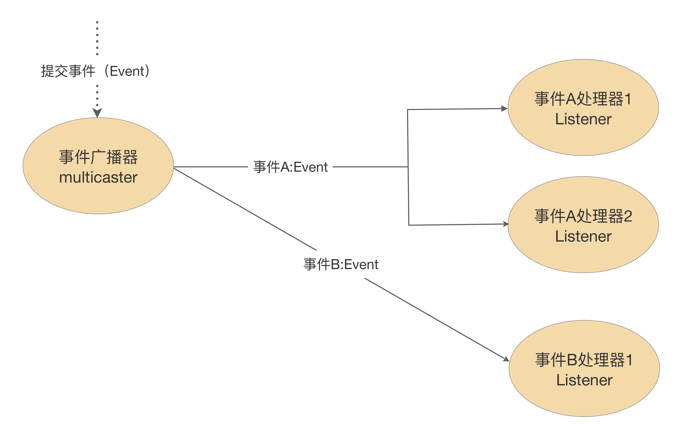

<!DOCTYPE html>
<!-- saved from url=(0046)https://kaiiiz.github.io/hexo-theme-book-demo/ -->
<html xmlns="http://www.w3.org/1999/xhtml">
<head>
    <head>
        <meta http-equiv="Content-Type" content="text/html; charset=UTF-8">
        <meta name="viewport" content="width=device-width, initial-scale=1, maximum-scale=1.0, user-scalable=no">
        <link rel="icon" href="/static/favicon.png">
        <title>Spring编程常见错误50例.html</title>
        <!-- Spectre.css framework -->
        <link rel="stylesheet" href="/static/index.css">
        <!-- theme css & js -->
        <meta name="generator" content="Hexo 4.2.0">
    </head>

<body>

<div class="book-container">

    <script>
        function add_inner() {
            let inner = document.querySelector('.sidebar-toggle-inner')
            inner.classList.add('show')
        }

        function remove_inner() {
            let inner = document.querySelector('.sidebar-toggle-inner')
            inner.classList.remove('show')
        }

        function sidebar_toggle() {
            let sidebar_toggle = document.querySelector('.sidebar-toggle')
            let sidebar = document.querySelector('.book-sidebar')
            let content = document.querySelector('.off-canvas-content')
            if (sidebar_toggle.classList.contains('extend')) { // show
                sidebar_toggle.classList.remove('extend')
                sidebar.classList.remove('hide')
                content.classList.remove('extend')
            } else { // hide
                sidebar_toggle.classList.add('extend')
                sidebar.classList.add('hide')
                content.classList.add('extend')
            }
        }


function open_sidebar() {
    let sidebar = document.querySelector('.book-sidebar')
    let overlay = document.querySelector('.off-canvas-overlay')
    sidebar.classList.add('show')
    overlay.classList.add('show')
}
function hide_canvas() {
    let sidebar = document.querySelector('.book-sidebar')
    let overlay = document.querySelector('.off-canvas-overlay')
    sidebar.classList.remove('show')
    overlay.classList.remove('show')
}

    </script>

    <div class="off-canvas-content">
        <div class="columns">
            <div class="column col-12 col-lg-12">
                <div class="book-navbar">
                    <!-- For Responsive Layout -->
                    <header class="navbar">
                        <section class="navbar-section">
                            <a onclick="open_sidebar()">
                                <i class="icon icon-menu"></i>
                            </a>
                        </section>
                    </header>
                </div>
                <div class="book-content" style="max-width: 960px; margin: 0 auto;
    overflow-x: auto;
    overflow-y: hidden;">
<div class="book-post">
                            
                            <div align="center">因收到Google相关通知，网站将会择期关闭。<a target="_blank" href="https://lumendatabase.org/notices/44265620">相关通知内容</a><hr></div>
                            
                            <p id="tip" align="center"></p>
                            <h1 id="title" data-id="00 导读 5分钟轻松了解Spring基础知识" class="title">00 导读 5分钟轻松了解Spring基础知识</h1>
                            <div><p>你好，我是傅健。</p>

<p>在开始我们第一章的学习之前，我想为你总结下有关Spring最基础的知识，这可以帮助我们后面的学习进展更加顺利一些。</p>

<p>就第一章来说，我们关注的是Spring核心功能使用中的各类错误案例。针对问题的讲解，我们大多都是直奔主题，这也是这个专栏的内容定位。所以对于<strong>很多基础的知识和流程</strong>，我们不会在解析过程中反复介绍，但它们依然是重要的，是我们解决问题的前提。借助这篇导读，我带你梳理下。</p>

<p>回顾Spring本身，什么是Spring最基础的知识呢？</p>

<p>其实就是那些<strong>Spring最本质的实现和思想</strong>。当你最开始学习的时候，你可能困惑于为什么要用Spring，而随着对Spring原理的深入探究和应用，你慢慢会发现，最大的收获其实还是对于这个困惑的理解。接下来我就给你讲讲。</p>

<p>在进行“传统的”Java编程时，对象与对象之间的关系都是紧密耦合的，例如服务类 Service 使用组件 ComponentA，则可能写出这样的代码：</p>

<pre><code class="hljs language-java"><span class="hljs-keyword">public</span> <span class="hljs-keyword">class</span> <span class="hljs-title class_">Service</span> {
    <span class="hljs-keyword">private</span> <span class="hljs-type">ComponentA</span> <span class="hljs-variable">component</span> <span class="hljs-operator">=</span> <span class="hljs-keyword">new</span> <span class="hljs-title class_">ComponentA</span>(<span class="hljs-string">"first component"</span>);
}
</code></pre>

<p>在没有Spring之前，你应该会觉得这段代码并没有多大问题，毕竟大家都这么写，而且也没有什么更好的方式。就像只有一条大路可走时，大家都朝一个方向走，你大概率不会反思是不是有捷径。</p>

<p>而随着项目的开发推进，你会发现检验一个方式好不好的硬性标准之一，就是看它<strong>有没有拥抱变化的能力</strong>。假设有一天，我们的ComponentA类的构造器需要更多的参数了，你会发现，上述代码到处充斥着这行需要改进的代码：</p>

<blockquote>
<p>private ComponentA component = new ComponentA(“first component”);</p>
</blockquote>

<p>此时你可能会想了，那我用下面这种方式来构造Service就可以了吧？</p>

<pre><code class="hljs language-cpp"><span class="hljs-keyword">public</span> <span class="hljs-keyword">class</span> <span class="hljs-title class_">Service</span> {
    <span class="hljs-keyword">private</span> ComponentA component；
    <span class="hljs-function"><span class="hljs-keyword">public</span> <span class="hljs-title">Service</span><span class="hljs-params">(ComponentA component)</span></span>{
      <span class="hljs-keyword">this</span>.component = component;
    }
}
</code></pre>

<p>当然不行，你忽略了一点，你在构建Service对象的时候，不还得使用new关键字来构建Component？需要修改的调用处并不少！</p>

<p>很明显，这是一个噩梦。那么，除了这点，还有没有别的不好的地方呢？上面说的是非单例的情况，如果ComponentA本身是一个单例，会不会好些？毕竟我们可能找一个地方new一次ComponentA实例就足够了，但是你可能会发现另外一些问题。</p>

<p>下面是一段用“双重检验锁”实现的CompoentA类：</p>

<pre><code class="hljs language-csharp"><span class="hljs-keyword">public</span> <span class="hljs-keyword">class</span> <span class="hljs-title">ComponentA</span>{  
    <span class="hljs-keyword">private</span> <span class="hljs-keyword">volatile</span> <span class="hljs-keyword">static</span> ComponentA INSTANCE;  
     
    <span class="hljs-function"><span class="hljs-keyword">private</span> <span class="hljs-title">ComponentA</span>()</span> {}  
     
    <span class="hljs-function"><span class="hljs-keyword">public</span> <span class="hljs-keyword">static</span> ComponentA <span class="hljs-title">getInstance</span>()</span>{  
        <span class="hljs-keyword">if</span> (INSTANCE== <span class="hljs-literal">null</span>) {  
            synchronized (ComponentA.<span class="hljs-keyword">class</span>) {  
                <span class="hljs-keyword">if</span> (INSTANCE== <span class="hljs-literal">null</span>) {  
                    INSTANCE= <span class="hljs-keyword">new</span> ComponentA();  
                }  
            }  
        }  
        <span class="hljs-keyword">return</span> INSTANCE;  
    }  
}
</code></pre>

<p>其实写了这么多代码，最终我们只是要一个单例而已。而且假设我们有ComponentB、ComponentC、ComponentD等，那上面的重复性代码不都得写一遍？也是烦的不行，不是么？</p>

<p>除了上述两个典型问题，还有不易于测试、不易扩展功能（例如支持AOP）等缺点。说白了，所有问题的根源（之一）就是<strong>对象与对象之间耦合性太强了</strong>。</p>

<p>所以Spring的引入，解决了上面这些零零种种的问题。那么它是怎么解决的呢？</p>

<p>这里套用一个租房的场景。我们为什么喜欢通过中介来租房子呢？因为省事呀，只要花点小钱就不用与房东产生直接的“纠缠”了。</p>

<p>Spring就是这个思路，它就像一个“中介”公司。当你需要一个依赖的对象（房子）时，你直接把你的需求告诉Spring（中介）就好了，它会帮你搞定这些依赖对象，按需创建它们，而无需你的任何额外操作。</p>

<p>不过，在Spring中，房东和租房者都是对象实例，只不过换了一个名字叫 Bean 而已。</p>

<p>可以说，通过一套稳定的生产流程，作为“中介”的Spring完成了生产和预装（牵线搭桥）这些Bean的任务。此时，你可能想了解更多。例如，如果一个Bean（租房者）需要用到另外一个Bean（房子）时，具体是怎么操作呢？</p>

<p>本质上只能从Spring“中介”里去找，有时候我们直接根据名称（小区名）去找，有时候则根据类型（户型），各种方式不尽相同。你就把<strong>Spring理解成一个Map型的公司</strong>即可，实现如下：</p>

<pre><code class="hljs language-typescript"><span class="hljs-keyword">public</span> <span class="hljs-keyword">class</span> <span class="hljs-title class_">BeanFactory</span> {

    <span class="hljs-keyword">private</span> <span class="hljs-title class_">Map</span>&lt;<span class="hljs-title class_">String</span>, <span class="hljs-title class_">Bean</span>&gt; beanMap = <span class="hljs-keyword">new</span> <span class="hljs-title class_">HashMap</span>&lt;&gt;();
    
    <span class="hljs-keyword">public</span> <span class="hljs-title class_">Bean</span> <span class="hljs-title function_">getBean</span>(<span class="hljs-params"><span class="hljs-built_in">String</span> key</span>){
      <span class="hljs-keyword">return</span> beanMap.<span class="hljs-title function_">get</span>(key) ;
    }

}
</code></pre>

<p>如上述代码所示，Bean所属公司提供了对于Map的操作来完成查找，找到Bean后装配给其它对象，这就是依赖查找、自动注入的过程。</p>

<p>那么回过头看，这些Bean又是怎么被创建的呢？</p>

<p>对于一个项目而言，不可避免会出现两种情况：一些对象是需要Spring来管理的，另外一些（例如项目中其它的类和依赖的Jar中的类）又不需要。所以我们得有一个办法去标识哪些是需要成为Spring Bean，因此各式各样的注解才应运而生，例如Component注解等。</p>

<p>那有了这些注解后，谁又来做“发现”它们的工作呢？直接配置指定自然不成问题，但是很明显“自动发现”更让人省心。此时，我们往往需要一个扫描器，可以模拟写下这样一个扫描器：</p>

<pre><code class="hljs language-typescript"><span class="hljs-keyword">public</span> <span class="hljs-keyword">class</span> <span class="hljs-title class_">AnnotationScan</span> {
    
    <span class="hljs-comment">//通过扫描包名来找到Bean</span>
    <span class="hljs-built_in">void</span> <span class="hljs-title function_">scan</span>(<span class="hljs-params"><span class="hljs-built_in">String</span> packages</span>) {
         <span class="hljs-comment">//</span>
    }

}
</code></pre>

<p>有了扫描器，我们就知道哪些类是需要成为Bean。</p>

<p>那怎么实例化为Bean（也就是一个对象实例而已）呢？很明显，只能通过<strong>反射</strong>来做了。不过这里面的方式可能有多种：</p>

<ul>
<li>java.lang.Class.newInsance()</li>
<li>java.lang.reflect.Constructor.newInstance()</li>
<li>ReflectionFactory.newConstructorForSerialization()</li>
</ul>

<p><strong>有了创建，有了装配，一个Bean才能成为自己想要的样子。</strong></p>

<p>而需求总是源源不断的，我们有时候想记录一个方法调用的性能，有时候我们又想在方法调用时输出统一的调用日志。诸如此类，我们肯定不想频繁再来个散弹式的修改。所以我们有了AOP，帮忙拦截方法调用，进行功能扩展。拦截谁呢？在Spring中自然就是Bean了。</p>

<p>其实AOP并不神奇，结合刚才的Bean（中介）公司来讲，假设我们判断出一个Bean需要“增强”了，我们直接让它从公司返回的时候，就使用一个代理对象作为返回不就可以了么？示例如下：</p>

<pre><code class="hljs language-typescript"><span class="hljs-keyword">public</span> <span class="hljs-keyword">class</span> <span class="hljs-title class_">BeanFactory</span> {

    <span class="hljs-keyword">private</span> <span class="hljs-title class_">Map</span>&lt;<span class="hljs-title class_">String</span>, <span class="hljs-title class_">Bean</span>&gt; beanMap = <span class="hljs-keyword">new</span> <span class="hljs-title class_">HashMap</span>&lt;&gt;();
    
    <span class="hljs-keyword">public</span> <span class="hljs-title class_">Bean</span> <span class="hljs-title function_">getBean</span>(<span class="hljs-params"><span class="hljs-built_in">String</span> key</span>){
       <span class="hljs-comment">//查找是否创建过</span>
       <span class="hljs-title class_">Bean</span> bean = beanMap.<span class="hljs-title function_">get</span>(key);
       <span class="hljs-keyword">if</span>(bean != <span class="hljs-literal">null</span>){
         <span class="hljs-keyword">return</span> bean;
       }
       <span class="hljs-comment">//创建一个Bean</span>
       <span class="hljs-title class_">Bean</span> bean = <span class="hljs-title function_">createBean</span>();
       <span class="hljs-comment">//判断要不要AOP</span>
       <span class="hljs-built_in">boolean</span> needAop = <span class="hljs-title function_">judgeIfNeedAop</span>(bean);
       <span class="hljs-keyword">try</span>{
           <span class="hljs-keyword">if</span>(needAop)
              <span class="hljs-comment">//创建代理对象</span>
              bean = <span class="hljs-title function_">createProxyObject</span>(bean);
              <span class="hljs-keyword">return</span> bean;
           <span class="hljs-attr">else</span>:
              <span class="hljs-keyword">return</span> bean
       }<span class="hljs-keyword">finally</span>{
           beanMap.<span class="hljs-title function_">put</span>(key, bean);
       }
    }
}
</code></pre>

<p>那么怎么知道一个对象要不要AOP？既然一个对象要AOP，它肯定被标记了一些“规则”，例如拦截某个类的某某方法，示例如下：</p>

<pre><code class="hljs language-less"><span class="hljs-variable">@Aspect</span>
<span class="hljs-variable">@Service</span>
public class AopConfig {
    <span class="hljs-variable">@Around</span>(<span class="hljs-string">"execution(* com.spring.puzzle.ComponentA.execute()) "</span>)
    public void recordPayPerformance(ProceedingJoinPoint joinPoint) throws Throwable {
      <span class="hljs-comment">//</span>
    }
}
</code></pre>

<p>这个时候，很明显了，假设你的Bean名字是ComponentA，那么就应该返回ComponentA类型的代理对象了。至于这些规则是怎么建立起来的呢？你看到它上面使用的各种注解大概就能明白其中的规则了，无非就是<strong>扫描注解，根据注解创建规则</strong>。</p>

<p>以上即为Spring的一些核心思想，包括<strong>Bean的构建、自动注入和AOP</strong>，这中间还会掺杂无数的细节，不过这不重要，抓住这个核心思想对你接下来理解各种类型的错误案例才是大有裨益的！</p>

<p>你好，我是傅健，这节课我们来聊一聊 Spring Bean 的初始化过程及销毁过程中的一些问题。</p>

<p>虽然说 Spring 容器上手简单，可以仅仅通过学习一些有限的注解，即可达到快速使用的目的。但在工程实践中，我们依然会从中发现一些常见的错误。尤其当你对 Spring 的生命周期还没有深入了解时，类初始化及销毁过程中潜在的约定就不会很清楚。</p>
</div>
                        </div><div class="book-post">
                            
                            <div align="center">因收到Google相关通知，网站将会择期关闭。<a target="_blank" href="https://lumendatabase.org/notices/44265620">相关通知内容</a><hr></div>
                            
                            <p id="tip" align="center"></p>
                            <h1 id="title" data-id="00 开篇词 贴心“保姆”Spring罢工了怎么办？" class="title">00 开篇词 贴心“保姆”Spring罢工了怎么办？</h1>
                            <div><p>你好，我是傅健，很开心能在这里遇见你。</p>

<p>先做个自我介绍吧！你可能认识我，没错，我之前在极客时间开过一门视频课<a href="https://time.geekbang.org/course/intro/100036701" target="_blank">《Netty源码剖析与实战》</a>。出于对开源的热爱，我本身是一名Netty源码贡献者，同时也是Jedis、Spring Data Redis、influxdb–java、Jenkins等众多开源项目的Contributor，如果我们曾在开源社区相识，也算很有缘分了。</p>

<p>本职工作的话，我是一名软件工程师，在思科中国研发中心工作，从业已经有十多年了，和同事一起合作写过一本书叫《度量驱动开发》。期间，我也做过很多项目，类型很丰富，从移动端应用到文档存储系统，消息系统到电话接入系统等等。实际上，不管这些项目冠以什么名称、历经什么级别流量的洗礼，你都不会质疑一点：<strong>我们在项目中大量使用和依赖Spring。</strong></p>

<h2 id="spring的变革">Spring的变革</h2>

<p>细数经历，我和团队开始使用Spring可以追溯到10多年前，正是我刚参加工作的时候。那时候我们了解Spring都是从SSH框架开始的。到了今天，Spring已经随着技术的发展悄然换了一副面貌。</p>

<p>在Spring还没有像今天这样被广泛应用时，我们开发一个Java Web程序还属于茹毛饮血的时代，我们会编写一堆看似重复的代码或者配置，然后战战兢兢地期待一次就能运行成功。然而，即使这些工作都是重复的，仍然会有各种各样的错误产生。</p>

<p>到了2014年之后，便捷、强大的Spring Boot的引入，让Spring的应用变得更加广泛起来。它给我们这些Java程序员带来了福音，我第一次见到Spring编写的Hello World Web应用程序时（示例如下），那种惊叹的感觉至今记忆犹新。</p>

<pre><code class="hljs language-typescript"><span class="hljs-meta">@SpringBootApplication</span>
<span class="hljs-meta">@RestController</span>
<span class="hljs-keyword">public</span> <span class="hljs-keyword">class</span> <span class="hljs-title class_">Application</span> {

    <span class="hljs-keyword">public</span> <span class="hljs-keyword">static</span> <span class="hljs-built_in">void</span> <span class="hljs-title function_">main</span>(<span class="hljs-params"><span class="hljs-built_in">String</span>[] args</span>) {
        <span class="hljs-title class_">SpringApplication</span>.<span class="hljs-title function_">run</span>(<span class="hljs-title class_">Application</span>.<span class="hljs-property">class</span>, args);
    }

    <span class="hljs-meta">@RequestMapping</span>(path = <span class="hljs-string">"/hi"</span>)
    <span class="hljs-keyword">public</span> <span class="hljs-title class_">String</span> <span class="hljs-title function_">hi</span>(<span class="hljs-params"></span>){
        <span class="hljs-keyword">return</span> <span class="hljs-string">"hi, spring"</span>;
    };

}
</code></pre>

<p>但利好往往就像一把双刃剑。后来有很多人说，Spring降低了程序员的技术门槛，确实，以往那些错综复杂的开发工作已经变得非常简单了。可也有很多人掉进了一个误区，因为简单，所以穿“格子衫”“会码字”就能搞Java开发了吗？唉～现实残酷啊！</p>

<h2 id="spring踩坑之旅">Spring踩坑之旅</h2>

<p>不管你是新手程序员，还是资深程序员，只要你使用过Spring，应该都有过<strong>类似这样的感受</strong>。</p>

<p>虽然完成了工作，但是总觉得心里没底。例如，我们在给一个接口类添加@RestController注解时，有时候难免会想，换成@Controller可以么？到底用哪个更好？</p>

<p>当我们遇到一个过滤器（Filter）不按我们想要的顺序执行时，通常都是立马想到去加@Order，但是@Order不见得能搞定所有的情景呀。此时，我们又会抓狂地胡乱操作，各种注解来一遍，最终顺序可能保证了，但是每个过滤器都执行了多次。当然也可能真的搞定了问题，但解决得糊里糊涂。</p>

<p>还有，为什么我们只是稍微动了下，就出故障了呢？例如，新手常遇到的一个错误，在Spring Boot中，将Controller层的类移动到Application的包之外，此时Controller层提供的接口就直接失效了。</p>

<p>而当我们遇到问题时，又该从何查起？例如，下面这段代码在一些项目中是可以运行的，但是换成另外一个项目又不可以了，这是什么情况呢？</p>

<pre><code class="hljs language-less"><span class="hljs-variable">@RequestMapping</span>(path = <span class="hljs-string">"/hi"</span>, method = RequestMethod.GET)
public String hi(<span class="hljs-variable">@RequestParam</span> String name){
    <span class="hljs-selector-tag">return</span> <span class="hljs-selector-tag">name</span>;
};
</code></pre>

<p>甚至有时候，我们都不是换一个项目，而是添加一些新的功能，都会导致旧的功能出问题。例如，我们对下面这个 Bean 增加 AOP 切面配置来拦截它的 login 方法后：</p>

<pre><code class="hljs language-java"><span class="hljs-meta">@Service</span>
<span class="hljs-keyword">public</span> <span class="hljs-keyword">class</span> <span class="hljs-title class_">AdminUserService</span> {
    <span class="hljs-keyword">public</span> <span class="hljs-keyword">final</span> <span class="hljs-type">User</span> <span class="hljs-variable">adminUser</span> <span class="hljs-operator">=</span> <span class="hljs-keyword">new</span> <span class="hljs-title class_">User</span>(<span class="hljs-string">"fujian"</span>);
    <span class="hljs-keyword">public</span> User <span class="hljs-title function_">getAdminUser</span><span class="hljs-params">()</span>{
        <span class="hljs-keyword">return</span> adminUser;
    }    
    <span class="hljs-keyword">public</span> <span class="hljs-keyword">void</span> <span class="hljs-title function_">login</span><span class="hljs-params">()</span>{
        <span class="hljs-comment">//</span>
    }
}
</code></pre>

<p>你可能会蒙圈地发现：下面这行本来在别处工作正常的代码，忽然就报空指针错误了，这又是为何？</p>

<p>此时，相信你的内心是迷惘、纠结的，心里可能还会暗骂：去它的Spring，搞啥呢？</p>

<blockquote>
<p>String adminUserName = adminUserService.adminUser.getUserName();</p>
</blockquote>

<p>为什么会有这些感受呢？追根溯源，还是在于 <strong>Spring实在太“贴心”了</strong>。它就像一个“保姆”，把我们所有常见的工作都完成了，如果你幸运的话，可能很久都不会遇到问题。</p>

<p>但是，这份贴心毕竟是建立在很多<strong>约定俗成的规则</strong>之上。就像我们雇佣的保姆，她可能一直假定你是吃中餐的，所以每次你下班回家，中餐就已经做好了。但是假设有一天，你忽然临时兴起想吃西餐，你可能才会发现这个贴心的保姆她只会做中餐，你想不吃都不行。</p>

<p>Spring就是这样，它有很多隐性的约定，而这些约定并不一定是你所熟悉的。所以，当你遇到问题时，很有可能就抓狂了。一方面我们得益于它所带来的轻松，因为不需要了解太多我们也能工作；另一方面也会崩溃于问题来临之时无法快速解决，因为我们平时根本不需要，甚至不觉得要了解更多。</p>

<p>这个时候就有很多人跳出来跟你说：“你一定要提前把Spring吃透啊！”</p>

<p>可当你翻阅Spring源码时，你肯定会望而生畏，真的太多了，不带着问题去学习无异于大海捞针。即使你去通读市场上大多数畅销的Spring教程，你可能仍然会感觉到茫然，不知道自己到底掌握得如何。毕竟读完之后，你不一定能预见到未来可能遇到哪些问题，而<strong>这些问题的规避和处理往往才是检验你学习成果的标准。</strong></p>

<h2 id="我如何讲这门课">我如何讲这门课？</h2>

<p>厌倦了遇到问题时的疲于奔命，自然就要寻找高效便捷的学习法门了，所以这几年我一直在整理Spring开发中所遇到的各种各样的问题，然后按类划分。</p>

<p>项目忙的时候，就简单记录一下，忙过去了就深入研究。现在我的 ToDoList 已经非常详实了，对我的团队帮助也非常大。对于新人来说，这是份<strong>全面的避坑指南</strong>；对于老人来说，这又是个很好的<strong>问题备忘录</strong>。</p>

<p>这就是我做这门课的初衷，这里也真心分享给你。</p>

<p>在内容设计上，整个专栏都是以问题驱动的方式来组织知识点的，大概是这样的一个思路：</p>

<p></p>

<ol>
<li>给出50+错误案例；</li>
<li>从源码级别探究问题出现的原因；</li>
<li>给出问题的解决方案并总结关键点。</li>
</ol>

<p>另外，专栏中的大多数问题并没有太大关联，这是为了避免你的学习负担过重，我想尽可能地让你在碎片化时间里去吃透一个问题及其背后原理。最终，通过这些无数的问题点，帮助你形成对Spring的整体认知，做到独当一面。</p>

<p>而在问题的选型上，我一共筛选出了50多个常见问题，这些问题主要来自：我和同事在生产环境中经常遇到问题，Stack Overflow网站上的一些高频问题，以及常用搜索引擎检索到的一些高频问题。</p>

<p>这些问题的选择都遵循这样几个原则：</p>

<ol>
<li>不难，但是常见，基本每个人都会遇到；</li>
<li>不太常见，但是一旦碰见，很容易入坑；</li>
<li>在某些场景下可以工作，换一种情况就失效。</li>
</ol>

<h2 id="课程设计">课程设计</h2>

<p>有了关于具体内容的详细说明，我相信你对专栏所能解决的问题已经有了大概的感知。接下来，我再跟你说说整体的课程设计，帮助你进一步了解。</p>

<p>本专栏共分为以下三个部分，你可以对照着下面这张图去理解我的设计思路：</p>

<p></p>

<p><strong>Spring Core篇：</strong>Spring Core包括Bean定义、注入、AOP等核心功能，可以说它们是Spring的基石。不管未来你是做Spring Web开发，还是使用Spring Cloud技术栈，你都绕不开这些功能。所以这里我会重点介绍在这些功能使用上的常见问题。</p>

<p><strong>Spring Web篇：</strong>大多项目使用Spring还是为了进行Web开发，所以我也梳理了从请求URL解析、Header解析、Body转化到授权等Web开发中绕不开的问题。不难发现，它们正好涵盖了从一个请求到来，到响应回去这一完整流程。</p>

<p><strong>Spring 补充篇：</strong>作为补充，这部分我会重点介绍Spring测试、Spring事务、Spring Data相关问题。最后，我还会为你系统总结下Spring使用中发生问题的根本原因。</p>

<p>通过学习这50多个常见、典型的问题，我相信对于Spring的本质，你会有更加深刻的认识；而对于产生问题的原因，也能做到洞若观火。最终掌握这些问题的最佳解决方式，触类旁通。</p>

<h2 id="tips">Tips</h2>

<p>不过，有几点我还是要提醒你一下。这门课程<strong>需要一定的基础</strong>，你要知道最基本的Spring使用知识，比如如何自动注入一个Bean，如何使用AOP等；同时，你也需要有一定的耐心，因为涉及源码理解。</p>

<p>另外，这门课程重在实践与查漏补缺，所以在每个问题的讲解上，我不可能追根溯源地把所有的背景知识、前后调用关系都完整呈现出来，否则你看到的无疑是一门包含大量重复内容的Spring教程而已，这也违背了这门课的初衷。</p>

<p>我希望当你学到某个问题，但感觉基础有所欠缺时，你能<strong>及时去补习相关的内容</strong>。当然了，你也可以直接在留言区中问我，我会尽我所能为你提供帮助。</p>

<p>还有就是，课程中会有<strong>很多的案例和示例代码</strong>，还有一些关键实现，我希望你能跟着我的节奏去验证一下，只有真正自己动手了印象才会深刻。</p>

<p>最后，我想说，这个专栏是一个<strong>问题库</strong>，也是一本工具书，好好利用，当你再次遇到各种各样的Spring问题时，它会给你底气！如果你现在已经遇到了一些难题，也欢迎在留言区中与我交流，对于专栏中未涉及，却十分有价值的问题，我后期会考虑以加餐的形式交付给你。</p>

<p>感谢信任，我们下节课见！</p>
</div>
                        </div><div class="book-post">
                            
                            <div align="center">因收到Google相关通知，网站将会择期关闭。<a target="_blank" href="https://lumendatabase.org/notices/44265620">相关通知内容</a><hr></div>
                            
                            <p id="tip" align="center"></p>
                            <h1 id="title" data-id="01 Spring Bean 定义常见错误" class="title">01 Spring Bean 定义常见错误</h1>
                            <div><p>你好，我是傅健。</p>

<p>从导读中我们已知，Spring 的核心是围绕 Bean 进行的。不管是 Spring Boot 还是 Spring Cloud，只要名称中带有Spring关键字的技术都脱离不了 Bean，而要使用一个 Bean 少不了要先定义出来，所以<strong>定义一个Bean 就变得格外重要了</strong>。</p>

<p>当然，对于这么重要的工作，Spring 自然给我们提供了很多简单易用的方式。然而，这种简单易用得益于 Spring 的“<strong>约定大于配置</strong>”，但我们往往不见得会对所有的约定都了然于胸，所以仍然会在 Bean 的定义上犯一些经典的错误。</p>

<p>接下来我们就来了解下那些经典错误以及它们背后的原理，你也可以对照着去看看自己是否也曾犯过，后来又是如何解决的。</p>

<h2 id="案例-1-隐式扫描不到-bean-的定义">案例 1：隐式扫描不到 Bean 的定义</h2>

<p>在构建 Web 服务时，我们常使用 Spring Boot 来快速构建。例如，使用下面的包结构和相关代码来完成一个简易的 Web 版 HelloWorld：</p>

<p></p>

<p>其中，负责启动程序的 Application 类定义如下：</p>

<pre><code class="hljs language-typescript">package com.<span class="hljs-property">spring</span>.<span class="hljs-property">puzzle</span>.<span class="hljs-property">class1</span>.<span class="hljs-property">example1</span>.<span class="hljs-property">application</span>
<span class="hljs-comment">//省略 import</span>
<span class="hljs-meta">@SpringBootApplication</span>
<span class="hljs-keyword">public</span> <span class="hljs-keyword">class</span> <span class="hljs-title class_">Application</span> {
    <span class="hljs-keyword">public</span> <span class="hljs-keyword">static</span> <span class="hljs-built_in">void</span> <span class="hljs-title function_">main</span>(<span class="hljs-params"><span class="hljs-built_in">String</span>[] args</span>) {
        <span class="hljs-title class_">SpringApplication</span>.<span class="hljs-title function_">run</span>(<span class="hljs-title class_">Application</span>.<span class="hljs-property">class</span>, args);
    }
}
</code></pre>

<p>提供接口的 HelloWorldController 代码如下：</p>

<pre><code class="hljs language-kotlin"><span class="hljs-keyword">package</span> com.spring.puzzle.class1.example1.application
<span class="hljs-comment">//省略 import</span>
<span class="hljs-meta">@RestController</span>
<span class="hljs-keyword">public</span> <span class="hljs-class"><span class="hljs-keyword">class</span> <span class="hljs-title">HelloWorldController</span> </span>{
    <span class="hljs-meta">@RequestMapping(path = <span class="hljs-string">"hi"</span>, method = RequestMethod.GET)</span>
    <span class="hljs-keyword">public</span> String hi(){
         <span class="hljs-keyword">return</span> <span class="hljs-string">"helloworld"</span>;
    };
}
</code></pre>

<p>上述代码即可实现一个简单的功能：访问<a href="http://localhost:8080/hi" target="_blank">http://localhost:8080/hi</a> 返回helloworld。两个关键类位于同一个包（即 application）中。其中 HelloWorldController 因为添加了@RestController，最终被识别成一个 Controller 的 Bean。</p>

<p>但是，假设有一天，当我们需要添加多个类似的 Controller，同时又希望用更清晰的包层次和结构来管理时，我们可能会去单独建立一个独立于 application 包之外的 Controller 包，并调整类的位置。调整后结构示意如下：</p>

<p></p>

<p>实际上，我们没有改变任何代码，只是改变了包的结构，但是我们会发现这个 Web 应用失效了，即不能识别出 HelloWorldController 了。也就是说，我们找不到 HelloWorldController 这个 Bean 了。这是为何？</p>

<h3 id="案例解析">案例解析</h3>

<p>要了解 HelloWorldController 为什么会失效，就需要先了解之前是如何生效的。对于 Spring Boot 而言，关键点在于 Application.java 中使用了 SpringBootApplication 注解。而这个注解继承了另外一些注解，具体定义如下：</p>

<pre><code class="hljs language-less"><span class="hljs-variable">@Target</span>(ElementType.TYPE)
<span class="hljs-variable">@Retention</span>(RetentionPolicy.RUNTIME)
<span class="hljs-variable">@Documented</span>
<span class="hljs-variable">@Inherited</span>
<span class="hljs-variable">@SpringBootConfiguration</span>
<span class="hljs-variable">@EnableAutoConfiguration</span>
<span class="hljs-variable">@ComponentScan</span>(excludeFilters = { <span class="hljs-variable">@Filter</span>(type = FilterType.CUSTOM, classes = TypeExcludeFilter.class),
      <span class="hljs-variable">@Filter</span>(type = FilterType.CUSTOM, classes = AutoConfigurationExcludeFilter.class) })
public <span class="hljs-variable">@interface</span> SpringBootApplication {
<span class="hljs-comment">//省略非关键代码</span>
}
</code></pre>

<p>从定义可以看出，SpringBootApplication开启了很多功能，其中一个关键功能就是 ComponentScan，参考其配置如下：</p>

<blockquote>
<p>@ComponentScan(excludeFilters = { @Filter(type = FilterType.CUSTOM, classes = TypeExcludeFilter.class)</p>
</blockquote>

<p>当 Spring Boot 启动时，ComponentScan 的启用意味着会去扫描出所有定义的 Bean，那么扫描什么位置呢？这是由 ComponentScan 注解的 basePackages 属性指定的，具体可参考如下定义：</p>

<pre><code class="hljs language-typescript"><span class="hljs-keyword">public</span> <span class="hljs-meta">@interface</span> <span class="hljs-title class_">ComponentScan</span> {

<span class="hljs-comment">/**
 * Base packages to scan for annotated components.
 * &lt;p&gt;{<span class="hljs-doctag">@link</span> #value} is an alias for (and mutually exclusive with) this
 * attribute.
 * &lt;p&gt;Use {<span class="hljs-doctag">@link</span> #basePackageClasses} for a type-safe alternative to
 * String-based package names.
 */</span>
<span class="hljs-meta">@AliasFor</span>(<span class="hljs-string">"value"</span>)
<span class="hljs-title class_">String</span>[] <span class="hljs-title function_">basePackages</span>() <span class="hljs-keyword">default</span> {};
<span class="hljs-comment">//省略其他非关键代码</span>
}
</code></pre>

<p>而在我们的案例中，我们直接使用的是 SpringBootApplication 注解定义的 ComponentScan，它的 basePackages 没有指定，所以默认为空（即{}）。此时扫描的是什么包？这里不妨带着这个问题去调试下（调试位置参考 ComponentScanAnnotationParser#parse 方法），调试视图如下：</p>

<p></p>

<p>从上图可以看出，当 basePackages 为空时，扫描的包会是 declaringClass 所在的包，在本案例中，declaringClass 就是 Application.class，所以扫描的包其实就是它所在的包，即com.spring.puzzle.class1.example1.application。</p>

<p>对比我们重组包结构前后，我们自然就找到了这个问题的根源：在调整前，HelloWorldController 在扫描范围内，而调整后，它已经远离了扫描范围（不和 Application.java 一个包了），虽然代码没有一丝丝改变，但是这个功能已经失效了。</p>

<p>所以，综合来看，这个问题是因为我们不够了解 Spring Boot 的默认扫描规则引起的。我们仅仅享受了它的便捷，但是并未了解它背后的故事，所以稍作变化，就可能玩不转了。</p>

<h3 id="问题修正">问题修正</h3>

<p>针对这个案例，有了源码的剖析，我们可以快速找到解决方案了。当然了，我们所谓的解决方案肯定不是说把 HelloWorldController 移动回原来的位置，而是<strong>真正去满足需求</strong>。在这里，真正解决问题的方式是显式配置@ComponentScan。具体修改方式如下：</p>

<pre><code class="hljs language-less"><span class="hljs-variable">@SpringBootApplication</span>
<span class="hljs-variable">@ComponentScan</span>(<span class="hljs-string">"com.spring.puzzle.class1.example1.controller"</span>)
public class Application {
    <span class="hljs-selector-tag">public</span> <span class="hljs-selector-tag">static</span> <span class="hljs-selector-tag">void</span> <span class="hljs-selector-tag">main</span>(String[] args) {
        <span class="hljs-selector-tag">SpringApplication</span><span class="hljs-selector-class">.run</span>(Application.class, args);
    }
}
</code></pre>

<p>通过上述修改，我们显式指定了扫描的范围为com.spring.puzzle.class1.example1.controller。不过需要注意的是，显式指定后，默认的扫描范围（即com.spring.puzzle.class1.example1.application）就不会被添加进去了。另外，我们也可以使用@ComponentScans 来修复问题，使用方式如下：</p>

<blockquote>
<p>@ComponentScans(value = { @ComponentScan(value = “com.spring.puzzle.class1.example1.controller”) })</p>
</blockquote>

<p>顾名思义，可以看出 ComponentScans 相比较 ComponentScan 多了一个s，支持多个包的扫描范围指定。</p>

<p>此时，细心的你可能会发现：如果对源码缺乏了解，很容易会顾此失彼。以 ComponentScan 为例，原有的代码扫描了默认包而忽略了其它包；而<strong>一旦显式指定其它包，原来的默认扫描包就被忽略了。</strong></p>

<h2 id="案例-2-定义的-bean-缺少隐式依赖">案例 2：定义的 Bean 缺少隐式依赖</h2>

<p>初学 Spring 时，我们往往不能快速转化思维。例如，在程序开发过程中，有时候，一方面我们把一个类定义成 Bean，同时又觉得这个 Bean 的定义除了加了一些 Spring 注解外，并没有什么不同。所以在后续使用时，有时候我们会不假思索地去随意定义它，例如我们会写出下面这样的代码：</p>

<pre><code class="hljs language-typescript"><span class="hljs-meta">@Service</span>
<span class="hljs-keyword">public</span> <span class="hljs-keyword">class</span> <span class="hljs-title class_">ServiceImpl</span> {

    <span class="hljs-keyword">private</span> <span class="hljs-title class_">String</span> serviceName;

    <span class="hljs-keyword">public</span> <span class="hljs-title class_">ServiceImpl</span>(<span class="hljs-title class_">String</span> serviceName){
        <span class="hljs-variable language_">this</span>.<span class="hljs-property">serviceName</span> = serviceName;
    }

}
</code></pre>

<p>ServiceImpl 因为标记为@Service而成为一个 Bean。另外我们ServiceImpl 显式定义了一个构造器。但是，上面的代码不是永远都能正确运行的，有时候会报下面这种错误：</p>

<blockquote>
<p>Parameter 0 of constructor in com.spring.puzzle.class1.example2.ServiceImpl required a bean of type ‘java.lang.String’ that could not be found.</p>
</blockquote>

<p>那这种错误是怎么发生的呢？下面我们来分析一下。</p>

<h3 id="案例解析-1">案例解析</h3>

<p>当创建一个 Bean 时，调用的方法是 AbstractAutowireCapableBeanFactory#createBeanInstance。它主要包含两大基本步骤：寻找构造器和通过反射调用构造器创建实例。对于这个案例，最核心的代码执行，你可以参考下面的代码片段：</p>

<pre><code class="hljs language-kotlin"><span class="hljs-comment">// Candidate constructors for autowiring?</span>
Constructor&lt;?&gt;[] ctors = determineConstructorsFromBeanPostProcessors(beanClass, beanName);
<span class="hljs-keyword">if</span> (ctors != <span class="hljs-literal">null</span> || mbd.getResolvedAutowireMode() == AUTOWIRE_CONSTRUCTOR ||
      mbd.hasConstructorArgumentValues() || !ObjectUtils.isEmpty(args)) {
   <span class="hljs-keyword">return</span> autowireConstructor(beanName, mbd, ctors, args);
}
</code></pre>

<p>Spring 会先执行 determineConstructorsFromBeanPostProcessors 方法来获取构造器，然后通过 autowireConstructor 方法带着构造器去创建实例。很明显，在本案例中只有一个构造器，所以非常容易跟踪这个问题。</p>

<p>autowireConstructor 方法要创建实例，不仅需要知道是哪个构造器，还需要知道构造器对应的参数，这点从最后创建实例的方法名也可以看出，参考如下（即 ConstructorResolver#instantiate）：</p>

<pre><code class="hljs language-typescript"><span class="hljs-keyword">private</span> <span class="hljs-title class_">Object</span> <span class="hljs-title function_">instantiate</span>(
      <span class="hljs-title class_">String</span> beanName, <span class="hljs-title class_">RootBeanDefinition</span> mbd, <span class="hljs-title class_">Constructor</span>&lt;?&gt; constructorToUse, <span class="hljs-title class_">Object</span>[] argsToUse) 
</code></pre>

<p>那么上述方法中存储构造参数的 argsToUse 如何获取呢？换言之，当我们已经知道构造器ServiceImpl(String serviceName)，要创建出 ServiceImpl 实例，如何确定 serviceName 的值是多少？</p>

<p>很明显，这里是在使用 Spring，我们<strong>不能直接显式使用 new 关键字来创建实例</strong>。Spring只能是去寻找依赖来作为构造器调用参数。</p>

<p>那么这个参数如何获取呢？可以参考下面的代码片段（即 ConstructorResolver#autowireConstructor）：</p>

<pre><code class="hljs language-makefile">argsHolder = createArgumentArray(beanName, mbd, resolvedValues, bw, paramTypes, paramNames,
      getUserDeclaredConstructor(candidate), autowiring, candidates.length == 1);
</code></pre>

<p>我们可以调用 createArgumentArray 方法来构建调用构造器的参数数组，而这个方法的最终实现是从 BeanFactory 中获取 Bean，可以参考下述调用：</p>

<pre><code class="hljs language-kotlin"><span class="hljs-keyword">return</span> <span class="hljs-keyword">this</span>.beanFactory.resolveDependency(
      new DependencyDescriptor(param, <span class="hljs-literal">true</span>), beanName, autowiredBeanNames, typeConverter);
</code></pre>

<p>如果用调试视图，我们则可以看到更多的信息：</p>

<p></p>

<p>如图所示，上述的调用即是根据参数来寻找对应的 Bean，在本案例中，如果找不到对应的 Bean 就会抛出异常，提示装配失败。</p>

<h3 id="问题修正-1">问题修正</h3>

<p>从源码级别了解了错误的原因后，现在反思为什么会出现这个错误。追根溯源，正如开头所述，因为不了解很多隐式的规则：我们定义一个类为 Bean，如果再显式定义了构造器，那么这个 Bean 在构建时，会自动根据构造器参数定义寻找对应的 Bean，然后反射创建出这个 Bean。</p>

<p>了解了这个隐式规则后，解决这个问题就简单多了。我们可以直接定义一个能让 Spring 装配给 ServiceImpl 构造器参数的 Bean，例如定义如下：</p>

<pre><code class="hljs language-typescript"><span class="hljs-comment">//这个bean装配给ServiceImpl的构造器参数“serviceName”</span>
<span class="hljs-meta">@Bean</span>
<span class="hljs-keyword">public</span> <span class="hljs-title class_">String</span> <span class="hljs-title function_">serviceName</span>(<span class="hljs-params"></span>){
    <span class="hljs-keyword">return</span> <span class="hljs-string">"MyServiceName"</span>;
}
</code></pre>

<p>再次运行程序，发现一切正常了。</p>

<p>所以，我们在使用 Spring 时，<strong>不要总想着定义的Bean 也可以在非 Spring 场合直接用 new 关键字显式使用，这种思路是不可取的</strong>。</p>

<p>另外，类似的，假设我们不了解 Spring 的隐式规则，在修正问题后，我们可能写出更多看似可以运行的程序，代码如下：</p>

<pre><code class="hljs language-typescript"><span class="hljs-meta">@Service</span>
<span class="hljs-keyword">public</span> <span class="hljs-keyword">class</span> <span class="hljs-title class_">ServiceImpl</span> {
    <span class="hljs-keyword">private</span> <span class="hljs-title class_">String</span> serviceName;
    <span class="hljs-keyword">public</span> <span class="hljs-title class_">ServiceImpl</span>(<span class="hljs-title class_">String</span> serviceName){
        <span class="hljs-variable language_">this</span>.<span class="hljs-property">serviceName</span> = serviceName;
    }
    <span class="hljs-keyword">public</span> <span class="hljs-title class_">ServiceImpl</span>(<span class="hljs-title class_">String</span> serviceName, <span class="hljs-title class_">String</span> otherStringParameter){
        <span class="hljs-variable language_">this</span>.<span class="hljs-property">serviceName</span> = serviceName;
    }
}
</code></pre>

<p>如果我们仍用非 Spring 的思维去审阅这段代码，可能不会觉得有什么问题，毕竟 String 类型可以自动装配了，无非就是增加了一个 String 类型的参数而已。</p>

<p>但是如果你了解 Spring 内部是用反射来构建 Bean 的话，就不难发现问题所在：存在两个构造器，都可以调用时，到底应该调用哪个呢？最终 Spring 无从选择，只能尝试去调用默认构造器，而这个默认构造器又不存在，所以测试这个程序它会出错。</p>

<h2 id="案例-3-原型-bean-被固定">案例 3：原型 Bean 被固定</h2>

<p>接下来，我们再来看另外一个关于 Bean 定义不生效的案例。在定义 Bean 时，有时候我们会使用原型 Bean，例如定义如下：</p>

<pre><code class="hljs language-less"><span class="hljs-variable">@Service</span>
<span class="hljs-variable">@Scope</span>(ConfigurableBeanFactory.SCOPE_PROTOTYPE)
public class ServiceImpl {
}
</code></pre>

<p>然后我们按照下面的方式去使用它：</p>

<pre><code class="hljs language-typescript"><span class="hljs-meta">@RestController</span>
<span class="hljs-keyword">public</span> <span class="hljs-keyword">class</span> <span class="hljs-title class_">HelloWorldController</span> {

    <span class="hljs-meta">@Autowired</span>
    <span class="hljs-keyword">private</span> <span class="hljs-title class_">ServiceImpl</span> serviceImpl;

    <span class="hljs-meta">@RequestMapping</span>(path = <span class="hljs-string">"hi"</span>, method = <span class="hljs-title class_">RequestMethod</span>.<span class="hljs-property">GET</span>)
    <span class="hljs-keyword">public</span> <span class="hljs-title class_">String</span> <span class="hljs-title function_">hi</span>(<span class="hljs-params"></span>){
         <span class="hljs-keyword">return</span> <span class="hljs-string">"helloworld, service is : "</span> + serviceImpl;
    };
}
</code></pre>

<p>结果，我们会发现，不管我们访问多少次<a href="http://localhost:8080/hi" target="_blank">http://localhost:8080/hi</a>，访问的结果都是不变的，如下：</p>

<blockquote>
<p>helloworld, service is : com.spring.puzzle.class1.example3.error.ServiceImpl@4908af</p>
</blockquote>

<p>很明显，这很可能和我们定义 ServiceImpl 为原型 Bean 的初衷背道而驰，如何理解这个现象呢？</p>

<h3 id="案例解析-2">案例解析</h3>

<p>当一个属性成员 serviceImpl 声明为@Autowired 后，那么在创建 HelloWorldController 这个 Bean 时，会先使用构造器反射出实例，然后来装配各个标记为@Autowired 的属性成员（装配方法参考 AbstractAutowireCapableBeanFactory#populateBean）。</p>

<p>具体到执行过程，它会使用很多 BeanPostProcessor 来做完成工作，其中一种是 AutowiredAnnotationBeanPostProcessor，它会通过 DefaultListableBeanFactory#findAutowireCandidates 寻找到 ServiceImpl 类型的 Bean，然后设置给对应的属性（即 serviceImpl成员）。</p>

<p>关键执行步骤可参考 AutowiredAnnotationBeanPostProcessor.AutowiredFieldElement#inject：</p>

<pre><code class="hljs language-java"><span class="hljs-keyword">protected</span> <span class="hljs-keyword">void</span> <span class="hljs-title function_">inject</span><span class="hljs-params">(Object bean, <span class="hljs-meta">@Nullable</span> String beanName, <span class="hljs-meta">@Nullable</span> PropertyValues pvs)</span> <span class="hljs-keyword">throws</span> Throwable {
   <span class="hljs-type">Field</span> <span class="hljs-variable">field</span> <span class="hljs-operator">=</span> (Field) <span class="hljs-built_in">this</span>.member;
   Object value;
   <span class="hljs-comment">//寻找“bean”</span>
   <span class="hljs-keyword">if</span> (<span class="hljs-built_in">this</span>.cached) {
      value = resolvedCachedArgument(beanName, <span class="hljs-built_in">this</span>.cachedFieldValue);
   }
   <span class="hljs-keyword">else</span> {
     <span class="hljs-comment">//省略其他非关键代码</span>
     value = beanFactory.resolveDependency(desc, beanName, autowiredBeanNames, typeConverter);
   }
   <span class="hljs-keyword">if</span> (value != <span class="hljs-literal">null</span>) {
      <span class="hljs-comment">//将bean设置给成员字段</span>
      ReflectionUtils.makeAccessible(field);
      field.set(bean, value);
   }
}
</code></pre>

<p>待我们寻找到要自动注入的 Bean 后，即可通过反射设置给对应的field。这个field的执行只发生了一次，所以后续就固定起来了，它并不会因为 ServiceImpl 标记了 SCOPE_PROTOTYPE 而改变。</p>

<p>所以，<strong>当一个单例的Bean，使用 autowired 注解标记其属性时，你一定要注意这个属性值会被固定下来。</strong></p>

<h3 id="问题修正-2">问题修正</h3>

<p>通过上述源码分析，我们可以知道要修正这个问题，肯定是不能将 ServiceImpl 的 Bean 固定到属性上的，而应该是每次使用时都会重新获取一次。所以这里我提供了两种修正方式：</p>

<p><strong>1. 自动注入 Context</strong></p>

<p>即自动注入 ApplicationContext，然后定义 getServiceImpl() 方法，在方法中获取一个新的 ServiceImpl 类型实例。修正代码如下：</p>

<pre><code class="hljs language-typescript"><span class="hljs-meta">@RestController</span>
<span class="hljs-keyword">public</span> <span class="hljs-keyword">class</span> <span class="hljs-title class_">HelloWorldController</span> {

    <span class="hljs-meta">@Autowired</span>
    <span class="hljs-keyword">private</span> <span class="hljs-title class_">ApplicationContext</span> applicationContext;

    <span class="hljs-meta">@RequestMapping</span>(path = <span class="hljs-string">"hi"</span>, method = <span class="hljs-title class_">RequestMethod</span>.<span class="hljs-property">GET</span>)
    <span class="hljs-keyword">public</span> <span class="hljs-title class_">String</span> <span class="hljs-title function_">hi</span>(<span class="hljs-params"></span>){
         <span class="hljs-keyword">return</span> <span class="hljs-string">"helloworld, service is : "</span> + <span class="hljs-title function_">getServiceImpl</span>();
    };
 
    <span class="hljs-keyword">public</span> <span class="hljs-title class_">ServiceImpl</span> <span class="hljs-title function_">getServiceImpl</span>(<span class="hljs-params"></span>){
        <span class="hljs-keyword">return</span> applicationContext.<span class="hljs-title function_">getBean</span>(<span class="hljs-title class_">ServiceImpl</span>.<span class="hljs-property">class</span>);
    }

}
</code></pre>

<p><strong>2. 使用 Lookup 注解</strong></p>

<p>类似修正方法 1，也添加一个 getServiceImpl 方法，不过这个方法是被 Lookup 标记的。修正代码如下：</p>

<pre><code class="hljs language-typescript"><span class="hljs-meta">@RestController</span>
<span class="hljs-keyword">public</span> <span class="hljs-keyword">class</span> <span class="hljs-title class_">HelloWorldController</span> {
 
    <span class="hljs-meta">@RequestMapping</span>(path = <span class="hljs-string">"hi"</span>, method = <span class="hljs-title class_">RequestMethod</span>.<span class="hljs-property">GET</span>)
    <span class="hljs-keyword">public</span> <span class="hljs-title class_">String</span> <span class="hljs-title function_">hi</span>(<span class="hljs-params"></span>){
         <span class="hljs-keyword">return</span> <span class="hljs-string">"helloworld, service is : "</span> + <span class="hljs-title function_">getServiceImpl</span>();
    };

    <span class="hljs-meta">@Lookup</span>
    <span class="hljs-keyword">public</span> <span class="hljs-title class_">ServiceImpl</span> <span class="hljs-title function_">getServiceImpl</span>(<span class="hljs-params"></span>){
        <span class="hljs-keyword">return</span> <span class="hljs-literal">null</span>;
    }  

}
</code></pre>

<p>通过这两种修正方式，再次测试程序，我们会发现结果已经符合预期（每次访问这个接口，都会创建新的 Bean）。</p>

<p>这里我们不妨再拓展下，讨论下 Lookup 是如何生效的。毕竟在修正代码中，我们看到getServiceImpl方法的实现返回值是 null，这或许很难说服自己。</p>

<p>首先，我们可以通过调试方式看下方法的执行，参考下图：</p>

<p></p>

<p>从上图我们可以看出，我们最终的执行因为标记了 Lookup 而走入了 CglibSubclassingInstantiationStrategy.LookupOverrideMethodInterceptor，这个方法的关键实现参考 LookupOverrideMethodInterceptor#intercept：</p>

<pre><code class="hljs language-kotlin"><span class="hljs-keyword">private</span> <span class="hljs-keyword">final</span> BeanFactory owner;

<span class="hljs-keyword">public</span> Object intercept(Object obj, Method method, Object[] args, MethodProxy mp) throws Throwable {
   LookupOverride lo = (LookupOverride) getBeanDefinition().getMethodOverrides().getOverride(method);
   Assert.state(lo != <span class="hljs-literal">null</span>, <span class="hljs-string">"LookupOverride not found"</span>);
   Object[] argsToUse = (args.length &gt; <span class="hljs-number">0</span> ? args : <span class="hljs-literal">null</span>);  <span class="hljs-comment">// if no-arg, don't insist on args at all</span>
   <span class="hljs-keyword">if</span> (StringUtils.hasText(lo.getBeanName())) {
      <span class="hljs-keyword">return</span> (argsToUse != <span class="hljs-literal">null</span> ? <span class="hljs-keyword">this</span>.owner.getBean(lo.getBeanName(), argsToUse) :
            <span class="hljs-keyword">this</span>.owner.getBean(lo.getBeanName()));
   }
   <span class="hljs-keyword">else</span> {
      <span class="hljs-keyword">return</span> (argsToUse != <span class="hljs-literal">null</span> ? <span class="hljs-keyword">this</span>.owner.getBean(method.getReturnType(), argsToUse) :
            <span class="hljs-keyword">this</span>.owner.getBean(method.getReturnType()));
   }
}
</code></pre>

<p>我们的方法调用最终并没有走入案例代码实现的return null语句，而是通过 BeanFactory 来获取 Bean。所以从这点也可以看出，其实<strong>在我们的 getServiceImpl 方法实现中，随便怎么写都行，这不太重要。</strong></p>

<p>例如，我们可以使用下面的实现来测试下这个结论：</p>

<pre><code class="hljs language-typescript"><span class="hljs-meta">@Lookup</span>
<span class="hljs-keyword">public</span> <span class="hljs-title class_">ServiceImpl</span> <span class="hljs-title function_">getServiceImpl</span>(<span class="hljs-params"></span>){
    <span class="hljs-comment">//下面的日志会输出么？</span>
    log.<span class="hljs-title function_">info</span>(<span class="hljs-string">"executing this method"</span>);
    <span class="hljs-keyword">return</span> <span class="hljs-literal">null</span>;
}  
</code></pre>

<p>以上代码，添加了一行代码输出日志。测试后，我们会发现并没有日志输出。这也验证了，当使用 Lookup 注解一个方法时，这个方法的具体实现已并不重要。</p>

<p>再回溯下前面的分析，为什么我们走入了CGLIB 搞出的类，这是因为我们有方法标记了 Lookup。我们可以从下面的这段代码得到验证，参考 SimpleInstantiationStrategy#instantiate：</p>

<pre><code class="hljs language-less"><span class="hljs-variable">@Override</span>
public Object instantiate(RootBeanDefinition bd, <span class="hljs-variable">@Nullable</span> String beanName, BeanFactory owner) {
   <span class="hljs-comment">// Don't override the class with CGLIB if no overrides.</span>
   <span class="hljs-selector-tag">if</span> (!bd.hasMethodOverrides()) {
      <span class="hljs-comment">//</span>
      <span class="hljs-selector-tag">return</span> <span class="hljs-selector-tag">BeanUtils</span><span class="hljs-selector-class">.instantiateClass</span>(constructorToUse);
   }
   <span class="hljs-selector-tag">else</span> {
      <span class="hljs-comment">// Must generate CGLIB subclass.</span>
      <span class="hljs-selector-tag">return</span> <span class="hljs-selector-tag">instantiateWithMethodInjection</span>(bd, beanName, owner);
   }
}
</code></pre>

<p>在上述代码中，当 hasMethodOverrides 为 true 时，则使用 CGLIB。而在本案例中，这个条件的成立在于解析HelloWorldController 这个 Bean 时，我们会发现有方法标记了 Lookup，此时就会添加相应方法到属性methodOverrides 里面去（此过程由 AutowiredAnnotationBeanPostProcessor#determineCandidateConstructors 完成）。</p>

<p>添加后效果图如下：</p>

<p></p>

<p>以上即为 Lookup 的一些关键实现思路。还有很多细节，例如CGLIB子类如何产生，无法一一解释，有兴趣的话，可以进一步深入研究，留言区等你。</p>

<h2 id="重点回顾">重点回顾</h2>

<p>这节课我们介绍了3个关于Bean定义的经典错误，并分析了其背后原理。</p>

<p>不难发现，要使用好Spring，就<strong>一定要了解它的一些潜规则</strong>，例如默认扫描Bean的范围、自动装配构造器等等。如果我们不了解这些规则，大多情况下虽然也能工作，但是稍微变化，则可能完全失效，例如在案例1中，我们也只是把Controller从一个包移动到另外一个包，接口就失效了。</p>

<p>另外，通过这三个案例的分析，我们也能感受到<strong>Spring的很多实现是通过反射来完成的</strong>，了解了这点，对于理解它的源码实现会大有帮助。例如在案例2中，为什么定义了多个构造器就可能报错，因为使用反射方式来创建实例必须要明确使用的是哪一个构造器。</p>

<p>最后，我想说，在Spring框架中，解决问题的方式往往有多种，不要拘泥于套路。就像案例3，使用ApplicationContext和Lookup注解，都能解决原型 Bean 被固定的问题一样。</p>

<h2 id="思考题">思考题</h2>

<p>在案例 2 中，显示定义构造器，这会发生根据构造器参数寻找对应 Bean 的行为。这里请你思考一个问题，假设寻找不到对应的 Bean，一定会如案例 2 那样直接报错么？</p>

<p>尝试解决一下，我们留言区见！</p>
</div>
                        </div><div class="book-post">
                            
                            <div align="center">因收到Google相关通知，网站将会择期关闭。<a target="_blank" href="https://lumendatabase.org/notices/44265620">相关通知内容</a><hr></div>
                            
                            <p id="tip" align="center"></p>
                            <h1 id="title" data-id="02 Spring Bean 依赖注入常见错误（上）" class="title">02 Spring Bean 依赖注入常见错误（上）</h1>
                            <div><p>你好，我是傅健，这节课我们来聊聊 Spring @Autowired。</p>

<p>提及Spring的优势或特性，我们都会立马想起“<strong>控制反转、依赖注入</strong>”这八字真言。而@Autowired正是用来支持依赖注入的核心利器之一。表面上看，它仅仅是一个注解，在使用上不应该出错。但是，在实际使用中，我们仍然会出现各式各样的错误，而且都堪称经典。所以这节课我就带着你学习下这些经典错误及其背后的原因，以防患于未然。</p>

<h2 id="案例1-过多赠予-无所适从">案例1：过多赠予，无所适从</h2>

<p>在使用@Autowired时，不管你是菜鸟级还是专家级的Spring使用者，都应该制造或者遭遇过类似的错误：</p>

<blockquote>
<p>required a single bean, but 2 were found</p>
</blockquote>

<p>顾名思义，我们仅需要一个Bean，但实际却提供了2个（这里的“2”在实际错误中可能是其它大于1的任何数字）。</p>

<p>为了重现这个错误，我们可以先写一个案例来模拟下。假设我们在开发一个学籍管理系统案例，需要提供一个API根据学生的学号（ID）来移除学生，学生的信息维护肯定需要一个数据库来支撑，所以大体上可以实现如下：</p>

<pre><code class="hljs language-less"><span class="hljs-variable">@RestController</span>
<span class="hljs-variable">@Slf4j</span>
<span class="hljs-variable">@Validated</span>
public class StudentController {
    <span class="hljs-variable">@Autowired</span>
    DataService dataService;

    <span class="hljs-variable">@RequestMapping</span>(path = <span class="hljs-string">"students/{id}"</span>, method = RequestMethod.DELETE)
    public void deleteStudent(<span class="hljs-variable">@PathVariable</span>(<span class="hljs-string">"id"</span>) <span class="hljs-variable">@Range</span>(min = <span class="hljs-number">1</span>,max = <span class="hljs-number">100</span>) int id){
        <span class="hljs-selector-tag">dataService</span><span class="hljs-selector-class">.deleteStudent</span>(id);
    };
}
</code></pre>

<p>其中DataService是一个接口，其实现依托于Oracle，代码示意如下：</p>

<pre><code class="hljs language-java"><span class="hljs-keyword">public</span> <span class="hljs-keyword">interface</span> <span class="hljs-title class_">DataService</span> {
    <span class="hljs-keyword">void</span> <span class="hljs-title function_">deleteStudent</span><span class="hljs-params">(<span class="hljs-type">int</span> id)</span>;
}

<span class="hljs-meta">@Repository</span>
<span class="hljs-meta">@Slf4j</span>
<span class="hljs-keyword">public</span> <span class="hljs-keyword">class</span> <span class="hljs-title class_">OracleDataService</span> <span class="hljs-keyword">implements</span> <span class="hljs-title class_">DataService</span>{
    <span class="hljs-meta">@Override</span>
    <span class="hljs-keyword">public</span> <span class="hljs-keyword">void</span> <span class="hljs-title function_">deleteStudent</span><span class="hljs-params">(<span class="hljs-type">int</span> id)</span> {
        log.info(<span class="hljs-string">"delete student info maintained by oracle"</span>);
    }
}
</code></pre>

<p>截止目前，运行并测试程序是毫无问题的。但是需求往往是源源不断的，某天我们可能接到节约成本的需求，希望把一些部分非核心的业务从Oracle迁移到社区版Cassandra，所以我们自然会先添加上一个新的DataService实现，代码如下：</p>

<pre><code class="hljs language-less"><span class="hljs-variable">@Repository</span>
<span class="hljs-variable">@Slf4j</span>
public class CassandraDataService implements DataService{
    <span class="hljs-variable">@Override</span>
    public void deleteStudent(int id) {
        <span class="hljs-selector-tag">log</span><span class="hljs-selector-class">.info</span>(<span class="hljs-string">"delete student info maintained by cassandra"</span>);
    }
}
</code></pre>

<p>实际上，当我们完成支持多个数据库的准备工作时，程序就已经无法启动了，报错如下：</p>

<p></p>

<p>很显然，上述报错信息正是我们这一小节讨论的错误，那么这个错误到底是怎么产生的呢？接下来我们具体分析下。</p>

<h3 id="案例解析">案例解析</h3>

<p>要找到这个问题的根源，我们就需要对@Autowired实现的依赖注入的原理有一定的了解。首先，我们先来了解下 @Autowired 发生的位置和核心过程。</p>

<p>当一个Bean被构建时，核心包括两个基本步骤：</p>

<ol>
<li>执行AbstractAutowireCapableBeanFactory#createBeanInstance方法：通过构造器反射构造出这个Bean，在此案例中相当于构建出StudentController的实例；</li>
<li>执行AbstractAutowireCapableBeanFactory#populate方法：填充（即设置）这个Bean，在本案例中，相当于设置StudentController实例中被@Autowired标记的dataService属性成员。</li>
</ol>

<p>在步骤2中，“填充”过程的关键就是执行各种BeanPostProcessor处理器，关键代码如下：</p>

<pre><code class="hljs language-java"><span class="hljs-keyword">protected</span> <span class="hljs-keyword">void</span> <span class="hljs-title function_">populateBean</span><span class="hljs-params">(String beanName, RootBeanDefinition mbd, <span class="hljs-meta">@Nullable</span> BeanWrapper bw)</span> {
      <span class="hljs-comment">//省略非关键代码</span>
      <span class="hljs-keyword">for</span> (BeanPostProcessor bp : getBeanPostProcessors()) {
         <span class="hljs-keyword">if</span> (bp <span class="hljs-keyword">instanceof</span> InstantiationAwareBeanPostProcessor) {
            <span class="hljs-type">InstantiationAwareBeanPostProcessor</span> <span class="hljs-variable">ibp</span> <span class="hljs-operator">=</span> (InstantiationAwareBeanPostProcessor) bp;
            <span class="hljs-type">PropertyValues</span> <span class="hljs-variable">pvsToUse</span> <span class="hljs-operator">=</span> ibp.postProcessProperties(pvs, bw.getWrappedInstance(), beanName);
          <span class="hljs-comment">//省略非关键代码</span>
         }
      }
   }   
}
</code></pre>

<p>在上述代码执行过程中，因为StudentController含有标记为Autowired的成员属性dataService，所以会使用到AutowiredAnnotationBeanPostProcessor（BeanPostProcessor中的一种）来完成“装配”过程：找出合适的DataService的bean并设置给StudentController#dataService。如果深究这个装配过程，又可以细分为两个步骤：</p>

<ol>
<li>寻找出所有需要依赖注入的字段和方法，参考AutowiredAnnotationBeanPostProcessor#postProcessProperties中的代码行：</li>
</ol>

<pre><code class="hljs language-java"><span class="hljs-type">InjectionMetadata</span> <span class="hljs-variable">metadata</span> <span class="hljs-operator">=</span> findAutowiringMetadata(beanName, bean.getClass(), pvs);
</code></pre>

<ol>
<li>根据依赖信息寻找出依赖并完成注入，以字段注入为例，参考AutowiredFieldElement#inject方法：</li>
</ol>

<pre><code class="hljs language-java"><span class="hljs-meta">@Override</span>
<span class="hljs-keyword">protected</span> <span class="hljs-keyword">void</span> <span class="hljs-title function_">inject</span><span class="hljs-params">(Object bean, <span class="hljs-meta">@Nullable</span> String beanName, <span class="hljs-meta">@Nullable</span> PropertyValues pvs)</span> <span class="hljs-keyword">throws</span> Throwable {
   <span class="hljs-type">Field</span> <span class="hljs-variable">field</span> <span class="hljs-operator">=</span> (Field) <span class="hljs-built_in">this</span>.member;
   Object value;
   <span class="hljs-comment">//省略非关键代码</span>
      <span class="hljs-keyword">try</span> {
          <span class="hljs-type">DependencyDescriptor</span> <span class="hljs-variable">desc</span> <span class="hljs-operator">=</span> <span class="hljs-keyword">new</span> <span class="hljs-title class_">DependencyDescriptor</span>(field, <span class="hljs-built_in">this</span>.required);
         <span class="hljs-comment">//寻找“依赖”，desc为"dataService"的DependencyDescriptor</span>
         value = beanFactory.resolveDependency(desc, beanName, autowiredBeanNames, typeConverter);
      }
      
   }
   <span class="hljs-comment">//省略非关键代码</span>
   <span class="hljs-keyword">if</span> (value != <span class="hljs-literal">null</span>) {
      ReflectionUtils.makeAccessible(field);
      <span class="hljs-comment">//装配“依赖”</span>
      field.set(bean, value);
   }
}
</code></pre>

<p>说到这里，我们基本了解了@Autowired过程发生的位置和过程。而且很明显，我们案例中的错误就发生在上述“寻找依赖”的过程中（上述代码的第9行），那么到底是怎么发生的呢？我们可以继续刨根问底。</p>

<p>为了更清晰地展示错误发生的位置，我们可以采用调试的视角展示其位置（即DefaultListableBeanFactory#doResolveDependency中代码片段），参考下图：</p>

<p></p>

<p>如上图所示，当我们根据DataService这个类型来找出依赖时，我们会找出2个依赖，分别为CassandraDataService和OracleDataService。在这样的情况下，如果同时满足以下两个条件则会抛出本案例的错误：</p>

<ol>
<li>调用determineAutowireCandidate方法来选出优先级最高的依赖，但是发现并没有优先级可依据。具体选择过程可参考DefaultListableBeanFactory#determineAutowireCandidate：</li>
</ol>

<pre><code class="hljs language-typescript"><span class="hljs-keyword">protected</span> <span class="hljs-title class_">String</span> <span class="hljs-title function_">determineAutowireCandidate</span>(<span class="hljs-params"><span class="hljs-built_in">Map</span>&lt;<span class="hljs-built_in">String</span>, <span class="hljs-built_in">Object</span>&gt; candidates, DependencyDescriptor descriptor</span>) {
   <span class="hljs-title class_">Class</span>&lt;?&gt; requiredType = descriptor.<span class="hljs-title function_">getDependencyType</span>();
   <span class="hljs-title class_">String</span> primaryCandidate = <span class="hljs-title function_">determinePrimaryCandidate</span>(candidates, requiredType);
   <span class="hljs-keyword">if</span> (primaryCandidate != <span class="hljs-literal">null</span>) {
      <span class="hljs-keyword">return</span> primaryCandidate;
   }
   <span class="hljs-title class_">String</span> priorityCandidate = <span class="hljs-title function_">determineHighestPriorityCandidate</span>(candidates, requiredType);
   <span class="hljs-keyword">if</span> (priorityCandidate != <span class="hljs-literal">null</span>) {
      <span class="hljs-keyword">return</span> priorityCandidate;
   }
   <span class="hljs-comment">// Fallback</span>
   <span class="hljs-keyword">for</span> (<span class="hljs-title class_">Map</span>.<span class="hljs-property">Entry</span>&lt;<span class="hljs-title class_">String</span>, <span class="hljs-title class_">Object</span>&gt; entry : candidates.<span class="hljs-title function_">entrySet</span>()) {
      <span class="hljs-title class_">String</span> candidateName = entry.<span class="hljs-title function_">getKey</span>();
      <span class="hljs-title class_">Object</span> beanInstance = entry.<span class="hljs-title function_">getValue</span>();
      <span class="hljs-keyword">if</span> ((beanInstance != <span class="hljs-literal">null</span> &amp;&amp; <span class="hljs-variable language_">this</span>.<span class="hljs-property">resolvableDependencies</span>.<span class="hljs-title function_">containsValue</span>(beanInstance)) ||
            <span class="hljs-title function_">matchesBeanName</span>(candidateName, descriptor.<span class="hljs-title function_">getDependencyName</span>())) {
         <span class="hljs-keyword">return</span> candidateName;
      }
   }
   <span class="hljs-keyword">return</span> <span class="hljs-literal">null</span>;
}
</code></pre>

<p>如代码所示，优先级的决策是先根据@Primary来决策，其次是@Priority决策，最后是根据Bean名字的严格匹配来决策。如果这些帮助决策优先级的注解都没有被使用，名字也不精确匹配，则返回null，告知无法决策出哪种最合适。</p>

<ol>
<li>@Autowired要求是必须注入的（即required保持默认值为true），或者注解的属性类型并不是可以接受多个Bean的类型，例如数组、Map、集合。这点可以参考DefaultListableBeanFactory#indicatesMultipleBeans的实现：</li>
</ol>

<pre><code class="hljs language-typescript"><span class="hljs-keyword">private</span> <span class="hljs-built_in">boolean</span> <span class="hljs-title function_">indicatesMultipleBeans</span>(<span class="hljs-params">Class&lt;?&gt; <span class="hljs-keyword">type</span></span>) {
   <span class="hljs-keyword">return</span> (<span class="hljs-keyword">type</span>.<span class="hljs-title function_">isArray</span>() || (<span class="hljs-keyword">type</span>.<span class="hljs-title function_">isInterface</span>() &amp;&amp;
         (<span class="hljs-title class_">Collection</span>.<span class="hljs-property">class</span>.<span class="hljs-title function_">isAssignableFrom</span>(<span class="hljs-keyword">type</span>) || <span class="hljs-title class_">Map</span>.<span class="hljs-property">class</span>.<span class="hljs-title function_">isAssignableFrom</span>(<span class="hljs-keyword">type</span>))));
}
</code></pre>

<p>对比上述两个条件和我们的案例，很明显，案例程序能满足这些条件，所以报错并不奇怪。而如果我们把这些条件想得简单点，或许更容易帮助我们去理解这个设计。就像我们遭遇多个无法比较优劣的选择，却必须选择其一时，与其偷偷地随便选择一种，还不如直接报错，起码可以避免更严重的问题发生。</p>

<h3 id="问题修正">问题修正</h3>

<p>针对这个案例，有了源码的剖析，我们可以很快找到解决问题的方法：<strong>打破上述两个条件中的任何一个即可，即让候选项具有优先级或压根可以不去选择。</strong>不过需要你注意的是，不是每一种条件的打破都满足实际需求，例如我们可以通过使用标记@Primary的方式来让被标记的候选者有更高优先级，从而避免报错，但是它并不一定符合业务需求，这就好比我们本身需要两种数据库都能使用，而不是顾此失彼。</p>

<pre><code class="hljs language-less"><span class="hljs-variable">@Repository</span>
<span class="hljs-variable">@Primary</span>
<span class="hljs-variable">@Slf4j</span>
public class OracleDataService implements DataService{
    <span class="hljs-comment">//省略非关键代码</span>
}
</code></pre>

<p>现在，请你仔细研读上述的两个条件，要同时支持多种DataService，且能在不同业务情景下精确匹配到要选择到的DataService，我们可以使用下面的方式去修改：</p>

<pre><code class="hljs language-less"><span class="hljs-variable">@Autowired</span>
DataService oracleDataService;
</code></pre>

<p>如代码所示，修改方式的精髓在于将属性名和Bean名字精确匹配，这样就可以让注入选择不犯难：需要Oracle时指定属性名为oracleDataService，需要Cassandra时则指定属性名为cassandraDataService。</p>

<h2 id="案例-2-显式引用bean时首字母忽略大小写">案例 2：显式引用Bean时首字母忽略大小写</h2>

<p>针对案例1的问题修正，实际上还存在另外一种常用的解决办法，即采用@Qualifier来显式指定引用的是那种服务，例如采用下面的方式：</p>

<pre><code class="hljs language-less"><span class="hljs-variable">@Autowired</span>()
<span class="hljs-variable">@Qualifier</span>(<span class="hljs-string">"cassandraDataService"</span>)
DataService dataService;
</code></pre>

<p>这种方式之所以能解决问题，在于它能让寻找出的Bean只有一个（即精确匹配），所以压根不会出现后面的决策过程，可以参考DefaultListableBeanFactory#doResolveDependency：</p>

<pre><code class="hljs language-typescript"><span class="hljs-meta">@Nullable</span>
<span class="hljs-keyword">public</span> <span class="hljs-title class_">Object</span> <span class="hljs-title function_">doResolveDependency</span>(<span class="hljs-title class_">DependencyDescriptor</span> descriptor, <span class="hljs-meta">@Nullable</span> <span class="hljs-title class_">String</span> beanName,
      <span class="hljs-meta">@Nullable</span> <span class="hljs-title class_">Set</span>&lt;<span class="hljs-title class_">String</span>&gt; autowiredBeanNames, <span class="hljs-meta">@Nullable</span> <span class="hljs-title class_">TypeConverter</span> typeConverter) throws <span class="hljs-title class_">BeansException</span> {
      <span class="hljs-comment">//省略其他非关键代码</span>
      <span class="hljs-comment">//寻找bean过程</span>
      <span class="hljs-title class_">Map</span>&lt;<span class="hljs-title class_">String</span>, <span class="hljs-title class_">Object</span>&gt; matchingBeans = <span class="hljs-title function_">findAutowireCandidates</span>(beanName, <span class="hljs-keyword">type</span>, descriptor);
      <span class="hljs-keyword">if</span> (matchingBeans.<span class="hljs-title function_">isEmpty</span>()) {
         <span class="hljs-keyword">if</span> (<span class="hljs-title function_">isRequired</span>(descriptor)) {
            <span class="hljs-title function_">raiseNoMatchingBeanFound</span>(<span class="hljs-keyword">type</span>, descriptor.<span class="hljs-title function_">getResolvableType</span>(), descriptor);
         }
         <span class="hljs-keyword">return</span> <span class="hljs-literal">null</span>;
      }
      <span class="hljs-comment">//省略其他非关键代码</span>
      <span class="hljs-keyword">if</span> (matchingBeans.<span class="hljs-title function_">size</span>() &gt; <span class="hljs-number">1</span>) {
         <span class="hljs-comment">//省略多个bean的决策过程，即案例1重点介绍内容</span>
      } 
     <span class="hljs-comment">//省略其他非关键代码</span>
}
</code></pre>

<p>我们会使用@Qualifier指定的名称去匹配，最终只找到了唯一一个。</p>

<p>不过在使用@Qualifier时，我们有时候会犯另一个经典的小错误，就是我们可能会忽略Bean的名称首字母大小写。这里我们把校正后的案例稍稍变形如下：</p>

<pre><code class="hljs language-less"><span class="hljs-variable">@Autowired</span>
<span class="hljs-variable">@Qualifier</span>(<span class="hljs-string">"CassandraDataService"</span>)
DataService dataService;
</code></pre>

<p>运行程序，我们会报错如下：</p>

<blockquote>
<p>Exception encountered during context initialization - cancelling refresh attempt: org.springframework.beans.factory.UnsatisfiedDependencyException: Error creating bean with name ‘studentController’: Unsatisfied dependency expressed through field ‘dataService’; nested exception is org.springframework.beans.factory.NoSuchBeanDefinitionException: No qualifying bean of type ‘com.spring.puzzle.class2.example2.DataService’ available: expected at least 1 bean which qualifies as autowire candidate. Dependency annotations: {@org.springframework.beans.factory.annotation.Autowired(required=true), @org.springframework.beans.factory.annotation.Qualifier(value=CassandraDataService)}</p>
</blockquote>

<p>这里我们很容易得出一个结论：<strong>对于Bean的名字，如果没有显式指明，就应该是类名，不过首字母应该小写。</strong>但是这个轻松得出的结论成立么？</p>

<p>不妨再测试下，假设我们需要支持SQLite这种数据库，我们定义了一个命名为SQLiteDataService的实现，然后借鉴之前的经验，我们很容易使用下面的代码来引用这个实现：</p>

<pre><code class="hljs language-less"><span class="hljs-variable">@Autowired</span>
<span class="hljs-variable">@Qualifier</span>(<span class="hljs-string">"sQLiteDataService"</span>)
DataService dataService;
</code></pre>

<p>满怀信心运行完上面的程序，依然会出现之前的错误，而如果改成SQLiteDataService，则运行通过了。这和之前的结论又矛盾了。所以，显式引用Bean时，首字母到底是大写还是小写呢？</p>

<h3 id="案例解析-1">案例解析</h3>

<p>对于这种错误的报错位置，其实我们正好在本案例的开头就贴出了（即第二段代码清单的第9行）：</p>

<pre><code class="hljs language-scss"><span class="hljs-built_in">raiseNoMatchingBeanFound</span>(type, descriptor.getResolvableType(), descriptor);
</code></pre>

<p>即当因为名称问题（例如引用Bean首字母搞错了）找不到Bean时，会直接抛出NoSuchBeanDefinitionException。</p>

<p>在这里，我们真正需要关心的问题是：不显式设置名字的Bean，其默认名称首字母到底是大写还是小写呢？</p>

<p>看案例的话，当我们启动基于Spring Boot的应用程序时，会自动扫描我们的Package，以找出直接或间接标记了@Component的Bean的定义（即BeanDefinition）。例如CassandraDataService、SQLiteDataService都被标记了@Repository，而Repository本身被@Component标记，所以它们都是间接标记了@Component。</p>

<p>一旦找出这些Bean的信息，就可以生成这些Bean的名字，然后组合成一个个BeanDefinitionHolder返回给上层。这个过程关键步骤可以查看下图的代码片段（ClassPathBeanDefinitionScanner#doScan）：</p>

<p></p>

<p>基本匹配我们前面描述的过程，其中方法调用BeanNameGenerator#generateBeanName即用来产生Bean的名字，它有两种实现方式。因为DataService的实现都是使用注解标记的，所以Bean名称的生成逻辑最终调用的其实是AnnotationBeanNameGenerator#generateBeanName这种实现方式，我们可以看下它的具体实现，代码如下：</p>

<pre><code class="hljs language-typescript"><span class="hljs-meta">@Override</span>
<span class="hljs-keyword">public</span> <span class="hljs-title class_">String</span> <span class="hljs-title function_">generateBeanName</span>(<span class="hljs-params">BeanDefinition definition, BeanDefinitionRegistry registry</span>) {
   <span class="hljs-keyword">if</span> (definition <span class="hljs-keyword">instanceof</span> <span class="hljs-title class_">AnnotatedBeanDefinition</span>) {
      <span class="hljs-title class_">String</span> beanName = <span class="hljs-title function_">determineBeanNameFromAnnotation</span>((<span class="hljs-title class_">AnnotatedBeanDefinition</span>) definition);
      <span class="hljs-keyword">if</span> (<span class="hljs-title class_">StringUtils</span>.<span class="hljs-title function_">hasText</span>(beanName)) {
         <span class="hljs-comment">// Explicit bean name found.</span>
         <span class="hljs-keyword">return</span> beanName;
      }
   }
   <span class="hljs-comment">// Fallback: generate a unique default bean name.</span>
   <span class="hljs-keyword">return</span> <span class="hljs-title function_">buildDefaultBeanName</span>(definition, registry);
}
</code></pre>

<p>大体流程只有两步：看Bean有没有显式指明名称，如果有则用显式名称，如果没有则产生一个默认名称。很明显，在我们的案例中，是没有给Bean指定名字的，所以产生的Bean的名称就是生成的默认名称，查看默认名的产生方法buildDefaultBeanName，其实现如下：</p>

<pre><code class="hljs language-typescript"><span class="hljs-keyword">protected</span> <span class="hljs-title class_">String</span> <span class="hljs-title function_">buildDefaultBeanName</span>(<span class="hljs-params">BeanDefinition definition</span>) {
   <span class="hljs-title class_">String</span> beanClassName = definition.<span class="hljs-title function_">getBeanClassName</span>();
   <span class="hljs-title class_">Assert</span>.<span class="hljs-title function_">state</span>(beanClassName != <span class="hljs-literal">null</span>, <span class="hljs-string">"No bean class name set"</span>);
   <span class="hljs-title class_">String</span> shortClassName = <span class="hljs-title class_">ClassUtils</span>.<span class="hljs-title function_">getShortName</span>(beanClassName);
   <span class="hljs-keyword">return</span> <span class="hljs-title class_">Introspector</span>.<span class="hljs-title function_">decapitalize</span>(shortClassName);
}
</code></pre>

<p>首先，获取一个简短的ClassName，然后调用Introspector#decapitalize方法，设置首字母大写或小写，具体参考下面的代码实现：</p>

<pre><code class="hljs language-typescript"><span class="hljs-keyword">public</span> <span class="hljs-keyword">static</span> <span class="hljs-title class_">String</span> <span class="hljs-title function_">decapitalize</span>(<span class="hljs-params"><span class="hljs-built_in">String</span> name</span>) {
    <span class="hljs-keyword">if</span> (name == <span class="hljs-literal">null</span> || name.<span class="hljs-title function_">length</span>() == <span class="hljs-number">0</span>) {
        <span class="hljs-keyword">return</span> name;
    }
    <span class="hljs-keyword">if</span> (name.<span class="hljs-title function_">length</span>() &gt; <span class="hljs-number">1</span> &amp;&amp; <span class="hljs-title class_">Character</span>.<span class="hljs-title function_">isUpperCase</span>(name.<span class="hljs-title function_">charAt</span>(<span class="hljs-number">1</span>)) &amp;&amp;
                    <span class="hljs-title class_">Character</span>.<span class="hljs-title function_">isUpperCase</span>(name.<span class="hljs-title function_">charAt</span>(<span class="hljs-number">0</span>))){
        <span class="hljs-keyword">return</span> name;
    }
    char chars[] = name.<span class="hljs-title function_">toCharArray</span>();
    chars[<span class="hljs-number">0</span>] = <span class="hljs-title class_">Character</span>.<span class="hljs-title function_">toLowerCase</span>(chars[<span class="hljs-number">0</span>]);
    <span class="hljs-keyword">return</span> <span class="hljs-keyword">new</span> <span class="hljs-title class_">String</span>(chars);
}
</code></pre>

<p>到这，我们很轻松地明白了前面两个问题出现的原因：<strong>如果一个类名是以两个大写字母开头的，则首字母不变，其它情况下默认首字母变成小写。</strong>结合我们之前的案例，SQLiteDataService的Bean，其名称应该就是类名本身，而CassandraDataService的Bean名称则变成了首字母小写（cassandraDataService）。</p>

<h3 id="问题修正-1">问题修正</h3>

<p>现在我们已经从源码级别了解了Bean名字产生的规则，就可以很轻松地修正案例中的两个错误了。以引用CassandraDataService类型的Bean的错误修正为例，可以采用下面这两种修改方式：</p>

<ol>
<li>引用处纠正首字母大小写问题：</li>
</ol>

<pre><code class="hljs language-less"><span class="hljs-variable">@Autowired</span>
<span class="hljs-variable">@Qualifier</span>(<span class="hljs-string">"cassandraDataService"</span>)
DataService dataService;
</code></pre>

<ol>
<li>定义处显式指定Bean名字，我们可以保持引用代码不变，而通过显式指明CassandraDataService 的Bean名称为CassandraDataService来纠正这个问题。</li>
</ol>

<pre><code class="hljs language-less"><span class="hljs-variable">@Repository</span>(<span class="hljs-string">"CassandraDataService"</span>)
<span class="hljs-variable">@Slf4j</span>
public class CassandraDataService implements DataService {
  <span class="hljs-comment">//省略实现</span>
}
</code></pre>

<p>现在，我们的程序就可以精确匹配到要找的Bean了。比较一下这两种修改方法的话，如果你不太了解源码，不想纠结于首字母到底是大写还是小写，建议你用第二种方法去避免困扰。</p>

<h2 id="案例-3-引用内部类的bean遗忘类名">案例 3：引用内部类的Bean遗忘类名</h2>

<p>解决完案例2，是不是就意味着我们能搞定所有Bean的显式引用，不再犯错了呢？天真了。我们可以沿用上面的案例，稍微再添加点别的需求，例如我们需要定义一个内部类来实现一种新的DataService，代码如下：</p>

<pre><code class="hljs language-java"><span class="hljs-keyword">public</span> <span class="hljs-keyword">class</span> <span class="hljs-title class_">StudentController</span> {
    <span class="hljs-meta">@Repository</span>
    <span class="hljs-keyword">public</span> <span class="hljs-keyword">static</span> <span class="hljs-keyword">class</span> <span class="hljs-title class_">InnerClassDataService</span> <span class="hljs-keyword">implements</span> <span class="hljs-title class_">DataService</span>{
        <span class="hljs-meta">@Override</span>
        <span class="hljs-keyword">public</span> <span class="hljs-keyword">void</span> <span class="hljs-title function_">deleteStudent</span><span class="hljs-params">(<span class="hljs-type">int</span> id)</span> {
          <span class="hljs-comment">//空实现</span>
        }
    }
    <span class="hljs-comment">//省略其他非关键代码</span>
 }
</code></pre>

<p>遇到这种情况，我们一般都会很自然地用下面的方式直接去显式引用这个Bean：</p>

<pre><code class="hljs language-less"><span class="hljs-variable">@Autowired</span>
<span class="hljs-variable">@Qualifier</span>(<span class="hljs-string">"innerClassDataService"</span>)
DataService innerClassDataService;
</code></pre>

<p>很明显，有了案例2的经验，我们上来就直接采用了<strong>首字母小写</strong>以避免案例2中的错误，但这样的代码是不是就没问题了呢？实际上，仍然会报错“找不到Bean”，这是为什么？</p>

<h3 id="案例解析-2">案例解析</h3>

<p>实际上，我们遭遇的情况是“如何引用内部类的Bean”。解析案例2的时候，我曾经贴出了如何产生默认Bean名的方法（即AnnotationBeanNameGenerator#buildDefaultBeanName），当时我们只关注了首字母是否小写的代码片段，而在最后变换首字母之前，有一行语句是对class名字的处理，代码如下：</p>

<blockquote>
<p>String shortClassName = ClassUtils.getShortName(beanClassName);</p>
</blockquote>

<p>我们可以看下它的实现，参考ClassUtils#getShortName方法：</p>

<pre><code class="hljs language-typescript"><span class="hljs-keyword">public</span> <span class="hljs-keyword">static</span> <span class="hljs-title class_">String</span> <span class="hljs-title function_">getShortName</span>(<span class="hljs-params"><span class="hljs-built_in">String</span> className</span>) {
   <span class="hljs-title class_">Assert</span>.<span class="hljs-title function_">hasLength</span>(className, <span class="hljs-string">"Class name must not be empty"</span>);
   int lastDotIndex = className.<span class="hljs-title function_">lastIndexOf</span>(<span class="hljs-variable constant_">PACKAGE_SEPARATOR</span>);
   int nameEndIndex = className.<span class="hljs-title function_">indexOf</span>(<span class="hljs-variable constant_">CGLIB_CLASS_SEPARATOR</span>);
   <span class="hljs-keyword">if</span> (nameEndIndex == -<span class="hljs-number">1</span>) {
      nameEndIndex = className.<span class="hljs-title function_">length</span>();
   }
   <span class="hljs-title class_">String</span> shortName = className.<span class="hljs-title function_">substring</span>(lastDotIndex + <span class="hljs-number">1</span>, nameEndIndex);
   shortName = shortName.<span class="hljs-title function_">replace</span>(<span class="hljs-variable constant_">INNER_CLASS_SEPARATOR</span>, <span class="hljs-variable constant_">PACKAGE_SEPARATOR</span>);
   <span class="hljs-keyword">return</span> shortName;
}
</code></pre>

<p>很明显，假设我们是一个内部类，例如下面的类名：</p>

<blockquote>
<p>com.spring.puzzle.class2.example3.StudentController.InnerClassDataService</p>
</blockquote>

<p>在经过这个方法的处理后，我们得到的其实是下面这个名称：</p>

<blockquote>
<p>StudentController.InnerClassDataService</p>
</blockquote>

<p>最后经过Introspector.decapitalize的首字母变换，最终获取的Bean名称如下：</p>

<blockquote>
<p>studentController.InnerClassDataService</p>
</blockquote>

<p>所以我们在案例程序中，直接使用 innerClassDataService 自然找不到想要的Bean。</p>

<h3 id="问题修正-2">问题修正</h3>

<p>通过案例解析，我们很快就找到了这个内部类，Bean的引用问题顺手就修正了，如下：</p>

<pre><code class="hljs language-less"><span class="hljs-variable">@Autowired</span>
<span class="hljs-variable">@Qualifier</span>(<span class="hljs-string">"studentController.InnerClassDataService"</span>)
DataService innerClassDataService;
</code></pre>

<p>这个引用看起来有些许奇怪，但实际上是可以工作的，反而直接使用 innerClassDataService 来引用倒是真的不可行。</p>

<p>通过这个案例我们可以看出，<strong>对源码的学习是否全面决定了我们以后犯错的可能性大小。</strong>如果我们在学习案例2时，就对class名称的变化部分的源码进行了学习，那么这种错误是不容易犯的。不过有时候我们确实很难一上来就把学习开展的全面而深入，总是需要时间和错误去锤炼的。</p>

<h2 id="重点回顾">重点回顾</h2>

<p>看完这三个案例，我们会发现，这些错误的直接结果都是找不到合适的Bean，但是原因却不尽相同。例如案例1是因为提供的Bean过多又无法决策选择谁；案例2和案例3是因为指定的名称不规范导致引用的Bean找不到。</p>

<p>实际上，这些错误在一些“聪明的”IDE会被提示出来，但是它们在其它一些不太智能的主流IDE中并不能被告警出来。不过悲剧的是，即使聪明的IDE也存在误报的情况，所以<strong>完全依赖IDE是不靠谱的</strong>，毕竟这些错误都能编译过去。</p>

<p>另外，我们的案例都是一些简化的场景，很容易看出和发现问题，而真实的场景往往复杂得多。例如对于案例1，我们的同种类型的实现，可能不是同时出现在自己的项目代码中，而是有部分实现出现在依赖的Jar库中。所以你一定要对案例背后的源码实现有一个扎实的了解，这样才能在复杂场景中去规避这些问题。</p>

<h2 id="思考题">思考题</h2>

<p>我们知道了通过@Qualifier可以引用想匹配的Bean，也可以直接命名属性的名称为Bean的名称来引用，这两种方式如下：</p>

<pre><code class="hljs language-less"><span class="hljs-comment">//方式1：属性命名为要装配的bean名称</span>
<span class="hljs-variable">@Autowired</span>
DataService oracleDataService;

<span class="hljs-comment">//方式2：使用@Qualifier直接引用</span>
<span class="hljs-variable">@Autowired</span>
<span class="hljs-variable">@Qualifier</span>(<span class="hljs-string">"oracleDataService"</span>)
DataService dataService;
</code></pre>

<p>那么对于案例3的内部类引用，你觉得可以使用第1种方式做到么？例如使用如下代码：</p>

<blockquote>
<p>@Autowired-
DataService studentController.InnerClassDataService;</p>
</blockquote>

<p>期待在留言区看到你的答案，我们下节课见！</p>
</div>
                        </div><div class="book-post">
                            
                            <div align="center">因收到Google相关通知，网站将会择期关闭。<a target="_blank" href="https://lumendatabase.org/notices/44265620">相关通知内容</a><hr></div>
                            
                            <p id="tip" align="center"></p>
                            <h1 id="title" data-id="03 Spring Bean 依赖注入常见错误（下）" class="title">03 Spring Bean 依赖注入常见错误（下）</h1>
                            <div><p>你好，我是傅健，这节课我们接着聊Spring的自动注入。</p>

<p>上一讲我们介绍了3个Spring编程中关于依赖注入的错误案例，这些错误都是比较常见的。如果你仔细分析的话，你会发现它们大多都是围绕着@Autowired、@Qualifier的使用而发生，而且自动注入的类型也都是普通对象类型。</p>

<p>那在实际应用中，我们也会使用@Value等不太常见的注解来完成自动注入，同时也存在注入到集合、数组等复杂类型的场景。这些情况下，我们也会遇到一些问题。所以这一讲我们不妨来梳理下。</p>

<h2 id="案例1-value没有注入预期的值">案例1：@Value没有注入预期的值</h2>

<p>在装配对象成员属性时，我们常常会使用@Autowired来装配。但是，有时候我们也使用@Value进行装配。不过这两种注解使用风格不同，使用@Autowired一般都不会设置属性值，而@Value必须指定一个字符串值，因为其定义做了要求，定义代码如下：</p>

<pre><code class="hljs language-scss">public <span class="hljs-keyword">@interface</span> Value {

   <span class="hljs-comment">/**
    * The actual value expression &amp;mdash; for example, &lt;code&gt;#{systemProperties.myProp}&lt;/code&gt;.
    */</span>
   String <span class="hljs-built_in">value</span>();

}
</code></pre>

<p>另外在比较这两者的区别时，<strong>我们一般都会因为@Value常用于String类型的装配而误以为@Value不能用于非内置对象的装配，实际上这是一个常见的误区</strong>。例如，我们可以使用下面这种方式来Autowired一个属性成员：</p>

<pre><code class="hljs language-kotlin"><span class="hljs-meta">@Value(<span class="hljs-string">"#{student}"</span>)</span>
<span class="hljs-keyword">private</span> Student student;
</code></pre>

<p>其中student这个Bean定义如下：</p>

<pre><code class="hljs language-java"><span class="hljs-meta">@Bean</span>
<span class="hljs-keyword">public</span> Student <span class="hljs-title function_">student</span><span class="hljs-params">()</span>{
    <span class="hljs-type">Student</span> <span class="hljs-variable">student</span> <span class="hljs-operator">=</span> createStudent(<span class="hljs-number">1</span>, <span class="hljs-string">"xie"</span>);
    <span class="hljs-keyword">return</span> student;
}
</code></pre>

<p>当然，正如前面提及，我们使用@Value更多是用来装配String，而且它支持多种强大的装配方式，典型的方式参考下面的示例：</p>

<pre><code class="hljs language-less"><span class="hljs-comment">//注册正常字符串</span>
<span class="hljs-variable">@Value</span>(<span class="hljs-string">"我是字符串"</span>)
private String text; 

<span class="hljs-comment">//注入系统参数、环境变量或者配置文件中的值</span>
<span class="hljs-variable">@Value</span>(<span class="hljs-string">"${ip}"</span>)
private String ip

<span class="hljs-comment">//注入其他Bean属性，其中student为bean的ID，name为其属性</span>
<span class="hljs-variable">@Value</span>(<span class="hljs-string">"#{student.name}"</span>)
private String name;
</code></pre>

<p>上面我给你简单介绍了@Value的强大功能，以及它和@Autowired的区别。那么在使用@Value时可能会遇到那些错误呢？这里分享一个最为典型的错误，即使用@Value可能会注入一个不是预期的值。</p>

<p>我们可以模拟一个场景，我们在配置文件application.properties配置了这样一个属性：</p>

<pre><code class="hljs language-ini"><span class="hljs-attr">username</span>=admin
<span class="hljs-attr">password</span>=pass
</code></pre>

<p>然后我们在一个Bean中，分别定义两个属性来引用它们：</p>

<pre><code class="hljs language-kotlin"><span class="hljs-meta">@RestController</span>
<span class="hljs-meta">@Slf4j</span>
<span class="hljs-keyword">public</span> <span class="hljs-class"><span class="hljs-keyword">class</span> <span class="hljs-title">ValueTestController</span> </span>{
    <span class="hljs-meta">@Value(<span class="hljs-string">"<span class="hljs-subst">${username}</span>"</span>)</span>
    <span class="hljs-keyword">private</span> String username;
    <span class="hljs-meta">@Value(<span class="hljs-string">"<span class="hljs-subst">${password}</span>"</span>)</span>
    <span class="hljs-keyword">private</span> String password;
 
    <span class="hljs-meta">@RequestMapping(path = <span class="hljs-string">"user"</span>, method = RequestMethod.GET)</span>
    <span class="hljs-keyword">public</span> String getUser(){
       <span class="hljs-keyword">return</span> username + <span class="hljs-string">":"</span> + password;
    };
}
</code></pre>

<p>当我们去打印上述代码中的username和password时，我们会发现password正确返回了，但是username返回的并不是配置文件中指明的admin，而是运行这段程序的计算机用户名。很明显，使用@Value装配的值没有完全符合我们的预期。</p>

<h3 id="案例解析">案例解析</h3>

<p>通过分析运行结果，我们可以知道@Value的使用方式应该是没有错的，毕竟password这个字段装配上了，但是为什么username没有生效成正确的值？接下来我们就来具体解析下。</p>

<p>我们首先了解下对于@Value，Spring是如何根据@Value来查询“值”的。我们可以先通过方法DefaultListableBeanFactory#doResolveDependency来了解@Value的核心工作流程，代码如下：</p>

<pre><code class="hljs language-typescript"><span class="hljs-meta">@Nullable</span>
<span class="hljs-keyword">public</span> <span class="hljs-title class_">Object</span> <span class="hljs-title function_">doResolveDependency</span>(<span class="hljs-title class_">DependencyDescriptor</span> descriptor, <span class="hljs-meta">@Nullable</span> <span class="hljs-title class_">String</span> beanName,
      <span class="hljs-meta">@Nullable</span> <span class="hljs-title class_">Set</span>&lt;<span class="hljs-title class_">String</span>&gt; autowiredBeanNames, <span class="hljs-meta">@Nullable</span> <span class="hljs-title class_">TypeConverter</span> typeConverter) throws <span class="hljs-title class_">BeansException</span> {
    <span class="hljs-comment">//省略其他非关键代码</span>
    <span class="hljs-title class_">Class</span>&lt;?&gt; <span class="hljs-keyword">type</span> = descriptor.<span class="hljs-title function_">getDependencyType</span>();
      <span class="hljs-comment">//寻找@Value</span>
      <span class="hljs-title class_">Object</span> value = <span class="hljs-title function_">getAutowireCandidateResolver</span>().<span class="hljs-title function_">getSuggestedValue</span>(descriptor);
      <span class="hljs-keyword">if</span> (value != <span class="hljs-literal">null</span>) {
         <span class="hljs-keyword">if</span> (value <span class="hljs-keyword">instanceof</span> <span class="hljs-title class_">String</span>) {
            <span class="hljs-comment">//解析Value值</span>
            <span class="hljs-title class_">String</span> strVal = <span class="hljs-title function_">resolveEmbeddedValue</span>((<span class="hljs-title class_">String</span>) value);
            <span class="hljs-title class_">BeanDefinition</span> bd = (beanName != <span class="hljs-literal">null</span> &amp;&amp; <span class="hljs-title function_">containsBean</span>(beanName) ?
                  <span class="hljs-title function_">getMergedBeanDefinition</span>(beanName) : <span class="hljs-literal">null</span>);
            value = evaluateBeanDefinitionString(strVal, bd);
         }
         
         <span class="hljs-comment">//转化Value解析的结果到装配的类型</span>
         <span class="hljs-title class_">TypeConverter</span> converter = (typeConverter != <span class="hljs-literal">null</span> ? typeConverter : <span class="hljs-title function_">getTypeConverter</span>());
         <span class="hljs-keyword">try</span> {
            <span class="hljs-keyword">return</span> converter.<span class="hljs-title function_">convertIfNecessary</span>(value, <span class="hljs-keyword">type</span>, descriptor.<span class="hljs-title function_">getTypeDescriptor</span>());
         }
         <span class="hljs-keyword">catch</span> (<span class="hljs-title class_">UnsupportedOperationException</span> ex) {
            <span class="hljs-comment">//异常处理</span>
         }
      }
    <span class="hljs-comment">//省略其他非关键代码</span>
  }
</code></pre>

<p>可以看到，@Value的工作大体分为以下三个核心步骤。</p>

<p><strong>1. 寻找@Value</strong></p>

<p>在这步中，主要是判断这个属性字段是否标记为@Value，依据的方法参考QualifierAnnotationAutowireCandidateResolver#findValue：</p>

<pre><code class="hljs language-kotlin"><span class="hljs-meta">@Nullable</span>
<span class="hljs-keyword">protected</span> Object findValue(Annotation[] annotationsToSearch) {
   <span class="hljs-keyword">if</span> (annotationsToSearch.length &gt; <span class="hljs-number">0</span>) {  
      AnnotationAttributes attr = AnnotatedElementUtils.getMergedAnnotationAttributes(
            AnnotatedElementUtils.forAnnotations(annotationsToSearch), <span class="hljs-keyword">this</span>.valueAnnotationType);
      <span class="hljs-comment">//valueAnnotationType即为@Value</span>
      <span class="hljs-keyword">if</span> (attr != <span class="hljs-literal">null</span>) {
         <span class="hljs-keyword">return</span> extractValue(attr);
      }
   }
   <span class="hljs-keyword">return</span> <span class="hljs-literal">null</span>;
}
</code></pre>

<p><strong>2. 解析@Value的字符串值</strong></p>

<p>如果一个字段标记了@Value，则可以拿到对应的字符串值，然后就可以根据字符串值去做解析，最终解析的结果可能是一个字符串，也可能是一个对象，这取决于字符串怎么写。</p>

<p><strong>3. 将解析结果转化为要装配的对象的类型</strong></p>

<p>当拿到第二步生成的结果后，我们会发现可能和我们要装配的类型不匹配。假设我们定义的是UUID，而我们获取的结果是一个字符串，那么这个时候就会根据目标类型来寻找转化器执行转化，字符串到UUID的转化实际上发生在UUIDEditor中：</p>

<pre><code class="hljs language-java"><span class="hljs-keyword">public</span> <span class="hljs-keyword">class</span> <span class="hljs-title class_">UUIDEditor</span> <span class="hljs-keyword">extends</span> <span class="hljs-title class_">PropertyEditorSupport</span> {

   <span class="hljs-meta">@Override</span>
   <span class="hljs-keyword">public</span> <span class="hljs-keyword">void</span> <span class="hljs-title function_">setAsText</span><span class="hljs-params">(String text)</span> <span class="hljs-keyword">throws</span> IllegalArgumentException          {
      <span class="hljs-keyword">if</span> (StringUtils.hasText(text)) {
         <span class="hljs-comment">//转化操作</span>
         setValue(UUID.fromString(text.trim()));
      }
      <span class="hljs-keyword">else</span> {
         setValue(<span class="hljs-literal">null</span>);
      }
   }
   <span class="hljs-comment">//省略其他非关代码</span>
  
}
</code></pre>

<p>通过对上面几个关键步骤的解析，我们大体了解了@Value的工作流程。结合我们的案例，很明显问题应该发生在第二步，即解析Value指定字符串过程，执行过程参考下面的关键代码行：</p>

<pre><code class="hljs language-javascript"><span class="hljs-title class_">String</span> strVal = <span class="hljs-title function_">resolveEmbeddedValue</span>((<span class="hljs-title class_">String</span>) value);
</code></pre>

<p>这里其实是在解析嵌入的值，实际上就是“替换占位符”工作。具体而言，它采用的是PropertySourcesPlaceholderConfigurer根据PropertySources来替换。不过当使用 ${username} 来获取替换值时，其最终执行的查找并不是局限在application.property文件中的。通过调试，我们可以看到下面的这些“源”都是替换依据：</p>

<p></p>

<pre><code class="hljs language-bash">[ConfigurationPropertySourcesPropertySource {name=<span class="hljs-string">'configurationProperties'</span>}, 
StubPropertySource {name=<span class="hljs-string">'servletConfigInitParams'</span>}, ServletContextPropertySource {name=<span class="hljs-string">'servletContextInitParams'</span>}, PropertiesPropertySource {name=<span class="hljs-string">'systemProperties'</span>}, OriginAwareSystemEnvironmentPropertySource {name=<span class="hljs-string">'systemEnvironment'</span>}, RandomValuePropertySource {name=<span class="hljs-string">'random'</span>},
OriginTrackedMapPropertySource {name=<span class="hljs-string">'applicationConfig: classpath:/application.properties]'</span>},
MapPropertySource {name=<span class="hljs-string">'devtools'</span>}]
</code></pre>

<p>而具体的查找执行，我们可以通过下面的代码（PropertySourcesPropertyResolver#getProperty）来获取它的执行方式：</p>

<pre><code class="hljs language-typescript"><span class="hljs-meta">@Nullable</span>
<span class="hljs-keyword">protected</span> &lt;T&gt; T <span class="hljs-title function_">getProperty</span>(<span class="hljs-params"><span class="hljs-built_in">String</span> key, Class&lt;T&gt; targetValueType, <span class="hljs-built_in">boolean</span> resolveNestedPlaceholders</span>) {
   <span class="hljs-keyword">if</span> (<span class="hljs-variable language_">this</span>.<span class="hljs-property">propertySources</span> != <span class="hljs-literal">null</span>) {
      <span class="hljs-keyword">for</span> (<span class="hljs-title class_">PropertySource</span>&lt;?&gt; propertySource : <span class="hljs-variable language_">this</span>.<span class="hljs-property">propertySources</span>) {
         <span class="hljs-title class_">Object</span> value = propertySource.<span class="hljs-title function_">getProperty</span>(key);
         <span class="hljs-keyword">if</span> (value != <span class="hljs-literal">null</span>) {
         <span class="hljs-comment">//查到value即退出  </span>
         <span class="hljs-keyword">return</span> <span class="hljs-title function_">convertValueIfNecessary</span>(value, targetValueType);
         }
      }
   }
 
   <span class="hljs-keyword">return</span> <span class="hljs-literal">null</span>;
}
</code></pre>

<p>从这可以看出，在解析Value字符串时，其实是有顺序的（查找的源是存在CopyOnWriteArrayList中，在启动时就被有序固定下来），一个一个“源”执行查找，在其中一个源找到后，就可以直接返回了。</p>

<p>如果我们查看systemEnvironment这个源，会发现刚好有一个username和我们是重合的，且值不是pass。</p>

<p></p>

<p>所以，讲到这里，你应该知道问题所在了吧？这是一个误打误撞的例子，刚好系统环境变量（systemEnvironment）中含有同名的配置。实际上，对于系统参数（systemProperties）也是一样的，这些参数或者变量都有很多，如果我们没有意识到它的存在，起了一个同名的字符串作为@Value的值，则很容易引发这类问题。</p>

<h3 id="问题修正">问题修正</h3>

<p>针对这个案例，有了源码的剖析，我们就可以很快地找到解决方案了。例如我们可以避免使用同一个名称，具体修改如下：</p>

<pre><code class="hljs language-ini"><span class="hljs-attr">user.name</span>=admin
<span class="hljs-attr">user.password</span>=pass
</code></pre>

<p>但是如果我们这么改的话，其实还是不行的。实际上，通过之前的调试方法，我们可以找到类似的原因，在systemProperties这个PropertiesPropertySource源中刚好存在user.name，真是无巧不成书。所以命名时，我们一定要注意<strong>不仅要避免和环境变量冲突，也要注意避免和系统变量等其他变量冲突</strong>，这样才能从根本上解决这个问题。</p>

<p>通过这个案例，我们可以知道：Spring给我们提供了很多好用的功能，但是这些功能交织到一起后，就有可能让我们误入一些坑，只有了解它的运行方式，我们才能迅速定位问题、解决问题。</p>

<h2 id="案例2-错乱的注入集合">案例2：错乱的注入集合</h2>

<p>前面我们介绍了很多自动注入的错误案例，但是这些案例都局限在单个类型的注入，对于集合类型的注入并无提及。实际上，<strong>集合类型的自动注入是Spring提供的另外一个强大功能。</strong></p>

<p>假设我们存在这样一个需求：存在多个学生Bean，我们需要找出来，并存储到一个List里面去。多个学生Bean的定义如下：</p>

<pre><code class="hljs language-typescript"><span class="hljs-meta">@Bean</span>
<span class="hljs-keyword">public</span> <span class="hljs-title class_">Student</span> <span class="hljs-title function_">student1</span>(<span class="hljs-params"></span>){
    <span class="hljs-keyword">return</span> <span class="hljs-title function_">createStudent</span>(<span class="hljs-number">1</span>, <span class="hljs-string">"xie"</span>);
}

<span class="hljs-meta">@Bean</span>
<span class="hljs-keyword">public</span> <span class="hljs-title class_">Student</span> <span class="hljs-title function_">student2</span>(<span class="hljs-params"></span>){
    <span class="hljs-keyword">return</span> <span class="hljs-title function_">createStudent</span>(<span class="hljs-number">2</span>, <span class="hljs-string">"fang"</span>);
}

<span class="hljs-keyword">private</span> <span class="hljs-title class_">Student</span> <span class="hljs-title function_">createStudent</span>(<span class="hljs-params">int id, <span class="hljs-built_in">String</span> name</span>) {
    <span class="hljs-title class_">Student</span> student = <span class="hljs-keyword">new</span> <span class="hljs-title class_">Student</span>();
    student.<span class="hljs-title function_">setId</span>(id);
    student.<span class="hljs-title function_">setName</span>(name);
    <span class="hljs-keyword">return</span> student;
}
</code></pre>

<p>有了集合类型的自动注入后，我们就可以把零散的学生Bean收集起来了，代码示例如下：</p>

<pre><code class="hljs language-kotlin"><span class="hljs-meta">@RestController</span>
<span class="hljs-meta">@Slf4j</span>
<span class="hljs-keyword">public</span> <span class="hljs-class"><span class="hljs-keyword">class</span> <span class="hljs-title">StudentController</span> </span>{

    <span class="hljs-keyword">private</span> List&lt;Student&gt; students;

    <span class="hljs-keyword">public</span> StudentController(List&lt;Student&gt; students){
        <span class="hljs-keyword">this</span>.students = students;
    }

    <span class="hljs-meta">@RequestMapping(path = <span class="hljs-string">"students"</span>, method = RequestMethod.GET)</span>
    <span class="hljs-keyword">public</span> String listStudents(){
       <span class="hljs-keyword">return</span> students.toString();
    };

}
</code></pre>

<p>通过上述代码，我们就可以完成集合类型的注入工作，输出结果如下：</p>

<blockquote>
<p>[Student(id=1, name=xie), Student(id=2, name=fang)]</p>
</blockquote>

<p>然而，业务总是复杂的，需求也是一直变动的。当我们持续增加一些student时，可能就不喜欢用这种方式来注入集合类型了，而是倾向于用下面的方式去完成注入工作：</p>

<pre><code class="hljs language-java"><span class="hljs-meta">@Bean</span>
<span class="hljs-keyword">public</span> List&lt;Student&gt; <span class="hljs-title function_">students</span><span class="hljs-params">()</span>{
    <span class="hljs-type">Student</span> <span class="hljs-variable">student3</span> <span class="hljs-operator">=</span> createStudent(<span class="hljs-number">3</span>, <span class="hljs-string">"liu"</span>);
    <span class="hljs-type">Student</span> <span class="hljs-variable">student4</span> <span class="hljs-operator">=</span> createStudent(<span class="hljs-number">4</span>, <span class="hljs-string">"fu"</span>);
    <span class="hljs-keyword">return</span> Arrays.asList(student3, student4);
} 
</code></pre>

<p>为了好记，这里我们不妨将上面这种方式命名为“直接装配方式”，而将之前的那种命名为“收集方式”。</p>

<p>实际上，如果这两种方式是非此即彼的存在，自然没有任何问题，都能玩转。但是如果我们不小心让这2种方式同时存在了，结果会怎样？</p>

<p>这时候很多人都会觉得Spring很强大，肯定会合并上面的结果，或者认为肯定是以直接装配结果为准。然而，当我们运行起程序，就会发现后面的注入方式根本没有生效。即依然返回的是前面定义的2个学生。为什么会出现这样的错误呢？</p>

<h3 id="案例解析-1">案例解析</h3>

<p>要了解这个错误的根本原因，你就得先清楚这两种注入风格在Spring中是如何实现的。对于收集装配风格，Spring使用的是DefaultListableBeanFactory#resolveMultipleBeans来完成装配工作，针对本案例关键的核心代码如下：</p>

<pre><code class="hljs language-typescript"><span class="hljs-keyword">private</span> <span class="hljs-title class_">Object</span> <span class="hljs-title function_">resolveMultipleBeans</span>(<span class="hljs-params">DependencyDescriptor descriptor, <span class="hljs-meta">@Nullable</span> <span class="hljs-built_in">String</span> beanName,
      <span class="hljs-meta">@Nullable</span> <span class="hljs-built_in">Set</span>&lt;<span class="hljs-built_in">String</span>&gt; autowiredBeanNames, <span class="hljs-meta">@Nullable</span> TypeConverter typeConverter</span>) {
   final <span class="hljs-title class_">Class</span>&lt;?&gt; <span class="hljs-keyword">type</span> = descriptor.<span class="hljs-title function_">getDependencyType</span>();
   <span class="hljs-keyword">if</span> (descriptor <span class="hljs-keyword">instanceof</span> <span class="hljs-title class_">StreamDependencyDescriptor</span>) {
      <span class="hljs-comment">//装配stream</span>
      <span class="hljs-keyword">return</span> stream;
   }
   <span class="hljs-keyword">else</span> <span class="hljs-keyword">if</span> (<span class="hljs-keyword">type</span>.<span class="hljs-title function_">isArray</span>()) {
      <span class="hljs-comment">//装配数组</span>
      <span class="hljs-keyword">return</span> result;
   }
   <span class="hljs-keyword">else</span> <span class="hljs-keyword">if</span> (<span class="hljs-title class_">Collection</span>.<span class="hljs-property">class</span>.<span class="hljs-title function_">isAssignableFrom</span>(<span class="hljs-keyword">type</span>) &amp;&amp; <span class="hljs-keyword">type</span>.<span class="hljs-title function_">isInterface</span>()) {
      <span class="hljs-comment">//装配集合</span>
      <span class="hljs-comment">//获取集合的元素类型</span>
      <span class="hljs-title class_">Class</span>&lt;?&gt; elementType = descriptor.<span class="hljs-title function_">getResolvableType</span>().<span class="hljs-title function_">asCollection</span>().<span class="hljs-title function_">resolveGeneric</span>();
      <span class="hljs-keyword">if</span> (elementType == <span class="hljs-literal">null</span>) {
         <span class="hljs-keyword">return</span> <span class="hljs-literal">null</span>;
      }
      <span class="hljs-comment">//根据元素类型查找所有的bean</span>
      <span class="hljs-title class_">Map</span>&lt;<span class="hljs-title class_">String</span>, <span class="hljs-title class_">Object</span>&gt; matchingBeans = <span class="hljs-title function_">findAutowireCandidates</span>(beanName, elementType,
            <span class="hljs-keyword">new</span> <span class="hljs-title class_">MultiElementDescriptor</span>(descriptor));
      <span class="hljs-keyword">if</span> (matchingBeans.<span class="hljs-title function_">isEmpty</span>()) {
         <span class="hljs-keyword">return</span> <span class="hljs-literal">null</span>;
      }
      <span class="hljs-keyword">if</span> (autowiredBeanNames != <span class="hljs-literal">null</span>) {
         autowiredBeanNames.<span class="hljs-title function_">addAll</span>(matchingBeans.<span class="hljs-title function_">keySet</span>());
      }
      <span class="hljs-comment">//转化查到的所有bean放置到集合并返回</span>
      <span class="hljs-title class_">TypeConverter</span> converter = (typeConverter != <span class="hljs-literal">null</span> ? typeConverter : <span class="hljs-title function_">getTypeConverter</span>());
      <span class="hljs-title class_">Object</span> result = converter.<span class="hljs-title function_">convertIfNecessary</span>(matchingBeans.<span class="hljs-title function_">values</span>(), <span class="hljs-keyword">type</span>);
      <span class="hljs-comment">//省略非关键代码</span>
      <span class="hljs-keyword">return</span> result;
   }
   <span class="hljs-keyword">else</span> <span class="hljs-keyword">if</span> (<span class="hljs-title class_">Map</span>.<span class="hljs-property">class</span> == <span class="hljs-keyword">type</span>) {
      <span class="hljs-comment">//解析map</span>
      <span class="hljs-keyword">return</span> matchingBeans;
   }
   <span class="hljs-keyword">else</span> {
      <span class="hljs-keyword">return</span> <span class="hljs-literal">null</span>;
   }
}
</code></pre>

<p>到这，我们就不难概括出这种收集式集合装配方式的大体过程了。</p>

<p><strong>1. 获取集合类型的元素类型</strong></p>

<p>针对本案例，目标类型定义为List<student> students，所以元素类型为Student，获取的具体方法参考代码行：</student></p>

<blockquote>
<p>Class&lt;?&gt; elementType = descriptor.getResolvableType().asCollection().resolveGeneric();</p>
</blockquote>

<p><strong>2. 根据元素类型，找出所有的Bean</strong></p>

<p>有了上面的元素类型，即可根据元素类型来找出所有的Bean，关键代码行如下：</p>

<blockquote>
<p>Map<string, object=""> matchingBeans = findAutowireCandidates(beanName, elementType, new MultiElementDescriptor(descriptor));</string,></p>
</blockquote>

<p><strong>3. 将匹配的所有的Bean按目标类型进行转化</strong></p>

<p>经过步骤2，我们获取的所有的Bean都是以java.util.LinkedHashMap.LinkedValues形式存储的，和我们的目标类型大概率不同，所以最后一步需要做的是<strong>按需转化</strong>。在本案例中，我们就需要把它转化为List，转化的关键代码如下：</p>

<blockquote>
<p>Object result = converter.convertIfNecessary(matchingBeans.values(), type);</p>
</blockquote>

<p>如果我们继续深究执行细节，就可以知道最终是转化器CollectionToCollectionConverter来完成这个转化过程。</p>

<p>学习完收集方式的装配原理，我们再来看下直接装配方式的执行过程，实际上这步在前面的课程中我们就提到过（即DefaultListableBeanFactory#findAutowireCandidates方法执行），具体的执行过程这里就不多说了。</p>

<p>知道了执行过程，接下来无非就是根据目标类型直接寻找匹配的Bean。在本案例中，就是将Bean名称为students的List<student>装配给StudentController#students属性。</student></p>

<p>了解了这两种方式，我们再来思考这两种方式的关系：当同时满足这两种装配方式时，Spring是如何处理的？这里我们可以参考方法DefaultListableBeanFactory#doResolveDependency的几行关键代码，代码如下：</p>

<pre><code class="hljs language-typescript"><span class="hljs-title class_">Object</span> multipleBeans = <span class="hljs-title function_">resolveMultipleBeans</span>(descriptor, beanName, autowiredBeanNames, typeConverter);
<span class="hljs-keyword">if</span> (multipleBeans != <span class="hljs-literal">null</span>) {
   <span class="hljs-keyword">return</span> multipleBeans;
}
<span class="hljs-title class_">Map</span>&lt;<span class="hljs-title class_">String</span>, <span class="hljs-title class_">Object</span>&gt; matchingBeans = <span class="hljs-title function_">findAutowireCandidates</span>(beanName, <span class="hljs-keyword">type</span>, descriptor);
</code></pre>

<p>很明显，这两种装配集合的方式是<strong>不能同存</strong>的，结合本案例，当使用收集装配方式来装配时，能找到任何一个对应的Bean，则返回，如果一个都没有找到，才会采用直接装配的方式。说到这里，你大概能理解为什么后期以List方式直接添加的Student Bean都不生效了吧。</p>

<h3 id="问题修正-1">问题修正</h3>

<p>现在如何纠正这个问题就变得简单多了，就是你一定要下意识地避免这2种方式共存去装配集合，只用一个这个问题就迎刃而解了。例如，在这里，我们可以使用直接装配的方式去修正问题，代码如下：</p>

<pre><code class="hljs language-java"><span class="hljs-meta">@Bean</span>
<span class="hljs-keyword">public</span> List&lt;Student&gt; <span class="hljs-title function_">students</span><span class="hljs-params">()</span>{
    <span class="hljs-type">Student</span> <span class="hljs-variable">student1</span> <span class="hljs-operator">=</span> createStudent(<span class="hljs-number">1</span>, <span class="hljs-string">"xie"</span>);
    <span class="hljs-type">Student</span> <span class="hljs-variable">student2</span> <span class="hljs-operator">=</span> createStudent(<span class="hljs-number">2</span>, <span class="hljs-string">"fang"</span>);
    <span class="hljs-type">Student</span> <span class="hljs-variable">student3</span> <span class="hljs-operator">=</span> createStudent(<span class="hljs-number">3</span>, <span class="hljs-string">"liu"</span>);
    <span class="hljs-type">Student</span> <span class="hljs-variable">student4</span> <span class="hljs-operator">=</span> createStudent(<span class="hljs-number">4</span>, <span class="hljs-string">"fu"</span>);
    <span class="hljs-keyword">return</span> Arrays.asList(student1，student2，student3, student4);
}
</code></pre>

<p>也可以使用收集方式来修正问题时，代码如下：</p>

<pre><code class="hljs language-typescript">    <span class="hljs-meta">@Bean</span>
    <span class="hljs-keyword">public</span> <span class="hljs-title class_">Student</span> <span class="hljs-title function_">student1</span>(<span class="hljs-params"></span>){
        <span class="hljs-keyword">return</span> <span class="hljs-title function_">createStudent</span>(<span class="hljs-number">1</span>, <span class="hljs-string">"xie"</span>);
    }
    <span class="hljs-meta">@Bean</span>
    <span class="hljs-keyword">public</span> <span class="hljs-title class_">Student</span> <span class="hljs-title function_">student2</span>(<span class="hljs-params"></span>){
        <span class="hljs-keyword">return</span> <span class="hljs-title function_">createStudent</span>(<span class="hljs-number">2</span>, <span class="hljs-string">"fang"</span>);
    }
    <span class="hljs-meta">@Bean</span>
    <span class="hljs-keyword">public</span> <span class="hljs-title class_">Student</span> <span class="hljs-title function_">student3</span>(<span class="hljs-params"></span>){
        <span class="hljs-keyword">return</span> <span class="hljs-title function_">createStudent</span>(<span class="hljs-number">3</span>, <span class="hljs-string">"liu"</span>);
    }
    <span class="hljs-meta">@Bean</span>
    <span class="hljs-keyword">public</span> <span class="hljs-title class_">Student</span> <span class="hljs-title function_">student4</span>(<span class="hljs-params"></span>){
        <span class="hljs-keyword">return</span> <span class="hljs-title function_">createStudent</span>(<span class="hljs-number">4</span>, <span class="hljs-string">"fu"</span>);
    }
</code></pre>

<p>总之，都是可以的。还有一点要注意：<strong>在对于同一个集合对象的注入上，混合多种注入方式是不可取的，这样除了错乱，别无所得。</strong></p>

<h2 id="重点回顾">重点回顾</h2>

<p>今天我们又学习了关于Spring自动注入的两个典型案例。</p>

<p>通过案例1的学习，我们了解到@Value不仅可以用来注入String类型，也可以注入自定义对象类型。同时在注入String时，你一定要意识到它不仅仅可以用来引用配置文件里配置的值，也可能引用到环境变量、系统参数等。</p>

<p>而通过案例2的学习，我们了解到集合类型的注入支持两种常见的方式，即上文中我们命名的收集装配式和直接装配式。这两种方式共同装配一个属性时，后者就会失效。</p>

<p>综合上一讲的内容，我们一共分析了5个问题以及背后的原理，通过这些案例的分析，我们不难看出Spring的自动注入非常强大，围绕@Autowired、@Qualifier、@Value等内置注解，我们可以完成不同的注入目标和需求。不过这种强大，正如我在<a href="https://time.geekbang.org/column/article/364661" target="_blank">开篇词</a>中提及的，它建立在很多隐性的规则之上。只有你把这些规则都烂熟于心了，才能很好地去规避问题。</p>

<h2 id="思考题">思考题</h2>

<p>在案例2中，我们初次运行程序获取的结果如下：</p>

<blockquote>
<p>[Student(id=1, name=xie), Student(id=2, name=fang)]</p>
</blockquote>

<p>那么如何做到让学生2优先输出呢？</p>

<p>我们留言区见！</p>
</div>
                        </div><div class="book-post">
                            
                            <div align="center">因收到Google相关通知，网站将会择期关闭。<a target="_blank" href="https://lumendatabase.org/notices/44265620">相关通知内容</a><hr></div>
                            
                            <p id="tip" align="center"></p>
                            <h1 id="title" data-id="04 Spring Bean 生命周期常见错误" class="title">04 Spring Bean 生命周期常见错误</h1>
                            <div><p>你好，我是傅健，这节课我们来聊一聊 Spring Bean 的初始化过程及销毁过程中的一些问题。</p>

<p>虽然说 Spring 容器上手简单，可以仅仅通过学习一些有限的注解，即可达到快速使用的目的。但在工程实践中，我们依然会从中发现一些常见的错误。尤其当你对 Spring 的生命周期还没有深入了解时，类初始化及销毁过程中潜在的约定就不会很清楚。</p>

<p>这会导致这样一些状况发生：有些错误，我们可以在 Spring 的异常提示下快速解决，但却不理解背后的原理；而另一些错误，并不容易在开发环境下被发现，从而在产线上造成较为严重的后果。</p>

<p>接下来我们就具体解析下这些常见案例及其背后的原理。</p>

<h2 id="案例-1-构造器内抛空指针异常">案例 1：构造器内抛空指针异常</h2>

<p>先看个例子。在构建宿舍管理系统时，有 LightMgrService 来管理 LightService，从而控制宿舍灯的开启和关闭。我们希望在 LightMgrService 初始化时能够自动调用 LightService 的 check 方法来检查所有宿舍灯的电路是否正常，代码如下：</p>

<pre><code class="hljs language-java"><span class="hljs-keyword">import</span> org.springframework.beans.factory.annotation.Autowired;
<span class="hljs-keyword">import</span> org.springframework.stereotype.Component;
<span class="hljs-meta">@Component</span>
<span class="hljs-keyword">public</span> <span class="hljs-keyword">class</span> <span class="hljs-title class_">LightMgrService</span> {
  <span class="hljs-meta">@Autowired</span>
  <span class="hljs-keyword">private</span> LightService lightService;
  <span class="hljs-keyword">public</span> <span class="hljs-title function_">LightMgrService</span><span class="hljs-params">()</span> {
    lightService.check();
  }
}
</code></pre>

<p>我们在 LightMgrService 的默认构造器中调用了通过 @Autoware 注入的成员变量 LightService 的 check 方法：</p>

<pre><code class="hljs language-csharp">@Service
<span class="hljs-keyword">public</span> <span class="hljs-keyword">class</span> <span class="hljs-title">LightService</span> {
    <span class="hljs-function"><span class="hljs-keyword">public</span> <span class="hljs-keyword">void</span> <span class="hljs-title">start</span>()</span> {
        System.<span class="hljs-keyword">out</span>.println(<span class="hljs-string">"turn on all lights"</span>);
    }
    <span class="hljs-function"><span class="hljs-keyword">public</span> <span class="hljs-keyword">void</span> <span class="hljs-title">shutdown</span>()</span> {
        System.<span class="hljs-keyword">out</span>.println(<span class="hljs-string">"turn off all lights"</span>);
    }
    <span class="hljs-function"><span class="hljs-keyword">public</span> <span class="hljs-keyword">void</span> <span class="hljs-title">check</span>()</span> {
        System.<span class="hljs-keyword">out</span>.println(<span class="hljs-string">"check all lights"</span>);
    }
}
</code></pre>

<p>以上代码定义了 LightService 对象的原始类。</p>

<p>从整个案例代码实现来看，我们的期待是在 LightMgrService 初始化过程中，LightService 因为标记为 @Autowired，所以能被自动装配好；然后在 LightMgrService 的构造器执行中，LightService 的 shutdown() 方法能被自动调用；最终打印出 check all lights。</p>

<p>然而事与愿违，我们得到的只会是 NullPointerException，错误示例如下：</p>

<p></p>

<p>这是为什么呢？</p>

<h3 id="案例解析">案例解析</h3>

<p>显然这是新手最常犯的错误，但是问题的根源，是我们<strong>对Spring类初始化过程没有足够的了解</strong>。下面这张时序图描述了 Spring 启动时的一些关键结点：</p>

<p></p>

<p>这个图初看起来复杂，我们不妨将其分为三部分：</p>

<ul>
<li>第一部分，将一些必要的系统类，比如 Bean 的后置处理器类，注册到 Spring 容器，其中就包括我们这节课关注的 CommonAnnotationBeanPostProcessor 类；</li>
<li>第二部分，将这些后置处理器实例化，并注册到 Spring 的容器中；</li>
<li>第三部分，实例化所有用户定制类，调用后置处理器进行辅助装配、类初始化等等。</li>
</ul>

<p>第一部分和第二部分并非是我们今天要讨论的重点，这里仅仅是为了让你知道 CommonAnnotationBeanPostProcessor 这个后置处理类是何时被 Spring 加载和实例化的。</p>

<p><strong>这里我顺便给你拓展两个知识点：</strong></p>

<ol>
<li>很多必要的系统类，尤其是 Bean 后置处理器（比如CommonAnnotationBeanPostProcessor、AutowiredAnnotationBeanPostProcessor 等），都是被 Spring 统一加载和管理的，并在 Spring 中扮演了非常重要的角色；</li>
<li>通过 Bean 后置处理器，Spring 能够非常灵活地在不同的场景调用不同的后置处理器，比如接下来我会讲到示例问题如何修正，修正方案中提到的 PostConstruct 注解，它的处理逻辑就需要用到 CommonAnnotationBeanPostProcessor（继承自 InitDestroyAnnotationBeanPostProcessor）这个后置处理器。</li>
</ol>

<p>现在我们重点看下第三部分，即 Spring 初始化单例类的一般过程，基本都是 getBean()-&gt;doGetBean()-&gt;getSingleton()，如果发现 Bean 不存在，则调用 createBean()-&gt;doCreateBean() 进行实例化。</p>

<p>查看 doCreateBean() 的源代码如下：</p>

<pre><code class="hljs language-java"><span class="hljs-keyword">protected</span> Object <span class="hljs-title function_">doCreateBean</span><span class="hljs-params">(<span class="hljs-keyword">final</span> String beanName, <span class="hljs-keyword">final</span> RootBeanDefinition mbd, <span class="hljs-keyword">final</span> <span class="hljs-meta">@Nullable</span> Object[] args)</span>
		<span class="hljs-keyword">throws</span> BeanCreationException {
    <span class="hljs-comment">//省略非关键代码</span>
	<span class="hljs-keyword">if</span> (instanceWrapper == <span class="hljs-literal">null</span>) {
		instanceWrapper = createBeanInstance(beanName, mbd, args);
	}
	<span class="hljs-keyword">final</span> <span class="hljs-type">Object</span> <span class="hljs-variable">bean</span> <span class="hljs-operator">=</span> instanceWrapper.getWrappedInstance();

    <span class="hljs-comment">//省略非关键代码</span>
    <span class="hljs-type">Object</span> <span class="hljs-variable">exposedObject</span> <span class="hljs-operator">=</span> bean;
    <span class="hljs-keyword">try</span> {
       populateBean(beanName, mbd, instanceWrapper);
       exposedObject = initializeBean(beanName, exposedObject, mbd);
    }
    <span class="hljs-keyword">catch</span> (Throwable ex) {
    <span class="hljs-comment">//省略非关键代码</span>
}
</code></pre>

<p>上述代码完整地展示了 Bean 初始化的三个关键步骤，按执行顺序分别是第 5 行的 createBeanInstance，第 12 行的 populateBean，以及第 13 行的 initializeBean，分别对应实例化 Bean，注入 Bean 依赖，以及初始化 Bean （例如执行 @PostConstruct 标记的方法 ）这三个功能，这也和上述时序图的流程相符。</p>

<p>而用来实例化 Bean 的 createBeanInstance 方法通过依次调用DefaultListableBeanFactory.instantiateBean() &gt;SimpleInstantiationStrategy.instantiate()，最终执行到 BeanUtils.instantiateClass()，其代码如下：</p>

<pre><code class="hljs language-scss">public static &lt;T&gt; T <span class="hljs-built_in">instantiateClass</span>(Constructor&lt;T&gt; ctor, Object... args) throws BeanInstantiationException {
   Assert<span class="hljs-selector-class">.notNull</span>(ctor, "Constructor must not be null");
   try {
      ReflectionUtils<span class="hljs-selector-class">.makeAccessible</span>(ctor);
      return (KotlinDetector.isKotlinReflectPresent() &amp;&amp; KotlinDetector<span class="hljs-selector-class">.isKotlinType</span>(ctor.getDeclaringClass()) ?
            KotlinDelegate<span class="hljs-selector-class">.instantiateClass</span>(ctor, args) : ctor.newInstance(args));
   }
   catch (InstantiationException ex) {
      throw new <span class="hljs-built_in">BeanInstantiationException</span>(ctor, "Is it an abstract class?", ex);
   }
   <span class="hljs-comment">//省略非关键代码</span>
}

</code></pre>

<p>这里因为当前的语言并非 Kotlin，所以最终将调用 ctor.newInstance() 方法实例化用户定制类 LightMgrService，而默认构造器显然是在类实例化的时候被自动调用的，Spring 也无法控制。而此时负责自动装配的 populateBean 方法还没有被执行，LightMgrService 的属性 LightService 还是 null，因而得到空指针异常也在情理之中。</p>

<h3 id="问题修正">问题修正</h3>

<p>通过源码分析，现在我们知道了问题的根源，就是在于<strong>使用 @Autowired 直接标记在成员属性上而引发的装配行为是发生在构造器执行之后的</strong>。所以这里我们可以通过下面这种修订方法来纠正这个问题：</p>

<pre><code class="hljs language-java"><span class="hljs-meta">@Component</span>
<span class="hljs-keyword">public</span> <span class="hljs-keyword">class</span> <span class="hljs-title class_">LightMgrService</span> {

    <span class="hljs-keyword">private</span> LightService lightService;

    <span class="hljs-keyword">public</span> <span class="hljs-title function_">LightMgrService</span><span class="hljs-params">(LightService lightService)</span> {
        <span class="hljs-built_in">this</span>.lightService = lightService;
        lightService.check();
    }
}
</code></pre>

<p>在<a href="https://time.geekbang.org/column/article/366170" target="_blank">第02课</a>的案例 2 中，我们就提到了构造器参数的隐式注入。当使用上面的代码时，构造器参数 LightService 会被自动注入LightService 的 Bean，从而在构造器执行时，不会出现空指针。可以说，<strong>使用构造器参数来隐式注入是一种 Spring 最佳实践</strong>，因为它成功地规避了案例1中的问题。</p>

<p>另外，除了这种纠正方式，有没有别的方式？</p>

<p>实际上，Spring 在类属性完成注入之后，会回调用户定制的初始化方法。即在 populateBean 方法之后，会调用 initializeBean 方法，我们来看一下它的关键代码：</p>

<pre><code class="hljs language-typescript"><span class="hljs-keyword">protected</span> <span class="hljs-title class_">Object</span> <span class="hljs-title function_">initializeBean</span>(<span class="hljs-params">final <span class="hljs-built_in">String</span> beanName, final <span class="hljs-built_in">Object</span> bean, <span class="hljs-meta">@Nullable</span> RootBeanDefinition mbd</span>) {
   <span class="hljs-comment">//省略非关键代码 </span>
   <span class="hljs-keyword">if</span> (mbd == <span class="hljs-literal">null</span> || !mbd.<span class="hljs-title function_">isSynthetic</span>()) {
      wrappedBean = <span class="hljs-title function_">applyBeanPostProcessorsBeforeInitialization</span>(wrappedBean, beanName);
   }
   <span class="hljs-keyword">try</span> {
      <span class="hljs-title function_">invokeInitMethods</span>(beanName, wrappedBean, mbd);
   }
   <span class="hljs-comment">//省略非关键代码 </span>
}
</code></pre>

<p>这里你可以看到 applyBeanPostProcessorsBeforeInitialization 和 invokeInitMethods 这两个关键方法的执行，它们分别处理了 @PostConstruct 注解和 InitializingBean 接口这两种不同的初始化方案的逻辑。这里我再详细地给你讲讲。</p>

<p><strong>1. applyBeanPostProcessorsBeforeInitialization 与@PostConstruct</strong></p>

<p>applyBeanPostProcessorsBeforeInitialization 方法最终执行到后置处理器 InitDestroyAnnotationBeanPostProcessor 的 buildLifecycleMetadata 方法（CommonAnnotationBeanPostProcessor 的父类）：</p>

<pre><code class="hljs language-java"><span class="hljs-keyword">private</span> LifecycleMetadata <span class="hljs-title function_">buildLifecycleMetadata</span><span class="hljs-params">(<span class="hljs-keyword">final</span> Class&lt;?&gt; clazz)</span> {
   <span class="hljs-comment">//省略非关键代码 </span>
   <span class="hljs-keyword">do</span> {
      <span class="hljs-comment">//省略非关键代码</span>
      <span class="hljs-keyword">final</span> List&lt;LifecycleElement&gt; currDestroyMethods = <span class="hljs-keyword">new</span> <span class="hljs-title class_">ArrayList</span>&lt;&gt;();
      ReflectionUtils.doWithLocalMethods(targetClass, method -&gt; {
      <span class="hljs-comment">//此处的 this.initAnnotationType 值，即为 PostConstruct.class</span>
         <span class="hljs-keyword">if</span> (<span class="hljs-built_in">this</span>.initAnnotationType != <span class="hljs-literal">null</span> &amp;&amp; method.isAnnotationPresent(<span class="hljs-built_in">this</span>.initAnnotationType)) {
            <span class="hljs-type">LifecycleElement</span> <span class="hljs-variable">element</span> <span class="hljs-operator">=</span> <span class="hljs-keyword">new</span> <span class="hljs-title class_">LifecycleElement</span>(method);
            currInitMethods.add(element);
  <span class="hljs-comment">//非关键代码          </span>
}
</code></pre>

<p>在这个方法里，Spring 将遍历查找被 PostConstruct.class 注解过的方法，返回到上层，并最终调用此方法。</p>

<p><strong>2. invokeInitMethods 与 InitializingBean 接口</strong></p>

<p>invokeInitMethods 方法会判断当前 Bean 是否实现了 InitializingBean 接口，只有在实现了该接口的情况下，Spring 才会调用该 Bean 的接口实现方法 afterPropertiesSet()。</p>

<pre><code class="hljs language-java"><span class="hljs-keyword">protected</span> <span class="hljs-keyword">void</span> <span class="hljs-title function_">invokeInitMethods</span><span class="hljs-params">(String beanName, <span class="hljs-keyword">final</span> Object bean, <span class="hljs-meta">@Nullable</span> RootBeanDefinition mbd)</span>
      <span class="hljs-keyword">throws</span> Throwable {
   <span class="hljs-type">boolean</span> <span class="hljs-variable">isInitializingBean</span> <span class="hljs-operator">=</span> (bean <span class="hljs-keyword">instanceof</span> InitializingBean);
   <span class="hljs-keyword">if</span> (isInitializingBean &amp;&amp; (mbd == <span class="hljs-literal">null</span> || !mbd.isExternallyManagedInitMethod(<span class="hljs-string">"afterPropertiesSet"</span>))) {
      <span class="hljs-comment">// 省略非关键代码 </span>
      <span class="hljs-keyword">else</span> {
         ((InitializingBean) bean).afterPropertiesSet();
      }
   }
   <span class="hljs-comment">// 省略非关键代码 </span>
 }
</code></pre>

<p>学到此处，答案也就呼之欲出了。我们还有两种方式可以解决此问题。</p>

<ol>
<li>添加 init 方法，并且使用 PostConstruct 注解进行修饰：</li>
</ol>

<pre><code class="hljs language-typescript"><span class="hljs-keyword">import</span> org.<span class="hljs-property">springframework</span>.<span class="hljs-property">beans</span>.<span class="hljs-property">factory</span>.<span class="hljs-property">annotation</span>.<span class="hljs-property">Autowired</span>;
<span class="hljs-keyword">import</span> org.<span class="hljs-property">springframework</span>.<span class="hljs-property">stereotype</span>.<span class="hljs-property">Component</span>;
<span class="hljs-meta">@Component</span>
<span class="hljs-keyword">public</span> <span class="hljs-keyword">class</span> <span class="hljs-title class_">LightMgrService</span> {
  <span class="hljs-meta">@Autowired</span>
  <span class="hljs-keyword">private</span> <span class="hljs-title class_">LightService</span> lightService;
  
  <span class="hljs-meta">@PostConstruct</span>
  <span class="hljs-keyword">public</span> <span class="hljs-built_in">void</span> <span class="hljs-title function_">init</span>(<span class="hljs-params"></span>) {
       lightService.<span class="hljs-title function_">check</span>();
  }
}
</code></pre>

<ol>
<li>实现 InitializingBean 接口，在其 afterPropertiesSet() 方法中执行初始化代码：</li>
</ol>

<pre><code class="hljs language-java"><span class="hljs-keyword">import</span> org.springframework.beans.factory.InitializingBean;
<span class="hljs-keyword">import</span> org.springframework.beans.factory.annotation.Autowired;
<span class="hljs-keyword">import</span> org.springframework.stereotype.Component;
<span class="hljs-meta">@Component</span>
<span class="hljs-keyword">public</span> <span class="hljs-keyword">class</span> <span class="hljs-title class_">LightMgrService</span> <span class="hljs-keyword">implements</span> <span class="hljs-title class_">InitializingBean</span> {
    <span class="hljs-meta">@Autowired</span>
    <span class="hljs-keyword">private</span> LightService lightService;
  
    <span class="hljs-meta">@Override</span>
    <span class="hljs-keyword">public</span> <span class="hljs-keyword">void</span> <span class="hljs-title function_">afterPropertiesSet</span><span class="hljs-params">()</span> <span class="hljs-keyword">throws</span> Exception {
        lightService.check();
    }
}
</code></pre>

<p>对比最开始提出的解决方案，很明显，针对本案例而言，后续的两种方案并不是最优的。但是在一些场景下，这两种方案各有所长，不然 Spring 为什么要提供这个功能呢？对吧！</p>

<h2 id="案例-2-意外触发-shutdown-方法">案例 2：意外触发 shutdown 方法</h2>

<p>上述实例我给你讲解了类初始化时最容易遇到的问题，同样，在类销毁时，也会有一些相对隐蔽的约定，导致一些难以察觉的错误。</p>

<p>接下来，我们再来看一个案例，还是沿用之前的场景。这里我们可以简单复习一下LightService 的实现，它包含了 shutdown 方法，负责关闭所有的灯，关键代码如下：</p>

<pre><code class="hljs language-typescript"><span class="hljs-keyword">import</span> org.<span class="hljs-property">springframework</span>.<span class="hljs-property">stereotype</span>.<span class="hljs-property">Service</span>;
<span class="hljs-meta">@Service</span>
<span class="hljs-keyword">public</span> <span class="hljs-keyword">class</span> <span class="hljs-title class_">LightService</span> {
  <span class="hljs-comment">//省略其他非关键代码</span>
  <span class="hljs-keyword">public</span> <span class="hljs-built_in">void</span> <span class="hljs-title function_">shutdown</span>(<span class="hljs-params"></span>){
    <span class="hljs-title class_">System</span>.<span class="hljs-property">out</span>.<span class="hljs-title function_">println</span>(<span class="hljs-string">"shutting down all lights"</span>);
  }
  <span class="hljs-comment">//省略其他非关键代码</span>
}
</code></pre>

<p>在之前的案例中，如果我们的宿舍管理系统在重启时，灯是不会被关闭的。但是随着业务的需求变化，我们可能会去掉 @Service 注解，而是使用另外一种产生 Bean 的方式：创建一个配置类 BeanConfiguration（标记 @Configuration）来创建一堆 Bean，其中就包含了创建 LightService 类型的 Bean，并将其注册到 Spring 容器：</p>

<pre><code class="hljs language-kotlin"><span class="hljs-keyword">import</span> org.springframework.context.<span class="hljs-keyword">annotation</span>.Bean;
<span class="hljs-keyword">import</span> org.springframework.context.<span class="hljs-keyword">annotation</span>.Configuration;
<span class="hljs-meta">@Configuration</span>
<span class="hljs-keyword">public</span> <span class="hljs-class"><span class="hljs-keyword">class</span> <span class="hljs-title">BeanConfiguration</span> </span>{
    <span class="hljs-meta">@Bean</span>
    <span class="hljs-keyword">public</span> LightService getTransmission(){
        <span class="hljs-keyword">return</span> new LightService();
    }
}
</code></pre>

<p>复用案例 1 的启动程序，稍作修改，让 Spring 启动完成后立马关闭当前 Spring 上下文。这样等同于模拟宿舍管理系统的启停：</p>

<pre><code class="hljs language-typescript"><span class="hljs-meta">@SpringBootApplication</span>
<span class="hljs-keyword">public</span> <span class="hljs-keyword">class</span> <span class="hljs-title class_">Application</span> {
    <span class="hljs-keyword">public</span> <span class="hljs-keyword">static</span> <span class="hljs-built_in">void</span> <span class="hljs-title function_">main</span>(<span class="hljs-params"><span class="hljs-built_in">String</span>[] args</span>) {
        <span class="hljs-title class_">ConfigurableApplicationContext</span> context = <span class="hljs-title class_">SpringApplication</span>.<span class="hljs-title function_">run</span>(<span class="hljs-title class_">Application</span>.<span class="hljs-property">class</span>, args);
        context.<span class="hljs-title function_">close</span>();
    }
}
</code></pre>

<p>以上代码没有其他任何方法的调用，仅仅是将所有符合约定的类初始化并加载到 Spring 容器，完成后再关闭当前的 Spring 容器。按照预期，这段代码运行后不会有任何的 log 输出，毕竟我们只是改变了 Bean 的产生方式。</p>

<p>但实际运行这段代码后，我们可以看到控制台上打印了 shutting down all lights。显然 shutdown 方法未按照预期被执行了，这导致一个很有意思的 bug：在使用新的 Bean 生成方式之前，每一次宿舍管理服务被重启时，宿舍里所有的灯都不会被关闭。但是修改后，只有服务重启，灯都被意外关闭了。如何理解这个 bug?</p>

<h3 id="案例解析-1">案例解析</h3>

<p>通过调试，我们发现只有通过使用 Bean 注解注册到 Spring 容器的对象，才会在 Spring 容器被关闭的时候自动调用 shutdown 方法，而使用 @Component（Service 也是一种 Component）将当前类自动注入到 Spring 容器时，shutdown 方法则不会被自动执行。</p>

<p>我们可以尝试到 Bean 注解类的代码中去寻找一些线索，可以看到属性 destroyMethod 有非常大段的注释，基本上解答了我们对于这个问题的大部分疑惑。</p>

<p>使用 Bean 注解的方法所注册的 Bean 对象，如果用户不设置 destroyMethod 属性，则其属性值为 AbstractBeanDefinition.INFER_METHOD。此时 Spring 会检查当前 Bean 对象的原始类中是否有名为 shutdown 或者 close 的方法，如果有，此方法会被 Spring 记录下来，并在容器被销毁时自动执行；当然如若没有，那么自然什么都不会发生。</p>

<p>下面我们继续查看 Spring 的源代码来进一步分析此问题。</p>

<p>首先我们可以查找 INFER_METHOD 枚举值的引用，很容易就找到了使用该枚举值的方法 DisposableBeanAdapter#inferDestroyMethodIfNecessary：</p>

<pre><code class="hljs language-typescript"><span class="hljs-keyword">private</span> <span class="hljs-title class_">String</span> <span class="hljs-title function_">inferDestroyMethodIfNecessary</span>(<span class="hljs-params"><span class="hljs-built_in">Object</span> bean, RootBeanDefinition beanDefinition</span>) {
   <span class="hljs-title class_">String</span> destroyMethodName = beanDefinition.<span class="hljs-title function_">getDestroyMethodName</span>();
   <span class="hljs-keyword">if</span> (<span class="hljs-title class_">AbstractBeanDefinition</span>.<span class="hljs-property">INFER_METHOD</span>.<span class="hljs-title function_">equals</span>(destroyMethodName) ||(destroyMethodName == <span class="hljs-literal">null</span> &amp;&amp; bean <span class="hljs-keyword">instanceof</span> <span class="hljs-title class_">AutoCloseable</span>)) {
      <span class="hljs-keyword">if</span> (!(bean <span class="hljs-keyword">instanceof</span> <span class="hljs-title class_">DisposableBean</span>)) {
         <span class="hljs-keyword">try</span> {
            <span class="hljs-comment">//尝试查找 close 方法</span>
            <span class="hljs-keyword">return</span> bean.<span class="hljs-title function_">getClass</span>().<span class="hljs-title function_">getMethod</span>(<span class="hljs-variable constant_">CLOSE_METHOD_NAME</span>).<span class="hljs-title function_">getName</span>();
         }
         <span class="hljs-keyword">catch</span> (<span class="hljs-title class_">NoSuchMethodException</span> ex) {
            <span class="hljs-keyword">try</span> {
               <span class="hljs-comment">//尝试查找 shutdown 方法</span>
               <span class="hljs-keyword">return</span> bean.<span class="hljs-title function_">getClass</span>().<span class="hljs-title function_">getMethod</span>(<span class="hljs-variable constant_">SHUTDOWN_METHOD_NAME</span>).<span class="hljs-title function_">getName</span>();
            }
            <span class="hljs-keyword">catch</span> (<span class="hljs-title class_">NoSuchMethodException</span> ex2) {
               <span class="hljs-comment">// no candidate destroy method found</span>
            }
         }
      }
      <span class="hljs-keyword">return</span> <span class="hljs-literal">null</span>;
   }
   <span class="hljs-keyword">return</span> (<span class="hljs-title class_">StringUtils</span>.<span class="hljs-title function_">hasLength</span>(destroyMethodName) ? destroyMethodName : <span class="hljs-literal">null</span>);
}

</code></pre>

<p>我们可以看到，代码逻辑和 Bean 注解类中对于 destroyMethod 属性的注释完全一致destroyMethodName 如果等于 INFER_METHOD，且当前类没有实现 DisposableBean 接口，那么首先查找类的 close 方法，如果找不到，就在抛出异常后继续查找 shutdown 方法；如果找到了，则返回其方法名（close 或者 shutdown）。</p>

<p>接着，继续逐级查找引用，最终得到的调用链从上到下为 doCreateBean-&gt;registerDisposableBeanIfNecessary-&gt;registerDisposableBean(new DisposableBeanAdapter)-&gt;inferDestroyMethodIfNecessary。</p>

<p>然后，我们追溯到了顶层的 doCreateBean 方法，代码如下：</p>

<pre><code class="hljs language-java"><span class="hljs-keyword">protected</span> Object <span class="hljs-title function_">doCreateBean</span><span class="hljs-params">(<span class="hljs-keyword">final</span> String beanName, <span class="hljs-keyword">final</span> RootBeanDefinition mbd, <span class="hljs-keyword">final</span> <span class="hljs-meta">@Nullable</span> Object[] args)</span>
      <span class="hljs-keyword">throws</span> BeanCreationException {
   <span class="hljs-comment">//省略非关键代码 </span>
   <span class="hljs-keyword">if</span> (instanceWrapper == <span class="hljs-literal">null</span>) {
      instanceWrapper = createBeanInstance(beanName, mbd, args);
   }
   <span class="hljs-comment">//省略非关键代码</span>
   <span class="hljs-comment">// Initialize the bean instance.</span>
   <span class="hljs-type">Object</span> <span class="hljs-variable">exposedObject</span> <span class="hljs-operator">=</span> bean;
   <span class="hljs-keyword">try</span> {
      populateBean(beanName, mbd, instanceWrapper);
      exposedObject = initializeBean(beanName, exposedObject, mbd);
   }
   <span class="hljs-comment">//省略非关键代码 </span>
   <span class="hljs-comment">// Register bean as disposable.</span>
   <span class="hljs-keyword">try</span> {
      registerDisposableBeanIfNecessary(beanName, bean, mbd);
   }
   <span class="hljs-keyword">catch</span> (BeanDefinitionValidationException ex) {
      <span class="hljs-keyword">throw</span> <span class="hljs-keyword">new</span> <span class="hljs-title class_">BeanCreationException</span>(
            mbd.getResourceDescription(), beanName, <span class="hljs-string">"Invalid destruction signature"</span>, ex);
   }

   <span class="hljs-keyword">return</span> exposedObject;
}
</code></pre>

<p>到这，我们就可以对 doCreateBean 方法做一个小小的总结了。可以说 <strong>doCreateBean 管理了Bean的整个生命周期中几乎所有的关键节点</strong>，直接负责了 Bean 对象的生老病死，其主要功能包括：</p>

<ul>
<li>Bean 实例的创建；</li>
<li>Bean 对象依赖的注入；</li>
<li>定制类初始化方法的回调；</li>
<li>Disposable 方法的注册。</li>
</ul>

<p>接着，继续查看 registerDisposableBean 方法：</p>

<pre><code class="hljs language-typescript"><span class="hljs-keyword">public</span> <span class="hljs-built_in">void</span> <span class="hljs-title function_">registerDisposableBean</span>(<span class="hljs-params"><span class="hljs-built_in">String</span> beanName, DisposableBean bean</span>) {
   <span class="hljs-comment">//省略其他非关键代码</span>
   synchronized (<span class="hljs-variable language_">this</span>.<span class="hljs-property">disposableBeans</span>) {
      <span class="hljs-variable language_">this</span>.<span class="hljs-property">disposableBeans</span>.<span class="hljs-title function_">put</span>(beanName, bean);
   }
   <span class="hljs-comment">//省略其他非关键代码</span>
}
</code></pre>

<p>在 registerDisposableBean 方法内，DisposableBeanAdapter 类（其属性destroyMethodName 记录了使用哪种 destory 方法）被实例化并添加到 DefaultSingletonBeanRegistry#disposableBeans 属性内，disposableBeans 将暂存这些 DisposableBeanAdapter 实例，直到 AnnotationConfigApplicationContext 的 close 方法被调用。</p>

<p>而当 AnnotationConfigApplicationContext 的 close 方法被调用时，即当 Spring 容器被销毁时，最终会调用到 DefaultSingletonBeanRegistry#destroySingleton。此方法将遍历 disposableBeans 属性逐一获取 DisposableBean，依次调用其中的 close 或者 shutdown 方法：</p>

<pre><code class="hljs language-typescript"><span class="hljs-keyword">public</span> <span class="hljs-built_in">void</span> <span class="hljs-title function_">destroySingleton</span>(<span class="hljs-params"><span class="hljs-built_in">String</span> beanName</span>) {
   <span class="hljs-comment">// Remove a registered singleton of the given name, if any.</span>
   <span class="hljs-title function_">removeSingleton</span>(beanName);
   <span class="hljs-comment">// Destroy the corresponding DisposableBean instance.</span>
   <span class="hljs-title class_">DisposableBean</span> disposableBean;
   synchronized (<span class="hljs-variable language_">this</span>.<span class="hljs-property">disposableBeans</span>) {
      disposableBean = (<span class="hljs-title class_">DisposableBean</span>) <span class="hljs-variable language_">this</span>.<span class="hljs-property">disposableBeans</span>.<span class="hljs-title function_">remove</span>(beanName);
   }
   <span class="hljs-title function_">destroyBean</span>(beanName, disposableBean);
}

</code></pre>

<p>很明显，最终我们的案例调用了 LightService#shutdown 方法，将所有的灯关闭了。</p>

<h3 id="问题修正-1">问题修正</h3>

<p>现在，我们已经知道了问题的根源，解决起来就非常简单了。</p>

<p>我们可以通过<strong>避免在Java类中定义一些带有特殊意义动词的方法来解决</strong>，当然如果一定要定义名为 close 或者 shutdown 方法，也可以通过将 Bean 注解内 destroyMethod 属性设置为空的方式来解决这个问题。</p>

<p>第一种修改方式比较简单，所以这里只展示第二种修改方式，代码如下：</p>

<pre><code class="hljs language-kotlin"><span class="hljs-keyword">import</span> org.springframework.context.<span class="hljs-keyword">annotation</span>.Bean;
<span class="hljs-keyword">import</span> org.springframework.context.<span class="hljs-keyword">annotation</span>.Configuration;
<span class="hljs-meta">@Configuration</span>
<span class="hljs-keyword">public</span> <span class="hljs-class"><span class="hljs-keyword">class</span> <span class="hljs-title">BeanConfiguration</span> </span>{
    <span class="hljs-meta">@Bean(destroyMethod=<span class="hljs-string">""</span>)</span>
    <span class="hljs-keyword">public</span> LightService getTransmission(){
        <span class="hljs-keyword">return</span> new LightService();
    }
}

</code></pre>

<p>另外，针对这个问题我想再多提示一点。如果我们能<strong>养成良好的编码习惯</strong>，在使用某个不熟悉的注解之前，认真研读一下该注解的注释，也可以大概率规避这个问题。</p>

<p>不过说到这里，你也可能还是会疑惑，为什么 @Service 注入的 LightService，其 shutdown 方法不能被执行？这里我想补充说明下。</p>

<p>想要执行，则必须要添加 DisposableBeanAdapter，而它的添加是有条件的：</p>

<pre><code class="hljs language-typescript"><span class="hljs-keyword">protected</span> <span class="hljs-built_in">void</span> <span class="hljs-title function_">registerDisposableBeanIfNecessary</span>(<span class="hljs-params"><span class="hljs-built_in">String</span> beanName, <span class="hljs-built_in">Object</span> bean, RootBeanDefinition mbd</span>) {
   <span class="hljs-title class_">AccessControlContext</span> acc = (<span class="hljs-title class_">System</span>.<span class="hljs-title function_">getSecurityManager</span>() != <span class="hljs-literal">null</span> ? <span class="hljs-title function_">getAccessControlContext</span>() : <span class="hljs-literal">null</span>);
   <span class="hljs-keyword">if</span> (!mbd.<span class="hljs-title function_">isPrototype</span>() &amp;&amp; requiresDestruction(bean, mbd)) {
      <span class="hljs-keyword">if</span> (mbd.<span class="hljs-title function_">isSingleton</span>()) {
         <span class="hljs-comment">// Register a DisposableBean implementation that performs all destruction</span>
         <span class="hljs-comment">// work for the given bean: DestructionAwareBeanPostProcessors,</span>
         <span class="hljs-comment">// DisposableBean interface, custom destroy method.</span>
         <span class="hljs-title function_">registerDisposableBean</span>(beanName,
               <span class="hljs-keyword">new</span> <span class="hljs-title class_">DisposableBeanAdapter</span>(bean, beanName, mbd, <span class="hljs-title function_">getBeanPostProcessors</span>(), acc));
      }
      <span class="hljs-keyword">else</span> {
        <span class="hljs-comment">//省略非关键代码</span>
      }
   }
}
</code></pre>

<p>参考上述代码，关键的语句在于：</p>

<blockquote>
<p>!mbd.isPrototype() &amp;&amp; requiresDestruction(bean, mbd)</p>
</blockquote>

<p>很明显，在案例代码修改前后，我们都是单例，所以区别仅在于是否满足requiresDestruction 条件。翻阅它的代码，最终的关键调用参考DisposableBeanAdapter#hasDestroyMethod：</p>

<pre><code class="hljs language-typescript"><span class="hljs-keyword">public</span> <span class="hljs-keyword">static</span> <span class="hljs-built_in">boolean</span> <span class="hljs-title function_">hasDestroyMethod</span>(<span class="hljs-params"><span class="hljs-built_in">Object</span> bean, RootBeanDefinition beanDefinition</span>) {
   <span class="hljs-keyword">if</span> (bean <span class="hljs-keyword">instanceof</span> <span class="hljs-title class_">DisposableBean</span> || bean <span class="hljs-keyword">instanceof</span> <span class="hljs-title class_">AutoCloseable</span>) {
      <span class="hljs-keyword">return</span> <span class="hljs-literal">true</span>;
   }
   <span class="hljs-title class_">String</span> destroyMethodName = beanDefinition.<span class="hljs-title function_">getDestroyMethodName</span>();
   <span class="hljs-keyword">if</span> (<span class="hljs-title class_">AbstractBeanDefinition</span>.<span class="hljs-property">INFER_METHOD</span>.<span class="hljs-title function_">equals</span>(destroyMethodName)) {
      <span class="hljs-keyword">return</span> (<span class="hljs-title class_">ClassUtils</span>.<span class="hljs-title function_">hasMethod</span>(bean.<span class="hljs-title function_">getClass</span>(), <span class="hljs-variable constant_">CLOSE_METHOD_NAME</span>) ||
            <span class="hljs-title class_">ClassUtils</span>.<span class="hljs-title function_">hasMethod</span>(bean.<span class="hljs-title function_">getClass</span>(), <span class="hljs-variable constant_">SHUTDOWN_METHOD_NAME</span>));
   }
   <span class="hljs-keyword">return</span> <span class="hljs-title class_">StringUtils</span>.<span class="hljs-title function_">hasLength</span>(destroyMethodName);
}
</code></pre>

<p>如果我们是使用 @Service 来产生 Bean 的，那么在上述代码中我们获取的destroyMethodName 其实是 null；而使用 @Bean 的方式，默认值为AbstractBeanDefinition.INFER_METHOD，参考 Bean 的定义：</p>

<pre><code class="hljs language-scss">public <span class="hljs-keyword">@interface</span> Bean {
   <span class="hljs-comment">//省略其他非关键代码</span>
   String <span class="hljs-built_in">destroyMethod</span>() default AbstractBeanDefinition<span class="hljs-selector-class">.INFER_METHOD</span>;
}
</code></pre>

<p>继续对照代码，你就会发现 @Service 标记的 LightService 也没有实现 AutoCloseable、DisposableBean，最终没有添加一个 DisposableBeanAdapter。所以最终我们定义的 shutdown 方法没有被调用。</p>

<h2 id="重点回顾">重点回顾</h2>

<p>通过以上两个案例，相信你对 Spring 生命周期，尤其是对于 Bean 的初始化和销毁流程已经有了一定的了解。这里带你再次回顾下重点：</p>

<ol>
<li>DefaultListableBeanFactory 类是 Spring Bean 的灵魂，而核心就是其中的 doCreateBean 方法，它掌控了 Bean 实例的创建、Bean 对象依赖的注入、定制类初始化方法的回调以及 Disposable 方法的注册等全部关键节点。</li>
<li>后置处理器是 Spring 中最优雅的设计之一，对于很多功能注解的处理都是借助于后置处理器来完成的。虽然这节课对其没有过多介绍，但在第一个案例中，Bean 对象“补充”初始化动作却是在 CommonAnnotationBeanPostProcessor（继承自 InitDestroyAnnotationBeanPostProcessor）这个后置处理器中完成的。</li>
</ol>

<h2 id="思考题">思考题</h2>

<p>案例 2 中的类 LightService，当我们不在 Configuration 注解类中使用 Bean 方法将其注入 Spring 容器，而是坚持使用 @Service 将其自动注入到容器，同时实现 Closeable 接口，代码如下：</p>

<pre><code class="hljs language-scss">import org<span class="hljs-selector-class">.springframework</span><span class="hljs-selector-class">.stereotype</span><span class="hljs-selector-class">.Component</span>;
import java<span class="hljs-selector-class">.io</span><span class="hljs-selector-class">.Closeable</span>;
<span class="hljs-keyword">@Service</span>
public class LightService implements Closeable {
    public void <span class="hljs-built_in">close</span>() {
        System<span class="hljs-selector-class">.out</span><span class="hljs-selector-class">.println</span>("turn off all lights);
    }
    <span class="hljs-comment">//省略非关键代码</span>
}
</code></pre>

<p>接口方法 close() 也会在 Spring 容器被销毁的时候自动执行么？</p>

<p>我在留言区期待你的答案！</p>
</div>
                        </div><div class="book-post">
                            
                            <div align="center">因收到Google相关通知，网站将会择期关闭。<a target="_blank" href="https://lumendatabase.org/notices/44265620">相关通知内容</a><hr></div>
                            
                            <p id="tip" align="center"></p>
                            <h1 id="title" data-id="05 Spring AOP 常见错误（上）" class="title">05 Spring AOP 常见错误（上）</h1>
                            <div><p>你好，我是傅健。这节课开始，我们聊聊Spring AOP使用中常遇到的一些问题。</p>

<p>Spring AOP是Spring中除了依赖注入外（DI）最为核心的功能，顾名思义，AOP即Aspect Oriented Programming，翻译为面向切面编程。</p>

<p>而Spring AOP则利用CGlib和JDK动态代理等方式来实现运行期动态方法增强，其目的是将与业务无关的代码单独抽离出来，使其逻辑不再与业务代码耦合，从而降低系统的耦合性，提高程序的可重用性和开发效率。因而AOP便成为了日志记录、监控管理、性能统计、异常处理、权限管理、统一认证等各个方面被广泛使用的技术。</p>

<p>追根溯源，我们之所以能无感知地在容器对象方法前后任意添加代码片段，那是由于Spring在运行期帮我们把切面中的代码逻辑动态“织入”到了容器对象方法内，所以说<strong>AOP本质上就是一个代理模式</strong>。然而在使用这种代理模式时，我们常常会用不好，那么这节课我们就来解析下有哪些常见的问题，以及背后的原理是什么。</p>

<h2 id="案例1-this调用的当前类方法无法被拦截">案例1：this调用的当前类方法无法被拦截</h2>

<p>假设我们正在开发一个宿舍管理系统，这个模块包含一个负责电费充值的类ElectricService，它含有一个充电方法charge()：</p>

<pre><code class="hljs language-csharp">@Service
<span class="hljs-keyword">public</span> <span class="hljs-keyword">class</span> <span class="hljs-title">ElectricService</span> {

    <span class="hljs-function"><span class="hljs-keyword">public</span> <span class="hljs-keyword">void</span> <span class="hljs-title">charge</span>() throws Exception</span> {
        System.<span class="hljs-keyword">out</span>.println(<span class="hljs-string">"Electric charging ..."</span>);
        <span class="hljs-keyword">this</span>.pay();
    }

    <span class="hljs-function"><span class="hljs-keyword">public</span> <span class="hljs-keyword">void</span> <span class="hljs-title">pay</span>() throws Exception</span> {
        System.<span class="hljs-keyword">out</span>.println(<span class="hljs-string">"Pay with alipay ..."</span>);
        Thread.sleep(<span class="hljs-number">1000</span>);
    }

}
</code></pre>

<p>在这个电费充值方法charge()中，我们会使用支付宝进行充值。因此在这个方法中，我加入了pay()方法。为了模拟pay()方法调用耗时，代码执行了休眠1秒，并在charge()方法里使用 this.pay()的方式调用这种支付方法。</p>

<p>但是因为支付宝支付是第三方接口，我们需要记录下接口调用时间。这时候我们就引入了一个@Around的增强 ，分别记录在pay()方法执行前后的时间，并计算出执行pay()方法的耗时。</p>

<pre><code class="hljs language-java"><span class="hljs-meta">@Aspect</span>
<span class="hljs-meta">@Service</span>
<span class="hljs-meta">@Slf4j</span>
<span class="hljs-keyword">public</span> <span class="hljs-keyword">class</span> <span class="hljs-title class_">AopConfig</span> {
    <span class="hljs-meta">@Around("execution(* com.spring.puzzle.class5.example1.ElectricService.pay()) ")</span>
    <span class="hljs-keyword">public</span> <span class="hljs-keyword">void</span> <span class="hljs-title function_">recordPayPerformance</span><span class="hljs-params">(ProceedingJoinPoint joinPoint)</span> <span class="hljs-keyword">throws</span> Throwable {
        <span class="hljs-type">long</span> <span class="hljs-variable">start</span> <span class="hljs-operator">=</span> System.currentTimeMillis();
        joinPoint.proceed();
        <span class="hljs-type">long</span> <span class="hljs-variable">end</span> <span class="hljs-operator">=</span> System.currentTimeMillis();
        System.out.println(<span class="hljs-string">"Pay method time cost（ms）: "</span> + (end - start));
    }
}
</code></pre>

<p>最后我们再通过定义一个Controller来提供电费充值接口，定义如下：</p>

<pre><code class="hljs language-java"><span class="hljs-meta">@RestController</span>
<span class="hljs-keyword">public</span> <span class="hljs-keyword">class</span> <span class="hljs-title class_">HelloWorldController</span> {
    <span class="hljs-meta">@Autowired</span>
    ElectricService electricService;
    <span class="hljs-meta">@RequestMapping(path = "charge", method = RequestMethod.GET)</span>
    <span class="hljs-keyword">public</span> <span class="hljs-keyword">void</span> <span class="hljs-title function_">charge</span><span class="hljs-params">()</span> <span class="hljs-keyword">throws</span> Exception{
          electricService.charge();
    };
}
</code></pre>

<p>完成代码后，我们访问上述接口，会发现这段计算时间的切面并没有执行到，输出日志如下：</p>

<blockquote>
<p>Electric charging …-
Pay with alipay …</p>
</blockquote>

<p>回溯之前的代码可知，在@Around的切面类中，我们很清晰地定义了切面对应的方法，但是却没有被执行到。这说明了在类的内部，通过this方式调用的方法，是没有被Spring AOP增强的。这是为什么呢？我们来分析一下。</p>

<h3 id="案例解析">案例解析</h3>

<p>我们可以从源码中找到真相。首先来设置个断点，调试看看this对应的对象是什么样的：</p>

<p></p>

<p>可以看到，this对应的就是一个普通的ElectricService对象，并没有什么特别的地方。再看看在Controller层中自动装配的ElectricService对象是什么样：</p>

<p></p>

<p>可以看到，这是一个被Spring增强过的Bean，所以执行charge()方法时，会执行记录接口调用时间的增强操作。而this对应的对象只是一个普通的对象，并没有做任何额外的增强。</p>

<p>为什么this引用的对象只是一个普通对象呢？这还要从Spring AOP增强对象的过程来看。但在此之前，有些基础我需要在这里强调下。</p>

<p><strong>1. Spring AOP的实现</strong></p>

<p>Spring AOP的底层是动态代理。而创建代理的方式有两种，<strong>JDK的方式和CGLIB的方式</strong>。JDK动态代理只能对实现了接口的类生成代理，而不能针对普通类。而CGLIB是可以针对类实现代理，主要是对指定的类生成一个子类，覆盖其中的方法，来实现代理对象。具体区别可参考下图：</p>

<p></p>

<p><strong>2. 如何使用Spring AOP</strong></p>

<p>在Spring Boot中，我们一般只要添加以下依赖就可以直接使用AOP功能：</p>

<blockquote>
<p><dependency>-
<groupid>org.springframework.boot</groupid>-
<artifactid>spring-boot-starter-aop</artifactid>-
</dependency></p>
</blockquote>

<p>而对于非Spring Boot程序，除了添加相关AOP依赖项外，我们还常常会使用@EnableAspectJAutoProxy来开启AOP功能。这个注解类引入（Import）AspectJAutoProxyRegistrar，它通过实现ImportBeanDefinitionRegistrar的接口方法来完成AOP相关Bean的准备工作。</p>

<p>补充完最基本的Spring底层知识和使用知识后，我们具体看下创建代理对象的过程。先来看下调用栈：</p>

<p></p>

<p>创建代理对象的时机就是创建一个Bean的时候，而创建的的关键工作其实是由AnnotationAwareAspectJAutoProxyCreator完成的。它本质上是一种BeanPostProcessor。所以它的执行是在完成原始Bean构建后的初始化Bean（initializeBean）过程中。而它到底完成了什么工作呢？我们可以看下它的postProcessAfterInitialization方法：</p>

<pre><code class="hljs language-typescript"><span class="hljs-keyword">public</span> <span class="hljs-title class_">Object</span> <span class="hljs-title function_">postProcessAfterInitialization</span>(<span class="hljs-params"><span class="hljs-meta">@Nullable</span> <span class="hljs-built_in">Object</span> bean, <span class="hljs-built_in">String</span> beanName</span>) {
   <span class="hljs-keyword">if</span> (bean != <span class="hljs-literal">null</span>) {
      <span class="hljs-title class_">Object</span> cacheKey = <span class="hljs-title function_">getCacheKey</span>(bean.<span class="hljs-title function_">getClass</span>(), beanName);
      <span class="hljs-keyword">if</span> (<span class="hljs-variable language_">this</span>.<span class="hljs-property">earlyProxyReferences</span>.<span class="hljs-title function_">remove</span>(cacheKey) != bean) {
         <span class="hljs-keyword">return</span> <span class="hljs-title function_">wrapIfNecessary</span>(bean, beanName, cacheKey);
      }
   }
   <span class="hljs-keyword">return</span> bean;
}
</code></pre>

<p>上述代码中的关键方法是wrapIfNecessary，顾名思义，<strong>在需要使用AOP时，它会把创建的原始的Bean对象wrap成代理对象作为Bean返回</strong>。具体到这个wrap过程，可参考下面的关键代码行：</p>

<pre><code class="hljs language-typescript"><span class="hljs-keyword">protected</span> <span class="hljs-title class_">Object</span> <span class="hljs-title function_">wrapIfNecessary</span>(<span class="hljs-params"><span class="hljs-built_in">Object</span> bean, <span class="hljs-built_in">String</span> beanName, <span class="hljs-built_in">Object</span> cacheKey</span>) {
   <span class="hljs-comment">// 省略非关键代码</span>
   <span class="hljs-title class_">Object</span>[] specificInterceptors = <span class="hljs-title function_">getAdvicesAndAdvisorsForBean</span>(bean.<span class="hljs-title function_">getClass</span>(), beanName, <span class="hljs-literal">null</span>);
   <span class="hljs-keyword">if</span> (specificInterceptors != <span class="hljs-variable constant_">DO_NOT_PROXY</span>) {
      <span class="hljs-variable language_">this</span>.<span class="hljs-property">advisedBeans</span>.<span class="hljs-title function_">put</span>(cacheKey, <span class="hljs-title class_">Boolean</span>.<span class="hljs-property">TRUE</span>);
      <span class="hljs-title class_">Object</span> proxy = <span class="hljs-title function_">createProxy</span>(
            bean.<span class="hljs-title function_">getClass</span>(), beanName, specificInterceptors, <span class="hljs-keyword">new</span> <span class="hljs-title class_">SingletonTargetSource</span>(bean));
      <span class="hljs-variable language_">this</span>.<span class="hljs-property">proxyTypes</span>.<span class="hljs-title function_">put</span>(cacheKey, proxy.<span class="hljs-title function_">getClass</span>());
      <span class="hljs-keyword">return</span> proxy;
   }
   <span class="hljs-comment">// 省略非关键代码 </span>
}

</code></pre>

<p>上述代码中，第6行的createProxy调用是创建代理对象的关键。具体到执行过程，它首先会创建一个代理工厂，然后将通知器（advisors）、被代理对象等信息加入到代理工厂，最后通过这个代理工厂来获取代理对象。一些关键过程参考下面的方法：</p>

<pre><code class="hljs language-typescript"><span class="hljs-keyword">protected</span> <span class="hljs-title class_">Object</span> <span class="hljs-title function_">createProxy</span>(<span class="hljs-params">Class&lt;?&gt; beanClass, <span class="hljs-meta">@Nullable</span> <span class="hljs-built_in">String</span> beanName,
      <span class="hljs-meta">@Nullable</span> <span class="hljs-built_in">Object</span>[] specificInterceptors, TargetSource targetSource</span>) {
  <span class="hljs-comment">// 省略非关键代码</span>
  <span class="hljs-title class_">ProxyFactory</span> proxyFactory = <span class="hljs-keyword">new</span> <span class="hljs-title class_">ProxyFactory</span>();
  <span class="hljs-keyword">if</span> (!proxyFactory.<span class="hljs-title function_">isProxyTargetClass</span>()) {
   <span class="hljs-keyword">if</span> (<span class="hljs-title function_">shouldProxyTargetClass</span>(beanClass, beanName)) {
      proxyFactory.<span class="hljs-title function_">setProxyTargetClass</span>(<span class="hljs-literal">true</span>);
   }
   <span class="hljs-keyword">else</span> {
      evaluateProxyInterfaces(beanClass, proxyFactory);
   }
  }
  <span class="hljs-title class_">Advisor</span>[] advisors = <span class="hljs-title function_">buildAdvisors</span>(beanName, specificInterceptors);
  proxyFactory.<span class="hljs-title function_">addAdvisors</span>(advisors);
  proxyFactory.<span class="hljs-title function_">setTargetSource</span>(targetSource);
  <span class="hljs-title function_">customizeProxyFactory</span>(proxyFactory);
   <span class="hljs-comment">// 省略非关键代码</span>
  <span class="hljs-keyword">return</span> proxyFactory.<span class="hljs-title function_">getProxy</span>(<span class="hljs-title function_">getProxyClassLoader</span>());
}
</code></pre>

<p>经过这样一个过程，一个代理对象就被创建出来了。我们从Spring中获取到的对象都是这个代理对象，所以具有AOP功能。而之前直接使用this引用到的只是一个普通对象，自然也就没办法实现AOP的功能了。</p>

<h3 id="问题修正">问题修正</h3>

<p>从上述案例解析中，我们知道，<strong>只有引用的是被动态代理创建出来的对象，才会被Spring增强，具备AOP该有的功能</strong>。那什么样的对象具备这样的条件呢？</p>

<p>有两种。一种是被@Autowired注解的，于是我们的代码可以改成这样，即通过@Autowired的方式，在类的内部，自己引用自己：</p>

<pre><code class="hljs language-csharp">@Service
<span class="hljs-keyword">public</span> <span class="hljs-keyword">class</span> <span class="hljs-title">ElectricService</span> {
    @Autowired
    ElectricService electricService;
    <span class="hljs-function"><span class="hljs-keyword">public</span> <span class="hljs-keyword">void</span> <span class="hljs-title">charge</span>() throws Exception</span> {
        System.<span class="hljs-keyword">out</span>.println(<span class="hljs-string">"Electric charging ..."</span>);
        <span class="hljs-comment">//this.pay();</span>
        electricService.pay();
    }
    <span class="hljs-function"><span class="hljs-keyword">public</span> <span class="hljs-keyword">void</span> <span class="hljs-title">pay</span>() throws Exception</span> {
        System.<span class="hljs-keyword">out</span>.println(<span class="hljs-string">"Pay with alipay ..."</span>);
        Thread.sleep(<span class="hljs-number">1000</span>);
    }
}
</code></pre>

<p>另一种方法就是直接从AopContext获取当前的Proxy。那你可能会问了，AopContext是什么？简单说，它的核心就是通过一个ThreadLocal来将Proxy和线程绑定起来，这样就可以随时拿出当前线程绑定的Proxy。</p>

<p>不过使用这种方法有个小前提，就是需要在@EnableAspectJAutoProxy里加一个配置项exposeProxy = true，表示将代理对象放入到ThreadLocal，这样才可以直接通过 AopContext.currentProxy()的方式获取到，否则会报错如下：</p>

<p></p>

<p>按这个思路，我们修改下相关代码：</p>

<pre><code class="hljs language-java"><span class="hljs-keyword">import</span> org.springframework.aop.framework.AopContext;
<span class="hljs-keyword">import</span> org.springframework.stereotype.Service;
<span class="hljs-meta">@Service</span>
<span class="hljs-keyword">public</span> <span class="hljs-keyword">class</span> <span class="hljs-title class_">ElectricService</span> {
    <span class="hljs-keyword">public</span> <span class="hljs-keyword">void</span> <span class="hljs-title function_">charge</span><span class="hljs-params">()</span> <span class="hljs-keyword">throws</span> Exception {
        System.out.println(<span class="hljs-string">"Electric charging ..."</span>);
        <span class="hljs-type">ElectricService</span> <span class="hljs-variable">electric</span> <span class="hljs-operator">=</span> ((ElectricService) AopContext.currentProxy());
        electric.pay();
    }
    <span class="hljs-keyword">public</span> <span class="hljs-keyword">void</span> <span class="hljs-title function_">pay</span><span class="hljs-params">()</span> <span class="hljs-keyword">throws</span> Exception {
        System.out.println(<span class="hljs-string">"Pay with alipay ..."</span>);
        Thread.sleep(<span class="hljs-number">1000</span>);
    }
}
</code></pre>

<p>同时，不要忘记修改EnableAspectJAutoProxy注解的exposeProxy属性，示例如下：</p>

<pre><code class="hljs language-less"><span class="hljs-variable">@SpringBootApplication</span>
<span class="hljs-variable">@EnableAspectJAutoProxy</span>(exposeProxy = true)
public class Application {
    <span class="hljs-comment">// 省略非关键代码</span>
}
</code></pre>

<p>这两种方法的效果其实是一样的，最终我们打印出了期待的日志，到这，问题顺利解决了。</p>

<pre><code class="hljs language-sql">Electric charging ...
Pay <span class="hljs-keyword">with</span> alipay ...
Pay <span class="hljs-keyword">method</span> <span class="hljs-type">time</span> cost(ms): <span class="hljs-number">1005</span>
</code></pre>

<h2 id="案例2-直接访问被拦截类的属性抛空指针异常">案例2：直接访问被拦截类的属性抛空指针异常</h2>

<p>接上一个案例，在宿舍管理系统中，我们使用了charge()方法进行支付。在统一结算的时候我们会用到一个管理员用户付款编号，这时候就用到了几个新的类。</p>

<p>User类，包含用户的付款编号信息：</p>

<pre><code class="hljs language-typescript"><span class="hljs-keyword">public</span> <span class="hljs-keyword">class</span> <span class="hljs-title class_">User</span> {
    <span class="hljs-keyword">private</span> <span class="hljs-title class_">String</span> payNum;
    <span class="hljs-keyword">public</span> <span class="hljs-title class_">User</span>(<span class="hljs-title class_">String</span> payNum) {
        <span class="hljs-variable language_">this</span>.<span class="hljs-property">payNum</span> = payNum;
    }
    <span class="hljs-keyword">public</span> <span class="hljs-title class_">String</span> <span class="hljs-title function_">getPayNum</span>(<span class="hljs-params"></span>) {
        <span class="hljs-keyword">return</span> payNum;
    }
    <span class="hljs-keyword">public</span> <span class="hljs-built_in">void</span> <span class="hljs-title function_">setPayNum</span>(<span class="hljs-params"><span class="hljs-built_in">String</span> payNum</span>) {
        <span class="hljs-variable language_">this</span>.<span class="hljs-property">payNum</span> = payNum;
    }
}
</code></pre>

<p>AdminUserService类，包含一个管理员用户（User），其付款编号为202101166；另外，这个服务类有一个login()方法，用来登录系统。</p>

<pre><code class="hljs language-java"><span class="hljs-meta">@Service</span>
<span class="hljs-keyword">public</span> <span class="hljs-keyword">class</span> <span class="hljs-title class_">AdminUserService</span> {
    <span class="hljs-keyword">public</span> <span class="hljs-keyword">final</span> <span class="hljs-type">User</span> <span class="hljs-variable">adminUser</span> <span class="hljs-operator">=</span> <span class="hljs-keyword">new</span> <span class="hljs-title class_">User</span>(<span class="hljs-string">"202101166"</span>);
    
    <span class="hljs-keyword">public</span> <span class="hljs-keyword">void</span> <span class="hljs-title function_">login</span><span class="hljs-params">()</span> {
        System.out.println(<span class="hljs-string">"admin user login..."</span>);
    }
}
</code></pre>

<p>我们需要修改ElectricService类实现这个需求：在电费充值时，需要管理员登录并使用其编号进行结算。完整代码如下：</p>

<pre><code class="hljs language-java"><span class="hljs-keyword">import</span> org.springframework.beans.factory.annotation.Autowired;
<span class="hljs-keyword">import</span> org.springframework.stereotype.Service;
<span class="hljs-meta">@Service</span>
<span class="hljs-keyword">public</span> <span class="hljs-keyword">class</span> <span class="hljs-title class_">ElectricService</span> {
    <span class="hljs-meta">@Autowired</span>
    <span class="hljs-keyword">private</span> AdminUserService adminUserService;
    <span class="hljs-keyword">public</span> <span class="hljs-keyword">void</span> <span class="hljs-title function_">charge</span><span class="hljs-params">()</span> <span class="hljs-keyword">throws</span> Exception {
        System.out.println(<span class="hljs-string">"Electric charging ..."</span>);
        <span class="hljs-built_in">this</span>.pay();
    }

    <span class="hljs-keyword">public</span> <span class="hljs-keyword">void</span> <span class="hljs-title function_">pay</span><span class="hljs-params">()</span> <span class="hljs-keyword">throws</span> Exception {
        adminUserService.login();
        <span class="hljs-type">String</span> <span class="hljs-variable">payNum</span> <span class="hljs-operator">=</span> adminUserService.adminUser.getPayNum();
        System.out.println(<span class="hljs-string">"User pay num : "</span> + payNum);
        System.out.println(<span class="hljs-string">"Pay with alipay ..."</span>);
        Thread.sleep(<span class="hljs-number">1000</span>);
    }
}
</code></pre>

<p>代码完成后，执行charge()操作，一切正常：</p>

<pre><code class="hljs language-sql">Electric charging ...
admin <span class="hljs-keyword">user</span> login...
<span class="hljs-keyword">User</span> pay num : <span class="hljs-number">202101166</span>
Pay <span class="hljs-keyword">with</span> alipay ...
</code></pre>

<p>这时候，由于安全需要，就需要管理员在登录时，记录一行日志以便于以后审计管理员操作。所以我们添加一个AOP相关配置类，具体如下：</p>

<pre><code class="hljs language-less"><span class="hljs-variable">@Aspect</span>
<span class="hljs-variable">@Service</span>
<span class="hljs-variable">@Slf4j</span>
public class AopConfig {
    <span class="hljs-variable">@Before</span>(<span class="hljs-string">"execution(* com.spring.puzzle.class5.example2.AdminUserService.login(..)) "</span>)
    public void logAdminLogin(JoinPoint pjp) throws Throwable {
        <span class="hljs-selector-tag">System</span><span class="hljs-selector-class">.out</span><span class="hljs-selector-class">.println</span>(<span class="hljs-string">"! admin login ..."</span>);
    }
}
</code></pre>

<p>添加这段代码后，我们执行charge()操作，发现不仅没有相关日志，而且在执行下面这一行代码的时候直接抛出了NullPointerException：</p>

<blockquote>
<p>String payNum = dminUserService.user.getPayNum();</p>
</blockquote>

<p>本来一切正常的代码，因为引入了一个AOP切面，抛出了NullPointerException。这会是什么原因呢？我们先debug一下，来看看加入AOP后调用的对象是什么样子。</p>

<p></p>

<p>可以看出，加入AOP后，我们的对象已经是一个代理对象了，如果你眼尖的话，就会发现在上图中，属性adminUser确实为null。为什么会这样？为了解答这个诡异的问题，我们需要进一步理解Spring使用CGLIB生成Proxy的原理。</p>

<h3 id="案例解析-1">案例解析</h3>

<p>我们在上一个案例中解析了创建Spring Proxy的大体过程，在这里，我们需要进一步研究一下通过Proxy创建出来的是一个什么样的对象。正常情况下，AdminUserService只是一个普通的对象，而AOP增强过的则是一个AdminUserService $<span class="math inline">\(EnhancerBySpringCGLIB\)</span>$xxxx。</p>

<p>这个类实际上是AdminUserService的一个子类。它会overwrite所有public和protected方法，并在内部将调用委托给原始的AdminUserService实例。</p>

<p>从具体实现角度看，CGLIB中AOP的实现是基于org.springframework.cglib.proxy包中 Enhancer和MethodInterceptor两个接口来实现的。</p>

<p><strong>整个过程，我们可以概括为三个步骤：</strong></p>

<ul>
<li>定义自定义的MethodInterceptor负责委托方法执行；</li>
<li>创建Enhance并设置Callback为上述MethodInterceptor；</li>
<li>enhancer.create()创建代理。</li>
</ul>

<p>接下来，我们来具体分析一下Spring的相关实现源码。</p>

<p>在上个案例分析里，我们简要提及了Spring的动态代理对象的初始化机制。在得到Advisors之后，会通过ProxyFactory.getProxy获取代理对象：</p>

<pre><code class="hljs language-scss">public <span class="hljs-selector-tag">Object</span> <span class="hljs-built_in">getProxy</span>(ClassLoader classLoader) {
	return <span class="hljs-built_in">createAopProxy</span>()<span class="hljs-selector-class">.getProxy</span>(classLoader);
}
</code></pre>

<p>在这里，我们以CGLIB的Proxy的实现类CglibAopProxy为例，来看看具体的流程：</p>

<pre><code class="hljs language-typescript"><span class="hljs-keyword">public</span> <span class="hljs-title class_">Object</span> <span class="hljs-title function_">getProxy</span>(<span class="hljs-params"><span class="hljs-meta">@Nullable</span> ClassLoader classLoader</span>) {
    <span class="hljs-comment">// 省略非关键代码</span>
    <span class="hljs-comment">// 创建及配置 Enhancer</span>
    <span class="hljs-title class_">Enhancer</span> enhancer = <span class="hljs-title function_">createEnhancer</span>();
    <span class="hljs-comment">// 省略非关键代码</span>
    <span class="hljs-comment">// 获取Callback：包含DynamicAdvisedInterceptor，亦是MethodInterceptor</span>
    <span class="hljs-title class_">Callback</span>[] callbacks = <span class="hljs-title function_">getCallbacks</span>(rootClass);
    <span class="hljs-comment">// 省略非关键代码</span>
    <span class="hljs-comment">// 生成代理对象并创建代理（设置 enhancer 的 callback 值）</span>
    <span class="hljs-keyword">return</span> <span class="hljs-title function_">createProxyClassAndInstance</span>(enhancer, callbacks);
    <span class="hljs-comment">// 省略非关键代码</span>
}
</code></pre>

<p>上述代码中的几个关键步骤大体符合之前提及的三个步骤，其中最后一步一般都会执行到CglibAopProxy子类ObjenesisCglibAopProxy的createProxyClassAndInstance()方法：</p>

<pre><code class="hljs language-kotlin"><span class="hljs-keyword">protected</span> Object createProxyClassAndInstance(Enhancer enhancer, Callback[] callbacks) {
   <span class="hljs-comment">//创建代理类Class</span>
   Class&lt;?&gt; proxyClass = enhancer.createClass();
   Object proxyInstance = <span class="hljs-literal">null</span>;
   <span class="hljs-comment">//spring.objenesis.ignore默认为false</span>
   <span class="hljs-comment">//所以objenesis.isWorthTrying()一般为true</span>
   <span class="hljs-keyword">if</span> (objenesis.isWorthTrying()) {
      <span class="hljs-keyword">try</span> {
         <span class="hljs-comment">// 创建实例</span>
         proxyInstance = objenesis.newInstance(proxyClass, enhancer.getUseCache());
      }
      <span class="hljs-keyword">catch</span> (Throwable ex) {
          <span class="hljs-comment">// 省略非关键代码</span>
      }
   }
       
    <span class="hljs-keyword">if</span> (proxyInstance == <span class="hljs-literal">null</span>) {
       <span class="hljs-comment">// 尝试普通反射方式创建实例</span>
       <span class="hljs-keyword">try</span> {
          Constructor&lt;?&gt; ctor = (<span class="hljs-keyword">this</span>.constructorArgs != <span class="hljs-literal">null</span> ?
                proxyClass.getDeclaredConstructor(<span class="hljs-keyword">this</span>.constructorArgTypes) :
                proxyClass.getDeclaredConstructor());
          ReflectionUtils.makeAccessible(ctor);
          proxyInstance = (<span class="hljs-keyword">this</span>.constructorArgs != <span class="hljs-literal">null</span> ?
                ctor.newInstance(<span class="hljs-keyword">this</span>.constructorArgs) : ctor.newInstance());
      <span class="hljs-comment">//省略非关键代码</span>
       }
    }
   <span class="hljs-comment">// 省略非关键代码</span>
   ((Factory) proxyInstance).setCallbacks(callbacks);
   <span class="hljs-keyword">return</span> proxyInstance;
}
</code></pre>

<p>这里我们可以了解到，Spring会默认尝试使用objenesis方式实例化对象，如果失败则再次尝试使用常规方式实例化对象。现在，我们可以进一步查看objenesis方式实例化对象的流程。</p>

<p></p>

<p>参照上述截图所示调用栈，objenesis方式最后使用了JDK的ReflectionFactory.newConstructorForSerialization()完成了代理对象的实例化。而如果你稍微研究下这个方法，你会惊讶地发现，这种方式创建出来的对象是不会初始化类成员变量的。</p>

<p>所以说到这里，聪明的你可能已经觉察到真相已经暴露了，我们这个案例的核心是代理类实例的默认构建方式很特别。在这里，我们可以总结和对比下通过反射来实例化对象的方式，包括：</p>

<ul>
<li>java.lang.Class.newInsance()</li>
<li>java.lang.reflect.Constructor.newInstance()</li>
<li>sun.reflect.ReflectionFactory.newConstructorForSerialization().newInstance()</li>
</ul>

<p>前两种初始化方式都会同时初始化类成员变量，但是最后一种通过ReflectionFactory.newConstructorForSerialization().newInstance()实例化类则不会初始化类成员变量，这就是当前问题的最终答案了。</p>

<h3 id="问题修正-1">问题修正</h3>

<p>了解了问题的根本原因后，修正起来也就不困难了。既然是无法直接访问被拦截类的成员变量，那我们就换个方式，在UserService里写个getUser()方法，从内部访问获取变量。</p>

<p>我们在AdminUserService里加了个getUser()方法：</p>

<pre><code class="hljs language-csharp"><span class="hljs-function"><span class="hljs-keyword">public</span> User <span class="hljs-title">getUser</span>()</span> {
    <span class="hljs-keyword">return</span> user;
}
</code></pre>

<p>在ElectricService里通过getUser()获取User对象：</p>

<blockquote>
<p>//原来出错的方式：-
//String payNum = = adminUserService.adminUser.getPayNum();-
//修改后的方式：-
String payNum = adminUserService.getAdminUser().getPayNum();</p>
</blockquote>

<p>运行下来，一切正常，可以看到管理员登录日志了：</p>

<pre><code class="hljs language-sql">Electric charging ...
<span class="hljs-operator">!</span> admin login ...
admin <span class="hljs-keyword">user</span> login...
<span class="hljs-keyword">User</span> pay num : <span class="hljs-number">202101166</span>
Pay <span class="hljs-keyword">with</span> alipay ...
</code></pre>

<p>但你有没有产生另一个困惑呢？既然代理类的类属性不会被初始化，那为什么可以通过在AdminUserService里写个getUser()方法来获取代理类实例的属性呢？</p>

<p>我们再次回顾createProxyClassAndInstance的代码逻辑，创建代理类后，我们会调用setCallbacks来设置拦截后需要注入的代码：</p>

<pre><code class="hljs language-typescript"><span class="hljs-keyword">protected</span> <span class="hljs-title class_">Object</span> <span class="hljs-title function_">createProxyClassAndInstance</span>(<span class="hljs-params">Enhancer enhancer, Callback[] callbacks</span>) {
   <span class="hljs-title class_">Class</span>&lt;?&gt; proxyClass = enhancer.<span class="hljs-title function_">createClass</span>();
   <span class="hljs-title class_">Object</span> proxyInstance = <span class="hljs-literal">null</span>;
   <span class="hljs-keyword">if</span> (objenesis.<span class="hljs-title function_">isWorthTrying</span>()) {
      <span class="hljs-keyword">try</span> {
         proxyInstance = objenesis.<span class="hljs-title function_">newInstance</span>(proxyClass, enhancer.<span class="hljs-title function_">getUseCache</span>());
      }
   <span class="hljs-comment">// 省略非关键代码</span>
   ((<span class="hljs-title class_">Factory</span>) proxyInstance).<span class="hljs-title function_">setCallbacks</span>(callbacks);
   <span class="hljs-keyword">return</span> proxyInstance;
}
</code></pre>

<p>通过代码调试和分析，我们可以得知上述的callbacks中会存在一种服务于AOP的DynamicAdvisedInterceptor，它的接口是MethodInterceptor（callback的子接口），实现了拦截方法intercept()。我们可以看下它是如何实现这个方法的：</p>

<pre><code class="hljs language-typescript"><span class="hljs-keyword">public</span> <span class="hljs-title class_">Object</span> <span class="hljs-title function_">intercept</span>(<span class="hljs-title class_">Object</span> proxy, <span class="hljs-title class_">Method</span> method, <span class="hljs-title class_">Object</span>[] args, <span class="hljs-title class_">MethodProxy</span> methodProxy) throws <span class="hljs-title class_">Throwable</span> {
   <span class="hljs-comment">// 省略非关键代码</span>
    <span class="hljs-title class_">TargetSource</span> targetSource = <span class="hljs-variable language_">this</span>.<span class="hljs-property">advised</span>.<span class="hljs-title function_">getTargetSource</span>();
    <span class="hljs-comment">// 省略非关键代码 </span>
      <span class="hljs-keyword">if</span> (chain.<span class="hljs-title function_">isEmpty</span>() &amp;&amp; <span class="hljs-title class_">Modifier</span>.<span class="hljs-title function_">isPublic</span>(method.<span class="hljs-title function_">getModifiers</span>())) {
         <span class="hljs-title class_">Object</span>[] argsToUse = <span class="hljs-title class_">AopProxyUtils</span>.<span class="hljs-title function_">adaptArgumentsIfNecessary</span>(method, args);
         retVal = methodProxy.<span class="hljs-title function_">invoke</span>(target, argsToUse);
      }
      <span class="hljs-keyword">else</span> {
         <span class="hljs-comment">// We need to create a method invocation...</span>
         retVal = <span class="hljs-keyword">new</span> <span class="hljs-title class_">CglibMethodInvocation</span>(proxy, target, method, args, targetClass, chain, methodProxy).<span class="hljs-title function_">proceed</span>();
      }
      retVal = <span class="hljs-title function_">processReturnType</span>(proxy, target, method, retVal);
      <span class="hljs-keyword">return</span> retVal;
   }
   <span class="hljs-comment">//省略非关键代码</span>
}
</code></pre>

<p>当代理类方法被调用，会被Spring拦截，从而进入此intercept()，并在此方法中获取被代理的原始对象。而在原始对象中，类属性是被实例化过且存在的。因此代理类是可以通过方法拦截获取被代理对象实例的属性。</p>

<p>说到这里，我们已经解决了问题。但如果你看得仔细，就会发现，其实你改变一个属性，也可以让产生的代理对象的属性值不为null。例如修改启动参数spring.objenesis.ignore如下：</p>

<p></p>

<p>此时再调试程序，你会发现adminUser已经不为null了：</p>

<p></p>

<p>所以这也是解决这个问题的一种方法，相信聪明的你已经能从前文贴出的代码中找出它能够工作起来的原理了。</p>

<h2 id="重点回顾">重点回顾</h2>

<p>通过以上两个案例的介绍，相信你对Spring AOP动态代理的初始化机制已经有了进一步的了解，这里总结重点如下：</p>

<ol>
<li><p>使用AOP，实际上就是让Spring自动为我们创建一个Proxy，使得调用者能无感知地调用指定方法。而Spring有助于我们在运行期里动态织入其它逻辑，因此，AOP本质上就是一个动态代理。</p></li>

<li><p>我们只有访问这些代理对象的方法，才能获得AOP实现的功能，所以通过this引用是无法正确使用AOP功能的。在不能改变代码结果前提下，我们可以通过@Autowired、AopContext.currentProxy()等方式获取相应的代理对象来实现所需的功能。</p></li>

<li><p>我们一般不能直接从代理类中去拿被代理类的属性，这是因为除非我们显示设置spring.objenesis.ignore为true，否则代理类的属性是不会被Spring初始化的，我们可以通过在被代理类中增加一个方法来间接获取其属性。</p></li>
</ol>

<h2 id="思考题">思考题</h2>

<p>第二个案例中，我们提到了通过反射来实例化类的三种方式：</p>

<ul>
<li>java.lang.Class.newInsance()</li>
<li>java.lang.reflect.Constructor.newInstance()</li>
<li>sun.reflect.ReflectionFactory.newConstructorForSerialization().newInstance()</li>
</ul>

<p>其中第三种方式不会初始化类属性，你能够写一个例子来证明这一点吗？</p>

<p>期待你的思考，我们留言区见！</p>
</div>
                        </div><div class="book-post">
                            
                            <div align="center">因收到Google相关通知，网站将会择期关闭。<a target="_blank" href="https://lumendatabase.org/notices/44265620">相关通知内容</a><hr></div>
                            
                            <p id="tip" align="center"></p>
                            <h1 id="title" data-id="06 Spring AOP 常见错误（下）" class="title">06 Spring AOP 常见错误（下）</h1>
                            <div><p>你好，我是傅健。</p>

<p>上一节课，我们介绍了 Spring AOP 常遇到的几个问题，通过具体的源码解析，相信你对 Spring AOP 的基本原理已经有所了解了。不过，AOP 毕竟是 Spring 的核心功能之一，不可能规避那零散的两三个问题就一劳永逸了。所以这节课，我们继续聊聊 Spring AOP 中还会有哪些易错点。实际上，当一个系统采用的切面越来越多时，因为执行顺序而导致的问题便会逐步暴露出来，下面我们就重点看一下。</p>

<h2 id="案例1-错乱混合不同类型的增强">案例1：错乱混合不同类型的增强</h2>

<p>还是沿用上节课的宿舍管理系统开发场景。</p>

<p>这里我们先回顾下，你就不用去翻代码了。这个宿舍管理系统保护了一个电费充值模块，它包含了一个负责电费充值的类 ElectricService，还有一个充电方法 charge()：</p>

<pre><code class="hljs language-csharp">@Service
<span class="hljs-keyword">public</span> <span class="hljs-keyword">class</span> <span class="hljs-title">ElectricService</span> {
    <span class="hljs-function"><span class="hljs-keyword">public</span> <span class="hljs-keyword">void</span> <span class="hljs-title">charge</span>() throws Exception</span> {
        System.<span class="hljs-keyword">out</span>.println(<span class="hljs-string">"Electric charging ..."</span>);
    }
}
</code></pre>

<p>为了在执行 charge() 之前，鉴定下调用者的权限，我们增加了针对于 Electric 的切面类 AopConfig，其中包含一个 @Before 增强。这里的增强没有做任何事情，仅仅是打印了一行日志，然后模拟执行权限校验功能（占用 1 秒钟）。</p>

<pre><code class="hljs language-less"><span class="hljs-comment">//省略 imports</span>
<span class="hljs-variable">@Aspect</span>
<span class="hljs-variable">@Service</span>
<span class="hljs-variable">@Slf4j</span>
public class AspectService {
  <span class="hljs-variable">@Before</span>(<span class="hljs-string">"execution(* com.spring.puzzle.class6.example1.ElectricService.charge()) "</span>)
  public void checkAuthority(JoinPoint pjp) throws Throwable {
      <span class="hljs-selector-tag">System</span><span class="hljs-selector-class">.out</span><span class="hljs-selector-class">.println</span>(<span class="hljs-string">"validating user authority"</span>);
      <span class="hljs-selector-tag">Thread</span><span class="hljs-selector-class">.sleep</span>(<span class="hljs-number">1000</span>);
  }
}
</code></pre>

<p>执行后，我们得到以下 log，接着一切按照预期继续执行：</p>

<pre><code class="hljs language-sql">validating <span class="hljs-keyword">user</span> authority
Electric charging ...
</code></pre>

<p>一段时间后，由于业务发展，ElectricService 中的 charge() 逻辑变得更加复杂了，我们需要仅仅针对 ElectricService 的 charge() 做性能统计。为了不影响原有的业务逻辑，我们在 AopConfig 中添加了另一个增强，代码更改后如下：</p>

<pre><code class="hljs language-java"><span class="hljs-comment">//省略 imports</span>
<span class="hljs-meta">@Aspect</span>
<span class="hljs-meta">@Service</span>
<span class="hljs-keyword">public</span> <span class="hljs-keyword">class</span> <span class="hljs-title class_">AopConfig</span> {
    <span class="hljs-meta">@Before("execution(* com.spring.puzzle.class6.example1.ElectricService.charge()) ")</span>
    <span class="hljs-keyword">public</span> <span class="hljs-keyword">void</span> <span class="hljs-title function_">checkAuthority</span><span class="hljs-params">(JoinPoint pjp)</span> <span class="hljs-keyword">throws</span> Throwable {
        System.out.println(<span class="hljs-string">"validating user authority"</span>);
        Thread.sleep(<span class="hljs-number">1000</span>);
    }

    <span class="hljs-meta">@Around("execution(* com.spring.puzzle.class6.example1.ElectricService.charge()) ")</span>
    <span class="hljs-keyword">public</span> <span class="hljs-keyword">void</span> <span class="hljs-title function_">recordPerformance</span><span class="hljs-params">(ProceedingJoinPoint pjp)</span> <span class="hljs-keyword">throws</span> Throwable {
        <span class="hljs-type">long</span> <span class="hljs-variable">start</span> <span class="hljs-operator">=</span> System.currentTimeMillis();
        pjp.proceed();
        <span class="hljs-type">long</span> <span class="hljs-variable">end</span> <span class="hljs-operator">=</span> System.currentTimeMillis();
        System.out.println(<span class="hljs-string">"charge method time cost: "</span> + (end - start));
    }
}
</code></pre>

<p>执行后得到日志如下：</p>

<blockquote>
<p>validating user authority-
Electric charging …-
charge method time cost 1022 (ms)</p>
</blockquote>

<p>通过性能统计打印出的日志，我们可以得知 charge() 执行时间超过了 1 秒钟。然而，该方法仅打印了一行日志，它的执行不可能需要这么长时间。</p>

<p>因此我们很容易看出问题所在：当前 ElectricService 中 charge() 的执行时间，包含了权限验证的时间，即包含了通过 @Around 增强的 checkAuthority() 执行的所有时间。这并不符合我们的初衷，我们需要统计的仅仅是 ElectricService.charge() 的性能统计，它并不包含鉴权过程。</p>

<p>当然，这些都是从日志直接观察出的现象。实际上，这个问题出现的根本原因和 AOP 的执行顺序有关。针对这个案例而言，当同一个切面（Aspect）中同时包含多个不同类型的增强时（Around、Before、After、AfterReturning、AfterThrowing 等），它们的执行是有顺序的。那么顺序如何？我们不妨来解析下。</p>

<h3 id="案例解析">案例解析</h3>

<p>其实一切都可以从源码中得到真相！在<a href="https://time.geekbang.org/column/article/367876" target="_blank">第04课</a>我们曾经提到过，Spring 初始化单例类的一般过程，基本都是 getBean()-&gt;doGetBean()-&gt;getSingleton()，如果发现 Bean 不存在，则调用 createBean()-&gt;doCreateBean() 进行实例化。</p>

<p>而如果我们的代码里使用了 Spring AOP，doCreateBean() 最终会返回一个代理对象。至于代理对象如何创建，大体流程我们在上一讲已经概述过了。如果你记忆力比较好的话，应该记得在代理对象的创建过程中，我们贴出过这样一段代码（参考 AbstractAutoProxyCreator#createProxy）：</p>

<pre><code class="hljs language-typescript"><span class="hljs-keyword">protected</span> <span class="hljs-title class_">Object</span> <span class="hljs-title function_">createProxy</span>(<span class="hljs-params">Class&lt;?&gt; beanClass, <span class="hljs-meta">@Nullable</span> <span class="hljs-built_in">String</span> beanName,
      <span class="hljs-meta">@Nullable</span> <span class="hljs-built_in">Object</span>[] specificInterceptors, TargetSource targetSource</span>) {
   <span class="hljs-comment">//省略非关键代码</span>
   <span class="hljs-title class_">Advisor</span>[] advisors = <span class="hljs-title function_">buildAdvisors</span>(beanName, specificInterceptors);
   proxyFactory.<span class="hljs-title function_">addAdvisors</span>(advisors);
   proxyFactory.<span class="hljs-title function_">setTargetSource</span>(targetSource);
   <span class="hljs-comment">//省略非关键代码</span>
   <span class="hljs-keyword">return</span> proxyFactory.<span class="hljs-title function_">getProxy</span>(<span class="hljs-title function_">getProxyClassLoader</span>());
}
</code></pre>

<p>其中 advisors 就是增强方法对象，它的顺序决定了面临多个增强时，到底先执行谁。而这个集合对象本身是由 specificInterceptors 构建出来的，而 specificInterceptors 又是由 AbstractAdvisorAutoProxyCreator#getAdvicesAndAdvisorsForBean 方法构建：</p>

<pre><code class="hljs language-typescript"><span class="hljs-meta">@Override</span>
<span class="hljs-meta">@Nullable</span>
<span class="hljs-keyword">protected</span> <span class="hljs-title class_">Object</span>[] <span class="hljs-title function_">getAdvicesAndAdvisorsForBean</span>(<span class="hljs-params">
      Class&lt;?&gt; beanClass, <span class="hljs-built_in">String</span> beanName, <span class="hljs-meta">@Nullable</span> TargetSource targetSource</span>) {
   <span class="hljs-title class_">List</span>&lt;<span class="hljs-title class_">Advisor</span>&gt; advisors = <span class="hljs-title function_">findEligibleAdvisors</span>(beanClass, beanName);
   <span class="hljs-keyword">if</span> (advisors.<span class="hljs-title function_">isEmpty</span>()) {
      <span class="hljs-keyword">return</span> <span class="hljs-variable constant_">DO_NOT_PROXY</span>;
   }
   <span class="hljs-keyword">return</span> advisors.<span class="hljs-title function_">toArray</span>();
  }
</code></pre>

<p>简单说，其实就是根据当前的 beanClass、beanName 等信息，结合所有候选的 advisors，最终找出匹配（Eligible）的 Advisor，为什么如此？毕竟 AOP 拦截点可能会配置多个，而我们执行的方法不见得会被所有的拦截配置拦截。寻找匹配 Advisor 的逻辑参考 AbstractAdvisorAutoProxyCreator#findEligibleAdvisors：</p>

<pre><code class="hljs language-swift">protected <span class="hljs-type">List</span>&lt;<span class="hljs-type">Advisor</span>&gt; findEligibleAdvisors(<span class="hljs-type">Class</span>&lt;?&gt; beanClass, <span class="hljs-type">String</span> beanName) {
   <span class="hljs-comment">//寻找候选的 Advisor</span>
   <span class="hljs-type">List</span>&lt;<span class="hljs-type">Advisor</span>&gt; candidateAdvisors <span class="hljs-operator">=</span> findCandidateAdvisors();
   <span class="hljs-comment">//根据候选的 Advisor 和当前 bean 算出匹配的 Advisor</span>
   <span class="hljs-type">List</span>&lt;<span class="hljs-type">Advisor</span>&gt; eligibleAdvisors <span class="hljs-operator">=</span> findAdvisorsThatCanApply(candidateAdvisors, beanClass, beanName);
   extendAdvisors(eligibleAdvisors);
   <span class="hljs-keyword">if</span> (<span class="hljs-operator">!</span>eligibleAdvisors.isEmpty()) {
      <span class="hljs-comment">//排序</span>
      eligibleAdvisors <span class="hljs-operator">=</span> sortAdvisors(eligibleAdvisors);
   }
   <span class="hljs-keyword">return</span> eligibleAdvisors;
}
</code></pre>

<p>通过研读代码，最终 Advisors 的顺序是由两点决定：</p>

<ol>
<li>candidateAdvisors 的顺序；</li>
<li>sortAdvisors 进行的排序。</li>
</ol>

<p>这里我们可以重点看下对本案例起关键作用的 candidateAdvisors 排序。实际上，它的顺序是在 @Aspect 标记的 AopConfig Bean 构建时就决定了。具体而言，就是在初始化过程中会排序自己配置的 Advisors，并把排序结果存入了缓存（BeanFactoryAspectJAdvisorsBuilder#advisorsCache）。</p>

<p>后续 Bean 创建代理时，直接拿出这个排序好的候选 Advisors。候选 Advisors 排序发生在 Bean 构建这个结论时，我们也可以通过 AopConfig Bean 构建中的堆栈信息验证：</p>

<p></p>

<p>可以看到，排序是在 Bean 的构建中进行的，而最后排序执行的关键代码位于下面的方法中（参考 ReflectiveAspectJAdvisorFactory#getAdvisorMethods）：</p>

<pre><code class="hljs language-csharp"><span class="hljs-function"><span class="hljs-keyword">private</span> List&lt;Method&gt; <span class="hljs-title">getAdvisorMethods</span>(<span class="hljs-params">Class&lt;?&gt; aspectClass</span>)</span> {
   final List&lt;Method&gt; methods = <span class="hljs-keyword">new</span> ArrayList&lt;&gt;();
   ReflectionUtils.doWithMethods(aspectClass, method -&gt; {
      <span class="hljs-comment">// Exclude pointcuts</span>
      <span class="hljs-keyword">if</span> (AnnotationUtils.getAnnotation(method, Pointcut.<span class="hljs-keyword">class</span>) == <span class="hljs-literal">null</span>) {
         methods.<span class="hljs-keyword">add</span>(method);
      }
   }, ReflectionUtils.USER_DECLARED_METHODS);
   <span class="hljs-comment">// 排序</span>
   methods.sort(METHOD_COMPARATOR);
   <span class="hljs-keyword">return</span> methods;
}
</code></pre>

<p>上述代码的重点是第九行 methods.sort(METHOD_COMPARATOR)方法。</p>

<p>我们来查看 METHOD_COMPARATOR 的代码，会发现它是定义在 ReflectiveAspectJAdvisorFactory 类中的静态方法块，代码如下：</p>

<pre><code class="hljs language-php"><span class="hljs-built_in">static</span> {
   Comparator&lt;Method&gt; adviceKindComparator = <span class="hljs-keyword">new</span> <span class="hljs-title class_">ConvertingComparator</span>&lt;&gt;(
         <span class="hljs-keyword">new</span> <span class="hljs-title class_">InstanceComparator</span>&lt;&gt;(
               Around.<span class="hljs-keyword">class</span>, Before.<span class="hljs-keyword">class</span>, After.<span class="hljs-keyword">class</span>, AfterReturning.<span class="hljs-keyword">class</span>, AfterThrowing.<span class="hljs-keyword">class</span>),
         (Converter&lt;Method, Annotation&gt;) method -&gt; {
            AspectJAnnotation<span class="hljs-meta">&lt;?</span>&gt; annotation =
               AbstractAspectJAdvisorFactory.<span class="hljs-title function_ invoke__">findAspectJAnnotationOnMethod</span>(method);
            <span class="hljs-keyword">return</span> (annotation != <span class="hljs-literal">null</span> ? annotation.<span class="hljs-title function_ invoke__">getAnnotation</span>() : <span class="hljs-literal">null</span>);
         });
   Comparator&lt;Method&gt; methodNameComparator = <span class="hljs-keyword">new</span> <span class="hljs-title class_">ConvertingComparator</span>&lt;&gt;(<span class="hljs-title class_">Method</span>::<span class="hljs-variable constant_">getName</span>);
   <span class="hljs-comment">//合并上面两者比较器</span>
   METHOD_COMPARATOR = adviceKindComparator.<span class="hljs-title function_ invoke__">thenComparing</span>(methodNameComparator);
}
</code></pre>

<p>METHOD_COMPARATOR 本质上是一个连续比较器，由 adviceKindComparator 和 methodNameComparator 这两个比较器通过 thenComparing()连接而成。</p>

<p>通过这个案例，我们重点了解 adviceKindComparator 这个比较器，此对象通过实例化 ConvertingComparator 类而来，而 ConvertingComparator 类是 Spring 中较为经典的一个实现。顾名思义，先转化再比较，它构造参数接受以下这两个参数：</p>

<ul>
<li>第一个参数是基准比较器，即在 adviceKindComparator 中最终要调用的比较器，在构造函数中赋值于 this.comparator；</li>
<li>第二个参数是一个 lambda 回调函数，用来将传递的参数转化为基准比较器需要的参数类型，在构造函数中赋值于 this.converter。</li>
</ul>

<p>查看 ConvertingComparator 比较器核心方法 compare 如下：</p>

<pre><code class="hljs language-java"><span class="hljs-keyword">public</span> <span class="hljs-type">int</span> <span class="hljs-title function_">compare</span><span class="hljs-params">(S o1, S o2)</span> {
   <span class="hljs-type">T</span> <span class="hljs-variable">c1</span> <span class="hljs-operator">=</span> <span class="hljs-built_in">this</span>.converter.convert(o1);
   <span class="hljs-type">T</span> <span class="hljs-variable">c2</span> <span class="hljs-operator">=</span> <span class="hljs-built_in">this</span>.converter.convert(o2);
   <span class="hljs-keyword">return</span> <span class="hljs-built_in">this</span>.comparator.compare(c1, c2);
}
</code></pre>

<p>可知，这里是先调用从构造函数中获取到的 lambda 回调函数 this.converter，将需要比较的参数进行转化。我们可以从之前的代码中找出这个转化工作：</p>

<pre><code class="hljs language-kotlin">(Converter&lt;Method, Annotation&gt;) method -&gt; {
   AspectJAnnotation&lt;?&gt; <span class="hljs-keyword">annotation</span> =
      AbstractAspectJAdvisorFactory.findAspectJAnnotationOnMethod(method);
   <span class="hljs-keyword">return</span> (<span class="hljs-keyword">annotation</span> != <span class="hljs-literal">null</span> ? <span class="hljs-keyword">annotation</span>.getAnnotation() : <span class="hljs-literal">null</span>);
});
</code></pre>

<p>转化功能的代码逻辑较为简单，就是返回传入方法（method）上标记的增强注解（Pointcut,Around,Before,After,AfterReturning 以及 AfterThrowing）：</p>

<pre><code class="hljs language-php"><span class="hljs-keyword">private</span> <span class="hljs-built_in">static</span> <span class="hljs-keyword">final</span> Class<span class="hljs-meta">&lt;?</span>&gt;[] ASPECTJ_ANNOTATION_CLASSES = <span class="hljs-keyword">new</span> <span class="hljs-title class_">Class</span><span class="hljs-meta">&lt;?</span>&gt;[] {
      Pointcut.<span class="hljs-keyword">class</span>, Around.<span class="hljs-keyword">class</span>, Before.<span class="hljs-keyword">class</span>, After.<span class="hljs-keyword">class</span>, AfterReturning.<span class="hljs-keyword">class</span>, AfterThrowing.<span class="hljs-keyword">class</span>};

<span class="hljs-keyword">protected</span> <span class="hljs-built_in">static</span> AspectJAnnotation<span class="hljs-meta">&lt;?</span>&gt; <span class="hljs-title function_ invoke__">findAspectJAnnotationOnMethod</span>(Method method) {
   <span class="hljs-keyword">for</span> (Class<span class="hljs-meta">&lt;?</span>&gt; clazz : ASPECTJ_ANNOTATION_CLASSES) {
      AspectJAnnotation<span class="hljs-meta">&lt;?</span>&gt; foundAnnotation = <span class="hljs-title function_ invoke__">findAnnotation</span>(method, (Class&lt;Annotation&gt;) clazz);
      <span class="hljs-keyword">if</span> (foundAnnotation != <span class="hljs-literal">null</span>) {
         <span class="hljs-keyword">return</span> foundAnnotation;
      }
   }
   <span class="hljs-keyword">return</span> <span class="hljs-literal">null</span>;
}
</code></pre>

<p>经过转化后，我们获取到的待比较的数据其实就是注解了。而它们的排序依赖于 ConvertingComparator 的第一个参数，即最终会调用的基准比较器，以下是它的关键实现代码：</p>

<pre><code class="hljs language-cpp"><span class="hljs-keyword">new</span> InstanceComparator&lt;&gt;(
      Around.<span class="hljs-keyword">class</span>, Before.<span class="hljs-keyword">class</span>, After.<span class="hljs-keyword">class</span>, AfterReturning.<span class="hljs-keyword">class</span>, AfterThrowing.<span class="hljs-keyword">class</span>)
</code></pre>

<p>最终我们要调用的基准比较器本质上就是一个 InstanceComparator 类，我们先重点注意下这几个增强注解的传递顺序。继续查看它的构造方法如下：</p>

<pre><code class="hljs language-cpp"><span class="hljs-function"><span class="hljs-keyword">public</span> <span class="hljs-title">InstanceComparator</span><span class="hljs-params">(Class&lt;?&gt;... instanceOrder)</span> </span>{
   Assert.<span class="hljs-built_in">notNull</span>(instanceOrder, <span class="hljs-string">"'instanceOrder' array must not be null"</span>);
   <span class="hljs-keyword">this</span>.instanceOrder = instanceOrder;
}
</code></pre>

<p>构造方法也是较为简单的，只是将传递进来的 instanceOrder 赋予了类成员变量，继续查看 InstanceComparator 比较器核心方法 compare 如下，也就是最终要调用的比较方法：</p>

<pre><code class="hljs language-cpp"><span class="hljs-function"><span class="hljs-keyword">public</span> <span class="hljs-type">int</span> <span class="hljs-title">compare</span><span class="hljs-params">(T o1, T o2)</span> </span>{
   <span class="hljs-type">int</span> i1 = <span class="hljs-built_in">getOrder</span>(o1);
   <span class="hljs-type">int</span> i2 = <span class="hljs-built_in">getOrder</span>(o2);
   <span class="hljs-keyword">return</span> (i1 &lt; i2 ? <span class="hljs-number">-1</span> : (i1 == i2 ? <span class="hljs-number">0</span> : <span class="hljs-number">1</span>));
}
</code></pre>

<p>一个典型的 Comparator，代码逻辑按照 i1、i2 的升序排列，即 getOrder() 返回的值越小，排序越靠前。</p>

<p>查看 getOrder() 的逻辑如下：</p>

<pre><code class="hljs language-kotlin"><span class="hljs-keyword">private</span> int getOrder(<span class="hljs-meta">@Nullable</span> T <span class="hljs-keyword">object</span>) {
   <span class="hljs-keyword">if</span> (<span class="hljs-keyword">object</span> != <span class="hljs-literal">null</span>) {
      <span class="hljs-keyword">for</span> (int i = <span class="hljs-number">0</span>; i &lt; <span class="hljs-keyword">this</span>.instanceOrder.length; i++) {
         <span class="hljs-comment">//instance 在 instanceOrder 中的“排号”</span>
         <span class="hljs-keyword">if</span> (<span class="hljs-keyword">this</span>.instanceOrder[i].isInstance(<span class="hljs-keyword">object</span>)) {
            <span class="hljs-keyword">return</span> i;
         }
      }
   }
   <span class="hljs-keyword">return</span> <span class="hljs-keyword">this</span>.instanceOrder.length;
}
</code></pre>

<p>返回当前传递的增强注解在 this.instanceOrder 中的序列值，序列值越小，则越靠前。而结合之前构造参数传递的顺序，我们很快就能判断出：最终的排序结果依次是 Around.class, Before.class, After.class, AfterReturning.class, AfterThrowing.class。</p>

<p>到此为止，答案也呼之欲出：this.instanceOrder 的排序，即为不同类型增强的优先级，<strong>排序越靠前，优先级越高</strong>。</p>

<p>结合之前的讨论，我们可以得出一个结论：同一个切面中，不同类型的增强方法被调用的顺序依次为Around.class, Before.class, After.class, AfterReturning.class, AfterThrowing.class。</p>

<h3 id="问题修正">问题修正</h3>

<p>从上述案例解析中，我们知道 Around 类型的增强被调用的优先级高于 Before 类型的增强，所以上述案例中性能统计所花费的时间，包含权限验证的时间，也在情理之中。</p>

<p>知道了原理，修正起来也就简单了。假设不允许我们去拆分类，我们可以按照下面的思路来修改：</p>

<ol>
<li>将 ElectricService.charge() 的业务逻辑全部移动到 doCharge()，在 charge() 中调用 doCharge()；</li>
<li>性能统计只需要拦截 doCharge()；</li>
<li>权限统计增强保持不变，依然拦截 charge()。</li>
</ol>

<p>ElectricService 类代码更改如下：</p>

<pre><code class="hljs language-typescript"><span class="hljs-meta">@Service</span>
<span class="hljs-keyword">public</span> <span class="hljs-keyword">class</span> <span class="hljs-title class_">ElectricService</span> {
    <span class="hljs-meta">@Autowired</span>
    <span class="hljs-title class_">ElectricService</span> electricService;
    <span class="hljs-keyword">public</span> <span class="hljs-built_in">void</span> <span class="hljs-title function_">charge</span>(<span class="hljs-params"></span>) {
        electricService.<span class="hljs-title function_">doCharge</span>();
    }
    <span class="hljs-keyword">public</span> <span class="hljs-built_in">void</span> <span class="hljs-title function_">doCharge</span>(<span class="hljs-params"></span>) {
        <span class="hljs-title class_">System</span>.<span class="hljs-property">out</span>.<span class="hljs-title function_">println</span>(<span class="hljs-string">"Electric charging ..."</span>);
    }
}
</code></pre>

<p>切面代码更改如下：</p>

<pre><code class="hljs language-java"><span class="hljs-comment">//省略 imports</span>
<span class="hljs-meta">@Aspect</span>
<span class="hljs-meta">@Service</span>
<span class="hljs-keyword">public</span> <span class="hljs-keyword">class</span> <span class="hljs-title class_">AopConfig</span> {
    <span class="hljs-meta">@Before("execution(* com.spring.puzzle.class6.example1.ElectricService.charge()) ")</span>
    <span class="hljs-keyword">public</span> <span class="hljs-keyword">void</span> <span class="hljs-title function_">checkAuthority</span><span class="hljs-params">(JoinPoint pjp)</span> <span class="hljs-keyword">throws</span> Throwable {
        System.out.println(<span class="hljs-string">"validating user authority"</span>);
        Thread.sleep(<span class="hljs-number">1000</span>);
    }

    <span class="hljs-meta">@Around("execution(* com.spring.puzzle.class6.example1.ElectricService.doCharge()) ")</span>
    <span class="hljs-keyword">public</span> <span class="hljs-keyword">void</span> <span class="hljs-title function_">recordPerformance</span><span class="hljs-params">(ProceedingJoinPoint pjp)</span> <span class="hljs-keyword">throws</span> Throwable {
    <span class="hljs-type">long</span> <span class="hljs-variable">start</span> <span class="hljs-operator">=</span> System.currentTimeMillis();
    pjp.proceed();
    <span class="hljs-type">long</span> <span class="hljs-variable">end</span> <span class="hljs-operator">=</span> System.currentTimeMillis();
    System.out.println(<span class="hljs-string">"charge method time cost: "</span> + (end - start));
  }
}
</code></pre>

<h2 id="案例-2-错乱混合同类型增强">案例 2：错乱混合同类型增强</h2>

<p>那学到这里，你可能还有疑问，如果同一个切面里的多个增强方法其增强都一样，那调用顺序又如何呢？我们继续看下一个案例。</p>

<p>这里业务逻辑类 ElectricService 没有任何变化，仅包含一个 charge()：</p>

<pre><code class="hljs language-typescript"><span class="hljs-keyword">import</span> org.<span class="hljs-property">springframework</span>.<span class="hljs-property">stereotype</span>.<span class="hljs-property">Service</span>;
<span class="hljs-meta">@Service</span>
<span class="hljs-keyword">public</span> <span class="hljs-keyword">class</span> <span class="hljs-title class_">ElectricService</span> {
    <span class="hljs-keyword">public</span> <span class="hljs-built_in">void</span> <span class="hljs-title function_">charge</span>(<span class="hljs-params"></span>) {
        <span class="hljs-title class_">System</span>.<span class="hljs-property">out</span>.<span class="hljs-title function_">println</span>(<span class="hljs-string">"Electric charging ..."</span>);
    }
}
</code></pre>

<p>切面类 AspectService 包含两个方法，都是 Before 类型增强。</p>

<p>第一个方法 logBeforeMethod()，目的是在 run() 执行之前希望能输入日志，表示当前方法被调用一次，方便后期统计。另一个方法 validateAuthority()，目的是做权限验证，其作用是在调用此方法之前做权限验证，如果不符合权限限制要求，则直接抛出异常。这里为了方便演示，此方法将直接抛出异常：</p>

<pre><code class="hljs language-java"><span class="hljs-comment">//省略 imports</span>
<span class="hljs-meta">@Aspect</span>
<span class="hljs-meta">@Service</span>
<span class="hljs-keyword">public</span> <span class="hljs-keyword">class</span> <span class="hljs-title class_">AopConfig</span> {
  <span class="hljs-meta">@Before("execution(* com.spring.puzzle.class5.example2.ElectricService.charge())")</span>
  <span class="hljs-keyword">public</span> <span class="hljs-keyword">void</span> <span class="hljs-title function_">logBeforeMethod</span><span class="hljs-params">(JoinPoint pjp)</span> <span class="hljs-keyword">throws</span> Throwable {
      System.out.println(<span class="hljs-string">"step into -&gt;"</span>+pjp.getSignature());
  }
  <span class="hljs-meta">@Before("execution(* com.spring.puzzle.class5.example2.ElectricService.charge()) ")</span>
  <span class="hljs-keyword">public</span> <span class="hljs-keyword">void</span> <span class="hljs-title function_">validateAuthority</span><span class="hljs-params">(JoinPoint pjp)</span> <span class="hljs-keyword">throws</span> Throwable {
      <span class="hljs-keyword">throw</span> <span class="hljs-keyword">new</span> <span class="hljs-title class_">RuntimeException</span>(<span class="hljs-string">"authority check failed"</span>);
  }
}
</code></pre>

<p>我们对代码的执行预期为：当鉴权失败时，由于 ElectricService.charge() 没有被调用，那么 run() 的调用日志也不应该被输出，即 logBeforeMethod() 不应该被调用，但事实总是出乎意料，执行结果如下：</p>

<blockquote>
<p>step into -&gt;void com.spring.puzzle.class6.example2.Electric.charge()-
Exception in thread “main” java.lang.RuntimeException: authority check failed</p>
</blockquote>

<p>虽然鉴权失败，抛出了异常且 ElectricService.charge() 没有被调用，但是 logBeforeMethod() 的调用日志却被输出了，这将导致后期针对于 ElectricService.charge() 的调用数据统计严重失真。</p>

<p>这里我们就需要搞清楚一个问题：当同一个切面包含多个同一种类型的多个增强，且修饰的都是同一个方法时，这多个增强的执行顺序是怎样的？</p>

<h3 id="案例解析-1">案例解析</h3>

<p>我们继续从源代码中寻找真相！你应该还记得上述代码中，定义 METHOD_COMPARATOR 的静态代码块吧。</p>

<p>METHOD_COMPARATOR 本质是一个连续比较器，而上个案例中我们仅仅只看了第一个比较器，细心的你肯定发现了这里还有第二个比较器 methodNameComparator，任意两个比较器都可以通过其内置的 thenComparing() 连接形成一个连续比较器，从而可以让我们按照比较器的连接顺序依次比较：</p>

<pre><code class="hljs language-php"><span class="hljs-built_in">static</span> {
   <span class="hljs-comment">//第一个比较器，用来按照增强类型排序</span>
   Comparator&lt;Method&gt; adviceKindComparator = <span class="hljs-keyword">new</span> <span class="hljs-title class_">ConvertingComparator</span>&lt;&gt;(
         <span class="hljs-keyword">new</span> <span class="hljs-title class_">InstanceComparator</span>&lt;&gt;(
               Around.<span class="hljs-keyword">class</span>, Before.<span class="hljs-keyword">class</span>, After.<span class="hljs-keyword">class</span>, AfterReturning.<span class="hljs-keyword">class</span>, AfterThrowing.<span class="hljs-keyword">class</span>),
         (Converter&lt;Method, Annotation&gt;) method -&gt; {
            AspectJAnnotation<span class="hljs-meta">&lt;?</span>&gt; annotation =
               AbstractAspectJAdvisorFactory.<span class="hljs-title function_ invoke__">findAspectJAnnotationOnMethod</span>(method);
            <span class="hljs-keyword">return</span> (annotation != <span class="hljs-literal">null</span> ? annotation.<span class="hljs-title function_ invoke__">getAnnotation</span>() : <span class="hljs-literal">null</span>);
         })
   <span class="hljs-comment">//第二个比较器，用来按照方法名排序</span>
   Comparator&lt;Method&gt; methodNameComparator = <span class="hljs-keyword">new</span> <span class="hljs-title class_">ConvertingComparator</span>&lt;&gt;(<span class="hljs-title class_">Method</span>::<span class="hljs-variable constant_">getName</span>);
   METHOD_COMPARATOR = adviceKindComparator.<span class="hljs-title function_ invoke__">thenComparing</span>(methodNameComparator);
}
</code></pre>

<p>我们可以看到，在第 12 行代码中，第 2 个比较器 methodNameComparator 依然使用的是 ConvertingComparator，传递了方法名作为参数。我们基本可以猜测出该比较器是按照方法名进行排序的，这里可以进一步查看构造器方法及构造器调用的内部 comparable()：</p>

<pre><code class="hljs language-csharp"><span class="hljs-function"><span class="hljs-keyword">public</span> <span class="hljs-title">ConvertingComparator</span>(<span class="hljs-params">Converter&lt;S, T&gt; converter</span>)</span> {
   <span class="hljs-keyword">this</span>(Comparators.comparable(), converter);
}
<span class="hljs-comment">// 省略非关键代码</span>
<span class="hljs-keyword">public</span> <span class="hljs-keyword">static</span> &lt;T&gt; <span class="hljs-function">Comparator&lt;T&gt; <span class="hljs-title">comparable</span>()</span> {
   <span class="hljs-keyword">return</span> ComparableComparator.INSTANCE;
}
</code></pre>

<p>上述代码中的 ComparableComparator 实例其实极其简单，代码如下：</p>

<pre><code class="hljs language-java"><span class="hljs-keyword">public</span> <span class="hljs-keyword">class</span> <span class="hljs-title class_">ComparableComparator</span>&lt;T <span class="hljs-keyword">extends</span> <span class="hljs-title class_">Comparable</span>&lt;T&gt;&gt; <span class="hljs-keyword">implements</span> <span class="hljs-title class_">Comparator</span>&lt;T&gt; {
 
   <span class="hljs-keyword">public</span> <span class="hljs-keyword">static</span> <span class="hljs-keyword">final</span> <span class="hljs-type">ComparableComparator</span> <span class="hljs-variable">INSTANCE</span> <span class="hljs-operator">=</span> <span class="hljs-keyword">new</span> <span class="hljs-title class_">ComparableComparator</span>();

   <span class="hljs-meta">@Override</span>
   <span class="hljs-keyword">public</span> <span class="hljs-type">int</span> <span class="hljs-title function_">compare</span><span class="hljs-params">(T o1, T o2)</span> {
      <span class="hljs-keyword">return</span> o1.compareTo(o2);
   }
}
</code></pre>

<p>答案和我们的猜测完全一致，methodNameComparator 最终调用了 String 类自身的 compareTo()，代码如下：</p>

<pre><code class="hljs language-cpp"><span class="hljs-function"><span class="hljs-keyword">public</span> <span class="hljs-type">int</span> <span class="hljs-title">compareTo</span><span class="hljs-params">(String anotherString)</span> </span>{
    <span class="hljs-type">int</span> len1 = value.length;
    <span class="hljs-type">int</span> len2 = anotherString.value.length;
    <span class="hljs-type">int</span> lim = Math.<span class="hljs-built_in">min</span>(len1, len2);
    <span class="hljs-type">char</span> v1[] = value;
    <span class="hljs-type">char</span> v2[] = anotherString.value;

    <span class="hljs-type">int</span> k = <span class="hljs-number">0</span>;
    <span class="hljs-keyword">while</span> (k &lt; lim) {
        <span class="hljs-type">char</span> c1 = v1[k];
        <span class="hljs-type">char</span> c2 = v2[k];
        <span class="hljs-keyword">if</span> (c1 != c2) {
            <span class="hljs-keyword">return</span> c1 - c2;
        }
        k++;
    }
    <span class="hljs-keyword">return</span> len1 - len2;
}
</code></pre>

<p>到这，答案揭晓：如果两个方法名长度相同，则依次比较每一个字母的 ASCII 码，ASCII 码越小，排序越靠前；若长度不同，且短的方法名字符串是长的子集时，短的排序靠前。</p>

<h3 id="问题修正-1">问题修正</h3>

<p>从上述分析我们得知，在同一个切面配置类中，针对同一个方法存在多个同类型增强时，其执行顺序仅和当前增强方法的名称有关，而不是由谁代码在先、谁代码在后来决定。了解了这点，我们就可以直接通过调整方法名的方式来修正程序：</p>

<pre><code class="hljs language-java"><span class="hljs-comment">//省略 imports</span>
<span class="hljs-meta">@Aspect</span>
<span class="hljs-meta">@Service</span>
<span class="hljs-keyword">public</span> <span class="hljs-keyword">class</span> <span class="hljs-title class_">AopConfig</span> {
  <span class="hljs-meta">@Before("execution(* com.spring.puzzle.class6.example2.ElectricService.charge())")</span>
  <span class="hljs-keyword">public</span> <span class="hljs-keyword">void</span> <span class="hljs-title function_">logBeforeMethod</span><span class="hljs-params">(JoinPoint pjp)</span> <span class="hljs-keyword">throws</span> Throwable {
      System.out.println(<span class="hljs-string">"step into -&gt;"</span>+pjp.getSignature());
  }
  <span class="hljs-meta">@Before("execution(* com.spring.puzzle.class6.example2.ElectricService.charge()) ")</span>
  <span class="hljs-keyword">public</span> <span class="hljs-keyword">void</span> <span class="hljs-title function_">checkAuthority</span><span class="hljs-params">(JoinPoint pjp)</span> <span class="hljs-keyword">throws</span> Throwable {
      <span class="hljs-keyword">throw</span> <span class="hljs-keyword">new</span> <span class="hljs-title class_">RuntimeException</span>(<span class="hljs-string">"authority check failed"</span>);
  }
}
</code></pre>

<p>我们可以将原来的 validateAuthority() 改为 checkAuthority()，这种情况下，<strong>对增强（Advisor）的排序，其实最后就是在比较字符 l 和 字符 c</strong>。显然易见，checkAuthority()的排序会靠前，从而被优先执行，最终问题得以解决。</p>

<h2 id="重点回顾">重点回顾</h2>

<p>通过学习这两个案例，相信你对 Spring AOP 增强方法的执行顺序已经有了较为深入的理解。这里我来总结下关键点：</p>

<ul>
<li>在同一个切面配置中，如果存在多个不同类型的增强，那么其执行优先级是按照增强类型的特定顺序排列，依次的增强类型为 Around.class, Before.class, After.class, AfterReturning.class, AfterThrowing.class；</li>
<li>在同一个切面配置中，如果存在多个相同类型的增强，那么其执行优先级是按照该增强的方法名排序，排序方式依次为比较方法名的每一个字母，直到发现第一个不相同且 ASCII 码较小的字母。</li>
</ul>

<p>同时，这节课我们也拓展了一些比较器相关的知识：</p>

<ul>
<li>任意两个比较器（Comparator）可以通过 thenComparing() 连接合成一个新的连续比较器；</li>
<li>比较器的比较规则有一个简单的方法可以帮助你理解，就是最终一定需要对象两两比较，而比较的过程一定是比较这两个对象的同种属性。你只要抓住这两点：比较了什么属性以及比较的结果是什么就可以了，若比较结果为正数，则按照该属性的升序排列；若为负数，则按属性降序排列。</li>
</ul>

<h2 id="思考题">思考题</h2>

<p>实际上，审阅上面两个案例的修正方案，你会发现它们虽然改动很小，但是都还不够优美。那么有没有稍微优美点的替代方案呢？如果有，你知道背后的原理及关键源码吗？顺便你也可以想想，我为什么没有用更优美的方案呢？</p>

<p>期待在留言区看到你的思考，我们下节课再见！</p>
</div>
                        </div><div class="book-post">
                            
                            <div align="center">因收到Google相关通知，网站将会择期关闭。<a target="_blank" href="https://lumendatabase.org/notices/44265620">相关通知内容</a><hr></div>
                            
                            <p id="tip" align="center"></p>
                            <h1 id="title" data-id="07 Spring事件常见错误" class="title">07 Spring事件常见错误</h1>
                            <div><p>你好，我是傅健，这节课我们聊聊Spring事件上的常见错误。</p>

<p>前面的几讲中，我们介绍了Spring依赖注入、AOP等核心功能点上的常见错误。而作为Spring 的关键功能支撑，Spring事件是一个相对独立的点。或许你从没有在自己的项目中使用过Spring事件，但是你一定见过它的相关日志。而且在未来的编程实践中，你会发现，一旦你用上了Spring事件，往往完成的都是一些有趣的、强大的功能，例如动态配置。那么接下来我就来讲讲Spring事件上都有哪些常见的错误。</p>

<h2 id="案例1-试图处理并不会抛出的事件">案例1：试图处理并不会抛出的事件</h2>

<p>Spring事件的设计比较简单。说白了，就是监听器设计模式在Spring中的一种实现，参考下图：</p>

<p></p>

<p>从图中我们可以看出，Spring事件包含以下三大组件。</p>

<ol>
<li>事件（Event）：用来区分和定义不同的事件，在Spring中，常见的如ApplicationEvent和AutoConfigurationImportEvent，它们都继承于java.util.EventObject。</li>
<li>事件广播器（Multicaster）：负责发布上述定义的事件。例如，负责发布ApplicationEvent 的ApplicationEventMulticaster就是Spring中一种常见的广播器。</li>
<li>事件监听器（Listener）：负责监听和处理广播器发出的事件，例如ApplicationListener就是用来处理ApplicationEventMulticaster发布的ApplicationEvent，它继承于JDK的 EventListener，我们可以看下它的定义来验证这个结论：</li>
</ol>

<blockquote>
<p>public interface ApplicationListener<e extends="" applicationevent=""> extends EventListener {-
void onApplicationEvent(E event);-
}</e></p>
</blockquote>

<p>当然，虽然在上述组件中，任何一个都是缺一不可的，但是功能模块命名不见得完全贴合上述提及的关键字，例如发布AutoConfigurationImportEvent的广播器就不含有Multicaster字样。它的发布是由AutoConfigurationImportSelector来完成的。</p>

<p>对这些基本概念和实现有了一定的了解后，我们就可以开始解析那些常见的错误。闲话少说，我们先来看下面这段基于Spring Boot技术栈的代码：</p>

<pre><code class="hljs language-less"><span class="hljs-variable">@Slf4j</span>
<span class="hljs-variable">@Component</span>
public class MyContextStartedEventListener implements ApplicationListener&lt;ContextStartedEvent&gt; {

  <span class="hljs-selector-tag">public</span> <span class="hljs-selector-tag">void</span> <span class="hljs-selector-tag">onApplicationEvent</span>(final ContextStartedEvent event) {
    <span class="hljs-selector-tag">log</span><span class="hljs-selector-class">.info</span>(<span class="hljs-string">"{} received: {}"</span>, this.toString(), event);
  }

}
</code></pre>

<p>很明显，这段代码定义了一个监听器MyContextStartedEventListener，试图拦截ContextStartedEvent。因为在很多Spring初级开发者眼中，Spring运转的核心就是一个Context的维护，那么启动Spring自然会启动Context，于是他们是很期待出现类似下面的日志的：</p>

<blockquote>
<p>2021-03-07 07:08:21.197 INFO 2624 — [nio-8080-exec-1] c.s.p.l.e.MyContextStartedEventListener : com.spring.puzzle.class7.example1.MyContextStartedEventListener@d33d5a <strong>received</strong>: org.springframework.context.event.<strong>ContextStartedEvent</strong>[source=org.springframework.boot.web.servlet.context.AnnotationConfigServletWebServerApplicationContext@19b56c0, started on Sun Mar 07 07:07:57 CST 2021]</p>
</blockquote>

<p>但是当我们启动Spring Boot后，会发现并不会拦截到这个事件，如何理解这个错误呢？</p>

<h3 id="案例解析">案例解析</h3>

<p>在Spring事件运用上，这是一个常见的错误，就是不假思索地认为一个框架只要定义了一个事件，那么一定会抛出来。例如，在本案例中，ContextStartedEvent就是Spring内置定义的事件，而Spring Boot本身会创建和运维Context，表面看起来这个事件的抛出是必然的，但是这个事件一定会在Spring Boot启动时抛出来么？</p>

<p>答案明显是否定的，我们首先看下要抛出这个事件需要调用的方法是什么？在Spring Boot中，这个事件的抛出只发生在一处，即位于方法AbstractApplicationContext#start中。</p>

<pre><code class="hljs language-scss"><span class="hljs-keyword">@Override</span>
public void start() {
   <span class="hljs-built_in">getLifecycleProcessor</span>()<span class="hljs-selector-class">.start</span>();
   <span class="hljs-built_in">publishEvent</span>(new ContextStartedEvent(this));
}
</code></pre>

<p>也就是说，只有上述方法被调用，才会抛出ContextStartedEvent，但是这个方法在Spring Boot启动时会被调用么？我们可以查看Spring启动方法中围绕Context的关键方法调用，代码如下：</p>

<pre><code class="hljs language-typescript"><span class="hljs-keyword">public</span> <span class="hljs-title class_">ConfigurableApplicationContext</span> <span class="hljs-title function_">run</span>(<span class="hljs-params"><span class="hljs-built_in">String</span>... args</span>) {
      <span class="hljs-comment">//省略非关键代码</span>
      context = <span class="hljs-title function_">createApplicationContext</span>();
      <span class="hljs-comment">//省略非关键代码</span>
      <span class="hljs-title function_">prepareContext</span>(context, environment, listeners, applicationArguments, printedBanner);
      <span class="hljs-title function_">refreshContext</span>(context);
      <span class="hljs-comment">//省略非关键代码 </span>
      <span class="hljs-keyword">return</span> context;
}
</code></pre>

<p>我们发现围绕Context、Spring Boot的启动只做了两个关键工作：创建Context和Refresh Context。其中Refresh的关键代码如下：</p>

<pre><code class="hljs language-scss">protected void <span class="hljs-built_in">refresh</span>(ApplicationContext applicationContext) {
   Assert<span class="hljs-selector-class">.isInstanceOf</span>(AbstractApplicationContext.class, applicationContext);
   ((AbstractApplicationContext) applicationContext)<span class="hljs-selector-class">.refresh</span>();
}
</code></pre>

<p>很明显，Spring启动最终调用的是AbstractApplicationContext#refresh，并不是 AbstractApplicationContext#start。在这样的残酷现实下，ContextStartedEvent自然不会被抛出，不抛出，自然也不可能被捕获。所以这样的错误也就自然发生了。</p>

<h3 id="问题修正">问题修正</h3>

<p>针对这个案例，有了源码的剖析，我们可以很快找到问题发生的原因，但是修正这个问题还要去追溯我们到底想要的是什么？我们可以分两种情况来考虑。</p>

<p><strong>1. 假设我们是误读了ContextStartedEvent。</strong></p>

<p>针对这种情况，往往是因为我们确实想在Spring Boot启动时拦截一个启动事件，但是我们粗略扫视相关事件后，误以为ContextStartedEvent就是我们想要的。针对这种情况，我们只需要把监听事件的类型修改成真正发生的事件即可，例如在本案例中，我们可以修正如下：</p>

<pre><code class="hljs language-csharp">@Component
<span class="hljs-keyword">public</span> <span class="hljs-keyword">class</span> <span class="hljs-title">MyContextRefreshedEventListener</span> <span class="hljs-title">implements</span> <span class="hljs-title">ApplicationListener</span>&lt;<span class="hljs-title">ContextRefreshedEvent</span>&gt; {

  <span class="hljs-function"><span class="hljs-keyword">public</span> <span class="hljs-keyword">void</span> <span class="hljs-title">onApplicationEvent</span>(<span class="hljs-params">final ContextRefreshedEvent <span class="hljs-keyword">event</span></span>)</span> {
    log.info(<span class="hljs-string">"{} received: {}"</span>, <span class="hljs-keyword">this</span>.toString(), <span class="hljs-keyword">event</span>);
  }

}
</code></pre>

<p>我们监听ContextRefreshedEvent而非ContextStartedEvent。ContextRefreshedEvent的抛出可以参考方法AbstractApplicationContext#finishRefresh，它本身正好是Refresh操作中的一步。</p>

<pre><code class="hljs language-scss">protected void <span class="hljs-built_in">finishRefresh</span>() {
   <span class="hljs-comment">//省略非关键代码</span>
   <span class="hljs-built_in">initLifecycleProcessor</span>();
   <span class="hljs-comment">// Propagate refresh to lifecycle processor first.</span>
   <span class="hljs-built_in">getLifecycleProcessor</span>()<span class="hljs-selector-class">.onRefresh</span>();
   <span class="hljs-comment">// Publish the final event.</span>
   <span class="hljs-built_in">publishEvent</span>(new ContextRefreshedEvent(this));
   <span class="hljs-comment">//省略非关键代码</span>
}
</code></pre>

<p><strong>2. 假设我们就是想要处理ContextStartedEvent。</strong></p>

<p>这种情况下，我们真的需要去调用AbstractApplicationContext#start方法。例如，我们可以使用下面的代码来让这个事件抛出：</p>

<pre><code class="hljs language-typescript"><span class="hljs-meta">@RestController</span>
<span class="hljs-keyword">public</span> <span class="hljs-keyword">class</span> <span class="hljs-title class_">HelloWorldController</span> {

    <span class="hljs-meta">@Autowired</span>
    <span class="hljs-keyword">private</span> <span class="hljs-title class_">AbstractApplicationContext</span> applicationContext;

    <span class="hljs-meta">@RequestMapping</span>(path = <span class="hljs-string">"publishEvent"</span>, method = <span class="hljs-title class_">RequestMethod</span>.<span class="hljs-property">GET</span>)
    <span class="hljs-keyword">public</span> <span class="hljs-title class_">String</span> <span class="hljs-title function_">notifyEvent</span>(<span class="hljs-params"></span>){
        applicationContext.<span class="hljs-title function_">start</span>();       
        <span class="hljs-keyword">return</span> <span class="hljs-string">"ok"</span>;
    };
}
</code></pre>

<p>我们随便找一处来Autowired一个AbstractApplicationContext，然后直接调用其start()就能让事件抛出来。</p>

<p>很明显，这种抛出并不难，但是作为题外话，我们可以思考下为什么要去调用start()呢？start()本身在Spring Boot中有何作用？</p>

<p>如果我们去翻阅这个方法，我们会发现start()是org.springframework.context.Lifecycle定义的方法，而它在Spring Boot的默认实现中是去执行所有Lifecycle Bean的启动方法，这点可以参考DefaultLifecycleProcessor#startBeans方法来验证：</p>

<pre><code class="hljs language-csharp"><span class="hljs-function"><span class="hljs-keyword">private</span> <span class="hljs-keyword">void</span> <span class="hljs-title">startBeans</span>(<span class="hljs-params">boolean autoStartupOnly</span>)</span> {
   Map&lt;String, Lifecycle&gt; lifecycleBeans = getLifecycleBeans();
   Map&lt;Integer, LifecycleGroup&gt; phases = <span class="hljs-keyword">new</span> HashMap&lt;&gt;();
   lifecycleBeans.forEach((beanName, bean) -&gt; {
      <span class="hljs-keyword">if</span> (!autoStartupOnly || (bean instanceof SmartLifecycle &amp;&amp; ((SmartLifecycle) bean).isAutoStartup())) {
         <span class="hljs-built_in">int</span> phase = getPhase(bean);
         LifecycleGroup <span class="hljs-keyword">group</span> = phases.<span class="hljs-keyword">get</span>(phase);
         <span class="hljs-keyword">if</span> (<span class="hljs-keyword">group</span> == <span class="hljs-literal">null</span>) {
            <span class="hljs-keyword">group</span> = <span class="hljs-keyword">new</span> LifecycleGroup(phase, <span class="hljs-keyword">this</span>.timeoutPerShutdownPhase, lifecycleBeans, autoStartupOnly);
            phases.put(phase, <span class="hljs-keyword">group</span>);
         }
         <span class="hljs-keyword">group</span>.<span class="hljs-keyword">add</span>(beanName, bean);
      }
   });
   <span class="hljs-keyword">if</span> (!phases.isEmpty()) {
      List&lt;Integer&gt; keys = <span class="hljs-keyword">new</span> ArrayList&lt;&gt;(phases.keySet());
      Collections.sort(keys);
      <span class="hljs-keyword">for</span> (Integer key : keys) {
         phases.<span class="hljs-keyword">get</span>(key).start();
      }
   }
}
</code></pre>

<p>说起来比较抽象，我们可以去写一个Lifecycle Bean，代码如下：</p>

<pre><code class="hljs language-typescript"><span class="hljs-meta">@Component</span>
<span class="hljs-meta">@Slf4j</span>
<span class="hljs-keyword">public</span> <span class="hljs-keyword">class</span> <span class="hljs-title class_">MyLifeCycle</span> <span class="hljs-keyword">implements</span> <span class="hljs-title class_">Lifecycle</span> {

    <span class="hljs-keyword">private</span> volatile <span class="hljs-built_in">boolean</span> running = <span class="hljs-literal">false</span>;

    <span class="hljs-meta">@Override</span>
    <span class="hljs-keyword">public</span> <span class="hljs-built_in">void</span> <span class="hljs-title function_">start</span>(<span class="hljs-params"></span>) {
       log.<span class="hljs-title function_">info</span>(<span class="hljs-string">"lifecycle start"</span>);
       running = <span class="hljs-literal">true</span>;
    }

    <span class="hljs-meta">@Override</span>
    <span class="hljs-keyword">public</span> <span class="hljs-built_in">void</span> <span class="hljs-title function_">stop</span>(<span class="hljs-params"></span>) {
       log.<span class="hljs-title function_">info</span>(<span class="hljs-string">"lifecycle stop"</span>);
       running = <span class="hljs-literal">false</span>;
    }

    <span class="hljs-meta">@Override</span>
    <span class="hljs-keyword">public</span> <span class="hljs-built_in">boolean</span> <span class="hljs-title function_">isRunning</span>(<span class="hljs-params"></span>) {
        <span class="hljs-keyword">return</span> running;
    }

}
</code></pre>

<p>当我们再次运行Spring Boot时，只要执行了AbstractApplicationContext的start()，就会输出上述代码定义的行为：输出LifeCycle start日志。</p>

<p>通过这个Lifecycle Bean的使用，AbstractApplicationContext的start要做的事，我们就清楚多了。它和Refresh()不同，Refresh()是初始化和加载所有需要管理的Bean，而start只有在有Lifecycle Bean时才有被调用的价值。那么我们自定义Lifecycle Bean一般是用来做什么呢？例如，可以用它来实现运行中的启停。这里不再拓展，你可以自己做更深入的探索。</p>

<p>通过这个案例，我们搞定了第一类错误。而从这个错误中，我们也得出了一个启示：<strong>当一个事件拦截不了时，我们第一个要查的是拦截的事件类型对不对，执行的代码能不能抛出它。</strong>把握好这点，也就事半功倍了。</p>

<h2 id="案例2-监听事件的体系不对">案例2：监听事件的体系不对</h2>

<p>通过案例1的学习，我们可以保证事件的抛出，但是抛出的事件就一定能被我们监听到么？我们再来看这样一个案例，首先上代码：</p>

<pre><code class="hljs language-less"><span class="hljs-variable">@Slf4j</span>
<span class="hljs-variable">@Component</span>
public class MyApplicationEnvironmentPreparedEventListener implements ApplicationListener&lt;ApplicationEnvironmentPreparedEvent &gt; {

    <span class="hljs-selector-tag">public</span> <span class="hljs-selector-tag">void</span> <span class="hljs-selector-tag">onApplicationEvent</span>(final ApplicationEnvironmentPreparedEvent event) {
        <span class="hljs-selector-tag">log</span><span class="hljs-selector-class">.info</span>(<span class="hljs-string">"{} received: {}"</span>, this.toString(), event);
    }

}
</code></pre>

<p>这里我们试图处理ApplicationEnvironmentPreparedEvent。期待出现拦截事件的日志如下：</p>

<blockquote>
<p>2021-03-07 09:12:08.886 INFO 27064 — [ restartedMain] licationEnvironmentPreparedEventListener : com.spring.puzzle.class7.example2.MyApplicationEnvironmentPreparedEventListener@2b093d received: org.springframework.boot.context.event.ApplicationEnvironmentPreparedEvent[source=org.springframework.boot.SpringApplication@122b9e6]</p>
</blockquote>

<p>有了案例1的经验，首先我们就可以查看下这个事件的抛出会不会存在问题。这个事件在Spring中是由EventPublishingRunListener#environmentPrepared方法抛出，代码如下：</p>

<pre><code class="hljs language-typescript"><span class="hljs-meta">@Override</span>
<span class="hljs-keyword">public</span> <span class="hljs-built_in">void</span> <span class="hljs-title function_">environmentPrepared</span>(<span class="hljs-params">ConfigurableEnvironment environment</span>) {
   <span class="hljs-variable language_">this</span>.<span class="hljs-property">initialMulticaster</span>
         .<span class="hljs-title function_">multicastEvent</span>(<span class="hljs-keyword">new</span> <span class="hljs-title class_">ApplicationEnvironmentPreparedEvent</span>(<span class="hljs-variable language_">this</span>.<span class="hljs-property">application</span>, <span class="hljs-variable language_">this</span>.<span class="hljs-property">args</span>, environment));
}
</code></pre>

<p>现在我们调试下代码，你会发现这个方法在Spring启动时一定经由SpringApplication#prepareEnvironment方法调用，调试截图如下：</p>

<p></p>

<p>表面上看，既然代码会被调用，事件就会抛出，那么我们在最开始定义的监听器就能处理，但是我们真正去运行程序时会发现，效果和案例1是一样的，都是监听器的处理并不执行，即拦截不了。这又是为何？</p>

<h3 id="案例解析-1">案例解析</h3>

<p>实际上，这是在Spring事件处理上非常容易犯的一个错误，即监听的体系不一致。通俗点说，就是“驴头不对马嘴”。我们首先来看下关于ApplicationEnvironmentPreparedEvent的处理，它相关的两大组件是什么？</p>

<ol>
<li>广播器：这个事件的广播器是EventPublishingRunListener的initialMulticaster，代码参考如下：</li>
</ol>

<pre><code class="hljs language-java"><span class="hljs-keyword">public</span> <span class="hljs-keyword">class</span> <span class="hljs-title class_">EventPublishingRunListener</span> <span class="hljs-keyword">implements</span> <span class="hljs-title class_">SpringApplicationRunListener</span>, Ordered {
   <span class="hljs-comment">//省略非关键代码</span>
   <span class="hljs-keyword">private</span> <span class="hljs-keyword">final</span> SimpleApplicationEventMulticaster initialMulticaster;

   <span class="hljs-keyword">public</span> <span class="hljs-title function_">EventPublishingRunListener</span><span class="hljs-params">(SpringApplication application, String[] args)</span> {
      <span class="hljs-comment">//省略非关键代码</span>
      <span class="hljs-built_in">this</span>.initialMulticaster = <span class="hljs-keyword">new</span> <span class="hljs-title class_">SimpleApplicationEventMulticaster</span>();
      <span class="hljs-keyword">for</span> (ApplicationListener&lt;?&gt; listener : application.getListeners()) {
         <span class="hljs-built_in">this</span>.initialMulticaster.addApplicationListener(listener);
      }
   }
 }
</code></pre>

<ol>
<li>监听器：这个事件的监听器同样位于EventPublishingRunListener中，获取方式参考关键代码行：</li>
</ol>

<blockquote>
<p>this.initialMulticaster.addApplicationListener(listener);</p>
</blockquote>

<p>如果继续查看代码，我们会发现这个事件的监听器就存储在SpringApplication#Listeners中，调试下就可以找出所有的监听器，截图如下：</p>

<p></p>

<p>从中我们可以发现并不存在我们定义的MyApplicationEnvironmentPreparedEventListener，这是为何？</p>

<p>还是查看代码，当Spring Boot被构建时，会使用下面的方法去寻找上述监听器：</p>

<blockquote>
<p>setListeners((Collection) getSpringFactoriesInstances(ApplicationListener.class));</p>
</blockquote>

<p>而上述代码最终寻找Listeners的候选者，参考代码 SpringFactoriesLoader#loadSpringFactories中的关键行：</p>

<blockquote>
<p>//下面的FACTORIES_RESOURCE_LOCATION定义为 “META-INF/spring.factories”-
classLoader.getResources(FACTORIES_RESOURCE_LOCATION) :</p>
</blockquote>

<p>我们可以寻找下这样的文件（spring.factories），确实可以发现类似的定义：</p>

<pre><code class="hljs language-cpp">org.springframework.context.ApplicationListener=\
org.springframework.boot.ClearCachesApplicationListener,\
org.springframework.boot.builder.ParentContextCloserApplicationListener,\
org.springframework.boot.cloud.CloudFoundryVcapEnvironmentPostProcessor,\
<span class="hljs-comment">//省略其他监听器 </span>
</code></pre>

<p>说到这里，相信你已经意识到本案例的问题所在。我们定义的监听器并没有被放置在META-INF/spring.factories中，实际上，我们的监听器监听的体系是另外一套，其关键组件如下：</p>

<ol>
<li>广播器：即AbstractApplicationContext#applicationEventMulticaster；</li>
<li>监听器：由上述提及的META-INF/spring.factories中加载的监听器以及扫描到的 ApplicationListener类型的Bean共同组成。</li>
</ol>

<p>这样比较后，我们可以得出一个结论：<strong>我们定义的监听器并不能监听到initialMulticaster广播出的ApplicationEnvironmentPreparedEvent。</strong></p>

<h3 id="问题修正-1">问题修正</h3>

<p>现在就到了解决问题的时候了，我们可以把自定义监听器注册到initialMulticaster广播体系中，这里提供两种方法修正问题。</p>

<ol>
<li>在构建Spring Boot时，添加MyApplicationEnvironmentPreparedEventListener：</li>
</ol>

<pre><code class="hljs language-java"><span class="hljs-meta">@SpringBootApplication</span>
<span class="hljs-keyword">public</span> <span class="hljs-keyword">class</span> <span class="hljs-title class_">Application</span> {
    <span class="hljs-keyword">public</span> <span class="hljs-keyword">static</span> <span class="hljs-keyword">void</span> <span class="hljs-title function_">main</span><span class="hljs-params">(String[] args)</span> {
        <span class="hljs-type">MyApplicationEnvironmentPreparedEventListener</span> <span class="hljs-variable">myApplicationEnvironmentPreparedEventListener</span> <span class="hljs-operator">=</span> <span class="hljs-keyword">new</span> <span class="hljs-title class_">MyApplicationEnvironmentPreparedEventListener</span>();
        <span class="hljs-type">SpringApplication</span> <span class="hljs-variable">springApplication</span> <span class="hljs-operator">=</span> <span class="hljs-keyword">new</span> <span class="hljs-title class_">SpringApplicationBuilder</span>(Application.class).listeners(myApplicationEnvironmentPreparedEventListener).build();
        springApplication.run(args);
    }
}
</code></pre>

<ol>
<li>使用META-INF/spring.factories，即在/src/main/resources下面新建目录META-INF，然后新建一个对应的spring.factories文件：</li>
</ol>

<pre><code class="hljs language-undefined">org.springframework.context.ApplicationListener=\
com.spring.puzzle.listener.example2.MyApplicationEnvironmentPreparedEventListener
</code></pre>

<p>通过上述两种修改方式，即可完成事件的监听，很明显第二种方式要优于第一种，至少完全用原生的方式去解决，而不是手工实例化一个MyApplicationEnvironmentPreparedEventListener。这点还是挺重要的。</p>

<p>反思这个案例的错误，结论就是<strong>对于事件一定要注意“驴头”（监听器）对上“马嘴”（广播）</strong>。</p>

<h2 id="案例3-部分事件监听器失效">案例3：部分事件监听器失效</h2>

<p>通过前面案例的解析，我们可以确保事件在合适的时机被合适的监听器所捕获。但是理想总是与现实有差距，有些时候，我们可能还会发现部分事件监听器一直失效或偶尔失效。这里我们可以写一段代码来模拟偶尔失效的场景，首先我们完成一个自定义事件和两个监听器，代码如下：</p>

<pre><code class="hljs language-java"><span class="hljs-keyword">public</span> <span class="hljs-keyword">class</span> <span class="hljs-title class_">MyEvent</span> <span class="hljs-keyword">extends</span> <span class="hljs-title class_">ApplicationEvent</span> {
    <span class="hljs-keyword">public</span> <span class="hljs-title function_">MyEvent</span><span class="hljs-params">(Object source)</span> {
        <span class="hljs-built_in">super</span>(source);
    }
}

<span class="hljs-meta">@Component</span>
<span class="hljs-meta">@Order(1)</span>
<span class="hljs-keyword">public</span> <span class="hljs-keyword">class</span> <span class="hljs-title class_">MyFirstEventListener</span> <span class="hljs-keyword">implements</span> <span class="hljs-title class_">ApplicationListener</span>&lt;MyEvent&gt; {

    <span class="hljs-type">Random</span> <span class="hljs-variable">random</span> <span class="hljs-operator">=</span> <span class="hljs-keyword">new</span> <span class="hljs-title class_">Random</span>();

    <span class="hljs-meta">@Override</span>
    <span class="hljs-keyword">public</span> <span class="hljs-keyword">void</span> <span class="hljs-title function_">onApplicationEvent</span><span class="hljs-params">(MyEvent event)</span> {
        log.info(<span class="hljs-string">"{} received: {}"</span>, <span class="hljs-built_in">this</span>.toString(), event);
        <span class="hljs-comment">//模拟部分失效</span>
        <span class="hljs-keyword">if</span>(random.nextInt(<span class="hljs-number">10</span>) % <span class="hljs-number">2</span> == <span class="hljs-number">1</span>)
            <span class="hljs-keyword">throw</span> <span class="hljs-keyword">new</span> <span class="hljs-title class_">RuntimeException</span>(<span class="hljs-string">"exception happen on first listener"</span>);
    }
}

<span class="hljs-meta">@Component</span>
<span class="hljs-meta">@Order(2)</span>
<span class="hljs-keyword">public</span> <span class="hljs-keyword">class</span> <span class="hljs-title class_">MySecondEventListener</span> <span class="hljs-keyword">implements</span> <span class="hljs-title class_">ApplicationListener</span>&lt;MyEvent&gt; {
    <span class="hljs-meta">@Override</span>
    <span class="hljs-keyword">public</span> <span class="hljs-keyword">void</span> <span class="hljs-title function_">onApplicationEvent</span><span class="hljs-params">(MyEvent event)</span> {
        log.info(<span class="hljs-string">"{} received: {}"</span>, <span class="hljs-built_in">this</span>.toString(), event);
    }
}

</code></pre>

<p>这里监听器MyFirstEventListener的优先级稍高，且执行过程中会有50%的概率抛出异常。然后我们再写一个Controller来触发事件的发送：</p>

<pre><code class="hljs language-typescript"><span class="hljs-meta">@RestController</span>
<span class="hljs-meta">@Slf4j</span>
<span class="hljs-keyword">public</span> <span class="hljs-keyword">class</span> <span class="hljs-title class_">HelloWorldController</span> {

    <span class="hljs-meta">@Autowired</span>
    <span class="hljs-keyword">private</span> <span class="hljs-title class_">AbstractApplicationContext</span> applicationContext;

    <span class="hljs-meta">@RequestMapping</span>(path = <span class="hljs-string">"publishEvent"</span>, method = <span class="hljs-title class_">RequestMethod</span>.<span class="hljs-property">GET</span>)
    <span class="hljs-keyword">public</span> <span class="hljs-title class_">String</span> <span class="hljs-title function_">notifyEvent</span>(<span class="hljs-params"></span>){
        log.<span class="hljs-title function_">info</span>(<span class="hljs-string">"start to publish event"</span>);
        applicationContext.<span class="hljs-title function_">publishEvent</span>(<span class="hljs-keyword">new</span> <span class="hljs-title class_">MyEvent</span>(<span class="hljs-variable constant_">UUID</span>.<span class="hljs-title function_">randomUUID</span>()));
        <span class="hljs-keyword">return</span> <span class="hljs-string">"ok"</span>;
    };
}
</code></pre>

<p>完成这些代码后，我们就可以使用<a href="http://localhost:8080/publishEvent" target="_blank">http://localhost:8080/publishEvent</a> 来测试监听器的接收和执行了。观察测试结果，我们会发现监听器MySecondEventListener有一半的概率并没有接收到任何事件。可以说，我们使用了最简化的代码模拟出了部分事件监听器偶尔失效的情况。当然在实际项目中，抛出异常这个根本原因肯定不会如此明显，但还是可以借机举一反三的。那么如何理解这个问题呢？</p>

<h3 id="案例解析-2">案例解析</h3>

<p>这个案例非常简易，如果你稍微有些开发经验的话，大概也能推断出原因：处理器的执行是顺序执行的，在执行过程中，如果一个监听器执行抛出了异常，则后续监听器就得不到被执行的机会了。这里我们可以通过Spring源码看下事件是如何被执行的？</p>

<p>具体而言，当广播一个事件，执行的方法参考 SimpleApplicationEventMulticaster#multicastEvent(ApplicationEvent)：</p>

<pre><code class="hljs language-csharp">@Override
<span class="hljs-function"><span class="hljs-keyword">public</span> <span class="hljs-keyword">void</span> <span class="hljs-title">multicastEvent</span>(<span class="hljs-params">final ApplicationEvent <span class="hljs-keyword">event</span>, @Nullable ResolvableType eventType</span>)</span> {
   ResolvableType type = (eventType != <span class="hljs-literal">null</span> ? eventType : resolveDefaultEventType(<span class="hljs-keyword">event</span>));
   Executor executor = getTaskExecutor();
   <span class="hljs-keyword">for</span> (ApplicationListener&lt;?&gt; listener : getApplicationListeners(<span class="hljs-keyword">event</span>, type)) {
      <span class="hljs-keyword">if</span> (executor != <span class="hljs-literal">null</span>) {
         executor.execute(() -&gt; invokeListener(listener, <span class="hljs-keyword">event</span>));
      }
      <span class="hljs-keyword">else</span> {
         invokeListener(listener, <span class="hljs-keyword">event</span>);
      }
   }
}
</code></pre>

<p>上述方法通过Event类型等信息调用getApplicationListeners获取了具有执行资格的所有监听器（在本案例中，即为MyFirstEventListener和MySecondEventListener），然后按顺序去执行。最终每个监听器的执行是通过invokeListener()来触发的，调用的是接口方法 ApplicationListener#onApplicationEvent。执行逻辑可参考如下代码：</p>

<pre><code class="hljs language-csharp"><span class="hljs-function"><span class="hljs-keyword">protected</span> <span class="hljs-keyword">void</span> <span class="hljs-title">invokeListener</span>(<span class="hljs-params">ApplicationListener&lt;?&gt; listener, ApplicationEvent <span class="hljs-keyword">event</span></span>)</span> {
   ErrorHandler errorHandler = getErrorHandler();
   <span class="hljs-keyword">if</span> (errorHandler != <span class="hljs-literal">null</span>) {
      <span class="hljs-keyword">try</span> {
         doInvokeListener(listener, <span class="hljs-keyword">event</span>);
      }
      <span class="hljs-keyword">catch</span> (Throwable err) {
         errorHandler.handleError(err);
      }
   }
   <span class="hljs-keyword">else</span> {
      doInvokeListener(listener, <span class="hljs-keyword">event</span>);
   }
}

<span class="hljs-function"><span class="hljs-keyword">private</span> <span class="hljs-keyword">void</span> <span class="hljs-title">doInvokeListener</span>(<span class="hljs-params">ApplicationListener listener, ApplicationEvent <span class="hljs-keyword">event</span></span>)</span> {
   <span class="hljs-keyword">try</span> {
      listener.onApplicationEvent(<span class="hljs-keyword">event</span>);
   }
   <span class="hljs-keyword">catch</span> (ClassCastException ex) {
        <span class="hljs-comment">//省略非关键代码</span>
      }
      <span class="hljs-keyword">else</span> {
         <span class="hljs-keyword">throw</span> ex;
      }
   }
}
</code></pre>

<p>这里我们并没有去设置什么org.springframework.util.ErrorHandler，也没有绑定什么Executor 来执行任务，所以针对本案例的情况，我们可以看出：<strong>最终事件的执行是由同一个线程按顺序来完成的，任何一个报错，都会导致后续的监听器执行不了。</strong></p>

<h3 id="问题修正-2">问题修正</h3>

<p>怎么解决呢？好办，我提供两种方案给你。</p>

<p><strong>1. 确保监听器的执行不会抛出异常。</strong></p>

<p>既然我们使用多个监听器，我们肯定是希望它们都能执行的，所以我们一定要保证每个监听器的执行不会被其他监听器影响。基于这个思路，我们修改案例代码如下：</p>

<pre><code class="hljs language-less"><span class="hljs-variable">@Component</span>
<span class="hljs-variable">@Order</span>(<span class="hljs-number">1</span>)
public class MyFirstEventListener implements ApplicationListener&lt;MyEvent&gt; {
    <span class="hljs-variable">@Override</span>
    public void onApplicationEvent(MyEvent event) {
        <span class="hljs-selector-tag">try</span> {
          <span class="hljs-comment">// 省略事件处理相关代码</span>
        }catch(Throwable throwable){
            <span class="hljs-comment">//write error/metric to alert</span>
        }

    }
}
</code></pre>

<p><strong>2. 使用org.springframework.util.ErrorHandler。</strong></p>

<p>通过上面的案例解析，我们发现，假设我们设置了一个ErrorHandler，那么就可以用这个ErrorHandler去处理掉异常，从而保证后续事件监听器处理不受影响。我们可以使用下面的代码来修正问题：</p>

<pre><code class="hljs language-cpp">SimpleApplicationEventMulticaster simpleApplicationEventMulticaster = applicationContext.<span class="hljs-built_in">getBean</span>(APPLICATION_EVENT_MULTICASTER_BEAN_NAME, SimpleApplicationEventMulticaster.<span class="hljs-keyword">class</span>);
    simpleApplicationEventMulticaster.<span class="hljs-built_in">setErrorHandler</span>(TaskUtils.LOG_AND_SUPPRESS_ERROR_HANDLER);
</code></pre>

<p>其中LOG_AND_SUPPRESS_ERROR_HANDLER的实现如下：</p>

<pre><code class="hljs language-java"><span class="hljs-keyword">public</span> <span class="hljs-keyword">static</span> <span class="hljs-keyword">final</span> <span class="hljs-type">ErrorHandler</span> <span class="hljs-variable">LOG_AND_SUPPRESS_ERROR_HANDLER</span> <span class="hljs-operator">=</span> <span class="hljs-keyword">new</span> <span class="hljs-title class_">LoggingErrorHandler</span>();

<span class="hljs-keyword">private</span> <span class="hljs-keyword">static</span> <span class="hljs-keyword">class</span> <span class="hljs-title class_">LoggingErrorHandler</span> <span class="hljs-keyword">implements</span> <span class="hljs-title class_">ErrorHandler</span> {

   <span class="hljs-keyword">private</span> <span class="hljs-keyword">final</span> <span class="hljs-type">Log</span> <span class="hljs-variable">logger</span> <span class="hljs-operator">=</span> LogFactory.getLog(LoggingErrorHandler.class);

   <span class="hljs-meta">@Override</span>
   <span class="hljs-keyword">public</span> <span class="hljs-keyword">void</span> <span class="hljs-title function_">handleError</span><span class="hljs-params">(Throwable t)</span> {
      logger.error(<span class="hljs-string">"Unexpected error occurred in scheduled task"</span>, t);
   }
}
</code></pre>

<p>对比下方案1，使用ErrorHandler有一个很大的优势，就是我们不需要在某个监听器中都重复类似下面的代码了：</p>

<pre><code class="hljs language-php"><span class="hljs-keyword">try</span> {
    <span class="hljs-comment">//省略事件处理过程</span>
    }<span class="hljs-keyword">catch</span>(<span class="hljs-built_in">Throwable</span> throwable){
    <span class="hljs-comment">//write error/metric to alert</span>
}
</code></pre>

<p>这么看的话，其实Spring的设计还是很全面的，它考虑了各种各样的情况。但是Spring使用者往往都不会去了解其内部实现，这样就会遇到各种各样的问题。相反，如果你对其实现有所了解的话，也对常见错误有一个感知，则大概率是可以快速避坑的，项目也可以运行得更加平稳顺畅。</p>

<h2 id="重点回顾">重点回顾</h2>

<p>今天我们粗略地了解了Spring事件处理的基本流程。其实，抛开Spring框架，我们去设计一个通用的事件处理框架，常常也会犯这三种错误：</p>

<ol>
<li>误读事件本身含义；</li>
<li>监听错了事件的传播系统；</li>
<li>事件处理之间互相影响，导致部分事件处理无法完成。</li>
</ol>

<p>这三种错误正好对应了我们这节课讲解的三个案例。</p>

<p>此外，在Spring事件处理过程中，我们也学习到了监听器加载的特殊方式，即使用SPI的方式直接从配置文件META-INF/spring.factories中加载。这种方式或者说思想非常值得你去学习，因为它在许多Java应用框架中都有所使用，例如Dubbo，就是使用增强版的SPI来配置编解码器的。</p>

<h2 id="思考题">思考题</h2>

<p>在案例3中，我们提到默认的事件执行是在同一个线程中执行的，即事件发布者使用的线程。参考如下日志佐证这个结论：</p>

<blockquote>
<p>2021-03-09 09:10:33.052 INFO 18104 — [nio-8080-exec-1] c.s.p.listener.HelloWorldController : start to publish event-
2021-03-09 09:10:33.055 INFO 18104 — [nio-8080-exec-1] c.s.p.l.example3.MyFirstEventListener : com.spring.puzzle.class7.example3.MyFirstEventListener@18faf0 received: com.spring.puzzle.class7.example3.MyEvent[source=df42b08f-8ee2-44df-a957-d8464ff50c88]</p>
</blockquote>

<p>通过日志可以看出，事件的发布和执行使用的都是nio-8080-exec-1线程，但是在事件比较多时，我们往往希望事件执行得更快些，或者希望事件的执行可以异步化不影响主线程。此时应该怎么做呢？</p>

<p>期待在留言区看到你的回复，我们下节课见！</p>
</div>
                        </div><div class="book-post">
                            
                            <div align="center">因收到Google相关通知，网站将会择期关闭。<a target="_blank" href="https://lumendatabase.org/notices/44265620">相关通知内容</a><hr></div>
                            
                            <p id="tip" align="center"></p>
                            <h1 id="title" data-id="08 答疑现场：Spring Core 篇思考题合集" class="title">08 答疑现场：Spring Core 篇思考题合集</h1>
                            <div><p>你好，我是傅健。</p>

<p>如果你看到这篇文章，那么我真的非常开心，这说明第一章节的内容你都跟下来了，并且对于课后的思考题也有研究，在这我要手动给你点个赞。繁忙的工作中，还能为自己持续充电，保持终身学习的心态，我想我们一定是同路人。</p>

<p>那么到今天为止，我们已经学习了 17 个案例，解决的问题也不算少了，不知道你的感受如何？收获如何呢？</p>

<p>我还记得<a href="https://time.geekbang.org/column/article/364661" target="_blank">开篇词</a>的留言区中有位很有趣的同学，他说：“作为一线 bug 制造者，希望能少写点 bug。” 感同身受，和 Spring 斗智斗勇的这些年，我也经常为一些问题而抓狂过，因不能及时解决而焦虑过，但最终还是觉得蛮有趣的，这个专栏也算是沉淀之作，希望能给你带来一些实际的帮助。</p>

<p>最初，我其实是想每节课都和你交流下上节课的思考题，但又担心大家的学习进度不一样，所以就有了这次的集中答疑，我把我的答案给到大家，你也可以对照着去看一看，也许有更好的方法，欢迎你来贡献“选项”，我们一起交流。希望大家都能在问题的解决中获得一些正向反馈，完成学习闭环。</p>

<h2 id="第1课-https-time-geekbang-org-column-article-364761"><strong><a href="https://time.geekbang.org/column/article/364761" target="_blank">第1课</a></strong></h2>

<p>在案例 2 中，显示定义构造器，这会发生根据构造器参数寻找对应 Bean 的行为。这里请你思考一个问题，假设寻找不到对应的 Bean，一定会如案例 2 那样直接报错么？</p>

<p>实际上，答案是否定的。这里我们不妨修改下案例 2 的代码，修改后如下：</p>

<pre><code class="hljs language-kotlin"><span class="hljs-meta">@Service</span>
<span class="hljs-keyword">public</span> <span class="hljs-class"><span class="hljs-keyword">class</span> <span class="hljs-title">ServiceImpl</span> </span>{
    <span class="hljs-keyword">private</span> List&lt;String&gt; serviceNames;
    <span class="hljs-keyword">public</span> ServiceImpl(List&lt;String&gt; serviceNames){
        <span class="hljs-keyword">this</span>.serviceNames = serviceNames;
        System.<span class="hljs-keyword">out</span>.println(<span class="hljs-keyword">this</span>.serviceNames);
    }
}
</code></pre>

<p>参考上述代码，我们的构造器参数由普通的String改成了一个List ，最终运行程序会发现这并不会报错，而是输出 []。</p>

<p>要了解这个现象，我们可以直接定位构建构造器调用参数的代码所在地（即 ConstructorResolver#resolveAutowiredArgument）：</p>

<pre><code class="hljs language-typescript"><span class="hljs-meta">@Nullable</span>
<span class="hljs-keyword">protected</span> <span class="hljs-title class_">Object</span> <span class="hljs-title function_">resolveAutowiredArgument</span>(<span class="hljs-params">MethodParameter param, <span class="hljs-built_in">String</span> beanName,
      <span class="hljs-meta">@Nullable</span> <span class="hljs-built_in">Set</span>&lt;<span class="hljs-built_in">String</span>&gt; autowiredBeanNames, TypeConverter typeConverter, <span class="hljs-built_in">boolean</span> fallback</span>) {

   <span class="hljs-comment">//省略非关键代码</span>
   <span class="hljs-keyword">try</span> {
      <span class="hljs-comment">//根据构造器参数寻找 bean</span>
      <span class="hljs-keyword">return</span> <span class="hljs-variable language_">this</span>.<span class="hljs-property">beanFactory</span>.<span class="hljs-title function_">resolveDependency</span>(
            <span class="hljs-keyword">new</span> <span class="hljs-title class_">DependencyDescriptor</span>(param, <span class="hljs-literal">true</span>), beanName, autowiredBeanNames, typeConverter);
   }
   <span class="hljs-keyword">catch</span> (<span class="hljs-title class_">NoUniqueBeanDefinitionException</span> ex) {
      <span class="hljs-keyword">throw</span> ex;
   }
   <span class="hljs-keyword">catch</span> (<span class="hljs-title class_">NoSuchBeanDefinitionException</span> ex) {
      <span class="hljs-comment">//找不到 “bean” 进行fallback</span>
      <span class="hljs-keyword">if</span> (fallback) {
         <span class="hljs-comment">// Single constructor or factory method -&gt; let's return an empty array/collection</span>
         <span class="hljs-comment">// for e.g. a vararg or a non-null List/Set/Map parameter.</span>
         <span class="hljs-keyword">if</span> (paramType.<span class="hljs-title function_">isArray</span>()) {
            <span class="hljs-keyword">return</span> <span class="hljs-title class_">Array</span>.<span class="hljs-title function_">newInstance</span>(paramType.<span class="hljs-title function_">getComponentType</span>(), <span class="hljs-number">0</span>);
         }
         <span class="hljs-keyword">else</span> <span class="hljs-keyword">if</span> (<span class="hljs-title class_">CollectionFactory</span>.<span class="hljs-title function_">isApproximableCollectionType</span>(paramType)) {
            <span class="hljs-keyword">return</span> <span class="hljs-title class_">CollectionFactory</span>.<span class="hljs-title function_">createCollection</span>(paramType, <span class="hljs-number">0</span>);
         }
         <span class="hljs-keyword">else</span> <span class="hljs-keyword">if</span> (<span class="hljs-title class_">CollectionFactory</span>.<span class="hljs-title function_">isApproximableMapType</span>(paramType)) {
            <span class="hljs-keyword">return</span> <span class="hljs-title class_">CollectionFactory</span>.<span class="hljs-title function_">createMap</span>(paramType, <span class="hljs-number">0</span>);
         }
      }
      <span class="hljs-keyword">throw</span> ex;
   }
}
</code></pre>

<p>当构建集合类型的参数实例寻找不到合适的 Bean 时，并不是不管不顾地直接报错，而是会尝试进行fallback。对于本案例而言，会使用下面的语句来创建一个空的集合作为构造器参数传递进去：</p>

<blockquote>
<p>CollectionFactory.createCollection(paramType, 0);</p>
</blockquote>

<p>上述代码最终调用代码如下：</p>

<blockquote>
<p>return new ArrayList&lt;&gt;(capacity);</p>
</blockquote>

<p>所以很明显，最终修改后的案例并不会报错，而是把 serviceNames 设置为一个空的 List。从这一点也可知，<strong>自动装配远比想象的要复杂</strong>。</p>

<h2 id="第2课-https-time-geekbang-org-column-article-366170"><strong><a href="https://time.geekbang.org/column/article/366170" target="_blank">第2课</a></strong></h2>

<p>我们知道了通过@Qualifier可以引用想匹配的Bean，也可以直接命名属性的名称为Bean的名称来引用，这两种方式如下：</p>

<pre><code class="hljs language-less"><span class="hljs-comment">//方式1：属性命名为要装配的bean名称</span>
<span class="hljs-variable">@Autowired</span>
DataService oracleDataService;

<span class="hljs-comment">//方式2：使用@Qualifier直接引用</span>
<span class="hljs-variable">@Autowired</span>
<span class="hljs-variable">@Qualifier</span>(<span class="hljs-string">"oracleDataService"</span>)
DataService dataService;
</code></pre>

<p>那么对于案例3的内部类引用，你觉得可以使用第1种方式做到么？例如使用如下代码：</p>

<blockquote>
<p>@Autowired-
DataService studentController.InnerClassDataService;</p>
</blockquote>

<p>实际上，如果你动动手或者我们稍微敏锐点就会发现，代码本身就不能编译，因为中间含有“.”。那么还有办法能通过这种方式引用到内部类么？</p>

<p>查看决策谁优先的源码，最终使用属性名来匹配的执行情况可参考DefaultListableBeanFactory#matchesBeanName方法的调试视图：</p>

<p></p>

<p>我们可以看到实现的关键其实是下面这行语句：</p>

<blockquote>
<p>candidateName.equals(beanName) || ObjectUtils.containsElement(getAliases(beanName), candidateName))</p>
</blockquote>

<p>很明显，我们的Bean没有被赋予别名，而鉴于属性名不可能含有“.”，所以它不可能匹配上带“.”的Bean名（即studentController.InnerClassDataService）。</p>

<p>综上，如果一个内部类，没有显式指定名称或者别名，试图使用属性名和Bean名称一致来引用到对应的Bean是行不通的。</p>

<h2 id="第3课-https-time-geekbang-org-column-article-366930"><strong><a href="https://time.geekbang.org/column/article/366930" target="_blank">第3课</a></strong></h2>

<p>在案例2中，我们初次运行程序获取的结果如下：</p>

<blockquote>
<p>[Student(id=1, name=xie), Student(id=2, name=fang)]</p>
</blockquote>

<p>那么如何做到让学生2优先输出呢？</p>

<p>实际上，在案例2中，我们收集的目标类型是List，而List是可排序的，那么到底是如何排序的？在案例2的解析中，我们给出了DefaultListableBeanFactory#resolveMultipleBeans方法的代码，不过省略了一些非关键的代码，这其中就包括了排序工作，代码如下：</p>

<pre><code class="hljs language-javascript"><span class="hljs-keyword">if</span> (result <span class="hljs-keyword">instanceof</span> <span class="hljs-title class_">List</span>) {
   <span class="hljs-title class_">Comparator</span>&lt;<span class="hljs-title class_">Object</span>&gt; comparator = <span class="hljs-title function_">adaptDependencyComparator</span>(matchingBeans);
   <span class="hljs-keyword">if</span> (comparator != <span class="hljs-literal">null</span>) {
      ((<span class="hljs-title class_">List</span>&lt;?&gt;) result).<span class="hljs-title function_">sort</span>(comparator);
   }
}
</code></pre>

<p>而针对本案例最终排序执行的是OrderComparator#doCompare方法，关键代码如下：</p>

<pre><code class="hljs language-java"><span class="hljs-keyword">private</span> <span class="hljs-type">int</span> <span class="hljs-title function_">doCompare</span><span class="hljs-params">(<span class="hljs-meta">@Nullable</span> Object o1, <span class="hljs-meta">@Nullable</span> Object o2, <span class="hljs-meta">@Nullable</span> OrderSourceProvider sourceProvider)</span> {
   <span class="hljs-type">boolean</span> <span class="hljs-variable">p1</span> <span class="hljs-operator">=</span> (o1 <span class="hljs-keyword">instanceof</span> PriorityOrdered);
   <span class="hljs-type">boolean</span> <span class="hljs-variable">p2</span> <span class="hljs-operator">=</span> (o2 <span class="hljs-keyword">instanceof</span> PriorityOrdered);
   <span class="hljs-keyword">if</span> (p1 &amp;&amp; !p2) {
      <span class="hljs-keyword">return</span> -<span class="hljs-number">1</span>;
   }
   <span class="hljs-keyword">else</span> <span class="hljs-keyword">if</span> (p2 &amp;&amp; !p1) {
      <span class="hljs-keyword">return</span> <span class="hljs-number">1</span>;
   }

   <span class="hljs-type">int</span> <span class="hljs-variable">i1</span> <span class="hljs-operator">=</span> getOrder(o1, sourceProvider);
   <span class="hljs-type">int</span> <span class="hljs-variable">i2</span> <span class="hljs-operator">=</span> getOrder(o2, sourceProvider);
   <span class="hljs-keyword">return</span> Integer.compare(i1, i2);
}
</code></pre>

<p>其中getOrder的执行，获取到的order值（相当于优先级）是通过AnnotationAwareOrderComparator#findOrder来获取的：</p>

<pre><code class="hljs language-typescript"><span class="hljs-keyword">protected</span> <span class="hljs-title class_">Integer</span> <span class="hljs-title function_">findOrder</span>(<span class="hljs-params"><span class="hljs-built_in">Object</span> obj</span>) {
   <span class="hljs-title class_">Integer</span> order = <span class="hljs-variable language_">super</span>.<span class="hljs-title function_">findOrder</span>(obj);
   <span class="hljs-keyword">if</span> (order != <span class="hljs-literal">null</span>) {
      <span class="hljs-keyword">return</span> order;
   }
   <span class="hljs-keyword">return</span> <span class="hljs-title function_">findOrderFromAnnotation</span>(obj);
}
</code></pre>

<p>不难看出，获取order值包含了2种方式：</p>

<ol>
<li>从@Order获取值，参考AnnotationAwareOrderComparator#findOrderFromAnnotation：</li>
</ol>

<pre><code class="hljs language-java"><span class="hljs-meta">@Nullable</span>
<span class="hljs-keyword">private</span> Integer <span class="hljs-title function_">findOrderFromAnnotation</span><span class="hljs-params">(Object obj)</span> {
   <span class="hljs-type">AnnotatedElement</span> <span class="hljs-variable">element</span> <span class="hljs-operator">=</span> (obj <span class="hljs-keyword">instanceof</span> AnnotatedElement ? (AnnotatedElement) obj : obj.getClass());
   <span class="hljs-type">MergedAnnotations</span> <span class="hljs-variable">annotations</span> <span class="hljs-operator">=</span> MergedAnnotations.from(element, SearchStrategy.TYPE_HIERARCHY);
   <span class="hljs-type">Integer</span> <span class="hljs-variable">order</span> <span class="hljs-operator">=</span> OrderUtils.getOrderFromAnnotations(element, annotations);
   <span class="hljs-keyword">if</span> (order == <span class="hljs-literal">null</span> &amp;&amp; obj <span class="hljs-keyword">instanceof</span> DecoratingProxy) {
      <span class="hljs-keyword">return</span> findOrderFromAnnotation(((DecoratingProxy) obj).getDecoratedClass());
   }
   <span class="hljs-keyword">return</span> order;
}
</code></pre>

<ol>
<li>从Ordered 接口实现方法获取值，参考OrderComparator#findOrder：</li>
</ol>

<pre><code class="hljs language-typescript"><span class="hljs-keyword">protected</span> <span class="hljs-title class_">Integer</span> <span class="hljs-title function_">findOrder</span>(<span class="hljs-params"><span class="hljs-built_in">Object</span> obj</span>) {
   <span class="hljs-keyword">return</span> (obj <span class="hljs-keyword">instanceof</span> <span class="hljs-title class_">Ordered</span> ? ((<span class="hljs-title class_">Ordered</span>) obj).<span class="hljs-title function_">getOrder</span>() : <span class="hljs-literal">null</span>);
}
</code></pre>

<p>通过上面的分析，如果我们不能改变类继承关系（例如让Student实现Ordered接口），则可以通过使用@Order来调整顺序，具体修改代码如下：</p>

<pre><code class="hljs language-java"><span class="hljs-meta">@Bean</span>
<span class="hljs-meta">@Order(2)</span>
<span class="hljs-keyword">public</span> Student <span class="hljs-title function_">student1</span><span class="hljs-params">()</span>{
    <span class="hljs-keyword">return</span> createStudent(<span class="hljs-number">1</span>, <span class="hljs-string">"xie"</span>);
}

<span class="hljs-meta">@Bean</span>
<span class="hljs-meta">@Order(1)</span>
<span class="hljs-keyword">public</span> Student <span class="hljs-title function_">student2</span><span class="hljs-params">()</span>{
    <span class="hljs-keyword">return</span> createStudent(<span class="hljs-number">2</span>, <span class="hljs-string">"fang"</span>);
}
</code></pre>

<p>现在，我们就可以把原先的Bean输出顺序颠倒过来了，示例如下：</p>

<blockquote>
<p>Student(id=2, name=fang)],[Student(id=1, name=xie)</p>
</blockquote>

<h2 id="第4课-https-time-geekbang-org-column-article-367876"><strong><a href="https://time.geekbang.org/column/article/367876" target="_blank">第4课</a></strong></h2>

<p>案例 2 中的类 LightService，当我们不在 Configuration 注解类中使用 Bean 方法将其注入 Spring 容器，而是坚持使用 @Service 将其自动注入到容器，同时实现 Closeable 接口，代码如下：</p>

<pre><code class="hljs language-scss">import org<span class="hljs-selector-class">.springframework</span><span class="hljs-selector-class">.stereotype</span><span class="hljs-selector-class">.Component</span>;
import java<span class="hljs-selector-class">.io</span><span class="hljs-selector-class">.Closeable</span>;
<span class="hljs-keyword">@Service</span>
public class LightService implements Closeable {
    public void <span class="hljs-built_in">close</span>() {
        System<span class="hljs-selector-class">.out</span><span class="hljs-selector-class">.println</span>("turn off all lights);
    }
    <span class="hljs-comment">//省略非关键代码</span>
}
</code></pre>

<p>接口方法 close() 也会在 Spring 容器被销毁的时候自动执行么？</p>

<p>答案是肯定的，通过案例 2 的分析，你可以知道，当 LightService 是一个实现了 Closable 接口的单例 Bean 时，会有一个 DisposableBeanAdapter 被添加进去。</p>

<p>而具体到执行哪一种方法？shutdown()？close()? 在代码中你能够找到答案，在 DisposableBeanAdapter 类的 inferDestroyMethodIfNecessary 中，我们可以看到有两种情况会获取到当前 Bean 类中的 close()。</p>

<p>第一种情况，就是我们这节课提到的当使用@Bean且使用默认的 destroyMethod 属性（INFER_METHOD）；第二种情况，是判断当前类是否实现了 AutoCloseable 接口，如果实现了，那么一定会获取此类的 close()。</p>

<pre><code class="hljs language-typescript"><span class="hljs-keyword">private</span> <span class="hljs-title class_">String</span> <span class="hljs-title function_">inferDestroyMethodIfNecessary</span>(<span class="hljs-params"><span class="hljs-built_in">Object</span> bean, RootBeanDefinition beanDefinition</span>) {
   <span class="hljs-title class_">String</span> destroyMethodName = beanDefinition.<span class="hljs-title function_">getDestroyMethodName</span>();
   <span class="hljs-keyword">if</span> (<span class="hljs-title class_">AbstractBeanDefinition</span>.<span class="hljs-property">INFER_METHOD</span>.<span class="hljs-title function_">equals</span>(destroyMethodName) ||(destroyMethodName == <span class="hljs-literal">null</span> &amp;&amp; bean <span class="hljs-keyword">instanceof</span> <span class="hljs-title class_">AutoCloseable</span>)) {
      <span class="hljs-keyword">if</span> (!(bean <span class="hljs-keyword">instanceof</span> <span class="hljs-title class_">DisposableBean</span>)) {
         <span class="hljs-keyword">try</span> {
            <span class="hljs-keyword">return</span> bean.<span class="hljs-title function_">getClass</span>().<span class="hljs-title function_">getMethod</span>(<span class="hljs-variable constant_">CLOSE_METHOD_NAME</span>).<span class="hljs-title function_">getName</span>();
         }
         <span class="hljs-keyword">catch</span> (<span class="hljs-title class_">NoSuchMethodException</span> ex) {
            <span class="hljs-keyword">try</span> {
               <span class="hljs-keyword">return</span> bean.<span class="hljs-title function_">getClass</span>().<span class="hljs-title function_">getMethod</span>(<span class="hljs-variable constant_">SHUTDOWN_METHOD_NAME</span>).<span class="hljs-title function_">getName</span>();
            }
            <span class="hljs-keyword">catch</span> (<span class="hljs-title class_">NoSuchMethodException</span> ex2) {
               <span class="hljs-comment">// no candidate destroy method found</span>
            }
         }
      }
      <span class="hljs-keyword">return</span> <span class="hljs-literal">null</span>;
   }
   <span class="hljs-keyword">return</span> (<span class="hljs-title class_">StringUtils</span>.<span class="hljs-title function_">hasLength</span>(destroyMethodName) ? destroyMethodName : <span class="hljs-literal">null</span>);
}
</code></pre>

<p>到这，相信你应该可以结合 Closable 接口和@Service（或其他@Component）让关闭方法得到执行了。</p>

<h2 id="第5课-https-time-geekbang-org-column-article-369251"><strong><a href="https://time.geekbang.org/column/article/369251" target="_blank">第5课</a></strong></h2>

<p>案例2中，我们提到了通过反射来实例化类的三种方式：</p>

<ul>
<li>java.lang.Class.newInsance()</li>
<li>java.lang.reflect.Constructor.newInstance()</li>
<li>sun.reflect.ReflectionFactory.newConstructorForSerialization().newInstance()</li>
</ul>

<p>其中第三种方式不会初始化类属性，你能够写一个例子来证明这一点吗？</p>

<p>能证明的例子，代码示例如下：</p>

<pre><code class="hljs language-java"><span class="hljs-keyword">import</span> sun.reflect.ReflectionFactory;
<span class="hljs-keyword">import</span> java.lang.reflect.Constructor;

<span class="hljs-keyword">public</span> <span class="hljs-keyword">class</span> <span class="hljs-title class_">TestNewInstanceStyle</span> {

    <span class="hljs-keyword">public</span> <span class="hljs-keyword">static</span> <span class="hljs-keyword">class</span> <span class="hljs-title class_">TestObject</span>{
        <span class="hljs-keyword">public</span> <span class="hljs-type">String</span> <span class="hljs-variable">name</span> <span class="hljs-operator">=</span> <span class="hljs-string">"fujian"</span>;
    }

    <span class="hljs-keyword">public</span> <span class="hljs-keyword">static</span> <span class="hljs-keyword">void</span> <span class="hljs-title function_">main</span><span class="hljs-params">(String[] args)</span> <span class="hljs-keyword">throws</span> Exception {
        <span class="hljs-comment">//ReflectionFactory.newConstructorForSerialization()方式</span>
        <span class="hljs-type">ReflectionFactory</span> <span class="hljs-variable">reflectionFactory</span> <span class="hljs-operator">=</span> ReflectionFactory.getReflectionFactory();
        <span class="hljs-type">Constructor</span> <span class="hljs-variable">constructor</span> <span class="hljs-operator">=</span> reflectionFactory.newConstructorForSerialization(TestObject.class, Object.class.getDeclaredConstructor());
        constructor.setAccessible(<span class="hljs-literal">true</span>);
        <span class="hljs-type">TestObject</span> <span class="hljs-variable">testObject1</span> <span class="hljs-operator">=</span> (TestObject) constructor.newInstance();
        System.out.println(testObject1.name);
        <span class="hljs-comment">//普通方式</span>
        <span class="hljs-type">TestObject</span> <span class="hljs-variable">testObject2</span> <span class="hljs-operator">=</span> <span class="hljs-keyword">new</span> <span class="hljs-title class_">TestObject</span>();
        System.out.println(testObject2.name);
    }

}
</code></pre>

<p>运行结果如下：</p>

<blockquote>
<p>null-
fujian</p>
</blockquote>

<h2 id="第6课-https-time-geekbang-org-column-article-369989"><strong><a href="https://time.geekbang.org/column/article/369989" target="_blank">第6课</a></strong></h2>

<p>实际上，审阅这节课两个案例的修正方案，你会发现它们虽然改动很小，但是都还不够优美。那么有没有稍微优美点的替代方案呢？如果有，你知道背后的原理及关键源码吗？顺便你也可以想想，我为什么没有用更优美的方案呢？</p>

<p>我们可以将“未达到执行顺序预期”的增强方法移动到一个独立的切面类，而不同的切面类可以使用 @Order 进行修饰。@Order 的 value 值越低，则执行优先级越高。以案例 2 为例，可以修改如下：</p>

<pre><code class="hljs language-java"><span class="hljs-meta">@Aspect</span>
<span class="hljs-meta">@Service</span>
<span class="hljs-meta">@Order(1)</span>
<span class="hljs-keyword">public</span> <span class="hljs-keyword">class</span> <span class="hljs-title class_">AopConfig1</span> {
    <span class="hljs-meta">@Before("execution(* com.spring.puzzle.class6.example2.ElectricService.charge()) ")</span>
    <span class="hljs-keyword">public</span> <span class="hljs-keyword">void</span> <span class="hljs-title function_">validateAuthority</span><span class="hljs-params">(JoinPoint pjp)</span> <span class="hljs-keyword">throws</span> Throwable {
        <span class="hljs-keyword">throw</span> <span class="hljs-keyword">new</span> <span class="hljs-title class_">RuntimeException</span>(<span class="hljs-string">"authority check failed"</span>);
    }
}


<span class="hljs-meta">@Aspect</span>
<span class="hljs-meta">@Service</span>
<span class="hljs-meta">@Order(2)</span>
<span class="hljs-keyword">public</span> <span class="hljs-keyword">class</span> <span class="hljs-title class_">AopConfig2</span> {

    <span class="hljs-meta">@Before("execution(* com.spring.puzzle.class6.example2.ElectricService.charge())")</span>
    <span class="hljs-keyword">public</span> <span class="hljs-keyword">void</span> <span class="hljs-title function_">logBeforeMethod</span><span class="hljs-params">(JoinPoint pjp)</span> <span class="hljs-keyword">throws</span> Throwable {
        System.out.println(<span class="hljs-string">"step into -&gt;"</span>+pjp.getSignature());
    }

}
</code></pre>

<p>上述修改的核心就是将原来的 AOP 配置，切成两个类进行，并分别使用@Order标记下优先级。这样修改后，当授权失败了，则不会打印“step into -&gt;”相关日志。</p>

<p>为什么这样是可行的呢？这还得回溯到案例1，当时我们提出这样一个结论：AbstractAdvisorAutoProxyCreator 执行 findEligibleAdvisors（代码如下）寻找匹配的 Advisors 时，最终返回的 Advisors 顺序是由两点来决定的：candidateAdvisors 的顺序和 sortAdvisors 执行的排序。</p>

<pre><code class="hljs language-swift">protected <span class="hljs-type">List</span>&lt;<span class="hljs-type">Advisor</span>&gt; findEligibleAdvisors(<span class="hljs-type">Class</span>&lt;?&gt; beanClass, <span class="hljs-type">String</span> beanName) {
   <span class="hljs-type">List</span>&lt;<span class="hljs-type">Advisor</span>&gt; candidateAdvisors <span class="hljs-operator">=</span> findCandidateAdvisors();
   <span class="hljs-type">List</span>&lt;<span class="hljs-type">Advisor</span>&gt; eligibleAdvisors <span class="hljs-operator">=</span> findAdvisorsThatCanApply(candidateAdvisors, beanClass, beanName);
   extendAdvisors(eligibleAdvisors);
   <span class="hljs-keyword">if</span> (<span class="hljs-operator">!</span>eligibleAdvisors.isEmpty()) {
      eligibleAdvisors <span class="hljs-operator">=</span> sortAdvisors(eligibleAdvisors);
   }
   <span class="hljs-keyword">return</span> eligibleAdvisors;
}
</code></pre>

<p>当时影响我们案例出错的关键点都是在 candidateAdvisors 的顺序上，所以我们重点介绍了它。而对于 sortAdvisors 执行的排序并没有多少涉及，这里我可以再重点介绍下。</p>

<p>在实现上，sortAdvisors 的执行最终调用的是比较器 AnnotationAwareOrderComparator 类的 compare()，它调用了 getOrder() 的返回值作为排序依据：</p>

<pre><code class="hljs language-typescript"><span class="hljs-keyword">public</span> int <span class="hljs-title function_">compare</span>(<span class="hljs-params"><span class="hljs-meta">@Nullable</span> <span class="hljs-built_in">Object</span> o1, <span class="hljs-meta">@Nullable</span> <span class="hljs-built_in">Object</span> o2</span>) {
   <span class="hljs-keyword">return</span> <span class="hljs-title function_">doCompare</span>(o1, o2, <span class="hljs-literal">null</span>);
}

<span class="hljs-keyword">private</span> int <span class="hljs-title function_">doCompare</span>(<span class="hljs-params"><span class="hljs-meta">@Nullable</span> <span class="hljs-built_in">Object</span> o1, <span class="hljs-meta">@Nullable</span> <span class="hljs-built_in">Object</span> o2, <span class="hljs-meta">@Nullable</span> OrderSourceProvider sourceProvider</span>) {
   <span class="hljs-built_in">boolean</span> p1 = (o1 <span class="hljs-keyword">instanceof</span> <span class="hljs-title class_">PriorityOrdered</span>);
   <span class="hljs-built_in">boolean</span> p2 = (o2 <span class="hljs-keyword">instanceof</span> <span class="hljs-title class_">PriorityOrdered</span>);
   <span class="hljs-keyword">if</span> (p1 &amp;&amp; !p2) {
      <span class="hljs-keyword">return</span> -<span class="hljs-number">1</span>;
   }
   <span class="hljs-keyword">else</span> <span class="hljs-keyword">if</span> (p2 &amp;&amp; !p1) {
      <span class="hljs-keyword">return</span> <span class="hljs-number">1</span>;
   }

   int i1 = <span class="hljs-title function_">getOrder</span>(o1, sourceProvider);
   int i2 = <span class="hljs-title function_">getOrder</span>(o2, sourceProvider);
   <span class="hljs-keyword">return</span> <span class="hljs-title class_">Integer</span>.<span class="hljs-title function_">compare</span>(i1, i2);
}
</code></pre>

<p>继续跟踪 getOrder() 的执行细节，我们会发现对于我们的案例，这个方法会找出配置切面的 Bean 的 Order值。这里可以参考 BeanFactoryAspectInstanceFactory#getOrder 的调试视图验证这个结论：</p>

<p></p>

<p>上述截图中，aopConfig2 即是我们配置切面的 Bean 的名称。这里再顺带提供出调用栈的截图，以便你做进一步研究：</p>

<p></p>

<p>现在我们就知道了，将不同的增强方法放置到不同的切面配置类中，使用不同的 Order 值来修饰是可以影响顺序的。相反，如果都是在一个配置类中，自然不会影响顺序，所以这也是当初我的方案中没有重点介绍 sortAdvisors 方法的原因，毕竟当时我们给出的案例都只有一个 AOP 配置类。</p>

<h2 id="第7课-https-time-geekbang-org-column-article-370741"><strong><a href="https://time.geekbang.org/column/article/370741" target="_blank">第7课</a></strong></h2>

<p>在案例 3 中，我们提到默认的事件执行是在同一个线程中执行的，即事件发布者使用的线程。参考如下日志佐证这个结论：</p>

<blockquote>
<p>2021-03-09 09:10:33.052 INFO 18104 — [nio-8080-exec-1] c.s.p.listener.HelloWorldController : start to publish event-
2021-03-09 09:10:33.055 INFO 18104 — [nio-8080-exec-1] c.s.p.l.example3.MyFirstEventListener : com.spring.puzzle.class7.example3.MyFirstEventListener@18faf0 received: com.spring.puzzle.class7.example3.MyEvent[source=df42b08f-8ee2-44df-a957-d8464ff50c88]</p>
</blockquote>

<p>通过日志可以看出，事件的发布和执行使用的都是nio-8080-exec-1线程，但是在事件比较多时，我们往往希望事件执行得更快些，或者希望事件的执行可以异步化以不影响主线程。此时应该如何做呢？</p>

<p>针对上述问题中的需求，我们只需要对于事件的执行引入线程池即可。我们先来看下 Spring 对这点的支持。实际上，在案例 3 的解析中，我们已贴出了以下代码片段（位于 SimpleApplicationEventMulticaster#multicastEvent 方法中）：</p>

<pre><code class="hljs language-csharp"> <span class="hljs-comment">//省略其他非关键代码</span>
 <span class="hljs-comment">//获取 executor </span>
 Executor executor = getTaskExecutor();
   <span class="hljs-keyword">for</span> (ApplicationListener&lt;?&gt; listener : getApplicationListeners(<span class="hljs-keyword">event</span>, type)) {
      <span class="hljs-comment">//如果存在 executor，则提交到 executor 中去执行</span>
      <span class="hljs-keyword">if</span> (executor != <span class="hljs-literal">null</span>) {
         executor.execute(() -&gt; invokeListener(listener, <span class="hljs-keyword">event</span>));
      }
 <span class="hljs-comment">//省略其他非关键代码</span>
</code></pre>

<p>对于事件的处理，可以绑定一个 Executor 去执行，那么如何绑定？其实与这节课讲过的绑定 ErrorHandler 的方法是类似的。绑定代码示例如下：</p>

<pre><code class="hljs language-java"><span class="hljs-comment">//注意下面的语句只能执行一次，以避免重复创建线程池</span>
<span class="hljs-type">ExecutorService</span> <span class="hljs-variable">newCachedThreadPool</span> <span class="hljs-operator">=</span> Executors.newCachedThreadPool();
<span class="hljs-comment">//省略非关键代码</span>
<span class="hljs-type">SimpleApplicationEventMulticaster</span> <span class="hljs-variable">simpleApplicationEventMulticaster</span> <span class="hljs-operator">=</span> applicationContext.getBean(APPLICATION_EVENT_MULTICASTER_BEAN_NAME, SimpleApplicationEventMulticaster.class);
simpleApplicationEventMulticaster.setTaskExecutor(newCachedThreadPool );
</code></pre>

<p>取出SimpleApplicationEventMulticaster，然后直接调用相关 set() 设置线程池就可以了。按这种方式修改后的程序，事件处理的日志如下：</p>

<blockquote>
<p>2021-03-09 09:25:09.917 INFO 16548 — [nio-8080-exec-1] c.s.p.c.HelloWorldController : start to publish event-
2021-03-09 09:25:09.920 INFO 16548 — [pool-1-thread-3] c.s.p.l.example3.MyFirstEventListener : com.spring.puzzle.class7.example3.MyFirstEventListener@511056 received: com.spring.puzzle.class7.example3.MyEvent[source=cbb97bcc-b834-485c-980e-2e20de56c7e0]</p>
</blockquote>

<p>可以看出，事件的发布和处理分属不同的线程了，分别为 nio-8080-exec-1 和 pool-1-thread-3，满足了我们的需求。</p>

<p>以上就是这次答疑的全部内容，我们下一章节再见！</p>
</div>
                        </div><div class="book-post">
                            
                            <div align="center"><a target="_blank" href="https://www.aliyun.com/minisite/goods?userCode=lc4iupk4">阿里云2C2G3M 99元/年，老用户 也可以哦</a><hr></div>
                            
                            <p id="tip" align="center"></p>
                            <h1 id="title" data-id="09 Spring Web URL 解析常见错误" class="title">09 Spring Web URL 解析常见错误</h1>
                            <div><p>你好，我是傅健。</p>

<p>上一章节我们讲解了各式各样的错误案例，这些案例都是围绕 Spring 的核心功能展开的，例如依赖注入、AOP 等诸多方面。然而，从现实情况来看，在使用上，我们更多地是使用 Spring 来构建一个 Web 服务，所以从这节课开始，我们会重点解析在 Spring Web 开发中经常遇到的一些错误，帮助你规避这些问题。</p>

<p>不言而喻，这里说的 Web 服务就是指使用 HTTP 协议的服务。而对于 HTTP 请求，首先要处理的就是 URL，所以今天我们就先来介绍下，在 URL 的处理上，Spring 都有哪些经典的案例。闲话少叙，下面我们直接开始演示吧。</p>

<h2 id="案例-1-当-pathvariable-遇到">案例 1：当@PathVariable 遇到 /</h2>

<p>在解析一个 URL 时，我们经常会使用 @PathVariable 这个注解。例如我们会经常见到如下风格的代码：</p>

<pre><code class="hljs language-less"><span class="hljs-variable">@RestController</span>
<span class="hljs-variable">@Slf4j</span>
public class HelloWorldController {
    <span class="hljs-variable">@RequestMapping</span>(path = <span class="hljs-string">"/hi1/{name}"</span>, method = RequestMethod.GET)
    public String hello1(<span class="hljs-variable">@PathVariable</span>(<span class="hljs-string">"name"</span>) String name){
        <span class="hljs-selector-tag">return</span> <span class="hljs-selector-tag">name</span>;
        
    };  
}
</code></pre>

<p>当我们使用 <a href="http://localhost:8080/hi1/xiaoming" target="_blank">http://localhost:8080/hi1/xiaoming</a> 访问这个服务时，会返回”xiaoming”，即 Spring 会把 name 设置为 URL 中对应的值。</p>

<p>看起来顺风顺水，但是假设这个 name 中含有特殊字符/时（例如<a href="http://localhost:8080/hi1/xiaoming" target="_blank">http://localhost:8080/hi1/xiao/ming</a> ），会如何？如果我们不假思索，或许答案是”xiao/ming”？然而稍微敏锐点的程序员都会判定这个访问是会报错的，具体错误参考：</p>

<p></p>

<p>如图所示，当 name 中含有/，这个接口不会为 name 获取任何值，而是直接报Not Found错误。当然这里的“找不到”并不是指name找不到，而是指服务于这个特殊请求的接口。</p>

<p>实际上，这里还存在另外一种错误，即当 name 的字符串以/结尾时，/会被自动去掉。例如我们访问 <a href="http://localhost:8080/hi1/xiaoming/" target="_blank">http://localhost:8080/hi1/xiaoming/</a>，Spring 并不会报错，而是返回xiaoming。</p>

<p>针对这两种类型的错误，应该如何理解并修正呢？</p>

<h3 id="案例解析">案例解析</h3>

<p>实际上，这两种错误都是 URL 匹配执行方法的相关问题，所以我们有必要先了解下 URL 匹配执行方法的大致过程。参考 AbstractHandlerMethodMapping#lookupHandlerMethod：</p>

<pre><code class="hljs language-kotlin"><span class="hljs-meta">@Nullable</span>
<span class="hljs-keyword">protected</span> HandlerMethod lookupHandlerMethod(String lookupPath, HttpServletRequest request) throws Exception {
   List&lt;Match&gt; matches = new ArrayList&lt;&gt;();
   <span class="hljs-comment">//尝试按照 URL 进行精准匹配</span>
   List&lt;T&gt; directPathMatches = <span class="hljs-keyword">this</span>.mappingRegistry.getMappingsByUrl(lookupPath);
   <span class="hljs-keyword">if</span> (directPathMatches != <span class="hljs-literal">null</span>) {
      <span class="hljs-comment">//精确匹配上，存储匹配结果</span>
      addMatchingMappings(directPathMatches, matches, request);
   }
   <span class="hljs-keyword">if</span> (matches.isEmpty()) {
      <span class="hljs-comment">//没有精确匹配上，尝试根据请求来匹配</span>
      addMatchingMappings(<span class="hljs-keyword">this</span>.mappingRegistry.getMappings().keySet(), matches, request);
   }

   <span class="hljs-keyword">if</span> (!matches.isEmpty()) {
      Comparator&lt;Match&gt; comparator = new MatchComparator(getMappingComparator(request));
      matches.sort(comparator);
      Match bestMatch = matches.<span class="hljs-keyword">get</span>(<span class="hljs-number">0</span>);
      <span class="hljs-keyword">if</span> (matches.size() &gt; <span class="hljs-number">1</span>) {
         <span class="hljs-comment">//处理多个匹配的情况</span>
      }
      <span class="hljs-comment">//省略其他非关键代码</span>
      <span class="hljs-keyword">return</span> bestMatch.handlerMethod;
   }
   <span class="hljs-keyword">else</span> {
      <span class="hljs-comment">//匹配不上，直接报错</span>
      <span class="hljs-keyword">return</span> handleNoMatch(<span class="hljs-keyword">this</span>.mappingRegistry.getMappings().keySet(), lookupPath, request);
   }
</code></pre>

<p>大体分为这样几个基本步骤。</p>

<p><strong>1. 根据 Path 进行精确匹配</strong></p>

<p>这个步骤执行的代码语句是”this.mappingRegistry.getMappingsByUrl(lookupPath)“，实际上，它是查询 MappingRegistry#urlLookup，它的值可以用调试视图查看，如下图所示：</p>

<p></p>

<p>查询 urlLookup 是一个精确匹配 Path 的过程。很明显，<a href="http://localhost:8080/hi1/xiaoming" target="_blank">http://localhost:8080/hi1/xiao/ming</a> 的 lookupPath 是”/hi1/xiao/ming”，并不能得到任何精确匹配。这里需要补充的是，”/hi1/{name}“这种定义本身也没有出现在 urlLookup 中。</p>

<p><strong>2. 假设 Path 没有精确匹配上，则执行模糊匹配</strong></p>

<p>在步骤 1 匹配失败时，会根据请求来尝试模糊匹配，待匹配的匹配方法可参考下图：</p>

<p></p>

<p>显然，”/hi1/{name}“这个匹配方法已经出现在待匹配候选中了。具体匹配过程可以参考方法 RequestMappingInfo#getMatchingCondition：</p>

<pre><code class="hljs language-kotlin"><span class="hljs-keyword">public</span> RequestMappingInfo getMatchingCondition(HttpServletRequest request) {
   RequestMethodsRequestCondition methods = <span class="hljs-keyword">this</span>.methodsCondition.getMatchingCondition(request);
   <span class="hljs-keyword">if</span> (methods == <span class="hljs-literal">null</span>) {
      <span class="hljs-keyword">return</span> <span class="hljs-literal">null</span>;
   }
   ParamsRequestCondition params = <span class="hljs-keyword">this</span>.paramsCondition.getMatchingCondition(request);
   <span class="hljs-keyword">if</span> (params == <span class="hljs-literal">null</span>) {
      <span class="hljs-keyword">return</span> <span class="hljs-literal">null</span>;
   }
   <span class="hljs-comment">//省略其他匹配条件</span>
   PatternsRequestCondition patterns = <span class="hljs-keyword">this</span>.patternsCondition.getMatchingCondition(request);
   <span class="hljs-keyword">if</span> (patterns == <span class="hljs-literal">null</span>) {
      <span class="hljs-keyword">return</span> <span class="hljs-literal">null</span>;
   }
   <span class="hljs-comment">//省略其他匹配条件</span>
   <span class="hljs-keyword">return</span> new RequestMappingInfo(<span class="hljs-keyword">this</span>.name, patterns,
         methods, params, headers, consumes, produces, custom.getCondition());
}
</code></pre>

<p>现在我们知道<strong>匹配会查询所有的信息</strong>，例如 Header、Body 类型以及URL 等。如果有一项不符合条件，则不匹配。</p>

<p>在我们的案例中，当使用 <a href="http://localhost:8080/hi1/xiaoming" target="_blank">http://localhost:8080/hi1/xiaoming</a> 访问时，其中 patternsCondition 是可以匹配上的。实际的匹配方法执行是通过 AntPathMatcher#match 来执行，判断的相关参数可参考以下调试视图：</p>

<p></p>

<p>但是当我们使用 <a href="http://localhost:8080/hi1/xiaoming" target="_blank">http://localhost:8080/hi1/xiao/ming</a> 来访问时，AntPathMatcher 执行的结果是”/hi1/xiao/ming”匹配不上”/hi1/{name}“。</p>

<p><strong>3. 根据匹配情况返回结果</strong></p>

<p>如果找到匹配的方法，则返回方法；如果没有，则返回 null。</p>

<p>在本案例中，<a href="http://localhost:8080/hi1/xiaoming" target="_blank">http://localhost:8080/hi1/xiao/ming</a> 因为找不到匹配方法最终报 404 错误。追根溯源就是 AntPathMatcher 匹配不了”/hi1/xiao/ming”和”/hi1/{name}“。</p>

<p>另外，我们再回头思考 <a href="http://localhost:8080/hi1/xiaoming/" target="_blank">http://localhost:8080/hi1/xiaoming/</a> 为什么没有报错而是直接去掉了/。这里我直接贴出了负责执行 AntPathMatcher 匹配的 PatternsRequestCondition#getMatchingPattern 方法的部分关键代码：</p>

<pre><code class="hljs language-kotlin"><span class="hljs-keyword">private</span> String getMatchingPattern(String pattern, String lookupPath) {
   <span class="hljs-comment">//省略其他非关键代码</span>
   <span class="hljs-keyword">if</span> (<span class="hljs-keyword">this</span>.pathMatcher.match(pattern, lookupPath)) {
      <span class="hljs-keyword">return</span> pattern;
   }
   <span class="hljs-comment">//尝试加一个/来匹配</span>
   <span class="hljs-keyword">if</span> (<span class="hljs-keyword">this</span>.useTrailingSlashMatch) {
      <span class="hljs-keyword">if</span> (!pattern.endsWith(<span class="hljs-string">"/"</span>) &amp;&amp; <span class="hljs-keyword">this</span>.pathMatcher.match(pattern + <span class="hljs-string">"/"</span>, lookupPath)) {
         <span class="hljs-keyword">return</span> pattern + <span class="hljs-string">"/"</span>;
      }
   }
   <span class="hljs-keyword">return</span> <span class="hljs-literal">null</span>;
}
</code></pre>

<p>在这段代码中，AntPathMatcher 匹配不了”/hi1/xiaoming/“和”/hi1/{name}“，所以不会直接返回。进而，在 useTrailingSlashMatch 这个参数启用时（默认启用），会把 Pattern 结尾加上/再尝试匹配一次。如果能匹配上，在最终返回 Pattern 时就隐式自动加/。</p>

<p>很明显，我们的案例符合这种情况，等于说我们最终是用了”/hi1/{name}/“这个 Pattern，而不再是”/hi1/{name}“。所以自然 URL 解析 name 结果是去掉/的。</p>

<h3 id="问题修正">问题修正</h3>

<p>针对这个案例，有了源码的剖析，我们可能会想到可以先用”**“匹配上路径，等进入方法后再尝试去解析，这样就可以万无一失吧。具体修改代码如下：</p>

<pre><code class="hljs language-typescript"><span class="hljs-meta">@RequestMapping</span>(path = <span class="hljs-string">"/hi1/**"</span>, method = <span class="hljs-title class_">RequestMethod</span>.<span class="hljs-property">GET</span>)
<span class="hljs-keyword">public</span> <span class="hljs-title class_">String</span> <span class="hljs-title function_">hi1</span>(<span class="hljs-params">HttpServletRequest request</span>){
    <span class="hljs-title class_">String</span> requestURI = request.<span class="hljs-title function_">getRequestURI</span>();
    <span class="hljs-keyword">return</span> requestURI.<span class="hljs-title function_">split</span>(<span class="hljs-string">"/hi1/"</span>)[<span class="hljs-number">1</span>];
};
</code></pre>

<p>但是这种修改方法还是存在漏洞，假设我们路径的 name 中刚好又含有”/hi1/“，则 split 后返回的值就并不是我们想要的。实际上，更合适的修订代码示例如下：</p>

<pre><code class="hljs language-typescript"><span class="hljs-keyword">private</span> <span class="hljs-title class_">AntPathMatcher</span> antPathMatcher = <span class="hljs-keyword">new</span> <span class="hljs-title class_">AntPathMatcher</span>();

<span class="hljs-meta">@RequestMapping</span>(path = <span class="hljs-string">"/hi1/**"</span>, method = <span class="hljs-title class_">RequestMethod</span>.<span class="hljs-property">GET</span>)
<span class="hljs-keyword">public</span> <span class="hljs-title class_">String</span> <span class="hljs-title function_">hi1</span>(<span class="hljs-params">HttpServletRequest request</span>){
    <span class="hljs-title class_">String</span> path = (<span class="hljs-title class_">String</span>) request.<span class="hljs-title function_">getAttribute</span>(<span class="hljs-title class_">HandlerMapping</span>.<span class="hljs-property">PATH_WITHIN_HANDLER_MAPPING_ATTRIBUTE</span>);
    <span class="hljs-comment">//matchPattern 即为"/hi1/**"</span>
    <span class="hljs-title class_">String</span> matchPattern = (<span class="hljs-title class_">String</span>) request.<span class="hljs-title function_">getAttribute</span>(<span class="hljs-title class_">HandlerMapping</span>.<span class="hljs-property">BEST_MATCHING_PATTERN_ATTRIBUTE</span>); 
    <span class="hljs-keyword">return</span> antPathMatcher.<span class="hljs-title function_">extractPathWithinPattern</span>(matchPattern, path); 
};
</code></pre>

<p>经过修改，两个错误都得以解决了。当然也存在一些其他的方案，例如对传递的参数进行 URL 编码以避免出现/，或者干脆直接把这个变量作为请求参数、Header 等，而不是作为 URL 的一部分。你完全可以根据具体情况来选择合适的方案。</p>

<h2 id="案例-2-错误使用-requestparam-pathvarible-等注解">案例 2：错误使用@RequestParam、@PathVarible 等注解</h2>

<p>我们常常使用@RequestParam 和@PathVarible 来获取请求参数（request parameters）以及 path 中的部分。但是在频繁使用这些参数时，不知道你有没有觉得它们的使用方式并不友好，例如我们去获取一个请求参数 name，我们会定义如下：</p>

<blockquote>
<p>@RequestParam(“name”) String name</p>
</blockquote>

<p>此时，我们会发现变量名称大概率会被定义成 RequestParam值。所以我们是不是可以用下面这种方式来定义：</p>

<blockquote>
<p>@RequestParam String name</p>
</blockquote>

<p>这种方式确实是可以的，本地测试也能通过。这里我还给出了完整的代码，你可以感受下这两者的区别。</p>

<pre><code class="hljs language-less"><span class="hljs-variable">@RequestMapping</span>(path = <span class="hljs-string">"/hi1"</span>, method = RequestMethod.GET)
public String hi1(<span class="hljs-variable">@RequestParam</span>(<span class="hljs-string">"name"</span>) String name){
    <span class="hljs-selector-tag">return</span> <span class="hljs-selector-tag">name</span>;
};

@<span class="hljs-selector-tag">RequestMapping</span>(path = <span class="hljs-string">"/hi2"</span>, method = RequestMethod.GET)
<span class="hljs-selector-tag">public</span> <span class="hljs-selector-tag">String</span> <span class="hljs-selector-tag">hi2</span>(<span class="hljs-variable">@RequestParam</span> String name){
    <span class="hljs-selector-tag">return</span> <span class="hljs-selector-tag">name</span>;
};
</code></pre>

<p>很明显，对于喜欢追究极致简洁的同学来说，这个酷炫的功能是一个福音。但当我们换一个项目时，有可能上线后就失效了，然后报错 500，提示匹配不上。</p>

<p></p>

<h3 id="案例解析-1">案例解析</h3>

<p>要理解这个问题出现的原因，首先我们需要把这个问题复现出来。例如我们可以修改下 pom.xml 来关掉两个选项：</p>

<pre><code class="hljs language-xml"><span class="hljs-tag">&lt;<span class="hljs-name">plugin</span>&gt;</span>
    <span class="hljs-tag">&lt;<span class="hljs-name">groupId</span>&gt;</span>org.apache.maven.plugins<span class="hljs-tag">&lt;/<span class="hljs-name">groupId</span>&gt;</span>
    <span class="hljs-tag">&lt;<span class="hljs-name">artifactId</span>&gt;</span>maven-compiler-plugin<span class="hljs-tag">&lt;/<span class="hljs-name">artifactId</span>&gt;</span>
   <span class="hljs-tag">&lt;<span class="hljs-name">configuration</span>&gt;</span>
        <span class="hljs-tag">&lt;<span class="hljs-name">debug</span>&gt;</span>false<span class="hljs-tag">&lt;/<span class="hljs-name">debug</span>&gt;</span>
        <span class="hljs-tag">&lt;<span class="hljs-name">parameters</span>&gt;</span>false<span class="hljs-tag">&lt;/<span class="hljs-name">parameters</span>&gt;</span>
    <span class="hljs-tag">&lt;/<span class="hljs-name">configuration</span>&gt;</span>
<span class="hljs-tag">&lt;/<span class="hljs-name">plugin</span>&gt;</span>
</code></pre>

<p>上述配置显示关闭了 parameters 和 debug，这 2 个参数的作用你可以参考下面的表格：</p>

<p></p>

<p>通过上述描述，我们可以看出这 2 个参数控制了一些 debug 信息是否加进 class 文件中。我们可以开启这两个参数来编译，然后使用下面的命令来查看信息：</p>

<blockquote>
<p>javap -verbose HelloWorldController.class</p>
</blockquote>

<p>执行完命令后，我们会看到以下 class 信息：</p>

<p></p>

<p>debug 参数开启的部分信息就是 LocalVaribleTable，而 paramters 参数开启的信息就是 MethodParameters。观察它们的信息，你会发现它们都含有参数名name。</p>

<p>如果你关闭这两个参数，则 name 这个名称自然就没有了。而这个方法本身在 @RequestParam 中又没有指定名称，那么 Spring 此时还能找到解析的方法么？</p>

<p>答案是否定的，这里我们可以顺带说下 Spring 解析请求参数名称的过程，参考代码 AbstractNamedValueMethodArgumentResolver#updateNamedValueInfo：</p>

<pre><code class="hljs language-typescript"><span class="hljs-keyword">private</span> <span class="hljs-title class_">NamedValueInfo</span> <span class="hljs-title function_">updateNamedValueInfo</span>(<span class="hljs-params">MethodParameter parameter, NamedValueInfo info</span>) {
   <span class="hljs-title class_">String</span> name = info.<span class="hljs-property">name</span>;
   <span class="hljs-keyword">if</span> (info.<span class="hljs-property">name</span>.<span class="hljs-title function_">isEmpty</span>()) {
      name = parameter.<span class="hljs-title function_">getParameterName</span>();
      <span class="hljs-keyword">if</span> (name == <span class="hljs-literal">null</span>) {
         <span class="hljs-keyword">throw</span> <span class="hljs-keyword">new</span> <span class="hljs-title class_">IllegalArgumentException</span>(
               <span class="hljs-string">"Name for argument type ["</span> + parameter.<span class="hljs-title function_">getNestedParameterType</span>().<span class="hljs-title function_">getName</span>() +
               <span class="hljs-string">"] not available, and parameter name information not found in class file either."</span>);
      }
   }
   <span class="hljs-title class_">String</span> defaultValue = (<span class="hljs-title class_">ValueConstants</span>.<span class="hljs-property">DEFAULT_NONE</span>.<span class="hljs-title function_">equals</span>(info.<span class="hljs-property">defaultValue</span>) ? <span class="hljs-literal">null</span> : info.<span class="hljs-property">defaultValue</span>);
   <span class="hljs-keyword">return</span> <span class="hljs-keyword">new</span> <span class="hljs-title class_">NamedValueInfo</span>(name, info.<span class="hljs-property">required</span>, defaultValue);
}
</code></pre>

<p>其中 NamedValueInfo 的 name 为 @RequestParam 指定的值。很明显，在本案例中，为 null。</p>

<p>所以这里我们就会尝试调用 parameter.getParameterName() 来获取参数名作为解析请求参数的名称。但是，很明显，关掉上面两个开关后，就不可能在 class 文件中找到参数名了，这点可以从下面的调试试图中得到验证：</p>

<p></p>

<p>当参数名不存在，@RequestParam 也没有指明，自然就无法决定到底要用什么名称去获取请求参数，所以就会报本案例的错误。</p>

<h3 id="问题修正-1">问题修正</h3>

<p>模拟出了问题是如何发生的，我们自然可以通过开启这两个参数让其工作起来。但是思考这两个参数的作用，很明显，它可以让我们的程序体积更小，所以很多项目都会青睐去关闭这两个参数。</p>

<p>为了以不变应万变，正确的修正方式是<strong>必须显式在@RequestParam 中指定请求参数名</strong>。具体修改如下：</p>

<blockquote>
<p>@RequestParam(“name”) String name</p>
</blockquote>

<p>通过这个案例，我们可以看出：很多功能貌似可以永远工作，但是实际上，只是在特定的条件下而已。另外，这里再拓展下，IDE 都喜欢开启相关 debug 参数，所以 IDE 里运行的程序不见得对产线适应，例如针对 parameters 这个参数，IDEA 默认就开启了。</p>

<p>另外，本案例围绕的都是 @RequestParam，其实 @PathVarible 也有一样的问题。这里你要注意。</p>

<p>那么说到这里，我顺带提一个可能出现的小困惑：我们这里讨论的参数，和 @QueryParam、@PathParam 有什么区别？实际上，后者都是 JAX-RS 自身的注解，不需要额外导包。而 @RequestParam 和 @PathVariable 是 Spring 框架中的注解，需要额外导入依赖包。另外不同注解的参数也不完全一致。</p>

<h2 id="案例-3-未考虑参数是否可选">案例 3：未考虑参数是否可选</h2>

<p>在上面的案例中，我们提到了 @RequestParam 的使用。而对于它的使用，我们常常会遇到另外一个问题。当需要特别多的请求参数时，我们往往会忽略其中一些参数是否可选。例如存在类似这样的代码：</p>

<pre><code class="hljs language-typescript"><span class="hljs-meta">@RequestMapping</span>(path = <span class="hljs-string">"/hi4"</span>, method = <span class="hljs-title class_">RequestMethod</span>.<span class="hljs-property">GET</span>)
<span class="hljs-keyword">public</span> <span class="hljs-title class_">String</span> <span class="hljs-title function_">hi4</span>(<span class="hljs-params"><span class="hljs-meta">@RequestParam</span>(<span class="hljs-string">"name"</span>) <span class="hljs-built_in">String</span> name, <span class="hljs-meta">@RequestParam</span>(<span class="hljs-string">"address"</span>) <span class="hljs-built_in">String</span> address</span>){
    <span class="hljs-keyword">return</span> name + <span class="hljs-string">":"</span> + address;
};
</code></pre>

<p>在访问 <a href="http://localhost:8080/hi2?name=xiaoming&amp;address=beijing" target="_blank">http://localhost:8080/hi4?name=xiaoming&amp;address=beijing</a> 时并不会出问题，但是一旦用户仅仅使用 name 做请求（即 <a href="http://localhost:8080/hi4?name=xiaoming" target="_blank">http://localhost:8080/hi4?name=xiaoming</a> ）时，则会直接报错如下：</p>

<p></p>

<p>此时，返回错误码 400，提示请求格式错误：此处缺少 address 参数。</p>

<p>实际上，部分初学者即使面对这个错误，也会觉得惊讶，既然不存在 address，address 应该设置为 null，而不应该是直接报错不是么？接下来我们就分析下。</p>

<h3 id="案例解析-2">案例解析</h3>

<p>要了解这个错误出现的根本原因，你就需要了解请求参数的发生位置。</p>

<p>实际上，这里我们也能按注解名（@RequestParam）来确定解析发生的位置是在 RequestParamMethodArgumentResolver 中。为什么是它？</p>

<p>追根溯源，针对当前案例，当根据 URL 匹配上要执行的方法是 hi4 后，要反射调用它，必须解析出方法参数 name 和 address 才可以。而它们被 @RequestParam 注解修饰，所以解析器借助 RequestParamMethodArgumentResolver 就成了很自然的事情。</p>

<p>接下来我们看下 RequestParamMethodArgumentResolver 对参数解析的一些关键操作，参考其父类方法 AbstractNamedValueMethodArgumentResolver#resolveArgument：</p>

<pre><code class="hljs language-java"><span class="hljs-keyword">public</span> <span class="hljs-keyword">final</span> Object <span class="hljs-title function_">resolveArgument</span><span class="hljs-params">(MethodParameter parameter, <span class="hljs-meta">@Nullable</span> ModelAndViewContainer mavContainer,
      NativeWebRequest webRequest, <span class="hljs-meta">@Nullable</span> WebDataBinderFactory binderFactory)</span> <span class="hljs-keyword">throws</span> Exception {
   <span class="hljs-type">NamedValueInfo</span> <span class="hljs-variable">namedValueInfo</span> <span class="hljs-operator">=</span> getNamedValueInfo(parameter);
   <span class="hljs-type">MethodParameter</span> <span class="hljs-variable">nestedParameter</span> <span class="hljs-operator">=</span> parameter.nestedIfOptional();
   <span class="hljs-comment">//省略其他非关键代码</span>
   <span class="hljs-comment">//获取请求参数</span>
   <span class="hljs-type">Object</span> <span class="hljs-variable">arg</span> <span class="hljs-operator">=</span> resolveName(resolvedName.toString(), nestedParameter, webRequest);
   <span class="hljs-keyword">if</span> (arg == <span class="hljs-literal">null</span>) {
      <span class="hljs-keyword">if</span> (namedValueInfo.defaultValue != <span class="hljs-literal">null</span>) {
         arg = resolveStringValue(namedValueInfo.defaultValue);
      }
      <span class="hljs-keyword">else</span> <span class="hljs-keyword">if</span> (namedValueInfo.required &amp;&amp; !nestedParameter.isOptional()) {
         handleMissingValue(namedValueInfo.name, nestedParameter, webRequest);
      }
      arg = handleNullValue(namedValueInfo.name, arg, nestedParameter.getNestedParameterType());
   }
   <span class="hljs-comment">//省略后续代码：类型转化等工作</span>
   <span class="hljs-keyword">return</span> arg;
}
</code></pre>

<p>如代码所示，当缺少请求参数的时候，通常我们会按照以下几个步骤进行处理。</p>

<p><strong>1. 查看 namedValueInfo 的默认值，如果存在则使用它</strong></p>

<p>这个变量实际是通过下面的方法来获取的，参考 RequestParamMethodArgumentResolver#createNamedValueInfo：</p>

<pre><code class="hljs language-java"><span class="hljs-meta">@Override</span>
<span class="hljs-keyword">protected</span> NamedValueInfo <span class="hljs-title function_">createNamedValueInfo</span><span class="hljs-params">(MethodParameter parameter)</span> {
   <span class="hljs-type">RequestParam</span> <span class="hljs-variable">ann</span> <span class="hljs-operator">=</span> parameter.getParameterAnnotation(RequestParam.class);
   <span class="hljs-keyword">return</span> (ann != <span class="hljs-literal">null</span> ? <span class="hljs-keyword">new</span> <span class="hljs-title class_">RequestParamNamedValueInfo</span>(ann) : <span class="hljs-keyword">new</span> <span class="hljs-title class_">RequestParamNamedValueInfo</span>());
}
</code></pre>

<p>实际上就是 @RequestParam 的相关信息，我们调试下，就可以验证这个结论，具体如下图所示：</p>

<p></p>

<p><strong>2. 在 @RequestParam 没有指明默认值时，会查看这个参数是否必须，如果必须，则按错误处理</strong></p>

<p>判断参数是否必须的代码即为下述关键代码行：</p>

<blockquote>
<p>namedValueInfo.required &amp;&amp; !nestedParameter.isOptional()</p>
</blockquote>

<p>很明显，若要判定一个参数是否是必须的，需要同时满足两个条件：条件 1 是@RequestParam 指明了必须（即属性 required 为 true，实际上它也是默认值），条件 2 是要求 @RequestParam 标记的参数本身不是可选的。</p>

<p>我们可以通过 MethodParameter#isOptional 方法看下可选的具体含义：</p>

<pre><code class="hljs language-csharp"><span class="hljs-function"><span class="hljs-keyword">public</span> boolean <span class="hljs-title">isOptional</span>()</span> {
   <span class="hljs-keyword">return</span> (getParameterType() == Optional.<span class="hljs-keyword">class</span> || hasNullableAnnotation() ||
         (KotlinDetector.isKotlinReflectPresent() &amp;&amp;
               KotlinDetector.isKotlinType(getContainingClass()) &amp;&amp;
               KotlinDelegate.isOptional(<span class="hljs-keyword">this</span>)));
}
</code></pre>

<p>在不使用 Kotlin 的情况下，所谓可选，就是参数的类型为 Optional，或者任何标记了注解名为 Nullable 且 RetentionPolicy 为 RUNTIM 的注解。</p>

<p><strong>3. 如果不是必须，则按 null 去做具体处理</strong></p>

<p>如果接受类型是 boolean，返回 false，如果是基本类型则直接报错，这里不做展开。</p>

<p>结合我们的案例，我们的参数符合步骤 2 中判定为必选的条件，所以最终会执行方法 AbstractNamedValueMethodArgumentResolver#handleMissingValue：</p>

<pre><code class="hljs language-java"><span class="hljs-keyword">protected</span> <span class="hljs-keyword">void</span> <span class="hljs-title function_">handleMissingValue</span><span class="hljs-params">(String name, MethodParameter parameter)</span> <span class="hljs-keyword">throws</span> ServletException {
   <span class="hljs-keyword">throw</span> <span class="hljs-keyword">new</span> <span class="hljs-title class_">ServletRequestBindingException</span>(<span class="hljs-string">"Missing argument '"</span> + name +
         <span class="hljs-string">"' for method parameter of type "</span> + parameter.getNestedParameterType().getSimpleName());
}
</code></pre>

<h3 id="问题修正-2">问题修正</h3>

<p>通过案例解析，我们很容易就能修正这个问题，就是让参数有默认值或为非可选即可，具体方法包含以下几种。</p>

<p><strong>1. 设置 @RequestParam 的默认值</strong></p>

<p>修改代码如下：</p>

<blockquote>
<p>@RequestParam(value = “address”, defaultValue = “no address”) String address</p>
</blockquote>

<p><strong>2. 设置 @RequestParam 的 required 值</strong></p>

<p>修改代码如下：</p>

<blockquote>
<p>@RequestParam(value = “address”, required = false) String address)</p>
</blockquote>

<p><strong>3. 标记任何名为 Nullable 且 RetentionPolicy 为 RUNTIME 的注解</strong></p>

<p>修改代码如下：</p>

<blockquote>
<p><a href="//org.springframework.lang.Nullable" target="_blank">//org.springframework.lang.Nullable</a> 可以-
<a href="//edu.umd.cs.findbugs.annotations.Nullable" target="_blank">//edu.umd.cs.findbugs.annotations.Nullable</a> 可以-
@RequestParam(value = “address”) @Nullable String address</p>
</blockquote>

<p><strong>4. 修改参数类型为 Optional</strong></p>

<p>修改代码如下：</p>

<blockquote>
<p>@RequestParam(value = “address”) Optional address</p>
</blockquote>

<p>从这些修正方法不难看出：假设你不学习源码，解决方法就可能只局限于一两种，但是深入源码后，解决方法就变得格外多了。这里要特别强调的是：<strong>在Spring Web 中，默认情况下，请求参数是必选项。</strong></p>

<h2 id="案例-4-请求参数格式错误">案例 4：请求参数格式错误</h2>

<p>当我们使用 Spring URL 相关的注解，会发现 Spring 是能够完成自动转化的。例如在下面的代码中，age 可以被直接定义为 int 这种基本类型（Integer 也可以），而不是必须是 String 类型。</p>

<pre><code class="hljs language-typescript"><span class="hljs-meta">@RequestMapping</span>(path = <span class="hljs-string">"/hi5"</span>, method = <span class="hljs-title class_">RequestMethod</span>.<span class="hljs-property">GET</span>)
<span class="hljs-keyword">public</span> <span class="hljs-title class_">String</span> <span class="hljs-title function_">hi5</span>(<span class="hljs-params"><span class="hljs-meta">@RequestParam</span>(<span class="hljs-string">"name"</span>) <span class="hljs-built_in">String</span> name, <span class="hljs-meta">@RequestParam</span>(<span class="hljs-string">"age"</span>) int age</span>){
    <span class="hljs-keyword">return</span> name + <span class="hljs-string">" is "</span> + age + <span class="hljs-string">" years old"</span>;
};
</code></pre>

<p>鉴于 Spring 的强大转化功能，我们断定 Spring 也支持日期类型的转化（也确实如此），于是我们可能会写出类似下面这样的代码：</p>

<pre><code class="hljs language-typescript"><span class="hljs-meta">@RequestMapping</span>(path = <span class="hljs-string">"/hi6"</span>, method = <span class="hljs-title class_">RequestMethod</span>.<span class="hljs-property">GET</span>)
<span class="hljs-keyword">public</span> <span class="hljs-title class_">String</span> <span class="hljs-title function_">hi6</span>(<span class="hljs-params"><span class="hljs-meta">@RequestParam</span>(<span class="hljs-string">"Date"</span>) <span class="hljs-built_in">Date</span> date</span>){
    <span class="hljs-keyword">return</span> <span class="hljs-string">"date is "</span> + date ;
};
</code></pre>

<p>然后，我们使用一些看似明显符合日期格式的 URL 来访问，例如 <a href="http://localhost:8080/hi6?date=2021-5-1%2020:26:53" target="_blank">http://localhost:8080/hi6?date=2021-5-1 20:26:53</a>，我们会发现 Spring 并不能完成转化，而是报错如下：</p>

<p></p>

<p>此时，返回错误码 400，错误信息为”Failed to convert value of type ‘java.lang.String’ to required type ‘java.util.Date”。</p>

<p>如何理解这个案例？如果实现自动转化，我们又需要做什么？</p>

<h3 id="案例解析-3">案例解析</h3>

<p>不管是使用 @PathVarible 还是 @RequetParam，我们一般解析出的结果都是一个 String 或 String 数组。例如，使用 @RequetParam 解析的关键代码参考 RequestParamMethodArgumentResolver#resolveName 方法：</p>

<pre><code class="hljs language-typescript"><span class="hljs-meta">@Nullable</span>
<span class="hljs-keyword">protected</span> <span class="hljs-title class_">Object</span> <span class="hljs-title function_">resolveName</span>(<span class="hljs-title class_">String</span> name, <span class="hljs-title class_">MethodParameter</span> parameter, <span class="hljs-title class_">NativeWebRequest</span> request) throws <span class="hljs-title class_">Exception</span> {
   <span class="hljs-comment">//省略其他非关键代码</span>
   <span class="hljs-keyword">if</span> (arg == <span class="hljs-literal">null</span>) {
      <span class="hljs-title class_">String</span>[] paramValues = request.<span class="hljs-title function_">getParameterValues</span>(name);
      <span class="hljs-keyword">if</span> (paramValues != <span class="hljs-literal">null</span>) {
         arg = (paramValues.<span class="hljs-property">length</span> == <span class="hljs-number">1</span> ? paramValues[<span class="hljs-number">0</span>] : paramValues);
      }
   }
   <span class="hljs-keyword">return</span> arg;
}
</code></pre>

<p>这里我们调用的”request.getParameterValues(name)“，返回的是一个 String 数组，最终给上层调用者返回的是单个 String（如果只有一个元素时）或者 String 数组。</p>

<p>所以很明显，在这个测试程序中，我们给上层返回的是一个 String，这个 String 的值最终是需要做转化才能赋值给其他类型。例如对于案例中的”int age”定义，是需要转化为 int 基本类型的。这个基本流程可以通过 AbstractNamedValueMethodArgumentResolver#resolveArgument 的关键代码来验证：</p>

<pre><code class="hljs language-java"><span class="hljs-keyword">public</span> <span class="hljs-keyword">final</span> Object <span class="hljs-title function_">resolveArgument</span><span class="hljs-params">(MethodParameter parameter, <span class="hljs-meta">@Nullable</span> ModelAndViewContainer mavContainer,
      NativeWebRequest webRequest, <span class="hljs-meta">@Nullable</span> WebDataBinderFactory binderFactory)</span> <span class="hljs-keyword">throws</span> Exception {
   <span class="hljs-comment">//省略其他非关键代码</span>
   <span class="hljs-type">Object</span> <span class="hljs-variable">arg</span> <span class="hljs-operator">=</span> resolveName(resolvedName.toString(), nestedParameter, webRequest);
   <span class="hljs-comment">//以此为界，前面代码为解析请求参数,后续代码为转化解析出的参数</span>
   <span class="hljs-keyword">if</span> (binderFactory != <span class="hljs-literal">null</span>) {
      <span class="hljs-type">WebDataBinder</span> <span class="hljs-variable">binder</span> <span class="hljs-operator">=</span> binderFactory.createBinder(webRequest, <span class="hljs-literal">null</span>, namedValueInfo.name);
      <span class="hljs-keyword">try</span> {
         arg = binder.convertIfNecessary(arg, parameter.getParameterType(), parameter);
      }
      <span class="hljs-comment">//省略其他非关键代码</span>
   }
   <span class="hljs-comment">//省略其他非关键代码</span>
   <span class="hljs-keyword">return</span> arg;
}
</code></pre>

<p>实际上在前面我们曾经提到过这个转化的基本逻辑，所以这里不再详述它具体是如何发生的。</p>

<p>在这里你只需要回忆出它是需要<strong>根据源类型和目标类型寻找转化器来执行转化的</strong>。在这里，对于 age 而言，最终找出的转化器是 StringToNumberConverterFactory。而对于 Date 型的 Date 变量，在本案例中，最终找到的是 ObjectToObjectConverter。它的转化过程参考下面的代码：</p>

<pre><code class="hljs language-typescript"><span class="hljs-keyword">public</span> <span class="hljs-title class_">Object</span> <span class="hljs-title function_">convert</span>(<span class="hljs-params"><span class="hljs-meta">@Nullable</span> <span class="hljs-built_in">Object</span> source, TypeDescriptor sourceType, TypeDescriptor targetType</span>) {
   <span class="hljs-keyword">if</span> (source == <span class="hljs-literal">null</span>) {
      <span class="hljs-keyword">return</span> <span class="hljs-literal">null</span>;
   }
   <span class="hljs-title class_">Class</span>&lt;?&gt; sourceClass = sourceType.<span class="hljs-title function_">getType</span>();
   <span class="hljs-title class_">Class</span>&lt;?&gt; targetClass = targetType.<span class="hljs-title function_">getType</span>();
   <span class="hljs-comment">//根据源类型去获取构建出目标类型的方法：可以是工厂方法（例如 valueOf、from 方法）也可以是构造器</span>
   <span class="hljs-title class_">Member</span> member = <span class="hljs-title function_">getValidatedMember</span>(targetClass, sourceClass);
   <span class="hljs-keyword">try</span> {
      <span class="hljs-keyword">if</span> (member <span class="hljs-keyword">instanceof</span> <span class="hljs-title class_">Method</span>) {
         <span class="hljs-comment">//如果是工厂方法，通过反射创建目标实例</span>
      }
      <span class="hljs-keyword">else</span> <span class="hljs-keyword">if</span> (member <span class="hljs-keyword">instanceof</span> <span class="hljs-title class_">Constructor</span>) {
         <span class="hljs-comment">//如果是构造器，通过反射创建实例</span>
         <span class="hljs-title class_">Constructor</span>&lt;?&gt; ctor = (<span class="hljs-title class_">Constructor</span>&lt;?&gt;) member;
         <span class="hljs-title class_">ReflectionUtils</span>.<span class="hljs-title function_">makeAccessible</span>(ctor);
         <span class="hljs-keyword">return</span> ctor.<span class="hljs-title function_">newInstance</span>(source);
      }
   }
   <span class="hljs-keyword">catch</span> (<span class="hljs-title class_">InvocationTargetException</span> ex) {
      <span class="hljs-keyword">throw</span> <span class="hljs-keyword">new</span> <span class="hljs-title class_">ConversionFailedException</span>(sourceType, targetType, source, ex.<span class="hljs-title function_">getTargetException</span>());
   }
   <span class="hljs-keyword">catch</span> (<span class="hljs-title class_">Throwable</span> ex) {
      <span class="hljs-keyword">throw</span> <span class="hljs-keyword">new</span> <span class="hljs-title class_">ConversionFailedException</span>(sourceType, targetType, source, ex);
   }
</code></pre>

<p>当使用 ObjectToObjectConverter 进行转化时，是根据反射机制带着源目标类型来查找可能的构造目标实例方法，例如构造器或者工厂方法，然后再次通过反射机制来创建一个目标对象。所以对于 Date 而言，最终调用的是下面的 Date 构造器：</p>

<pre><code class="hljs language-scss">public <span class="hljs-built_in">Date</span>(String s) {
    <span class="hljs-built_in">this</span>(parse(s));
}
</code></pre>

<p>然而，我们传入的 <a href="http://localhost:8080/hi6?date=2021-5-1%2020:26:53" target="_blank">2021-5-1 20:26:53</a> 虽然确实是一种日期格式，但用来作为 Date 构造器参数是不支持的，最终报错，并被上层捕获，转化为 ConversionFailedException 异常。这就是这个案例背后的故事了。</p>

<h3 id="问题修正-3">问题修正</h3>

<p>那么怎么解决呢？提供两种方法。</p>

<p><strong>1. 使用 Date 支持的格式</strong></p>

<p>例如下面的测试 URL 就可以工作起来：</p>

<blockquote>
<p><a href="http://localhost:8080/hi6?date=Sat" target="_blank">http://localhost:8080/hi6?date=Sat</a>, 12 Aug 1995 13:30:00 GMT</p>
</blockquote>

<p><strong>2. 使用好内置格式转化器</strong></p>

<p>实际上，在Spring中，要完成 String 对于 Date 的转化，ObjectToObjectConverter 并不是最好的转化器。我们可以使用更强大的AnnotationParserConverter。<strong>在Spring 初始化时，会构建一些针对日期型的转化器，即相应的一些 AnnotationParserConverter 的实例。</strong>但是为什么有时候用不上呢？</p>

<p>这是因为 AnnotationParserConverter 有目标类型的要求，这点我们可以通过调试角度来看下，参考 FormattingConversionService#addFormatterForFieldAnnotation 方法的调试试图：</p>

<p></p>

<p>这是适应于 String 到 Date 类型的转化器 AnnotationParserConverter 实例的构造过程，其需要的 annototationType 参数为 DateTimeFormat。</p>

<p>annototationType 的作用正是为了帮助判断是否能用这个转化器，这一点可以参考代码 AnnotationParserConverter#matches：</p>

<pre><code class="hljs language-typescript"><span class="hljs-meta">@Override</span>
<span class="hljs-keyword">public</span> <span class="hljs-built_in">boolean</span> <span class="hljs-title function_">matches</span>(<span class="hljs-params">TypeDescriptor sourceType, TypeDescriptor targetType</span>) {
   <span class="hljs-keyword">return</span> targetType.<span class="hljs-title function_">hasAnnotation</span>(<span class="hljs-variable language_">this</span>.<span class="hljs-property">annotationType</span>);
}
</code></pre>

<p>最终构建出来的转化器相关信息可以参考下图：</p>

<p></p>

<p>图中构造出的转化器是可以用来转化 String 到 Date，但是它要求我们标记 @DateTimeFormat。很明显，我们的参数 Date 并没有标记这个注解，所以这里为了使用这个转化器，我们可以使用上它并提供合适的格式。这样就可以让原来不工作的 URL 工作起来，具体修改代码如下：</p>

<pre><code class="hljs language-sql"><span class="hljs-variable">@DateTimeFormat</span>(<span class="hljs-keyword">pattern</span><span class="hljs-operator">=</span>"yyyy-MM-dd HH:mm:ss") <span class="hljs-type">Date</span> <span class="hljs-type">date</span>
</code></pre>

<p>以上即为本案例的解决方案。除此之外，我们完全可以制定一个转化器来帮助我们完成转化，这里不再赘述。另外，通过这个案例，我们可以看出：尽管 Spring 给我们提供了很多内置的转化功能，但是我们一定要注意，格式是否符合对应的要求，否则代码就可能会失效。</p>

<h2 id="重点回顾">重点回顾</h2>

<p>通过这一讲的学习，我们了解到了在Spring解析URL中的一些常见错误及其背后的深层原因。这里再次回顾下重点：</p>

<ol>
<li>当我们使用@PathVariable时，一定要注意传递的值是不是含有 / ;</li>
<li>当我们使用@RequestParam、@PathVarible等注解时，一定要意识到一个问题，虽然下面这两种方式（以@RequestParam使用示例）都可以，但是后者在一些项目中并不能正常工作，因为很多产线的编译配置会去掉不是必须的调试信息。</li>
</ol>

<pre><code class="hljs language-less"><span class="hljs-variable">@RequestMapping</span>(path = <span class="hljs-string">"/hi1"</span>, method = RequestMethod.GET)
public String hi1(<span class="hljs-variable">@RequestParam</span>(<span class="hljs-string">"name"</span>) String name){
    <span class="hljs-selector-tag">return</span> <span class="hljs-selector-tag">name</span>;
};
<span class="hljs-comment">//方式2：没有显式指定RequestParam的“name”，这种方式有时候会不行</span>
@<span class="hljs-selector-tag">RequestMapping</span>(path = <span class="hljs-string">"/hi2"</span>, method = RequestMethod.GET)
<span class="hljs-selector-tag">public</span> <span class="hljs-selector-tag">String</span> <span class="hljs-selector-tag">hi2</span>(<span class="hljs-variable">@RequestParam</span> String name){
    <span class="hljs-selector-tag">return</span> <span class="hljs-selector-tag">name</span>;
};
</code></pre>

<ol>
<li>任何一个参数，我们都需要考虑它是可选的还是必须的。同时，你一定要想到参数类型的定义到底能不能从请求中自动转化而来。Spring本身给我们内置了很多转化器，但是我们要以合适的方式使用上它。另外，Spring对很多类型的转化设计都很贴心，例如使用下面的注解就能解决自定义日期格式参数转化问题。</li>
</ol>

<pre><code class="hljs language-sql"><span class="hljs-variable">@DateTimeFormat</span>(<span class="hljs-keyword">pattern</span><span class="hljs-operator">=</span>"yyyy-MM-dd HH:mm:ss") <span class="hljs-type">Date</span> <span class="hljs-type">date</span>
</code></pre>

<p>希望这些核心知识点，能帮助你高效解析URL。</p>

<h2 id="思考题">思考题</h2>

<p>关于 URL 解析，其实还有许多让我们惊讶的地方，例如案例 2 的部分代码：</p>

<pre><code class="hljs language-less"><span class="hljs-variable">@RequestMapping</span>(path = <span class="hljs-string">"/hi2"</span>, method = RequestMethod.GET)
public String hi2(<span class="hljs-variable">@RequestParam</span>(<span class="hljs-string">"name"</span>) String name){
    <span class="hljs-selector-tag">return</span> <span class="hljs-selector-tag">name</span>;
};
</code></pre>

<p>在上述代码的应用中，我们可以使用 <a href="http://localhost:8080/hi2?name=xiaoming&amp;name=hanmeimei" target="_blank">http://localhost:8080/hi2?name=xiaoming&amp;name=hanmeimei</a> 来测试下，结果会返回什么呢？你猜会是<a href="http://localhost:8080/hi2?name=xiaoming&amp;name=hanmeimei" target="_blank">xiaoming&amp;name=hanmeimei</a> 么？</p>

<p>我们留言区见！</p>
</div>
                        </div><div class="book-post">
                            
                            <div align="center">因收到Google相关通知，网站将会择期关闭。<a target="_blank" href="https://lumendatabase.org/notices/44265620">相关通知内容</a><hr></div>
                            
                            <p id="tip" align="center"></p>
                            <h1 id="title" data-id="10 Spring Web Header 解析常见错误" class="title">10 Spring Web Header 解析常见错误</h1>
                            <div><p>你好，我是傅健，这节课我们来聊聊 Spring Web 开发中 Header 相关的常见错误案例。</p>

<p>在上节课，我们梳理了 URL 相关错误。实际上，对于一个 HTTP 请求而言，URL 固然重要，但是为了便于用户使用，URL 的长度有限，所能携带的信息也因此受到了制约。</p>

<p>如果想提供更多的信息，Header 往往是不二之举。不言而喻，Header 是介于 URL 和 Body 之外的第二大重要组成，它提供了更多的信息以及围绕这些信息的相关能力，例如Content-Type指定了我们的请求或者响应的内容类型，便于我们去做解码。虽然 Spring 对于 Header 的解析，大体流程和 URL 相同，但是 Header 本身具有自己的特点。例如，Header 不像 URL 只能出现在请求中。所以，Header 处理相关的错误和 URL 又不尽相同。接下来我们看看具体的案例。</p>

<h2 id="案例-1-接受-header-使用错-map-类型">案例 1：接受 Header 使用错 Map 类型</h2>

<p>在 Spring 中解析 Header 时，我们在多数场合中是直接按需解析的。例如，我们想使用一个名为myHeaderName的 Header，我们会书写代码如下：</p>

<pre><code class="hljs language-less"><span class="hljs-variable">@RequestMapping</span>(path = <span class="hljs-string">"/hi"</span>, method = RequestMethod.GET)
public String hi(<span class="hljs-variable">@RequestHeader</span>(<span class="hljs-string">"myHeaderName"</span>) String name){
   <span class="hljs-comment">//省略 body 处理</span>
};
</code></pre>

<p>定义一个参数，标记上@RequestHeader，指定要解析的 Header 名即可。但是假设我们需要解析的 Header 很多时，按照上面的方式很明显会使得参数越来越多。在这种情况下，我们一般都会使用 Map 去把所有的 Header 都接收到，然后直接对 Map 进行处理。于是我们可能会写出下面的代码：</p>

<pre><code class="hljs language-less"><span class="hljs-variable">@RequestMapping</span>(path = <span class="hljs-string">"/hi1"</span>, method = RequestMethod.GET)
public String hi1(<span class="hljs-variable">@RequestHeader</span>() Map map){
    <span class="hljs-selector-tag">return</span> <span class="hljs-selector-tag">map</span><span class="hljs-selector-class">.toString</span>();
};
</code></pre>

<p>粗略测试程序，你会发现一切都很好。而且上面的代码也符合针对接口编程的范式，即使用了 Map 这个接口类型。但是上面的接口定义在遇到下面的请求时，就会超出预期。请求如下：</p>

<blockquote>
<p>GET <a href="http://localhost:8080/hi1" target="_blank">http://localhost:8080/hi1</a>-
myheader: h1-
myheader: h2</p>
</blockquote>

<p>这里存在一个 Header 名为 myHeader，不过这个 Header 有两个值。此时我们执行请求，会发现返回的结果并不能将这两个值如数返回。结果示例如下：</p>

<pre><code class="hljs language-perl">{myheader=h1, host=localhost:<span class="hljs-number">8080</span>, connection=Keep-Alive, user-agent=Apache-HttpClient/<span class="hljs-number">4.5</span>.<span class="hljs-number">12</span> (Java/<span class="hljs-number">11.0</span>.<span class="hljs-number">6</span>), <span class="hljs-keyword">accept</span>-encoding=gzip,deflate}
</code></pre>

<p>如何理解这个常见错误及背后原理？接下来我们就具体解析下。</p>

<h3 id="案例解析">案例解析</h3>

<p>实际上，当我们看到这个测试结果，大多数同学已经能反应过来了。对于一个多值的 Header，在实践中，通常有两种方式来实现，一种是采用下面的方式：</p>

<blockquote>
<p>Key: value1,value2</p>
</blockquote>

<p>而另外一种方式就是我们测试请求中的格式：</p>

<blockquote>
<p>Key:value1-
Key:value2</p>
</blockquote>

<p>对于方式 1，我们使用 Map 接口自然不成问题。但是如果使用的是方式 2，我们就不能拿到所有的值。这里我们可以翻阅代码查下 Map 是如何接收到所有请求的。</p>

<p>对于一个 Header 的解析，主要有两种方式，分别实现在 RequestHeaderMethodArgumentResolver 和 RequestHeaderMapMethodArgumentResolver 中，它们都继承于 AbstractNamedValueMethodArgumentResolver，但是应用的场景不同，我们可以对比下它们的 supportsParameter()，来对比它们适合的场景：</p>

<p></p>

<p>在上图中，左边是 RequestHeaderMapMethodArgumentResolver 的方法。通过比较可以发现，对于一个标记了 @RequestHeader 的参数，如果它的类型是 Map，则使用 RequestHeaderMapMethodArgumentResolver，否则一般使用的是 RequestHeaderMethodArgumentResolver。</p>

<p>在我们的案例中，很明显，参数类型定义为 Map，所以使用的自然是 RequestHeaderMapMethodArgumentResolver。接下来，我们继续查看它是如何解析 Header 的，关键代码参考 resolveArgument()：</p>

<pre><code class="hljs language-typescript"><span class="hljs-meta">@Override</span>
<span class="hljs-keyword">public</span> <span class="hljs-title class_">Object</span> <span class="hljs-title function_">resolveArgument</span>(<span class="hljs-title class_">MethodParameter</span> parameter, <span class="hljs-meta">@Nullable</span> <span class="hljs-title class_">ModelAndViewContainer</span> mavContainer,
      <span class="hljs-title class_">NativeWebRequest</span> webRequest, <span class="hljs-meta">@Nullable</span> <span class="hljs-title class_">WebDataBinderFactory</span> binderFactory) throws <span class="hljs-title class_">Exception</span> {
   <span class="hljs-title class_">Class</span>&lt;?&gt; paramType = parameter.<span class="hljs-title function_">getParameterType</span>();
   <span class="hljs-keyword">if</span> (<span class="hljs-title class_">MultiValueMap</span>.<span class="hljs-property">class</span>.<span class="hljs-title function_">isAssignableFrom</span>(paramType)) {
      <span class="hljs-title class_">MultiValueMap</span>&lt;<span class="hljs-title class_">String</span>, <span class="hljs-title class_">String</span>&gt; result;
      <span class="hljs-keyword">if</span> (<span class="hljs-title class_">HttpHeaders</span>.<span class="hljs-property">class</span>.<span class="hljs-title function_">isAssignableFrom</span>(paramType)) {
         result = <span class="hljs-keyword">new</span> <span class="hljs-title class_">HttpHeaders</span>();
      }
      <span class="hljs-keyword">else</span> {
         result = <span class="hljs-keyword">new</span> <span class="hljs-title class_">LinkedMultiValueMap</span>&lt;&gt;();
      }
      <span class="hljs-keyword">for</span> (<span class="hljs-title class_">Iterator</span>&lt;<span class="hljs-title class_">String</span>&gt; iterator = webRequest.<span class="hljs-title function_">getHeaderNames</span>(); iterator.<span class="hljs-title function_">hasNext</span>();) {
         <span class="hljs-title class_">String</span> headerName = iterator.<span class="hljs-title function_">next</span>();
         <span class="hljs-title class_">String</span>[] headerValues = webRequest.<span class="hljs-title function_">getHeaderValues</span>(headerName);
         <span class="hljs-keyword">if</span> (headerValues != <span class="hljs-literal">null</span>) {
            <span class="hljs-keyword">for</span> (<span class="hljs-title class_">String</span> headerValue : headerValues) {
               result.<span class="hljs-title function_">add</span>(headerName, headerValue);
            }
         }
      }
      <span class="hljs-keyword">return</span> result;
   }
   <span class="hljs-keyword">else</span> {
      <span class="hljs-title class_">Map</span>&lt;<span class="hljs-title class_">String</span>, <span class="hljs-title class_">String</span>&gt; result = <span class="hljs-keyword">new</span> <span class="hljs-title class_">LinkedHashMap</span>&lt;&gt;();
      <span class="hljs-keyword">for</span> (<span class="hljs-title class_">Iterator</span>&lt;<span class="hljs-title class_">String</span>&gt; iterator = webRequest.<span class="hljs-title function_">getHeaderNames</span>(); iterator.<span class="hljs-title function_">hasNext</span>();) {
         <span class="hljs-title class_">String</span> headerName = iterator.<span class="hljs-title function_">next</span>();
         <span class="hljs-comment">//只取了一个“值”</span>
         <span class="hljs-title class_">String</span> headerValue = webRequest.<span class="hljs-title function_">getHeader</span>(headerName);
         <span class="hljs-keyword">if</span> (headerValue != <span class="hljs-literal">null</span>) {
            result.<span class="hljs-title function_">put</span>(headerName, headerValue);
         }
      }
      <span class="hljs-keyword">return</span> result;
   }
}
</code></pre>

<p>针对我们的案例，这里并不是 MultiValueMap，所以我们会走入 else 分支。这个分支首先会定义一个 LinkedHashMap，然后将请求一一放置进去，并返回。其中第 29 行是去解析获取 Header 值的实际调用，在不同的容器下实现不同。例如在 Tomcat 容器下，它的执行方法参考 MimeHeaders#getValue：</p>

<pre><code class="hljs language-scss">public MessageBytes <span class="hljs-built_in">getValue</span>(String name) {
    for (int i = <span class="hljs-number">0</span>; i &lt; count; i++) {
        if (headers[i].getName()<span class="hljs-selector-class">.equalsIgnoreCase</span>(name)) {
            return headers<span class="hljs-selector-attr">[i]</span><span class="hljs-selector-class">.getValue</span>();
        }
    }
    return null;
}
</code></pre>

<p>当一个请求出现多个同名 Header 时，我们只要匹配上任何一个即立马返回。所以在本案例中，只返回了一个 Header 的值。</p>

<p>其实换一个角度思考这个问题，毕竟前面已经定义的接收类型是 LinkedHashMap，它的 Value 的泛型类型是 String，也不适合去组织多个值的情况。综上，不管是结合代码还是常识，本案例的代码都不能获取到myHeader的所有值。</p>

<h3 id="问题修正">问题修正</h3>

<p>现在我们要修正这个问题。在案例解析部分，其实我已经给出了答案。</p>

<p>在 RequestHeaderMapMethodArgumentResolver 的 resolveArgument() 中，假设我们的参数类型是 MultiValueMap，我们一般会创建一个 LinkedMultiValueMap，然后使用下面的语句来获取 Header 的值并添加到 Map 中去：</p>

<blockquote>
<p>String[] headerValues = webRequest.getHeaderValues(headerName)</p>
</blockquote>

<p>参考上面的语句，不用细究，我们也能看出，我们是可以获取多个 Header 值的。另外假设我们定义的是 HttpHeaders（也是一种 MultiValueMap），我们会直接创建一个 HttpHeaders 来存储所有的 Header。</p>

<p>有了上面的解析，我们可以得出这样一个结论：<strong>要完整接收到所有的Header，不能直接使用Map而应该使用MultiValueMap。</strong>我们可以采用以下两种方式来修正这个问题：</p>

<pre><code class="hljs language-less"><span class="hljs-comment">//方式 1</span>
<span class="hljs-variable">@RequestHeader</span>() MultiValueMap map
<span class="hljs-comment">//方式 2</span>
<span class="hljs-variable">@RequestHeader</span>() HttpHeaders map
</code></pre>

<p>重新运行测试，你会发现结果符合预期：</p>

<blockquote>
<p>[myheader:“h1”, “h2”, host:“localhost:8080”, connection:“Keep-Alive”, user-agent:“Apache-HttpClient/4.5.12 (Java/11.0.6)”, accept-encoding:“gzip,deflate”]</p>
</blockquote>

<p>对比来说，方式 2 更值得推荐，因为它使用了大多数人常用的 Header 获取方法，例如获取 Content-Type 直接调用它的 getContentType() 即可，诸如此类，非常好用。</p>

<p>反思这个案例，我们为什么会犯这种错误呢？追根溯源，还是在于我们很少看到一个 Header 有多个值的情况，从而让我们疏忽地用错了接收类型。</p>

<h2 id="案例-2-错认为-header-名称首字母可以一直忽略大小写">案例 2：错认为 Header 名称首字母可以一直忽略大小写</h2>

<p>在 HTTP 协议中，Header 的名称是无所谓大小写的。在使用各种框架构建 Web 时，我们都会把这个事实铭记于心。我们可以验证下这个想法。例如，我们有一个 Web 服务接口如下：</p>

<pre><code class="hljs language-less"><span class="hljs-variable">@RequestMapping</span>(path = <span class="hljs-string">"/hi2"</span>, method = RequestMethod.GET)
public String hi2(<span class="hljs-variable">@RequestHeader</span>(<span class="hljs-string">"MyHeader"</span>) String myHeader){
    <span class="hljs-selector-tag">return</span> <span class="hljs-selector-tag">myHeader</span>;
};
</code></pre>

<p>然后，我们使用下面的请求来测试这个接口是可以获取到对应的值的：</p>

<blockquote>
<p>GET <a href="http://localhost:8080/hi2" target="_blank">http://localhost:8080/hi2</a>-
myheader: myheadervalue</p>
</blockquote>

<p>另外，结合案例1，我们知道可以使用 Map 来接收所有的 Header，那么这种方式下是否也可以忽略大小写呢？这里我们不妨使用下面的代码来比较下：</p>

<pre><code class="hljs language-typescript"><span class="hljs-meta">@RequestMapping</span>(path = <span class="hljs-string">"/hi2"</span>, method = <span class="hljs-title class_">RequestMethod</span>.<span class="hljs-property">GET</span>)
<span class="hljs-keyword">public</span> <span class="hljs-title class_">String</span> <span class="hljs-title function_">hi2</span>(<span class="hljs-params"><span class="hljs-meta">@RequestHeader</span>(<span class="hljs-string">"MyHeader"</span>) <span class="hljs-built_in">String</span> myHeader, <span class="hljs-meta">@RequestHeader</span> MultiValueMap map</span>){
    <span class="hljs-keyword">return</span> myHeader + <span class="hljs-string">" compare with : "</span> + map.<span class="hljs-title function_">get</span>(<span class="hljs-string">"MyHeader"</span>);
};
</code></pre>

<p>再次运行之前的测试请求，我们得出下面的结果：</p>

<blockquote>
<p>myheadervalue compare with : null</p>
</blockquote>

<p>综合来看，直接获取 Header 是可以忽略大小写的，但是如果从接收过来的 Map 中获取 Header 是不能忽略大小写的。稍微不注意，我们就很容易认为 Header 在任何情况下，都可以不区分大小写来获取值。</p>

<p>那么针对这个案例，如何去理解？</p>

<h3 id="案例解析-1">案例解析</h3>

<p>我们知道，对于”@RequestHeader(“MyHeader”) String myHeader”的定义，Spring 使用的是 RequestHeaderMethodArgumentResolver 来做解析。解析的方法参考 RequestHeaderMethodArgumentResolver#resolveName：</p>

<pre><code class="hljs language-typescript"><span class="hljs-keyword">protected</span> <span class="hljs-title class_">Object</span> <span class="hljs-title function_">resolveName</span>(<span class="hljs-title class_">String</span> name, <span class="hljs-title class_">MethodParameter</span> parameter, <span class="hljs-title class_">NativeWebRequest</span> request) throws <span class="hljs-title class_">Exception</span> {
   <span class="hljs-title class_">String</span>[] headerValues = request.<span class="hljs-title function_">getHeaderValues</span>(name);
   <span class="hljs-keyword">if</span> (headerValues != <span class="hljs-literal">null</span>) {
      <span class="hljs-keyword">return</span> (headerValues.<span class="hljs-property">length</span> == <span class="hljs-number">1</span> ? headerValues[<span class="hljs-number">0</span>] : headerValues);
   }
   <span class="hljs-keyword">else</span> {
      <span class="hljs-keyword">return</span> <span class="hljs-literal">null</span>;
   }
}
</code></pre>

<p>从上述方法的关键调用”request.getHeaderValues(name)“去按图索骥，我们可以找到查找 Header 的最根本方法，即 org.apache.tomcat.util.http.ValuesEnumerator#findNext：</p>

<pre><code class="hljs language-perl">private void findNext() {
    <span class="hljs-keyword">next</span>=null;
    <span class="hljs-keyword">for</span>(; <span class="hljs-keyword">pos</span>&lt; size; <span class="hljs-keyword">pos</span>++ ) {
        MessageBytes n1=headers.getName( <span class="hljs-keyword">pos</span> );
        <span class="hljs-keyword">if</span>( n1.equalsIgnoreCase( name )) {
            <span class="hljs-keyword">next</span>=headers.getValue( <span class="hljs-keyword">pos</span> );
            <span class="hljs-keyword">break</span>;
        }
    }
    <span class="hljs-keyword">pos</span>++;
}
</code></pre>

<p>在上述方法中，name 即为查询的 Header 名称，可以看出这里是忽略大小写的。</p>

<p>而如果我们用 Map 来接收所有的 Header，我们来看下这个 Map 最后存取的 Header 和获取的方法有没有忽略大小写。</p>

<p>有了案例 1 的解析，针对当前的类似案例，结合具体的代码，我们很容易得出下面两个结论。</p>

<p><strong>1. 存取 Map 的 Header 是没有忽略大小写的</strong></p>

<p>参考案例 1 解析部分贴出的代码，可以看出，在存取 Header 时，需要的 key 是遍历 webRequest.getHeaderNames() 的返回结果。而这个方法的执行过程参考 org.apache.tomcat.util.http.NamesEnumerator#findNext：</p>

<pre><code class="hljs language-csharp"><span class="hljs-function"><span class="hljs-keyword">private</span> <span class="hljs-keyword">void</span> <span class="hljs-title">findNext</span>()</span> {
    next=<span class="hljs-literal">null</span>;
    <span class="hljs-keyword">for</span>(; pos&lt; size; pos++ ) {
        next=headers.getName( pos ).toString();
        <span class="hljs-keyword">for</span>( <span class="hljs-built_in">int</span> j=<span class="hljs-number">0</span>; j&lt;pos ; j++ ) {
            <span class="hljs-keyword">if</span>( headers.getName( j ).equalsIgnoreCase( next )) {
                <span class="hljs-comment">// duplicate.</span>
                next=<span class="hljs-literal">null</span>;
                <span class="hljs-keyword">break</span>;
            }
        }
        <span class="hljs-keyword">if</span>( next!=<span class="hljs-literal">null</span> ) {
            <span class="hljs-comment">// it's not a duplicate</span>
            <span class="hljs-keyword">break</span>;
        }
    }
    <span class="hljs-comment">// next time findNext is called it will try the</span>
    <span class="hljs-comment">// next element</span>
    pos++;
}
</code></pre>

<p>这里，返回结果并没有针对 Header 的名称做任何大小写忽略或转化工作。</p>

<p><strong>2. 从 Map 中获取的 Header 也没有忽略大小写</strong></p>

<p>这点可以从返回是 LinkedHashMap 类型看出，LinkedHashMap 的 get() 未忽略大小写。</p>

<p>接下来我们看下怎么解决。</p>

<h3 id="问题修正-1">问题修正</h3>

<p>就从接收类型 Map 中获取 Header 时注意下大小写就可以了，修正代码如下：</p>

<pre><code class="hljs language-typescript"><span class="hljs-meta">@RequestMapping</span>(path = <span class="hljs-string">"/hi2"</span>, method = <span class="hljs-title class_">RequestMethod</span>.<span class="hljs-property">GET</span>)
<span class="hljs-keyword">public</span> <span class="hljs-title class_">String</span> <span class="hljs-title function_">hi2</span>(<span class="hljs-params"><span class="hljs-meta">@RequestHeader</span>(<span class="hljs-string">"MyHeader"</span>) <span class="hljs-built_in">String</span> myHeader, <span class="hljs-meta">@RequestHeader</span> MultiValueMap map</span>){
    <span class="hljs-keyword">return</span> myHeader + <span class="hljs-string">" compare with : "</span> + map.<span class="hljs-title function_">get</span>(<span class="hljs-string">"myHeader"</span>);
};
</code></pre>

<p>另外，你可以思考一个问题，如果我们使用 HTTP Headers 来接收请求，那么从它里面获取 Header 是否可以忽略大小写呢？</p>

<p>这点你可以通过它的构造器推测出来，其构造器代码如下：</p>

<pre><code class="hljs language-csharp"><span class="hljs-function"><span class="hljs-keyword">public</span> <span class="hljs-title">HttpHeaders</span>()</span> {
   <span class="hljs-keyword">this</span>(CollectionUtils.toMultiValueMap(<span class="hljs-keyword">new</span> LinkedCaseInsensitiveMap&lt;&gt;(<span class="hljs-number">8</span>, Locale.ENGLISH)));
}
</code></pre>

<p>可以看出，它使用的是 LinkedCaseInsensitiveMap，而不是普通的 LinkedHashMap。所以这里是可以忽略大小写的，我们不妨这样修正：</p>

<pre><code class="hljs language-typescript"><span class="hljs-meta">@RequestMapping</span>(path = <span class="hljs-string">"/hi2"</span>, method = <span class="hljs-title class_">RequestMethod</span>.<span class="hljs-property">GET</span>)
<span class="hljs-keyword">public</span> <span class="hljs-title class_">String</span> <span class="hljs-title function_">hi2</span>(<span class="hljs-params"><span class="hljs-meta">@RequestHeader</span>(<span class="hljs-string">"MyHeader"</span>) <span class="hljs-built_in">String</span> myHeader, <span class="hljs-meta">@RequestHeader</span> HttpHeaders map</span>){
    <span class="hljs-keyword">return</span> myHeader + <span class="hljs-string">" compare with : "</span> + map.<span class="hljs-title function_">get</span>(<span class="hljs-string">"MyHeader"</span>);
};
</code></pre>

<p>再运行下程序，结果已经符合我们的预期了：</p>

<blockquote>
<p>myheadervalue compare with : [myheadervalue]</p>
</blockquote>

<p>通过这个案例，我们可以看出：<strong>在实际使用时，虽然 HTTP 协议规范可以忽略大小写，但是不是所有框架提供的接口方法都是可以忽略大小写的。</strong>这点你一定要注意！</p>

<h2 id="案例-3-试图在-controller-中随意自定义-content-type-等">案例 3：试图在 Controller 中随意自定义 CONTENT_TYPE 等</h2>

<p>和开头我们提到的 Header 和 URL 不同，Header 可以出现在返回中。正因为如此，一些应用会试图去定制一些 Header 去处理。例如使用 Spring Boot 基于 Tomcat 内置容器的开发中，存在下面这样一段代码去设置两个 Header，其中一个是常用的 CONTENT_TYPE，另外一个是自定义的，命名为 myHeader。</p>

<pre><code class="hljs language-typescript"><span class="hljs-meta">@RequestMapping</span>(path = <span class="hljs-string">"/hi3"</span>, method = <span class="hljs-title class_">RequestMethod</span>.<span class="hljs-property">GET</span>)
<span class="hljs-keyword">public</span> <span class="hljs-title class_">String</span> <span class="hljs-title function_">hi3</span>(<span class="hljs-params">HttpServletResponse httpServletResponse</span>){
  httpServletResponse.<span class="hljs-title function_">addHeader</span>(<span class="hljs-string">"myheader"</span>, <span class="hljs-string">"myheadervalue"</span>);
  httpServletResponse.<span class="hljs-title function_">addHeader</span>(<span class="hljs-title class_">HttpHeaders</span>.<span class="hljs-property">CONTENT_TYPE</span>, <span class="hljs-string">"application/json"</span>);
    <span class="hljs-keyword">return</span> <span class="hljs-string">"ok"</span>;
};
</code></pre>

<p>运行程序测试下（访问 GET <a href="http://localhost:8080/hi3" target="_blank">http://localhost:8080/hi3</a> ），我们会得到如下结果：</p>

<blockquote>
<h2 id="get-http-localhost-8080-hi3-http-localhost-8080-hi3">GET <a href="http://localhost:8080/hi3" target="_blank">http://localhost:8080/hi3</a>-</h2>

<p>HTTP/1.1 200-
myheader: myheadervalue-
Content-Type: text/plain;charset=UTF-8-
Content-Length: 2-
Date: Wed, 17 Mar 2021 08:59:56 GMT-
Keep-Alive: timeout=60-
Connection: keep-alive</p>
</blockquote>

<p>可以看到 myHeader 设置成功了，但是 Content-Type 并没有设置成我们想要的”application/json”，而是”text/plain;charset=UTF-8”。为什么会出现这种错误？</p>

<h3 id="案例解析-2">案例解析</h3>

<p>首先我们来看下在 Spring Boot 使用内嵌 Tomcat 容器时，尝试添加 Header 会执行哪些关键步骤。</p>

<p>第一步我们可以查看 org.apache.catalina.connector.Response#addHeader 方法，代码如下：</p>

<pre><code class="hljs language-typescript"><span class="hljs-keyword">private</span> <span class="hljs-built_in">void</span> <span class="hljs-title function_">addHeader</span>(<span class="hljs-params"><span class="hljs-built_in">String</span> name, <span class="hljs-built_in">String</span> value, Charset charset</span>) {
    <span class="hljs-comment">//省略其他非关键代码</span>
    char cc=name.<span class="hljs-title function_">charAt</span>(<span class="hljs-number">0</span>);
    <span class="hljs-keyword">if</span> (cc==<span class="hljs-string">'C'</span> || cc==<span class="hljs-string">'c'</span>) {
        <span class="hljs-comment">//判断是不是 Content-Type，如果是不要把这个 Header 作为 header 添加到 org.apache.coyote.Response</span>
        <span class="hljs-keyword">if</span> (<span class="hljs-title function_">checkSpecialHeader</span>(name, value))
        <span class="hljs-keyword">return</span>;
    }

    <span class="hljs-title function_">getCoyoteResponse</span>().<span class="hljs-title function_">addHeader</span>(name, value, charset);
}
</code></pre>

<p>参考代码及注释，正常添加一个 Header 是可以添加到 Header 集里面去的，但是如果这是一个 Content-Type，则事情会变得不一样。它并不会如此做，而是去做另外一件事，即通过 Response#checkSpecialHeader 的调用来设置 org.apache.coyote.Response#contentType 为 application/json，关键代码如下：</p>

<pre><code class="hljs language-typescript"><span class="hljs-keyword">private</span> <span class="hljs-built_in">boolean</span> <span class="hljs-title function_">checkSpecialHeader</span>(<span class="hljs-params"><span class="hljs-built_in">String</span> name, <span class="hljs-built_in">String</span> value</span>) {
    <span class="hljs-keyword">if</span> (name.<span class="hljs-title function_">equalsIgnoreCase</span>(<span class="hljs-string">"Content-Type"</span>)) {
        <span class="hljs-title function_">setContentType</span>(value);
        <span class="hljs-keyword">return</span> <span class="hljs-literal">true</span>;
    }
    <span class="hljs-keyword">return</span> <span class="hljs-literal">false</span>;
}
</code></pre>

<p>最终我们获取到的 Response 如下：</p>

<p></p>

<p>从上图可以看出，Headers 里并没有 Content-Type，而我们设置的 Content-Type 已经作为 coyoteResponse 成员的值了。当然也不意味着后面一定不会返回，我们可以继续跟踪后续执行。</p>

<p>在案例代码返回ok后，我们需要对返回结果进行处理，执行方法为RequestResponseBodyMethodProcessor#handleReturnValue，关键代码如下：</p>

<pre><code class="hljs language-java"><span class="hljs-meta">@Override</span>
<span class="hljs-keyword">public</span> <span class="hljs-keyword">void</span> <span class="hljs-title function_">handleReturnValue</span><span class="hljs-params">(<span class="hljs-meta">@Nullable</span> Object returnValue, MethodParameter returnType,
      ModelAndViewContainer mavContainer, NativeWebRequest webRequest)</span>
      <span class="hljs-keyword">throws</span> IOException, HttpMediaTypeNotAcceptableException, HttpMessageNotWritableException {

   mavContainer.setRequestHandled(<span class="hljs-literal">true</span>);
   <span class="hljs-type">ServletServerHttpRequest</span> <span class="hljs-variable">inputMessage</span> <span class="hljs-operator">=</span> createInputMessage(webRequest);
   <span class="hljs-type">ServletServerHttpResponse</span> <span class="hljs-variable">outputMessage</span> <span class="hljs-operator">=</span> createOutputMessage(webRequest);

   <span class="hljs-comment">//对返回值(案例中为“ok”)根据返回类型做编码转化处理</span>
   writeWithMessageConverters(returnValue, returnType, inputMessage, outputMessage);
}
</code></pre>

<p>而在上述代码的调用中，writeWithMessageConverters 会根据返回值及类型做转化，同时也会做一些额外的事情。它的一些关键实现步骤参考下面几步：</p>

<p><strong>1. 决定用哪一种 MediaType 返回</strong></p>

<p>参考下面的关键代码：</p>

<pre><code class="hljs language-java">   <span class="hljs-comment">//决策返回值是何种 MediaType    </span>
   <span class="hljs-type">MediaType</span> <span class="hljs-variable">selectedMediaType</span> <span class="hljs-operator">=</span> <span class="hljs-literal">null</span>;
   <span class="hljs-type">MediaType</span> <span class="hljs-variable">contentType</span> <span class="hljs-operator">=</span> outputMessage.getHeaders().getContentType();
   <span class="hljs-type">boolean</span> <span class="hljs-variable">isContentTypePreset</span> <span class="hljs-operator">=</span> contentType != <span class="hljs-literal">null</span> &amp;&amp; contentType.isConcrete();
   <span class="hljs-comment">//如果 header 中有 contentType，则用其作为选择的 selectedMediaType。</span>
   <span class="hljs-keyword">if</span> (isContentTypePreset) {
      selectedMediaType = contentType;
   }
   <span class="hljs-comment">//没有，则根据“Accept”头、返回值等核算用哪一种</span>
   <span class="hljs-keyword">else</span> {
      <span class="hljs-type">HttpServletRequest</span> <span class="hljs-variable">request</span> <span class="hljs-operator">=</span> inputMessage.getServletRequest();
      List&lt;MediaType&gt; acceptableTypes = getAcceptableMediaTypes(request);
      List&lt;MediaType&gt; producibleTypes = getProducibleMediaTypes(request, valueType, targetType);
      <span class="hljs-comment">//省略其他非关键代码 </span>
      List&lt;MediaType&gt; mediaTypesToUse = <span class="hljs-keyword">new</span> <span class="hljs-title class_">ArrayList</span>&lt;&gt;();
      <span class="hljs-keyword">for</span> (MediaType requestedType : acceptableTypes) {
         <span class="hljs-keyword">for</span> (MediaType producibleType : producibleTypes) {
            <span class="hljs-keyword">if</span> (requestedType.isCompatibleWith(producibleType)) {
 mediaTypesToUse.add(getMostSpecificMediaType(requestedType, producibleType));
            }
         }
      }
      <span class="hljs-comment">//省略其他关键代码 </span>
      <span class="hljs-keyword">for</span> (MediaType mediaType : mediaTypesToUse) {
         <span class="hljs-keyword">if</span> (mediaType.isConcrete()) {
            selectedMediaType = mediaType;
            <span class="hljs-keyword">break</span>;
         }
        <span class="hljs-comment">//省略其他关键代码 </span>
      }
</code></pre>

<p>这里我解释一下，上述代码是先根据是否具有 Content-Type 头来决定返回的 MediaType，通过前面的分析它是一种特殊的 Header，在 Controller 层并没有被添加到 Header 中去，所以在这里只能根据返回的类型、请求的 Accept 等信息协商出最终用哪种 MediaType。</p>

<p>实际上这里最终使用的是 MediaType#TEXT_PLAIN。这里还需要补充说明下，没有选择 JSON 是因为在都支持的情况下，TEXT_PLAIN 默认优先级更高，参考代码 WebMvcConfigurationSupport#addDefaultHttpMessageConverters 可以看出转化器是有优先顺序的，所以用上述代码中的 getProducibleMediaTypes() 遍历 Converter 来收集可用 MediaType 也是有顺序的。</p>

<p><strong>2. 选择消息转化器并完成转化</strong></p>

<p>决定完 MediaType 信息后，即可去选择转化器并执行转化，关键代码如下：</p>

<pre><code class="hljs language-java"><span class="hljs-keyword">for</span> (HttpMessageConverter&lt;?&gt; converter : <span class="hljs-built_in">this</span>.messageConverters) {
   <span class="hljs-type">GenericHttpMessageConverter</span> <span class="hljs-variable">genericConverter</span> <span class="hljs-operator">=</span> (converter <span class="hljs-keyword">instanceof</span> GenericHttpMessageConverter ?
         (GenericHttpMessageConverter&lt;?&gt;) converter : <span class="hljs-literal">null</span>);
   <span class="hljs-keyword">if</span> (genericConverter != <span class="hljs-literal">null</span> ?
         ((GenericHttpMessageConverter) converter).canWrite(targetType, valueType, selectedMediaType) :
         converter.canWrite(valueType, selectedMediaType)) {
      <span class="hljs-comment">//省略其他非关键代码</span>
      <span class="hljs-keyword">if</span> (body != <span class="hljs-literal">null</span>) {
        <span class="hljs-comment">//省略其他非关键代码</span>
         <span class="hljs-keyword">if</span> (genericConverter != <span class="hljs-literal">null</span>) {
            genericConverter.write(body, targetType, selectedMediaType, outputMessage);
         }
         <span class="hljs-keyword">else</span> {
            ((HttpMessageConverter) converter).write(body, selectedMediaType, outputMessage);
         }
      }
      <span class="hljs-comment">//省略其他非关键代码</span>
   }
}
</code></pre>

<p>如代码所示，即结合 targetType（String）、valueType（String）、selectedMediaType（MediaType#TEXT_PLAIN）三个信息来决策可以使用哪种消息 Converter。常见候选 Converter 可以参考下图：</p>

<p></p>

<p>最终，本案例选择的是 StringHttpMessageConverter，在最终调用父类方法 AbstractHttpMessageConverter#write 执行转化时，会尝试添加 Content-Type。具体代码参考 AbstractHttpMessageConverter#addDefaultHeaders：</p>

<pre><code class="hljs language-java"><span class="hljs-keyword">protected</span> <span class="hljs-keyword">void</span> <span class="hljs-title function_">addDefaultHeaders</span><span class="hljs-params">(HttpHeaders headers, T t, <span class="hljs-meta">@Nullable</span> MediaType contentType)</span> <span class="hljs-keyword">throws</span> IOException {
   <span class="hljs-keyword">if</span> (headers.getContentType() == <span class="hljs-literal">null</span>) {
      <span class="hljs-type">MediaType</span> <span class="hljs-variable">contentTypeToUse</span> <span class="hljs-operator">=</span> contentType;
      <span class="hljs-keyword">if</span> (contentType == <span class="hljs-literal">null</span> || contentType.isWildcardType() || contentType.isWildcardSubtype()) {
         contentTypeToUse = getDefaultContentType(t);
      }
      <span class="hljs-keyword">else</span> <span class="hljs-keyword">if</span> (MediaType.APPLICATION_OCTET_STREAM.equals(contentType)) {
         <span class="hljs-type">MediaType</span> <span class="hljs-variable">mediaType</span> <span class="hljs-operator">=</span> getDefaultContentType(t);
         contentTypeToUse = (mediaType != <span class="hljs-literal">null</span> ? mediaType : contentTypeToUse);
      }
      <span class="hljs-keyword">if</span> (contentTypeToUse != <span class="hljs-literal">null</span>) {
         <span class="hljs-keyword">if</span> (contentTypeToUse.getCharset() == <span class="hljs-literal">null</span>) {
            <span class="hljs-comment">//尝试添加字符集</span>
            <span class="hljs-type">Charset</span> <span class="hljs-variable">defaultCharset</span> <span class="hljs-operator">=</span> getDefaultCharset();
            <span class="hljs-keyword">if</span> (defaultCharset != <span class="hljs-literal">null</span>) {
               contentTypeToUse = <span class="hljs-keyword">new</span> <span class="hljs-title class_">MediaType</span>(contentTypeToUse, defaultCharset);
            }
         }
         headers.setContentType(contentTypeToUse);
      }
   }
   <span class="hljs-comment">//省略其他非关键代码</span>
}
</code></pre>

<p>结合案例，参考代码，我们可以看出，我们使用的是 MediaType#TEXT_PLAIN 作为 Content-Type 的 Header，毕竟之前我们添加 Content-Type 这个 Header 并没有成功。最终运行结果也就不出意外了，即”Content-Type: text/plain;charset=UTF-8”。</p>

<p>通过案例分析可以总结出，虽然我们在 Controller 设置了 Content-Type，但是它是一种特殊的 Header，所以<strong>在 Spring Boot 基于内嵌 Tomcat 开发时并不一定能设置成功，最终返回的 Content-Type 是根据实际的返回值及类型等多个因素来决定的。</strong></p>

<h3 id="问题修正-2">问题修正</h3>

<p>针对这个问题，如果想设置成功，我们就必须让其真正的返回就是 JSON 类型，这样才能刚好生效。而且从上面的分析也可以看出，返回符合预期也并非是在 Controller 设置的功劳。不过围绕目标，我们也可以这样去修改下：</p>

<p><strong>1. 修改请求中的 Accept 头，约束返回类型</strong></p>

<p>参考代码如下：</p>

<pre><code class="hljs language-bash">GET http://localhost:8080/hi3
Accept:application/json
</code></pre>

<p>即带上 Accept 头，这样服务器在最终决定 MediaType 时，会选择 Accept 的值。具体执行可参考方法 AbstractMessageConverterMethodProcessor#getAcceptableMediaTypes。</p>

<p><strong>2. 标记返回类型</strong></p>

<p>主动显式指明类型，修改方法如下：</p>

<pre><code class="hljs language-kotlin"><span class="hljs-meta">@RequestMapping(path = <span class="hljs-string">"/hi3"</span>, method = RequestMethod.GET, produces = {<span class="hljs-string">"application/json"</span>})</span>
</code></pre>

<p>即使用 produces 属性来指明即可。这样的方式影响的是可以返回的 Media 类型，一旦设置，下面的方法就可以只返回一个指明的类型了。参考 AbstractMessageConverterMethodProcessor#getProducibleMediaTypes：</p>

<pre><code class="hljs language-typescript"><span class="hljs-keyword">protected</span> <span class="hljs-title class_">List</span>&lt;<span class="hljs-title class_">MediaType</span>&gt; <span class="hljs-title function_">getProducibleMediaTypes</span>(<span class="hljs-params">
      HttpServletRequest request, Class&lt;?&gt; valueClass, <span class="hljs-meta">@Nullable</span> Type targetType</span>) {
   <span class="hljs-title class_">Set</span>&lt;<span class="hljs-title class_">MediaType</span>&gt; mediaTypes =
         (<span class="hljs-title class_">Set</span>&lt;<span class="hljs-title class_">MediaType</span>&gt;) request.<span class="hljs-title function_">getAttribute</span>(<span class="hljs-title class_">HandlerMapping</span>.<span class="hljs-property">PRODUCIBLE_MEDIA_TYPES_ATTRIBUTE</span>);
   <span class="hljs-keyword">if</span> (!<span class="hljs-title class_">CollectionUtils</span>.<span class="hljs-title function_">isEmpty</span>(mediaTypes)) {
      <span class="hljs-keyword">return</span> <span class="hljs-keyword">new</span> <span class="hljs-title class_">ArrayList</span>&lt;&gt;(mediaTypes);
   }
   <span class="hljs-comment">//省略其他非关键代码</span>
}
</code></pre>

<p>上述两种方式，一个修改了 getAcceptableMediaTypes 返回值，一个修改了 getProducibleMediaTypes，这样就可以控制最终协商的结果为 JSON 了。从而影响后续的执行结果。</p>

<p>不过这里需要额外注意的是，虽然我们最终结果返回的 Content-Type 头是 JSON 了，但是对于内容的加工，仍然采用的是 StringHttpMessageConverter，感兴趣的话你可以自己去研究下原因。</p>

<h2 id="重点回顾">重点回顾</h2>

<p>通过这节课的学习，我们了解到了在 Spring 解析Header中的一些常见错误及其背后的深层原因。这里带你回顾下重点：</p>

<ol>
<li>要完整接收到所有的 Header，不能直接使用Map而应该使用MultiValueMap。常见的两种方式如下：</li>
</ol>

<pre><code class="hljs language-less"><span class="hljs-comment">//方式 1</span>
<span class="hljs-variable">@RequestHeader</span>() MultiValueMap map
<span class="hljs-comment">//方式 2：专用于Header的MultiValueMap子类型</span>
<span class="hljs-variable">@RequestHeader</span>() HttpHeaders map
</code></pre>

<p>深究原因，Spring在底层解析Header时如果接收参数是Map，则当请求的Header是多Value时，只存下了其中一个Value。</p>

<ol>
<li><p>在 HTTP 协议规定中，Header 的名称是无所谓大小写的。但是这并不意味着所有能获取到Header的途径，最终得到的Header名称都是统一大小写的。</p></li>

<li><p>不是所有的Header在响应中都能随意指定，虽然表面看起来能生效，但是最后返回给客户端的仍然不是你指定的值。例如，在Tomcat下，CONTENT_TYPE这个Header就是这种情况。</p></li>
</ol>

<p>以上即为这一讲的核心知识点，希望你以后在解析Header时会更有信心。</p>

<h2 id="思考题">思考题</h2>

<p>在案例 3 中，我们以 Content-Type 为例，提到在 Controller 层中随意自定义常用头有时候会失效。那么这个结论是不是普适呢？即在使用其他内置容器或者在其他开发框架下，是不是也会存在一样的问题？</p>

<p>期待你的思考，我们留言区见！</p>
</div>
                        </div><div class="book-post">
                            
                            <div align="center">因收到Google相关通知，网站将会择期关闭。<a target="_blank" href="https://lumendatabase.org/notices/44265620">相关通知内容</a><hr></div>
                            
                            <p id="tip" align="center"></p>
                            <h1 id="title" data-id="11 Spring Web Body 转化常见错误" class="title">11 Spring Web Body 转化常见错误</h1>
                            <div><p>你好，我是傅健。前面几节课我们学习了 Spring Web 开发中绕不开的 URL 和 Header 处理。这一节课，我们接着讲 Body 的处理。</p>

<p>实际上，在 Spring 中，对于 Body 的处理很多是借助第三方编解码器来完成的。例如常见的 JSON 解析，Spring 都是借助于 Jackson、Gson 等常见工具来完成。所以在 Body 处理中，我们遇到的很多错误都是第三方工具使用中的一些问题。</p>

<p>真正对于 Spring 而言，错误并不多，特别是 Spring Boot 的自动包装以及对常见问题的不断完善，让我们能犯的错误已经很少了。不过，毕竟不是每个项目都是直接基于 Spring Boot 的，所以还是会存在一些问题，接下来我们就一起梳理下。</p>

<h2 id="案例-1-no-converter-found-for-return-value-of-type">案例 1：No converter found for return value of type</h2>

<p>在直接用 Spring MVC 而非 Spring Boot 来编写 Web 程序时，我们基本都会遇到 “No converter found for return value of type” 这种错误。实际上，我们编写的代码都非常简单，例如下面这段代码：</p>

<pre><code class="hljs language-less"><span class="hljs-comment">//定义的数据对象</span>
<span class="hljs-variable">@Data</span>
<span class="hljs-variable">@NoArgsConstructor</span>
<span class="hljs-variable">@AllArgsConstructor</span>
public class Student {
    <span class="hljs-selector-tag">private</span> <span class="hljs-selector-tag">String</span> <span class="hljs-selector-tag">name</span>;
    <span class="hljs-selector-tag">private</span> <span class="hljs-selector-tag">Integer</span> <span class="hljs-selector-tag">age</span>;
}
<span class="hljs-comment">//定义的 API 借口</span>
@<span class="hljs-selector-tag">RestController</span>
<span class="hljs-selector-tag">public</span> <span class="hljs-selector-tag">class</span> <span class="hljs-selector-tag">HelloController</span> {
 
    <span class="hljs-variable">@GetMapping</span>(<span class="hljs-string">"/hi1"</span>)
    public Student hi1() {
        <span class="hljs-selector-tag">return</span> <span class="hljs-selector-tag">new</span> <span class="hljs-selector-tag">Student</span>(<span class="hljs-string">"xiaoming"</span>, Integer.valueOf(<span class="hljs-number">12</span>));
    }    
}
</code></pre>

<p>然后，我们的 pom.xml 文件也都是最基本的必备项，关键配置如下：</p>

<pre><code class="hljs language-xml"><span class="hljs-tag">&lt;<span class="hljs-name">dependency</span>&gt;</span>
    <span class="hljs-tag">&lt;<span class="hljs-name">groupId</span>&gt;</span>org.springframework<span class="hljs-tag">&lt;/<span class="hljs-name">groupId</span>&gt;</span>
    <span class="hljs-tag">&lt;<span class="hljs-name">artifactId</span>&gt;</span>spring-webmvc<span class="hljs-tag">&lt;/<span class="hljs-name">artifactId</span>&gt;</span>
    <span class="hljs-tag">&lt;<span class="hljs-name">version</span>&gt;</span>5.2.3.RELEASE<span class="hljs-tag">&lt;/<span class="hljs-name">version</span>&gt;</span>
<span class="hljs-tag">&lt;/<span class="hljs-name">dependency</span>&gt;</span>
</code></pre>

<p>但是当我们运行起程序，执行测试代码，就会报错如下：</p>

<p></p>

<p>从上述代码及配置来看，并没有什么明显的错误，可为什么会报错呢？难道框架不支持？</p>

<h3 id="案例解析">案例解析</h3>

<p>要了解这个案例出现的原因，需要我们对如何处理响应有一个初步的认识。</p>

<p>当我们的请求到达 Controller 层后，我们获取到了一个对象，即案例中的 new Student(“xiaoming”, Integer.valueOf(12))，那么这个对象应该怎么返回给客户端呢？</p>

<p>用 JSON 还是用 XML，还是其他类型编码？此时就需要一个决策，我们可以先找到这个决策的关键代码所在，参考方法 AbstractMessageConverterMethodProcessor#writeWithMessageConverters：</p>

<pre><code class="hljs language-csharp">HttpServletRequest request = inputMessage.getServletRequest();
List&lt;MediaType&gt; acceptableTypes = getAcceptableMediaTypes(request);
List&lt;MediaType&gt; producibleTypes = getProducibleMediaTypes(request, valueType, targetType);

<span class="hljs-keyword">if</span> (body != <span class="hljs-literal">null</span> &amp;&amp; producibleTypes.isEmpty()) {
   <span class="hljs-keyword">throw</span> <span class="hljs-keyword">new</span> HttpMessageNotWritableException(
         <span class="hljs-string">"No converter found for return value of type: "</span> + valueType);
}
List&lt;MediaType&gt; mediaTypesToUse = <span class="hljs-keyword">new</span> ArrayList&lt;&gt;();
<span class="hljs-keyword">for</span> (MediaType requestedType : acceptableTypes) {
   <span class="hljs-keyword">for</span> (MediaType producibleType : producibleTypes) {
      <span class="hljs-keyword">if</span> (requestedType.isCompatibleWith(producibleType)) {
         mediaTypesToUse.<span class="hljs-keyword">add</span>(getMostSpecificMediaType(requestedType, producibleType));
      }
   }
}
</code></pre>

<p>实际上节课我们就贴出过相关代码并分析过，所以这里只是带着你简要分析下上述代码的基本逻辑：</p>

<ol>
<li>查看请求的头中是否有 ACCEPT 头，如果没有则可以使用任何类型；</li>
<li>查看当前针对返回类型（即 Student 实例）可以采用的编码类型；</li>
<li>取上面两步获取结果的交集来决定用什么方式返回。</li>
</ol>

<p>比较代码，我们可以看出，假设第2步中就没有找到合适的编码方式，则直接报案例中的错误，具体的关键代码行如下：</p>

<pre><code class="hljs language-csharp"><span class="hljs-keyword">if</span> (body != <span class="hljs-literal">null</span> &amp;&amp; producibleTypes.isEmpty()) {
   <span class="hljs-keyword">throw</span> <span class="hljs-keyword">new</span> HttpMessageNotWritableException(
         <span class="hljs-string">"No converter found for return value of type: "</span> + valueType);
}
</code></pre>

<p>那么当前可采用的编码类型是怎么决策出来的呢？我们可以进一步查看方法 AbstractMessageConverterMethodProcessor#getProducibleMediaTypes：</p>

<pre><code class="hljs language-typescript"><span class="hljs-keyword">protected</span> <span class="hljs-title class_">List</span>&lt;<span class="hljs-title class_">MediaType</span>&gt; <span class="hljs-title function_">getProducibleMediaTypes</span>(<span class="hljs-params">
      HttpServletRequest request, Class&lt;?&gt; valueClass, <span class="hljs-meta">@Nullable</span> Type targetType</span>) {

   <span class="hljs-title class_">Set</span>&lt;<span class="hljs-title class_">MediaType</span>&gt; mediaTypes =
         (<span class="hljs-title class_">Set</span>&lt;<span class="hljs-title class_">MediaType</span>&gt;) request.<span class="hljs-title function_">getAttribute</span>(<span class="hljs-title class_">HandlerMapping</span>.<span class="hljs-property">PRODUCIBLE_MEDIA_TYPES_ATTRIBUTE</span>);
   <span class="hljs-keyword">if</span> (!<span class="hljs-title class_">CollectionUtils</span>.<span class="hljs-title function_">isEmpty</span>(mediaTypes)) {
      <span class="hljs-keyword">return</span> <span class="hljs-keyword">new</span> <span class="hljs-title class_">ArrayList</span>&lt;&gt;(mediaTypes);
   }
   <span class="hljs-keyword">else</span> <span class="hljs-keyword">if</span> (!<span class="hljs-variable language_">this</span>.<span class="hljs-property">allSupportedMediaTypes</span>.<span class="hljs-title function_">isEmpty</span>()) {
      <span class="hljs-title class_">List</span>&lt;<span class="hljs-title class_">MediaType</span>&gt; result = <span class="hljs-keyword">new</span> <span class="hljs-title class_">ArrayList</span>&lt;&gt;();
      <span class="hljs-keyword">for</span> (<span class="hljs-title class_">HttpMessageConverter</span>&lt;?&gt; converter : <span class="hljs-variable language_">this</span>.<span class="hljs-property">messageConverters</span>) {
         <span class="hljs-keyword">if</span> (converter <span class="hljs-keyword">instanceof</span> <span class="hljs-title class_">GenericHttpMessageConverter</span> &amp;&amp; targetType != <span class="hljs-literal">null</span>) {
            <span class="hljs-keyword">if</span> (((<span class="hljs-title class_">GenericHttpMessageConverter</span>&lt;?&gt;) converter).<span class="hljs-title function_">canWrite</span>(targetType, valueClass, <span class="hljs-literal">null</span>)) {
               result.<span class="hljs-title function_">addAll</span>(converter.<span class="hljs-title function_">getSupportedMediaTypes</span>());
            }
         }
         <span class="hljs-keyword">else</span> <span class="hljs-keyword">if</span> (converter.<span class="hljs-title function_">canWrite</span>(valueClass, <span class="hljs-literal">null</span>)) {
            result.<span class="hljs-title function_">addAll</span>(converter.<span class="hljs-title function_">getSupportedMediaTypes</span>());
         }
      }
      <span class="hljs-keyword">return</span> result;
   }
   <span class="hljs-keyword">else</span> {
      <span class="hljs-keyword">return</span> <span class="hljs-title class_">Collections</span>.<span class="hljs-title function_">singletonList</span>(<span class="hljs-title class_">MediaType</span>.<span class="hljs-property">ALL</span>);
   }
}
</code></pre>

<p>假设当前没有显式指定返回类型（例如给 GetMapping 指定 produces 属性），那么则会遍历所有已经注册的 HttpMessageConverter 查看是否支持当前类型，从而最终返回所有支持的类型。那么这些 MessageConverter 是怎么注册过来的？</p>

<p>在 Spring MVC（非 Spring Boot）启动后，我们都会构建 RequestMappingHandlerAdapter 类型的 Bean 来负责路由和处理请求。</p>

<p>具体而言，当我们使用 <a href="mvc:annotation-driven/" target="_blank">mvc:annotation-driven/</a> 时，我们会通过 AnnotationDrivenBeanDefinitionParser 来构建这个 Bean。而在它的构建过程中，会决策出以后要使用哪些 HttpMessageConverter，相关代码参考 AnnotationDrivenBeanDefinitionParser#getMessageConverters：</p>

<pre><code class="hljs language-csharp">messageConverters.<span class="hljs-keyword">add</span>(createConverterDefinition(ByteArrayHttpMessageConverter.<span class="hljs-keyword">class</span>, source));
RootBeanDefinition stringConverterDef = createConverterDefinition(StringHttpMessageConverter.<span class="hljs-keyword">class</span>, source);
stringConverterDef.getPropertyValues().<span class="hljs-keyword">add</span>(<span class="hljs-string">"writeAcceptCharset"</span>, <span class="hljs-literal">false</span>);
messageConverters.<span class="hljs-keyword">add</span>(stringConverterDef);
messageConverters.<span class="hljs-keyword">add</span>(createConverterDefinition(ResourceHttpMessageConverter.<span class="hljs-keyword">class</span>, source));
<span class="hljs-comment">//省略其他非关键代码</span>
<span class="hljs-keyword">if</span> (jackson2Present) {
   Class&lt;?&gt; type = MappingJackson2HttpMessageConverter.<span class="hljs-keyword">class</span>;
   RootBeanDefinition jacksonConverterDef = createConverterDefinition(type, source);
   GenericBeanDefinition jacksonFactoryDef = createObjectMapperFactoryDefinition(source);
   jacksonConverterDef.getConstructorArgumentValues().addIndexedArgumentValue(<span class="hljs-number">0</span>, jacksonFactoryDef);
   messageConverters.<span class="hljs-keyword">add</span>(jacksonConverterDef);
}
<span class="hljs-keyword">else</span> <span class="hljs-keyword">if</span> (gsonPresent) { messageConverters.<span class="hljs-keyword">add</span>(createConverterDefinition(GsonHttpMessageConverter.<span class="hljs-keyword">class</span>, source));
}
<span class="hljs-comment">//省略其他非关键代码</span>
</code></pre>

<p>这里我们会默认使用一些编解码器，例如 StringHttpMessageConverter，但是像 JSON、XML 等类型，若要加载编解码，则需要 jackson2Present、gsonPresent 等变量为 true。</p>

<p>这里我们可以选取 gsonPresent 看下何时为 true，参考下面的关键代码行：</p>

<blockquote>
<p>gsonPresent = ClassUtils.isPresent(“com.google.gson.Gson”, classLoader);</p>
</blockquote>

<p>假设我们依赖了 Gson 包，我们就可以添加上 GsonHttpMessageConverter 这种转化器。但是可惜的是，我们的案例并没有依赖上任何 JSON 的库，所以最终在候选的转换器列表里，并不存在 JSON 相关的转化器。最终候选列表示例如下：</p>

<p></p>

<p>由此可见，并没有任何 JSON 相关的编解码器。而针对 Student 类型的返回对象，上面的这些编解码器又不符合要求，所以最终走入了下面的代码行：</p>

<pre><code class="hljs language-csharp"><span class="hljs-keyword">if</span> (body != <span class="hljs-literal">null</span> &amp;&amp; producibleTypes.isEmpty()) {
   <span class="hljs-keyword">throw</span> <span class="hljs-keyword">new</span> HttpMessageNotWritableException(
         <span class="hljs-string">"No converter found for return value of type: "</span> + valueType);
}
</code></pre>

<p>抛出了 “No converter found for return value of type” 这种错误，结果符合案例中的实际测试情况。</p>

<h3 id="问题修正">问题修正</h3>

<p>针对这个案例，有了源码的剖析，可以看出，<strong>不是每种类型的编码器都会与生俱来，而是根据当前项目的依赖情况决定是否支持。</strong>要解析 JSON，我们就要依赖相关的包，所以这里我们可以以 Gson 为例修正下这个问题：</p>

<pre><code class="hljs language-xml"> <span class="hljs-tag">&lt;<span class="hljs-name">dependency</span>&gt;</span>
    <span class="hljs-tag">&lt;<span class="hljs-name">groupId</span>&gt;</span>com.google.code.gson<span class="hljs-tag">&lt;/<span class="hljs-name">groupId</span>&gt;</span>
    <span class="hljs-tag">&lt;<span class="hljs-name">artifactId</span>&gt;</span>gson<span class="hljs-tag">&lt;/<span class="hljs-name">artifactId</span>&gt;</span>
    <span class="hljs-tag">&lt;<span class="hljs-name">version</span>&gt;</span>2.8.6<span class="hljs-tag">&lt;/<span class="hljs-name">version</span>&gt;</span>
<span class="hljs-tag">&lt;/<span class="hljs-name">dependency</span>&gt;</span>
</code></pre>

<p>我们添加了 Gson 的依赖到 pom.xml。重新运行程序和测试案例，你会发现不再报错了。</p>

<p>另外，这里我们还可以查看下 GsonHttpMessageConverter 这种编码器是如何支持上 Student 这个对象的解析的。</p>

<p>通过这个案例，我们可以知道，Spring 给我们提供了很多好用的功能，但是这些功能交织到一起后，我们就很可能入坑，只有深入了解它的运行方式，才能迅速定位问题并解决问题。</p>

<h2 id="案例-2-变动地返回-body">案例 2：变动地返回 Body</h2>

<p>案例1让我们解决了解析问题，那随着不断实践，我们可能还会发现在代码并未改动的情况下，返回结果不再和之前相同了。例如我们看下这段代码：</p>

<pre><code class="hljs language-less"><span class="hljs-variable">@RestController</span>
public class HelloController {
    
    <span class="hljs-variable">@PostMapping</span>(<span class="hljs-string">"/hi2"</span>)
    public Student hi2(<span class="hljs-variable">@RequestBody</span> Student student) {
        <span class="hljs-selector-tag">return</span> <span class="hljs-selector-tag">student</span>;
    }
    
}
</code></pre>

<p>上述代码接受了一个 Student 对象，然后原样返回。我们使用下面的测试请求进行测试：</p>

<blockquote>
<p>POST <a href="http://localhost:8080/springmvc3_war/app/hi2" target="_blank">http://localhost:8080/springmvc3_war/app/hi2</a>-
Content-Type: application/json-
{-
“name”: “xiaoming”-
}</p>
</blockquote>

<p>经过测试，我们会得到以下结果：</p>

<blockquote>
<p>{-
“name”: “xiaoming”-
}</p>
</blockquote>

<p>但是随着项目的推进，在代码并未改变时，我们可能会返回以下结果：</p>

<blockquote>
<p>-
{-
“name”: “xiaoming”,-
“age”: null-
}</p>
</blockquote>

<p>即当 age 取不到值，开始并没有序列化它作为响应 Body 的一部分，后来又序列化成 null 作为 Body 返回了。</p>

<p>在什么情况下会如此？如何规避这个问题，保证我们的返回始终如一。</p>

<h3 id="案例解析-1">案例解析</h3>

<p>如果我们发现上述问题，那么很有可能是这样一种情况造成的。即在后续的代码开发中，我们直接依赖或者间接依赖了新的 JSON 解析器，例如下面这种方式就依赖了Jackson：</p>

<pre><code class="hljs language-xml"><span class="hljs-tag">&lt;<span class="hljs-name">dependency</span>&gt;</span>
     <span class="hljs-tag">&lt;<span class="hljs-name">groupId</span>&gt;</span>com.fasterxml.jackson.core<span class="hljs-tag">&lt;/<span class="hljs-name">groupId</span>&gt;</span>
     <span class="hljs-tag">&lt;<span class="hljs-name">artifactId</span>&gt;</span>jackson-databind<span class="hljs-tag">&lt;/<span class="hljs-name">artifactId</span>&gt;</span>
     <span class="hljs-tag">&lt;<span class="hljs-name">version</span>&gt;</span>2.9.6<span class="hljs-tag">&lt;/<span class="hljs-name">version</span>&gt;</span>
 <span class="hljs-tag">&lt;/<span class="hljs-name">dependency</span>&gt;</span>
</code></pre>

<p>当存在多个 Jackson 解析器时，我们的 Spring MVC 会使用哪一种呢？这个决定可以参考</p>

<pre><code class="hljs language-bash"><span class="hljs-keyword">if</span> (jackson2Present) {
   Class&lt;?&gt; <span class="hljs-built_in">type</span> = MappingJackson2HttpMessageConverter.class;
   RootBeanDefinition jacksonConverterDef = createConverterDefinition(<span class="hljs-built_in">type</span>, <span class="hljs-built_in">source</span>);
   GenericBeanDefinition jacksonFactoryDef = createObjectMapperFactoryDefinition(<span class="hljs-built_in">source</span>);
   jacksonConverterDef.getConstructorArgumentValues().addIndexedArgumentValue(0, jacksonFactoryDef);
   messageConverters.add(jacksonConverterDef);
}
<span class="hljs-keyword">else</span> <span class="hljs-keyword">if</span> (gsonPresent) {
   messageConverters.add(createConverterDefinition(GsonHttpMessageConverter.class, <span class="hljs-built_in">source</span>));
}
</code></pre>

<p>从上述代码可以看出，Jackson 是优先于 Gson 的。所以我们的程序不知不觉已经从 Gson 编解码切换成了 Jackson。所以此时，<strong>行为就不见得和之前完全一致了</strong>。</p>

<p>针对本案例中序列化值为 null 的字段的行为而言，我们可以分别看下它们的行为是否一致。</p>

<p><strong>1. 对于 Gson 而言：</strong></p>

<p>GsonHttpMessageConverter 默认使用new Gson()来构建 Gson，它的构造器中指明了相关配置：</p>

<pre><code class="hljs language-scss">public <span class="hljs-built_in">Gson</span>() {
  <span class="hljs-built_in">this</span>(Excluder.DEFAULT, FieldNamingPolicy.IDENTITY,
      Collections.&lt;Type, InstanceCreator&lt;?&gt;&gt;emptyMap(), DEFAULT_SERIALIZE_NULLS,
      DEFAULT_COMPLEX_MAP_KEYS, DEFAULT_JSON_NON_EXECUTABLE, DEFAULT_ESCAPE_HTML,
      DEFAULT_PRETTY_PRINT, DEFAULT_LENIENT, DEFAULT_SPECIALIZE_FLOAT_VALUES,
      LongSerializationPolicy<span class="hljs-selector-class">.DEFAULT</span>, null, DateFormat<span class="hljs-selector-class">.DEFAULT</span>, DateFormat<span class="hljs-selector-class">.DEFAULT</span>,
      Collections.&lt;TypeAdapterFactory&gt;<span class="hljs-built_in">emptyList</span>(), Collections.&lt;TypeAdapterFactory&gt;<span class="hljs-built_in">emptyList</span>(),
      Collections.&lt;TypeAdapterFactory&gt;<span class="hljs-built_in">emptyList</span>());
}
</code></pre>

<p>从DEFAULT_SERIALIZE_NULLS可以看出，它是默认不序列化 null 的。</p>

<p><strong>2. 对于 Jackson 而言：</strong></p>

<p>MappingJackson2HttpMessageConverter 使用”Jackson2ObjectMapperBuilder.json().build()“来构建 ObjectMapper，它默认只显式指定了下面两个配置：</p>

<blockquote>
<p>MapperFeature.DEFAULT_VIEW_INCLUSION-
DeserializationFeature.FAIL_ON_UNKNOWN_PROPERTIES</p>
</blockquote>

<p>Jackson 默认对于 null 的处理是做序列化的，所以本案例中 age 为 null 时，仍然被序列化了。</p>

<p>通过上面两种 JSON 序列化的分析可以看出，<strong>返回的内容在依赖项改变的情况下确实可能发生变化。</strong></p>

<h3 id="问题修正-1">问题修正</h3>

<p>那么针对这个问题，如何修正呢？即保持在 Jackson 依赖项添加的情况下，让它和 Gson 的序列化行为一致吗？这里可以按照以下方式进行修改：</p>

<pre><code class="hljs language-less"><span class="hljs-variable">@Data</span>
<span class="hljs-variable">@NoArgsConstructor</span>
<span class="hljs-variable">@AllArgsConstructor</span>
<span class="hljs-variable">@JsonInclude</span>(JsonInclude.Include.NON_NULL)
public class Student {
    <span class="hljs-selector-tag">private</span> <span class="hljs-selector-tag">String</span> <span class="hljs-selector-tag">name</span>;
    <span class="hljs-comment">//或直接加在 age 上：@JsonInclude(JsonInclude.Include.NON_NULL)</span>
    <span class="hljs-selector-tag">private</span> <span class="hljs-selector-tag">Integer</span> <span class="hljs-selector-tag">age</span>;
}

</code></pre>

<p>我们可以直接使用 @JsonInclude 这个注解，让 Jackson 和 Gson 的默认行为对于 null 的处理变成一致。</p>

<p>上述修改方案虽然看起来简单，但是假设有很多对象如此，万一遗漏了怎么办呢？所以可以从全局角度来修改，修改的关键代码如下：</p>

<blockquote>
<p>//ObjectMapper mapper = new ObjectMapper();-
mapper.setSerializationInclusion(Include.NON_NULL);</p>
</blockquote>

<p>但是如何修改 ObjectMapper 呢？这个对象是由 MappingJackson2HttpMessageConverter 构建的，看似无法插足去修改。实际上，我们在非 Spring Boot 程序中，可以按照下面这种方式来修改：</p>

<pre><code class="hljs language-swift"><span class="hljs-meta">@RestController</span>
<span class="hljs-keyword">public</span> <span class="hljs-keyword">class</span> <span class="hljs-title class_">HelloController</span> {

<span class="hljs-keyword">public</span> <span class="hljs-type">HelloController</span>(<span class="hljs-type">RequestMappingHandlerAdapter</span> requestMappingHandlerAdapter){
    <span class="hljs-type">List</span>&lt;<span class="hljs-type">HttpMessageConverter</span>&lt;?&gt;&gt; messageConverters <span class="hljs-operator">=</span>
            requestMappingHandlerAdapter.getMessageConverters();
    <span class="hljs-keyword">for</span> (<span class="hljs-type">HttpMessageConverter</span>&lt;?&gt; messageConverter : messageConverters) {
        <span class="hljs-keyword">if</span>(messageConverter instanceof <span class="hljs-type">MappingJackson2HttpMessageConverter</span> ){
            (((<span class="hljs-type">MappingJackson2HttpMessageConverter</span>)messageConverter).getObjectMapper()).setSerializationInclusion(<span class="hljs-type">JsonInclude</span>.<span class="hljs-type">Include</span>.<span class="hljs-type">NON_NULL</span>);
        }
    }
}
<span class="hljs-comment">//省略其他非关键代码</span>
}
</code></pre>

<p>我们用自动注入的方式获取到 RequestMappingHandlerAdapter，然后找到 Jackson 解析器，进行配置即可。</p>

<p>通过上述两种修改方案，我们就能做到忽略 null 的 age 字段了。</p>

<h2 id="案例-3-required-request-body-is-missing">案例 3：Required request body is missing</h2>

<p>通过案例 1，我们已经能够解析 Body 了，但是有时候，我们会有一些很好的想法。例如为了查询问题方便，在请求过来时，自定义一个 Filter 来统一输出具体的请求内容，关键代码如下：</p>

<pre><code class="hljs language-java"><span class="hljs-keyword">public</span> <span class="hljs-keyword">class</span> <span class="hljs-title class_">ReadBodyFilter</span> <span class="hljs-keyword">implements</span> <span class="hljs-title class_">Filter</span> {

    <span class="hljs-comment">//省略其他非关键代码</span>
    <span class="hljs-meta">@Override</span>
    <span class="hljs-keyword">public</span> <span class="hljs-keyword">void</span> <span class="hljs-title function_">doFilter</span><span class="hljs-params">(ServletRequest request,
                         ServletResponse response, FilterChain chain)</span>
            <span class="hljs-keyword">throws</span> IOException, ServletException {
        <span class="hljs-type">String</span> <span class="hljs-variable">requestBody</span> <span class="hljs-operator">=</span> IOUtils.toString(request.getInputStream(), <span class="hljs-string">"utf-8"</span>);
        System.out.println(<span class="hljs-string">"print request body in filter:"</span> + requestBody);
        chain.doFilter(request, response);
    }

}
</code></pre>

<p>然后，我们可以把这个 Filter 添加到 web.xml 并配置如下：</p>

<pre><code class="hljs language-xml"><span class="hljs-tag">&lt;<span class="hljs-name">filter</span>&gt;</span>
  <span class="hljs-tag">&lt;<span class="hljs-name">filter-name</span>&gt;</span>myFilter<span class="hljs-tag">&lt;/<span class="hljs-name">filter-name</span>&gt;</span>
  <span class="hljs-tag">&lt;<span class="hljs-name">filter-class</span>&gt;</span>com.puzzles.ReadBodyFilter<span class="hljs-tag">&lt;/<span class="hljs-name">filter-class</span>&gt;</span>
<span class="hljs-tag">&lt;/<span class="hljs-name">filter</span>&gt;</span>
<span class="hljs-tag">&lt;<span class="hljs-name">filter-mapping</span>&gt;</span>
  <span class="hljs-tag">&lt;<span class="hljs-name">filter-name</span>&gt;</span>myFilter<span class="hljs-tag">&lt;/<span class="hljs-name">filter-name</span>&gt;</span>
  <span class="hljs-tag">&lt;<span class="hljs-name">url-pattern</span>&gt;</span>/app/*<span class="hljs-tag">&lt;/<span class="hljs-name">url-pattern</span>&gt;</span>
<span class="hljs-tag">&lt;/<span class="hljs-name">filter-mapping</span>&gt;</span>
</code></pre>

<p>再测试下 Controller 层中定义的接口：</p>

<pre><code class="hljs language-less"><span class="hljs-variable">@PostMapping</span>(<span class="hljs-string">"/hi3"</span>)
public Student hi3(<span class="hljs-variable">@RequestBody</span> Student student) {
    <span class="hljs-selector-tag">return</span> <span class="hljs-selector-tag">student</span>;
}
</code></pre>

<p>运行测试，我们会发现下面的日志：</p>

<blockquote>
<p>print request body in filter:{-
“name”: “xiaoming”,-
“age”: 10-
}-
25-Mar-2021 11:04:44.906 璀﹀憡 [http-nio-8080-exec-5] org.springframework.web.servlet.handler.AbstractHandlerExceptionResolver.logException Resolved [org.springframework.http.converter.HttpMessageNotReadableException: Required request body is missing: public com.puzzles.Student com.puzzles.HelloController.hi3(com.puzzles.Student)]</p>
</blockquote>

<p>可以看到，请求的 Body 确实在请求中输出了，但是后续的操作直接报错了，错误提示：Required request body is missing。</p>

<h3 id="案例解析-2">案例解析</h3>

<p>要了解这个错误的根本原因，你得知道这个错误抛出的源头。查阅请求 Body 转化的相关代码，有这样一段关键逻辑（参考 RequestResponseBodyMethodProcessor#readWithMessageConverters）：</p>

<pre><code class="hljs language-java"><span class="hljs-keyword">protected</span> &lt;T&gt; Object <span class="hljs-title function_">readWithMessageConverters</span><span class="hljs-params">(NativeWebRequest webRequest, MethodParameter parameter,
      Type paramType)</span> <span class="hljs-keyword">throws</span> IOException, HttpMediaTypeNotSupportedException, HttpMessageNotReadableException {
   <span class="hljs-type">HttpServletRequest</span> <span class="hljs-variable">servletRequest</span> <span class="hljs-operator">=</span> webRequest.getNativeRequest(HttpServletRequest.class);
   <span class="hljs-type">ServletServerHttpRequest</span> <span class="hljs-variable">inputMessage</span> <span class="hljs-operator">=</span> <span class="hljs-keyword">new</span> <span class="hljs-title class_">ServletServerHttpRequest</span>(servletRequest);
   <span class="hljs-comment">//读取 Body 并进行转化</span>
   <span class="hljs-type">Object</span> <span class="hljs-variable">arg</span> <span class="hljs-operator">=</span> readWithMessageConverters(inputMessage, parameter, paramType);
   <span class="hljs-keyword">if</span> (arg == <span class="hljs-literal">null</span> &amp;&amp; checkRequired(parameter)) {
      <span class="hljs-keyword">throw</span> <span class="hljs-keyword">new</span> <span class="hljs-title class_">HttpMessageNotReadableException</span>(<span class="hljs-string">"Required request body is missing: "</span> +
            parameter.getExecutable().toGenericString(), inputMessage);
   }
   <span class="hljs-keyword">return</span> arg;
}
<span class="hljs-keyword">protected</span> <span class="hljs-type">boolean</span> <span class="hljs-title function_">checkRequired</span><span class="hljs-params">(MethodParameter parameter)</span> {
   <span class="hljs-type">RequestBody</span> <span class="hljs-variable">requestBody</span> <span class="hljs-operator">=</span> parameter.getParameterAnnotation(RequestBody.class);
   <span class="hljs-keyword">return</span> (requestBody != <span class="hljs-literal">null</span> &amp;&amp; requestBody.required() &amp;&amp; !parameter.isOptional());
}
</code></pre>

<p>当使用了 @RequestBody 且是必须时，如果解析出的 Body 为 null，则报错提示 Required request body is missing。</p>

<p>所以我们要继续追踪代码，来查询什么情况下会返回 body 为 null。关键代码参考 AbstractMessageConverterMethodArgumentResolver#readWithMessageConverters：</p>

<pre><code class="hljs language-typescript"><span class="hljs-keyword">protected</span> &lt;T&gt; <span class="hljs-title class_">Object</span> <span class="hljs-title function_">readWithMessageConverters</span>(<span class="hljs-params">HttpInputMessage inputMessage, MethodParameter parameter,
      Type targetType</span>){
   <span class="hljs-comment">//省略非关键代码</span>
   <span class="hljs-title class_">Object</span> body = <span class="hljs-variable constant_">NO_VALUE</span>;
   <span class="hljs-title class_">EmptyBodyCheckingHttpInputMessage</span> message;
   <span class="hljs-keyword">try</span> {
      message = <span class="hljs-keyword">new</span> <span class="hljs-title class_">EmptyBodyCheckingHttpInputMessage</span>(inputMessage);
      <span class="hljs-keyword">for</span> (<span class="hljs-title class_">HttpMessageConverter</span>&lt;?&gt; converter : <span class="hljs-variable language_">this</span>.<span class="hljs-property">messageConverters</span>) {
         <span class="hljs-title class_">Class</span>&lt;<span class="hljs-title class_">HttpMessageConverter</span>&lt;?&gt;&gt; converterType = (<span class="hljs-title class_">Class</span>&lt;<span class="hljs-title class_">HttpMessageConverter</span>&lt;?&gt;&gt;) converter.<span class="hljs-title function_">getClass</span>();
         <span class="hljs-title class_">GenericHttpMessageConverter</span>&lt;?&gt; genericConverter =
               (converter <span class="hljs-keyword">instanceof</span> <span class="hljs-title class_">GenericHttpMessageConverter</span> ? (<span class="hljs-title class_">GenericHttpMessageConverter</span>&lt;?&gt;) converter : <span class="hljs-literal">null</span>);
         <span class="hljs-keyword">if</span> (genericConverter != <span class="hljs-literal">null</span> ? genericConverter.<span class="hljs-title function_">canRead</span>(targetType, contextClass, contentType) :
               (targetClass != <span class="hljs-literal">null</span> &amp;&amp; converter.<span class="hljs-title function_">canRead</span>(targetClass, contentType))) {
            <span class="hljs-keyword">if</span> (message.<span class="hljs-title function_">hasBody</span>()) {
               <span class="hljs-comment">//省略非关键代码：读取并转化 body</span>
            <span class="hljs-keyword">else</span> {
               <span class="hljs-comment">//处理没有 body 情况，默认返回 null</span>
               body = <span class="hljs-title function_">getAdvice</span>().<span class="hljs-title function_">handleEmptyBody</span>(<span class="hljs-literal">null</span>, message, parameter, targetType, converterType);
            }
            <span class="hljs-keyword">break</span>;
         }
      }
   }
   <span class="hljs-keyword">catch</span> (<span class="hljs-title class_">IOException</span> ex) {
      <span class="hljs-keyword">throw</span> <span class="hljs-keyword">new</span> <span class="hljs-title class_">HttpMessageNotReadableException</span>(<span class="hljs-string">"I/O error while reading input message"</span>, ex, inputMessage);
   }
   <span class="hljs-comment">//省略非关键代码</span>
   <span class="hljs-keyword">return</span> body;
}
</code></pre>

<p>当 message 没有 body 时（ message.hasBody()为 false ），则将 body 认为是 null。继续查看 message 本身的定义，它是一种包装了请求 Header 和 Body 流的 EmptyBodyCheckingHttpInputMessage 类型。其代码实现如下：</p>

<pre><code class="hljs language-java"><span class="hljs-keyword">public</span> <span class="hljs-title function_">EmptyBodyCheckingHttpInputMessage</span><span class="hljs-params">(HttpInputMessage inputMessage)</span> <span class="hljs-keyword">throws</span> IOException {
   <span class="hljs-built_in">this</span>.headers = inputMessage.getHeaders();
   <span class="hljs-type">InputStream</span> <span class="hljs-variable">inputStream</span> <span class="hljs-operator">=</span> inputMessage.getBody();
   <span class="hljs-keyword">if</span> (inputStream.markSupported()) {
      <span class="hljs-comment">//省略其他非关键代码</span>
   }
   <span class="hljs-keyword">else</span> {
      <span class="hljs-type">PushbackInputStream</span> <span class="hljs-variable">pushbackInputStream</span> <span class="hljs-operator">=</span> <span class="hljs-keyword">new</span> <span class="hljs-title class_">PushbackInputStream</span>(inputStream);
      <span class="hljs-type">int</span> <span class="hljs-variable">b</span> <span class="hljs-operator">=</span> pushbackInputStream.read();
      <span class="hljs-keyword">if</span> (b == -<span class="hljs-number">1</span>) {
         <span class="hljs-built_in">this</span>.body = <span class="hljs-literal">null</span>;
      }
      <span class="hljs-keyword">else</span> {
         <span class="hljs-built_in">this</span>.body = pushbackInputStream;
         pushbackInputStream.unread(b);
      }
   }
}
<span class="hljs-keyword">public</span> InputStream <span class="hljs-title function_">getBody</span><span class="hljs-params">()</span> {
   <span class="hljs-keyword">return</span> (<span class="hljs-built_in">this</span>.body != <span class="hljs-literal">null</span> ? <span class="hljs-built_in">this</span>.body : StreamUtils.emptyInput());
}

</code></pre>

<p>Body 为空的判断是由 pushbackInputStream.read() 其值为 -1 来判断出的，即没有数据可以读取。</p>

<p>看到这里，你可能会有疑问：假设有Body，read()的执行不就把数据读取走了一点么？确实如此，所以这里我使用了 pushbackInputStream.unread(b) 调用来把读取出来的数据归还回去，这样就完成了是否有 Body 的判断，又保证了 Body 的完整性。</p>

<p>分析到这里，再结合前面的案例，你应该能想到造成 Body 缺失的原因了吧？</p>

<ol>
<li>本身就没有 Body；</li>
<li>有Body，但是 Body 本身代表的流已经被前面读取过了。</li>
</ol>

<p>很明显，我们的案例属于第2种情况，即在过滤器中，我们就已经将 Body 读取完了，关键代码如下：</p>

<blockquote>
<p>//request 是 ServletRequest-
String requestBody = IOUtils.toString(request.getInputStream(), “utf-8”);</p>
</blockquote>

<p>在这种情况下，作为一个普通的流，已经没有数据可以供给后面的转化器来读取了。</p>

<h3 id="问题修正-2">问题修正</h3>

<p>所以我们可以直接在过滤器中去掉 Body 读取的代码，这样后续操作就又能读到数据了。但是这样又不满足我们的需求，如果我们坚持如此怎么办呢？这里我先直接给出答案，即定义一个 RequestBodyAdviceAdapter 的 Bean：</p>

<pre><code class="hljs language-typescript"><span class="hljs-meta">@ControllerAdvice</span>
<span class="hljs-keyword">public</span> <span class="hljs-keyword">class</span> <span class="hljs-title class_">PrintRequestBodyAdviceAdapter</span> <span class="hljs-keyword">extends</span> <span class="hljs-title class_ inherited__">RequestBodyAdviceAdapter</span> {
    <span class="hljs-meta">@Override</span>
    <span class="hljs-keyword">public</span> <span class="hljs-built_in">boolean</span> <span class="hljs-title function_">supports</span>(<span class="hljs-params">MethodParameter methodParameter, Type <span class="hljs-keyword">type</span>, Class&lt;? <span class="hljs-keyword">extends</span> HttpMessageConverter&lt;?&gt;&gt; aClass</span>) {
        <span class="hljs-keyword">return</span> <span class="hljs-literal">true</span>;
    }
    <span class="hljs-meta">@Override</span>
    <span class="hljs-keyword">public</span> <span class="hljs-title class_">Object</span> <span class="hljs-title function_">afterBodyRead</span>(<span class="hljs-params"><span class="hljs-built_in">Object</span> body, HttpInputMessage inputMessage,MethodParameter parameter, Type targetType,
            Class&lt;? <span class="hljs-keyword">extends</span> HttpMessageConverter&lt;?&gt;&gt; converterType</span>) {
        <span class="hljs-title class_">System</span>.<span class="hljs-property">out</span>.<span class="hljs-title function_">println</span>(<span class="hljs-string">"print request body in advice:"</span> + body);
        <span class="hljs-keyword">return</span> <span class="hljs-variable language_">super</span>.<span class="hljs-title function_">afterBodyRead</span>(body, inputMessage, parameter, targetType, converterType);
    }
}
</code></pre>

<p>我们可以看到方法 afterBodyRead 的命名，很明显，这里的 Body 已经是从数据流中转化过的。</p>

<p>那么它是如何工作起来的呢？我们可以查看下面的代码（参考 AbstractMessageConverterMethodArgumentResolver#readWithMessageConverters）：</p>

<pre><code class="hljs language-typescript"><span class="hljs-keyword">protected</span> &lt;T&gt; <span class="hljs-title class_">Object</span> <span class="hljs-title function_">readWithMessageConverters</span>(<span class="hljs-params">HttpInputMessage inputMessage, MethodParameter parameter, Type targetType</span>){
  <span class="hljs-comment">//省略其他非关键代码  </span>
  <span class="hljs-keyword">if</span> (message.<span class="hljs-title function_">hasBody</span>()) {
    <span class="hljs-title class_">HttpInputMessage</span> msgToUse = <span class="hljs-title function_">getAdvice</span>().<span class="hljs-title function_">beforeBodyRead</span>(message,      parameter, targetType, converterType);
    body = (genericConverter != <span class="hljs-literal">null</span> ? genericConverter.<span class="hljs-title function_">read</span>(targetType, contextClass, msgToUse) :                    ((<span class="hljs-title class_">HttpMessageConverter</span>&lt;T&gt;)converter).<span class="hljs-title function_">read</span>(targetClass, msgToUse));
    body = <span class="hljs-title function_">getAdvice</span>().<span class="hljs-title function_">afterBodyRead</span>(body, msgToUse, parameter, targetType, converterType);
    <span class="hljs-comment">//省略其他非关键代码  </span>
   }
   <span class="hljs-comment">//省略其他非关键代码          </span>
   <span class="hljs-keyword">return</span> body;
}
</code></pre>

<p>当一个 Body 被解析出来后，会调用 getAdvice() 来获取 RequestResponseBodyAdviceChain；然后在这个 Chain 中，寻找合适的 Advice 并执行。</p>

<p>正好我们前面定义了 PrintRequestBodyAdviceAdapter，所以它的相关方法就被执行了。从执行时机来看，此时 Body 已经解析完毕了，也就是说，传递给 PrintRequestBodyAdviceAdapter 的 Body 对象已经是一个解析过的对象，而不再是一个流了。</p>

<p>通过上面的 Advice 方案，我们满足了类似的需求，又保证了程序的正确执行。至于其他的一些方案，你可以来思考一下。</p>

<h2 id="重点回顾">重点回顾</h2>

<p>通过这节课的学习，相信你对 Spring Web 中关于 Body 解析的常见错误已经有所了解了，这里我们再次回顾下关键知识点：</p>

<ol>
<li>不同的 Body 需要不同的编解码器，而使用哪一种是协商出来的，协商过程大体如下：</li>
</ol>

<ul>
<li>查看请求头中是否有 ACCEPT 头，如果没有则可以使用任何类型；</li>
<li>查看当前针对返回类型（即 Student 实例）可以采用的编码类型；</li>
<li>取上面两步获取的结果的交集来决定用什么方式返回。</li>
</ul>

<ol>
<li><p>在非 Spring Boot 程序中，JSON 等编解码器不见得是内置好的，需要添加相关的 JAR 才能自动依赖上，而自动依赖的实现是通过检查 Class 是否存在来实现的：当依赖上相关的 JAR 后，关键的 Class 就存在了，响应的编解码器功能也就提供上了。</p></li>

<li><p>不同的编解码器的实现（例如 JSON 工具 Jaskson 和 Gson）可能有一些细节上的不同，所以你一定要注意当依赖一个新的 JAR 时，是否会引起默认编解码器的改变，从而影响到一些局部行为的改变。</p></li>

<li><p>在尝试读取 HTTP Body 时，你要注意到 Body 本身是一个流对象，不能被多次读取。</p></li>
</ol>

<p>以上即为这节课的主要内容，希望能对你有所帮助。</p>

<h2 id="思考题">思考题</h2>

<p>通过案例 1 的学习，我们知道直接基于 Spring MVC 而非 Spring Boot 时，是需要我们手工添加 JSON 依赖，才能解析出 JSON 的请求或者编码 JSON 响应，那么为什么基于 Spring Boot 就不需要这样做了呢？</p>

<p>期待你的思考，我们留言区见！</p>
</div>
                        </div><div class="book-post">
                            
                            <div align="center">因收到Google相关通知，网站将会择期关闭。<a target="_blank" href="https://lumendatabase.org/notices/44265620">相关通知内容</a><hr></div>
                            
                            <p id="tip" align="center"></p>
                            <h1 id="title" data-id="12 Spring Web 参数验证常见错误" class="title">12 Spring Web 参数验证常见错误</h1>
                            <div><p>你好，我是傅健，这节课我们来聊聊 Spring Web 开发中的参数检验（Validation）。</p>

<p>参数检验是我们在Web编程时经常使用的技术之一，它帮助我们完成请求的合法性校验，可以有效拦截无效请求，从而达到节省系统资源、保护系统的目的。</p>

<p>相比较其他 Spring 技术，Spring提供的参数检验功能具有独立性强、使用难度不高的特点。但是在实践中，我们仍然会犯一些常见的错误，这些错误虽然不会导致致命的后果，但是会影响我们的使用体验，例如非法操作要在业务处理时才被拒绝且返回的响应码不够清晰友好。而且这些错误不经测试很难发现，接下来我们就具体分析下这些常见错误案例及背后的原理。</p>

<h2 id="案例1-对象参数校验失效">案例1：对象参数校验失效</h2>

<p>在构建Web服务时，我们一般都会对一个HTTP请求的 Body 内容进行校验，例如我们来看这样一个案例及对应代码。</p>

<p>当开发一个学籍管理系统时，我们会提供了一个 API 接口去添加学生的相关信息，其对象定义参考下面的代码：</p>

<pre><code class="hljs language-java"><span class="hljs-keyword">import</span> lombok.Data;
<span class="hljs-keyword">import</span> javax.validation.constraints.Size;
<span class="hljs-meta">@Data</span>
<span class="hljs-keyword">public</span> <span class="hljs-keyword">class</span> <span class="hljs-title class_">Student</span> {
    <span class="hljs-meta">@Size(max = 10)</span>
    <span class="hljs-keyword">private</span> String name;
    <span class="hljs-keyword">private</span> <span class="hljs-type">short</span> age;
}
</code></pre>

<p>这里我们使用了@Size(max = 10)给学生的姓名做了约束（最大为 10 字节），以拦截姓名过长、不符合“常情”的学生信息的添加。</p>

<p>定义完对象后，我们再定义一个 Controller 去使用它，使用方法如下：</p>

<pre><code class="hljs language-kotlin"><span class="hljs-keyword">import</span> lombok.extern.slf4j.Slf4j;
<span class="hljs-keyword">import</span> org.springframework.web.bind.<span class="hljs-keyword">annotation</span>.RequestBody;
<span class="hljs-keyword">import</span> org.springframework.web.bind.<span class="hljs-keyword">annotation</span>.RequestMapping;
<span class="hljs-keyword">import</span> org.springframework.web.bind.<span class="hljs-keyword">annotation</span>.RequestMethod;
<span class="hljs-keyword">import</span> org.springframework.web.bind.<span class="hljs-keyword">annotation</span>.RestController;
<span class="hljs-meta">@RestController</span>
<span class="hljs-meta">@Slf4j</span>
<span class="hljs-meta">@Validated</span>
<span class="hljs-keyword">public</span> <span class="hljs-class"><span class="hljs-keyword">class</span> <span class="hljs-title">StudentController</span> </span>{
    <span class="hljs-meta">@RequestMapping(path = <span class="hljs-string">"students"</span>, method = RequestMethod.POST)</span>
    <span class="hljs-keyword">public</span> void addStudent(<span class="hljs-meta">@RequestBody</span> Student student){
        log.info(<span class="hljs-string">"add new student: {}"</span>, student.toString());
        <span class="hljs-comment">//省略业务代码</span>
    };
}
</code></pre>

<p>我们提供了一个支持学生信息添加的接口。启动服务后，使用 IDEA 自带的 HTTP Client 工具来发送下面的请求以添加一个学生，当然，这个学生的姓名会远超想象（即this_is_my_name_which_is_too_long）：</p>

<pre><code class="hljs language-bash">POST http://localhost:8080/students
Content-Type: application/json
{
 <span class="hljs-string">"name"</span>: <span class="hljs-string">"this_is_my_name_which_is_too_long"</span>,
 <span class="hljs-string">"age"</span>: 10
}
</code></pre>

<p>很明显，发送这样的请求（name 超长）是期待 Spring Validation 能拦截它的，我们的预期响应如下（省略部分响应字段）：</p>

<pre><code class="hljs language-bash">HTTP/1.1 400 
Content-Type: application/json

{
  <span class="hljs-string">"timestamp"</span>: <span class="hljs-string">"2021-01-03T00:47:23.994+0000"</span>,
  <span class="hljs-string">"status"</span>: 400,
  <span class="hljs-string">"error"</span>: <span class="hljs-string">"Bad Request"</span>,
  <span class="hljs-string">"errors"</span>: [
      <span class="hljs-string">"defaultMessage"</span>: <span class="hljs-string">"个数必须在 0 和 10 之间"</span>,
      <span class="hljs-string">"objectName"</span>: <span class="hljs-string">"student"</span>,
      <span class="hljs-string">"field"</span>: <span class="hljs-string">"name"</span>,
      <span class="hljs-string">"rejectedValue"</span>: <span class="hljs-string">"this_is_my_name_which_is_too_long"</span>,
      <span class="hljs-string">"bindingFailure"</span>: <span class="hljs-literal">false</span>,
      <span class="hljs-string">"code"</span>: <span class="hljs-string">"Size"</span>
    }
  ],
  <span class="hljs-string">"message"</span>: <span class="hljs-string">"Validation failed for object='student'. Error count: 1"</span>,
  <span class="hljs-string">"path"</span>: <span class="hljs-string">"/students"</span>
}
</code></pre>

<p>但是理想与现实往往有差距。实际测试会发现，使用上述代码构建的Web服务并没有做任何拦截。</p>

<h3 id="案例解析">案例解析</h3>

<p>要找到这个问题的根源，我们就需要对 Spring Validation 有一定的了解。首先，我们来看下 RequestBody 接受对象校验发生的位置和条件。</p>

<p>假设我们构建Web服务使用的是Spring Boot技术，我们可以参考下面的时序图了解它的核心执行步骤：</p>

<p></p>

<p>如上图所示，当一个请求来临时，都会进入 DispatcherServlet，执行其 doDispatch()，此方法会根据 Path、Method 等关键信息定位到负责处理的 Controller 层方法（即 addStudent 方法），然后通过反射去执行这个方法，具体反射执行过程参考下面的代码（InvocableHandlerMethod#invokeForRequest）：</p>

<pre><code class="hljs language-typescript"><span class="hljs-keyword">public</span> <span class="hljs-title class_">Object</span> <span class="hljs-title function_">invokeForRequest</span>(<span class="hljs-title class_">NativeWebRequest</span> request, <span class="hljs-meta">@Nullable</span> <span class="hljs-title class_">ModelAndViewContainer</span> mavContainer,
      <span class="hljs-title class_">Object</span>... providedArgs) throws <span class="hljs-title class_">Exception</span> {
   <span class="hljs-comment">//根据请求内容和方法定义获取方法参数实例</span>
   <span class="hljs-title class_">Object</span>[] args = <span class="hljs-title function_">getMethodArgumentValues</span>(request, mavContainer, providedArgs);
   <span class="hljs-keyword">if</span> (logger.<span class="hljs-title function_">isTraceEnabled</span>()) {
      logger.<span class="hljs-title function_">trace</span>(<span class="hljs-string">"Arguments: "</span> + <span class="hljs-title class_">Arrays</span>.<span class="hljs-title function_">toString</span>(args));
   }
   <span class="hljs-comment">//携带方法参数实例去“反射”调用方法</span>
   <span class="hljs-keyword">return</span> <span class="hljs-title function_">doInvoke</span>(args);
}
</code></pre>

<p>要使用 Java 反射去执行一个方法，需要先获取调用的参数，上述代码正好验证了这一点：getMethodArgumentValues() 负责获取方法执行参数，doInvoke() 负责使用这些获取到的参数去执行。</p>

<p>而具体到getMethodArgumentValues() 如何获取方法调用参数，可以参考 addStudent 的方法定义，我们需要从当前的请求（NativeWebRequest ）中构建出 Student 这个方法参数的实例。</p>

<blockquote>
<p>public void addStudent(@RequestBody Student student)</p>
</blockquote>

<p>那么如何构建出这个方法参数实例？Spring 内置了相当多的 HandlerMethodArgumentResolver，参考下图：</p>

<p></p>

<p>当试图构建出一个方法参数时，会遍历所有支持的解析器（Resolver）以找出适合的解析器，查找代码参考HandlerMethodArgumentResolverComposite#getArgumentResolver：</p>

<pre><code class="hljs language-kotlin"><span class="hljs-meta">@Nullable</span>
<span class="hljs-keyword">private</span> HandlerMethodArgumentResolver getArgumentResolver(MethodParameter parameter) {
   HandlerMethodArgumentResolver result = <span class="hljs-keyword">this</span>.argumentResolverCache.<span class="hljs-keyword">get</span>(parameter);
   <span class="hljs-keyword">if</span> (result == <span class="hljs-literal">null</span>) {
      <span class="hljs-comment">//轮询所有的HandlerMethodArgumentResolver</span>
      <span class="hljs-keyword">for</span> (HandlerMethodArgumentResolver resolver : <span class="hljs-keyword">this</span>.argumentResolvers) {
         <span class="hljs-comment">//判断是否匹配当前HandlerMethodArgumentResolver </span>
         <span class="hljs-keyword">if</span> (resolver.supportsParameter(parameter)) {
            result = resolver;            
            <span class="hljs-keyword">this</span>.argumentResolverCache.put(parameter, result);
            <span class="hljs-keyword">break</span>;
         }
      }
   }
   <span class="hljs-keyword">return</span> result;
}
</code></pre>

<p>对于 student 参数而言，它被标记为@RequestBody，当遍历到 RequestResponseBodyMethodProcessor 时就会匹配上。匹配代码参考其 RequestResponseBodyMethodProcessor 的supportsParameter 方法：</p>

<pre><code class="hljs language-typescript"><span class="hljs-meta">@Override</span>
<span class="hljs-keyword">public</span> <span class="hljs-built_in">boolean</span> <span class="hljs-title function_">supportsParameter</span>(<span class="hljs-params">MethodParameter parameter</span>) {
   <span class="hljs-keyword">return</span> parameter.<span class="hljs-title function_">hasParameterAnnotation</span>(<span class="hljs-title class_">RequestBody</span>.<span class="hljs-property">class</span>);
}
</code></pre>

<p>找到 Resolver 后，就会执行 HandlerMethodArgumentResolver#resolveArgument 方法。它首先会根据当前的请求（NativeWebRequest）组装出 Student 对象并对这个对象进行必要的校验，校验的执行参考AbstractMessageConverterMethodArgumentResolver#validateIfApplicable：</p>

<pre><code class="hljs language-typescript"><span class="hljs-keyword">protected</span> <span class="hljs-built_in">void</span> <span class="hljs-title function_">validateIfApplicable</span>(<span class="hljs-params">WebDataBinder binder, MethodParameter parameter</span>) {
   <span class="hljs-title class_">Annotation</span>[] annotations = parameter.<span class="hljs-title function_">getParameterAnnotations</span>();
   <span class="hljs-keyword">for</span> (<span class="hljs-title class_">Annotation</span> ann : annotations) {
      <span class="hljs-title class_">Validated</span> validatedAnn = <span class="hljs-title class_">AnnotationUtils</span>.<span class="hljs-title function_">getAnnotation</span>(ann, <span class="hljs-title class_">Validated</span>.<span class="hljs-property">class</span>);
      <span class="hljs-comment">//判断是否需要校验</span>
      <span class="hljs-keyword">if</span> (validatedAnn != <span class="hljs-literal">null</span> || ann.<span class="hljs-title function_">annotationType</span>().<span class="hljs-title function_">getSimpleName</span>().<span class="hljs-title function_">startsWith</span>(<span class="hljs-string">"Valid"</span>)) {
         <span class="hljs-title class_">Object</span> hints = (validatedAnn != <span class="hljs-literal">null</span> ? validatedAnn.<span class="hljs-title function_">value</span>() : <span class="hljs-title class_">AnnotationUtils</span>.<span class="hljs-title function_">getValue</span>(ann));
         <span class="hljs-title class_">Object</span>[] validationHints = (hints <span class="hljs-keyword">instanceof</span> <span class="hljs-title class_">Object</span>[] ? (<span class="hljs-title class_">Object</span>[]) hints : <span class="hljs-keyword">new</span> <span class="hljs-title class_">Object</span>[] {hints});
         <span class="hljs-comment">//执行校验</span>
         binder.<span class="hljs-title function_">validate</span>(validationHints);
         <span class="hljs-keyword">break</span>;
      }
   }
}
</code></pre>

<p>如上述代码所示，要对 student 实例进行校验（执行binder.validate(validationHints)方法），必须匹配下面两个条件的其中之一：</p>

<ol>
<li>标记了 org.springframework.validation.annotation.Validated 注解；</li>
<li>标记了其他类型的注解，且注解名称以Valid关键字开头。</li>
</ol>

<p>因此，结合案例程序，我们知道：student 方法参数并不符合这两个条件，所以即使它的内部成员添加了校验（即@Size(max = 10)），也不能生效。</p>

<h3 id="问题修正">问题修正</h3>

<p>针对这个案例，有了源码的剖析，我们就可以很快地找到解决方案。即对于 RequestBody 接受的对象参数而言，要启动 Validation，必须将对象参数标记上 @Validated 或者其他以@Valid关键字开头的注解，因此，我们可以采用对应的策略去修正问题。</p>

<ol>
<li>标记 @Validated</li>
</ol>

<p>修正后关键代码行如下：</p>

<blockquote>
<p>public void addStudent(<strong>@Validated</strong> @RequestBody Student student)</p>
</blockquote>

<ol>
<li>标记@Valid关键字开头的注解</li>
</ol>

<p>这里我们可以直接使用熟识的 javax.validation.Valid 注解，它就是一种以@Valid关键字开头的注解，修正后关键代码行如下：</p>

<blockquote>
<p>public void addStudent(<strong>@Valid</strong> @RequestBody Student student)</p>
</blockquote>

<p>另外，我们也可以自定义一个以Valid关键字开头的注解，定义如下：</p>

<pre><code class="hljs language-java"><span class="hljs-keyword">import</span> java.lang.annotation.Retention;
<span class="hljs-keyword">import</span> java.lang.annotation.RetentionPolicy;
<span class="hljs-meta">@Retention(RetentionPolicy.RUNTIME)</span>
<span class="hljs-keyword">public</span> <span class="hljs-meta">@interface</span> ValidCustomized {
}
</code></pre>

<p>定义完成后，将它标记给 student 参数对象，关键代码行如下：</p>

<blockquote>
<p>public void addStudent(<strong>@</strong>ValidCustomized @RequestBody Student student)</p>
</blockquote>

<p>通过上述2种策略、3种具体修正方法，我们最终让参数校验生效且符合预期，不过需要提醒你的是：当使用第3种修正方法时，一定要注意自定义的注解要显式标记@Retention(RetentionPolicy.RUNTIME)，否则校验仍不生效。这也是另外一个容易疏忽的地方，究其原因，不显式标记RetentionPolicy 时，默认使用的是 RetentionPolicy.CLASS，而这种类型的注解信息虽然会被保留在字节码文件（.class）中，但在加载进 JVM 时就会丢失了。所以在运行时，依据这个注解来判断是否校验，肯定会失效。</p>

<h2 id="案例2-嵌套校验失效">案例2：嵌套校验失效</h2>

<p>前面这个案例虽然比较经典，但是，它只是初学者容易犯的错误。实际上，关于 Validation 最容易忽略的是对嵌套对象的校验，我们沿用上面的案例举这样一个例子。</p>

<p>学生可能还需要一个联系电话信息，所以我们可以定义一个 Phone 对象，然后关联上学生对象，代码如下：</p>

<pre><code class="hljs language-java"><span class="hljs-keyword">public</span> <span class="hljs-keyword">class</span> <span class="hljs-title class_">Student</span> {
    <span class="hljs-meta">@Size(max = 10)</span>
    <span class="hljs-keyword">private</span> String name;
    <span class="hljs-keyword">private</span> <span class="hljs-type">short</span> age;   
    <span class="hljs-keyword">private</span> Phone phone;
}
<span class="hljs-meta">@Data</span>
<span class="hljs-keyword">class</span> <span class="hljs-title class_">Phone</span> {
    <span class="hljs-meta">@Size(max = 10)</span>
    <span class="hljs-keyword">private</span> String number;
}
</code></pre>

<p>这里我们也给 Phone 对象做了合法性要求（@Size(max = 10)），当我们使用下面的请求（请求 body 携带一个联系电话信息超过 10 位），测试校验会发现这个约束并不生效。</p>

<pre><code class="hljs language-bash">POST http://localhost:8080/students
Content-Type: application/json
{
  <span class="hljs-string">"name"</span>: <span class="hljs-string">"xiaoming"</span>,
  <span class="hljs-string">"age"</span>: 10,
  <span class="hljs-string">"phone"</span>: {<span class="hljs-string">"number"</span>:<span class="hljs-string">"12306123061230612306"</span>}
}
</code></pre>

<p>为什么会不生效？</p>

<h3 id="案例解析-1">案例解析</h3>

<p>在解析案例 1 时，我们提及只要给对象参数 student 加上@Valid（或@Validated 等注解）就可以开启这个对象的校验。但实际上，关于 student 本身的 Phone 类型成员是否校验是在校验过程中（即案例1中的代码行binder.validate(validationHints)）决定的。</p>

<p>在校验执行时，首先会根据 Student 的类型定义找出所有的校验点，然后对 Student 对象实例执行校验，这个逻辑过程可以参考代码 ValidatorImpl#validate：</p>

<pre><code class="hljs language-swift"><span class="hljs-meta">@Override</span>
<span class="hljs-keyword">public</span> <span class="hljs-keyword">final</span> <span class="hljs-operator">&lt;</span><span class="hljs-type">T</span><span class="hljs-operator">&gt;</span> <span class="hljs-type">Set</span>&lt;<span class="hljs-type">ConstraintViolation</span>&lt;<span class="hljs-type">T</span>&gt;&gt; validate(<span class="hljs-type">T</span> object, <span class="hljs-type">Class</span>&lt;?&gt;... groups) {
   <span class="hljs-comment">//省略部分非关键代码</span>
   <span class="hljs-type">Class</span>&lt;<span class="hljs-type">T</span>&gt; rootBeanClass <span class="hljs-operator">=</span> (<span class="hljs-type">Class</span>&lt;<span class="hljs-type">T</span>&gt;) object.getClass();
   <span class="hljs-comment">//获取校验对象类型的“信息”（包含“约束”）</span>
   <span class="hljs-type">BeanMetaData</span>&lt;<span class="hljs-type">T</span>&gt; rootBeanMetaData <span class="hljs-operator">=</span> beanMetaDataManager.getBeanMetaData( rootBeanClass );

   <span class="hljs-keyword">if</span> ( <span class="hljs-operator">!</span>rootBeanMetaData.hasConstraints() ) {
      <span class="hljs-keyword">return</span> <span class="hljs-type">Collections</span>.emptySet();
   }

   <span class="hljs-comment">//省略部分非关键代码</span>
   <span class="hljs-comment">//执行校验</span>
   <span class="hljs-keyword">return</span> validateInContext( validationContext, valueContext, validationOrder );
}
</code></pre>

<p>这里语句”beanMetaDataManager.getBeanMetaData( rootBeanClass )“根据 Student 类型组装出 BeanMetaData，BeanMetaData 即包含了需要做的校验（即 Constraint）。</p>

<p>在组装 BeanMetaData 过程中，会根据成员字段是否标记了@Valid 来决定（记录）这个字段以后是否做级联校验，参考代码 AnnotationMetaDataProvider#getCascadingMetaData：</p>

<pre><code class="hljs language-typescript"><span class="hljs-keyword">private</span> <span class="hljs-title class_">CascadingMetaDataBuilder</span> <span class="hljs-title function_">getCascadingMetaData</span>(<span class="hljs-params">Type <span class="hljs-keyword">type</span>, AnnotatedElement annotatedElement,
      <span class="hljs-built_in">Map</span>&lt;TypeVariable&lt;?&gt;, CascadingMetaDataBuilder&gt; containerElementTypesCascadingMetaData</span>) {
   <span class="hljs-keyword">return</span> <span class="hljs-title class_">CascadingMetaDataBuilder</span>.<span class="hljs-title function_">annotatedObject</span>( <span class="hljs-keyword">type</span>, annotatedElement.<span class="hljs-title function_">isAnnotationPresent</span>( <span class="hljs-title class_">Valid</span>.<span class="hljs-property">class</span> ), containerElementTypesCascadingMetaData,
               <span class="hljs-title function_">getGroupConversions</span>( annotatedElement ) );
}
</code></pre>

<p>在上述代码中”annotatedElement.isAnnotationPresent( Valid.class )“决定了 CascadingMetaDataBuilder#cascading 是否为 true。如果是，则在后续做具体校验时，做级联校验，而级联校验的过程与宿主对象（即Student）的校验过程大体相同，即先根据对象类型获取定义再来做校验。</p>

<p>在当前案例代码中，phone字段并没有被@Valid标记，所以关于这个字段信息的 cascading 属性肯定是false，因此在校验Student时并不会级联校验它。</p>

<h3 id="问题修正-1">问题修正</h3>

<p>从源码级别了解了嵌套 Validation 失败的原因后，我们会发现，要让嵌套校验生效，解决的方法只有一种，就是加上@Valid，修正代码如下：</p>

<blockquote>
<p>@Valid-
private Phone phone;</p>
</blockquote>

<p>当修正完问题后，我们会发现校验生效了。而如果此时去调试修正后的案例代码，会看到 phone 字段 MetaData 信息中的 cascading 确实为 true 了，参考下图：</p>

<p></p>

<p>另外，假设我们不去解读源码，我们很可能会按照案例 1 所述的其他修正方法去修正这个问题。例如，使用 @Validated 来修正这个问题，但是此时你会发现，不考虑源码是否支持，代码本身也编译不过，这主要在于 @Validated 的定义是不允许修饰一个 Field 的：</p>

<pre><code class="hljs language-less"><span class="hljs-variable">@Target</span>({ElementType.TYPE, ElementType.METHOD, ElementType.PARAMETER})
<span class="hljs-variable">@Retention</span>(RetentionPolicy.RUNTIME)
<span class="hljs-variable">@Documented</span>
public <span class="hljs-variable">@interface</span> Validated {
</code></pre>

<p>通过上述方法修正问题，最终我们让嵌套验证生效了。但是你可能还是会觉得这个错误看起来不容易犯，那么可以试想一下，我们的案例仅仅是嵌套一层，而产品代码往往都是嵌套 n 层，此时我们是否能保证每一级都不会疏忽漏加@Valid呢？所以这仍然是一个典型的错误，需要你格外注意。</p>

<h2 id="案例3-误解校验执行">案例3：误解校验执行</h2>

<p>通过前面两个案例的填坑，我们一般都能让参数校验生效起来，但是校验本身有时候是一个无止境的完善过程，校验本身已经生效，但是否完美匹配我们所有苛刻的要求是另外一个容易疏忽的地方。例如，我们可能在实践中误解一些校验的使用。这里我们可以继续沿用前面的案例，变形一下。</p>

<p>之前我们定义的学生对象的姓名要求是小于 10 字节的（即@Size(max = 10)）。此时我们可能想完善校验，例如，我们希望姓名不能是空，此时你可能很容易想到去修改关键行代码如下：</p>

<pre><code class="hljs language-python"><span class="hljs-meta">@Size(<span class="hljs-params"><span class="hljs-built_in">min</span> = <span class="hljs-number">1</span>, <span class="hljs-built_in">max</span> = <span class="hljs-number">10</span></span>)</span>
private String name;
</code></pre>

<p>然后，我们以下面的 JSON Body 做测试：</p>

<pre><code class="hljs language-json"><span class="hljs-punctuation">{</span>
  <span class="hljs-attr">"name"</span><span class="hljs-punctuation">:</span> <span class="hljs-string">""</span><span class="hljs-punctuation">,</span>
  <span class="hljs-attr">"age"</span><span class="hljs-punctuation">:</span> <span class="hljs-number">10</span><span class="hljs-punctuation">,</span>
  <span class="hljs-attr">"phone"</span><span class="hljs-punctuation">:</span> <span class="hljs-punctuation">{</span><span class="hljs-attr">"number"</span><span class="hljs-punctuation">:</span><span class="hljs-string">"12306"</span><span class="hljs-punctuation">}</span>
<span class="hljs-punctuation">}</span>
</code></pre>

<p>测试结果符合我们的预期，但是假设更进一步，用下面的 JSON Body（去除 name 字段）做测试呢？</p>

<pre><code class="hljs language-json"><span class="hljs-punctuation">{</span>
  <span class="hljs-attr">"age"</span><span class="hljs-punctuation">:</span> <span class="hljs-number">10</span><span class="hljs-punctuation">,</span>
  <span class="hljs-attr">"phone"</span><span class="hljs-punctuation">:</span> <span class="hljs-punctuation">{</span><span class="hljs-attr">"number"</span><span class="hljs-punctuation">:</span><span class="hljs-string">"12306"</span><span class="hljs-punctuation">}</span>
<span class="hljs-punctuation">}</span>

</code></pre>

<p>我们会发现校验失败了。这结果难免让我们有一些惊讶，也倍感困惑：@Size(min = 1, max = 10) 都已经要求最小字节为 1 了，难道还只能约束空字符串（即“”），不能约束 null?</p>

<h3 id="案例解析-2">案例解析</h3>

<p>如果我们稍微留心点的话，就会发现其实 @Size 的 Javadoc 已经明确了这种情况，参考下图：</p>

<p></p>

<p>如图所示，”null elements are considered valid” 很好地解释了约束不住null的原因。当然纸上得来终觉浅，我们还需要从源码级别解读下@Size 的校验过程。</p>

<p>这里我们找到了完成@Size 约束的执行方法，参考 SizeValidatorForCharSequence#isValid 方法：</p>

<pre><code class="hljs language-java">   <span class="hljs-keyword">public</span> <span class="hljs-type">boolean</span> <span class="hljs-title function_">isValid</span><span class="hljs-params">(CharSequence charSequence, ConstraintValidatorContext constraintValidatorContext)</span> {
      <span class="hljs-keyword">if</span> ( charSequence == <span class="hljs-literal">null</span> ) {
         <span class="hljs-keyword">return</span> <span class="hljs-literal">true</span>;
      }
      <span class="hljs-type">int</span> <span class="hljs-variable">length</span> <span class="hljs-operator">=</span> charSequence.length();
      <span class="hljs-keyword">return</span> length &gt;= min &amp;&amp; length &lt;= max;
   }
</code></pre>

<p>如代码所示，当字符串为 null 时，直接通过了校验，而不会做任何进一步的约束检查。</p>

<h3 id="问题修正-2">问题修正</h3>

<p>关于这个问题的修正，其实很简单，我们可以使用其他的注解（@NotNull 或@NotEmpty）来加强约束，修正代码如下：</p>

<pre><code class="hljs language-less"><span class="hljs-variable">@NotEmpty</span>
<span class="hljs-variable">@Size</span>(min = <span class="hljs-number">1</span>, max = <span class="hljs-number">10</span>)
private String name;
</code></pre>

<p>完成代码修改后，重新测试，你就会发现约束已经完全满足我们的需求了。</p>

<h2 id="重点回顾">重点回顾</h2>

<p>看完上面的一些案例，我们会发现，这些错误的直接结果都是校验完全失败或者部分失败，并不会造成严重的后果，但是就像本讲开头所讲的那样，这些错误会影响我们的使用体验，所以我们还是需要去规避这些错误，把校验做强最好！</p>

<p>另外，关于@Valid 和@Validation 是我们经常犯迷糊的地方，不知道到底有什么区别。同时我们也经常产生一些困惑，例如能用其中一种时，能不能用另外一种呢？</p>

<p>通过解析，我们会发现，在很多场景下，我们不一定要寄希望于搜索引擎去区别，只需要稍微研读下代码，反而更容易理解。例如，对于案例 1，研读完代码后，我们发现它们不仅可以互换，而且完全可以自定义一个以@Valid开头的注解来使用；而对于案例 2，只能用@Valid 去开启级联校验。</p>

<h2 id="思考题">思考题</h2>

<p>在上面的学籍管理系统中，我们还存在一个接口，负责根据学生的学号删除他的信息，代码如下：</p>

<pre><code class="hljs language-less"><span class="hljs-variable">@RequestMapping</span>(path = <span class="hljs-string">"students/{id}"</span>, method = RequestMethod.DELETE)
public void deleteStudent(<span class="hljs-variable">@PathVariable</span>(<span class="hljs-string">"id"</span>) <span class="hljs-variable">@Range</span>(min = <span class="hljs-number">1</span>,max = <span class="hljs-number">10000</span>) String id){
    <span class="hljs-selector-tag">log</span><span class="hljs-selector-class">.info</span>(<span class="hljs-string">"delete student: {}"</span>,id);
    <span class="hljs-comment">//省略业务代码</span>
};
</code></pre>

<p>这个学生的编号是从请求的Path中获取的，而且它做了范围约束，必须在1到10000之间。那么你能找出负责解出 ID 的解析器（HandlerMethodArgumentResolver）是哪一种吗？校验又是如何触发的？</p>

<p>期待你的思考，我们留言区见！</p>
</div>
                        </div><div class="book-post">
                            
                            <div align="center">因收到Google相关通知，网站将会择期关闭。<a target="_blank" href="https://lumendatabase.org/notices/44265620">相关通知内容</a><hr></div>
                            
                            <p id="tip" align="center"></p>
                            <h1 id="title" data-id="13 Spring Web 过滤器使用常见错误（上）" class="title">13 Spring Web 过滤器使用常见错误（上）</h1>
                            <div><p>你好，我是傅健。</p>

<p>我们都知道，过滤器是 Servlet 的重要标准之一，其在请求和响应的统一处理、访问日志记录、请求权限审核等方面都有着不可替代的作用。在 Spring 编程中，我们主要就是配合使用 @ServletComponentScan 和 @WebFilter 这两个注解来构建过滤器。</p>

<p>说起来比较简单，好像只是标记下这两个注解就一劳永逸了。但是我们还是会遇到各式各样的问题，例如工作不起来、顺序不对、执行多次等等都是常见的问题。这些问题的出现大多都是使用简单致使我们掉以轻心，只要你加强意识，大概率就可以规避了。</p>

<p>那么接下来我们就来学习两个典型的案例，并通过分析，带你进一步理解过滤器执行的流程和原理。</p>

<h2 id="案例-1-webfilter-过滤器无法被自动注入">案例 1：@WebFilter 过滤器无法被自动注入</h2>

<p>假设我们要基于 Spring Boot 去开发一个学籍管理系统。为了统计接口耗时，可以实现一个过滤器如下：</p>

<pre><code class="hljs language-java"><span class="hljs-meta">@WebFilter</span>
<span class="hljs-meta">@Slf4j</span>
<span class="hljs-keyword">public</span> <span class="hljs-keyword">class</span> <span class="hljs-title class_">TimeCostFilter</span> <span class="hljs-keyword">implements</span> <span class="hljs-title class_">Filter</span> {
    <span class="hljs-keyword">public</span> <span class="hljs-title function_">TimeCostFilter</span><span class="hljs-params">()</span>{
        System.out.println(<span class="hljs-string">"construct"</span>);
    }
    <span class="hljs-meta">@Override</span>
    <span class="hljs-keyword">public</span> <span class="hljs-keyword">void</span> <span class="hljs-title function_">doFilter</span><span class="hljs-params">(ServletRequest request, ServletResponse response, FilterChain chain)</span> <span class="hljs-keyword">throws</span> IOException, ServletException {
        log.info(<span class="hljs-string">"开始计算接口耗时"</span>);
        <span class="hljs-type">long</span> <span class="hljs-variable">start</span> <span class="hljs-operator">=</span> System.currentTimeMillis();
        chain.doFilter(request, response);
        <span class="hljs-type">long</span> <span class="hljs-variable">end</span> <span class="hljs-operator">=</span> System.currentTimeMillis();
        <span class="hljs-type">long</span> <span class="hljs-variable">time</span> <span class="hljs-operator">=</span> end - start;
        System.out.println(<span class="hljs-string">"执行时间(ms)："</span> + time);
    }
}
</code></pre>

<p>这个过滤器标记了@WebFilter。所以在启动程序中，我们需要加上扫描注解（即@ServletComponentScan）让其生效，启动程序如下：</p>

<pre><code class="hljs language-less"><span class="hljs-variable">@SpringBootApplication</span>
<span class="hljs-variable">@ServletComponentScan</span>
<span class="hljs-variable">@Slf4j</span>
public class Application {
    <span class="hljs-selector-tag">public</span> <span class="hljs-selector-tag">static</span> <span class="hljs-selector-tag">void</span> <span class="hljs-selector-tag">main</span>(String[] args) {
        <span class="hljs-selector-tag">SpringApplication</span><span class="hljs-selector-class">.run</span>(Application.class, args);
        <span class="hljs-selector-tag">log</span><span class="hljs-selector-class">.info</span>(<span class="hljs-string">"启动成功"</span>);
    }
}
</code></pre>

<p>然后，我们提供了一个 StudentController 接口来供学生注册：</p>

<pre><code class="hljs language-kotlin"><span class="hljs-meta">@Controller</span>
<span class="hljs-meta">@Slf4j</span>
<span class="hljs-keyword">public</span> <span class="hljs-class"><span class="hljs-keyword">class</span> <span class="hljs-title">StudentController</span> </span>{
   
    <span class="hljs-meta">@PostMapping(<span class="hljs-string">"/regStudent/{name}"</span>)</span>
    <span class="hljs-meta">@ResponseBody</span>
    <span class="hljs-keyword">public</span> String saveUser(String name) throws Exception {
        System.<span class="hljs-keyword">out</span>.println(<span class="hljs-string">"用户注册成功"</span>);
        <span class="hljs-keyword">return</span> <span class="hljs-string">"success"</span>;
    }
}
</code></pre>

<p>上述程序完成后，你会发现一切按预期执行。但是假设有一天，我们可能需要把 TimeCostFilter 记录的统计数据输出到专业的度量系统（ElasticeSearch/InfluxDB 等）里面去，我们可能会添加这样一个 Service 类：</p>

<pre><code class="hljs language-java"><span class="hljs-meta">@Service</span>
<span class="hljs-keyword">public</span> <span class="hljs-keyword">class</span> <span class="hljs-title class_">MetricsService</span> {

    <span class="hljs-meta">@Autowired</span>
    <span class="hljs-keyword">public</span> TimeCostFilter timeCostFilter;
    <span class="hljs-comment">//省略其他非关键代码</span>

}
</code></pre>

<p>完成后你会发现，Spring Boot 都无法启动了：</p>

<blockquote>
<p>***************************-
APPLICATION FAILED TO START-</p>

<h2 id="empty">***************************-</h2>

<h2 id="description">Description:-</h2>

<p>Field timeCostFilter in com.spring.puzzle.web.filter.example1.MetricsService required a bean of type ‘com.spring.puzzle.web.filter.example1.TimeCostFilter’ that could not be found.</p>
</blockquote>

<p>为什么会出现这样的问题？既然 TimeCostFilter 生效了，看起来也像一个普通的 Bean，为什么不能被自动注入？</p>

<h3 id="案例解析">案例解析</h3>

<p>这次我们换个方式，我先告诉你结论，你可以暂停几分钟想想关键点。</p>

<p>本质上，过滤器被 @WebFilter 修饰后，TimeCostFilter 只会被包装为 FilterRegistrationBean，而 TimeCostFilter 自身，只会作为一个 InnerBean 被实例化，这意味着 <strong>TimeCostFilter 实例并不会作为 Bean 注册到 Spring 容器</strong>。</p>

<p></p>

<p>所以当我们想自动注入 TimeCostFilter 时，就会失败了。知道这个结论后，我们可以带着两个问题去理清一些关键的逻辑：</p>

<ol>
<li>FilterRegistrationBean 是什么？它是如何被定义的？</li>
<li>TimeCostFilter 是怎么实例化，并和 FilterRegistrationBean 关联起来的？</li>
</ol>

<p>我们先来看第一个问题：FilterRegistrationBean 是什么？它是如何定义的？</p>

<p>实际上，WebFilter 的全名是 javax.servlet.annotation.WebFilter，很明显，它并不属于 Spring，而是 Servlet 的规范。当 Spring Boot 项目中使用它时，Spring Boot 使用了 org.springframework.boot.web.servlet.FilterRegistrationBean 来包装 @WebFilter 标记的实例。从实现上来说，即 FilterRegistrationBean#Filter 属性就是 @WebFilter 标记的实例。这点我们可以从之前给出的截图中看出端倪。</p>

<p>另外，当我们定义一个 Filter 类时，我们可能想的是，我们会自动生成它的实例，然后以 Filter 的名称作为 Bean 的名字来指向它。但是调试下你会发现，在 Spring Boot 中，Bean 名字确实是对的，只是 Bean 实例其实是 FilterRegistrationBean。</p>

<p>那么这个 FilterRegistrationBean 最早是如何获取的呢？这还得追溯到 @WebFilter 这个注解是如何被处理的。在具体解析之前，我们先看下 @WebFilter 是如何工作起来的。使用 @WebFilter 时，Filter 被加载有两个条件：</p>

<ul>
<li>声明了 @WebFilter；</li>
<li>在能被 @ServletComponentScan 扫到的路径之下。</li>
</ul>

<p>这里我们直接检索对 @WebFilter 的使用，可以发现 WebFilterHandler 类使用了它，直接在 doHandle() 中加入断点，开始调试，执行调用栈如下：</p>

<p></p>

<p>从堆栈上，我们可以看出对@WebFilter 的处理是在 Spring Boot 启动时，而处理的触发点是 ServletComponentRegisteringPostProcessor 这个类。它继承了 BeanFactoryPostProcessor 接口，实现对 @WebFilter、@WebListener、@WebServlet 的扫描和处理，其中对于@WebFilter 的处理使用的就是上文中提到的 WebFilterHandler。这个逻辑可以参考下面的关键代码：</p>

<pre><code class="hljs language-java"><span class="hljs-keyword">class</span> <span class="hljs-title class_">ServletComponentRegisteringPostProcessor</span> <span class="hljs-keyword">implements</span> <span class="hljs-title class_">BeanFactoryPostProcessor</span>, ApplicationContextAware {
   <span class="hljs-keyword">private</span> <span class="hljs-keyword">static</span> <span class="hljs-keyword">final</span> List&lt;ServletComponentHandler&gt; HANDLERS;
   <span class="hljs-keyword">static</span> {
      List&lt;ServletComponentHandler&gt; servletComponentHandlers = <span class="hljs-keyword">new</span> <span class="hljs-title class_">ArrayList</span>&lt;&gt;();
      servletComponentHandlers.add(<span class="hljs-keyword">new</span> <span class="hljs-title class_">WebServletHandler</span>());
      servletComponentHandlers.add(<span class="hljs-keyword">new</span> <span class="hljs-title class_">WebFilterHandler</span>());
      servletComponentHandlers.add(<span class="hljs-keyword">new</span> <span class="hljs-title class_">WebListenerHandler</span>());
      HANDLERS = Collections.unmodifiableList(servletComponentHandlers);
   }
   <span class="hljs-comment">// 省略非关键代码</span>
   <span class="hljs-meta">@Override</span>
   <span class="hljs-keyword">public</span> <span class="hljs-keyword">void</span> <span class="hljs-title function_">postProcessBeanFactory</span><span class="hljs-params">(ConfigurableListableBeanFactory beanFactory)</span> <span class="hljs-keyword">throws</span> BeansException {
      <span class="hljs-keyword">if</span> (isRunningInEmbeddedWebServer()) {
         <span class="hljs-type">ClassPathScanningCandidateComponentProvider</span> <span class="hljs-variable">componentProvider</span> <span class="hljs-operator">=</span> createComponentProvider();
         <span class="hljs-keyword">for</span> (String packageToScan : <span class="hljs-built_in">this</span>.packagesToScan) {
            scanPackage(componentProvider, packageToScan);
         }
      }
   }
   
  <span class="hljs-keyword">private</span> <span class="hljs-keyword">void</span> <span class="hljs-title function_">scanPackage</span><span class="hljs-params">(ClassPathScanningCandidateComponentProvider componentProvider, String packageToScan)</span> {
     <span class="hljs-comment">// 扫描注解</span>
     <span class="hljs-keyword">for</span> (BeanDefinition candidate : componentProvider.findCandidateComponents(packageToScan)) {
        <span class="hljs-keyword">if</span> (candidate <span class="hljs-keyword">instanceof</span> AnnotatedBeanDefinition) {
           <span class="hljs-comment">// 使用 WebFilterHandler 等进行处理</span>
           <span class="hljs-keyword">for</span> (ServletComponentHandler handler : HANDLERS) {
              handler.handle(((AnnotatedBeanDefinition) candidate),
                    (BeanDefinitionRegistry) <span class="hljs-built_in">this</span>.applicationContext);
           }
        }
     }
  }
</code></pre>

<p>最终，WebServletHandler 通过父类 ServletComponentHandler 的模版方法模式，处理了所有被 @WebFilter 注解的类，关键代码如下：</p>

<pre><code class="hljs language-typescript"><span class="hljs-keyword">public</span> <span class="hljs-built_in">void</span> <span class="hljs-title function_">doHandle</span>(<span class="hljs-params"><span class="hljs-built_in">Map</span>&lt;<span class="hljs-built_in">String</span>, <span class="hljs-built_in">Object</span>&gt; attributes, AnnotatedBeanDefinition beanDefinition,
      BeanDefinitionRegistry registry</span>) {
   <span class="hljs-title class_">BeanDefinitionBuilder</span> builder = <span class="hljs-title class_">BeanDefinitionBuilder</span>.<span class="hljs-title function_">rootBeanDefinition</span>(<span class="hljs-title class_">FilterRegistrationBean</span>.<span class="hljs-property">class</span>);
   builder.<span class="hljs-title function_">addPropertyValue</span>(<span class="hljs-string">"asyncSupported"</span>, attributes.<span class="hljs-title function_">get</span>(<span class="hljs-string">"asyncSupported"</span>));
   builder.<span class="hljs-title function_">addPropertyValue</span>(<span class="hljs-string">"dispatcherTypes"</span>, <span class="hljs-title function_">extractDispatcherTypes</span>(attributes));
   builder.<span class="hljs-title function_">addPropertyValue</span>(<span class="hljs-string">"filter"</span>, beanDefinition);
   <span class="hljs-comment">//省略其他非关键代码</span>
   builder.<span class="hljs-title function_">addPropertyValue</span>(<span class="hljs-string">"urlPatterns"</span>, <span class="hljs-title function_">extractUrlPatterns</span>(attributes));
   registry.<span class="hljs-title function_">registerBeanDefinition</span>(name, builder.<span class="hljs-title function_">getBeanDefinition</span>());
}
</code></pre>

<p>从这里，我们第一次看到了 FilterRegistrationBean。通过调试上述代码的最后一行，可以看到，最终我们注册的 FilterRegistrationBean，其名字就是我们定义的 WebFilter 的名字：</p>

<p></p>

<p>后续这个 Bean 的具体创建过程，这里不再赘述，感兴趣的话你可以继续深入研究。</p>

<p>现在，我们接着看第二个问题：TimeCostFilter 何时被实例化？</p>

<p>此时，我们想要的 Bean 被“张冠李戴”成 FilterRegistrationBean，但是 TimeCostFilter 是何时实例化的呢？为什么它没有成为一个普通的 Bean?</p>

<p>关于这点，我们可以在 TimeCostFilter 的构造器中加个断点，然后使用调试的方式快速定位到它的初始化时机，这里我直接给出了调试截图：</p>

<p></p>

<p>在上述的关键调用栈中，结合源码，你可以找出一些关键信息：</p>

<ol>
<li>Tomcat 等容器启动时，才会创建 FilterRegistrationBean；</li>
<li>FilterRegistrationBean 在被创建时（createBean）会创建 TimeCostFilter 来装配自身，TimeCostFilter 是通过 ResolveInnerBean 来创建的；</li>
<li>TimeCostFilter 实例最终是一种 InnerBean，我们可以通过下面的调试视图看到它的一些关键信息：</li>
</ol>

<p></p>

<p>通过上述分析，你可以看出<strong>最终 TimeCostFilter 实例是一种 InnerBean</strong>，所以自动注入不到也就非常合理了。</p>

<h3 id="问题修正">问题修正</h3>

<p>找到了问题的根源，解决就变得简单了。</p>

<p>从上述的解析中，我们可以了解到，当使用 @WebFilter 修饰过滤器时，TimeCostFilter 类型的 Bean 并没有注册到 Spring 容器中，真正注册的是 FilterRegistrationBean。这里考虑到可能存在多个 Filter，所以我们可以这样修改下案例代码：</p>

<pre><code class="hljs language-less"><span class="hljs-variable">@Controller</span>
<span class="hljs-variable">@Slf4j</span>
public class StudentController {
    <span class="hljs-variable">@Autowired</span>
    <span class="hljs-variable">@Qualifier</span>(<span class="hljs-string">"com.spring.puzzle.filter.TimeCostFilter"</span>)
    FilterRegistrationBean timeCostFilter;
 
}
</code></pre>

<p>这里的关键点在于：</p>

<ul>
<li>注入的类型是 FilterRegistrationBean 类型，而不是 TimeCostFilter 类型；</li>
<li>注入的名称是包含包名的长名称，即 com.spring.puzzle.filter.TimeCostFilter（不能用 TimeCostFilter），以便于存在多个过滤器时进行精确匹配。</li>
</ul>

<p>经过上述修改后，代码成功运行无任何报错，符合我们的预期。</p>

<h2 id="案例-2-filter-中不小心多次执行-dofilter">案例 2：Filter 中不小心多次执行 doFilter()</h2>

<p>在之前的案例中，我们主要都讨论了使用@ServletComponentScan + @WebFilter 构建过滤器过程中的一些常见问题。</p>

<p>而在实际生产过程中，如果我们需要构建的过滤器是针对全局路径有效，且没有任何特殊需求（主要是指对 Servlet 3.0 的一些异步特性支持），那么你完全可以直接使用 Filter 接口（或者继承 Spring 对 Filter 接口的包装类 OncePerRequestFilter），并使用@Component 将其包装为 Spring 中的普通 Bean，也是可以达到预期的需求。</p>

<p>不过不管你使用哪一种方式，你都可能会遇到一个共同的问题：<strong>业务代码重复执行多次</strong>。</p>

<p>考虑到上一个案例用的是@ServletComponentScan + @WebFilter，这里我们不妨再以@Component + Filter 接口的实现方式来呈现下我们的案例，也好让你对 Filter 的使用能了解到更多。</p>

<p>首先，还是需要通过 Spring Boot 创建一个 Web 项目，不过已经不需要 @ServletComponentScan：</p>

<pre><code class="hljs language-typescript"><span class="hljs-meta">@SpringBootApplication</span>()
<span class="hljs-keyword">public</span> <span class="hljs-keyword">class</span> <span class="hljs-title class_">LearningApplication</span> {
    <span class="hljs-keyword">public</span> <span class="hljs-keyword">static</span> <span class="hljs-built_in">void</span> <span class="hljs-title function_">main</span>(<span class="hljs-params"><span class="hljs-built_in">String</span>[] args</span>) {
        <span class="hljs-title class_">SpringApplication</span>.<span class="hljs-title function_">run</span>(<span class="hljs-title class_">LearningApplication</span>.<span class="hljs-property">class</span>, args);
        <span class="hljs-title class_">System</span>.<span class="hljs-property">out</span>.<span class="hljs-title function_">println</span>(<span class="hljs-string">"启动成功"</span>);
    }
}
</code></pre>

<p>StudentController 保持功能不变，所以你可以直接参考之前的代码。另外我们定义一个 DemoFilter 用来模拟问题，这个 Filter 标记了 @Component 且实现了 Filter 接口，已经不同于我们上一个案例的方式：</p>

<pre><code class="hljs language-java"><span class="hljs-meta">@Component</span>
<span class="hljs-keyword">public</span> <span class="hljs-keyword">class</span> <span class="hljs-title class_">DemoFilter</span> <span class="hljs-keyword">implements</span> <span class="hljs-title class_">Filter</span> {
    <span class="hljs-keyword">public</span> <span class="hljs-keyword">void</span> <span class="hljs-title function_">doFilter</span><span class="hljs-params">(ServletRequest request, ServletResponse response, FilterChain chain)</span> <span class="hljs-keyword">throws</span> IOException, ServletException {
        <span class="hljs-keyword">try</span> {
            <span class="hljs-comment">//模拟异常</span>
            System.out.println(<span class="hljs-string">"Filter 处理中时发生异常"</span>);
            <span class="hljs-keyword">throw</span> <span class="hljs-keyword">new</span> <span class="hljs-title class_">RuntimeException</span>();
        } <span class="hljs-keyword">catch</span> (Exception e) {
            chain.doFilter(request, response);
        }
        chain.doFilter(request, response);
    }
}
</code></pre>

<p>全部代码实现完毕，执行后结果如下：</p>

<pre><code class="hljs language-css"><span class="hljs-attribute">Filter</span> 处理中时发生异常
......用户注册成功
......用户注册成功
</code></pre>

<p>这里我们可以看出，业务代码被执行了两次，这并不符合我们的预期。</p>

<p>我们本来的设计目标是希望 Filter 的业务执行不会影响到核心业务的执行，所以当抛出异常时，我们还是会调用chain.doFilter。不过往往有时候，我们会忘记及时返回而误入其他的chain.doFilter，最终导致我们的 Filter 执行多次。</p>

<p>而检查代码时，我们往往不能立马看出问题。所以说，这是一个典型的错误，虽然原因很简单吧。不过借着这个案例，我们可以分析下为什么会执行两次，以深入了解 Filter 的执行。</p>

<h3 id="案例解析-1">案例解析</h3>

<p>在解析之前，我先给你讲下 Filter 背后的机制，即责任链模式。</p>

<p>以 Tomcat 为例，我们先来看下它的 Filter 实现中最重要的类 ApplicationFilterChain。它采用的是责任（职责）链设计模式，在形式上很像一种递归调用。</p>

<p>但区别在于递归调用是同一个对象把子任务交给同一个方法本身去完成，而<strong>职责链则是一个对象把子任务交给其他对象的同名方法去完成</strong>。其核心在于上下文 FilterChain 在不同对象 Filter 间的传递与状态的改变，通过这种链式串联，我们就可以对同一种对象资源实现不同业务场景的处理，达到业务解耦。整个 FilterChain 的结构就像这张图一样：</p>

<p></p>

<p>这里我们不妨还是带着两个问题去理解 FilterChain：</p>

<ol>
<li>FilterChain 在何处被创建，又是在何处进行初始化调用，从而激活责任链开始链式调用？</li>
<li>FilterChain 为什么能够被链式调用，其内在的调用细节是什么？</li>
</ol>

<p>接下来我们直接查看负责请求处理的 StandardWrapperValve#invoke()，快速解决第一个问题：</p>

<pre><code class="hljs language-java"><span class="hljs-keyword">public</span> <span class="hljs-keyword">final</span> <span class="hljs-keyword">void</span> <span class="hljs-title function_">invoke</span><span class="hljs-params">(Request request, Response response)</span>
    <span class="hljs-keyword">throws</span> IOException, ServletException {
    <span class="hljs-comment">// 省略非关键代码</span>
    <span class="hljs-comment">// 创建filterChain </span>
    <span class="hljs-type">ApplicationFilterChain</span> <span class="hljs-variable">filterChain</span> <span class="hljs-operator">=</span>
        ApplicationFilterFactory.createFilterChain(request, wrapper, servlet);
<span class="hljs-comment">// 省略非关键代码 </span>
<span class="hljs-keyword">try</span> {
    <span class="hljs-keyword">if</span> ((servlet != <span class="hljs-literal">null</span>) &amp;&amp; (filterChain != <span class="hljs-literal">null</span>)) {
        <span class="hljs-comment">// Swallow output if needed</span>
        <span class="hljs-keyword">if</span> (context.getSwallowOutput()) {
             <span class="hljs-comment">// 省略非关键代码 </span>
             <span class="hljs-comment">//执行filterChain</span>
             filterChain.doFilter(request.getRequest(),
                            response.getResponse());
             <span class="hljs-comment">// 省略非关键代码 </span>
         }
<span class="hljs-comment">// 省略非关键代码</span>
}
</code></pre>

<p>通过代码可以看出，Spring 通过 ApplicationFilterFactory.createFilterChain() 创建FilterChain，然后调用其 doFilter() 执行责任链。而这些步骤的起始点正是StandardWrapperValve#invoke()。</p>

<p>接下来，我们来一起研究第二个问题，即 FilterChain 能够被链式调用的原因和内部细节。</p>

<p>首先查看 ApplicationFilterFactory.createFilterChain()，来看下FilterChain如何被创建，如下所示：</p>

<pre><code class="hljs language-java"><span class="hljs-keyword">public</span> <span class="hljs-keyword">static</span> ApplicationFilterChain <span class="hljs-title function_">createFilterChain</span><span class="hljs-params">(ServletRequest request,
        Wrapper wrapper, Servlet servlet)</span> {
    <span class="hljs-comment">// 省略非关键代码</span>
    <span class="hljs-type">ApplicationFilterChain</span> <span class="hljs-variable">filterChain</span> <span class="hljs-operator">=</span> <span class="hljs-literal">null</span>;
    <span class="hljs-keyword">if</span> (request <span class="hljs-keyword">instanceof</span> Request) {
        <span class="hljs-comment">// 省略非关键代码</span>
        <span class="hljs-comment">// 创建Chain </span>
        filterChain = <span class="hljs-keyword">new</span> <span class="hljs-title class_">ApplicationFilterChain</span>();
        <span class="hljs-comment">// 省略非关键代码</span>
    }
    <span class="hljs-comment">// 省略非关键代码</span>
    <span class="hljs-comment">// Add the relevant path-mapped filters to this filter chain</span>
    <span class="hljs-keyword">for</span> (<span class="hljs-type">int</span> <span class="hljs-variable">i</span> <span class="hljs-operator">=</span> <span class="hljs-number">0</span>; i &lt; filterMaps.length; i++) {
        <span class="hljs-comment">// 省略非关键代码</span>
        <span class="hljs-type">ApplicationFilterConfig</span> <span class="hljs-variable">filterConfig</span> <span class="hljs-operator">=</span> (ApplicationFilterConfig)
            context.findFilterConfig(filterMaps[i].getFilterName());
        <span class="hljs-keyword">if</span> (filterConfig == <span class="hljs-literal">null</span>) {
            <span class="hljs-keyword">continue</span>;
        }
        <span class="hljs-comment">// 增加filterConfig到Chain</span>
        filterChain.addFilter(filterConfig);
    }

    <span class="hljs-comment">// 省略非关键代码</span>
    <span class="hljs-keyword">return</span> filterChain;
}
</code></pre>

<p>它创建 FilterChain，并将所有 Filter 逐一添加到 FilterChain 中。然后我们继续查看 ApplicationFilterChain 类及其 addFilter()：</p>

<pre><code class="hljs language-csharp"><span class="hljs-comment">// 省略非关键代码</span>
<span class="hljs-keyword">private</span> ApplicationFilterConfig[] filters = <span class="hljs-keyword">new</span> ApplicationFilterConfig[<span class="hljs-number">0</span>];
<span class="hljs-keyword">private</span> <span class="hljs-built_in">int</span> pos = <span class="hljs-number">0</span>;
<span class="hljs-keyword">private</span> <span class="hljs-built_in">int</span> n = <span class="hljs-number">0</span>；
<span class="hljs-comment">// 省略非关键代码</span>
<span class="hljs-function"><span class="hljs-keyword">void</span> <span class="hljs-title">addFilter</span>(<span class="hljs-params">ApplicationFilterConfig filterConfig</span>)</span> {
    <span class="hljs-keyword">for</span>(ApplicationFilterConfig filter:filters)
        <span class="hljs-keyword">if</span>(filter==filterConfig)
            <span class="hljs-keyword">return</span>;

    <span class="hljs-keyword">if</span> (n == filters.length) {
        ApplicationFilterConfig[] newFilters =
            <span class="hljs-keyword">new</span> ApplicationFilterConfig[n + INCREMENT];
        System.arraycopy(filters, <span class="hljs-number">0</span>, newFilters, <span class="hljs-number">0</span>, n);
        filters = newFilters;
    }
    filters[n++] = filterConfig;
}
</code></pre>

<p>在 ApplicationFilterChain 里，声明了3个变量，类型为 ApplicationFilterConfig 的数组 Filters、过滤器总数计数器 n，以及标识运行过程中被执行过的过滤器个数 pos。</p>

<p>每个被初始化的 Filter 都会通过 filterChain.addFilter()，加入到类型为 ApplicationFilterConfig 的类成员数组 Filters 中，并同时更新 Filter 总数计数器 n，使其等于 Filters 数组的长度。到这，<strong>Spring 就完成了 FilterChain 的创建准备工作</strong>。</p>

<p>接下来，我们继续看 FilterChain 的执行细节，即 ApplicationFilterChain 的 doFilter()：</p>

<pre><code class="hljs language-scss">public void <span class="hljs-built_in">doFilter</span>(ServletRequest request, ServletResponse response)
    throws IOException, ServletException {
    <span class="hljs-built_in">if</span>( Globals.IS_SECURITY_ENABLED ) {
        <span class="hljs-comment">//省略非关键代码</span>
        <span class="hljs-built_in">internalDoFilter</span>(request,response);
        <span class="hljs-comment">//省略非关键代码</span>
    } else {
        <span class="hljs-built_in">internalDoFilter</span>(request,response);
    }
}
</code></pre>

<p>这里逻辑被委派到了当前类的私有方法 internalDoFilter，具体实现如下：</p>

<pre><code class="hljs language-java"><span class="hljs-keyword">private</span> <span class="hljs-keyword">void</span> <span class="hljs-title function_">internalDoFilter</span><span class="hljs-params">(ServletRequest request,
                              ServletResponse response)</span>{
    <span class="hljs-keyword">if</span> (pos &lt; n) {
        <span class="hljs-comment">// pos会递增</span>
        <span class="hljs-type">ApplicationFilterConfig</span> <span class="hljs-variable">filterConfig</span> <span class="hljs-operator">=</span> filters[pos++];
        <span class="hljs-keyword">try</span> {
            <span class="hljs-type">Filter</span> <span class="hljs-variable">filter</span> <span class="hljs-operator">=</span> filterConfig.getFilter();
            <span class="hljs-comment">// 省略非关键代码</span>
            <span class="hljs-comment">// 执行filter</span>
            filter.doFilter(request, response, <span class="hljs-built_in">this</span>);
            <span class="hljs-comment">// 省略非关键代码</span>
        } 
        <span class="hljs-comment">// 省略非关键代码</span>
        <span class="hljs-keyword">return</span>;
    }
        <span class="hljs-comment">// 执行真正实际业务</span>
        servlet.service(request, response);
    } 
    <span class="hljs-comment">// 省略非关键代码</span>
}
</code></pre>

<p>我们可以归纳下核心知识点：</p>

<ul>
<li>ApplicationFilterChain的internalDoFilter() 是过滤器逻辑的核心；</li>
<li>ApplicationFilterChain的成员变量 Filters 维护了所有用户定义的过滤器；</li>
<li>ApplicationFilterChain的类成员变量 n 为过滤器总数，变量 pos 是运行过程中已经执行的过滤器个数；</li>
<li>internalDoFilter() 每被调用一次，pos 变量值自增 1，即从类成员变量 Filters 中取下一个 Filter；</li>
<li>filter.doFilter(request, response, this) 会调用过滤器实现的 doFilter()，注意第三个参数值为 this，即为当前ApplicationFilterChain 实例 ，这意味着：用户需要在过滤器中显式调用一次javax.servlet.FilterChain#doFilter，才能完成整个链路；</li>
<li>pos &lt; n 意味着执行完所有的过滤器，才能通过servlet.service(request, response) 去执行真正的业务。</li>
</ul>

<p>执行完所有的过滤器后，代码调用了 servlet.service(request, response) 方法。从下面这张调用栈的截图中，可以看到，经历了一个很长的看似循环的调用栈，我们终于从 internalDoFilter() 执行到了Controller层的saveUser()。这个过程就不再一一细讲了。</p>

<p></p>

<p>分析了这么多，最后我们再来思考一下这个问题案例。</p>

<p>DemoFilter 代码中的 doFilter() 在捕获异常的部分执行了一次，随后在 try 外面又执行了一次，因而当抛出异常的时候，doFilter() 明显会被执行两次，相对应的 servlet.service(request, response) 方法以及对应的 Controller 处理方法也被执行了两次。</p>

<p>你不妨回过头再次查看上文中的过滤器执行流程图，相信你会有更多的收获。</p>

<h3 id="问题修正-1">问题修正</h3>

<p>现在就剩下解决这个问题了。其实只需要删掉重复的 filterChain.doFilter(request, response) 就可以了，于是代码就变成了这样：</p>

<pre><code class="hljs language-java"><span class="hljs-meta">@Component</span>
<span class="hljs-keyword">public</span> <span class="hljs-keyword">class</span> <span class="hljs-title class_">DemoFilter</span> <span class="hljs-keyword">implements</span> <span class="hljs-title class_">Filter</span> {
    <span class="hljs-keyword">public</span> <span class="hljs-keyword">void</span> <span class="hljs-title function_">doFilter</span><span class="hljs-params">(ServletRequest request, ServletResponse response, FilterChain chain)</span> <span class="hljs-keyword">throws</span> IOException, ServletException {
        <span class="hljs-keyword">try</span> {
            <span class="hljs-comment">//模拟异常</span>
            System.out.println(<span class="hljs-string">"Filter 处理中时发生异常"</span>);
            <span class="hljs-keyword">throw</span> <span class="hljs-keyword">new</span> <span class="hljs-title class_">RuntimeException</span>();
        } <span class="hljs-keyword">catch</span> (Exception e) {
            <span class="hljs-comment">//去掉下面这行调用</span>
            <span class="hljs-comment">//chain.doFilter(request, response);</span>
        }
        chain.doFilter(request, response);
    }
}
</code></pre>

<p>重新运行程序和测试，结果符合预期，业务只执行了一次。回顾这个问题，我想你应该有所警示：在使用过滤器的时候，一定要注意，<strong>不管怎么调用，不能多次调用 FilterChain#doFilter()</strong>。</p>

<h2 id="重点回顾">重点回顾</h2>

<p>通过这节课的学习，相信你对过滤器已经有了一个较为深入的了解，这里我们不妨再次梳理下关键知识点：</p>

<ol>
<li>@WebFilter 这种方式构建的 Filter 是无法直接根据过滤器定义类型来自动注入的，因为这种Filter本身是以内部Bean来呈现的，它最终是通过FilterRegistrationBean来呈现给Spring的。所以我们可以通过自动注入FilterRegistrationBean类型来完成装配工作，示例如下：</li>
</ol>

<pre><code class="hljs language-less">    <span class="hljs-variable">@Autowired</span>
    <span class="hljs-variable">@Qualifier</span>(<span class="hljs-string">"com.spring.puzzle.filter.TimeCostFilter"</span>)
    FilterRegistrationBean timeCostFilter;
</code></pre>

<ol>
<li>我们在过滤器的执行中，一定要注意避免不要多次调用doFilter()，否则可能会出现业务代码执行多次的问题。这个问题出现的根源往往在于“不小心”，但是要理解这个问题呈现的现象，就必须对过滤器的流程有所了解。可以看过滤器执行的核心流程图：</li>
</ol>

<p></p>

<p>结合这个流程图，我们还可以进一步细化出以下关键步骤：</p>

<ul>
<li>当一个请求来临时，会执行到 StandardWrapperValve的invoke()，这个方法会创建 ApplicationFilterChain，并通过ApplicationFilterChain#doFilter() 触发过滤器执行；</li>
<li>ApplicationFilterChain 的 doFilter() 会执行其私有方法 internalDoFilter；</li>
<li>在 internalDoFilter 方法中获取下一个Filter，并使用 request、response、this（当前ApplicationFilterChain 实例）作为参数来调用 doFilter()：</li>
</ul>

<blockquote>
<p>public void doFilter(ServletRequest request, ServletResponse response,-
FilterChain chain) throws IOException, ServletException;</p>
</blockquote>

<ul>
<li>在 Filter 类的 doFilter() 中，执行Filter定义的动作并继续传递，获取第三个参数 ApplicationFilterChain，并执行其 doFilter()；</li>
<li>此时会循环执行进入第 2 步、第 3 步、第 4 步，直到第3步中所有的 Filter 类都被执行完毕为止；</li>
<li>所有的Filter过滤器都被执行完毕后，会执行 servlet.service(request, response) 方法，最终调用对应的 Controller 层方法 。</li>
</ul>

<p>以上即为过滤器执行的关键流程，希望你能牢牢记住。</p>

<h2 id="思考题">思考题</h2>

<p>在案例2中，我们提到一定要避免在过滤器中调用多次FilterChain#doFilter()。那么假设一个过滤器因为疏忽，在某种情况下，这个方法一次也没有调用，会出现什么情况呢？</p>

<p>这样的过滤器可参考改造后的DemoFilter：</p>

<pre><code class="hljs language-java"><span class="hljs-meta">@Component</span>
<span class="hljs-keyword">public</span> <span class="hljs-keyword">class</span> <span class="hljs-title class_">DemoFilter</span> <span class="hljs-keyword">implements</span> <span class="hljs-title class_">Filter</span> {
    <span class="hljs-keyword">public</span> <span class="hljs-keyword">void</span> <span class="hljs-title function_">doFilter</span><span class="hljs-params">(ServletRequest request, ServletResponse response, FilterChain chain)</span> <span class="hljs-keyword">throws</span> IOException, ServletException {
        System.out.println(<span class="hljs-string">"do some logic"</span>);
    }
}
</code></pre>

<p>期待你的思考，我们留言区见！</p>
</div>
                        </div><div class="book-post">
                            
                            <div align="center"><a target="_blank" href="https://www.aliyun.com/minisite/goods?userCode=lc4iupk4">阿里云2C2G3M 99元/年，老用户 也可以哦</a><hr></div>
                            
                            <p id="tip" align="center"></p>
                            <h1 id="title" data-id="14 Spring Web 过滤器使用常见错误（下）" class="title">14 Spring Web 过滤器使用常见错误（下）</h1>
                            <div><p>你好，我是傅健。</p>

<p>通过上节课的两个案例，我们了解了容器运行时过滤器的工作原理，那么这节课我们还是通过两个错误案例，来学习下容器启动时过滤器初始化以及排序注册等相关逻辑。了解了它们，你会对如何使用好过滤器更有信心。下面，我们具体来看一下。</p>

<h2 id="案例1-webfilter过滤器使用-order无效">案例1：@WebFilter过滤器使用@Order无效</h2>

<p>假设我们还是基于Spring Boot去开发上节课的学籍管理系统，这里我们简单复习下上节课用到的代码。</p>

<p>首先，创建启动程序的代码如下：</p>

<pre><code class="hljs language-less"><span class="hljs-variable">@SpringBootApplication</span>
<span class="hljs-variable">@ServletComponentScan</span>
<span class="hljs-variable">@Slf4j</span>
public class Application {
    <span class="hljs-selector-tag">public</span> <span class="hljs-selector-tag">static</span> <span class="hljs-selector-tag">void</span> <span class="hljs-selector-tag">main</span>(String[] args) {
        <span class="hljs-selector-tag">SpringApplication</span><span class="hljs-selector-class">.run</span>(Application.class, args);
        <span class="hljs-selector-tag">log</span><span class="hljs-selector-class">.info</span>(<span class="hljs-string">"启动成功"</span>);
    }
}
</code></pre>

<p>实现的Controller代码如下：</p>

<pre><code class="hljs language-kotlin"><span class="hljs-meta">@Controller</span>
<span class="hljs-meta">@Slf4j</span>
<span class="hljs-keyword">public</span> <span class="hljs-class"><span class="hljs-keyword">class</span> <span class="hljs-title">StudentController</span> </span>{
    <span class="hljs-meta">@PostMapping(<span class="hljs-string">"/regStudent/{name)}"</span>)</span>
    <span class="hljs-meta">@ResponseBody</span>
    <span class="hljs-keyword">public</span> String saveUser(String name) throws Exception {
        System.<span class="hljs-keyword">out</span>.println(<span class="hljs-string">"......用户注册成功"</span>);
        <span class="hljs-keyword">return</span> <span class="hljs-string">"success"</span>;
    }
}
</code></pre>

<p>上述代码提供了一个 Restful 接口 “/regStudent”。该接口只有一个参数 name，注册成功会返回”success”。</p>

<p>现在，我们来实现两个新的过滤器，代码如下：</p>

<p>AuthFilter：例如，限制特定IP地址段（例如校园网内）的用户方可注册为新用户，当然这里我们仅仅Sleep 1秒来模拟这个过程。</p>

<pre><code class="hljs language-less"><span class="hljs-variable">@WebFilter</span>
<span class="hljs-variable">@Slf4j</span>
<span class="hljs-variable">@Order</span>(<span class="hljs-number">2</span>)
public class AuthFilter implements Filter {
    <span class="hljs-variable">@SneakyThrows</span>
    <span class="hljs-variable">@Override</span>
    public void doFilter(ServletRequest request, ServletResponse response, FilterChain chain) {
        <span class="hljs-selector-tag">if</span>(isPassAuth()){
            <span class="hljs-selector-tag">System</span><span class="hljs-selector-class">.out</span><span class="hljs-selector-class">.println</span>(<span class="hljs-string">"通过授权"</span>);
            <span class="hljs-selector-tag">chain</span><span class="hljs-selector-class">.doFilter</span>(request, response);
        }<span class="hljs-selector-tag">else</span>{
            <span class="hljs-selector-tag">System</span><span class="hljs-selector-class">.out</span><span class="hljs-selector-class">.println</span>(<span class="hljs-string">"未通过授权"</span>);
            ((HttpServletResponse)response)<span class="hljs-selector-class">.sendError</span>(<span class="hljs-number">401</span>);
        }
    }
    <span class="hljs-selector-tag">private</span> <span class="hljs-selector-tag">boolean</span> <span class="hljs-selector-tag">isPassAuth</span>() <span class="hljs-selector-tag">throws</span> <span class="hljs-selector-tag">InterruptedException</span> {
        <span class="hljs-selector-tag">System</span><span class="hljs-selector-class">.out</span><span class="hljs-selector-class">.println</span>(<span class="hljs-string">"执行检查权限"</span>);
        <span class="hljs-selector-tag">Thread</span><span class="hljs-selector-class">.sleep</span>(<span class="hljs-number">1000</span>);
        <span class="hljs-selector-tag">return</span> <span class="hljs-selector-tag">true</span>;
    }
}
</code></pre>

<p>TimeCostFilter：计算注册学生的执行耗时，需要包括授权过程。</p>

<pre><code class="hljs language-java"><span class="hljs-meta">@WebFilter</span>
<span class="hljs-meta">@Slf4j</span>
<span class="hljs-meta">@Order(1)</span>
<span class="hljs-keyword">public</span> <span class="hljs-keyword">class</span> <span class="hljs-title class_">TimeCostFilter</span> <span class="hljs-keyword">implements</span> <span class="hljs-title class_">Filter</span> {
    <span class="hljs-meta">@Override</span>
    <span class="hljs-keyword">public</span> <span class="hljs-keyword">void</span> <span class="hljs-title function_">doFilter</span><span class="hljs-params">(ServletRequest request, ServletResponse response, FilterChain chain)</span> <span class="hljs-keyword">throws</span> IOException, ServletException {
        System.out.println(<span class="hljs-string">"#开始计算接口耗时"</span>);
        <span class="hljs-type">long</span> <span class="hljs-variable">start</span> <span class="hljs-operator">=</span> System.currentTimeMillis();
        chain.doFilter(request, response);
        <span class="hljs-type">long</span> <span class="hljs-variable">end</span> <span class="hljs-operator">=</span> System.currentTimeMillis();
        <span class="hljs-type">long</span> <span class="hljs-variable">time</span> <span class="hljs-operator">=</span> end - start;
        System.out.println(<span class="hljs-string">"#执行时间(ms)："</span> + time);
    }
}
</code></pre>

<p>在上述代码中，我们使用了@Order，期望TimeCostFilter先被执行，因为TimeCostFilter设计的初衷是统计这个接口的性能，所以是需要统计AuthFilter执行的授权过程的。</p>

<p>全部代码实现完毕，执行结果如下：</p>

<pre><code class="hljs language-bash">执行检查权限
通过授权
<span class="hljs-comment">#开始计算接口耗时</span>
......用户注册成功
<span class="hljs-comment">#执行时间(ms)：33</span>
</code></pre>

<p>从结果来看，执行时间并不包含授权过程，所以这并不符合我们的预期，毕竟我们是加了@Order的。但是如果我们交换Order指定的值，你会发现也不见效果，为什么会如此？难道Order不能用来排序WebFilter么？下面我们来具体解析下这个问题及其背后的原理。</p>

<h3 id="案例解析">案例解析</h3>

<p>通过上节课的学习，我们得知：当一个请求来临时，会执行到 StandardWrapperValve 的 invoke()，这个方法会创建 ApplicationFilterChain，并通过ApplicationFilterChain#doFilter() 触发过滤器执行，并最终执行到内部私有方法internalDoFilter()， 我们可以尝试在internalDoFilter()中寻找一些启示：</p>

<pre><code class="hljs language-java"><span class="hljs-keyword">private</span> <span class="hljs-keyword">void</span> <span class="hljs-title function_">internalDoFilter</span><span class="hljs-params">(ServletRequest request,
                              ServletResponse response)</span>
    <span class="hljs-keyword">throws</span> IOException, ServletException {

    <span class="hljs-comment">// Call the next filter if there is one</span>
    <span class="hljs-keyword">if</span> (pos &lt; n) {
        <span class="hljs-type">ApplicationFilterConfig</span> <span class="hljs-variable">filterConfig</span> <span class="hljs-operator">=</span> filters[pos++];
        <span class="hljs-keyword">try</span> {
            <span class="hljs-type">Filter</span> <span class="hljs-variable">filter</span> <span class="hljs-operator">=</span> filterConfig.getFilter();
</code></pre>

<p>从上述代码我们得知：过滤器的执行顺序是由类成员变量Filters决定的，而Filters变量则是createFilterChain()在容器启动时顺序遍历StandardContext中的成员变量FilterMaps获得的：</p>

<pre><code class="hljs language-java"><span class="hljs-keyword">public</span> <span class="hljs-keyword">static</span> ApplicationFilterChain <span class="hljs-title function_">createFilterChain</span><span class="hljs-params">(ServletRequest request,
        Wrapper wrapper, Servlet servlet)</span> {

    <span class="hljs-comment">// 省略非关键代码</span>
    <span class="hljs-comment">// Acquire the filter mappings for this Context</span>
    <span class="hljs-type">StandardContext</span> <span class="hljs-variable">context</span> <span class="hljs-operator">=</span> (StandardContext) wrapper.getParent();
    FilterMap filterMaps[] = context.findFilterMaps();
    <span class="hljs-comment">// 省略非关键代码</span>
    <span class="hljs-comment">// Add the relevant path-mapped filters to this filter chain</span>
    <span class="hljs-keyword">for</span> (<span class="hljs-type">int</span> <span class="hljs-variable">i</span> <span class="hljs-operator">=</span> <span class="hljs-number">0</span>; i &lt; filterMaps.length; i++) {
        <span class="hljs-keyword">if</span> (!matchDispatcher(filterMaps[i] ,dispatcher)) {
            <span class="hljs-keyword">continue</span>;
        }
        <span class="hljs-keyword">if</span> (!matchFiltersURL(filterMaps[i], requestPath))
            <span class="hljs-keyword">continue</span>;
        <span class="hljs-type">ApplicationFilterConfig</span> <span class="hljs-variable">filterConfig</span> <span class="hljs-operator">=</span> (ApplicationFilterConfig)
            context.findFilterConfig(filterMaps[i].getFilterName());
        <span class="hljs-keyword">if</span> (filterConfig == <span class="hljs-literal">null</span>) {
            <span class="hljs-keyword">continue</span>;
        }
        filterChain.addFilter(filterConfig);
    }
    <span class="hljs-comment">// 省略非关键代码</span>
    <span class="hljs-comment">// Return the completed filter chain</span>
    <span class="hljs-keyword">return</span> filterChain;
}
</code></pre>

<p>下面继续查找对StandardContext成员变量FilterMaps的写入引用，我们找到了addFilterMapBefore()：</p>

<pre><code class="hljs language-scss">public void <span class="hljs-built_in">addFilterMapBefore</span>(FilterMap filterMap) {
    <span class="hljs-built_in">validateFilterMap</span>(filterMap);
    <span class="hljs-comment">// Add this filter mapping to our registered set</span>
    filterMaps<span class="hljs-selector-class">.addBefore</span>(filterMap);
    <span class="hljs-built_in">fireContainerEvent</span>("addFilterMap", filterMap);
}
</code></pre>

<p>到这，我们已经知道过滤器的执行顺序是由StandardContext类成员变量FilterMaps的顺序决定，而FilterMaps则是一个包装过的数组，所以我们只要进一步弄清楚<strong>FilterMaps中各元素的排列顺序</strong>即可。</p>

<p>我们继续在addFilterMapBefore()中加入断点，尝试从调用栈中找到一些线索：</p>

<pre><code class="hljs language-makefile"><span class="hljs-section">addFilterMapBefore:2992, StandardContext</span>
<span class="hljs-section">addMappingForUrlPatterns:107, ApplicationFilterRegistration</span>
<span class="hljs-section">configure:229, AbstractFilterRegistrationBean</span>
<span class="hljs-section">configure:44, AbstractFilterRegistrationBean</span>
<span class="hljs-section">register:113, DynamicRegistrationBean</span>
<span class="hljs-section">onStartup:53, RegistrationBean</span>
<span class="hljs-section">selfInitialize:228, ServletWebServerApplicationContext</span>
// 省略非关键代码
</code></pre>

<p>可知，Spring从selfInitialize()一直依次调用到addFilterMapBefore()，稍微分析下selfInitialize()，我们可以了解到，这里是通过调用getServletContextInitializerBeans()，获取所有的ServletContextInitializer类型的Bean，并调用该Bean的onStartup()，从而一步步以调用栈显示的顺序，最终调用到 addFilterMapBefore()。</p>

<pre><code class="hljs language-scss">private void <span class="hljs-built_in">selfInitialize</span>(ServletContext servletContext) throws ServletException {
   <span class="hljs-built_in">prepareWebApplicationContext</span>(servletContext);
   <span class="hljs-built_in">registerApplicationScope</span>(servletContext);
   WebApplicationContextUtils<span class="hljs-selector-class">.registerEnvironmentBeans</span>(getBeanFactory(), servletContext);
   for (ServletContextInitializer beans : getServletContextInitializerBeans()) {
      beans<span class="hljs-selector-class">.onStartup</span>(servletContext);
   }
}
</code></pre>

<p>那么上述的selfInitialize()又从何处调用过来呢？这里你可以先想想，我会在思考题中给你做进一步解释。</p>

<p>现在我们继续查看selfInitialize()的细节。</p>

<p>首先，查看上述代码中的getServletContextInitializerBeans()，因为此方法返回的ServletContextInitializer类型的Bean集合顺序决定了addFilterMapBefore()调用的顺序，从而决定了FilterMaps内元素的顺序，最终决定了过滤器的执行顺序。</p>

<p>getServletContextInitializerBeans()的实现非常简单，只是返回了ServletContextInitializerBeans类的一个实例，参考代码如下：</p>

<pre><code class="hljs language-csharp"><span class="hljs-function"><span class="hljs-keyword">protected</span> Collection&lt;ServletContextInitializer&gt; <span class="hljs-title">getServletContextInitializerBeans</span>()</span> {
   <span class="hljs-keyword">return</span> <span class="hljs-keyword">new</span> ServletContextInitializerBeans(getBeanFactory());
}
</code></pre>

<p>上述方法的返回值是个Collection，可见ServletContextInitializerBeans类是一个集合类，它继承了AbstractCollection抽象类。也因为如此，上述selfInitialize()才可以遍历 ServletContextInitializerBeans的实例对象。</p>

<p>既然ServletContextInitializerBeans是集合类，那么我们就可以先查看其iterator()，看看它遍历的是什么。</p>

<pre><code class="hljs language-kotlin"><span class="hljs-meta">@Override</span>
<span class="hljs-keyword">public</span> Iterator&lt;ServletContextInitializer&gt; iterator() {
   <span class="hljs-keyword">return</span> <span class="hljs-keyword">this</span>.sortedList.iterator();
}
</code></pre>

<p>此集合类对外暴露的集合遍历元素为sortedList成员变量，也就是说，上述selfInitialize()最终遍历的即为sortedList成员变量。</p>

<p>到这，我们可以进一步确定下结论：selfInitialize()中是通过getServletContextInitializerBeans()获取到的ServletContextInitializer类型的Beans集合，即为ServletContextInitializerBeans的类型成员变量sortedList。反过来说，<strong>sortedList中的过滤器Bean元素顺序，决定了最终过滤器的执行顺序</strong>。</p>

<p>现在我们继续查看ServletContextInitializerBeans的构造方法如下：</p>

<pre><code class="hljs language-kotlin"><span class="hljs-keyword">public</span> ServletContextInitializerBeans(ListableBeanFactory beanFactory,
      Class&lt;? extends ServletContextInitializer&gt;... initializerTypes) {
   <span class="hljs-keyword">this</span>.initializers = new LinkedMultiValueMap&lt;&gt;();
   <span class="hljs-keyword">this</span>.initializerTypes = (initializerTypes.length != <span class="hljs-number">0</span>) ? Arrays.asList(initializerTypes)
         : Collections.singletonList(ServletContextInitializer.<span class="hljs-keyword">class</span>);
   addServletContextInitializerBeans(beanFactory);
   addAdaptableBeans(beanFactory);
   List&lt;ServletContextInitializer&gt; sortedInitializers = <span class="hljs-keyword">this</span>.initializers.values().stream()
         .flatMap((value) -&gt; value.stream().sorted(AnnotationAwareOrderComparator.INSTANCE))
         .collect(Collectors.toList());
   <span class="hljs-keyword">this</span>.sortedList = Collections.unmodifiableList(sortedInitializers);
   logMappings(<span class="hljs-keyword">this</span>.initializers);
}
</code></pre>

<p>通过第8行，可以得知：我们关心的类成员变量this.sortedList，其元素顺序是由类成员变量this.initializers的values通过比较器AnnotationAwareOrderComparator进行排序的。</p>

<p>继续查看AnnotationAwareOrderComparator比较器，忽略比较器调用的细节过程，其最终是通过两种方式获取比较器需要的order值，来决定sortedInitializers的排列顺序：</p>

<ul>
<li>待排序的对象元素自身实现了Order接口，则直接通过getOrder()获取order值；</li>
<li>否则执行OrderUtils.findOrder()获取该对象类@Order的属性。</li>
</ul>

<p>这里多解释一句，因为this.initializers的values类型为ServletContextInitializer，其实现了Ordered接口，所以这里的比较器显然是使用了getOrder()获取比较器所需的order值，对应的类成员变量即为order。</p>

<p>继续查看this.initializers中的元素在何处被添加，我们最终得知，addServletContextInitializerBeans()以及addAdaptableBeans()这两个方法均构建了ServletContextInitializer子类的实例，并添加到了this.initializers成员变量中。在这里，我们只研究addServletContextInitializerBeans，毕竟我们使用的添加过滤器方式（使用@WebFilter标记）最终只会通过这个方法生效。</p>

<p>在这个方法中，Spring通过getOrderedBeansOfType()实例化了所有ServletContextInitializer的子类：</p>

<pre><code class="hljs language-typescript"><span class="hljs-keyword">private</span> <span class="hljs-built_in">void</span> <span class="hljs-title function_">addServletContextInitializerBeans</span>(<span class="hljs-params">ListableBeanFactory beanFactory</span>) {
   <span class="hljs-keyword">for</span> (<span class="hljs-title class_">Class</span>&lt;? <span class="hljs-keyword">extends</span> <span class="hljs-title class_">ServletContextInitializer</span>&gt; initializerType : <span class="hljs-variable language_">this</span>.<span class="hljs-property">initializerTypes</span>) {
      <span class="hljs-keyword">for</span> (<span class="hljs-title class_">Entry</span>&lt;<span class="hljs-title class_">String</span>, ? <span class="hljs-keyword">extends</span> <span class="hljs-title class_">ServletContextInitializer</span>&gt; initializerBean : <span class="hljs-title function_">getOrderedBeansOfType</span>(beanFactory,
            initializerType)) {
         <span class="hljs-title function_">addServletContextInitializerBean</span>(initializerBean.<span class="hljs-title function_">getKey</span>(), initializerBean.<span class="hljs-title function_">getValue</span>(), beanFactory);
      }
   }
}
</code></pre>

<p>根据其不同类型，调用addServletContextInitializerBean()，我们可以看出ServletContextInitializer的子类包括了ServletRegistrationBean、FilterRegistrationBean以及ServletListenerRegistrationBean，正好对应了Servlet的三大要素。</p>

<p>而这里我们只需要关心对应于Filter的FilterRegistrationBean，显然，FilterRegistrationBean是ServletContextInitializer的子类（实现了Ordered接口），同样由<strong>成员变量order的值决定其执行的优先级。</strong></p>

<pre><code class="hljs language-php"><span class="hljs-keyword">private</span> <span class="hljs-keyword">void</span> <span class="hljs-title function_ invoke__">addServletContextInitializerBean</span>(String beanName, ServletContextInitializer initializer,
      ListableBeanFactory beanFactory) {
   <span class="hljs-keyword">if</span> (initializer <span class="hljs-keyword">instanceof</span> ServletRegistrationBean) {
      Servlet source = ((ServletRegistrationBean<span class="hljs-meta">&lt;?</span>&gt;) initializer).<span class="hljs-title function_ invoke__">getServlet</span>();
      <span class="hljs-title function_ invoke__">addServletContextInitializerBean</span>(Servlet.<span class="hljs-keyword">class</span>, beanName, initializer, beanFactory, source);
   }
   <span class="hljs-keyword">else</span> <span class="hljs-keyword">if</span> (initializer <span class="hljs-keyword">instanceof</span> FilterRegistrationBean) {
      Filter source = ((FilterRegistrationBean<span class="hljs-meta">&lt;?</span>&gt;) initializer).<span class="hljs-title function_ invoke__">getFilter</span>();
      <span class="hljs-title function_ invoke__">addServletContextInitializerBean</span>(Filter.<span class="hljs-keyword">class</span>, beanName, initializer, beanFactory, source);
   }
   <span class="hljs-keyword">else</span> <span class="hljs-keyword">if</span> (initializer <span class="hljs-keyword">instanceof</span> DelegatingFilterProxyRegistrationBean) {
      String source = ((DelegatingFilterProxyRegistrationBean) initializer).<span class="hljs-title function_ invoke__">getTargetBeanName</span>();
      <span class="hljs-title function_ invoke__">addServletContextInitializerBean</span>(Filter.<span class="hljs-keyword">class</span>, beanName, initializer, beanFactory, source);
   }
   <span class="hljs-keyword">else</span> <span class="hljs-keyword">if</span> (initializer <span class="hljs-keyword">instanceof</span> ServletListenerRegistrationBean) {
      EventListener source = ((ServletListenerRegistrationBean<span class="hljs-meta">&lt;?</span>&gt;) initializer).<span class="hljs-title function_ invoke__">getListener</span>();
      <span class="hljs-title function_ invoke__">addServletContextInitializerBean</span>(EventListener.<span class="hljs-keyword">class</span>, beanName, initializer, beanFactory, source);
   }
   <span class="hljs-keyword">else</span> {
      <span class="hljs-title function_ invoke__">addServletContextInitializerBean</span>(ServletContextInitializer.<span class="hljs-keyword">class</span>, beanName, initializer, beanFactory,
            initializer);
   }
}
</code></pre>

<p>最终添加到this.initializers成员变量中：</p>

<pre><code class="hljs language-typescript"><span class="hljs-keyword">private</span> <span class="hljs-built_in">void</span> <span class="hljs-title function_">addServletContextInitializerBean</span>(<span class="hljs-params">Class&lt;?&gt; <span class="hljs-keyword">type</span>, <span class="hljs-built_in">String</span> beanName, ServletContextInitializer initializer,
      ListableBeanFactory beanFactory, <span class="hljs-built_in">Object</span> source</span>) {
   <span class="hljs-variable language_">this</span>.<span class="hljs-property">initializers</span>.<span class="hljs-title function_">add</span>(<span class="hljs-keyword">type</span>, initializer);
<span class="hljs-comment">// 省略非关键代码</span>
}
</code></pre>

<p>通过上述代码，我们再次看到了FilterRegistrationBean。但问题来了，我们没有定义FilterRegistrationBean，那么这里的FilterRegistrationBean是在哪里被定义的呢？其order类成员变量是否有特定的取值逻辑？</p>

<p>不妨回想下上节课的案例1，它是在WebFilterHandler类的doHandle()动态构建了FilterRegistrationBean的BeanDefinition：</p>

<pre><code class="hljs language-typescript"><span class="hljs-keyword">class</span> <span class="hljs-title class_">WebFilterHandler</span> <span class="hljs-keyword">extends</span> <span class="hljs-title class_ inherited__">ServletComponentHandler</span> {

   <span class="hljs-title class_">WebFilterHandler</span>() {
      <span class="hljs-variable language_">super</span>(<span class="hljs-title class_">WebFilter</span>.<span class="hljs-property">class</span>);
   }

   <span class="hljs-meta">@Override</span>
   <span class="hljs-keyword">public</span> <span class="hljs-built_in">void</span> <span class="hljs-title function_">doHandle</span>(<span class="hljs-params"><span class="hljs-built_in">Map</span>&lt;<span class="hljs-built_in">String</span>, <span class="hljs-built_in">Object</span>&gt; attributes, AnnotatedBeanDefinition beanDefinition,
         BeanDefinitionRegistry registry</span>) {
      <span class="hljs-title class_">BeanDefinitionBuilder</span> builder = <span class="hljs-title class_">BeanDefinitionBuilder</span>.<span class="hljs-title function_">rootBeanDefinition</span>(<span class="hljs-title class_">FilterRegistrationBean</span>.<span class="hljs-property">class</span>);
      builder.<span class="hljs-title function_">addPropertyValue</span>(<span class="hljs-string">"asyncSupported"</span>, attributes.<span class="hljs-title function_">get</span>(<span class="hljs-string">"asyncSupported"</span>));
      builder.<span class="hljs-title function_">addPropertyValue</span>(<span class="hljs-string">"dispatcherTypes"</span>, <span class="hljs-title function_">extractDispatcherTypes</span>(attributes));
      builder.<span class="hljs-title function_">addPropertyValue</span>(<span class="hljs-string">"filter"</span>, beanDefinition);
      builder.<span class="hljs-title function_">addPropertyValue</span>(<span class="hljs-string">"initParameters"</span>, <span class="hljs-title function_">extractInitParameters</span>(attributes));
      <span class="hljs-title class_">String</span> name = <span class="hljs-title function_">determineName</span>(attributes, beanDefinition);
      builder.<span class="hljs-title function_">addPropertyValue</span>(<span class="hljs-string">"name"</span>, name);
      builder.<span class="hljs-title function_">addPropertyValue</span>(<span class="hljs-string">"servletNames"</span>, attributes.<span class="hljs-title function_">get</span>(<span class="hljs-string">"servletNames"</span>));
      builder.<span class="hljs-title function_">addPropertyValue</span>(<span class="hljs-string">"urlPatterns"</span>, <span class="hljs-title function_">extractUrlPatterns</span>(attributes));
      registry.<span class="hljs-title function_">registerBeanDefinition</span>(name, builder.<span class="hljs-title function_">getBeanDefinition</span>());
   }
   <span class="hljs-comment">// 省略非关键代码</span>
</code></pre>

<p>这里我再次贴出了WebFilterHandler中doHandle()的逻辑（即通过 BeanDefinitionBuilder动态构建了FilterRegistrationBean类型的BeanDefinition）。然而遗憾的是，<strong>此处并没有设置order的值，更没有根据@Order指定的值去设置。</strong></p>

<p>到这里我们终于看清楚了问题的本质，所有被@WebFilter注解的类，最终都会在此处被包装为FilterRegistrationBean类的BeanDefinition。虽然FilterRegistrationBean也拥有Ordered接口，但此处却并没有填充值，因为这里所有的属性都是从@WebFilter对应的属性获取的，而@WebFilter本身没有指定可以辅助排序的属性。</p>

<p>现在我们来总结下，过滤器的执行顺序是由下面这个串联决定的：</p>

<blockquote>
<p>RegistrationBean中order属性的值-&gt;-
ServletContextInitializerBeans类成员变量sortedList中元素的顺序-&gt;-
ServletWebServerApplicationContext 中selfInitialize()遍历FilterRegistrationBean的顺序-&gt;-
addFilterMapBefore()调用的顺序-&gt;-
filterMaps内元素的顺序-&gt;-
过滤器的执行顺序</p>
</blockquote>

<p>可见，RegistrationBean中order属性的值最终可以决定过滤器的执行顺序。但是可惜的是：当使用@WebFilter时，构建的FilterRegistrationBean并没有依据@Order的值去设置order属性，所以@Order失效了。</p>

<h3 id="问题修正">问题修正</h3>

<p>现在，我们理清了Spring启动Web服务之前的一些必要类的初始化流程，同时也弄清楚了@Order和@WebFilter同时使用失效的原因，但这个问题想要解决却并非那么简单。</p>

<p>这里我先提供给你一个常见的做法，即实现自己的FilterRegistrationBean来配置添加过滤器，不再使用@WebFilter。具体代码如下：</p>

<pre><code class="hljs language-java"><span class="hljs-meta">@Configuration</span>
<span class="hljs-keyword">public</span> <span class="hljs-keyword">class</span> <span class="hljs-title class_">FilterConfiguration</span> {
    <span class="hljs-meta">@Bean</span>
    <span class="hljs-keyword">public</span> FilterRegistrationBean <span class="hljs-title function_">authFilter</span><span class="hljs-params">()</span> {
        <span class="hljs-type">FilterRegistrationBean</span> <span class="hljs-variable">registration</span> <span class="hljs-operator">=</span> <span class="hljs-keyword">new</span> <span class="hljs-title class_">FilterRegistrationBean</span>();
        registration.setFilter(<span class="hljs-keyword">new</span> <span class="hljs-title class_">AuthFilter</span>());
        registration.addUrlPatterns(<span class="hljs-string">"/*"</span>);
        registration.setOrder(<span class="hljs-number">2</span>);
        <span class="hljs-keyword">return</span> registration;
    }

    <span class="hljs-meta">@Bean</span>
    <span class="hljs-keyword">public</span> FilterRegistrationBean <span class="hljs-title function_">timeCostFilter</span><span class="hljs-params">()</span> {
        <span class="hljs-type">FilterRegistrationBean</span> <span class="hljs-variable">registration</span> <span class="hljs-operator">=</span> <span class="hljs-keyword">new</span> <span class="hljs-title class_">FilterRegistrationBean</span>();
        registration.setFilter(<span class="hljs-keyword">new</span> <span class="hljs-title class_">TimeCostFilter</span>());
        registration.addUrlPatterns(<span class="hljs-string">"/*"</span>);
        registration.setOrder(<span class="hljs-number">1</span>);
        <span class="hljs-keyword">return</span> registration;
    }
}
</code></pre>

<p>按照我们查看的源码中的逻辑，虽然WebFilterHandler中doHandle()构建了FilterRegistrationBean类型的BeanDefinition，但<strong>没有设置order的值</strong>。</p>

<p>所以在这里，我们直接手工实例化了FilterRegistrationBean实例，而且设置了其setOrder()。同时不要忘记去掉AuthFilter和TimeCostFilter类中的@WebFilter，这样问题就得以解决了。</p>

<h2 id="案例2-过滤器被多次执行">案例2：过滤器被多次执行</h2>

<p>我们继续沿用上面的案例代码，要解决排序问题，可能有人就想了是不是有其他的解决方案呢？比如我们能否在两个过滤器中增加@Component，从而让@Order生效呢？代码如下。</p>

<p>AuthFilter：</p>

<pre><code class="hljs language-less"><span class="hljs-variable">@WebFilter</span>
<span class="hljs-variable">@Slf4j</span>
<span class="hljs-variable">@Order</span>(<span class="hljs-number">2</span>)
<span class="hljs-variable">@Component</span>
public class AuthFilter implements Filter {
    <span class="hljs-variable">@SneakyThrows</span>
    <span class="hljs-variable">@Override</span>
    public void doFilter(ServletRequest request, ServletResponse response, FilterChain chain){
        <span class="hljs-selector-tag">if</span>(isPassAuth()){
            <span class="hljs-selector-tag">System</span><span class="hljs-selector-class">.out</span><span class="hljs-selector-class">.println</span>(<span class="hljs-string">"通过授权"</span>);
            <span class="hljs-selector-tag">chain</span><span class="hljs-selector-class">.doFilter</span>(request, response);
        }<span class="hljs-selector-tag">else</span>{
            <span class="hljs-selector-tag">System</span><span class="hljs-selector-class">.out</span><span class="hljs-selector-class">.println</span>(<span class="hljs-string">"未通过授权"</span>);
            ((HttpServletResponse)response)<span class="hljs-selector-class">.sendError</span>(<span class="hljs-number">401</span>);
        }
    }
    <span class="hljs-selector-tag">private</span> <span class="hljs-selector-tag">boolean</span> <span class="hljs-selector-tag">isPassAuth</span>() <span class="hljs-selector-tag">throws</span> <span class="hljs-selector-tag">InterruptedException</span> {
        <span class="hljs-selector-tag">System</span><span class="hljs-selector-class">.out</span><span class="hljs-selector-class">.println</span>(<span class="hljs-string">"执行检查权限"</span>);
        <span class="hljs-selector-tag">Thread</span><span class="hljs-selector-class">.sleep</span>(<span class="hljs-number">1000</span>);
        <span class="hljs-selector-tag">return</span> <span class="hljs-selector-tag">true</span>;
    }
}
</code></pre>

<p>TimeCostFilter类如下：</p>

<pre><code class="hljs language-java"><span class="hljs-meta">@WebFilter</span>
<span class="hljs-meta">@Slf4j</span>
<span class="hljs-meta">@Order(1)</span>
<span class="hljs-meta">@Component</span>
<span class="hljs-keyword">public</span> <span class="hljs-keyword">class</span> <span class="hljs-title class_">TimeCostFilter</span> <span class="hljs-keyword">implements</span> <span class="hljs-title class_">Filter</span> {
    <span class="hljs-meta">@Override</span>
    <span class="hljs-keyword">public</span> <span class="hljs-keyword">void</span> <span class="hljs-title function_">doFilter</span><span class="hljs-params">(ServletRequest request, ServletResponse response, FilterChain chain)</span> <span class="hljs-keyword">throws</span> IOException, ServletException {
        System.out.println(<span class="hljs-string">"#开始计算接口耗时"</span>);
        <span class="hljs-type">long</span> <span class="hljs-variable">start</span> <span class="hljs-operator">=</span> System.currentTimeMillis();
        chain.doFilter(request, response);
        <span class="hljs-type">long</span> <span class="hljs-variable">end</span> <span class="hljs-operator">=</span> System.currentTimeMillis();
        <span class="hljs-type">long</span> <span class="hljs-variable">time</span> <span class="hljs-operator">=</span> end - start;
        System.out.println(<span class="hljs-string">"#执行时间(ms)："</span> + time);
    }
}
</code></pre>

<p>最终执行结果如下：</p>

<pre><code class="hljs language-bash"><span class="hljs-comment">#开始计算接口耗时</span>
执行检查权限
通过授权
执行检查权限
通过授权
<span class="hljs-comment">#开始计算接口耗时</span>
......用户注册成功
<span class="hljs-comment">#执行时间(ms)：73</span>
<span class="hljs-comment">#执行时间(ms)：2075</span>
</code></pre>

<p>更改 AuthFilter 类中的Order值为0，继续测试，得到结果如下：</p>

<pre><code class="hljs language-bash">执行检查权限
通过授权
<span class="hljs-comment">#开始计算接口耗时</span>
执行检查权限
通过授权
<span class="hljs-comment">#开始计算接口耗时</span>
......用户注册成功
<span class="hljs-comment">#执行时间(ms)：96</span>
<span class="hljs-comment">#执行时间(ms)：1100</span>
</code></pre>

<p>显然，通过Order的值，我们已经可以随意调整Filter的执行顺序，但是我们会惊奇地发现，过滤器本身被执行了2次，这明显不符合我们的预期！那么如何理解这个现象呢？</p>

<h3 id="案例解析-1">案例解析</h3>

<p>从案例1中我们已经得知被@WebFilter的过滤器，会在WebServletHandler类中被重新包装为FilterRegistrationBean类的BeanDefinition，而并非是Filter类型。</p>

<p>而当我们在自定义过滤器中增加@Component时，我们可以大胆猜测下：理论上Spring会根据当前类再次包装一个新的过滤器，因而doFIlter()被执行两次。因此看似奇怪的测试结果，也在情理之中了。</p>

<p>我们继续从源码中寻找真相，继续查阅ServletContextInitializerBeans的构造方法如下：</p>

<pre><code class="hljs language-kotlin"><span class="hljs-keyword">public</span> ServletContextInitializerBeans(ListableBeanFactory beanFactory,
      Class&lt;? extends ServletContextInitializer&gt;... initializerTypes) {
   <span class="hljs-keyword">this</span>.initializers = new LinkedMultiValueMap&lt;&gt;();
   <span class="hljs-keyword">this</span>.initializerTypes = (initializerTypes.length != <span class="hljs-number">0</span>) ? Arrays.asList(initializerTypes)
         : Collections.singletonList(ServletContextInitializer.<span class="hljs-keyword">class</span>);
   addServletContextInitializerBeans(beanFactory);
   addAdaptableBeans(beanFactory);
   List&lt;ServletContextInitializer&gt; sortedInitializers = <span class="hljs-keyword">this</span>.initializers.values().stream()
         .flatMap((value) -&gt; value.stream().sorted(AnnotationAwareOrderComparator.INSTANCE))
         .collect(Collectors.toList());
   <span class="hljs-keyword">this</span>.sortedList = Collections.unmodifiableList(sortedInitializers);
   logMappings(<span class="hljs-keyword">this</span>.initializers);
}
</code></pre>

<p>上一个案例中，我们关注了addServletContextInitializerBeans()，了解了它的作用是实例化并注册了所有FilterRegistrationBean类型的过滤器（严格说，是实例化并注册了所有的ServletRegistrationBean、FilterRegistrationBean以及ServletListenerRegistrationBean，但这里我们只关注FilterRegistrationBean）。</p>

<p>而第7行的addAdaptableBeans()，其作用则是实例化所有实现Filter接口的类（严格说，是实例化并注册了所有实现Servlet、Filter以及EventListener接口的类），然后再逐一包装为FilterRegistrationBean。</p>

<p>之所以Spring能够直接实例化FilterRegistrationBean类型的过滤器，这是因为：</p>

<ul>
<li>WebFilterHandler相关类通过扫描@WebFilter，动态构建了FilterRegistrationBean类型的BeanDefinition，并注册到Spring；</li>
<li>或者我们自己使用@Bean来显式实例化FilterRegistrationBean并注册到Spring，如案例1中的解决方案。</li>
</ul>

<p>但Filter类型的过滤器如何才能被Spring直接实例化呢？相信你已经有答案了：<strong>任何通过@Component修饰的的类，都可以自动注册到Spring，且能被Spring直接实例化。</strong></p>

<p>现在我们直接查看addAdaptableBeans()，其调用了addAsRegistrationBean()，其beanType为Filter.class：</p>

<pre><code class="hljs language-cpp"><span class="hljs-function"><span class="hljs-keyword">protected</span> <span class="hljs-type">void</span> <span class="hljs-title">addAdaptableBeans</span><span class="hljs-params">(ListableBeanFactory beanFactory)</span> </span>{
   <span class="hljs-comment">// 省略非关键代码</span>
   <span class="hljs-built_in">addAsRegistrationBean</span>(beanFactory, Filter.<span class="hljs-keyword">class</span>, <span class="hljs-keyword">new</span> <span class="hljs-built_in">FilterRegistrationBeanAdapter</span>());
   <span class="hljs-comment">// 省略非关键代码</span>
}
</code></pre>

<p>继续查看最终调用到的方法addAsRegistrationBean()：</p>

<pre><code class="hljs language-typescript"><span class="hljs-keyword">private</span> &lt;T, B <span class="hljs-keyword">extends</span> T&gt; <span class="hljs-built_in">void</span> <span class="hljs-title function_">addAsRegistrationBean</span>(<span class="hljs-params">ListableBeanFactory beanFactory, Class&lt;T&gt; <span class="hljs-keyword">type</span>,
      Class&lt;B&gt; beanType, RegistrationBeanAdapter&lt;T&gt; adapter</span>) {
   <span class="hljs-title class_">List</span>&lt;<span class="hljs-title class_">Map</span>.<span class="hljs-property">Entry</span>&lt;<span class="hljs-title class_">String</span>, B&gt;&gt; entries = <span class="hljs-title function_">getOrderedBeansOfType</span>(beanFactory, beanType, <span class="hljs-variable language_">this</span>.<span class="hljs-property">seen</span>);
   <span class="hljs-keyword">for</span> (<span class="hljs-title class_">Entry</span>&lt;<span class="hljs-title class_">String</span>, B&gt; entry : entries) {
      <span class="hljs-title class_">String</span> beanName = entry.<span class="hljs-title function_">getKey</span>();
      B bean = entry.<span class="hljs-title function_">getValue</span>();
      <span class="hljs-keyword">if</span> (<span class="hljs-variable language_">this</span>.<span class="hljs-property">seen</span>.<span class="hljs-title function_">add</span>(bean)) {
         <span class="hljs-comment">// One that we haven't already seen</span>
         <span class="hljs-title class_">RegistrationBean</span> registration = adapter.<span class="hljs-title function_">createRegistrationBean</span>(beanName, bean, entries.<span class="hljs-title function_">size</span>());
         int order = <span class="hljs-title function_">getOrder</span>(bean);
         registration.<span class="hljs-title function_">setOrder</span>(order);
         <span class="hljs-variable language_">this</span>.<span class="hljs-property">initializers</span>.<span class="hljs-title function_">add</span>(<span class="hljs-keyword">type</span>, registration);
         <span class="hljs-keyword">if</span> (logger.<span class="hljs-title function_">isTraceEnabled</span>()) {
            logger.<span class="hljs-title function_">trace</span>(<span class="hljs-string">"Created "</span> + <span class="hljs-keyword">type</span>.<span class="hljs-title function_">getSimpleName</span>() + <span class="hljs-string">" initializer for bean '"</span> + beanName + <span class="hljs-string">"'; order="</span>
                  + order + <span class="hljs-string">", resource="</span> + <span class="hljs-title function_">getResourceDescription</span>(beanName, beanFactory));
         }
      }
   }
}
</code></pre>

<p>主要逻辑如下：</p>

<ul>
<li>通过getOrderedBeansOfType()创建了所有 Filter 子类的实例，即所有实现Filter接口且被@Component修饰的类；</li>
<li>依次遍历这些Filter类实例，并通过RegistrationBeanAdapter将这些类包装为RegistrationBean；</li>
<li>获取Filter类实例的Order值，并设置到包装类 RegistrationBean中；</li>
<li>将RegistrationBean添加到this.initializers。</li>
</ul>

<p>到这，我们了解到，当过滤器同时被@WebFilter和@Component修饰时，会导致两个FilterRegistrationBean实例的产生。addServletContextInitializerBeans()和addAdaptableBeans()最终都会创建FilterRegistrationBean的实例，但不同的是：</p>

<ul>
<li>@WebFilter会让addServletContextInitializerBeans()实例化，并注册所有动态生成的FilterRegistrationBean类型的过滤器；</li>
<li>@Component会让addAdaptableBeans()实例化所有实现Filter接口的类，然后再逐一包装为FilterRegistrationBean类型的过滤器。</li>
</ul>

<h3 id="问题修正-1">问题修正</h3>

<p>解决这个问题提及的顺序问题，自然可以继续参考案例1的问题修正部分。另外我们也可以去掉@WebFilter保留@Component的方式进行修改，修改后的Filter示例如下：</p>

<pre><code class="hljs language-less"><span class="hljs-comment">//@WebFilter</span>
<span class="hljs-variable">@Slf4j</span>
<span class="hljs-variable">@Order</span>(<span class="hljs-number">1</span>)
<span class="hljs-variable">@Component</span>
public class TimeCostFilter implements Filter {
   <span class="hljs-comment">//省略非关键代码</span>
}
</code></pre>

<h2 id="重点回顾">重点回顾</h2>

<p>这节课我们分析了过滤器在Spring框架中注册、包装以及实例化的整个流程，最后我们再次回顾下重点。</p>

<p>@WebFilter和@Component的相同点是：</p>

<ul>
<li>它们最终都被包装并实例化成为了FilterRegistrationBean；</li>
<li>它们最终都是在 ServletContextInitializerBeans的构造器中开始被实例化。</li>
</ul>

<p>@WebFilter和@Component的不同点是：</p>

<ul>
<li>被@WebFilter修饰的过滤器会被提前在BeanFactoryPostProcessors扩展点包装成FilterRegistrationBean类型的BeanDefinition，然后在ServletContextInitializerBeans.addServletContextInitializerBeans() 进行实例化；而使用@Component修饰的过滤器类，是在ServletContextInitializerBeans.addAdaptableBeans() 中被实例化成Filter类型后，再包装为RegistrationBean类型。</li>
<li>被@WebFilter修饰的过滤器不会注入Order属性，但被@Component修饰的过滤器会在ServletContextInitializerBeans.addAdaptableBeans() 中注入Order属性。</li>
</ul>

<h2 id="思考题">思考题</h2>

<p>这节课的两个案例，它们都是在Tomcat容器启动时发生的，但你了解Spring是如何整合Tomcat，使其在启动时注册这些过滤器吗？</p>

<p>期待你的思考，我们留言区见！</p>
</div>
                        </div><div class="book-post">
                            
                            <div align="center">因收到Google相关通知，网站将会择期关闭。<a target="_blank" href="https://lumendatabase.org/notices/44265620">相关通知内容</a><hr></div>
                            
                            <p id="tip" align="center"></p>
                            <h1 id="title" data-id="15 Spring Security 常见错误" class="title">15 Spring Security 常见错误</h1>
                            <div><p>你好，我是傅健。前面几节课我们学习了 Spring Web 开发中请求的解析以及过滤器的使用。这一节课，我们接着讲 Spring Security 的应用。</p>

<p>实际上，在 Spring 中，对于 Security 的处理基本都是借助于过滤器来协助完成的。粗略使用起来不会太难，但是 Security 本身是个非常庞大的话题，所以这里面遇到的错误自然不会少。好在使用 Spring Security 的应用和开发者实在是太多了，以致于时至今日，也没有太多明显的坑了。</p>

<p>在今天的课程里，我会带着你快速学习下两个典型的错误，相信掌握它们，关于 Spring Security 的雷区你就不需要太担心了。不过需要说明的是，授权的种类千千万，这里为了让你避免纠缠于业务逻辑实现，我讲解的案例都将直接基于 Spring Boot 使用默认的 Spring Security 实现来讲解。接下来我们正式进入课程的学习。</p>

<h2 id="案例-1-遗忘-passwordencoder">案例 1：遗忘 PasswordEncoder</h2>

<p>当我们第一次尝试使用 Spring Security 时，我们经常会忘记定义一个 PasswordEncoder。因为这在 Spring Security 旧版本中是允许的。而一旦使用了新版本，则必须要提供一个 PasswordEncoder。这里我们可以先写一个反例来感受下：</p>

<p>首先我们在 Spring Boot 项目中直接开启 Spring Security：</p>

<pre><code class="hljs language-xml"><span class="hljs-tag">&lt;<span class="hljs-name">dependency</span>&gt;</span>
    <span class="hljs-tag">&lt;<span class="hljs-name">groupId</span>&gt;</span>org.springframework.boot<span class="hljs-tag">&lt;/<span class="hljs-name">groupId</span>&gt;</span>
    <span class="hljs-tag">&lt;<span class="hljs-name">artifactId</span>&gt;</span>spring-boot-starter-security<span class="hljs-tag">&lt;/<span class="hljs-name">artifactId</span>&gt;</span>
<span class="hljs-tag">&lt;/<span class="hljs-name">dependency</span>&gt;</span>
</code></pre>

<p>添加完这段依赖后，Spring Security 就已经生效了。然后我们配置下安全策略，如下：</p>

<pre><code class="hljs language-scss"><span class="hljs-keyword">@Configuration</span>
public class MyWebSecurityConfig extends WebSecurityConfigurerAdapter {
<span class="hljs-comment">//</span>
<span class="hljs-comment">//    @Bean</span>
<span class="hljs-comment">//    public PasswordEncoder passwordEncoder() {</span>
<span class="hljs-comment">//        return new PasswordEncoder() {</span>
<span class="hljs-comment">//            @Override</span>
<span class="hljs-comment">//            public String encode(CharSequence charSequence) {</span>
<span class="hljs-comment">//                return charSequence.toString();</span>
<span class="hljs-comment">//            }</span>
<span class="hljs-comment">//</span>
<span class="hljs-comment">//            @Override</span>
<span class="hljs-comment">//            public boolean matches(CharSequence charSequence, String //            s) {</span>
<span class="hljs-comment">//                return Objects.equals(charSequence.toString(), s);</span>
<span class="hljs-comment">//            }</span>
<span class="hljs-comment">//        };</span>
<span class="hljs-comment">//    }</span>

    <span class="hljs-keyword">@Override</span>
    protected void configure(AuthenticationManagerBuilder auth) throws Exception {
        auth<span class="hljs-selector-class">.inMemoryAuthentication</span>()
                <span class="hljs-selector-class">.withUser</span>("admin")<span class="hljs-selector-class">.password</span>("pass")<span class="hljs-selector-class">.roles</span>("ADMIN");

    }

    <span class="hljs-comment">// 配置 URL 对应的访问权限</span>
    <span class="hljs-keyword">@Override</span>
    protected void configure(HttpSecurity http) throws Exception {
        http<span class="hljs-selector-class">.authorizeRequests</span>()
                <span class="hljs-selector-class">.antMatchers</span>("/admin/**")<span class="hljs-selector-class">.hasRole</span>("ADMIN")
                <span class="hljs-selector-class">.anyRequest</span>()<span class="hljs-selector-class">.authenticated</span>()
                <span class="hljs-selector-class">.and</span>()
                <span class="hljs-selector-class">.formLogin</span>()<span class="hljs-selector-class">.loginProcessingUrl</span>("/login")<span class="hljs-selector-class">.permitAll</span>()
                <span class="hljs-selector-class">.and</span>()<span class="hljs-selector-class">.csrf</span>()<span class="hljs-selector-class">.disable</span>();
    }
}
</code></pre>

<p>这里，我们故意“注释”掉 PasswordEncoder 类型 Bean 的定义。然后我们定义一个 SpringApplication 启动程序来启动服务，我们会发现启动成功了：</p>

<blockquote>
<p>INFO 8628 — [ restartedMain] c.s.p.web.security.example1.Application : Started Application in 3.637 seconds (JVM running for 4.499)</p>
</blockquote>

<p>但是当我们发送一个请求时（例如 <a href="http://localhost:8080/admin" target="_blank">http://localhost:8080/admin</a> ），就会报错java.lang.IllegalArgumentException: There is no PasswordEncoder mapped for the id “null”，具体错误堆栈信息如下：</p>

<p></p>

<p>所以，如果我们不按照最新版本的 Spring Security 教程操作，就很容易忘记 PasswordEncoder 这件事。那么为什么缺少它就会报错，它的作用又在哪？接下来我们具体解析下。</p>

<h3 id="案例解析">案例解析</h3>

<p>我们可以反思下，为什么需要一个 PasswordEncoder。实际上，这是安全保护的范畴。</p>

<p>假设我们没有这样的一个东西，那么当用户输入登录密码之后，我们如何判断密码和内存或数据库中存储的密码是否一致呢？假设就是简单比较下是否相等，那么必然要求存储起来的密码是非加密的，这样其实就存在密码泄露的风险了。</p>

<p>反过来思考，为了安全，我们一般都会将密码加密存储起来。那么当用户输入密码时，我们就不是简单的字符串比较了。我们需要根据存储密码的加密算法来比较用户输入的密码和存储的密码是否一致。所以我们需要一个 PasswordEncoder 来满足这个需求。这就是为什么我们需要自定义一个 PasswordEncoder 的原因。</p>

<p>再看下它的两个关键方法 encode() 和 matches()，相信你就能理解它们的作用了。</p>

<p>思考下，假设我们默认提供一个出来并集成到 Spring Security 里面去，那么很可能隐藏错误，所以还是强制要求起来比较合适。</p>

<p>我们再从源码上看下 “no PasswordEncoder” 异常是如何被抛出的？当我们不指定PasswordEncoder去启动我们的案例程序时，我们实际指定了一个默认的PasswordEncoder，这点我们可以从构造器DaoAuthenticationProvider看出来：</p>

<pre><code class="hljs language-scss">public <span class="hljs-built_in">DaoAuthenticationProvider</span>() {
<span class="hljs-built_in">setPasswordEncoder</span>(PasswordEncoderFactories.createDelegatingPasswordEncoder());
}
</code></pre>

<p>我们可以看下PasswordEncoderFactories.createDelegatingPasswordEncoder()的实现：</p>

<pre><code class="hljs language-java"><span class="hljs-keyword">public</span> <span class="hljs-keyword">static</span> PasswordEncoder <span class="hljs-title function_">createDelegatingPasswordEncoder</span><span class="hljs-params">()</span> {
   <span class="hljs-type">String</span> <span class="hljs-variable">encodingId</span> <span class="hljs-operator">=</span> <span class="hljs-string">"bcrypt"</span>;
   Map&lt;String, PasswordEncoder&gt; encoders = <span class="hljs-keyword">new</span> <span class="hljs-title class_">HashMap</span>&lt;&gt;();
   encoders.put(encodingId, <span class="hljs-keyword">new</span> <span class="hljs-title class_">BCryptPasswordEncoder</span>());
   encoders.put(<span class="hljs-string">"ldap"</span>, <span class="hljs-keyword">new</span> <span class="hljs-title class_">org</span>.springframework.security.crypto.password.LdapShaPasswordEncoder());
   encoders.put(<span class="hljs-string">"MD4"</span>, <span class="hljs-keyword">new</span> <span class="hljs-title class_">org</span>.springframework.security.crypto.password.Md4PasswordEncoder());
   encoders.put(<span class="hljs-string">"MD5"</span>, <span class="hljs-keyword">new</span> <span class="hljs-title class_">org</span>.springframework.security.crypto.password.MessageDigestPasswordEncoder(<span class="hljs-string">"MD5"</span>));
   encoders.put(<span class="hljs-string">"noop"</span>, org.springframework.security.crypto.password.NoOpPasswordEncoder.getInstance());
   encoders.put(<span class="hljs-string">"pbkdf2"</span>, <span class="hljs-keyword">new</span> <span class="hljs-title class_">Pbkdf2PasswordEncoder</span>());
   encoders.put(<span class="hljs-string">"scrypt"</span>, <span class="hljs-keyword">new</span> <span class="hljs-title class_">SCryptPasswordEncoder</span>());
   encoders.put(<span class="hljs-string">"SHA-1"</span>, <span class="hljs-keyword">new</span> <span class="hljs-title class_">org</span>.springframework.security.crypto.password.MessageDigestPasswordEncoder(<span class="hljs-string">"SHA-1"</span>));
   encoders.put(<span class="hljs-string">"SHA-256"</span>, <span class="hljs-keyword">new</span> <span class="hljs-title class_">org</span>.springframework.security.crypto.password.MessageDigestPasswordEncoder(<span class="hljs-string">"SHA-256"</span>));
   encoders.put(<span class="hljs-string">"sha256"</span>, <span class="hljs-keyword">new</span> <span class="hljs-title class_">org</span>.springframework.security.crypto.password.StandardPasswordEncoder());
   encoders.put(<span class="hljs-string">"argon2"</span>, <span class="hljs-keyword">new</span> <span class="hljs-title class_">Argon2PasswordEncoder</span>());

   <span class="hljs-keyword">return</span> <span class="hljs-keyword">new</span> <span class="hljs-title class_">DelegatingPasswordEncoder</span>(encodingId, encoders);
}
</code></pre>

<p>我们可以换一个视角来看下这个DelegatingPasswordEncoder长什么样：</p>

<p></p>

<p>通过上图可以看出，其实它是多个内置的 PasswordEncoder 集成在了一起。</p>

<p>当我们校验用户时，我们会通过下面的代码来匹配，参考DelegatingPasswordEncoder#matches：</p>

<pre><code class="hljs language-typescript"><span class="hljs-keyword">private</span> <span class="hljs-title class_">PasswordEncoder</span> defaultPasswordEncoderForMatches = <span class="hljs-keyword">new</span> <span class="hljs-title class_">UnmappedIdPasswordEncoder</span>();

<span class="hljs-meta">@Override</span>
<span class="hljs-keyword">public</span> <span class="hljs-built_in">boolean</span> <span class="hljs-title function_">matches</span>(<span class="hljs-params">CharSequence rawPassword, <span class="hljs-built_in">String</span> prefixEncodedPassword</span>) {
   <span class="hljs-keyword">if</span> (rawPassword == <span class="hljs-literal">null</span> &amp;&amp; prefixEncodedPassword == <span class="hljs-literal">null</span>) {
      <span class="hljs-keyword">return</span> <span class="hljs-literal">true</span>;
   }
   <span class="hljs-title class_">String</span> id = <span class="hljs-title function_">extractId</span>(prefixEncodedPassword);
   <span class="hljs-title class_">PasswordEncoder</span> delegate = <span class="hljs-variable language_">this</span>.<span class="hljs-property">idToPasswordEncoder</span>.<span class="hljs-title function_">get</span>(id);
   <span class="hljs-keyword">if</span> (delegate == <span class="hljs-literal">null</span>) {
      <span class="hljs-keyword">return</span> <span class="hljs-variable language_">this</span>.<span class="hljs-property">defaultPasswordEncoderForMatches</span>
         .<span class="hljs-title function_">matches</span>(rawPassword, prefixEncodedPassword);
   }
   <span class="hljs-title class_">String</span> encodedPassword = <span class="hljs-title function_">extractEncodedPassword</span>(prefixEncodedPassword);

   <span class="hljs-keyword">return</span> delegate.<span class="hljs-title function_">matches</span>(rawPassword, encodedPassword);
}

<span class="hljs-keyword">private</span> <span class="hljs-title class_">String</span> <span class="hljs-title function_">extractId</span>(<span class="hljs-params"><span class="hljs-built_in">String</span> prefixEncodedPassword</span>) {
   <span class="hljs-keyword">if</span> (prefixEncodedPassword == <span class="hljs-literal">null</span>) {
      <span class="hljs-keyword">return</span> <span class="hljs-literal">null</span>;
   }
   <span class="hljs-comment">//{</span>
   int start = prefixEncodedPassword.<span class="hljs-title function_">indexOf</span>(<span class="hljs-variable constant_">PREFIX</span>);
   <span class="hljs-keyword">if</span> (start != <span class="hljs-number">0</span>) {
      <span class="hljs-keyword">return</span> <span class="hljs-literal">null</span>;
   }
   <span class="hljs-comment">//}</span>
   int end = prefixEncodedPassword.<span class="hljs-title function_">indexOf</span>(<span class="hljs-variable constant_">SUFFIX</span>, start);
   <span class="hljs-keyword">if</span> (end &lt; <span class="hljs-number">0</span>) {
      <span class="hljs-keyword">return</span> <span class="hljs-literal">null</span>;
   }
   <span class="hljs-keyword">return</span> prefixEncodedPassword.<span class="hljs-title function_">substring</span>(start + <span class="hljs-number">1</span>, end);
}
</code></pre>

<p>可以看出，假设我们的 prefixEncodedPassword 中含有 id，则根据 id 到 DelegatingPasswordEncoder 的 idToPasswordEncoder 找出合适的 Encoder；假设没有 id，则使用默认的UnmappedIdPasswordEncoder。我们来看下它的实现：</p>

<pre><code class="hljs language-typescript"><span class="hljs-keyword">private</span> <span class="hljs-keyword">class</span> <span class="hljs-title class_">UnmappedIdPasswordEncoder</span> <span class="hljs-keyword">implements</span> <span class="hljs-title class_">PasswordEncoder</span> {

   <span class="hljs-meta">@Override</span>
   <span class="hljs-keyword">public</span> <span class="hljs-title class_">String</span> <span class="hljs-title function_">encode</span>(<span class="hljs-params">CharSequence rawPassword</span>) {
      <span class="hljs-keyword">throw</span> <span class="hljs-keyword">new</span> <span class="hljs-title class_">UnsupportedOperationException</span>(<span class="hljs-string">"encode is not supported"</span>);
   }

   <span class="hljs-meta">@Override</span>
   <span class="hljs-keyword">public</span> <span class="hljs-built_in">boolean</span> <span class="hljs-title function_">matches</span>(<span class="hljs-params">CharSequence rawPassword,
      <span class="hljs-built_in">String</span> prefixEncodedPassword</span>) {
      <span class="hljs-title class_">String</span> id = <span class="hljs-title function_">extractId</span>(prefixEncodedPassword);
      <span class="hljs-keyword">throw</span> <span class="hljs-keyword">new</span> <span class="hljs-title class_">IllegalArgumentException</span>(<span class="hljs-string">"There is no PasswordEncoder mapped for the id \""</span> + id + <span class="hljs-string">"\""</span>);
   }
}
</code></pre>

<p>从上述代码可以看出，no PasswordEncoder for the id “null” 异常就是这样被 UnmappedIdPasswordEncoder 抛出的。那么这个可能含有 id 的 prefixEncodedPassword 是什么？其实它就是存储的密码，在我们的案例中由下面代码行中的 password() 指定：</p>

<pre><code class="hljs language-scss">auth<span class="hljs-selector-class">.inMemoryAuthentication</span>()        <span class="hljs-selector-class">.withUser</span>("admin")<span class="hljs-selector-class">.password</span>("pass")<span class="hljs-selector-class">.roles</span>("ADMIN");
</code></pre>

<p>这里我们不妨测试下，修改下上述代码行，给密码指定一个加密方式，看看之前的异常还存在与否：</p>

<pre><code class="hljs language-scss">auth<span class="hljs-selector-class">.inMemoryAuthentication</span>()        <span class="hljs-selector-class">.withUser</span>("admin")<span class="hljs-selector-class">.password</span>("{MD5}pass")<span class="hljs-selector-class">.roles</span>("ADMIN");
</code></pre>

<p>此时，以调试方式运行程序，你会发现，这个时候已经有了 id，且取出了合适的 PasswordEncoder。</p>

<p></p>

<p>说到这里，相信你已经知道问题的来龙去脉了。问题的根源还是在于我们需要一个PasswordEncoder，而当前案例没有给我们指定出来。</p>

<h3 id="问题修正">问题修正</h3>

<p>那么通过分析，你肯定知道如何解决这个问题了，无非就是自定义一个 PasswordEncoder。具体修正代码你可以参考之前给出的代码，这里不再重复贴出。</p>

<p>另外，通过案例解析，相信你也想到了另外一种解决问题的方式，就是在存储的密码上做文章。具体到我们案例，可以采用下面的修正方式：</p>

<pre><code class="hljs language-scss">auth<span class="hljs-selector-class">.inMemoryAuthentication</span>()        <span class="hljs-selector-class">.withUser</span>("admin")<span class="hljs-selector-class">.password</span>("{noop}pass")<span class="hljs-selector-class">.roles</span>("ADMIN");
</code></pre>

<p>然后定位到这个方式，实际上就等于指定 PasswordEncoder 为NoOpPasswordEncoder了，它的实现如下：</p>

<pre><code class="hljs language-typescript"><span class="hljs-keyword">public</span> final <span class="hljs-keyword">class</span> <span class="hljs-title class_">NoOpPasswordEncoder</span> <span class="hljs-keyword">implements</span> <span class="hljs-title class_">PasswordEncoder</span> {

   <span class="hljs-keyword">public</span> <span class="hljs-title class_">String</span> <span class="hljs-title function_">encode</span>(<span class="hljs-params">CharSequence rawPassword</span>) {
      <span class="hljs-keyword">return</span> rawPassword.<span class="hljs-title function_">toString</span>();
   }

   <span class="hljs-keyword">public</span> <span class="hljs-built_in">boolean</span> <span class="hljs-title function_">matches</span>(<span class="hljs-params">CharSequence rawPassword, <span class="hljs-built_in">String</span> encodedPassword</span>) {
      <span class="hljs-keyword">return</span> rawPassword.<span class="hljs-title function_">toString</span>().<span class="hljs-title function_">equals</span>(encodedPassword);
   }

  <span class="hljs-comment">//省略部分非关键代码</span>

}
</code></pre>

<p>不过，这种修正方式比较麻烦，毕竟每个密码都加个前缀也不合适。所以综合比较来看，还是第一种修正方式更普适。当然如果你的需求是不同的用户有不同的加密，或许这种方式也是不错的。</p>

<h2 id="案例-2-role-前缀与角色">案例 2：ROLE_ 前缀与角色</h2>

<p>我们再来看一个 Spring Security 中关于权限角色的案例，ROLE_ 前缀加还是不加？不过这里我们需要提供稍微复杂一些的功能，即模拟授权时的角色相关控制。所以我们需要完善下案例，这里我先提供一个接口，这个接口需要管理的操作权限：</p>

<pre><code class="hljs language-typescript"><span class="hljs-meta">@RestController</span>
<span class="hljs-keyword">public</span> <span class="hljs-keyword">class</span> <span class="hljs-title class_">HelloWorldController</span> {
    <span class="hljs-meta">@RequestMapping</span>(path = <span class="hljs-string">"admin"</span>, method = <span class="hljs-title class_">RequestMethod</span>.<span class="hljs-property">GET</span>)
    <span class="hljs-keyword">public</span> <span class="hljs-title class_">String</span> <span class="hljs-title function_">admin</span>(<span class="hljs-params"></span>){
         <span class="hljs-keyword">return</span> <span class="hljs-string">"admin operation"</span>;
    };

</code></pre>

<p>然后我们使用 Spring Security 默认的内置授权来创建一个授权配置类：</p>

<pre><code class="hljs language-java"><span class="hljs-meta">@Configuration</span>
<span class="hljs-keyword">public</span> <span class="hljs-keyword">class</span> <span class="hljs-title class_">MyWebSecurityConfig</span> <span class="hljs-keyword">extends</span> <span class="hljs-title class_">WebSecurityConfigurerAdapter</span> {

    <span class="hljs-meta">@Bean</span>
    <span class="hljs-keyword">public</span> PasswordEncoder <span class="hljs-title function_">passwordEncoder</span><span class="hljs-params">()</span> {
      <span class="hljs-comment">//同案例1，这里省略掉</span>
    }

    <span class="hljs-meta">@Override</span>
    <span class="hljs-keyword">protected</span> <span class="hljs-keyword">void</span> <span class="hljs-title function_">configure</span><span class="hljs-params">(AuthenticationManagerBuilder auth)</span> <span class="hljs-keyword">throws</span> Exception {
        auth.inMemoryAuthentication()
                .withUser(<span class="hljs-string">"fujian"</span>).password(<span class="hljs-string">"pass"</span>).roles(<span class="hljs-string">"USER"</span>)
                .and()
                .withUser(<span class="hljs-string">"admin1"</span>).password(<span class="hljs-string">"pass"</span>).roles(<span class="hljs-string">"ADMIN"</span>)
                .and()
                .withUser(<span class="hljs-keyword">new</span> <span class="hljs-title class_">UserDetails</span>() {
                    <span class="hljs-meta">@Override</span>
                    <span class="hljs-keyword">public</span> Collection&lt;? <span class="hljs-keyword">extends</span> <span class="hljs-title class_">GrantedAuthority</span>&gt; getAuthorities() {
                        <span class="hljs-keyword">return</span> Arrays.asList(<span class="hljs-keyword">new</span> <span class="hljs-title class_">SimpleGrantedAuthority</span>(<span class="hljs-string">"ADMIN"</span>));

                    }
                    <span class="hljs-comment">//省略其他非关键“实现”方法</span>
                    <span class="hljs-keyword">public</span> String <span class="hljs-title function_">getUsername</span><span class="hljs-params">()</span> {
                        <span class="hljs-keyword">return</span> <span class="hljs-string">"admin2"</span>;
                    }
 
                });
    }

    <span class="hljs-comment">// 配置 URL 对应的访问权限</span>
    <span class="hljs-meta">@Override</span>
    <span class="hljs-keyword">protected</span> <span class="hljs-keyword">void</span> <span class="hljs-title function_">configure</span><span class="hljs-params">(HttpSecurity http)</span> <span class="hljs-keyword">throws</span> Exception {
    http.authorizeRequests()
              .antMatchers(<span class="hljs-string">"/admin/**"</span>).hasRole(<span class="hljs-string">"ADMIN"</span>)
              .anyRequest().authenticated()
              .and()
              .formLogin().loginProcessingUrl(<span class="hljs-string">"/login"</span>).permitAll()
              .and().csrf().disable();
    }
}
</code></pre>

<p>通过上述代码，我们添加了 3 个用户：</p>

<ol>
<li>用户 fujian：角色为 USER</li>
<li>用户 admin1：角色为 ADMIN</li>
<li>用户 admin2：角色为 ADMIN</li>
</ol>

<p>然后我们从浏览器访问我们的接口 <a href="http://localhost:8080/admin" target="_blank">http://localhost:8080/admin</a>，使用上述 3 个用户登录，你会发现用户 admin1 可以登录，而 admin2 设置了同样的角色却不可以登陆，并且提示下面的错误：</p>

<p></p>

<p>如何理解这个现象？</p>

<h3 id="案例解析-1">案例解析</h3>

<p>要了解这个案例出现的原因，其实是需要我们对 Spring 安全中的 Role 前缀有一个深入的认识。不过，在这之前，你可能想不到案例出错的罪魁祸首就是它，所以我们得先找到一些线索。</p>

<p>对比 admin1 和 admin2 用户的添加，你会发现，这仅仅是两种添加内置用户的风格而已。但是为什么前者可以正常工作，后者却不可以？本质就在于 Role 的设置风格，可参考下面的这两段关键代码：</p>

<pre><code class="hljs language-typescript"><span class="hljs-comment">//admin1 的添加</span>
.<span class="hljs-title function_">withUser</span>(<span class="hljs-string">"admin"</span>).<span class="hljs-title function_">password</span>(<span class="hljs-string">"pass"</span>).<span class="hljs-title function_">roles</span>(<span class="hljs-string">"ADMIN"</span>)

<span class="hljs-comment">//admin2 的添加</span>
.<span class="hljs-title function_">withUser</span>(<span class="hljs-keyword">new</span> <span class="hljs-title class_">UserDetails</span>() {
    <span class="hljs-meta">@Override</span>
    <span class="hljs-keyword">public</span> <span class="hljs-title class_">Collection</span>&lt;? <span class="hljs-keyword">extends</span> <span class="hljs-title class_">GrantedAuthority</span>&gt; <span class="hljs-title function_">getAuthorities</span>(<span class="hljs-params"></span>) {
        <span class="hljs-keyword">return</span> <span class="hljs-title class_">Arrays</span>.<span class="hljs-title function_">asList</span>(<span class="hljs-keyword">new</span> <span class="hljs-title class_">SimpleGrantedAuthority</span>(<span class="hljs-string">"ADMIN"</span>));
    } 
    <span class="hljs-meta">@Override</span>
    <span class="hljs-keyword">public</span> <span class="hljs-title class_">String</span> <span class="hljs-title function_">getUsername</span>(<span class="hljs-params"></span>) {
        <span class="hljs-keyword">return</span> <span class="hljs-string">"admin2"</span>;
    }
    <span class="hljs-comment">//省略其他非关键代码</span>
});
</code></pre>

<p>查看上面这两种添加方式，你会发现它们真的仅仅是两种风格而已，所以最终构建出用户的代码肯定是相同的。我们先来查看下 admin1 的添加最后对 Role 的处理（参考 User.UserBuilder#roles）：</p>

<pre><code class="hljs language-typescript"><span class="hljs-keyword">public</span> <span class="hljs-title class_">UserBuilder</span> <span class="hljs-title function_">roles</span>(<span class="hljs-params"><span class="hljs-built_in">String</span>... roles</span>) {
   <span class="hljs-title class_">List</span>&lt;<span class="hljs-title class_">GrantedAuthority</span>&gt; authorities = <span class="hljs-keyword">new</span> <span class="hljs-title class_">ArrayList</span>&lt;&gt;(
         roles.<span class="hljs-property">length</span>);
   <span class="hljs-keyword">for</span> (<span class="hljs-title class_">String</span> role : roles) {
      <span class="hljs-title class_">Assert</span>.<span class="hljs-title function_">isTrue</span>(!role.<span class="hljs-title function_">startsWith</span>(<span class="hljs-string">"ROLE_"</span>), () -&gt; role
            + <span class="hljs-string">" cannot start with ROLE_ (it is automatically added)"</span>);
      <span class="hljs-comment">//添加“ROLE_”前缀</span>
      authorities.<span class="hljs-title function_">add</span>(<span class="hljs-keyword">new</span> <span class="hljs-title class_">SimpleGrantedAuthority</span>(<span class="hljs-string">"ROLE_"</span> + role));
   }
   <span class="hljs-keyword">return</span> <span class="hljs-title function_">authorities</span>(authorities);
}

<span class="hljs-keyword">public</span> <span class="hljs-title class_">UserBuilder</span> <span class="hljs-title function_">authorities</span>(<span class="hljs-params">Collection&lt;? <span class="hljs-keyword">extends</span> GrantedAuthority&gt; authorities</span>) {
   <span class="hljs-variable language_">this</span>.<span class="hljs-property">authorities</span> = <span class="hljs-keyword">new</span> <span class="hljs-title class_">ArrayList</span>&lt;&gt;(authorities);
   <span class="hljs-keyword">return</span> <span class="hljs-variable language_">this</span>;
}
</code></pre>

<p>可以看出，当 admin1 添加 ADMIN 角色时，实际添加进去的是 ROLE_ADMIN。但是我们再来看下 admin2 的角色设置，最终设置的方法其实就是 User#withUserDetails：</p>

<pre><code class="hljs language-typescript"><span class="hljs-keyword">public</span> <span class="hljs-keyword">static</span> <span class="hljs-title class_">UserBuilder</span> <span class="hljs-title function_">withUserDetails</span>(<span class="hljs-params">UserDetails userDetails</span>) {
   <span class="hljs-keyword">return</span> <span class="hljs-title function_">withUsername</span>(userDetails.<span class="hljs-title function_">getUsername</span>())
      <span class="hljs-comment">//省略非关键代码</span>
      .<span class="hljs-title function_">authorities</span>(userDetails.<span class="hljs-title function_">getAuthorities</span>())
      .<span class="hljs-title function_">credentialsExpired</span>(!userDetails.<span class="hljs-title function_">isCredentialsNonExpired</span>())
      .<span class="hljs-title function_">disabled</span>(!userDetails.<span class="hljs-title function_">isEnabled</span>());
}

<span class="hljs-keyword">public</span> <span class="hljs-title class_">UserBuilder</span> <span class="hljs-title function_">authorities</span>(<span class="hljs-params">Collection&lt;? <span class="hljs-keyword">extends</span> GrantedAuthority&gt; authorities</span>) {
   <span class="hljs-variable language_">this</span>.<span class="hljs-property">authorities</span> = <span class="hljs-keyword">new</span> <span class="hljs-title class_">ArrayList</span>&lt;&gt;(authorities);
   <span class="hljs-keyword">return</span> <span class="hljs-variable language_">this</span>;
}
</code></pre>

<p>所以，admin2 的添加，最终设置进的 Role 就是 ADMIN。</p>

<p>此时我们可以得出一个结论：通过上述两种方式设置的相同 Role（即 ADMIN），最后存储的 Role 却不相同，分别为 ROLE_ADMIN 和 ADMIN。那么为什么只有 ROLE_ADMIN 这种用户才能通过授权呢？这里我们不妨通过调试视图看下授权的调用栈，截图如下：</p>

<p></p>

<p>对于案例的代码，最终是通过 “UsernamePasswordAuthenticationFilter” 来完成授权的。而且从调用栈信息可以大致看出，授权的关键其实就是查找用户，然后校验权限。查找用户的方法可参考 InMemoryUserDetailsManager#loadUserByUsername，即根据用户名查找已添加的用户：</p>

<pre><code class="hljs language-java"><span class="hljs-keyword">public</span> UserDetails <span class="hljs-title function_">loadUserByUsername</span><span class="hljs-params">(String username)</span>
      <span class="hljs-keyword">throws</span> UsernameNotFoundException {
   <span class="hljs-type">UserDetails</span> <span class="hljs-variable">user</span> <span class="hljs-operator">=</span> users.get(username.toLowerCase());

   <span class="hljs-keyword">if</span> (user == <span class="hljs-literal">null</span>) {
      <span class="hljs-keyword">throw</span> <span class="hljs-keyword">new</span> <span class="hljs-title class_">UsernameNotFoundException</span>(username);
   }

   <span class="hljs-keyword">return</span> <span class="hljs-keyword">new</span> <span class="hljs-title class_">User</span>(user.getUsername(), user.getPassword(), user.isEnabled(),
         user.isAccountNonExpired(), user.isCredentialsNonExpired(),
         user.isAccountNonLocked(), user.getAuthorities());
}
</code></pre>

<p>完成账号是否过期、是否锁定等检查后，我们会把这个用户转化为下面的 Token（即 UsernamePasswordAuthenticationToken）供后续使用，关键信息如下：</p>

<p></p>

<p>最终在判断角色时，我们会通过 UsernamePasswordAuthenticationToken 的父类方法 AbstractAuthenticationToken#getAuthorities 来取到上述截图中的 ADMIN。而判断是否具备某个角色时，使用的关键方法是 SecurityExpressionRoot#hasAnyAuthorityName：</p>

<pre><code class="hljs language-typescript"><span class="hljs-keyword">private</span> <span class="hljs-built_in">boolean</span> <span class="hljs-title function_">hasAnyAuthorityName</span>(<span class="hljs-params"><span class="hljs-built_in">String</span> prefix, <span class="hljs-built_in">String</span>... roles</span>) {
   <span class="hljs-comment">//通过 AbstractAuthenticationToken#getAuthorities 获取“role”</span>
   <span class="hljs-title class_">Set</span>&lt;<span class="hljs-title class_">String</span>&gt; roleSet = <span class="hljs-title function_">getAuthoritySet</span>();

   <span class="hljs-keyword">for</span> (<span class="hljs-title class_">String</span> role : roles) {
      <span class="hljs-title class_">String</span> defaultedRole = <span class="hljs-title function_">getRoleWithDefaultPrefix</span>(prefix, role);
      <span class="hljs-keyword">if</span> (roleSet.<span class="hljs-title function_">contains</span>(defaultedRole)) {
         <span class="hljs-keyword">return</span> <span class="hljs-literal">true</span>;
      }
   }

   <span class="hljs-keyword">return</span> <span class="hljs-literal">false</span>;
}
<span class="hljs-comment">//尝试添加“prefix”,即“ROLE_”</span>
<span class="hljs-keyword">private</span> <span class="hljs-keyword">static</span> <span class="hljs-title class_">String</span> <span class="hljs-title function_">getRoleWithDefaultPrefix</span>(<span class="hljs-params"><span class="hljs-built_in">String</span> defaultRolePrefix, <span class="hljs-built_in">String</span> role</span>) {
   <span class="hljs-keyword">if</span> (role == <span class="hljs-literal">null</span>) {
      <span class="hljs-keyword">return</span> role;
   }
   <span class="hljs-keyword">if</span> (defaultRolePrefix == <span class="hljs-literal">null</span> || defaultRolePrefix.<span class="hljs-title function_">length</span>() == <span class="hljs-number">0</span>) {
      <span class="hljs-keyword">return</span> role;
   }
   <span class="hljs-keyword">if</span> (role.<span class="hljs-title function_">startsWith</span>(defaultRolePrefix)) {
      <span class="hljs-keyword">return</span> role;
   }
   <span class="hljs-keyword">return</span> defaultRolePrefix + role;
}
</code></pre>

<p>在上述代码中，prefix 是 ROLE_（默认值，即 SecurityExpressionRoot#defaultRolePrefix），Roles 是待匹配的角色 ROLE_ADMIN，产生的 defaultedRole 是 ROLE_ADMIN，而我们的 role-set 是从 UsernamePasswordAuthenticationToken 中获取到 ADMIN，所以最终判断的结果是 false。</p>

<p>最终这个结果反映给上层来决定是否通过授权，可参考 WebExpressionVoter#vote：</p>

<pre><code class="hljs language-cpp"><span class="hljs-function"><span class="hljs-keyword">public</span> <span class="hljs-type">int</span> <span class="hljs-title">vote</span><span class="hljs-params">(Authentication authentication, FilterInvocation fi,
      Collection&lt;ConfigAttribute&gt; attributes)</span> </span>{
   <span class="hljs-comment">//省略非关键代码 </span>
   <span class="hljs-keyword">return</span> ExpressionUtils.<span class="hljs-built_in">evaluateAsBoolean</span>(weca.<span class="hljs-built_in">getAuthorizeExpression</span>(), ctx) ? ACCESS_GRANTED
         : ACCESS_DENIED;
}
</code></pre>

<p>很明显，当是否含有某个角色（表达式 Expression：hasRole(‘ROLE_ADMIN’)）的判断结果为 false 时，返回的结果是 ACCESS_DENIED。</p>

<h3 id="问题修正-1">问题修正</h3>

<p>针对这个案例，有了源码的剖析，可以看出：<strong>ROLE_ 前缀在 Spring Security 前缀中非常重要。</strong>而要解决这个问题，也非常简单，我们直接在添加 admin2 时，给角色添加上 ROLE_ 前缀即可：</p>

<pre><code class="hljs language-typescript"><span class="hljs-comment">//admin2 的添加</span>
.<span class="hljs-title function_">withUser</span>(<span class="hljs-keyword">new</span> <span class="hljs-title class_">UserDetails</span>() {
    <span class="hljs-meta">@Override</span>
    <span class="hljs-keyword">public</span> <span class="hljs-title class_">Collection</span>&lt;? <span class="hljs-keyword">extends</span> <span class="hljs-title class_">GrantedAuthority</span>&gt; <span class="hljs-title function_">getAuthorities</span>(<span class="hljs-params"></span>) {
        <span class="hljs-keyword">return</span> <span class="hljs-title class_">Arrays</span>.<span class="hljs-title function_">asList</span>(<span class="hljs-keyword">new</span> <span class="hljs-title class_">SimpleGrantedAuthority</span>(<span class="hljs-string">"ROLE_ADMIN"</span>));
    } 
    <span class="hljs-meta">@Override</span>
    <span class="hljs-keyword">public</span> <span class="hljs-title class_">String</span> <span class="hljs-title function_">getUsername</span>(<span class="hljs-params"></span>) {
        <span class="hljs-keyword">return</span> <span class="hljs-string">"admin2"</span>;
    }
    <span class="hljs-comment">//省略其他非关键代码</span>
})
</code></pre>

<p>参考上述代码，我们给 Role 添加了前缀，重新运行程序后，结果符合预期。</p>

<p>反思这个案例，我们可以总结出：有时候，不同的 API 提供了不同的设置 Role 的方式，但是我们一定要注意是否需要添加 ROLE_ 这个前缀。而如何判断，这里我也没有更好的办法，只能通过经验或者查看源码来核实了。</p>

<h2 id="重点回顾">重点回顾</h2>

<p>最后我们梳理下课程中所提及的重点。</p>

<ol>
<li>PasswordEncoder</li>
</ol>

<p>在新版本的 Spring Security 中，你一定不要忘记指定一个PasswordEncoder，因为出于安全考虑，我们肯定是要对密码加密的。至于如何指定，其实有多种方式。常见的方式是自定义一个PasswordEncoder类型的Bean。还有一种不常见的方式是通过存储密码时加上加密方法的前缀来指定，例如密码原来是password123，指定前缀后可能是 {MD5}password123。我们可以根据需求来采取不同的解决方案。</p>

<ol>
<li>Role</li>
</ol>

<p>在使用角色相关的授权功能时，你一定要注意这个角色是不是加了前缀 ROLE_。</p>

<p>虽然 Spring 在很多角色的设置上，已经尽量尝试加了前缀，但是仍然有许多接口是可以随意设置角色的。所以有时候你没意识到这个问题去随意设置的话，在授权检验时就会出现角色控制不能生效的情况。从另外一个角度看，当你的角色设置失败时，你一定要关注下是不是忘记加前缀了。</p>

<p>以上即为这节课的重点，希望你能有所收获。</p>

<h2 id="思考题">思考题</h2>

<p>通过案例 1 的学习，我们知道在 Spring Boot 开启 Spring Security 时，访问需要授权的 API 会自动跳转到如下登录页面，你知道这个页面是如何产生的么？</p>

<p></p>

<p>期待你的思考，我们留言区见！</p>
</div>
                        </div><div class="book-post">
                            
                            <div align="center">因收到Google相关通知，网站将会择期关闭。<a target="_blank" href="https://lumendatabase.org/notices/44265620">相关通知内容</a><hr></div>
                            
                            <p id="tip" align="center"></p>
                            <h1 id="title" data-id="16 Spring Exception 常见错误" class="title">16 Spring Exception 常见错误</h1>
                            <div><p>你好，我是傅健。</p>

<p>今天，我们来学习 Spring 的异常处理机制。Spring 提供了一套健全的异常处理框架，以便我们在开发应用的时候对异常进行处理。但是，我们也会在使用的时候遇到一些麻烦，接下来我将通过两个典型的错误案例，带着你结合源码进行深入了解。</p>

<h2 id="案例-1-小心过滤器异常">案例 1：小心过滤器异常</h2>

<p>为了方便讲解，我们还是沿用之前在事务处理中用到的学生注册的案例，来讨论异常处理的问题：</p>

<pre><code class="hljs language-kotlin"><span class="hljs-meta">@Controller</span>
<span class="hljs-meta">@Slf4j</span>
<span class="hljs-keyword">public</span> <span class="hljs-class"><span class="hljs-keyword">class</span> <span class="hljs-title">StudentController</span> </span>{
    <span class="hljs-keyword">public</span> StudentController(){
        System.<span class="hljs-keyword">out</span>.println(<span class="hljs-string">"construct"</span>);
    }


    <span class="hljs-meta">@PostMapping(<span class="hljs-string">"/regStudent/{name}"</span>)</span>
    <span class="hljs-meta">@ResponseBody</span>
    <span class="hljs-keyword">public</span> String saveUser(String name) throws Exception {
        System.<span class="hljs-keyword">out</span>.println(<span class="hljs-string">"......用户注册成功"</span>);
        <span class="hljs-keyword">return</span> <span class="hljs-string">"success"</span>;
    }
}
</code></pre>

<p>为了保证安全，这里需要给请求加一个保护，通过验证 Token 的方式来验证请求的合法性。这个 Token 需要在每次发送请求的时候带在请求的 header 中，header 的 key 是 Token。</p>

<p>为了校验这个 Token，我们引入了一个 Filter 来处理这个校验工作，这里我使用了一个最简单的 Token：111111。</p>

<p>当 Token 校验失败时，就会抛出一个自定义的 NotAllowException，交由 Spring 处理：</p>

<pre><code class="hljs language-java"><span class="hljs-meta">@WebFilter</span>
<span class="hljs-meta">@Component</span>
<span class="hljs-keyword">public</span> <span class="hljs-keyword">class</span> <span class="hljs-title class_">PermissionFilter</span> <span class="hljs-keyword">implements</span> <span class="hljs-title class_">Filter</span> {
    <span class="hljs-meta">@Override</span>
    <span class="hljs-keyword">public</span> <span class="hljs-keyword">void</span> <span class="hljs-title function_">doFilter</span><span class="hljs-params">(ServletRequest request, ServletResponse response, FilterChain chain)</span> <span class="hljs-keyword">throws</span> IOException, ServletException {
        <span class="hljs-type">HttpServletRequest</span> <span class="hljs-variable">httpServletRequest</span> <span class="hljs-operator">=</span> (HttpServletRequest) request;
        <span class="hljs-type">String</span> <span class="hljs-variable">token</span> <span class="hljs-operator">=</span> httpServletRequest.getHeader(<span class="hljs-string">"token"</span>);


        <span class="hljs-keyword">if</span> (!<span class="hljs-string">"111111"</span>.equals(token)) {
            System.out.println(<span class="hljs-string">"throw NotAllowException"</span>);
            <span class="hljs-keyword">throw</span> <span class="hljs-keyword">new</span> <span class="hljs-title class_">NotAllowException</span>();
        }
        chain.doFilter(request, response);
    }


    <span class="hljs-meta">@Override</span>
    <span class="hljs-keyword">public</span> <span class="hljs-keyword">void</span> <span class="hljs-title function_">init</span><span class="hljs-params">(FilterConfig filterConfig)</span> <span class="hljs-keyword">throws</span> ServletException {
    }


    <span class="hljs-meta">@Override</span>
    <span class="hljs-keyword">public</span> <span class="hljs-keyword">void</span> <span class="hljs-title function_">destroy</span><span class="hljs-params">()</span> {
    }
</code></pre>

<p>NotAllowException 就是一个简单的 RuntimeException 的子类：</p>

<pre><code class="hljs language-java"><span class="hljs-keyword">public</span> <span class="hljs-keyword">class</span> <span class="hljs-title class_">NotAllowException</span> <span class="hljs-keyword">extends</span> <span class="hljs-title class_">RuntimeException</span> {
    <span class="hljs-keyword">public</span> <span class="hljs-title function_">NotAllowException</span><span class="hljs-params">()</span> {
        <span class="hljs-built_in">super</span>();
    }
}
</code></pre>

<p>同时，新增了一个 RestControllerAdvice 来处理这个异常，处理方式也很简单，就是返回一个 403 的 resultCode：</p>

<pre><code class="hljs language-kotlin"><span class="hljs-meta">@RestControllerAdvice</span>
<span class="hljs-keyword">public</span> <span class="hljs-class"><span class="hljs-keyword">class</span> <span class="hljs-title">NotAllowExceptionHandler</span> </span>{
    <span class="hljs-meta">@ExceptionHandler(NotAllowException.class)</span>
    <span class="hljs-meta">@ResponseBody</span>
    <span class="hljs-keyword">public</span> String handle() {
        System.<span class="hljs-keyword">out</span>.println(<span class="hljs-string">"403"</span>);
        <span class="hljs-keyword">return</span> <span class="hljs-string">"{\"resultCode\": 403}"</span>;
    }
}
</code></pre>

<p>为了验证一下失败的情况，我们模拟了一个请求，在 HTTP 请求头里加上一个 Token，值为 111，这样就会引发错误了，我们可以看看会不会被 NotAllowExceptionHandler 处理掉。</p>

<p>然而，在控制台上，我们只看到了下面这样的输出，这其实就说明了 NotAllowExceptionHandler 并没有生效。</p>

<pre><code class="hljs language-cpp"><span class="hljs-keyword">throw</span> NotAllowException
</code></pre>

<p>想下问题出在哪呢？我们不妨对 Spring 的异常处理过程先做一个了解。</p>

<h3 id="案例解析">案例解析</h3>

<p>我们先来回顾一下<a href="https://time.geekbang.org/column/article/376115" target="_blank">第13课</a>讲过的过滤器执行流程图，这里我细化了一下：</p>

<p></p>

<p>从这张图中可以看出，当所有的过滤器被执行完毕以后，Spring 才会进入 Servlet 相关的处理，而 DispatcherServlet 才是整个 Servlet 处理的核心，它是前端控制器设计模式的实现，提供 Spring Web MVC 的集中访问点并负责职责的分派。正是在这里，Spring 处理了请求和处理器之间的对应关系，以及这个案例我们所关注的问题——统一异常处理。</p>

<p>其实说到这里，我们已经了解到过滤器内异常无法被统一处理的大致原因，就是因为异常处理发生在上图的红色区域，即DispatcherServlet中的doDispatch()，而此时，过滤器已经全部执行完毕了。</p>

<p>下面我们将深入分析 Spring Web 对异常统一处理的逻辑，深刻理解其内部原理。</p>

<p><strong>首先我们来了解下ControllerAdvice是如何被Spring加载并对外暴露的。</strong>在Spring Web 的核心配置类 WebMvcConfigurationSupport 中，被 @Bean 修饰的 handlerExceptionResolver()，会调用addDefaultHandlerExceptionResolvers() 来添加默认的异常解析器。</p>

<pre><code class="hljs language-typescript"><span class="hljs-meta">@Bean</span>
<span class="hljs-keyword">public</span> <span class="hljs-title class_">HandlerExceptionResolver</span> <span class="hljs-title function_">handlerExceptionResolver</span>(<span class="hljs-params">
      <span class="hljs-meta">@Qualifier</span>(<span class="hljs-string">"mvcContentNegotiationManager"</span>) ContentNegotiationManager contentNegotiationManager</span>) {
   <span class="hljs-title class_">List</span>&lt;<span class="hljs-title class_">HandlerExceptionResolver</span>&gt; exceptionResolvers = <span class="hljs-keyword">new</span> <span class="hljs-title class_">ArrayList</span>&lt;&gt;();
   <span class="hljs-title function_">configureHandlerExceptionResolvers</span>(exceptionResolvers);
   <span class="hljs-keyword">if</span> (exceptionResolvers.<span class="hljs-title function_">isEmpty</span>()) {
      <span class="hljs-title function_">addDefaultHandlerExceptionResolvers</span>(exceptionResolvers, contentNegotiationManager);
   }
   <span class="hljs-title function_">extendHandlerExceptionResolvers</span>(exceptionResolvers);
   <span class="hljs-title class_">HandlerExceptionResolverComposite</span> composite = <span class="hljs-keyword">new</span> <span class="hljs-title class_">HandlerExceptionResolverComposite</span>();
   composite.<span class="hljs-title function_">setOrder</span>(<span class="hljs-number">0</span>);
   composite.<span class="hljs-title function_">setExceptionResolvers</span>(exceptionResolvers);
   <span class="hljs-keyword">return</span> composite;
}
</code></pre>

<p>最终按照下图的调用栈，Spring 实例化了ExceptionHandlerExceptionResolver类。</p>

<p></p>

<p>从源码中我们可以看出，ExceptionHandlerExceptionResolver 类实现了InitializingBean接口，并覆写了afterPropertiesSet()。</p>

<pre><code class="hljs language-csharp"><span class="hljs-function"><span class="hljs-keyword">public</span> <span class="hljs-keyword">void</span> <span class="hljs-title">afterPropertiesSet</span>()</span> {
   <span class="hljs-comment">// Do this first, it may add ResponseBodyAdvice beans</span>
   initExceptionHandlerAdviceCache();
    <span class="hljs-comment">//省略非关键代码</span>
}
</code></pre>

<p>并在 initExceptionHandlerAdviceCache() 中完成了所有 ControllerAdvice 中的ExceptionHandler 的初始化。其具体操作，就是查找所有 @ControllerAdvice 注解的 Bean，把它们放到成员变量 exceptionHandlerAdviceCache 中。</p>

<p>在我们这个案例里，就是指 NotAllowExceptionHandler 这个异常处理器。</p>

<pre><code class="hljs language-csharp"><span class="hljs-function"><span class="hljs-keyword">private</span> <span class="hljs-keyword">void</span> <span class="hljs-title">initExceptionHandlerAdviceCache</span>()</span> {
   <span class="hljs-comment">//省略非关键代码</span>
   List&lt;ControllerAdviceBean&gt; adviceBeans = ControllerAdviceBean.findAnnotatedBeans(getApplicationContext());
   <span class="hljs-keyword">for</span> (ControllerAdviceBean adviceBean : adviceBeans) {
      Class&lt;?&gt; beanType = adviceBean.getBeanType();
      <span class="hljs-keyword">if</span> (beanType == <span class="hljs-literal">null</span>) {
         <span class="hljs-keyword">throw</span> <span class="hljs-keyword">new</span> IllegalStateException(<span class="hljs-string">"Unresolvable type for ControllerAdviceBean: "</span> + adviceBean);
      }
      ExceptionHandlerMethodResolver resolver = <span class="hljs-keyword">new</span> ExceptionHandlerMethodResolver(beanType);
      <span class="hljs-keyword">if</span> (resolver.hasExceptionMappings()) {
         <span class="hljs-keyword">this</span>.exceptionHandlerAdviceCache.put(adviceBean, resolver);
      }
 <span class="hljs-comment">//省略非关键代码</span>
}
</code></pre>

<p>到这，我们可以总结一下，WebMvcConfigurationSupport 中的handlerExceptionResolver() 实例化并注册了一个ExceptionHandlerExceptionResolver 的实例，而所有被 @ControllerAdvice 注解修饰的异常处理器，都会在 ExceptionHandlerExceptionResolver 实例化的时候自动扫描并装载在其类成员变量 exceptionHandlerAdviceCache 中。</p>

<p>当第一次请求发生时，DispatcherServlet 中的 initHandlerExceptionResolvers() 将获取所有注册到 Spring 的 HandlerExceptionResolver 类型的实例，而ExceptionHandlerExceptionResolver 恰好实现了 HandlerExceptionResolver 接口，这些 HandlerExceptionResolver 类型的实例则会被写入到类成员变量handlerExceptionResolvers中。</p>

<pre><code class="hljs language-typescript"><span class="hljs-keyword">private</span> <span class="hljs-built_in">void</span> <span class="hljs-title function_">initHandlerExceptionResolvers</span>(<span class="hljs-params">ApplicationContext context</span>) {
   <span class="hljs-variable language_">this</span>.<span class="hljs-property">handlerExceptionResolvers</span> = <span class="hljs-literal">null</span>;

   <span class="hljs-keyword">if</span> (<span class="hljs-variable language_">this</span>.<span class="hljs-property">detectAllHandlerExceptionResolvers</span>) {
      <span class="hljs-comment">// Find all HandlerExceptionResolvers in the ApplicationContext, including ancestor contexts.</span>
      <span class="hljs-title class_">Map</span>&lt;<span class="hljs-title class_">String</span>, <span class="hljs-title class_">HandlerExceptionResolver</span>&gt; matchingBeans = <span class="hljs-title class_">BeanFactoryUtils</span>
            .<span class="hljs-title function_">beansOfTypeIncludingAncestors</span>(context, <span class="hljs-title class_">HandlerExceptionResolver</span>.<span class="hljs-property">class</span>, <span class="hljs-literal">true</span>, <span class="hljs-literal">false</span>);
      <span class="hljs-keyword">if</span> (!matchingBeans.<span class="hljs-title function_">isEmpty</span>()) {
         <span class="hljs-variable language_">this</span>.<span class="hljs-property">handlerExceptionResolvers</span> = <span class="hljs-keyword">new</span> <span class="hljs-title class_">ArrayList</span>&lt;&gt;(matchingBeans.<span class="hljs-title function_">values</span>());
         <span class="hljs-comment">// We keep HandlerExceptionResolvers in sorted order.</span>
         <span class="hljs-title class_">AnnotationAwareOrderComparator</span>.<span class="hljs-title function_">sort</span>(<span class="hljs-variable language_">this</span>.<span class="hljs-property">handlerExceptionResolvers</span>);
      }
      <span class="hljs-comment">//省略非关键代码</span>
}

</code></pre>

<p><strong>接着我们再来了解下ControllerAdvice是如何被Spring消费并处理异常的。</strong>下文贴出的是核心类 DispatcherServlet 中的核心方法 doDispatch() 的部分代码：</p>

<pre><code class="hljs language-java"><span class="hljs-keyword">protected</span> <span class="hljs-keyword">void</span> <span class="hljs-title function_">doDispatch</span><span class="hljs-params">(HttpServletRequest request, HttpServletResponse response)</span> <span class="hljs-keyword">throws</span> Exception {
   <span class="hljs-comment">//省略非关键代码</span>

   <span class="hljs-keyword">try</span> {
      <span class="hljs-type">ModelAndView</span> <span class="hljs-variable">mv</span> <span class="hljs-operator">=</span> <span class="hljs-literal">null</span>;
      <span class="hljs-type">Exception</span> <span class="hljs-variable">dispatchException</span> <span class="hljs-operator">=</span> <span class="hljs-literal">null</span>;
      <span class="hljs-keyword">try</span> {
         <span class="hljs-comment">//省略非关键代码</span>
         <span class="hljs-comment">//查找当前请求对应的 handler，并执行</span>
         <span class="hljs-comment">//省略非关键代码</span>
      }
      <span class="hljs-keyword">catch</span> (Exception ex) {
         dispatchException = ex;
      }
      <span class="hljs-keyword">catch</span> (Throwable err) {
         dispatchException = <span class="hljs-keyword">new</span> <span class="hljs-title class_">NestedServletException</span>(<span class="hljs-string">"Handler dispatch failed"</span>, err);
      }
      processDispatchResult(processedRequest, response, mappedHandler, mv, dispatchException);
   }
   <span class="hljs-comment">//省略非关键代码</span>
</code></pre>

<p>Spring 在执行用户请求时，当在“查找”和“执行”请求对应的 handler 过程中发生异常，就会把异常赋值给 dispatchException，再交给 processDispatchResult() 进行处理。</p>

<pre><code class="hljs language-java"><span class="hljs-keyword">private</span> <span class="hljs-keyword">void</span> <span class="hljs-title function_">processDispatchResult</span><span class="hljs-params">(HttpServletRequest request, HttpServletResponse response,
      <span class="hljs-meta">@Nullable</span> HandlerExecutionChain mappedHandler, <span class="hljs-meta">@Nullable</span> ModelAndView mv,
      <span class="hljs-meta">@Nullable</span> Exception exception)</span> <span class="hljs-keyword">throws</span> Exception {
   <span class="hljs-type">boolean</span> <span class="hljs-variable">errorView</span> <span class="hljs-operator">=</span> <span class="hljs-literal">false</span>;
   <span class="hljs-keyword">if</span> (exception != <span class="hljs-literal">null</span>) {
      <span class="hljs-keyword">if</span> (exception <span class="hljs-keyword">instanceof</span> ModelAndViewDefiningException) {
         mv = ((ModelAndViewDefiningException) exception).getModelAndView();
      }
      <span class="hljs-keyword">else</span> {
         <span class="hljs-type">Object</span> <span class="hljs-variable">handler</span> <span class="hljs-operator">=</span> (mappedHandler != <span class="hljs-literal">null</span> ? mappedHandler.getHandler() : <span class="hljs-literal">null</span>);
         mv = processHandlerException(request, response, handler, exception);
         errorView = (mv != <span class="hljs-literal">null</span>);
      }
   }
   <span class="hljs-comment">//省略非关键代码</span>
</code></pre>

<p>进一步处理后，即当 Exception 不为 null 时，继续交给 processHandlerException处理。</p>

<pre><code class="hljs language-java"><span class="hljs-keyword">protected</span> ModelAndView <span class="hljs-title function_">processHandlerException</span><span class="hljs-params">(HttpServletRequest request, HttpServletResponse response,
      <span class="hljs-meta">@Nullable</span> Object handler, Exception ex)</span> <span class="hljs-keyword">throws</span> Exception {
   <span class="hljs-comment">//省略非关键代码</span>
   <span class="hljs-type">ModelAndView</span> <span class="hljs-variable">exMv</span> <span class="hljs-operator">=</span> <span class="hljs-literal">null</span>;
   <span class="hljs-keyword">if</span> (<span class="hljs-built_in">this</span>.handlerExceptionResolvers != <span class="hljs-literal">null</span>) {
      <span class="hljs-keyword">for</span> (HandlerExceptionResolver resolver : <span class="hljs-built_in">this</span>.handlerExceptionResolvers) {
         exMv = resolver.resolveException(request, response, handler, ex);
         <span class="hljs-keyword">if</span> (exMv != <span class="hljs-literal">null</span>) {
            <span class="hljs-keyword">break</span>;
         }
      }
   }
   <span class="hljs-comment">//省略非关键代码</span>
}
</code></pre>

<p>然后，processHandlerException 会从类成员变量 handlerExceptionResolvers 中获取有效的异常解析器，对异常进行解析。</p>

<p>显然，这里的 handlerExceptionResolvers 一定包含我们声明的NotAllowExceptionHandler#NotAllowException 的异常处理器的 ExceptionHandlerExceptionResolver 包装类。</p>

<h3 id="问题修正">问题修正</h3>

<p>为了利用 Spring MVC 的异常处理机制，我们需要对 Filter 做一些改造。手动捕获异常，并将异常 HandlerExceptionResolver 进行解析处理。</p>

<p>我们可以这样修改 PermissionFilter，注入 HandlerExceptionResolver：</p>

<pre><code class="hljs language-less"><span class="hljs-variable">@Autowired</span>
<span class="hljs-variable">@Qualifier</span>(<span class="hljs-string">"handlerExceptionResolver"</span>)
private HandlerExceptionResolver resolver;
</code></pre>

<p>然后，在 doFilter 里捕获异常并交给 HandlerExceptionResolver 处理：</p>

<pre><code class="hljs language-java">    <span class="hljs-keyword">public</span> <span class="hljs-keyword">void</span> <span class="hljs-title function_">doFilter</span><span class="hljs-params">(ServletRequest request, ServletResponse response, FilterChain chain)</span> <span class="hljs-keyword">throws</span> IOException, ServletException {
        <span class="hljs-type">HttpServletRequest</span> <span class="hljs-variable">httpServletRequest</span> <span class="hljs-operator">=</span> (HttpServletRequest) request;
        <span class="hljs-type">HttpServletResponse</span> <span class="hljs-variable">httpServletResponse</span> <span class="hljs-operator">=</span> (HttpServletResponse) response;
        <span class="hljs-type">String</span> <span class="hljs-variable">token</span> <span class="hljs-operator">=</span> httpServletRequest.getHeader(<span class="hljs-string">"token"</span>);
        <span class="hljs-keyword">if</span> (!<span class="hljs-string">"111111"</span>.equals(token)) {
            System.out.println(<span class="hljs-string">"throw NotAllowException"</span>);
            resolver.resolveException(httpServletRequest, httpServletResponse, <span class="hljs-literal">null</span>, <span class="hljs-keyword">new</span> <span class="hljs-title class_">NotAllowException</span>());
            <span class="hljs-keyword">return</span>;
        }
        chain.doFilter(request, response);
    }
</code></pre>

<p>当我们尝试用错误的 Token 请求，控制台得到了以下信息：</p>

<pre><code class="hljs language-cpp"><span class="hljs-keyword">throw</span> NotAllowException
<span class="hljs-number">403</span>
</code></pre>

<p>返回的 JSON 是：</p>

<pre><code class="hljs language-json"><span class="hljs-punctuation">{</span><span class="hljs-attr">"resultCode"</span><span class="hljs-punctuation">:</span> <span class="hljs-number">403</span><span class="hljs-punctuation">}</span>
</code></pre>

<p>再换成正确的 Token 请求，这些错误信息就都没有了，到这，问题解决了。</p>

<h2 id="案例-2-特殊的-404-异常">案例 2：特殊的 404 异常</h2>

<p>继续沿用学生注册的案例，为了防止一些异常的访问，我们需要记录所有 404 状态的访问记录，并返回一个我们的自定义结果。</p>

<p>一般使用 RESTful 接口时我们会统一返回 JSON 数据，返回值格式如下：</p>

<pre><code class="hljs language-json"><span class="hljs-punctuation">{</span><span class="hljs-attr">"resultCode"</span><span class="hljs-punctuation">:</span> <span class="hljs-number">404</span><span class="hljs-punctuation">}</span>
</code></pre>

<p>但是 Spring 对 404 异常是进行了默认资源映射的，并不会返回我们想要的结果，也不会对这种错误做记录。</p>

<p>于是我们添加了一个 ExceptionHandlerController，它被声明成@RestControllerAdvice来全局捕获 Spring MVC 中抛出的异常。</p>

<p>ExceptionHandler 的作用正是用来捕获指定的异常：</p>

<pre><code class="hljs language-kotlin"><span class="hljs-meta">@RestControllerAdvice</span>
<span class="hljs-keyword">public</span> <span class="hljs-class"><span class="hljs-keyword">class</span> <span class="hljs-title">MyExceptionHandler</span> </span>{
    <span class="hljs-meta">@ResponseStatus(HttpStatus.NOT_FOUND)</span>
    <span class="hljs-meta">@ExceptionHandler(Exception.class)</span>
    <span class="hljs-meta">@ResponseBody</span>
    <span class="hljs-keyword">public</span> String handle404() {
        System.<span class="hljs-keyword">out</span>.println(<span class="hljs-string">"404"</span>);
        <span class="hljs-keyword">return</span> <span class="hljs-string">"{\"resultCode\": 404}"</span>;
    }
}
</code></pre>

<p>我们尝试发送一个错误的 URL 请求到之前实现过的 /regStudent 接口，并把请求地址换成 /regStudent1，得到了以下结果：</p>

<pre><code class="hljs language-json"><span class="hljs-punctuation">{</span><span class="hljs-attr">"timestamp"</span><span class="hljs-punctuation">:</span><span class="hljs-string">"2021-05-19T22:24:01.559+0000"</span><span class="hljs-punctuation">,</span><span class="hljs-attr">"status"</span><span class="hljs-punctuation">:</span><span class="hljs-number">404</span><span class="hljs-punctuation">,</span><span class="hljs-attr">"error"</span><span class="hljs-punctuation">:</span><span class="hljs-string">"Not Found"</span><span class="hljs-punctuation">,</span><span class="hljs-attr">"message"</span><span class="hljs-punctuation">:</span><span class="hljs-string">"No message available"</span><span class="hljs-punctuation">,</span><span class="hljs-attr">"path"</span><span class="hljs-punctuation">:</span><span class="hljs-string">"/regStudent1"</span><span class="hljs-punctuation">}</span>
</code></pre>

<p>很显然，这个结果不是我们想要的，看起来应该是 Spring 默认的返回结果。那是什么原因导致 Spring 没有使用我们定义的异常处理器呢？</p>

<h3 id="案例解析-1">案例解析</h3>

<p>我们可以从异常处理的核心处理代码开始分析，DispatcherServlet 中的 doDispatch() 核心代码如下：</p>

<pre><code class="hljs language-java"><span class="hljs-keyword">protected</span> <span class="hljs-keyword">void</span> <span class="hljs-title function_">doDispatch</span><span class="hljs-params">(HttpServletRequest request, HttpServletResponse response)</span> <span class="hljs-keyword">throws</span> Exception {
        <span class="hljs-comment">//省略非关键代码</span>
         mappedHandler = getHandler(processedRequest);
         <span class="hljs-keyword">if</span> (mappedHandler == <span class="hljs-literal">null</span>) {
            noHandlerFound(processedRequest, response);
            <span class="hljs-keyword">return</span>;
         }
         <span class="hljs-comment">//省略非关键代码</span>
}
</code></pre>

<p>首先调用 getHandler() 获取当前请求的处理器，如果获取不到，则调用noHandlerFound()：</p>

<pre><code class="hljs language-scss">protected void <span class="hljs-built_in">noHandlerFound</span>(HttpServletRequest request, HttpServletResponse response) throws Exception {
   if (this.throwExceptionIfNoHandlerFound) {
      throw new <span class="hljs-built_in">NoHandlerFoundException</span>(request.getMethod(), <span class="hljs-built_in">getRequestUri</span>(request),
            new <span class="hljs-built_in">ServletServerHttpRequest</span>(request)<span class="hljs-selector-class">.getHeaders</span>());
   }
   else {
      response<span class="hljs-selector-class">.sendError</span>(HttpServletResponse.SC_NOT_FOUND);
   }
}
</code></pre>

<p>noHandlerFound() 的逻辑非常简单，如果 throwExceptionIfNoHandlerFound 属性为 true，则直接抛出 NoHandlerFoundException 异常，反之则会进一步获取到对应的请求处理器执行，并将执行结果返回给客户端。</p>

<p>到这，真相离我们非常近了，我们只需要将 throwExceptionIfNoHandlerFound 默认设置为 true 即可，这样就会抛出 NoHandlerFoundException 异常，从而被 doDispatch()内的 catch 俘获。进而就像案例1介绍的一样，最终能够执行我们自定义的异常处理器MyExceptionHandler。</p>

<p>于是，我们开始尝试，因为 throwExceptionIfNoHandlerFound 对应的 Spring 配置项为 throw-exception-if-no-handler-found，我们将其加入到 application.properties 配置文件中，设置其值为 true。</p>

<p>设置完毕后，重启服务并再次尝试，你会发现结果没有任何变化，这个问题也没有被解决。</p>

<p>实际上这里还存在另一个坑，在 Spring Web 的 WebMvcAutoConfiguration 类中，其默认添加的两个 ResourceHandler，一个是用来处理请求路径/webjars/*_*_，而另一个是/**。</p>

<p>即便当前请求没有定义任何对应的请求处理器，getHandler() 也一定会获取到一个 Handler 来处理当前请求，因为第二个匹配 /** 路径的 ResourceHandler 决定了任何请求路径都会被其处理。mappedHandler == null 判断条件永远不会成立，显然就不可能走到 noHandlerFound()，那么就不会抛出 NoHandlerFoundException 异常，也无法被后续的异常处理器进一步处理。</p>

<p>下面让我们通过源码进一步了解下这个默认被添加的 ResourceHandler 的详细逻辑 。</p>

<p><strong>首先我们来了解下ControllerAdvice是如何被Spring加载并对外暴露的。</strong></p>

<p>同样是在 WebMvcConfigurationSupport 类中，被 @Bean 修饰的 resourceHandlerMapping()，它新建了 ResourceHandlerRegistry 类实例，并通过 addResourceHandlers() 将 ResourceHandler 注册到 ResourceHandlerRegistry 类实例中：</p>

<pre><code class="hljs language-kotlin"><span class="hljs-meta">@Bean</span>
<span class="hljs-meta">@Nullable</span>
<span class="hljs-keyword">public</span> HandlerMapping resourceHandlerMapping(
      <span class="hljs-meta">@Qualifier(<span class="hljs-string">"mvcUrlPathHelper"</span>)</span> UrlPathHelper urlPathHelper,
      <span class="hljs-meta">@Qualifier(<span class="hljs-string">"mvcPathMatcher"</span>)</span> PathMatcher pathMatcher,
      <span class="hljs-meta">@Qualifier(<span class="hljs-string">"mvcContentNegotiationManager"</span>)</span> ContentNegotiationManager contentNegotiationManager,
      <span class="hljs-meta">@Qualifier(<span class="hljs-string">"mvcConversionService"</span>)</span> FormattingConversionService conversionService,
      <span class="hljs-meta">@Qualifier(<span class="hljs-string">"mvcResourceUrlProvider"</span>)</span> ResourceUrlProvider resourceUrlProvider) {

   Assert.state(<span class="hljs-keyword">this</span>.applicationContext != <span class="hljs-literal">null</span>, <span class="hljs-string">"No ApplicationContext set"</span>);
   Assert.state(<span class="hljs-keyword">this</span>.servletContext != <span class="hljs-literal">null</span>, <span class="hljs-string">"No ServletContext set"</span>);

   ResourceHandlerRegistry registry = new ResourceHandlerRegistry(<span class="hljs-keyword">this</span>.applicationContext,
         <span class="hljs-keyword">this</span>.servletContext, contentNegotiationManager, urlPathHelper);
   addResourceHandlers(registry);

   AbstractHandlerMapping handlerMapping = registry.getHandlerMapping();
   <span class="hljs-keyword">if</span> (handlerMapping == <span class="hljs-literal">null</span>) {
      <span class="hljs-keyword">return</span> <span class="hljs-literal">null</span>;
   }
   handlerMapping.setPathMatcher(pathMatcher);
   handlerMapping.setUrlPathHelper(urlPathHelper);
   handlerMapping.setInterceptors(getInterceptors(conversionService, resourceUrlProvider));
   handlerMapping.setCorsConfigurations(getCorsConfigurations());
   <span class="hljs-keyword">return</span> handlerMapping;
}
</code></pre>

<p>最终通过 ResourceHandlerRegistry 类实例中的 getHandlerMapping() 返回了 SimpleUrlHandlerMapping 实例，它装载了所有 ResourceHandler 的集合并注册到了 Spring 容器中：</p>

<pre><code class="hljs language-typescript"><span class="hljs-keyword">protected</span> <span class="hljs-title class_">AbstractHandlerMapping</span> <span class="hljs-title function_">getHandlerMapping</span>(<span class="hljs-params"></span>) {
   <span class="hljs-comment">//省略非关键代码</span>
   <span class="hljs-title class_">Map</span>&lt;<span class="hljs-title class_">String</span>, <span class="hljs-title class_">HttpRequestHandler</span>&gt; urlMap = <span class="hljs-keyword">new</span> <span class="hljs-title class_">LinkedHashMap</span>&lt;&gt;();
   <span class="hljs-keyword">for</span> (<span class="hljs-title class_">ResourceHandlerRegistration</span> registration : <span class="hljs-variable language_">this</span>.<span class="hljs-property">registrations</span>) {
      <span class="hljs-keyword">for</span> (<span class="hljs-title class_">String</span> pathPattern : registration.<span class="hljs-title function_">getPathPatterns</span>()) {
         <span class="hljs-title class_">ResourceHttpRequestHandler</span> handler = registration.<span class="hljs-title function_">getRequestHandler</span>();
         <span class="hljs-comment">//省略非关键代码</span>
         urlMap.<span class="hljs-title function_">put</span>(pathPattern, handler);
      }
   }
   <span class="hljs-keyword">return</span> <span class="hljs-keyword">new</span> <span class="hljs-title class_">SimpleUrlHandlerMapping</span>(urlMap, <span class="hljs-variable language_">this</span>.<span class="hljs-property">order</span>);
}
</code></pre>

<p>我们查看以下调用栈截图：</p>

<p></p>

<p>可以了解到，当前方法中的 addResourceHandlers() 最终执行到了 WebMvcAutoConfiguration 类中的 addResourceHandlers()，通过这个方法，我们可以知道当前有哪些 ResourceHandler 的集合被注册到了Spring容器中：</p>

<pre><code class="hljs language-kotlin"><span class="hljs-keyword">public</span> void addResourceHandlers(ResourceHandlerRegistry registry) {
   <span class="hljs-keyword">if</span> (!<span class="hljs-keyword">this</span>.resourceProperties.isAddMappings()) {
      logger.debug(<span class="hljs-string">"Default resource handling disabled"</span>);
      <span class="hljs-keyword">return</span>;
   }
   Duration cachePeriod = <span class="hljs-keyword">this</span>.resourceProperties.getCache().getPeriod();
   CacheControl cacheControl = <span class="hljs-keyword">this</span>.resourceProperties.getCache().getCachecontrol().toHttpCacheControl();
   <span class="hljs-keyword">if</span> (!registry.hasMappingForPattern(<span class="hljs-string">"/webjars/**"</span>)) {
      customizeResourceHandlerRegistration(registry.addResourceHandler(<span class="hljs-string">"/webjars/**"</span>)
            .addResourceLocations(<span class="hljs-string">"classpath:/META-INF/resources/webjars/"</span>)
            .setCachePeriod(getSeconds(cachePeriod)).setCacheControl(cacheControl));
   }
   String staticPathPattern = <span class="hljs-keyword">this</span>.mvcProperties.getStaticPathPattern();
   <span class="hljs-keyword">if</span> (!registry.hasMappingForPattern(staticPathPattern)) {
      customizeResourceHandlerRegistration(registry.addResourceHandler(staticPathPattern)
            .addResourceLocations(getResourceLocations(<span class="hljs-keyword">this</span>.resourceProperties.getStaticLocations()))
            .setCachePeriod(getSeconds(cachePeriod)).setCacheControl(cacheControl));
   }
}
</code></pre>

<p>从而验证我们一开始得出的结论，此处添加了两个 ResourceHandler，一个是用来处理请求路径/webjars/*_*_， 而另一个是/**。</p>

<p>这里你可以注意一下方法最开始的判断语句，如果 this.resourceProperties.isAddMappings() 为 false，那么会直接返回，后续的两个 ResourceHandler 也不会被添加。</p>

<pre><code class="hljs language-kotlin">   <span class="hljs-keyword">if</span> (!<span class="hljs-keyword">this</span>.resourceProperties.isAddMappings()) {
      logger.debug(<span class="hljs-string">"Default resource handling disabled"</span>);
      <span class="hljs-keyword">return</span>;
   }
</code></pre>

<p>至此，有两个 ResourceHandler 被实例化且注册到了 Spirng 容器中，一个处理路径为/webjars/*<em>*</em> 的请求，另一个处理路径为 /**的请求 。</p>

<p>同样，当第一次请求发生时，DispatcherServlet 中的 initHandlerMappings() 将会获取所有注册到 Spring 的 HandlerMapping 类型的实例，而 SimpleUrlHandlerMapping 恰好实现了 HandlerMapping 接口，这些 SimpleUrlHandlerMapping 类型的实例则会被写入到类成员变量 handlerMappings 中。</p>

<pre><code class="hljs language-typescript"><span class="hljs-keyword">private</span> <span class="hljs-built_in">void</span> <span class="hljs-title function_">initHandlerMappings</span>(<span class="hljs-params">ApplicationContext context</span>) {
   <span class="hljs-variable language_">this</span>.<span class="hljs-property">handlerMappings</span> = <span class="hljs-literal">null</span>;
<span class="hljs-comment">//省略非关键代码</span>
   <span class="hljs-keyword">if</span> (<span class="hljs-variable language_">this</span>.<span class="hljs-property">detectAllHandlerMappings</span>) {
      <span class="hljs-comment">// Find all HandlerMappings in the ApplicationContext, including ancestor contexts.</span>
      <span class="hljs-title class_">Map</span>&lt;<span class="hljs-title class_">String</span>, <span class="hljs-title class_">HandlerMapping</span>&gt; matchingBeans =
            <span class="hljs-title class_">BeanFactoryUtils</span>.<span class="hljs-title function_">beansOfTypeIncludingAncestors</span>(context, <span class="hljs-title class_">HandlerMapping</span>.<span class="hljs-property">class</span>, <span class="hljs-literal">true</span>, <span class="hljs-literal">false</span>);
      <span class="hljs-keyword">if</span> (!matchingBeans.<span class="hljs-title function_">isEmpty</span>()) {
         <span class="hljs-variable language_">this</span>.<span class="hljs-property">handlerMappings</span> = <span class="hljs-keyword">new</span> <span class="hljs-title class_">ArrayList</span>&lt;&gt;(matchingBeans.<span class="hljs-title function_">values</span>());
         <span class="hljs-comment">// We keep HandlerMappings in sorted order.</span>
         <span class="hljs-title class_">AnnotationAwareOrderComparator</span>.<span class="hljs-title function_">sort</span>(<span class="hljs-variable language_">this</span>.<span class="hljs-property">handlerMappings</span>);
      }
   }
   <span class="hljs-comment">//省略非关键代码</span>
}
</code></pre>

<p>接着我们再来了解下被包装为 handlerMappings 的 ResourceHandler 是如何被 Spring 消费并处理的。</p>

<p>我们来回顾一下 DispatcherServlet 中的 doDispatch() 核心代码：</p>

<pre><code class="hljs language-java"><span class="hljs-keyword">protected</span> <span class="hljs-keyword">void</span> <span class="hljs-title function_">doDispatch</span><span class="hljs-params">(HttpServletRequest request, HttpServletResponse response)</span> <span class="hljs-keyword">throws</span> Exception {
        <span class="hljs-comment">//省略非关键代码</span>
         mappedHandler = getHandler(processedRequest);
         <span class="hljs-keyword">if</span> (mappedHandler == <span class="hljs-literal">null</span>) {
            noHandlerFound(processedRequest, response);
            <span class="hljs-keyword">return</span>;
         }
         <span class="hljs-comment">//省略非关键代码</span>
}
</code></pre>

<p>这里的 getHandler() 将会遍历成员变量 handlerMappings：</p>

<pre><code class="hljs language-kotlin"><span class="hljs-keyword">protected</span> HandlerExecutionChain getHandler(HttpServletRequest request) throws Exception {
   <span class="hljs-keyword">if</span> (<span class="hljs-keyword">this</span>.handlerMappings != <span class="hljs-literal">null</span>) {
      <span class="hljs-keyword">for</span> (HandlerMapping mapping : <span class="hljs-keyword">this</span>.handlerMappings) {
         HandlerExecutionChain handler = mapping.getHandler(request);
         <span class="hljs-keyword">if</span> (handler != <span class="hljs-literal">null</span>) {
            <span class="hljs-keyword">return</span> handler;
         }
      }
   }
   <span class="hljs-keyword">return</span> <span class="hljs-literal">null</span>;
}
</code></pre>

<p>因为此处有一个 SimpleUrlHandlerMapping，它会拦截所有路径的请求：</p>

<p></p>

<p>所以最终在 doDispatch() 的 getHandler() 将会获取到此 handler，从而 mappedHandler==null 条件不能得到满足，因而无法走到 noHandlerFound()，不会抛出 NoHandlerFoundException 异常，进而无法被后续的异常处理器进一步处理。</p>

<h3 id="问题修正-1">问题修正</h3>

<p>那如何解决这个问题呢？还记得 WebMvcAutoConfiguration 类中 addResourceHandlers() 的前两行代码吗？如果 this.resourceProperties.isAddMappings() 为 false，那么此处直接返回，后续的两个 ResourceHandler 也不会被添加。</p>

<pre><code class="hljs language-typescript"><span class="hljs-keyword">public</span> <span class="hljs-built_in">void</span> <span class="hljs-title function_">addResourceHandlers</span>(<span class="hljs-params">ResourceHandlerRegistry registry</span>) {
   <span class="hljs-keyword">if</span> (!<span class="hljs-variable language_">this</span>.<span class="hljs-property">resourceProperties</span>.<span class="hljs-title function_">isAddMappings</span>()) {
      logger.<span class="hljs-title function_">debug</span>(<span class="hljs-string">"Default resource handling disabled"</span>);
      <span class="hljs-keyword">return</span>;
   }
   <span class="hljs-comment">//省略非关键代码</span>
}
</code></pre>

<p>其调用 ResourceProperties 中的 isAddMappings() 的代码如下：</p>

<pre><code class="hljs language-typescript"><span class="hljs-keyword">public</span> <span class="hljs-built_in">boolean</span> <span class="hljs-title function_">isAddMappings</span>(<span class="hljs-params"></span>) {
   <span class="hljs-keyword">return</span> <span class="hljs-variable language_">this</span>.<span class="hljs-property">addMappings</span>;
}
</code></pre>

<p>到这，答案也就呼之欲出了，增加两个配置文件如下：</p>

<pre><code class="hljs language-ini"><span class="hljs-attr">spring.resources.add-mappings</span>=<span class="hljs-literal">false</span>
<span class="hljs-attr">spring.mvc.throwExceptionIfNoHandlerFound</span>=<span class="hljs-literal">true</span>
</code></pre>

<p>修改 MyExceptionHandler 的 @ExceptionHandler 为 NoHandlerFoundException 即可：</p>

<pre><code class="hljs language-python"><span class="hljs-meta">@ExceptionHandler(<span class="hljs-params">NoHandlerFoundException.<span class="hljs-keyword">class</span></span>)</span>
</code></pre>

<p>这个案例在真实的产线环境遇到的概率还是比较大的，知道如何解决是第一步，了解其内部原理则更为重要。而且当你进一步去研读代码后，你会发现这里的解决方案并不会只有这一种，而剩下的就留给你去探索了。</p>

<h2 id="重点回顾">重点回顾</h2>

<p>通过以上两个案例的介绍，相信你对 Spring MVC 的异常处理机制，已经有了进一步的了解，这里我们再次回顾下重点：</p>

<ul>
<li>DispatcherServlet 类中的 doDispatch() 是整个 Servlet 处理的核心，它不仅实现了请求的分发，也提供了异常统一处理等等一系列功能；</li>
<li>WebMvcConfigurationSupport 是 Spring Web 中非常核心的一个配置类，无论是异常处理器的包装注册（HandlerExceptionResolver），还是资源处理器的包装注册（SimpleUrlHandlerMapping），都是依靠这个类来完成的。</li>
</ul>

<h2 id="思考题">思考题</h2>

<p>这节课的两个案例，在第一次发送请求的时候，会遍历对应的资源处理器和异常处理器，并注册到 DispatcherServlet 对应的类成员变量中，你知道它是如何被触发的吗？</p>

<p>期待你的思考，我们留言区见！</p>
</div>
                        </div><div class="book-post">
                            
                            <div align="center">因收到Google相关通知，网站将会择期关闭。<a target="_blank" href="https://lumendatabase.org/notices/44265620">相关通知内容</a><hr></div>
                            
                            <p id="tip" align="center"></p>
                            <h1 id="title" data-id="17 答疑现场：Spring Web 篇思考题合集" class="title">17 答疑现场：Spring Web 篇思考题合集</h1>
                            <div><p>你好，我是傅健。</p>

<p>欢迎来到第二次答疑现场，恭喜你，已经完成了三分之二的课程。到今天为止，我们已经解决了 38 个线上问题，不知道你在工作中有所应用了吗？老话说得好，“纸上得来终觉浅，绝知此事要躬行”。希望你能用行动把知识从“我的”变成“你的”。</p>

<p>闲话少叙，接下来我就开始逐一解答第二章的课后思考题了，有任何想法欢迎到留言区补充。</p>

<h2 id="第9课-https-time-geekbang-org-column-article-373215"><strong><a href="https://time.geekbang.org/column/article/373215" target="_blank">第9课</a></strong></h2>

<p>关于 URL 解析，其实还有许多让我们惊讶的地方，例如案例 2 的部分代码：</p>

<pre><code class="hljs language-less"><span class="hljs-variable">@RequestMapping</span>(path = <span class="hljs-string">"/hi2"</span>, method = RequestMethod.GET)
public String hi2(<span class="hljs-variable">@RequestParam</span>(<span class="hljs-string">"name"</span>) String name){
    <span class="hljs-selector-tag">return</span> <span class="hljs-selector-tag">name</span>;
};
</code></pre>

<p>在上述代码的应用中，我们可以使用 <a href="http://localhost:8080/hi2?name=xiaoming&amp;name=hanmeimei" target="_blank">http://localhost:8080/hi2?name=xiaoming&amp;name=hanmeimei</a> 来测试下，结果会返回什么呢？你猜会是 <a href="http://localhost:8080/hi2?name=xiaoming&amp;name=hanmeimei" target="_blank">xiaoming&amp;name=hanmeimei</a> 么？</p>

<p>针对这个测试，返回的结果其实是”xiaoming,hanmeimei”。这里我们可以追溯到请求参数的解析代码，参考 org.apache.tomcat.util.http.Parameters#addParameter：</p>

<pre><code class="hljs language-csharp"><span class="hljs-function"><span class="hljs-keyword">public</span> <span class="hljs-keyword">void</span> <span class="hljs-title">addParameter</span>(<span class="hljs-params"> String key, String <span class="hljs-keyword">value</span> </span>)
        throws IllegalStateException</span> {
    <span class="hljs-comment">//省略其他非关键代码</span>
    ArrayList&lt;String&gt; values = paramHashValues.<span class="hljs-keyword">get</span>(key);
    <span class="hljs-keyword">if</span> (values == <span class="hljs-literal">null</span>) {
        values = <span class="hljs-keyword">new</span> ArrayList&lt;&gt;(<span class="hljs-number">1</span>);
        paramHashValues.put(key, values);
    }
    values.<span class="hljs-keyword">add</span>(<span class="hljs-keyword">value</span>);
}
</code></pre>

<p>可以看出当使用 <a href="http://localhost:8080/hi2?name=xiaoming&amp;name=hanmeimei" target="_blank">name=xiaoming&amp;name=hanmeimei</a> 这种形式访问时，name 解析出的参数值是一个 ArrayList 集合，它包含了所有的值（此处为xiaoming和hanmeimei）。但是这个数组在最终是需要转化给我们的 String 类型的。转化执行可参考其对应转化器 ArrayToStringConverter 所做的转化，关键代码如下：</p>

<pre><code class="hljs language-less"><span class="hljs-selector-tag">public</span> <span class="hljs-selector-tag">Object</span> <span class="hljs-selector-tag">convert</span>(<span class="hljs-variable">@Nullable</span> Object source, TypeDescriptor sourceType, TypeDescriptor targetType) {
   <span class="hljs-selector-tag">return</span> <span class="hljs-selector-tag">this</span><span class="hljs-selector-class">.helperConverter</span><span class="hljs-selector-class">.convert</span>(Arrays.asList(ObjectUtils.toObjectArray(source)), sourceType, targetType);
}
</code></pre>

<p>其中 helperConverter 为 CollectionToStringConverter，它使用了 “,” 作为分隔将集合转化为 String 类型，分隔符定义如下：</p>

<pre><code class="hljs language-java"><span class="hljs-keyword">private</span> <span class="hljs-keyword">static</span> <span class="hljs-keyword">final</span> <span class="hljs-type">String</span> <span class="hljs-variable">DELIMITER</span> <span class="hljs-operator">=</span> <span class="hljs-string">","</span>;
</code></pre>

<p>通过上述分析可知，对于参数解析，解析出的结果其实是一个数组，只是在最终转化时，可能因不同需求转化为不同的类型，从而呈现出不同的值，有时候反倒让我们很惊讶。分析了这么多，我们可以改下代码，测试下刚才的源码解析出的一些结论，代码修改如下：</p>

<pre><code class="hljs language-less"><span class="hljs-variable">@RequestMapping</span>(path = <span class="hljs-string">"/hi2"</span>, method = RequestMethod.GET)
public String hi2(<span class="hljs-variable">@RequestParam</span>(<span class="hljs-string">"name"</span>) String[] name){
    <span class="hljs-selector-tag">return</span> <span class="hljs-selector-tag">Arrays</span><span class="hljs-selector-class">.toString</span>(name);
};
</code></pre>

<p>这里我们将接收类型改为 String 数组，然后我们重新测试，会发现结果为 [xiaoming, hanmeimei]，这就更好理解和接受了。</p>

<h2 id="第10课-https-time-geekbang-org-column-article-373942"><strong><a href="https://time.geekbang.org/column/article/373942" target="_blank">第10课</a></strong></h2>

<p>在案例 3 中，我们以 Content-Type 为例，提到在 Controller 层中随意自定义常用头有时候会失效。那么这个结论是不是普适呢？即在使用其他内置容器或者在其他开发框架下，是不是也会存在一样的问题？</p>

<p>实际上，答案是否定的。这里我们不妨修改下案例 3 的 pom.xml。修改的目标是让其不要使用默认的内嵌 Tomcat 容器，而是 Jetty 容器。具体修改示例如下：</p>

<pre><code class="hljs language-xml">        <span class="hljs-tag">&lt;<span class="hljs-name">dependency</span>&gt;</span>
            <span class="hljs-tag">&lt;<span class="hljs-name">groupId</span>&gt;</span>org.springframework.boot<span class="hljs-tag">&lt;/<span class="hljs-name">groupId</span>&gt;</span>
            <span class="hljs-tag">&lt;<span class="hljs-name">artifactId</span>&gt;</span>spring-boot-starter-web<span class="hljs-tag">&lt;/<span class="hljs-name">artifactId</span>&gt;</span>
            <span class="hljs-tag">&lt;<span class="hljs-name">exclusions</span>&gt;</span>
                  <span class="hljs-tag">&lt;<span class="hljs-name">exclusion</span>&gt;</span>
                    <span class="hljs-tag">&lt;<span class="hljs-name">groupId</span>&gt;</span>org.springframework.boot<span class="hljs-tag">&lt;/<span class="hljs-name">groupId</span>&gt;</span>
                    <span class="hljs-tag">&lt;<span class="hljs-name">artifactId</span>&gt;</span>spring-boot-starter-tomcat<span class="hljs-tag">&lt;/<span class="hljs-name">artifactId</span>&gt;</span>
                 <span class="hljs-tag">&lt;/<span class="hljs-name">exclusion</span>&gt;</span> 
            <span class="hljs-tag">&lt;/<span class="hljs-name">exclusions</span>&gt;</span>
        <span class="hljs-tag">&lt;/<span class="hljs-name">dependency</span>&gt;</span>
        <span class="hljs-comment">&lt;!-- 使用 Jetty --&gt;</span>
         <span class="hljs-tag">&lt;<span class="hljs-name">dependency</span>&gt;</span>
            <span class="hljs-tag">&lt;<span class="hljs-name">groupId</span>&gt;</span>org.springframework.boot<span class="hljs-tag">&lt;/<span class="hljs-name">groupId</span>&gt;</span>
            <span class="hljs-tag">&lt;<span class="hljs-name">artifactId</span>&gt;</span>spring-boot-starter-jetty<span class="hljs-tag">&lt;/<span class="hljs-name">artifactId</span>&gt;</span>
        <span class="hljs-tag">&lt;/<span class="hljs-name">dependency</span>&gt;</span> 
</code></pre>

<p>经过上面的修改后，我们再次运行测试程序，我们会发现 Content-Type 确实可以设置成我们想要的样子，具体如下：</p>

<p></p>

<p>同样是执行 addHeader()，但是因为置换了容器，所以调用的方法实际是 Jetty 的方法，具体参考 org.eclipse.jetty.server.Response#addHeader：</p>

<pre><code class="hljs language-typescript"><span class="hljs-keyword">public</span> <span class="hljs-built_in">void</span> <span class="hljs-title function_">addHeader</span>(<span class="hljs-params"><span class="hljs-built_in">String</span> name, <span class="hljs-built_in">String</span> value</span>)
{
    <span class="hljs-comment">//省略其他非关键代码</span>
    <span class="hljs-keyword">if</span> (<span class="hljs-title class_">HttpHeader</span>.<span class="hljs-property">CONTENT_TYPE</span>.<span class="hljs-title function_">is</span>(name))
    {
        <span class="hljs-title function_">setContentType</span>(value);
        <span class="hljs-keyword">return</span>;
    }
    <span class="hljs-comment">//省略其他非关键代码</span>
    _fields.<span class="hljs-title function_">add</span>(name, value);
}
</code></pre>

<p>在上述代码中，setContentType() 最终是完成了 Header 的添加。这点和 Tomcat 完全不同。具体可参考其实现：</p>

<pre><code class="hljs language-typescript"><span class="hljs-keyword">public</span> <span class="hljs-built_in">void</span> <span class="hljs-title function_">setContentType</span>(<span class="hljs-params"><span class="hljs-built_in">String</span> contentType</span>)
{
        <span class="hljs-comment">//省略其他非关键代码</span>
        <span class="hljs-keyword">if</span> (<span class="hljs-title class_">HttpGenerator</span>.<span class="hljs-property">__STRICT</span> || _mimeType == <span class="hljs-literal">null</span>)
            <span class="hljs-comment">//添加CONTENT_TYPE</span>
            _fields.<span class="hljs-title function_">put</span>(<span class="hljs-title class_">HttpHeader</span>.<span class="hljs-property">CONTENT_TYPE</span>, _contentType);
        <span class="hljs-keyword">else</span>
        {
            _contentType = _mimeType.<span class="hljs-title function_">asString</span>();
            _fields.<span class="hljs-title function_">put</span>(_mimeType.<span class="hljs-title function_">getContentTypeField</span>());
        }
    }
}
</code></pre>

<p>再次对照案例 3 给出的部分代码，在这里，直接贴出关键一段（具体参考 AbstractMessageConverterMethodProcessor#writeWithMessageConverters）：</p>

<pre><code class="hljs language-java"><span class="hljs-type">MediaType</span> <span class="hljs-variable">selectedMediaType</span> <span class="hljs-operator">=</span> <span class="hljs-literal">null</span>;
<span class="hljs-type">MediaType</span> <span class="hljs-variable">contentType</span> <span class="hljs-operator">=</span> outputMessage.getHeaders().getContentType();
<span class="hljs-type">boolean</span> <span class="hljs-variable">isContentTypePreset</span> <span class="hljs-operator">=</span> contentType != <span class="hljs-literal">null</span> &amp;&amp; contentType.isConcrete();
<span class="hljs-keyword">if</span> (isContentTypePreset) {    
    selectedMediaType = contentType;
} <span class="hljs-keyword">else</span> {
<span class="hljs-comment">//根据请求 Accept 头和注解指定的返回类型（RequestMapping#produces）协商用何种 MediaType.</span>
}
<span class="hljs-comment">//省略其他代码：else</span>
</code></pre>

<p>从上述代码可以看出，最终选择的 MediaType 已经不需要协商了，这是因为在Jetty容器中，Header 里面添加进了contentType，所以可以拿出来直接使用。而之前介绍的Tomcat容器没有把contentType添加进Header里，所以在上述代码中，它不能走入isContentTypePreset 为 true 的分支。此时，它只能根据请求 Accept 头和注解指定的返回类型等信息协商用何种 MediaType。</p>

<p>追根溯源，主要在于不同的容器对于 addHeader() 的实现不同。这里我们不妨再深入探讨下。首先，回顾我们案例 3 代码中的方法定义：</p>

<pre><code class="hljs language-java"><span class="hljs-keyword">import</span> javax.servlet.http.HttpServletResponse;
<span class="hljs-keyword">public</span> String <span class="hljs-title function_">hi3</span><span class="hljs-params">(HttpServletResponse httpServletResponse)</span>
</code></pre>

<p>虽然都是接口 HttpServletResponse，但是在 Jetty 容器下，会被装配成 org.eclipse.jetty.server.Response，而在 Tomcat 容器下，会被装配成 org.apache.catalina.connector.Response。所以调用的方法才会发生不同。</p>

<p>如何理解这个现象？容器是通信层，而 Spring Boot 在这其中只是中转，所以在 Spring Boot 中，HTTP Servlet Response 来源于最原始的通信层提供的对象，这样也就合理了。</p>

<p>通过这个思考题，我们可以看出：对于很多技术的使用，一些结论并不是一成不变的。可能只是换下容器，结论就会失效。所以，只有洞悉其原理，才能从根本上避免各种各样的麻烦，而不仅仅是凭借一些结论去“刻舟求剑”。</p>

<h2 id="第11课-https-time-geekbang-org-column-article-374654"><strong><a href="https://time.geekbang.org/column/article/374654" target="_blank">第11课</a></strong></h2>

<p>通过案例 1 的学习，我们知道直接基于 Spring MVC 而非 Spring Boot 时，是需要我们手工添加 JSON 依赖，才能解析出 JSON 的请求或者编码 JSON 响应，那么为什么基于 Spring Boot 就不需要这样做了呢？</p>

<p>实际上，当我们使用 Spring Boot 时，我们都会添加相关依赖项：</p>

<pre><code class="hljs language-xml"><span class="hljs-tag">&lt;<span class="hljs-name">dependencies</span>&gt;</span>
    <span class="hljs-tag">&lt;<span class="hljs-name">dependency</span>&gt;</span>
        <span class="hljs-tag">&lt;<span class="hljs-name">groupId</span>&gt;</span>org.springframework.boot<span class="hljs-tag">&lt;/<span class="hljs-name">groupId</span>&gt;</span>
        <span class="hljs-tag">&lt;<span class="hljs-name">artifactId</span>&gt;</span>spring-boot-starter-web<span class="hljs-tag">&lt;/<span class="hljs-name">artifactId</span>&gt;</span>
    <span class="hljs-tag">&lt;/<span class="hljs-name">dependency</span>&gt;</span>
<span class="hljs-tag">&lt;/<span class="hljs-name">dependencies</span>&gt;</span>
</code></pre>

<p>而这个依赖项会间接把 Jackson 添加进去，依赖关系参考下图：</p>

<p></p>

<p>后续 Jackson 编解码器的添加，和普通 Spring MVC 关键逻辑相同：都是判断相关类是否存在。不过这里可以稍微总结下，判断相关类是否存在有两种风格：</p>

<ol>
<li>直接使用反射来判断</li>
</ol>

<p>例如前文介绍的关键语句：</p>

<blockquote>
<p>ClassUtils.isPresent(“com.fasterxml.jackson.databind.ObjectMapper”, null)</p>
</blockquote>

<ol>
<li>使用 @ConditionalOnClass 参考 JacksonHttpMessageConvertersConfiguration 的实现：</li>
</ol>

<pre><code class="hljs language-less"><span class="hljs-selector-tag">package</span> <span class="hljs-selector-tag">org</span><span class="hljs-selector-class">.springframework</span><span class="hljs-selector-class">.boot</span><span class="hljs-selector-class">.autoconfigure</span><span class="hljs-selector-class">.http</span>;

@<span class="hljs-selector-tag">Configuration</span>(proxyBeanMethods = false)
<span class="hljs-selector-tag">class</span> <span class="hljs-selector-tag">JacksonHttpMessageConvertersConfiguration</span> {
   <span class="hljs-variable">@Configuration</span>(proxyBeanMethods = false)
   <span class="hljs-variable">@ConditionalOnClass</span>(ObjectMapper.class)
   <span class="hljs-variable">@ConditionalOnBean</span>(ObjectMapper.class)
   <span class="hljs-variable">@ConditionalOnProperty</span>(name = HttpMessageConvertersAutoConfiguration.PREFERRED_MAPPER_PROPERTY,
         havingValue = <span class="hljs-string">"jackson"</span>, matchIfMissing = true)
   static class MappingJackson2HttpMessageConverterConfiguration {
      <span class="hljs-variable">@Bean</span>
      <span class="hljs-variable">@ConditionalOnMissingBean</span>(value = MappingJackson2HttpMessageConverter.class）
      <span class="hljs-comment">//省略部分非关键代码</span>
      MappingJackson2HttpMessageConverter mappingJackson2HttpMessageConverter(ObjectMapper objectMapper) {
         return new MappingJackson2HttpMessageConverter(objectMapper);
      }
}
</code></pre>

<p>以上即为判断某个类是否存在的两种方法。</p>

<h2 id="第12课-https-time-geekbang-org-column-article-375554"><strong><a href="https://time.geekbang.org/column/article/375554" target="_blank">第12课</a></strong></h2>

<p>在上面的学籍管理系统中，我们还存在一个接口，负责根据学生的学号删除他的信息，代码如下：</p>

<pre><code class="hljs language-less"><span class="hljs-variable">@RequestMapping</span>(path = <span class="hljs-string">"students/{id}"</span>, method = RequestMethod.DELETE)
public void deleteStudent(<span class="hljs-variable">@PathVariable</span>(<span class="hljs-string">"id"</span>) <span class="hljs-variable">@Range</span>(min = <span class="hljs-number">1</span>,max = <span class="hljs-number">10000</span>) String id){
    <span class="hljs-selector-tag">log</span><span class="hljs-selector-class">.info</span>(<span class="hljs-string">"delete student: {}"</span>,id);
    <span class="hljs-comment">//省略业务代码</span>
};
</code></pre>

<p>这个学生的编号是从请求的Path中获取的，而且它做了范围约束，必须在1到10000之间。那么你能找出负责解出 ID 的解析器（HandlerMethodArgumentResolver）是哪一种吗？校验又是如何触发的？</p>

<p>按照案例1的案例解析思路，我们可以轻松地找到负责解析ID值的解析器是PathVariableMethodArgumentResolver，它的匹配要求参考如下代码：</p>

<pre><code class="hljs language-kotlin"><span class="hljs-meta">@Override</span>
<span class="hljs-keyword">public</span> boolean supportsParameter(MethodParameter parameter) {
   <span class="hljs-keyword">if</span> (!parameter.hasParameterAnnotation(PathVariable.<span class="hljs-keyword">class</span>)) {
      <span class="hljs-keyword">return</span> <span class="hljs-literal">false</span>;
   }
   <span class="hljs-keyword">if</span> (Map.<span class="hljs-keyword">class</span>.isAssignableFrom(parameter.nestedIfOptional().getNestedParameterType())) {
       PathVariable pathVariable = parameter.getParameterAnnotation(PathVariable.<span class="hljs-keyword">class</span>);
       <span class="hljs-keyword">return</span> (pathVariable != <span class="hljs-literal">null</span> &amp;&amp; StringUtils.hasText(pathVariable.value()));
    }
   <span class="hljs-comment">//要返回true，必须标记@PathVariable注解</span>
   <span class="hljs-keyword">return</span> <span class="hljs-literal">true</span>;
}
</code></pre>

<p>查看上述代码，当String类型的方法参数ID标记@PathVariable时，它就能符合上PathVariableMethodArgumentResolver的匹配条件。</p>

<p>翻阅这个解析类的实现，我们很快就可以定位到具体的解析方法，但是当我们顺藤摸瓜去找Validation时，却无蛛丝马迹，这点完全不同于案例1中的解析器RequestResponseBodyMethodProcessor。那么它的校验到底是怎么触发的？你可以把这个问题当做课后作业去思考下，这里仅仅给出一个提示，实际上，对于这种直接标记在方法参数上的校验是通过AOP拦截来做校验的。</p>

<h2 id="第13课-https-time-geekbang-org-column-article-376115"><strong><a href="https://time.geekbang.org/column/article/376115" target="_blank">第13课</a></strong></h2>

<p>在案例2中，我们提到一定要避免在过滤器中调用多次FilterChain#doFilter()。那么假设一个过滤器因为疏忽，在某种情况下，这个方法一次也没有调用，会出现什么情况呢？</p>

<p>这样的过滤器可参考改造后的DemoFilter：</p>

<pre><code class="hljs language-java"><span class="hljs-meta">@Component</span>
<span class="hljs-keyword">public</span> <span class="hljs-keyword">class</span> <span class="hljs-title class_">DemoFilter</span> <span class="hljs-keyword">implements</span> <span class="hljs-title class_">Filter</span> {
    <span class="hljs-keyword">public</span> <span class="hljs-keyword">void</span> <span class="hljs-title function_">doFilter</span><span class="hljs-params">(ServletRequest request, ServletResponse response, FilterChain chain)</span> <span class="hljs-keyword">throws</span> IOException, ServletException {
        System.out.println(<span class="hljs-string">"do some logic"</span>);
    }
}
</code></pre>

<p>对于这样的情况，如果不了解Filter的实现逻辑，我们可能觉得，它最终会执行到Controller层的业务逻辑，最多是忽略掉排序在这个过滤器之后的一些过滤器而已。但是实际上，结果要严重得多。</p>

<p>以我们的改造案例为例，我们执行HTTP请求添加用户返回是成功的：</p>

<blockquote>
<h2 id="post-http-localhost-8080-regstudent-fujian-http-localhost-8080-regstudent-fujian">POST <a href="http://localhost:8080/regStudent/fujian" target="_blank">http://localhost:8080/regStudent/fujian</a>-</h2>

<p>HTTP/1.1 200-
Content-Length: 0-
Date: Tue, 13 Apr 2021 11:37:43 GMT-
Keep-Alive: timeout=60-
Connection: keep-alive</p>
</blockquote>

<p>但是实际上，我们的Controller层压根没有执行。这里给你解释下原因，还是贴出之前解析过的过滤器执行关键代码（ApplicationFilterChain#internalDoFilter）：</p>

<pre><code class="hljs language-java"><span class="hljs-keyword">private</span> <span class="hljs-keyword">void</span> <span class="hljs-title function_">internalDoFilter</span><span class="hljs-params">(ServletRequest request,
                              ServletResponse response)</span>{
    <span class="hljs-keyword">if</span> (pos &lt; n) {
        <span class="hljs-comment">// pos会递增</span>
        <span class="hljs-type">ApplicationFilterConfig</span> <span class="hljs-variable">filterConfig</span> <span class="hljs-operator">=</span> filters[pos++];
        <span class="hljs-keyword">try</span> {
            <span class="hljs-type">Filter</span> <span class="hljs-variable">filter</span> <span class="hljs-operator">=</span> filterConfig.getFilter();
            <span class="hljs-comment">// 省略非关键代码</span>
            <span class="hljs-comment">// 执行filter</span>
            filter.doFilter(request, response, <span class="hljs-built_in">this</span>);
            <span class="hljs-comment">// 省略非关键代码</span>
        } 
        <span class="hljs-comment">// 省略非关键代码</span>
        <span class="hljs-keyword">return</span>;
    }
        <span class="hljs-comment">// 执行真正实际业务</span>
        servlet.service(request, response);
    } 
    <span class="hljs-comment">// 省略非关键代码</span>
}
</code></pre>

<p>当我们的过滤器DemoFilter被执行，而它没有在其内部调用FilterChain#doFilter时，我们会执行到上述代码中的return语句。这不仅导致后续过滤器执行不到，也会导致能执行业务的servlet.service(request, response)执行不了。此时，我们的Controller层逻辑并未执行就不稀奇了。</p>

<p>相反，正是因为每个过滤器都显式调用了FilterChain#doFilter，才有机会让最后一个过滤器在调用FilterChain#doFilter时，能看到 pos = n 这种情况。而这种情况下，return就走不到了，能走到的是业务逻辑（servlet.service(request, response)）。</p>

<h2 id="第14课-https-time-geekbang-org-column-article-377167"><strong><a href="https://time.geekbang.org/column/article/377167" target="_blank">第14课</a></strong></h2>

<p>这节课的两个案例，它们都是在Tomcat容器启动时发生的，但你了解Spring是如何整合Tomcat，使其在启动时注册这些过滤器吗？</p>

<p>当我们调用下述关键代码行启动Spring时：</p>

<pre><code class="hljs language-cpp">SpringApplication.<span class="hljs-built_in">run</span>(Application.<span class="hljs-keyword">class</span>, args);
</code></pre>

<p>会创建一个具体的 ApplicationContext 实现，以ServletWebServerApplicationContext为例，它会调用onRefresh()来与Tomcat或Jetty等容器集成：</p>

<pre><code class="hljs language-typescript"><span class="hljs-meta">@Override</span>
<span class="hljs-keyword">protected</span> <span class="hljs-built_in">void</span> <span class="hljs-title function_">onRefresh</span>(<span class="hljs-params"></span>) {
   <span class="hljs-variable language_">super</span>.<span class="hljs-title function_">onRefresh</span>();
   <span class="hljs-keyword">try</span> {
      <span class="hljs-title function_">createWebServer</span>();
   }
   <span class="hljs-keyword">catch</span> (<span class="hljs-title class_">Throwable</span> ex) {
      <span class="hljs-keyword">throw</span> <span class="hljs-keyword">new</span> <span class="hljs-title class_">ApplicationContextException</span>(<span class="hljs-string">"Unable to start web server"</span>, ex);
   }
}
</code></pre>

<p>查看上述代码中的createWebServer()实现：</p>

<pre><code class="hljs language-java"><span class="hljs-keyword">private</span> <span class="hljs-keyword">void</span> <span class="hljs-title function_">createWebServer</span><span class="hljs-params">()</span> {
   <span class="hljs-type">WebServer</span> <span class="hljs-variable">webServer</span> <span class="hljs-operator">=</span> <span class="hljs-built_in">this</span>.webServer;
   <span class="hljs-type">ServletContext</span> <span class="hljs-variable">servletContext</span> <span class="hljs-operator">=</span> getServletContext();
   <span class="hljs-keyword">if</span> (webServer == <span class="hljs-literal">null</span> &amp;&amp; servletContext == <span class="hljs-literal">null</span>) {
      <span class="hljs-type">ServletWebServerFactory</span> <span class="hljs-variable">factory</span> <span class="hljs-operator">=</span> getWebServerFactory();
      <span class="hljs-built_in">this</span>.webServer = factory.getWebServer(getSelfInitializer());
   }
   <span class="hljs-comment">// 省略非关键代码</span>
}
</code></pre>

<p>第6行，执行factory.getWebServer()会启动Tomcat，其中这个方法调用传递了参数getSelfInitializer()，它返回的是一个特殊格式回调方法this::selfInitialize用来添加Filter等，它是当Tomcat启动后才调用的。</p>

<pre><code class="hljs language-scss">private void <span class="hljs-built_in">selfInitialize</span>(ServletContext servletContext) throws ServletException {
   <span class="hljs-built_in">prepareWebApplicationContext</span>(servletContext);
   <span class="hljs-built_in">registerApplicationScope</span>(servletContext);
   WebApplicationContextUtils<span class="hljs-selector-class">.registerEnvironmentBeans</span>(getBeanFactory(), servletContext);
   for (ServletContextInitializer beans : getServletContextInitializerBeans()) {
      beans<span class="hljs-selector-class">.onStartup</span>(servletContext);
   }
}
</code></pre>

<p>那说了这么多，你可能对这个过程还不够清楚，这里我额外贴出了两段调用栈帮助你理解。</p>

<ol>
<li>启动Spring Boot时，启动Tomcat：</li>
</ol>

<p></p>

<ol>
<li>Tomcat启动后回调selfInitialize：</li>
</ol>

<p></p>

<p>相信通过上述调用栈，你能更清晰地理解Tomcat启动和Filter添加的时机了。</p>

<h2 id="第15课-https-time-geekbang-org-column-article-378170"><strong><a href="https://time.geekbang.org/column/article/378170" target="_blank">第15课</a></strong></h2>

<p>通过案例 1 的学习，我们知道在 Spring Boot 开启 Spring Security 时，访问需要授权的 API 会自动跳转到如下登录页面，你知道这个页面是如何产生的么？</p>

<p></p>

<p>实际上，在 Spring Boot 启用 Spring Security 后，匿名访问一个需要授权的 API 接口时，我们会发现这个接口授权会失败，从而进行 302 跳转，跳转的关键代码可参考 ExceptionTranslationFilter 调用的 LoginUrlAuthenticationEntryPoint#commence 方法：</p>

<pre><code class="hljs language-java"><span class="hljs-keyword">public</span> <span class="hljs-keyword">void</span> <span class="hljs-title function_">commence</span><span class="hljs-params">(HttpServletRequest request, HttpServletResponse response,
      AuthenticationException authException)</span> <span class="hljs-keyword">throws</span> IOException, ServletException {
   <span class="hljs-comment">//省略非关键代码</span>
   redirectUrl = buildRedirectUrlToLoginPage(request, response, authException);
   <span class="hljs-comment">//省略非关键代码</span>
   redirectStrategy.sendRedirect(request, response, redirectUrl);
}
</code></pre>

<p>具体的跳转情况可参考 Chrome 的开发工具：</p>

<p></p>

<p>在跳转后，新的请求最终看到的效果图是由下面的代码生产的 HTML 页面，参考 DefaultLoginPageGeneratingFilter#generateLoginPageHtml：</p>

<pre><code class="hljs language-swift"><span class="hljs-keyword">private</span> <span class="hljs-type">String</span> generateLoginPageHtml(<span class="hljs-type">HttpServletRequest</span> request, boolean loginError,
      boolean logoutSuccess) {
   <span class="hljs-type">String</span> errorMsg <span class="hljs-operator">=</span> <span class="hljs-string">"Invalid credentials"</span>;
   <span class="hljs-comment">//省略部分非关键代码</span>
 
   <span class="hljs-type">StringBuilder</span> sb <span class="hljs-operator">=</span> new <span class="hljs-type">StringBuilder</span>();
   sb.append(<span class="hljs-string">"&lt;!DOCTYPE html&gt;<span class="hljs-subst">\n</span>"</span>
         <span class="hljs-operator">+</span> <span class="hljs-string">"&lt;html lang=<span class="hljs-subst">\"</span>en<span class="hljs-subst">\"</span>&gt;<span class="hljs-subst">\n</span>"</span>
         <span class="hljs-operator">+</span> <span class="hljs-string">"  &lt;head&gt;<span class="hljs-subst">\n</span>"</span>
         <span class="hljs-operator">+</span> <span class="hljs-string">"    &lt;meta charset=<span class="hljs-subst">\"</span>utf-8<span class="hljs-subst">\"</span>&gt;<span class="hljs-subst">\n</span>"</span>
         <span class="hljs-operator">+</span> <span class="hljs-string">"    &lt;meta name=<span class="hljs-subst">\"</span>viewport<span class="hljs-subst">\"</span> content=<span class="hljs-subst">\"</span>width=device-width, initial-scale=1, shrink-to-fit=no<span class="hljs-subst">\"</span>&gt;<span class="hljs-subst">\n</span>"</span>
         <span class="hljs-operator">+</span> <span class="hljs-string">"    &lt;meta name=<span class="hljs-subst">\"</span>description<span class="hljs-subst">\"</span> content=<span class="hljs-subst">\"</span><span class="hljs-subst">\"</span>&gt;<span class="hljs-subst">\n</span>"</span>
         <span class="hljs-operator">+</span> <span class="hljs-string">"    &lt;meta name=<span class="hljs-subst">\"</span>author<span class="hljs-subst">\"</span> content=<span class="hljs-subst">\"</span><span class="hljs-subst">\"</span>&gt;<span class="hljs-subst">\n</span>"</span>
         <span class="hljs-operator">+</span> <span class="hljs-string">"    &lt;title&gt;Please sign in&lt;/title&gt;<span class="hljs-subst">\n</span>"</span>
         <span class="hljs-operator">+</span> <span class="hljs-string">"    &lt;link href=<span class="hljs-subst">\"</span>https://maxcdn.bootstrapcdn.com/bootstrap/4.0.0-beta/css/bootstrap.min.css<span class="hljs-subst">\"</span> rel=<span class="hljs-subst">\"</span>stylesheet<span class="hljs-subst">\"</span> integrity=<span class="hljs-subst">\"</span>sha384-/Y6pD6FV/Vv2HJnA6t+vslU6fwYXjCFtcEpHbNJ0lyAFsXTsjBbfaDjzALeQsN6M<span class="hljs-subst">\"</span> crossorigin=<span class="hljs-subst">\"</span>anonymous<span class="hljs-subst">\"</span>&gt;<span class="hljs-subst">\n</span>"</span>
         <span class="hljs-operator">+</span> <span class="hljs-string">"    &lt;link href=<span class="hljs-subst">\"</span>https://getbootstrap.com/docs/4.0/examples/signin/signin.css<span class="hljs-subst">\"</span> rel=<span class="hljs-subst">\"</span>stylesheet<span class="hljs-subst">\"</span> crossorigin=<span class="hljs-subst">\"</span>anonymous<span class="hljs-subst">\"</span>/&gt;<span class="hljs-subst">\n</span>"</span>
         <span class="hljs-operator">+</span> <span class="hljs-string">"  &lt;/head&gt;<span class="hljs-subst">\n</span>"</span>
         <span class="hljs-operator">+</span> <span class="hljs-string">"  &lt;body&gt;<span class="hljs-subst">\n</span>"</span>
         <span class="hljs-operator">+</span> <span class="hljs-string">"     &lt;div class=<span class="hljs-subst">\"</span>container<span class="hljs-subst">\"</span>&gt;<span class="hljs-subst">\n</span>"</span>);
   <span class="hljs-comment">//省略部分非关键代码</span>
   sb.append(<span class="hljs-string">"&lt;/div&gt;<span class="hljs-subst">\n</span>"</span>);
   sb.append(<span class="hljs-string">"&lt;/body&gt;&lt;/html&gt;"</span>);

   <span class="hljs-keyword">return</span> sb.toString();
}
</code></pre>

<p>上即为登录页面的呈现过程，可以看出基本都是由各种 Filter 来完成的。</p>

<h2 id="第16课"><strong>第16课</strong></h2>

<p>这节课的两个案例，在第一次发送请求的时候，会遍历对应的资源处理器和异常处理器，并注册到 DispatcherServlet 对应的类成员变量中，你知道它是如何被触发的吗？</p>

<p>实现了 FrameworkServlet 的 onRefresh() 接口，这个接口会在WebApplicationContext初始化时被回调：</p>

<pre><code class="hljs language-scss">public class DispatcherServlet extends FrameworkServlet {
<span class="hljs-keyword">@Override</span>
protected void onRefresh(ApplicationContext context) {
   <span class="hljs-built_in">initStrategies</span>(context);
}

<span class="hljs-comment">/**
 * Initialize the strategy objects that this servlet uses.
 * &lt;p&gt;May be overridden in subclasses in order to initialize further strategy objects.
 */</span>
protected void <span class="hljs-built_in">initStrategies</span>(ApplicationContext context) {
   <span class="hljs-built_in">initMultipartResolver</span>(context);
   <span class="hljs-built_in">initLocaleResolver</span>(context);
   <span class="hljs-built_in">initThemeResolver</span>(context);
   <span class="hljs-built_in">initHandlerMappings</span>(context);
   <span class="hljs-built_in">initHandlerAdapters</span>(context);
   <span class="hljs-built_in">initHandlerExceptionResolvers</span>(context);
   <span class="hljs-built_in">initRequestToViewNameTranslator</span>(context);
   <span class="hljs-built_in">initViewResolvers</span>(context);
   <span class="hljs-built_in">initFlashMapManager</span>(context);
}
}
</code></pre>

<p>以上就是这次答疑的全部内容，我们下一章节再见！</p>
</div>
                        </div><div class="book-post">
                            
                            <div align="center">因收到Google相关通知，网站将会择期关闭。<a target="_blank" href="https://lumendatabase.org/notices/44265620">相关通知内容</a><hr></div>
                            
                            <p id="tip" align="center"></p>
                            <h1 id="title" data-id="18 Spring Data 常见错误" class="title">18 Spring Data 常见错误</h1>
                            <div><p>你好，我是傅健。</p>

<p>上一章节我们学习了 Spring Web 开发的常见错误。那么从这节课开始，我们将重点关注其他的一些 Spring 工具使用上的错误。</p>

<p>实际上，除了 Spring Web 外，Spring 还提供了很多其他好用的工具集，Spring Data 就是这样的存在。众所周知，基本上所有的项目都会用到数据库，所以 Spring 提供了对市场上主流数据库的贴心支持，我们不妨通过下面的列表快速浏览下：</p>

<blockquote>
<p>Spring Data Commons-
Spring Data JPA-
Spring Data KeyValue-
Spring Data LDAP-
Spring Data MongoDB-
Spring Data Redis-
Spring Data REST-
Spring Data for Apache Cassandra-
Spring Data for Apache Geode-
Spring Data for Apache Solr-
Spring Data for Pivotal GemFire-
Spring Data Couchbase (community module)-
Spring Data Elasticsearch (community module)-
Spring Data Neo4j (community module)</p>
</blockquote>

<p>而在你使用这些各种各样的数据库时，难免会遇到问题，接下来我会选取3个典型案例，为你总结下那些高频问题。</p>

<h2 id="案例-1-注意读与取的一致性">案例 1：注意读与取的一致性</h2>

<p>当使用 Spring Data Redis 时，我们有时候会在项目升级的过程中，发现存储后的数据有读取不到的情况；另外，还会出现解析出错的情况。这里我们不妨直接写出一个错误案例来模拟下：</p>

<pre><code class="hljs language-csharp">@SpringBootApplication
<span class="hljs-keyword">public</span> <span class="hljs-keyword">class</span> <span class="hljs-title">SpringdataApplication</span> {

    SpringdataApplication(RedisTemplate redisTemplate,
            StringRedisTemplate stringRedisTemplate){
        String key = <span class="hljs-string">"mykey"</span>;
        stringRedisTemplate.opsForValue().<span class="hljs-keyword">set</span>(key, <span class="hljs-string">"myvalue"</span>);

        Object valueGotFromStringRedisTemplate = stringRedisTemplate.opsForValue().<span class="hljs-keyword">get</span>(key);
        System.<span class="hljs-keyword">out</span>.println(valueGotFromStringRedisTemplate);

        Object valueGotFromRedisTemplate = redisTemplate.opsForValue().<span class="hljs-keyword">get</span>(key);
        System.<span class="hljs-keyword">out</span>.println(valueGotFromRedisTemplate);
    }

    <span class="hljs-function"><span class="hljs-keyword">public</span> <span class="hljs-keyword">static</span> <span class="hljs-keyword">void</span> <span class="hljs-title">main</span>(<span class="hljs-params">String[] args</span>)</span> {
        SpringApplication.run(SpringdataApplication.<span class="hljs-keyword">class</span>, args);
    }

}
</code></pre>

<p>在上述代码中，我们使用了 Redis 提供的两种 Template，一种 RedisTemplate，一种 stringRedisTemplate。但是当我们使用后者去存一个数据后，你会发现使用前者是取不到对应的数据的。输出结果如下：</p>

<blockquote>
<p>myvalue-
null</p>
</blockquote>

<p>此时你可能会想，这个问题不是很简单么？肯定是这两个 Template 不同导致的。</p>

<p>没错，这是一个极度简化的案例，我们的学习目的是举一反三。你可以试想一下，如果我们是不同的开发者开发不同的项目呢？一个项目只负责存储，另外一个项目只负责读取，两个项目之间缺乏沟通和协调。这种问题在实际工作中并不稀奇，接下来我们就了解下这个问题背后的深层次原因。</p>

<h3 id="案例解析">案例解析</h3>

<p>要了解这个问题，需要我们对 Spring Data Redis 的操作流程有所了解。</p>

<p>首先，我们需要认清一个现实：我们不可能直接将数据存取到 Redis 中，毕竟一些数据是一个对象型，例如 String，甚至是一些自定义对象。我们需要在存取前对数据进行序列化或者反序列化操作。</p>

<p>具体到我们的案例而言，当带着key去存取数据时，它会执行 AbstractOperations#rawKey，使得在执行存储 key-value 到 Redis，或从 Redis 读取数据之前，对 key 进行序列化操作：</p>

<pre><code class="hljs language-csharp"><span class="hljs-function"><span class="hljs-built_in">byte</span>[] <span class="hljs-title">rawKey</span>(<span class="hljs-params">Object key</span>)</span> {

   Assert.notNull(key, <span class="hljs-string">"non null key required"</span>);

   <span class="hljs-keyword">if</span> (keySerializer() == <span class="hljs-literal">null</span> &amp;&amp; key instanceof <span class="hljs-built_in">byte</span>[]) {
      <span class="hljs-keyword">return</span> (<span class="hljs-built_in">byte</span>[]) key;
   }

   <span class="hljs-keyword">return</span> keySerializer().serialize(key);
}
</code></pre>

<p>从上述代码可以看出，假设存在 keySerializer，则利用它将 key 序列化。而对于 StringRedisSerializer 来说，它指定的其实是 StringRedisSerializer。具体实现如下：</p>

<pre><code class="hljs language-typescript"><span class="hljs-keyword">public</span> <span class="hljs-keyword">class</span> <span class="hljs-title class_">StringRedisSerializer</span> <span class="hljs-keyword">implements</span> <span class="hljs-title class_">RedisSerializer</span>&lt;<span class="hljs-title class_">String</span>&gt; {

   <span class="hljs-keyword">private</span> final <span class="hljs-title class_">Charset</span> charset;

   
   <span class="hljs-meta">@Override</span>
   <span class="hljs-keyword">public</span> byte[] <span class="hljs-title function_">serialize</span>(<span class="hljs-params"><span class="hljs-meta">@Nullable</span> <span class="hljs-built_in">String</span> <span class="hljs-built_in">string</span></span>) {
      <span class="hljs-keyword">return</span> (<span class="hljs-built_in">string</span> == <span class="hljs-literal">null</span> ? <span class="hljs-literal">null</span> : <span class="hljs-built_in">string</span>.<span class="hljs-title function_">getBytes</span>(charset));
   }
 
}
</code></pre>

<p>而如果我们使用的是 RedisTemplate，则使用的是 JDK 序列化，具体序列化操作参考下面的实现：</p>

<pre><code class="hljs language-typescript"><span class="hljs-keyword">public</span> <span class="hljs-keyword">class</span> <span class="hljs-title class_">JdkSerializationRedisSerializer</span> <span class="hljs-keyword">implements</span> <span class="hljs-title class_">RedisSerializer</span>&lt;<span class="hljs-title class_">Object</span>&gt; {

  
   <span class="hljs-meta">@Override</span>
   <span class="hljs-keyword">public</span> byte[] <span class="hljs-title function_">serialize</span>(<span class="hljs-params"><span class="hljs-meta">@Nullable</span> <span class="hljs-built_in">Object</span> <span class="hljs-built_in">object</span></span>) {
      <span class="hljs-keyword">if</span> (<span class="hljs-built_in">object</span> == <span class="hljs-literal">null</span>) {
         <span class="hljs-keyword">return</span> <span class="hljs-title class_">SerializationUtils</span>.<span class="hljs-property">EMPTY_ARRAY</span>;
      }
      <span class="hljs-keyword">try</span> {
         <span class="hljs-keyword">return</span> serializer.<span class="hljs-title function_">convert</span>(<span class="hljs-built_in">object</span>);
      } <span class="hljs-keyword">catch</span> (<span class="hljs-title class_">Exception</span> ex) {
         <span class="hljs-keyword">throw</span> <span class="hljs-keyword">new</span> <span class="hljs-title class_">SerializationException</span>(<span class="hljs-string">"Cannot serialize"</span>, ex);
      }
   }
}
</code></pre>

<p>很明显，上面对 key 的处理，采用的是 JDK 的序列化，最终它调用的方法如下：</p>

<pre><code class="hljs language-csharp"><span class="hljs-keyword">public</span> <span class="hljs-keyword">interface</span> <span class="hljs-title">Serializer</span>&lt;<span class="hljs-title">T</span>&gt; {
    <span class="hljs-function"><span class="hljs-keyword">void</span> <span class="hljs-title">serialize</span>(<span class="hljs-params">T var1, OutputStream var2</span>) throws IOException</span>;

    <span class="hljs-function"><span class="hljs-literal">default</span> <span class="hljs-built_in">byte</span>[] <span class="hljs-title">serializeToByteArray</span>(<span class="hljs-params">T <span class="hljs-built_in">object</span></span>) throws IOException</span> {
        ByteArrayOutputStream <span class="hljs-keyword">out</span> = <span class="hljs-keyword">new</span> ByteArrayOutputStream(<span class="hljs-number">1024</span>);
        <span class="hljs-keyword">this</span>.serialize(<span class="hljs-built_in">object</span>, <span class="hljs-keyword">out</span>);
        <span class="hljs-keyword">return</span> <span class="hljs-keyword">out</span>.toByteArray();
    }
}
</code></pre>

<p>你可以直接将”mykey”这个字符串分别用上面提到的两种序列化器进行序列化，你会发现它们的结果确实不同。这也就解释了为什么它们不能读取到”mykey”设置的”myvalue”。</p>

<p>至于它们是如何指定 RedisSerializer 的，我们可以以 StringRedisSerializer 为例简单看下。查看下面的代码，它是 StringRedisSerializer 的构造器，在构造器中，它直接指定了KeySerializer为 RedisSerializer.string()：</p>

<pre><code class="hljs language-csharp"><span class="hljs-keyword">public</span> <span class="hljs-keyword">class</span> <span class="hljs-title">StringRedisTemplate</span> <span class="hljs-title">extends</span> <span class="hljs-title">RedisTemplate</span>&lt;<span class="hljs-title">String</span>, <span class="hljs-title">String</span>&gt; {

   <span class="hljs-function"><span class="hljs-keyword">public</span> <span class="hljs-title">StringRedisTemplate</span>()</span> {
      setKeySerializer(RedisSerializer.<span class="hljs-built_in">string</span>());
      setValueSerializer(RedisSerializer.<span class="hljs-built_in">string</span>());
      setHashKeySerializer(RedisSerializer.<span class="hljs-built_in">string</span>());
      setHashValueSerializer(RedisSerializer.<span class="hljs-built_in">string</span>());
   }
}
</code></pre>

<p>其中 RedisSerializer.string()最终返回的实例如下：</p>

<blockquote>
<p>public static final StringRedisSerializer UTF_8 = new StringRedisSerializer(StandardCharsets.UTF_8);</p>
</blockquote>

<h3 id="案例修正">案例修正</h3>

<p>要解决这个问题，非常简单，就是检查自己所有的数据操作，是否使用了相同的 RedisTemplate，就是相同，也要检查所指定的各种Serializer是否完全一致，否则就会出现各式各样的错误。</p>

<h2 id="案例-2-默认值的错误">案例 2：默认值的错误</h2>

<p>当我们使用 Spring Data 时，就像其他 Spring 模块一样，为了应对大多数场景或者方便用户使用，Spring Data 都有很多默认值，但是不见得所有的默认值都是最合适的。</p>

<p>例如在一个依赖 Cassandra 的项目中，有时候我们在写入数据之后，并不能立马读到写入的数据。这里面可能是什么原因呢？这种错误并没有什么报错，一切都是正常的，只是读取不到数据而已。</p>

<h3 id="案例解析-1">案例解析</h3>

<p>当我们什么都不去配置，而是直接使用 Spring Data Cassandra 来操作时，我们实际依赖了 Cassandra driver 内部的配置文件，具体目录如下：</p>

<blockquote>
<p>.m2\repository\com\datastax\oss\java-driver-core\4.6.1\java-driver-core-4.6.1.jar!\reference.conf</p>
</blockquote>

<p>我们可以看下它存在很多默认的配置，其中一项很重要的配置是 Consistency，在 driver 中默认为 LOCAL_ONE，具体如下：</p>

<pre><code class="hljs language-php">basic.request {
 

  <span class="hljs-comment"># The consistency level.</span>
  <span class="hljs-comment">#</span>
  <span class="hljs-comment"># Required: yes</span>
  <span class="hljs-comment"># Modifiable at runtime: yes, the new value will be used for requests issued after the change.</span>
  <span class="hljs-comment"># Overridable in a profile: yes</span>
  consistency = LOCAL_ONE
 
<span class="hljs-comment">//省略其他非关键配置 </span>
}
</code></pre>

<p>所以当我们去执行读写操作时，我们都会使用 LOCAL_ONE。参考下面的运行时配置调试截图：</p>

<p></p>

<p>如果你稍微了解下 Cassandra 的话，你就知道 Cassandra 使用的一个核心原则，就是要使得R（读）+W（写）&gt;N，即读和写的节点数之和需要大于备份数。</p>

<p>例如，假设我们的数据备份是 3 份，待写入的数据分别存储在 A、B、C 三个节点上。那么常见的搭配是 R（读）和 W（写）的一致性都是 LOCAL_QURAM，这样可以保证能及时读到写入的数据；而假设在这种情况下，我们读写都是用 LOCAL_ONE，那么则可能发生这样的情况，即用户写入一个节点 A 就返回了，但是用户 B 立马读的节点是 C，且由于是 LOCAL_ONE 一致性，则读完 C 就可以立马返回。此时，就会出现数据读取可能落空的情况。</p>

<p></p>

<p>那么考虑一个问题，为什么 Cassandra driver 默认是使用 LOCAL_ONE 呢？</p>

<p>实际上，当你第一次学习和应用 Cassandra 时，你一定会先只装一台机器玩玩。此时，设置为 LOCAL_ONE 其实是最合适的，也正因为只有一台机器，你的读写都只能命中一台。这样的话，读写是完全没有问题的。但是产线上的 Cassandra 大多都是多数据中心多节点的，备份数大于1。所以读写都用 LOCAL_ONE 就会出现问题。</p>

<h3 id="案例修正-1">案例修正</h3>

<p>通过这个案例的分析，我们知道 Spring Data Cassandra 的默认值不见得适应于所有情况，甚至说，不一定适合于产线环境，所以这里我们不妨修改下默认值，还是以 consistency 为例。</p>

<p>我们看下如何修改它：</p>

<pre><code class="hljs language-typescript"><span class="hljs-meta">@Override</span>
<span class="hljs-keyword">protected</span> <span class="hljs-title class_">SessionBuilderConfigurer</span> <span class="hljs-title function_">getSessionBuilderConfigurer</span>(<span class="hljs-params"></span>) {
    <span class="hljs-keyword">return</span> cqlSessionBuilder -&gt; {
        <span class="hljs-title class_">DefaultProgrammaticDriverConfigLoaderBuilder</span> defaultProgrammaticDriverConfigLoaderBuilder = <span class="hljs-keyword">new</span> <span class="hljs-title class_">DefaultProgrammaticDriverConfigLoaderBuilder</span>();
        <span class="hljs-title function_">driverConfigLoaderBuilderCustomizer</span>().<span class="hljs-title function_">customize</span>(defaultProgrammaticDriverConfigLoaderBuilder);
        cqlSessionBuilder.<span class="hljs-title function_">withConfigLoader</span>(defaultProgrammaticDriverConfigLoaderBuilder.<span class="hljs-title function_">build</span>());
        <span class="hljs-keyword">return</span> cqlSessionBuilder;
    };
}

<span class="hljs-meta">@Bean</span>
<span class="hljs-keyword">public</span> <span class="hljs-title class_">DriverConfigLoaderBuilderCustomizer</span> <span class="hljs-title function_">driverConfigLoaderBuilderCustomizer</span>(<span class="hljs-params"></span>) {
    <span class="hljs-keyword">return</span> loaderBuilder -&gt; loaderBuilder
            .<span class="hljs-title function_">withString</span>(<span class="hljs-variable constant_">REQUEST_CONSISTENCY</span>, <span class="hljs-title class_">ConsistencyLevel</span>.<span class="hljs-property">LOCAL_QUORUM</span>.<span class="hljs-title function_">name</span>())
}
</code></pre>

<p>这里我们将一致性级别从 LOCAL_ONE 改成了 LOCAL_QUARM，更符合我们的实际产品部署和应用情况。</p>

<h2 id="案例-3-冗余的-session">案例 3：冗余的 Session</h2>

<p>有时候，我们使用 Spring Data 做连接时，会比较在意我们的内存占用。例如我们使用 Spring Data Cassandra 操作 Cassandra 时，可能会发现类似这样的问题：</p>

<p></p>

<p>Spring Data Cassandra 在连接 Cassandra 之后，会获取 Cassandra 的 Metadata 信息，这个内存占用量是比较大的，因为它存储了数据的 Token Range 等信息。如上图所示，在我们的应用中，占用 40M 以上已经不少了，但问题是为什么有 4 个占用 40 多 M 呢？难道不是只建立一个连接么？</p>

<h3 id="案例解析-2">案例解析</h3>

<p>要定位这个问题，或许不是特别难，我们只要找到获取 Metadata 的地方加个断点，然后找出触发获取的源头即可。但是毕竟这是 Spring Data 间接操作，Cassandra driver 本身就可能够复杂了，再加上 Spring Data 的复杂度，想迅速定位问题的根源其实也不是一件容易的事情。</p>

<p>这里我们可以先写一个例子，直接展示下问题的原因，然后再来看看我们的问题到底出现在什么地方！</p>

<p>现在我们定义一个 MyService 类，当它构造时，会输出它的名称信息：</p>

<pre><code class="hljs language-cpp"><span class="hljs-keyword">public</span> <span class="hljs-keyword">class</span> <span class="hljs-title class_">MyService</span> {

    <span class="hljs-function"><span class="hljs-keyword">public</span> <span class="hljs-title">MyService</span><span class="hljs-params">(String name)</span></span>{
        System.err.<span class="hljs-built_in">println</span>(name);
    }
}
</code></pre>

<p>然后我们定义两个 Configuration 类，同时让它们是继承关系，其中父 Configuration 命名如下：</p>

<pre><code class="hljs language-typescript"><span class="hljs-meta">@Configuration</span>
<span class="hljs-keyword">public</span> <span class="hljs-keyword">class</span> <span class="hljs-title class_">BaseConfig</span> {

    <span class="hljs-meta">@Bean</span>
    <span class="hljs-keyword">public</span> <span class="hljs-title class_">MyService</span> <span class="hljs-title function_">service</span>(<span class="hljs-params"></span>){
        <span class="hljs-keyword">return</span> <span class="hljs-keyword">new</span> <span class="hljs-title class_">MyService</span>(<span class="hljs-string">"myservice defined from base config"</span>);
    }
}
</code></pre>

<p>子 Configuration 命名如下：</p>

<pre><code class="hljs language-java"><span class="hljs-meta">@Configuration</span>
<span class="hljs-keyword">public</span> <span class="hljs-keyword">class</span> <span class="hljs-title class_">Config</span> <span class="hljs-keyword">extends</span> <span class="hljs-title class_">BaseConfig</span> {

    <span class="hljs-meta">@Bean</span>
    <span class="hljs-keyword">public</span> MyService <span class="hljs-title function_">service</span><span class="hljs-params">()</span>{
        <span class="hljs-keyword">return</span> <span class="hljs-keyword">new</span> <span class="hljs-title class_">MyService</span>(<span class="hljs-string">"myservice defined from config"</span>);
    }
}
</code></pre>

<p>子类的 service() 实现覆盖了父类对应的方法。最后，我们书写一个启动程序：</p>

<pre><code class="hljs language-typescript"><span class="hljs-meta">@SpringBootApplication</span>
<span class="hljs-keyword">public</span> <span class="hljs-keyword">class</span> <span class="hljs-title class_">Application</span> {

    <span class="hljs-keyword">public</span> <span class="hljs-keyword">static</span> <span class="hljs-built_in">void</span> <span class="hljs-title function_">main</span>(<span class="hljs-params"><span class="hljs-built_in">String</span>[] args</span>) {
        <span class="hljs-title class_">SpringApplication</span>.<span class="hljs-title function_">run</span>(<span class="hljs-title class_">Application</span>.<span class="hljs-property">class</span>, args);
    }

}
</code></pre>

<p>为了让程序启动，我们不能将 BaseConfig 和 Config 都放到 Application 的扫描范围。我们可以按如下结构组织代码：</p>

<p></p>

<p>最终我们会发现，当程序启动时，我们只有一个 MyService 的 Bean 产生，输出日志如下：</p>

<blockquote>
<p>myservice defined from config</p>
</blockquote>

<p>这里可以看出，如果我们的子类标识 Bean 的方法正好覆盖了对应的父类，那么只能利用子类的方法产生一个 Bean。</p>

<p>但是假设我们不小心在子类实现时，没有意识到父类方法的存在，定义如下呢？</p>

<pre><code class="hljs language-java"><span class="hljs-meta">@Configuration</span>
<span class="hljs-keyword">public</span> <span class="hljs-keyword">class</span> <span class="hljs-title class_">Config</span> <span class="hljs-keyword">extends</span> <span class="hljs-title class_">BaseConfig</span> {

    <span class="hljs-meta">@Bean</span>
    <span class="hljs-keyword">public</span> MyService <span class="hljs-title function_">service2</span><span class="hljs-params">()</span>{
        <span class="hljs-keyword">return</span> <span class="hljs-keyword">new</span> <span class="hljs-title class_">MyService</span>(<span class="hljs-string">"myservice defined from config"</span>);
    }
}
</code></pre>

<p>经过上述的不小心修改，再次运行程序，你会发现有 2 个 MyService 的 Bean 产生：</p>

<blockquote>
<p>myservice defined from config-
myservice defined from base config</p>
</blockquote>

<p>说到这里你可能想到一个造成内存翻倍的原因。我们去查看案例程序的代码，可能会发现存在这样的问题：</p>

<pre><code class="hljs language-java"><span class="hljs-meta">@Configuration</span>
<span class="hljs-meta">@EnableCassandraRepositories</span>
<span class="hljs-keyword">public</span> <span class="hljs-keyword">class</span> <span class="hljs-title class_">CassandraConfig</span> <span class="hljs-keyword">extends</span> <span class="hljs-title class_">AbstractCassandraConfiguration</span>
     <span class="hljs-meta">@Bean</span>
     <span class="hljs-meta">@Primary</span>
     <span class="hljs-keyword">public</span> CqlSessionFactoryBean <span class="hljs-title function_">session</span><span class="hljs-params">()</span> {
         log.info(<span class="hljs-string">"init session"</span>);
         <span class="hljs-type">CqlSessionFactoryBean</span> <span class="hljs-variable">cqlSessionFactoryBean</span> <span class="hljs-operator">=</span> <span class="hljs-keyword">new</span> <span class="hljs-title class_">CqlSessionFactoryBean</span>();
         <span class="hljs-comment">//省略其他非关键代码    </span>
         <span class="hljs-keyword">return</span> cqlSessionFactoryBean ;
     }
     <span class="hljs-comment">//省略其他非关键代码</span>
}
</code></pre>

<p>CassandraConfig 继承于 AbstractSessionConfiguration，它已经定义了一个 CqlSessionFactoryBean，代码如下：</p>

<pre><code class="hljs language-java"><span class="hljs-meta">@Configuration</span>
<span class="hljs-keyword">public</span> <span class="hljs-keyword">abstract</span> <span class="hljs-keyword">class</span> <span class="hljs-title class_">AbstractSessionConfiguration</span> <span class="hljs-keyword">implements</span> <span class="hljs-title class_">BeanFactoryAware</span>
    <span class="hljs-meta">@Bean</span>
    <span class="hljs-keyword">public</span> CqlSessionFactoryBean <span class="hljs-title function_">cassandraSession</span><span class="hljs-params">()</span> {
       <span class="hljs-type">CqlSessionFactoryBean</span> <span class="hljs-variable">bean</span> <span class="hljs-operator">=</span> <span class="hljs-keyword">new</span> <span class="hljs-title class_">CqlSessionFactoryBean</span>();
       bean.setContactPoints(getContactPoints());
       <span class="hljs-comment">//省略其他非关键代码</span>
        <span class="hljs-keyword">return</span> bean;
    }
    <span class="hljs-comment">//省略其他非关键代码</span>
}
</code></pre>

<p>而比较这两段的 CqlSessionFactoryBean 的定义方法，你会发现它们的方法名是不同的：</p>

<blockquote>
<p>cassandraSession()-
session()</p>
</blockquote>

<p>所以结合前面的简单示例，相信你已经明白问题出在哪了！</p>

<h3 id="案例修正-2">案例修正</h3>

<p>我们只要几秒钟就能解决这个问题。我们可以把原始案例代码修改如下：</p>

<pre><code class="hljs language-less"><span class="hljs-variable">@Configuration</span>
<span class="hljs-variable">@EnableCassandraRepositories</span>
public class CassandraConfig extends AbstractCassandraConfiguration
     <span class="hljs-variable">@Bean</span>
     <span class="hljs-variable">@Primary</span>
     public CqlSessionFactoryBean cassandraSession() {
        <span class="hljs-comment">//省略其他非关键代码</span>
     }
     <span class="hljs-comment">//省略其他非关键代码</span>
}
</code></pre>

<p>这里我们将原来的方法名session改成cassandraSession。不过你可能会有一个疑问，这里不就是翻倍了么？但也不至于四倍啊。</p>

<p>实际上，这是因为使用 Spring Data Cassandra 会创建两个Session，它们都会获取metadata。具体可参考代码CqlSessionFactoryBean#afterPropertiesSet：</p>

<pre><code class="hljs language-kotlin"><span class="hljs-meta">@Override</span>
<span class="hljs-keyword">public</span> void afterPropertiesSet() {

   CqlSessionBuilder sessionBuilder = buildBuilder();
   <span class="hljs-comment">// system session 的创建</span>
   <span class="hljs-keyword">this</span>.systemSession = buildSystemSession(sessionBuilder);

   initializeCluster(<span class="hljs-keyword">this</span>.systemSession);
   <span class="hljs-comment">// normal session 的创建</span>
   <span class="hljs-keyword">this</span>.session = buildSession(sessionBuilder);

   executeCql(getStartupScripts().stream(), <span class="hljs-keyword">this</span>.session);
   performSchemaAction();

   <span class="hljs-keyword">this</span>.systemSession.refreshSchema();
   <span class="hljs-keyword">this</span>.session.refreshSchema();
}
</code></pre>

<p>上述代码中的 systemSession 和 session 即为上文提及的两个 Session。</p>

<h2 id="重点回顾">重点回顾</h2>

<p>学习完这3个案例，我们会发现，有些错误的直接结果很严重，以至于你很快就能定位并解决问题，但有一些问题会很隐蔽，例如案例 2 引发的问题就是如此，因为它不能 100%被重现。</p>

<p>结合案例，我们可以总结出使用 Spring Data 时必须注意的一些关键点：</p>

<ol>
<li>一定要注意一致性，例如读写的序列化方法需要一致；</li>
<li>一定要重新检查下所有的默认配置是什么，是否符合当前的需求，例如在 Spring Data Cassandra 中，默认的一致性级别在大多情况下都不适合；</li>
<li>如果你自定义自己的Session，一定要避免冗余的Session产生。</li>
</ol>

<p>记住这3点，你就能规避不少 Spring Data 使用上的问题了。</p>

<h2 id="思考题">思考题</h2>

<p>在案例 1 中使用 Spring Data Redis 时，我们提到了 StringRedisTemplate 和 RedisTemplate。那么它们是如何被创建起来的呢？</p>

<p>期待你的思考，我们留言区见。</p>
</div>
                        </div><div class="book-post">
                            
                            <div align="center">因收到Google相关通知，网站将会择期关闭。<a target="_blank" href="https://lumendatabase.org/notices/44265620">相关通知内容</a><hr></div>
                            
                            <p id="tip" align="center"></p>
                            <h1 id="title" data-id="19 Spring 事务常见错误（上）" class="title">19 Spring 事务常见错误（上）</h1>
                            <div><p>你好，我是傅健。</p>

<p>通过上节课的学习，我们了解了 Spring Data 操作数据库的一些常见问题。这节课我们聊一聊数据库操作中的一个非常重要的话题——事务管理。</p>

<p>Spring 事务管理包含两种配置方式，第一种是使用 XML 进行模糊匹配，绑定事务管理；第二种是使用注解，这种方式可以对每个需要进行事务处理的方法进行单独配置，你只需要添加上@Transactional，然后在注解内添加属性配置即可。在我们的错误案例示范中，我们统一使用更为方便的注解式方式。</p>

<p>另外，补充一点，Spring 在初始化时，会通过扫描拦截对事务的方法进行增强。如果目标方法存在事务，Spring 就会创建一个 Bean 对应的代理（Proxy）对象，并进行相关的事务处理操作。</p>

<p>在正式开始讲解事务之前，我们需要搭建一个简单的 Spring 数据库的环境。这里我选择了当下最为流行的 MySQL + Mybatis 作为数据库操作的基本环境。为了正常使用，我们还需要引入一些配置文件和类，简单列举一下。</p>

<ol>
<li>数据库配置文件 jdbc.properties，配置了数据连接信息。</li>
</ol>

<pre><code class="hljs language-ini"><span class="hljs-attr">jdbc.driver</span>=com.mysql.cj.jdbc.Driver

<span class="hljs-attr">jdbc.url</span>=jdbc:mysql://localhost:<span class="hljs-number">3306</span>/spring?useUnicode=<span class="hljs-literal">true</span>&amp;characterEncoding=UTF-<span class="hljs-number">8</span>&amp;serverTimezone=UTC&amp;useSSL=<span class="hljs-literal">false</span>

<span class="hljs-attr">jdbc.username</span>=root
<span class="hljs-attr">jdbc.password</span>=pass
</code></pre>

<ol>
<li>JDBC 的配置类，从上述 jdbc.properties 加载相关配置项，并创建 JdbcTemplate、DataSource、TransactionManager 相关的 Bean 等。</li>
</ol>

<pre><code class="hljs language-kotlin"><span class="hljs-keyword">public</span> <span class="hljs-class"><span class="hljs-keyword">class</span> <span class="hljs-title">JdbcConfig</span> </span>{
    <span class="hljs-meta">@Value(<span class="hljs-string">"<span class="hljs-subst">${jdbc.driver}</span>"</span>)</span>
    <span class="hljs-keyword">private</span> String driver;

    <span class="hljs-meta">@Value(<span class="hljs-string">"<span class="hljs-subst">${jdbc.url}</span>"</span>)</span>
    <span class="hljs-keyword">private</span> String url;

    <span class="hljs-meta">@Value(<span class="hljs-string">"<span class="hljs-subst">${jdbc.username}</span>"</span>)</span>
    <span class="hljs-keyword">private</span> String username;

    <span class="hljs-meta">@Value(<span class="hljs-string">"<span class="hljs-subst">${jdbc.password}</span>"</span>)</span>
    <span class="hljs-keyword">private</span> String password;

    <span class="hljs-meta">@Bean(name = <span class="hljs-string">"jdbcTemplate"</span>)</span>
    <span class="hljs-keyword">public</span> JdbcTemplate createJdbcTemplate(DataSource dataSource) {
        <span class="hljs-keyword">return</span> new JdbcTemplate(dataSource);
    }

    <span class="hljs-meta">@Bean(name = <span class="hljs-string">"dataSource"</span>)</span>
    <span class="hljs-keyword">public</span> DataSource createDataSource() {
        DriverManagerDataSource ds = new DriverManagerDataSource();
        ds.setDriverClassName(driver);
        ds.setUrl(url);
        ds.setUsername(username);
        ds.setPassword(password);
        <span class="hljs-keyword">return</span> ds;
    }

    <span class="hljs-meta">@Bean(name = <span class="hljs-string">"transactionManager"</span>)</span>
    <span class="hljs-keyword">public</span> PlatformTransactionManager      createTransactionManager(DataSource dataSource) {
        <span class="hljs-keyword">return</span> new DataSourceTransactionManager(dataSource);
    }
}
</code></pre>

<ol>
<li>应用配置类，通过注解的方式，配置了数据源、MyBatis Mapper 的扫描路径以及事务等。</li>
</ol>

<pre><code class="hljs language-java"><span class="hljs-meta">@Configuration</span>
<span class="hljs-meta">@ComponentScan</span>
<span class="hljs-meta">@Import({JdbcConfig.class})</span>
<span class="hljs-meta">@PropertySource("classpath:jdbc.properties")</span>
<span class="hljs-meta">@MapperScan("com.spring.puzzle.others.transaction.example1")</span>
<span class="hljs-meta">@EnableTransactionManagement</span>
<span class="hljs-meta">@EnableAutoConfiguration(exclude={DataSourceAutoConfiguration.class})</span>
<span class="hljs-meta">@EnableAspectJAutoProxy(proxyTargetClass = true, exposeProxy = true)</span>
<span class="hljs-keyword">public</span> <span class="hljs-keyword">class</span> <span class="hljs-title class_">AppConfig</span> {
    <span class="hljs-keyword">public</span> <span class="hljs-keyword">static</span> <span class="hljs-keyword">void</span> <span class="hljs-title function_">main</span><span class="hljs-params">(String[] args)</span> <span class="hljs-keyword">throws</span> Exception {
        <span class="hljs-type">ApplicationContext</span> <span class="hljs-variable">context</span> <span class="hljs-operator">=</span> <span class="hljs-keyword">new</span> <span class="hljs-title class_">AnnotationConfigApplicationContext</span>(AppConfig.class);
    }
}
</code></pre>

<p>完成了上述基础配置和代码后，我们开始进行案例的讲解。</p>

<h2 id="案例1-unchecked-异常与事务回滚">案例1：unchecked 异常与事务回滚</h2>

<p>在系统中，我们需要增加一个学生管理的功能，每一位新生入学后，都会往数据库里存入学生的信息。我们引入了一个学生类 Student 和与之相关的 Mapper。</p>

<p>其中，Student 定义如下：</p>

<pre><code class="hljs language-typescript"><span class="hljs-keyword">public</span> <span class="hljs-keyword">class</span> <span class="hljs-title class_">Student</span> <span class="hljs-keyword">implements</span> <span class="hljs-title class_">Serializable</span> {
    <span class="hljs-keyword">private</span> <span class="hljs-title class_">Integer</span> id;
    <span class="hljs-keyword">private</span> <span class="hljs-title class_">String</span> realname;
    <span class="hljs-keyword">public</span> <span class="hljs-title class_">Integer</span> <span class="hljs-title function_">getId</span>(<span class="hljs-params"></span>) {
        <span class="hljs-keyword">return</span> id;
    }
    <span class="hljs-keyword">public</span> <span class="hljs-built_in">void</span> <span class="hljs-title function_">setId</span>(<span class="hljs-params">Integer id</span>) {
        <span class="hljs-variable language_">this</span>.<span class="hljs-property">id</span> = id;
    }
    <span class="hljs-keyword">public</span> <span class="hljs-title class_">String</span> <span class="hljs-title function_">getRealname</span>(<span class="hljs-params"></span>) {
        <span class="hljs-keyword">return</span> realname;
    }
    <span class="hljs-keyword">public</span> <span class="hljs-built_in">void</span> <span class="hljs-title function_">setRealname</span>(<span class="hljs-params"><span class="hljs-built_in">String</span> realname</span>) {
        <span class="hljs-variable language_">this</span>.<span class="hljs-property">realname</span> = realname;
    }
}

</code></pre>

<p>Student 对应的 Mapper 类定义如下：</p>

<pre><code class="hljs language-java"><span class="hljs-meta">@Mapper</span>
<span class="hljs-keyword">public</span> <span class="hljs-keyword">interface</span> <span class="hljs-title class_">StudentMapper</span> {
    <span class="hljs-meta">@Insert("INSERT INTO `student`(`realname`) VALUES (#{realname})")</span>
    <span class="hljs-keyword">void</span> <span class="hljs-title function_">saveStudent</span><span class="hljs-params">(Student student)</span>;
}

</code></pre>

<p>对应数据库表的 Schema 如下：</p>

<pre><code class="hljs language-sql"><span class="hljs-keyword">CREATE</span> <span class="hljs-keyword">TABLE</span> `student` (
  `id` <span class="hljs-type">int</span>(<span class="hljs-number">11</span>) <span class="hljs-keyword">NOT</span> <span class="hljs-keyword">NULL</span> AUTO_INCREMENT,
  `realname` <span class="hljs-type">varchar</span>(<span class="hljs-number">255</span>) <span class="hljs-keyword">DEFAULT</span> <span class="hljs-keyword">NULL</span>,
  <span class="hljs-keyword">PRIMARY</span> KEY (`id`)
) ENGINE<span class="hljs-operator">=</span>InnoDB <span class="hljs-keyword">DEFAULT</span> CHARSET<span class="hljs-operator">=</span>utf8;
</code></pre>

<p>业务类 StudentService，其中包括一个保存的方法 saveStudent。执行一下保存，一切正常。</p>

<p>接下来，我们想要测试一下这个事务会不会回滚，于是就写了这样一段逻辑：如果发现用户名是小明，就直接抛出异常，触发事务的回滚操作。</p>

<pre><code class="hljs language-java"><span class="hljs-meta">@Service</span>
<span class="hljs-keyword">public</span> <span class="hljs-keyword">class</span> <span class="hljs-title class_">StudentService</span> {
    <span class="hljs-meta">@Autowired</span>
    <span class="hljs-keyword">private</span> StudentMapper studentMapper;

    <span class="hljs-meta">@Transactional</span>
    <span class="hljs-keyword">public</span> <span class="hljs-keyword">void</span> <span class="hljs-title function_">saveStudent</span><span class="hljs-params">(String realname)</span> <span class="hljs-keyword">throws</span> Exception {
        <span class="hljs-type">Student</span> <span class="hljs-variable">student</span> <span class="hljs-operator">=</span> <span class="hljs-keyword">new</span> <span class="hljs-title class_">Student</span>();
        student.setRealname(realname);
        studentMapper.saveStudent(student);
        <span class="hljs-keyword">if</span> (student.getRealname().equals(<span class="hljs-string">"小明"</span>)) {
            <span class="hljs-keyword">throw</span> <span class="hljs-keyword">new</span> <span class="hljs-title class_">Exception</span>(<span class="hljs-string">"该学生已存在"</span>);
        }
    }
}

</code></pre>

<p>然后使用下面的代码来测试一下，保存一个叫小明的学生，看会不会触发事务的回滚。</p>

<pre><code class="hljs language-java"><span class="hljs-keyword">public</span> <span class="hljs-keyword">class</span> <span class="hljs-title class_">AppConfig</span> {
    <span class="hljs-keyword">public</span> <span class="hljs-keyword">static</span> <span class="hljs-keyword">void</span> <span class="hljs-title function_">main</span><span class="hljs-params">(String[] args)</span> <span class="hljs-keyword">throws</span> Exception {
        <span class="hljs-type">ApplicationContext</span> <span class="hljs-variable">context</span> <span class="hljs-operator">=</span> <span class="hljs-keyword">new</span> <span class="hljs-title class_">AnnotationConfigApplicationContext</span>(AppConfig.class);
        <span class="hljs-type">StudentService</span> <span class="hljs-variable">studentService</span> <span class="hljs-operator">=</span> (StudentService) context.getBean(<span class="hljs-string">"studentService"</span>);
        studentService.saveStudent(<span class="hljs-string">"小明"</span>);
    }
}
</code></pre>

<p>执行结果打印出了这样的信息：</p>

<pre><code class="hljs language-php"><span class="hljs-built_in">Exception</span> in thread <span class="hljs-string">"main"</span> java.lang.<span class="hljs-built_in">Exception</span>: 该学生已存在
	at com.spring.puzzle.others.transaction.example1.StudentService.<span class="hljs-title function_ invoke__">saveStudent</span>(StudentService.<span class="hljs-attr">java</span>:<span class="hljs-number">23</span>)
</code></pre>

<p>可以看到，异常确实被抛出来，但是检查数据库，你会发现数据库里插入了一条新的记录。</p>

<p>但是我们的常规思维可能是：在 Spring 里，抛出异常，就会导致事务回滚，而回滚以后，是不应该有数据存入数据库才对啊。而在这个案例中，异常也抛了，回滚却没有如期而至，这是什么原因呢？我们需要研究一下 Spring 的源码，来找找答案。</p>

<h3 id="案例解析">案例解析</h3>

<p>我们通过 debug 沿着 saveStudent 继续往下跟，得到了一个这样的调用栈：</p>

<p></p>

<p>从这个调用栈中我们看到了熟悉的 CglibAopProxy，另外事务本质上也是一种特殊的切面，在创建的过程中，被 CglibAopProxy 代理。事务处理的拦截器是 TransactionInterceptor，它支撑着整个事务功能的架构，我们来分析下这个拦截器是如何实现事务特性的。</p>

<p>首先，TransactionInterceptor 继承类 TransactionAspectSupport，实现了接口 MethodInterceptor。当执行代理类的目标方法时，会触发invoke()。由于我们的关注重点是在异常处理上，所以直奔主题，跳到异常处理相关的部分。当它 catch 到异常时，会调用 completeTransactionAfterThrowing 方法做进一步处理。</p>

<pre><code class="hljs language-java"><span class="hljs-keyword">protected</span> Object <span class="hljs-title function_">invokeWithinTransaction</span><span class="hljs-params">(Method method, <span class="hljs-meta">@Nullable</span> Class&lt;?&gt; targetClass,
      <span class="hljs-keyword">final</span> InvocationCallback invocation)</span> <span class="hljs-keyword">throws</span> Throwable {
      <span class="hljs-comment">//省略非关键代码</span>
      Object retVal;
      <span class="hljs-keyword">try</span> {
         retVal = invocation.proceedWithInvocation();
      }
      <span class="hljs-keyword">catch</span> (Throwable ex) {
         completeTransactionAfterThrowing(txInfo, ex);
         <span class="hljs-keyword">throw</span> ex;
      }
      <span class="hljs-keyword">finally</span> {
         cleanupTransactionInfo(txInfo);
      }
      <span class="hljs-comment">//省略非关键代码</span>
}
</code></pre>

<p>在 completeTransactionAfterThrowing 的代码中，有这样一个方法 rollbackOn()，这是事务的回滚的关键判断条件。当这个条件满足时，会触发 rollback 操作，事务回滚。</p>

<pre><code class="hljs language-typescript"><span class="hljs-keyword">protected</span> <span class="hljs-built_in">void</span> <span class="hljs-title function_">completeTransactionAfterThrowing</span>(<span class="hljs-params"><span class="hljs-meta">@Nullable</span> TransactionInfo txInfo, Throwable ex</span>) {
    <span class="hljs-comment">//省略非关键代码</span>
    <span class="hljs-comment">//判断是否需要回滚</span>
    <span class="hljs-keyword">if</span> (txInfo.<span class="hljs-property">transactionAttribute</span> != <span class="hljs-literal">null</span> &amp;&amp; txInfo.<span class="hljs-property">transactionAttribute</span>.<span class="hljs-title function_">rollbackOn</span>(ex)) {
       <span class="hljs-keyword">try</span> {
       <span class="hljs-comment">//执行回滚</span>
txInfo.<span class="hljs-title function_">getTransactionManager</span>().<span class="hljs-title function_">rollback</span>(txInfo.<span class="hljs-title function_">getTransactionStatus</span>());
       }
       <span class="hljs-keyword">catch</span> (<span class="hljs-title class_">TransactionSystemException</span> ex2) {
          ex2.<span class="hljs-title function_">initApplicationException</span>(ex);
          <span class="hljs-keyword">throw</span> ex2;
       }
       <span class="hljs-keyword">catch</span> (<span class="hljs-title class_">RuntimeException</span> | <span class="hljs-title class_">Error</span> ex2) {
          <span class="hljs-keyword">throw</span> ex2;
       }
    }
    <span class="hljs-comment">//省略非关键代码</span>
}
</code></pre>

<p>rollbackOn()其实包括了两个层级，具体可参考如下代码：</p>

<pre><code class="hljs language-java"><span class="hljs-keyword">public</span> <span class="hljs-type">boolean</span> <span class="hljs-title function_">rollbackOn</span><span class="hljs-params">(Throwable ex)</span> {
   <span class="hljs-comment">// 层级 1：根据"rollbackRules"及当前捕获异常来判断是否需要回滚</span>
   <span class="hljs-type">RollbackRuleAttribute</span> <span class="hljs-variable">winner</span> <span class="hljs-operator">=</span> <span class="hljs-literal">null</span>;
   <span class="hljs-type">int</span> <span class="hljs-variable">deepest</span> <span class="hljs-operator">=</span> Integer.MAX_VALUE;
   <span class="hljs-keyword">if</span> (<span class="hljs-built_in">this</span>.rollbackRules != <span class="hljs-literal">null</span>) {
      <span class="hljs-keyword">for</span> (RollbackRuleAttribute rule : <span class="hljs-built_in">this</span>.rollbackRules) {
         <span class="hljs-comment">// 当前捕获的异常可能是回滚“异常”的继承体系中的“一员”</span>
         <span class="hljs-type">int</span> <span class="hljs-variable">depth</span> <span class="hljs-operator">=</span> rule.getDepth(ex);
         <span class="hljs-keyword">if</span> (depth &gt;= <span class="hljs-number">0</span> &amp;&amp; depth &lt; deepest) {
            deepest = depth;
            winner = rule;
         }
      }
   }
   <span class="hljs-comment">// 层级 2：调用父类的 rollbackOn 方法来决策是否需要 rollback</span>
   <span class="hljs-keyword">if</span> (winner == <span class="hljs-literal">null</span>) {
      <span class="hljs-keyword">return</span> <span class="hljs-built_in">super</span>.rollbackOn(ex);
   }
   <span class="hljs-keyword">return</span> !(winner <span class="hljs-keyword">instanceof</span> NoRollbackRuleAttribute);
}
</code></pre>

<ol>
<li>RuleBasedTransactionAttribute 自身的 rollbackOn()</li>
</ol>

<p>当我们在 @Transactional 中配置了 rollbackFor，这个方法就会用捕获到的异常和 rollbackFor 中配置的异常做比较。如果捕获到的异常是 rollbackFor 配置的异常或其子类，就会直接 rollback。在我们的案例中，由于在事务的注解中没有加任何规则，所以这段逻辑处理其实找不到规则（即 winner == null），进而走到下一步。</p>

<ol>
<li>RuleBasedTransactionAttribute 父类 DefaultTransactionAttribute 的 rollbackOn()</li>
</ol>

<p>如果没有在 @Transactional 中配置 rollback 属性，或是捕获到的异常和所配置异常的类型不一致，就会继续调用父类的 rollbackOn() 进行处理。</p>

<p>而在父类的 rollbackOn() 中，我们发现了一个重要的线索，只有在异常类型为 RuntimeException 或者 Error 的时候才会返回 true，此时，会触发 completeTransactionAfterThrowing 方法中的 rollback 操作，事务被回滚。</p>

<pre><code class="hljs language-typescript"><span class="hljs-keyword">public</span> <span class="hljs-built_in">boolean</span> <span class="hljs-title function_">rollbackOn</span>(<span class="hljs-params">Throwable ex</span>) {
   <span class="hljs-keyword">return</span> (ex <span class="hljs-keyword">instanceof</span> <span class="hljs-title class_">RuntimeException</span> || ex <span class="hljs-keyword">instanceof</span> <span class="hljs-title class_">Error</span>);
}
</code></pre>

<p>查到这里，真相大白，Spring 处理事务的时候，如果没有在 @Transactional 中配置 rollback 属性，那么只有捕获到 RuntimeException 或者 Error 的时候才会触发回滚操作。而我们案例抛出的异常是 Exception，又没有指定与之匹配的回滚规则，所以我们不能触发回滚。</p>

<h3 id="问题修正">问题修正</h3>

<p>从上述案例解析中，我们了解到，Spring 在处理事务过程中，并不会对 Exception 进行回滚，而会对 RuntimeException 或者 Error 进行回滚。</p>

<p>这么看来，修改方法也可以很简单，只需要把抛出的异常类型改成 RuntimeException 就可以了。于是这部分代码就可以修改如下：</p>

<pre><code class="hljs language-java"><span class="hljs-meta">@Service</span>
<span class="hljs-keyword">public</span> <span class="hljs-keyword">class</span> <span class="hljs-title class_">StudentService</span> {
    <span class="hljs-meta">@Autowired</span>
    <span class="hljs-keyword">private</span> StudentMapper studentMapper;

    <span class="hljs-meta">@Transactional</span>
    <span class="hljs-keyword">public</span> <span class="hljs-keyword">void</span> <span class="hljs-title function_">saveStudent</span><span class="hljs-params">(String realname)</span> <span class="hljs-keyword">throws</span> Exception {
        <span class="hljs-type">Student</span> <span class="hljs-variable">student</span> <span class="hljs-operator">=</span> <span class="hljs-keyword">new</span> <span class="hljs-title class_">Student</span>();
        student.setRealname(realname);
        studentMapper.saveStudent(student);
        <span class="hljs-keyword">if</span> (student.getRealname().equals(<span class="hljs-string">"小明"</span>)) {
            <span class="hljs-keyword">throw</span> <span class="hljs-keyword">new</span> <span class="hljs-title class_">RuntimeException</span>(<span class="hljs-string">"该用户已存在"</span>);
        }
    }

</code></pre>

<p>再执行一下，这时候异常会正常抛出，数据库里不会有新数据产生，表示这时候 Spring 已经对这个异常进行了处理，并将事务回滚。</p>

<p>但是很明显，这种修改方法看起来不够优美，毕竟我们的异常有时候是固定死不能随意修改的。所以结合前面的案例分析，我们还有一个更好的修改方式。</p>

<p>具体而言，我们在解析 RuleBasedTransactionAttribute.rollbackOn 的代码时提到过 rollbackFor 属性的处理规则。也就是我们在 @Transactional 的 rollbackFor 加入需要支持的异常类型（在这里是 Exception）就可以匹配上我们抛出的异常，进而在异常抛出时进行回滚。</p>

<p>于是我们可以完善下案例中的注解，修改后代码如下：</p>

<pre><code class="hljs language-python"><span class="hljs-meta">@Transactional(<span class="hljs-params">rollbackFor = Exception.<span class="hljs-keyword">class</span></span>)</span>
</code></pre>

<p>再次测试运行，你会发现一切符合预期了。</p>

<h2 id="案例-2-试图给-private-方法添加事务">案例 2：试图给 private 方法添加事务</h2>

<p>接着上一个案例，我们已经实现了保存学生信息的功能。接下来，我们来优化一下逻辑，让学生的创建和保存逻辑分离，于是我就对代码做了一些重构，把Student的实例创建和保存逻辑拆到两个方法中分别进行。然后，把事务的注解 @Transactional 加在了保存数据库的方法上。</p>

<pre><code class="hljs language-java"><span class="hljs-meta">@Service</span>
<span class="hljs-keyword">public</span> <span class="hljs-keyword">class</span> <span class="hljs-title class_">StudentService</span> {
    <span class="hljs-meta">@Autowired</span>
    <span class="hljs-keyword">private</span> StudentMapper studentMapper;

    <span class="hljs-meta">@Autowired</span>
    <span class="hljs-keyword">private</span> StudentService studentService;

    <span class="hljs-keyword">public</span> <span class="hljs-keyword">void</span> <span class="hljs-title function_">saveStudent</span><span class="hljs-params">(String realname)</span> <span class="hljs-keyword">throws</span> Exception {
        <span class="hljs-type">Student</span> <span class="hljs-variable">student</span> <span class="hljs-operator">=</span> <span class="hljs-keyword">new</span> <span class="hljs-title class_">Student</span>();
        student.setRealname(realname);
        studentService.doSaveStudent(student);
    }

    <span class="hljs-meta">@Transactional</span>
    <span class="hljs-keyword">private</span> <span class="hljs-keyword">void</span> <span class="hljs-title function_">doSaveStudent</span><span class="hljs-params">(Student student)</span> <span class="hljs-keyword">throws</span> Exception {
        studentMapper.saveStudent(student);
        <span class="hljs-keyword">if</span> (student.getRealname().equals(<span class="hljs-string">"小明"</span>)) {
            <span class="hljs-keyword">throw</span> <span class="hljs-keyword">new</span> <span class="hljs-title class_">RuntimeException</span>(<span class="hljs-string">"该用户已存在"</span>);
        }
    }
}
</code></pre>

<p>执行的时候，继续传入参数“小明”，看看执行结果是什么样子？</p>

<p>异常正常抛出，事务却没有回滚。明明是在方法上加上了事务的注解啊，为什么没有生效呢？我们还是从 Spring 源码中找答案。</p>

<h3 id="案例解析-1">案例解析</h3>

<p>通过 debug，我们一步步寻找到了问题的根源，得到了以下调用栈。我们通过 Spring 的源码来解析一下完整的过程。</p>

<p></p>

<p>前一段是 Spring 创建 Bean 的过程。当 Bean 初始化之后，开始尝试代理操作，这个过程是从 AbstractAutoProxyCreator 里的 postProcessAfterInitialization 方法开始处理的：</p>

<pre><code class="hljs language-typescript"><span class="hljs-keyword">public</span> <span class="hljs-title class_">Object</span> <span class="hljs-title function_">postProcessAfterInitialization</span>(<span class="hljs-params"><span class="hljs-meta">@Nullable</span> <span class="hljs-built_in">Object</span> bean, <span class="hljs-built_in">String</span> beanName</span>) {
   <span class="hljs-keyword">if</span> (bean != <span class="hljs-literal">null</span>) {
      <span class="hljs-title class_">Object</span> cacheKey = <span class="hljs-title function_">getCacheKey</span>(bean.<span class="hljs-title function_">getClass</span>(), beanName);
      <span class="hljs-keyword">if</span> (<span class="hljs-variable language_">this</span>.<span class="hljs-property">earlyProxyReferences</span>.<span class="hljs-title function_">remove</span>(cacheKey) != bean) {
         <span class="hljs-keyword">return</span> <span class="hljs-title function_">wrapIfNecessary</span>(bean, beanName, cacheKey);
      }
   }
   <span class="hljs-keyword">return</span> bean;
}
</code></pre>

<p>我们一路往下找，暂且略过那些非关键要素的代码，直到到了 AopUtils 的 canApply 方法。这个方法就是针对切面定义里的条件，确定这个方法是否可以被应用创建成代理。其中有一段 methodMatcher.matches(method, targetClass) 是用来判断这个方法是否符合这样的条件：</p>

<pre><code class="hljs language-typescript"><span class="hljs-keyword">public</span> <span class="hljs-keyword">static</span> <span class="hljs-built_in">boolean</span> <span class="hljs-title function_">canApply</span>(<span class="hljs-params">Pointcut pc, Class&lt;?&gt; targetClass, <span class="hljs-built_in">boolean</span> hasIntroductions</span>) {
   <span class="hljs-comment">//省略非关键代码</span>
   <span class="hljs-keyword">for</span> (<span class="hljs-title class_">Class</span>&lt;?&gt; clazz : classes) {
      <span class="hljs-title class_">Method</span>[] methods = <span class="hljs-title class_">ReflectionUtils</span>.<span class="hljs-title function_">getAllDeclaredMethods</span>(clazz);
      <span class="hljs-keyword">for</span> (<span class="hljs-title class_">Method</span> method : methods) {
         <span class="hljs-keyword">if</span> (introductionAwareMethodMatcher != <span class="hljs-literal">null</span> ?
               introductionAwareMethodMatcher.<span class="hljs-title function_">matches</span>(method, targetClass, hasIntroductions) :
               methodMatcher.<span class="hljs-title function_">matches</span>(method, targetClass)) {
            <span class="hljs-keyword">return</span> <span class="hljs-literal">true</span>;
         }
      }
   }
   <span class="hljs-keyword">return</span> <span class="hljs-literal">false</span>;
}
</code></pre>

<p>从 matches() 调用到了 AbstractFallbackTransactionAttributeSource 的 getTransactionAttribute：</p>

<pre><code class="hljs language-java"><span class="hljs-keyword">public</span> <span class="hljs-type">boolean</span> <span class="hljs-title function_">matches</span><span class="hljs-params">(Method method, Class&lt;?&gt; targetClass)</span> {
   <span class="hljs-comment">//省略非关键代码</span>
   <span class="hljs-type">TransactionAttributeSource</span> <span class="hljs-variable">tas</span> <span class="hljs-operator">=</span> getTransactionAttributeSource();
   <span class="hljs-keyword">return</span> (tas == <span class="hljs-literal">null</span> || tas.getTransactionAttribute(method, targetClass) != <span class="hljs-literal">null</span>);
}
</code></pre>

<p>其中，getTransactionAttribute 这个方法是用来获取注解中的事务属性，根据属性确定事务采用什么样的策略。</p>

<pre><code class="hljs language-java"><span class="hljs-keyword">public</span> TransactionAttribute <span class="hljs-title function_">getTransactionAttribute</span><span class="hljs-params">(Method method, <span class="hljs-meta">@Nullable</span> Class&lt;?&gt; targetClass)</span> {
      <span class="hljs-comment">//省略非关键代码</span>
      <span class="hljs-type">TransactionAttribute</span> <span class="hljs-variable">txAttr</span> <span class="hljs-operator">=</span> computeTransactionAttribute(method, targetClass);
      <span class="hljs-comment">//省略非关键代码</span>
   }
}
</code></pre>

<p>接着调用到 computeTransactionAttribute 这个方法，其主要功能是根据方法和类的类型确定是否返回事务属性，执行代码如下：</p>

<pre><code class="hljs language-less"><span class="hljs-selector-tag">protected</span> <span class="hljs-selector-tag">TransactionAttribute</span> <span class="hljs-selector-tag">computeTransactionAttribute</span>(Method method, <span class="hljs-variable">@Nullable</span> Class&lt;?&gt; targetClass) {
   <span class="hljs-comment">//省略非关键代码</span>
   <span class="hljs-selector-tag">if</span> (allowPublicMethodsOnly() &amp;&amp; !Modifier.isPublic(method.getModifiers())) {
      <span class="hljs-selector-tag">return</span> <span class="hljs-selector-tag">null</span>;
   }
   <span class="hljs-comment">//省略非关键代码</span>
}
</code></pre>

<p>这里有这样一个判断 allowPublicMethodsOnly() &amp;&amp; !Modifier.isPublic(method.getModifiers()) ，当这个判断结果为 true 的时候返回 null，也就意味着这个方法不会被代理，从而导致事务的注解不会生效。那此处的判断值到底是不是 true 呢？我们可以分别看一下。</p>

<p><strong>条件1：allowPublicMethodsOnly()</strong></p>

<p>allowPublicMethodsOnly 返回了 AnnotationTransactionAttributeSource 的 publicMethodsOnly 属性。</p>

<pre><code class="hljs language-typescript"><span class="hljs-keyword">protected</span> <span class="hljs-built_in">boolean</span> <span class="hljs-title function_">allowPublicMethodsOnly</span>(<span class="hljs-params"></span>) {
   <span class="hljs-keyword">return</span> <span class="hljs-variable language_">this</span>.<span class="hljs-property">publicMethodsOnly</span>;
}
</code></pre>

<p>而这个 publicMethodsOnly 属性是通过 AnnotationTransactionAttributeSource 的构造方法初始化的，默认为 true。</p>

<pre><code class="hljs language-csharp"><span class="hljs-function"><span class="hljs-keyword">public</span> <span class="hljs-title">AnnotationTransactionAttributeSource</span>()</span> {
   <span class="hljs-keyword">this</span>(<span class="hljs-literal">true</span>);
}
</code></pre>

<p><strong>条件2：Modifier.isPublic()</strong></p>

<p>这个方法根据传入的 method.getModifiers() 获取方法的修饰符。该修饰符是 java.lang.reflect.Modifier 的静态属性，对应的几类修饰符分别是：PUBLIC: 1，PRIVATE: 2，PROTECTED: 4。这里面做了一个位运算，只有当传入的方法修饰符是 public 类型的时候，才返回 true。</p>

<pre><code class="hljs language-java"><span class="hljs-keyword">public</span> <span class="hljs-keyword">static</span> <span class="hljs-type">boolean</span> <span class="hljs-title function_">isPublic</span><span class="hljs-params">(<span class="hljs-type">int</span> mod)</span> {
    <span class="hljs-keyword">return</span> (mod &amp; PUBLIC) != <span class="hljs-number">0</span>;
}
</code></pre>

<p>综合上述两个条件，你会发现，只有当注解为事务的方法被声明为 public 的时候，才会被 Spring 处理。</p>

<h3 id="问题修正-1">问题修正</h3>

<p>了解了问题的根源以后，解决它就变得很简单了，我们只需要把它的修饰符从 private 改成 public 就可以了。</p>

<p>不过需要额外补充的是，我们调用这个加了事务注解的方法，必须是调用被 Spring AOP 代理过的方法，也就是不能通过类的内部调用或者通过 this 的方式调用。所以我们的案例的StudentService，它含有一个自动装配（Autowired）了自身（StudentService）的实例来完成代理方法的调用。这个问题我们在之前 Spring AOP 的代码解析中重点强调过，此处就不再详述了。</p>

<pre><code class="hljs language-java"><span class="hljs-meta">@Service</span>
<span class="hljs-keyword">public</span> <span class="hljs-keyword">class</span> <span class="hljs-title class_">StudentService</span> {
    <span class="hljs-meta">@Autowired</span>
    <span class="hljs-keyword">private</span> StudentMapper studentMapper;

    <span class="hljs-meta">@Autowired</span>
    <span class="hljs-keyword">private</span> StudentService studentService;

    <span class="hljs-keyword">public</span> <span class="hljs-keyword">void</span> <span class="hljs-title function_">saveStudent</span><span class="hljs-params">(String realname)</span> <span class="hljs-keyword">throws</span> Exception {
        <span class="hljs-type">Student</span> <span class="hljs-variable">student</span> <span class="hljs-operator">=</span> <span class="hljs-keyword">new</span> <span class="hljs-title class_">Student</span>();
        student.setRealname(realname);
        studentService.doSaveStudent(student);
    }

    <span class="hljs-meta">@Transactional</span>
    <span class="hljs-keyword">public</span> <span class="hljs-keyword">void</span> <span class="hljs-title function_">doSaveStudent</span><span class="hljs-params">(Student student)</span> <span class="hljs-keyword">throws</span> Exception {
        studentMapper.saveStudent(student);
        <span class="hljs-keyword">if</span> (student.getRealname().equals(<span class="hljs-string">"小明"</span>)) {
            <span class="hljs-keyword">throw</span> <span class="hljs-keyword">new</span> <span class="hljs-title class_">RuntimeException</span>(<span class="hljs-string">"该学生已存在"</span>);
        }
    }
}
</code></pre>

<p>重新运行一下，异常正常抛出，数据库也没有新数据产生，事务生效了，问题解决。</p>

<pre><code class="hljs language-php"><span class="hljs-built_in">Exception</span> in thread <span class="hljs-string">"main"</span> java.lang.<span class="hljs-built_in">RuntimeException</span>: 该学生已存在
	at com.spring.puzzle.others.transaction.example2.StudentService.<span class="hljs-title function_ invoke__">doSaveStudent</span>(StudentService.<span class="hljs-attr">java</span>:<span class="hljs-number">27</span>)

</code></pre>

<h2 id="重点回顾">重点回顾</h2>

<p>通过以上两个案例，相信你对 Spring 的声明式事务机制已经有了进一步的了解，最后总结下重点：</p>

<ul>
<li>Spring 支持声明式事务机制，它通过在方法上加上@Transactional，表明该方法需要事务支持。于是，在加载的时候，根据 @Transactional 中的属性，决定对该事务采取什么样的策略；</li>
<li>@Transactional 对 private 方法不生效，所以我们应该把需要支持事务的方法声明为 public 类型；</li>
<li>Spring 处理事务的时候，默认只对 RuntimeException 和 Error 回滚，不会对Exception 回滚，如果有特殊需要，需要额外声明，例如指明 Transactional 的属性 rollbackFor 为Exception.class。</li>
</ul>

<h2 id="思考题">思考题</h2>

<p>RuntimeException 是 Exception 的子类，如果用 rollbackFor=Exception.class，那对 RuntimeException 也会生效。如果我们需要对 Exception 执行回滚操作，但对于 RuntimeException 不执行回滚操作，应该怎么做呢？</p>

<p>期待你的思考，我们留言区见！</p>
</div>
                        </div><div class="book-post">
                            
                            <div align="center">因收到Google相关通知，网站将会择期关闭。<a target="_blank" href="https://lumendatabase.org/notices/44265620">相关通知内容</a><hr></div>
                            
                            <p id="tip" align="center"></p>
                            <h1 id="title" data-id="20 Spring 事务常见错误（下）" class="title">20 Spring 事务常见错误（下）</h1>
                            <div><p>你好，我是傅健。</p>

<p>通过上一节课的学习，我们了解了 Spring 事务的原理，并解决了几个常见的问题。这节课我们将继续讨论事务中的另外两个问题，一个是关于事务的传播机制，另一个是关于多数据源的切换问题，通过这两个问题，你可以更加深入地了解 Spring 事务的核心机制。</p>

<h2 id="案例-1-嵌套事务回滚错误">案例 1：嵌套事务回滚错误</h2>

<p>上一节课我们完成了学生注册功能，假设我们需要对这个功能继续进行扩展，当学生注册完成后，需要给这个学生登记一门英语必修课，并更新这门课的登记学生数。为此，我添加了两个表。</p>

<ol>
<li>课程表 course，记录课程名称和注册的学生数。</li>
</ol>

<pre><code class="hljs language-sql"><span class="hljs-keyword">CREATE</span> <span class="hljs-keyword">TABLE</span> `course` (
  `id` <span class="hljs-type">int</span>(<span class="hljs-number">11</span>) <span class="hljs-keyword">NOT</span> <span class="hljs-keyword">NULL</span> AUTO_INCREMENT,
  `course_name` <span class="hljs-type">varchar</span>(<span class="hljs-number">64</span>) <span class="hljs-keyword">DEFAULT</span> <span class="hljs-keyword">NULL</span>,
  `number` <span class="hljs-type">int</span>(<span class="hljs-number">11</span>) <span class="hljs-keyword">DEFAULT</span> <span class="hljs-keyword">NULL</span>,
  <span class="hljs-keyword">PRIMARY</span> KEY (`id`)
) ENGINE<span class="hljs-operator">=</span>InnoDB <span class="hljs-keyword">DEFAULT</span> CHARSET<span class="hljs-operator">=</span>utf8;
</code></pre>

<ol>
<li>学生选课表 student_course，记录学生表 student 和课程表 course 之间的多对多关联。</li>
</ol>

<pre><code class="hljs language-sql"><span class="hljs-keyword">CREATE</span> <span class="hljs-keyword">TABLE</span> `student_course` (
  `student_id` <span class="hljs-type">int</span>(<span class="hljs-number">11</span>) <span class="hljs-keyword">NOT</span> <span class="hljs-keyword">NULL</span>,
  `course_id` <span class="hljs-type">int</span>(<span class="hljs-number">11</span>) <span class="hljs-keyword">NOT</span> <span class="hljs-keyword">NULL</span>
) ENGINE<span class="hljs-operator">=</span>InnoDB <span class="hljs-keyword">DEFAULT</span> CHARSET<span class="hljs-operator">=</span>utf8;
</code></pre>

<p>同时我为课程表初始化了一条课程信息，id = 1，course_name = “英语”，number = 0。</p>

<p>接下来我们完成用户的相关操作，主要包括两部分。</p>

<ol>
<li>新增学生选课记录</li>
</ol>

<pre><code class="hljs language-less"><span class="hljs-variable">@Mapper</span>
public interface StudentCourseMapper {
    <span class="hljs-variable">@Insert</span>(<span class="hljs-string">"INSERT INTO `student_course`(`student_id`, `course_id`) VALUES (#{studentId}, #{courseId})"</span>)
    void saveStudentCourse(<span class="hljs-variable">@Param</span>(<span class="hljs-string">"studentId"</span>) Integer studentId, <span class="hljs-variable">@Param</span>(<span class="hljs-string">"courseId"</span>) Integer courseId);
}
</code></pre>

<ol>
<li>课程登记学生数 + 1</li>
</ol>

<pre><code class="hljs language-java"><span class="hljs-meta">@Mapper</span>
<span class="hljs-keyword">public</span> <span class="hljs-keyword">interface</span> <span class="hljs-title class_">CourseMapper</span> {
    <span class="hljs-meta">@Update("update `course` set number = number + 1 where id = #{id}")</span>
    <span class="hljs-keyword">void</span> <span class="hljs-title function_">addCourseNumber</span><span class="hljs-params">(<span class="hljs-type">int</span> courseId)</span>;
}
</code></pre>

<p>我们增加了一个新的业务类 CourseService，用于实现相关业务逻辑。分别调用了上述两个方法来保存学生与课程的关联关系，并给课程注册人数+1。最后，别忘了给这个方法加上事务注解。</p>

<pre><code class="hljs language-java"><span class="hljs-meta">@Service</span>
<span class="hljs-keyword">public</span> <span class="hljs-keyword">class</span> <span class="hljs-title class_">CourseService</span> {
    <span class="hljs-meta">@Autowired</span>
    <span class="hljs-keyword">private</span> CourseMapper courseMapper;

    <span class="hljs-meta">@Autowired</span>
    <span class="hljs-keyword">private</span> StudentCourseMapper studentCourseMapper;

    <span class="hljs-comment">//注意这个方法标记了“Transactional”</span>
    <span class="hljs-meta">@Transactional(rollbackFor = Exception.class)</span>
    <span class="hljs-keyword">public</span> <span class="hljs-keyword">void</span> <span class="hljs-title function_">regCourse</span><span class="hljs-params">(<span class="hljs-type">int</span> studentId)</span> <span class="hljs-keyword">throws</span> Exception {
        studentCourseMapper.saveStudentCourse(studentId, <span class="hljs-number">1</span>);
        courseMapper.addCourseNumber(<span class="hljs-number">1</span>);
    }
}

</code></pre>

<p>我们在之前的 StudentService.saveStudent() 中调用了 regCourse()，实现了完整的业务逻辑。为了避免注册课程的业务异常导致学生信息无法保存，在这里 catch 了注册课程方法中抛出的异常。我们希望的结果是，当注册课程发生错误时，只回滚注册课程部分，保证学生信息依然正常。</p>

<pre><code class="hljs language-java"><span class="hljs-meta">@Service</span>
<span class="hljs-keyword">public</span> <span class="hljs-keyword">class</span> <span class="hljs-title class_">StudentService</span> {
  <span class="hljs-comment">//省略非关键代码</span>
  <span class="hljs-meta">@Transactional(rollbackFor = Exception.class)</span>
  <span class="hljs-keyword">public</span> <span class="hljs-keyword">void</span> <span class="hljs-title function_">saveStudent</span><span class="hljs-params">(String realname)</span> <span class="hljs-keyword">throws</span> Exception {
      <span class="hljs-type">Student</span> <span class="hljs-variable">student</span> <span class="hljs-operator">=</span> <span class="hljs-keyword">new</span> <span class="hljs-title class_">Student</span>();
      student.setRealname(realname);
      studentService.doSaveStudent(student);
      <span class="hljs-keyword">try</span> {
          courseService.regCourse(student.getId());
      } <span class="hljs-keyword">catch</span> (Exception e) {
          e.printStackTrace();
      }
  }
  <span class="hljs-comment">//省略非关键代码</span>
}
</code></pre>

<p>为了验证异常是否符合预期，我们在 regCourse() 里抛出了一个注册失败的异常：</p>

<pre><code class="hljs language-java"><span class="hljs-meta">@Transactional(rollbackFor = Exception.class)</span>
<span class="hljs-keyword">public</span> <span class="hljs-keyword">void</span> <span class="hljs-title function_">regCourse</span><span class="hljs-params">(<span class="hljs-type">int</span> studentId)</span> <span class="hljs-keyword">throws</span> Exception {
    studentCourseMapper.saveStudentCourse(studentId, <span class="hljs-number">1</span>);
    courseMapper.addCourseNumber(<span class="hljs-number">1</span>);
    <span class="hljs-keyword">throw</span> <span class="hljs-keyword">new</span> <span class="hljs-title class_">Exception</span>(<span class="hljs-string">"注册失败"</span>);
}
</code></pre>

<p>运行一下这段代码，在控制台里我们看到了以下提示信息：</p>

<pre><code class="hljs language-php">java.lang.<span class="hljs-built_in">Exception</span>: 注册失败
	at com.spring.puzzle.others.transaction.example3.CourseService.<span class="hljs-title function_ invoke__">regCourse</span>(CourseService.<span class="hljs-attr">java</span>:<span class="hljs-number">22</span>)
<span class="hljs-comment">//......省略非关键代码.....</span>
<span class="hljs-built_in">Exception</span> in thread <span class="hljs-string">"main"</span> org.springframework.transaction.UnexpectedRollbackException: Transaction rolled back because it has been marked <span class="hljs-keyword">as</span> rollback-only
	at org.springframework.transaction.support.AbstractPlatformTransactionManager.<span class="hljs-title function_ invoke__">processRollback</span>(AbstractPlatformTransactionManager.<span class="hljs-attr">java</span>:<span class="hljs-number">873</span>)
	at org.springframework.transaction.support.AbstractPlatformTransactionManager.<span class="hljs-title function_ invoke__">commit</span>(AbstractPlatformTransactionManager.<span class="hljs-attr">java</span>:<span class="hljs-number">710</span>)
	at org.springframework.transaction.interceptor.TransactionAspectSupport.<span class="hljs-title function_ invoke__">commitTransactionAfterReturning</span>(TransactionAspectSupport.<span class="hljs-attr">java</span>:<span class="hljs-number">533</span>)
	at org.springframework.transaction.interceptor.TransactionAspectSupport.<span class="hljs-title function_ invoke__">invokeWithinTransaction</span>(TransactionAspectSupport.<span class="hljs-attr">java</span>:<span class="hljs-number">304</span>)
	at org.springframework.transaction.interceptor.TransactionInterceptor.<span class="hljs-title function_ invoke__">invoke</span>(TransactionInterceptor.<span class="hljs-attr">java</span>:<span class="hljs-number">98</span>)
	at org.springframework.aop.framework.ReflectiveMethodInvocation.<span class="hljs-title function_ invoke__">proceed</span>(ReflectiveMethodInvocation.<span class="hljs-attr">java</span>:<span class="hljs-number">186</span>)
	at org.springframework.aop.framework.CglibAopProxy<span class="hljs-variable">$DynamicAdvisedInterceptor</span>.<span class="hljs-title function_ invoke__">intercept</span>(CglibAopProxy.<span class="hljs-attr">java</span>:<span class="hljs-number">688</span>)
	at com.spring.puzzle.others.transaction.example3.StudentService$$EnhancerBySpringCGLIB$$<span class="hljs-number">50</span>cda404.<span class="hljs-title function_ invoke__">saveStudent</span>(&lt;generated&gt;)
	at com.spring.puzzle.others.transaction.example3.AppConfig.<span class="hljs-title function_ invoke__">main</span>(AppConfig.<span class="hljs-attr">java</span>:<span class="hljs-number">22</span>)
</code></pre>

<p>其中，注册失败部分的异常符合预期，但是后面又多了一个这样的错误提示：Transaction rolled back because it has been marked as rollback-only。</p>

<p>最后的结果是，学生和选课的信息都被回滚了，显然这并不符合我们的预期。我们期待的结果是即便内部事务regCourse()发生异常，外部事务saveStudent()俘获该异常后，内部事务应自行回滚，不影响外部事务。那么这是什么原因造成的呢？我们需要研究一下 Spring 的源码，来找找答案。</p>

<h3 id="案例解析">案例解析</h3>

<p>在做进一步的解析之前，我们可以先通过伪代码把整个事务的结构梳理一下：</p>

<pre><code class="hljs language-java">  <span class="hljs-comment">// 外层事务</span>
  <span class="hljs-meta">@Transactional(rollbackFor = Exception.class)</span>
  <span class="hljs-keyword">public</span> <span class="hljs-keyword">void</span> <span class="hljs-title function_">saveStudent</span><span class="hljs-params">(String realname)</span> <span class="hljs-keyword">throws</span> Exception {
      <span class="hljs-comment">//......省略逻辑代码.....</span>
      studentService.doSaveStudent(student);
      <span class="hljs-keyword">try</span> {
        <span class="hljs-comment">// 嵌套的内层事务</span>
        <span class="hljs-meta">@Transactional(rollbackFor = Exception.class)</span>
        <span class="hljs-keyword">public</span> <span class="hljs-keyword">void</span> <span class="hljs-title function_">regCourse</span><span class="hljs-params">(<span class="hljs-type">int</span> studentId)</span> <span class="hljs-keyword">throws</span> Exception {
          <span class="hljs-comment">//......省略逻辑代码.....</span>
        }
      } <span class="hljs-keyword">catch</span> (Exception e) {
          e.printStackTrace();
      }
  }
</code></pre>

<p>可以看出来，整个业务是包含了 2 层事务，外层的 saveStudent() 的事务和内层的 regCourse() 事务。</p>

<p>在 Spring 声明式的事务处理中，有一个属性 propagation，表示打算对这些方法怎么使用事务，即一个带事务的方法调用了另一个带事务的方法，被调用的方法它怎么处理自己事务和调用方法事务之间的关系。</p>

<p>其中 propagation 有7种配置：REQUIRED、SUPPORTS、MANDATORY、REQUIRES_NEW、NOT_SUPPORTED、NEVER、NESTED。默认是 REQUIRED，它的含义是：如果本来有事务，则加入该事务，如果没有事务，则创建新的事务。</p>

<p>结合我们的伪代码示例，因为在 saveStudent() 上声明了一个外部的事务，就已经存在一个事务了，在propagation值为默认的REQUIRED的情况下， regCourse() 就会加入到已有的事务中，两个方法共用一个事务。</p>

<p>我们再来看下 Spring 事务处理的核心，其关键实现参考TransactionAspectSupport.invokeWithinTransaction()：</p>

<pre><code class="hljs language-java"><span class="hljs-keyword">protected</span> Object <span class="hljs-title function_">invokeWithinTransaction</span><span class="hljs-params">(Method method, <span class="hljs-meta">@Nullable</span> Class&lt;?&gt; targetClass,
      <span class="hljs-keyword">final</span> InvocationCallback invocation)</span> <span class="hljs-keyword">throws</span> Throwable {
 
   <span class="hljs-type">TransactionAttributeSource</span> <span class="hljs-variable">tas</span> <span class="hljs-operator">=</span> getTransactionAttributeSource();
   <span class="hljs-keyword">final</span> <span class="hljs-type">TransactionAttribute</span> <span class="hljs-variable">txAttr</span> <span class="hljs-operator">=</span> (tas != <span class="hljs-literal">null</span> ? tas.getTransactionAttribute(method, targetClass) : <span class="hljs-literal">null</span>);
   <span class="hljs-keyword">final</span> <span class="hljs-type">PlatformTransactionManager</span> <span class="hljs-variable">tm</span> <span class="hljs-operator">=</span> determineTransactionManager(txAttr);
   <span class="hljs-keyword">final</span> <span class="hljs-type">String</span> <span class="hljs-variable">joinpointIdentification</span> <span class="hljs-operator">=</span> methodIdentification(method, targetClass, txAttr);
   <span class="hljs-keyword">if</span> (txAttr == <span class="hljs-literal">null</span> || !(tm <span class="hljs-keyword">instanceof</span> CallbackPreferringPlatformTransactionManager)) {
      <span class="hljs-comment">// 是否需要创建一个事务</span>
      <span class="hljs-type">TransactionInfo</span> <span class="hljs-variable">txInfo</span> <span class="hljs-operator">=</span> createTransactionIfNecessary(tm, txAttr, joinpointIdentification);
      <span class="hljs-type">Object</span> <span class="hljs-variable">retVal</span> <span class="hljs-operator">=</span> <span class="hljs-literal">null</span>;
      <span class="hljs-keyword">try</span> {
         <span class="hljs-comment">// 调用具体的业务方法</span>
         retVal = invocation.proceedWithInvocation();
      }
      <span class="hljs-keyword">catch</span> (Throwable ex) {
         <span class="hljs-comment">// 当发生异常时进行处理</span>
         completeTransactionAfterThrowing(txInfo, ex);
         <span class="hljs-keyword">throw</span> ex;
      }
      <span class="hljs-keyword">finally</span> {
         cleanupTransactionInfo(txInfo);
      }
      <span class="hljs-comment">// 正常返回时提交事务</span>
      commitTransactionAfterReturning(txInfo);
      <span class="hljs-keyword">return</span> retVal;
   }
   <span class="hljs-comment">//......省略非关键代码.....</span>
}
</code></pre>

<p>整个方法完成了事务的一整套处理逻辑，如下：</p>

<ol>
<li>检查是否需要创建事务；</li>
<li>调用具体的业务方法进行处理；</li>
<li>提交事务；</li>
<li>处理异常。</li>
</ol>

<p>这里要格外注意的是，当前案例是两个事务嵌套的场景，外层事务 doSaveStudent()和内层事务 regCourse()，每个事务都会调用到这个方法。所以，这个方法会被调用两次。下面我们来具体来看下内层事务对异常的处理。</p>

<p>当捕获了异常，会调用TransactionAspectSupport.completeTransactionAfterThrowing() 进行异常处理：</p>

<pre><code class="hljs language-typescript"><span class="hljs-keyword">protected</span> <span class="hljs-built_in">void</span> <span class="hljs-title function_">completeTransactionAfterThrowing</span>(<span class="hljs-params"><span class="hljs-meta">@Nullable</span> TransactionInfo txInfo, Throwable ex</span>) {
   <span class="hljs-keyword">if</span> (txInfo != <span class="hljs-literal">null</span> &amp;&amp; txInfo.<span class="hljs-title function_">getTransactionStatus</span>() != <span class="hljs-literal">null</span>) {
      <span class="hljs-keyword">if</span> (txInfo.<span class="hljs-property">transactionAttribute</span> != <span class="hljs-literal">null</span> &amp;&amp; txInfo.<span class="hljs-property">transactionAttribute</span>.<span class="hljs-title function_">rollbackOn</span>(ex)) {
         <span class="hljs-keyword">try</span> {
            txInfo.<span class="hljs-title function_">getTransactionManager</span>().<span class="hljs-title function_">rollback</span>(txInfo.<span class="hljs-title function_">getTransactionStatus</span>());
         }
         <span class="hljs-keyword">catch</span> (<span class="hljs-title class_">TransactionSystemException</span> ex2) {
            logger.<span class="hljs-title function_">error</span>(<span class="hljs-string">"Application exception overridden by rollback exception"</span>, ex);
            ex2.<span class="hljs-title function_">initApplicationException</span>(ex);
            <span class="hljs-keyword">throw</span> ex2;
         }
         <span class="hljs-keyword">catch</span> (<span class="hljs-title class_">RuntimeException</span> | <span class="hljs-title class_">Error</span> ex2) {
            logger.<span class="hljs-title function_">error</span>(<span class="hljs-string">"Application exception overridden by rollback exception"</span>, ex);
            <span class="hljs-keyword">throw</span> ex2;
         }
      }
      <span class="hljs-comment">//......省略非关键代码.....</span>
   }
}
</code></pre>

<p>在这个方法里，我们对异常类型做了一些检查，当符合声明中的定义后，执行了具体的 rollback 操作，这个操作是通过 TransactionManager.rollback() 完成的：</p>

<pre><code class="hljs language-java"><span class="hljs-keyword">public</span> <span class="hljs-keyword">final</span> <span class="hljs-keyword">void</span> <span class="hljs-title function_">rollback</span><span class="hljs-params">(TransactionStatus status)</span> <span class="hljs-keyword">throws</span> TransactionException {
   <span class="hljs-keyword">if</span> (status.isCompleted()) {
      <span class="hljs-keyword">throw</span> <span class="hljs-keyword">new</span> <span class="hljs-title class_">IllegalTransactionStateException</span>(
            <span class="hljs-string">"Transaction is already completed - do not call commit or rollback more than once per transaction"</span>);
   }

   <span class="hljs-type">DefaultTransactionStatus</span> <span class="hljs-variable">defStatus</span> <span class="hljs-operator">=</span> (DefaultTransactionStatus) status;
   processRollback(defStatus, <span class="hljs-literal">false</span>);
}
</code></pre>

<p>而 rollback() 是在 AbstractPlatformTransactionManager 中实现的，继续调用了 processRollback()：</p>

<pre><code class="hljs language-typescript"><span class="hljs-keyword">private</span> <span class="hljs-built_in">void</span> <span class="hljs-title function_">processRollback</span>(<span class="hljs-params">DefaultTransactionStatus status, <span class="hljs-built_in">boolean</span> unexpected</span>) {
   <span class="hljs-keyword">try</span> {
      <span class="hljs-built_in">boolean</span> unexpectedRollback = unexpected;

      <span class="hljs-keyword">if</span> (status.<span class="hljs-title function_">hasSavepoint</span>()) {
         <span class="hljs-comment">// 有保存点</span>
         status.<span class="hljs-title function_">rollbackToHeldSavepoint</span>();
      }
      <span class="hljs-keyword">else</span> <span class="hljs-keyword">if</span> (status.<span class="hljs-title function_">isNewTransaction</span>()) {
         <span class="hljs-comment">// 是否为一个新的事务</span>
         <span class="hljs-title function_">doRollback</span>(status);
      }
      <span class="hljs-keyword">else</span> {
        <span class="hljs-comment">// 处于一个更大的事务中</span>
        <span class="hljs-keyword">if</span> (status.<span class="hljs-title function_">hasTransaction</span>()) {
           <span class="hljs-comment">// 分支1</span>
           <span class="hljs-keyword">if</span> (status.<span class="hljs-title function_">isLocalRollbackOnly</span>() || <span class="hljs-title function_">isGlobalRollbackOnParticipationFailure</span>()) {
              <span class="hljs-title function_">doSetRollbackOnly</span>(status);
           }
        }
        <span class="hljs-keyword">if</span> (!<span class="hljs-title function_">isFailEarlyOnGlobalRollbackOnly</span>()) {
           unexpectedRollback = <span class="hljs-literal">false</span>;
        }
      }

      <span class="hljs-comment">// 省略非关键代码 </span>
      <span class="hljs-keyword">if</span> (unexpectedRollback) {
         <span class="hljs-keyword">throw</span> <span class="hljs-keyword">new</span> <span class="hljs-title class_">UnexpectedRollbackException</span>(
               <span class="hljs-string">"Transaction rolled back because it has been marked as rollback-only"</span>);
      }
   }
   <span class="hljs-keyword">finally</span> {
      <span class="hljs-title function_">cleanupAfterCompletion</span>(status);
   }
}
</code></pre>

<p>这个方法里区分了三种不同类型的情况：</p>

<ol>
<li>是否有保存点；</li>
<li>是否为一个新的事务；</li>
<li>是否处于一个更大的事务中。</li>
</ol>

<p>在这里，因为我们用的是默认的传播类型REQUIRED，嵌套的事务并没有开启一个新的事务，所以在这种情况下，当前事务是处于一个更大的事务中，所以会走到情况3分支1的代码块下。</p>

<p>这里有两个判断条件来确定是否设置为仅回滚：-
if (status.isLocalRollbackOnly() || isGlobalRollbackOnParticipationFailure())</p>

<p>满足任何一个，都会执行 doSetRollbackOnly() 操作。isLocalRollbackOnly 在当前的情况下是 false，所以是否分设置为仅回滚就由 isGlobalRollbackOnParticipationFailure() 这个方法来决定了，其默认值为 true， 即是否回滚交由外层事务统一决定 。</p>

<p>显然这里的条件得到了满足，从而执行 doSetRollbackOnly：</p>

<pre><code class="hljs language-java"><span class="hljs-keyword">protected</span> <span class="hljs-keyword">void</span> <span class="hljs-title function_">doSetRollbackOnly</span><span class="hljs-params">(DefaultTransactionStatus status)</span> {
   <span class="hljs-type">DataSourceTransactionObject</span> <span class="hljs-variable">txObject</span> <span class="hljs-operator">=</span> (DataSourceTransactionObject) status.getTransaction();
   txObject.setRollbackOnly();
}
</code></pre>

<p>以及最终调用到的<strong>DataSourceTransactionObject中的setRollbackOnly()：</strong></p>

<pre><code class="hljs language-scss">public void <span class="hljs-built_in">setRollbackOnly</span>() {
   <span class="hljs-built_in">getConnectionHolder</span>()<span class="hljs-selector-class">.setRollbackOnly</span>();
}
</code></pre>

<p>到这一步，内层事务的操作基本执行完毕，它处理了异常，并最终调用到了<strong>DataSourceTransactionObject中的setRollbackOnly()</strong>。</p>

<p>接下来，我们来看外层事务。因为在外层事务中，我们自己的代码捕获了内层抛出来的异常，所以这个异常不会继续往上抛，最后的事务会在 TransactionAspectSupport.invokeWithinTransaction() 中的 commitTransactionAfterReturning() 中进行处理：</p>

<pre><code class="hljs language-less"><span class="hljs-selector-tag">protected</span> <span class="hljs-selector-tag">void</span> <span class="hljs-selector-tag">commitTransactionAfterReturning</span>(<span class="hljs-variable">@Nullable</span> TransactionInfo txInfo) {
   <span class="hljs-selector-tag">if</span> (txInfo != null &amp;&amp; txInfo.getTransactionStatus() != null) {     <span class="hljs-selector-tag">txInfo</span><span class="hljs-selector-class">.getTransactionManager</span>()<span class="hljs-selector-class">.commit</span>(txInfo.getTransactionStatus());
   }
}
</code></pre>

<p>在这个方法里我们执行了 commit 操作，代码如下：</p>

<pre><code class="hljs language-scss">public final void <span class="hljs-built_in">commit</span>(TransactionStatus status) throws TransactionException {
   <span class="hljs-comment">//......省略非关键代码.....</span>
   if (!shouldCommitOnGlobalRollbackOnly() &amp;&amp; defStatus<span class="hljs-selector-class">.isGlobalRollbackOnly</span>()) {
      <span class="hljs-built_in">processRollback</span>(defStatus, true);
      return;
   }

   <span class="hljs-built_in">processCommit</span>(defStatus);
}
</code></pre>

<p>在 AbstractPlatformTransactionManager.commit()中，当满足了 shouldCommitOnGlobalRollbackOnly() 和 defStatus.isGlobalRollbackOnly()，就会回滚，否则会继续提交事务。其中shouldCommitOnGlobalRollbackOnly()的作用为，如果发现了事务被标记了全局回滚，并且在发生了全局回滚的情况下，判断是否应该提交事务，这个方法的默认实现是返回了 false，这里我们不需要关注它，继续查看isGlobalRollbackOnly()的实现：</p>

<pre><code class="hljs language-typescript"><span class="hljs-keyword">public</span> <span class="hljs-built_in">boolean</span> <span class="hljs-title function_">isGlobalRollbackOnly</span>(<span class="hljs-params"></span>) {
   <span class="hljs-keyword">return</span> ((<span class="hljs-variable language_">this</span>.<span class="hljs-property">transaction</span> <span class="hljs-keyword">instanceof</span> <span class="hljs-title class_">SmartTransactionObject</span>) &amp;&amp;
         ((<span class="hljs-title class_">SmartTransactionObject</span>) <span class="hljs-variable language_">this</span>.<span class="hljs-property">transaction</span>).<span class="hljs-title function_">isRollbackOnly</span>());
}
</code></pre>

<p>这个方法最终进入了<strong>DataSourceTransactionObject类中的isRollbackOnly()：</strong></p>

<pre><code class="hljs language-scss">public boolean <span class="hljs-built_in">isRollbackOnly</span>() {
   return <span class="hljs-built_in">getConnectionHolder</span>()<span class="hljs-selector-class">.isRollbackOnly</span>();
}
</code></pre>

<p>现在让我们再次回顾一下之前的内部事务处理结果，其最终调用到的是<strong>DataSourceTransactionObject中的setRollbackOnly()：</strong></p>

<pre><code class="hljs language-scss">public void <span class="hljs-built_in">setRollbackOnly</span>() {
   <span class="hljs-built_in">getConnectionHolder</span>()<span class="hljs-selector-class">.setRollbackOnly</span>();
}
</code></pre>

<p>isRollbackOnly()和setRollbackOnly()这两个方法的执行本质都是对ConnectionHolder中rollbackOnly属性标志位的存取，而ConnectionHolder则存在于DefaultTransactionStatus类实例的transaction属性之中。</p>

<p>至此，答案基本浮出水面了，我们把整个逻辑串在一起就是：外层事务是否回滚的关键，最终取决于<strong>DataSourceTransactionObject类中的isRollbackOnly()，而该方法的返回值，正是我们在内层异常的时候设置的</strong>。</p>

<p>所以最终外层事务也被回滚了，从而在控制台中打印出异常信息：”Transaction rolled back because it has been marked as rollback-only”。</p>

<p>所以到这里，问题也就清楚了，Spring默认的事务传播属性为REQUIRED，如我们之前介绍的，它的含义是：如果本来有事务，则加入该事务，如果没有事务，则创建新的事务，因而内外两层事务都处于同一个事务中。所以，当我们在 regCourse()中抛出异常，并触发了回滚操作时，这个回滚会进一步传播，从而把 saveStudent() 也回滚了。最终导致整个事务都被回滚了。</p>

<h3 id="问题修正">问题修正</h3>

<p>从上述案例解析中，我们了解到，Spring 在处理事务过程中，有个默认的传播属性 REQUIRED，在整个事务的调用链上，任何一个环节抛出的异常都会导致全局回滚。</p>

<p>知道了这个结论，修改方法也就很简单了，我们只需要对传播属性进行修改，把类型改成 REQUIRES_NEW 就可以了。于是这部分代码就修改成这样：</p>

<pre><code class="hljs language-java"><span class="hljs-meta">@Transactional(rollbackFor = Exception.class, propagation = Propagation.REQUIRES_NEW)</span>
<span class="hljs-keyword">public</span> <span class="hljs-keyword">void</span> <span class="hljs-title function_">regCourse</span><span class="hljs-params">(<span class="hljs-type">int</span> studentId)</span> <span class="hljs-keyword">throws</span> Exception {
    studentCourseMapper.saveStudentCourse(studentId, <span class="hljs-number">1</span>);
    courseMapper.addCourseNumber(<span class="hljs-number">1</span>);
    <span class="hljs-keyword">throw</span> <span class="hljs-keyword">new</span> <span class="hljs-title class_">Exception</span>(<span class="hljs-string">"注册失败"</span>);
}
</code></pre>

<p>运行一下看看：</p>

<pre><code class="hljs language-php">java.lang.<span class="hljs-built_in">Exception</span>: 注册失败
	at com.spring.puzzle.others.transaction.example3.CourseService.<span class="hljs-title function_ invoke__">regCourse</span>(CourseService.<span class="hljs-attr">java</span>:<span class="hljs-number">22</span>)
</code></pre>

<p>异常正常抛出，注册课程部分的数据没有保存，但是学生还是正常注册成功。这意味着此时Spring 只对注册课程这部分的数据进行了回滚，并没有传播到上一级。</p>

<p>这里我简单解释下这个过程：</p>

<ul>
<li>当子事务声明为 Propagation.REQUIRES_NEW 时，在 TransactionAspectSupport.invokeWithinTransaction() 中调用 createTransactionIfNecessary() 就会创建一个新的事务，独立于外层事务。</li>
<li>而在 AbstractPlatformTransactionManager.processRollback() 进行 rollback 处理时，因为 status.isNewTransaction() 会因为它处于一个新的事务中而返回 true，所以它走入到了另一个分支，执行了 doRollback() 操作，让这个子事务单独回滚，不会影响到主事务。</li>
</ul>

<p>至此，这个问题得到了很好的解决。</p>

<h2 id="案例-2-多数据源间切换之谜">案例 2：多数据源间切换之谜</h2>

<p>在前面的案例中，我们完成了学生注册功能和课程注册功能。假设新需求又来了，每个学生注册的时候，需要给他们发一张校园卡，并给校园卡里充入 50 元钱。但是这个校园卡管理系统是一个第三方系统，使用的是另一套数据库，这样我们就需要在一个事务中同时操作两个数据库。</p>

<p>第三方的 Card 表如下：</p>

<pre><code class="hljs language-sql"><span class="hljs-keyword">CREATE</span> <span class="hljs-keyword">TABLE</span> `card` (
  `id` <span class="hljs-type">int</span>(<span class="hljs-number">11</span>) <span class="hljs-keyword">NOT</span> <span class="hljs-keyword">NULL</span> AUTO_INCREMENT,
  `student_id` <span class="hljs-type">int</span>(<span class="hljs-number">11</span>) <span class="hljs-keyword">DEFAULT</span> <span class="hljs-keyword">NULL</span>,
  `balance` <span class="hljs-type">int</span>(<span class="hljs-number">11</span>) <span class="hljs-keyword">DEFAULT</span> <span class="hljs-keyword">NULL</span>,
  <span class="hljs-keyword">PRIMARY</span> KEY (`id`)
) ENGINE<span class="hljs-operator">=</span>InnoDB <span class="hljs-keyword">DEFAULT</span> CHARSET<span class="hljs-operator">=</span>utf8;
</code></pre>

<p>对应的 Card 对象如下：</p>

<pre><code class="hljs language-cpp"><span class="hljs-keyword">public</span> <span class="hljs-keyword">class</span> <span class="hljs-title class_">Card</span> {
    <span class="hljs-keyword">private</span> Integer id;
    <span class="hljs-keyword">private</span> Integer studentId;
    <span class="hljs-keyword">private</span> Integer balance;
    <span class="hljs-comment">//省略 Get/Set 方法</span>
}
</code></pre>

<p>对应的 Mapper 接口如下，里面包含了一个 saveCard 的 insert 语句，用于创建一条校园卡记录：</p>

<pre><code class="hljs language-less"><span class="hljs-variable">@Mapper</span>
public interface CardMapper {
    <span class="hljs-variable">@Insert</span>(<span class="hljs-string">"INSERT INTO `card`(`student_id`, `balance`) VALUES (#{studentId}, #{balance})"</span>)
    <span class="hljs-variable">@Options</span>(useGeneratedKeys = true, keyProperty = <span class="hljs-string">"id"</span>)
    int saveCard(Card card);
}
</code></pre>

<p>Card 的业务类如下，里面实现了卡与学生 ID 关联，以及充入 50 元的操作：</p>

<pre><code class="hljs language-java"><span class="hljs-meta">@Service</span>
<span class="hljs-keyword">public</span> <span class="hljs-keyword">class</span> <span class="hljs-title class_">CardService</span> {
    <span class="hljs-meta">@Autowired</span>
    <span class="hljs-keyword">private</span> CardMapper cardMapper;

    <span class="hljs-meta">@Transactional</span>
    <span class="hljs-keyword">public</span> <span class="hljs-keyword">void</span> <span class="hljs-title function_">createCard</span><span class="hljs-params">(<span class="hljs-type">int</span> studentId)</span> <span class="hljs-keyword">throws</span> Exception {
        <span class="hljs-type">Card</span> <span class="hljs-variable">card</span> <span class="hljs-operator">=</span> <span class="hljs-keyword">new</span> <span class="hljs-title class_">Card</span>();
        card.setStudentId(studentId);
        card.setBalance(<span class="hljs-number">50</span>);
        cardMapper.saveCard(card);
    }
}
</code></pre>

<h3 id="案例解析-1">案例解析</h3>

<p>这是一个相对常见的需求，学生注册和发卡都要在一个事务里完成，但是我们都默认只会连一个数据源，之前我们一直连的都是学生信息这个数据源，在这里，我们还需要对校园卡的数据源进行操作。于是，我们需要在一个事务里完成对两个数据源的操作，该如何实现这样的功能呢？</p>

<p>我们继续从 Spring 的源码中寻找答案。在 Spring 里有这样一个抽象类 AbstractRoutingDataSource，这个类相当于 DataSource 的路由中介，在运行时根据某种 key 值来动态切换到所需的 DataSource 上。通过实现这个类就可以实现我们期望的动态数据源切换。</p>

<p>这里强调一下，这个类里有这么几个关键属性：</p>

<ul>
<li>targetDataSources 保存了 key 和数据库连接的映射关系；</li>
<li>defaultTargetDataSource 标识默认的连接；</li>
<li>resolvedDataSources 存储数据库标识和数据源的映射关系。</li>
</ul>

<pre><code class="hljs language-typescript"><span class="hljs-keyword">public</span> <span class="hljs-keyword">abstract</span> <span class="hljs-keyword">class</span> <span class="hljs-title class_">AbstractRoutingDataSource</span> <span class="hljs-keyword">extends</span> <span class="hljs-title class_ inherited__">AbstractDataSource</span> <span class="hljs-keyword">implements</span> <span class="hljs-title class_">InitializingBean</span> {

   <span class="hljs-meta">@Nullable</span>
   <span class="hljs-keyword">private</span> <span class="hljs-title class_">Map</span>&lt;<span class="hljs-title class_">Object</span>, <span class="hljs-title class_">Object</span>&gt; targetDataSources;

   <span class="hljs-meta">@Nullable</span>
   <span class="hljs-keyword">private</span> <span class="hljs-title class_">Object</span> defaultTargetDataSource;

   <span class="hljs-keyword">private</span> <span class="hljs-built_in">boolean</span> lenientFallback = <span class="hljs-literal">true</span>;

   <span class="hljs-keyword">private</span> <span class="hljs-title class_">DataSourceLookup</span> dataSourceLookup = <span class="hljs-keyword">new</span> <span class="hljs-title class_">JndiDataSourceLookup</span>();

   <span class="hljs-meta">@Nullable</span>
   <span class="hljs-keyword">private</span> <span class="hljs-title class_">Map</span>&lt;<span class="hljs-title class_">Object</span>, <span class="hljs-title class_">DataSource</span>&gt; resolvedDataSources;

   <span class="hljs-meta">@Nullable</span>
   <span class="hljs-keyword">private</span> <span class="hljs-title class_">DataSource</span> resolvedDefaultDataSource;
 
   <span class="hljs-comment">//省略非关键代码</span>
}
</code></pre>

<p>AbstractRoutingDataSource 实现了 InitializingBean 接口，并覆写了 afterPropertiesSet()。该方法会在初始化 Bean 的时候执行，将多个 DataSource 初始化到 resolvedDataSources。这里的 targetDataSources 属性存储了将要切换的多数据源 Bean 信息。</p>

<pre><code class="hljs language-kotlin"><span class="hljs-meta">@Override</span>
<span class="hljs-keyword">public</span> void afterPropertiesSet() {
   <span class="hljs-keyword">if</span> (<span class="hljs-keyword">this</span>.targetDataSources == <span class="hljs-literal">null</span>) {
      <span class="hljs-keyword">throw</span> new IllegalArgumentException(<span class="hljs-string">"Property 'targetDataSources' is required"</span>);
   }
   <span class="hljs-keyword">this</span>.resolvedDataSources = new HashMap&lt;&gt;(<span class="hljs-keyword">this</span>.targetDataSources.size());
   <span class="hljs-keyword">this</span>.targetDataSources.forEach((key, value) -&gt; {
      Object lookupKey = resolveSpecifiedLookupKey(key);
      DataSource dataSource = resolveSpecifiedDataSource(value);
      <span class="hljs-keyword">this</span>.resolvedDataSources.put(lookupKey, dataSource);
   });
   <span class="hljs-keyword">if</span> (<span class="hljs-keyword">this</span>.defaultTargetDataSource != <span class="hljs-literal">null</span>) {
      <span class="hljs-keyword">this</span>.resolvedDefaultDataSource = resolveSpecifiedDataSource(<span class="hljs-keyword">this</span>.defaultTargetDataSource);
   }
}
</code></pre>

<p>获取数据库连接的是 getConnection()，它调用了 determineTargetDataSource()来创建连接：</p>

<pre><code class="hljs language-java"><span class="hljs-meta">@Override</span>
<span class="hljs-keyword">public</span> Connection <span class="hljs-title function_">getConnection</span><span class="hljs-params">()</span> <span class="hljs-keyword">throws</span> SQLException {
   <span class="hljs-keyword">return</span> determineTargetDataSource().getConnection();
}

<span class="hljs-meta">@Override</span>
<span class="hljs-keyword">public</span> Connection <span class="hljs-title function_">getConnection</span><span class="hljs-params">(String username, String password)</span> <span class="hljs-keyword">throws</span> SQLException {
   <span class="hljs-keyword">return</span> determineTargetDataSource().getConnection(username, password);
}
</code></pre>

<p>determineTargetDataSource()是整个部分的核心，它的作用就是动态切换数据源。有多少个数据源，就存多少个数据源在 targetDataSources 中。</p>

<p>targetDataSources 是一个 Map 类型的属性，key 表示每个数据源的名字，value 对应的是每个数据源 DataSource。</p>

<pre><code class="hljs language-kotlin"><span class="hljs-keyword">protected</span> DataSource determineTargetDataSource() {
   Assert.notNull(<span class="hljs-keyword">this</span>.resolvedDataSources, <span class="hljs-string">"DataSource router not initialized"</span>);
   Object lookupKey = determineCurrentLookupKey();
   DataSource dataSource = <span class="hljs-keyword">this</span>.resolvedDataSources.<span class="hljs-keyword">get</span>(lookupKey);
   <span class="hljs-keyword">if</span> (dataSource == <span class="hljs-literal">null</span> &amp;&amp; (<span class="hljs-keyword">this</span>.lenientFallback || lookupKey == <span class="hljs-literal">null</span>)) {
      dataSource = <span class="hljs-keyword">this</span>.resolvedDefaultDataSource;
   }
   <span class="hljs-keyword">if</span> (dataSource == <span class="hljs-literal">null</span>) {
      <span class="hljs-keyword">throw</span> new IllegalStateException(<span class="hljs-string">"Cannot determine target DataSource for lookup key ["</span> + lookupKey + <span class="hljs-string">"]"</span>);
   }
   <span class="hljs-keyword">return</span> dataSource;
}
</code></pre>

<p>而选择哪个数据源又是由 determineCurrentLookupKey()来决定的，此方法是抽象方法，需要我们继承 AbstractRoutingDataSource 抽象类来重写此方法。该方法返回一个 key，该 key 是 Bean 中的 beanName，并赋值给 lookupKey，由此 key 可以通过 resolvedDataSources 属性的键来获取对应的 DataSource 值，从而达到数据源切换的效果。</p>

<pre><code class="hljs language-csharp"><span class="hljs-function"><span class="hljs-keyword">protected</span> <span class="hljs-keyword">abstract</span> Object <span class="hljs-title">determineCurrentLookupKey</span>()</span>;
</code></pre>

<p>这样看来，这个方法的实现就得由我们完成了。接下来我们将会完成一系列相关的代码，解决这个问题。</p>

<h3 id="问题修正-1">问题修正</h3>

<p>首先，我们创建一个 MyDataSource 类，继承了 AbstractRoutingDataSource，并覆写了 determineCurrentLookupKey()：</p>

<pre><code class="hljs language-typescript"><span class="hljs-keyword">public</span> <span class="hljs-keyword">class</span> <span class="hljs-title class_">MyDataSource</span> <span class="hljs-keyword">extends</span> <span class="hljs-title class_ inherited__">AbstractRoutingDataSource</span> {
    <span class="hljs-keyword">private</span> <span class="hljs-keyword">static</span> final <span class="hljs-title class_">ThreadLocal</span>&lt;<span class="hljs-title class_">String</span>&gt; key = <span class="hljs-keyword">new</span> <span class="hljs-title class_">ThreadLocal</span>&lt;<span class="hljs-title class_">String</span>&gt;();

    <span class="hljs-meta">@Override</span>
    <span class="hljs-keyword">protected</span> <span class="hljs-title class_">Object</span> <span class="hljs-title function_">determineCurrentLookupKey</span>(<span class="hljs-params"></span>) {
        <span class="hljs-keyword">return</span> key.<span class="hljs-title function_">get</span>();
    }

    <span class="hljs-keyword">public</span> <span class="hljs-keyword">static</span> <span class="hljs-built_in">void</span> <span class="hljs-title function_">setDataSource</span>(<span class="hljs-params"><span class="hljs-built_in">String</span> dataSource</span>) {
        key.<span class="hljs-title function_">set</span>(dataSource);
    }

    <span class="hljs-keyword">public</span> <span class="hljs-keyword">static</span> <span class="hljs-title class_">String</span> <span class="hljs-title function_">getDatasource</span>(<span class="hljs-params"></span>) {
        <span class="hljs-keyword">return</span> key.<span class="hljs-title function_">get</span>();
    }

    <span class="hljs-keyword">public</span> <span class="hljs-keyword">static</span> <span class="hljs-built_in">void</span> <span class="hljs-title function_">clearDataSource</span>(<span class="hljs-params"></span>) {
        key.<span class="hljs-title function_">remove</span>();
    }
}

</code></pre>

<p>其次，我们需要修改 JdbcConfig。这里我新写了一个 dataSource，将原来的 dataSource 改成 dataSourceCore，再将新定义的 dataSourceCore 和 dataSourceCard 放进一个 Map，对应的 key 分别是 core 和 card，并把 Map 赋值给 setTargetDataSources</p>

<pre><code class="hljs language-typescript"><span class="hljs-keyword">public</span> <span class="hljs-keyword">class</span> <span class="hljs-title class_">JdbcConfig</span> {
    <span class="hljs-comment">//省略非关键代码</span>
    <span class="hljs-meta">@Value</span>(<span class="hljs-string">"${card.driver}"</span>)
    <span class="hljs-keyword">private</span> <span class="hljs-title class_">String</span> cardDriver;

    <span class="hljs-meta">@Value</span>(<span class="hljs-string">"${card.url}"</span>)
    <span class="hljs-keyword">private</span> <span class="hljs-title class_">String</span> cardUrl;

    <span class="hljs-meta">@Value</span>(<span class="hljs-string">"${card.username}"</span>)
    <span class="hljs-keyword">private</span> <span class="hljs-title class_">String</span> cardUsername;

    <span class="hljs-meta">@Value</span>(<span class="hljs-string">"${card.password}"</span>)
    <span class="hljs-keyword">private</span> <span class="hljs-title class_">String</span> cardPassword;

    <span class="hljs-meta">@Autowired</span>
    <span class="hljs-meta">@Qualifier</span>(<span class="hljs-string">"dataSourceCard"</span>)
    <span class="hljs-keyword">private</span> <span class="hljs-title class_">DataSource</span> dataSourceCard;

    <span class="hljs-meta">@Autowired</span>
    <span class="hljs-meta">@Qualifier</span>(<span class="hljs-string">"dataSourceCore"</span>)
    <span class="hljs-keyword">private</span> <span class="hljs-title class_">DataSource</span> dataSourceCore;

    <span class="hljs-comment">//省略非关键代码</span>

    <span class="hljs-meta">@Bean</span>(name = <span class="hljs-string">"dataSourceCore"</span>)
    <span class="hljs-keyword">public</span> <span class="hljs-title class_">DataSource</span> <span class="hljs-title function_">createCoreDataSource</span>(<span class="hljs-params"></span>) {
        <span class="hljs-title class_">DriverManagerDataSource</span> ds = <span class="hljs-keyword">new</span> <span class="hljs-title class_">DriverManagerDataSource</span>();
        ds.<span class="hljs-title function_">setDriverClassName</span>(driver);
        ds.<span class="hljs-title function_">setUrl</span>(url);
        ds.<span class="hljs-title function_">setUsername</span>(username);
        ds.<span class="hljs-title function_">setPassword</span>(password);
        <span class="hljs-keyword">return</span> ds;
    }

    <span class="hljs-meta">@Bean</span>(name = <span class="hljs-string">"dataSourceCard"</span>)
    <span class="hljs-keyword">public</span> <span class="hljs-title class_">DataSource</span> <span class="hljs-title function_">createCardDataSource</span>(<span class="hljs-params"></span>) {
        <span class="hljs-title class_">DriverManagerDataSource</span> ds = <span class="hljs-keyword">new</span> <span class="hljs-title class_">DriverManagerDataSource</span>();
        ds.<span class="hljs-title function_">setDriverClassName</span>(cardDriver);
        ds.<span class="hljs-title function_">setUrl</span>(cardUrl);
        ds.<span class="hljs-title function_">setUsername</span>(cardUsername);
        ds.<span class="hljs-title function_">setPassword</span>(cardPassword);
        <span class="hljs-keyword">return</span> ds;
    }

    <span class="hljs-meta">@Bean</span>(name = <span class="hljs-string">"dataSource"</span>)
    <span class="hljs-keyword">public</span> <span class="hljs-title class_">MyDataSource</span> <span class="hljs-title function_">createDataSource</span>(<span class="hljs-params"></span>) {
        <span class="hljs-title class_">MyDataSource</span> myDataSource = <span class="hljs-keyword">new</span> <span class="hljs-title class_">MyDataSource</span>();
        <span class="hljs-title class_">Map</span>&lt;<span class="hljs-title class_">Object</span>, <span class="hljs-title class_">Object</span>&gt; map = <span class="hljs-keyword">new</span> <span class="hljs-title class_">HashMap</span>&lt;&gt;();
        map.<span class="hljs-title function_">put</span>(<span class="hljs-string">"core"</span>, dataSourceCore);
        map.<span class="hljs-title function_">put</span>(<span class="hljs-string">"card"</span>, dataSourceCard);
        myDataSource.<span class="hljs-title function_">setTargetDataSources</span>(map);
        myDataSource.<span class="hljs-title function_">setDefaultTargetDataSource</span>(dataSourceCore);
        <span class="hljs-keyword">return</span> myDataSource;
    }

    <span class="hljs-comment">//省略非关键代码</span>
}
</code></pre>

<p>最后还剩下一个问题，setDataSource 这个方法什么时候执行呢？</p>

<p>我们可以用 Spring AOP 来设置，把配置的数据源类型都设置成注解标签， Service层中在切换数据源的方法上加上注解标签，就会调用相应的方法切换数据源。</p>

<p>我们定义了一个新的注解 @DataSource，可以直接加在 Service()上，实现数据库切换：</p>

<pre><code class="hljs language-java"><span class="hljs-meta">@Documented</span>
<span class="hljs-meta">@Target({ElementType.TYPE, ElementType.METHOD})</span>
<span class="hljs-meta">@Retention(RetentionPolicy.RUNTIME)</span>
<span class="hljs-keyword">public</span> <span class="hljs-meta">@interface</span> DataSource {
    String <span class="hljs-title function_">value</span><span class="hljs-params">()</span>;

    <span class="hljs-type">String</span> <span class="hljs-variable">core</span> <span class="hljs-operator">=</span> <span class="hljs-string">"core"</span>;

    <span class="hljs-type">String</span> <span class="hljs-variable">card</span> <span class="hljs-operator">=</span> <span class="hljs-string">"card"</span>;
}
</code></pre>

<p>声明方法如下：</p>

<pre><code class="hljs language-java"><span class="hljs-meta">@DataSource(DataSource.card)</span>
</code></pre>

<p>另外，我们还需要写一个 Spring AOP 来对相应的服务方法进行拦截，完成数据源的切换操作。特别要注意的是，这里要加上一个 @Order(1) 标记它的初始化顺序。这个 Order 值一定要比事务的 AOP 切面的值小，这样可以获得更高的优先级，否则自动切换数据源将会失效。</p>

<pre><code class="hljs language-java"><span class="hljs-meta">@Aspect</span>
<span class="hljs-meta">@Service</span>
<span class="hljs-meta">@Order(1)</span>
<span class="hljs-keyword">public</span> <span class="hljs-keyword">class</span> <span class="hljs-title class_">DataSourceSwitch</span> {
    <span class="hljs-meta">@Around("execution(* com.spring.puzzle.others.transaction.example3.CardService.*(..))")</span>
    <span class="hljs-keyword">public</span> <span class="hljs-keyword">void</span> <span class="hljs-title function_">around</span><span class="hljs-params">(ProceedingJoinPoint point)</span> <span class="hljs-keyword">throws</span> Throwable {
        <span class="hljs-type">Signature</span> <span class="hljs-variable">signature</span> <span class="hljs-operator">=</span> point.getSignature();
        <span class="hljs-type">MethodSignature</span> <span class="hljs-variable">methodSignature</span> <span class="hljs-operator">=</span> (MethodSignature) signature;
        <span class="hljs-type">Method</span> <span class="hljs-variable">method</span> <span class="hljs-operator">=</span> methodSignature.getMethod();
        <span class="hljs-keyword">if</span> (method.isAnnotationPresent(DataSource.class)) {
            <span class="hljs-type">DataSource</span> <span class="hljs-variable">dataSource</span> <span class="hljs-operator">=</span> method.getAnnotation(DataSource.class);
            MyDataSource.setDataSource(dataSource.value());
            System.out.println(<span class="hljs-string">"数据源切换至："</span> + MyDataSource.getDatasource());
        }
        point.proceed();
        MyDataSource.clearDataSource();
        System.out.println(<span class="hljs-string">"数据源已移除！"</span>);
    }
}
</code></pre>

<p>最后，我们实现了 Card 的发卡逻辑，在方法前声明了切换数据库：</p>

<pre><code class="hljs language-java"><span class="hljs-meta">@Service</span>
<span class="hljs-keyword">public</span> <span class="hljs-keyword">class</span> <span class="hljs-title class_">CardService</span> {
    <span class="hljs-meta">@Autowired</span>
    <span class="hljs-keyword">private</span> CardMapper cardMapper;

    <span class="hljs-meta">@Transactional(propagation = Propagation.REQUIRES_NEW)</span>
    <span class="hljs-meta">@DataSource(DataSource.card)</span>
    <span class="hljs-keyword">public</span> <span class="hljs-keyword">void</span> <span class="hljs-title function_">createCard</span><span class="hljs-params">(<span class="hljs-type">int</span> studentId)</span> <span class="hljs-keyword">throws</span> Exception {
        <span class="hljs-type">Card</span> <span class="hljs-variable">card</span> <span class="hljs-operator">=</span> <span class="hljs-keyword">new</span> <span class="hljs-title class_">Card</span>();
        card.setStudentId(studentId);
        card.setBalance(<span class="hljs-number">50</span>);
        cardMapper.saveCard(card);
    }
}
</code></pre>

<p>并在 saveStudent() 里调用了发卡逻辑：</p>

<pre><code class="hljs language-java"><span class="hljs-meta">@Transactional(rollbackFor = Exception.class)</span>
<span class="hljs-keyword">public</span> <span class="hljs-keyword">void</span> <span class="hljs-title function_">saveStudent</span><span class="hljs-params">(String realname)</span> <span class="hljs-keyword">throws</span> Exception {
    <span class="hljs-type">Student</span> <span class="hljs-variable">student</span> <span class="hljs-operator">=</span> <span class="hljs-keyword">new</span> <span class="hljs-title class_">Student</span>();
    student.setRealname(realname);
    studentService.doSaveStudent(student);
    <span class="hljs-keyword">try</span> {
        courseService.regCourse(student.getId());
        cardService.createCard(student.getId());
    } <span class="hljs-keyword">catch</span> (Exception e) {
        e.printStackTrace();
    }
}
</code></pre>

<p>执行一下，一切正常，两个库的数据都可以正常保存了。</p>

<p>最后我们来看一下整个过程的调用栈，重新过一遍流程（这里我略去了不重要的部分）。</p>

<p></p>

<p>在创建了事务以后，会通过 DataSourceTransactionManager.doBegin()获取相应的数据库连接：</p>

<pre><code class="hljs language-java"><span class="hljs-keyword">protected</span> <span class="hljs-keyword">void</span> <span class="hljs-title function_">doBegin</span><span class="hljs-params">(Object transaction, TransactionDefinition definition)</span> {
   <span class="hljs-type">DataSourceTransactionObject</span> <span class="hljs-variable">txObject</span> <span class="hljs-operator">=</span> (DataSourceTransactionObject) transaction;
   <span class="hljs-type">Connection</span> <span class="hljs-variable">con</span> <span class="hljs-operator">=</span> <span class="hljs-literal">null</span>;

   <span class="hljs-keyword">try</span> {
      <span class="hljs-keyword">if</span> (!txObject.hasConnectionHolder() ||
txObject.getConnectionHolder().isSynchronizedWithTransaction()) {
         <span class="hljs-type">Connection</span> <span class="hljs-variable">newCon</span> <span class="hljs-operator">=</span> obtainDataSource().getConnection();
         txObject.setConnectionHolder(<span class="hljs-keyword">new</span> <span class="hljs-title class_">ConnectionHolder</span>(newCon), <span class="hljs-literal">true</span>);
      }

      <span class="hljs-comment">//省略非关键代码</span>
}
</code></pre>

<p>这里的 obtainDataSource().getConnection() 调用到了 AbstractRoutingDataSource.getConnection()，这就与我们实现的功能顺利会师了。</p>

<pre><code class="hljs language-scss">public Connection <span class="hljs-built_in">getConnection</span>() throws SQLException {
   return <span class="hljs-built_in">determineTargetDataSource</span>()<span class="hljs-selector-class">.getConnection</span>();
}
</code></pre>

<h2 id="重点回顾">重点回顾</h2>

<p>通过以上两个案例，相信你对 Spring 的事务机制已经有了深刻的认识，最后总结下重点：</p>

<ul>
<li>Spring 在事务处理中有一个很重要的属性 Propagation，主要用来配置当前需要执行的方法如何使用事务，以及与其它事务之间的关系。</li>
<li>Spring 默认的传播属性是 REQUIRED，在有事务状态下执行，如果当前没有事务，则创建新的事务；</li>
<li>Spring 事务是可以对多个数据源生效，它提供了一个抽象类 AbstractRoutingDataSource，通过实现这个抽象类，我们可以实现自定义的数据库切换。</li>
</ul>

<h2 id="思考题">思考题</h2>

<p>结合案例2，请你思考这样一个问题：在这个案例中，我们在 CardService类方法上声明了这样的事务传播属性，@Transactional(propagation = Propagation.REQUIRES_NEW)，如果使用 Spring 的默认声明行不行，为什么？</p>

<p>期待你的思考，我们留言区见！</p>
</div>
                        </div><div class="book-post">
                            
                            <div align="center">因收到Google相关通知，网站将会择期关闭。<a target="_blank" href="https://lumendatabase.org/notices/44265620">相关通知内容</a><hr></div>
                            
                            <p id="tip" align="center"></p>
                            <h1 id="title" data-id="21 Spring Rest Template 常见错误" class="title">21 Spring Rest Template 常见错误</h1>
                            <div><p>你好，我是傅健。</p>

<p>前面几节课，我们介绍了一个 Spring 微服务使用数据库过程中可能遇到的常见错误。而实际上，除了直接使用数据库外，使用其他微服务来完成功能也是一个常见的应用场景。</p>

<p>一般而言，微服务之间的通信大多都是使用 HTTP 方式进行的，这自然少不了使用 HttpClient。在不使用 Spring 之前，我们一般都是直接使用 Apache HttpClient 和 Ok HttpClient 等，而一旦你引入 Spring，你就有了一个更好的选择，这就是我们这一讲的主角 RestTemplate。那么在使用它的过程中，会遇到哪些错误呢？接下来我们就来总结下。</p>

<h2 id="案例-1-参数类型是-multivaluemap">案例 1：参数类型是 MultiValueMap</h2>

<p>首先，我们先来完成一个 API 接口，代码示例如下：</p>

<pre><code class="hljs language-typescript"><span class="hljs-meta">@RestController</span>
<span class="hljs-keyword">public</span> <span class="hljs-keyword">class</span> <span class="hljs-title class_">HelloWorldController</span> {
    <span class="hljs-meta">@RequestMapping</span>(path = <span class="hljs-string">"hi"</span>, method = <span class="hljs-title class_">RequestMethod</span>.<span class="hljs-property">POST</span>)
    <span class="hljs-keyword">public</span> <span class="hljs-title class_">String</span> <span class="hljs-title function_">hi</span>(<span class="hljs-params"><span class="hljs-meta">@RequestParam</span>(<span class="hljs-string">"para1"</span>) <span class="hljs-built_in">String</span> para1, <span class="hljs-meta">@RequestParam</span>(<span class="hljs-string">"para2"</span>) <span class="hljs-built_in">String</span> para2</span>){
        <span class="hljs-keyword">return</span> <span class="hljs-string">"helloworld:"</span> + para1 + <span class="hljs-string">","</span> + para2;
    };
}
</code></pre>

<p>这里我们想完成的功能是接受一个 Form 表单请求，读取表单定义的两个参数 para1 和 para2，然后作为响应返回给客户端。</p>

<p>定义完这个接口后，我们使用 RestTemplate 来发送一个这样的表单请求，代码示例如下：</p>

<pre><code class="hljs language-javascript"><span class="hljs-title class_">RestTemplate</span> template = <span class="hljs-keyword">new</span> <span class="hljs-title class_">RestTemplate</span>();
<span class="hljs-title class_">Map</span>&lt;<span class="hljs-title class_">String</span>, <span class="hljs-title class_">Object</span>&gt; paramMap = <span class="hljs-keyword">new</span> <span class="hljs-title class_">HashMap</span>&lt;<span class="hljs-title class_">String</span>, <span class="hljs-title class_">Object</span>&gt;();
paramMap.<span class="hljs-title function_">put</span>(<span class="hljs-string">"para1"</span>, <span class="hljs-string">"001"</span>);
paramMap.<span class="hljs-title function_">put</span>(<span class="hljs-string">"para2"</span>, <span class="hljs-string">"002"</span>);

<span class="hljs-title class_">String</span> url = <span class="hljs-string">"http://localhost:8080/hi"</span>;
<span class="hljs-title class_">String</span> result = template.<span class="hljs-title function_">postForObject</span>(url, paramMap, <span class="hljs-title class_">String</span>.<span class="hljs-property">class</span>);
<span class="hljs-title class_">System</span>.<span class="hljs-property">out</span>.<span class="hljs-title function_">println</span>(result);
</code></pre>

<p>上述代码定义了一个 Map，包含了 2 个表单参数，然后使用 RestTemplate 的 postForObject 提交这个表单。</p>

<p>测试后你会发现事与愿违，返回提示 400 错误，即请求出错：</p>

<p></p>

<p>具体而言，就是缺少 para1 表单参数。为什么会出现这个错误呢？我们提交的表单最后又成了什么？</p>

<h3 id="案例解析">案例解析</h3>

<p>在具体解析这个问题之前，我们先来直观地了解下，当我们使用上述的 RestTemplate 提交表单，最后的提交请求长什么样？这里我使用 Wireshark 抓包工具直接给你抓取出来：</p>

<p></p>

<p>从上图可以看出，我们实际上是将定义的表单数据以 JSON 请求体（Body）的形式提交过去了，所以我们的接口处理自然取不到任何表单参数。</p>

<p>那么为什么会以 JSON 请求体来提交数据呢？这里我们不妨扫一眼 RestTemplate 中执行上述代码时的关键几处代码调用。</p>

<p>首先，我们看下上述代码的调用栈：</p>

<p></p>

<p>确实可以验证，我们最终使用的是 Jackson 工具来对表单进行了序列化。使用到 JSON 的关键之处在于其中的关键调用 RestTemplate.HttpEntityRequestCallback#doWithRequest：</p>

<pre><code class="hljs language-java"><span class="hljs-keyword">public</span> <span class="hljs-keyword">void</span> <span class="hljs-title function_">doWithRequest</span><span class="hljs-params">(ClientHttpRequest httpRequest)</span> <span class="hljs-keyword">throws</span> IOException {
   <span class="hljs-built_in">super</span>.doWithRequest(httpRequest);
   <span class="hljs-type">Object</span> <span class="hljs-variable">requestBody</span> <span class="hljs-operator">=</span> <span class="hljs-built_in">this</span>.requestEntity.getBody();
   <span class="hljs-keyword">if</span> (requestBody == <span class="hljs-literal">null</span>) {
       <span class="hljs-comment">//省略其他非关键代码</span>
   }
   <span class="hljs-keyword">else</span> {
      Class&lt;?&gt; requestBodyClass = requestBody.getClass();
      <span class="hljs-type">Type</span> <span class="hljs-variable">requestBodyType</span> <span class="hljs-operator">=</span> (<span class="hljs-built_in">this</span>.requestEntity <span class="hljs-keyword">instanceof</span> RequestEntity ?
            ((RequestEntity&lt;?&gt;)<span class="hljs-built_in">this</span>.requestEntity).getType() : requestBodyClass);
      <span class="hljs-type">HttpHeaders</span> <span class="hljs-variable">httpHeaders</span> <span class="hljs-operator">=</span> httpRequest.getHeaders();
      <span class="hljs-type">HttpHeaders</span> <span class="hljs-variable">requestHeaders</span> <span class="hljs-operator">=</span> <span class="hljs-built_in">this</span>.requestEntity.getHeaders();
      <span class="hljs-type">MediaType</span> <span class="hljs-variable">requestContentType</span> <span class="hljs-operator">=</span> requestHeaders.getContentType();
      <span class="hljs-keyword">for</span> (HttpMessageConverter&lt;?&gt; messageConverter : getMessageConverters()) {
         <span class="hljs-keyword">if</span> (messageConverter <span class="hljs-keyword">instanceof</span> GenericHttpMessageConverter) {
            GenericHttpMessageConverter&lt;Object&gt; genericConverter =
                  (GenericHttpMessageConverter&lt;Object&gt;) messageConverter;
            <span class="hljs-keyword">if</span> (genericConverter.canWrite(requestBodyType, requestBodyClass, requestContentType)) {
               <span class="hljs-keyword">if</span> (!requestHeaders.isEmpty()) {
                  requestHeaders.forEach((key, values) -&gt; httpHeaders.put(key, <span class="hljs-keyword">new</span> <span class="hljs-title class_">LinkedList</span>&lt;&gt;(values)));
               }
               logBody(requestBody, requestContentType, genericConverter);
               genericConverter.write(requestBody, requestBodyType, requestContentType, httpRequest);
               <span class="hljs-keyword">return</span>;
            }
         }
         <span class="hljs-keyword">else</span> <span class="hljs-keyword">if</span> (messageConverter.canWrite(requestBodyClass, requestContentType)) {
            <span class="hljs-keyword">if</span> (!requestHeaders.isEmpty()) {
               requestHeaders.forEach((key, values) -&gt; httpHeaders.put(key, <span class="hljs-keyword">new</span> <span class="hljs-title class_">LinkedList</span>&lt;&gt;(values)));
            }
            logBody(requestBody, requestContentType, messageConverter);
            ((HttpMessageConverter&lt;Object&gt;) messageConverter).write(
                  requestBody, requestContentType, httpRequest);
            <span class="hljs-keyword">return</span>;
         }
      }
      <span class="hljs-type">String</span> <span class="hljs-variable">message</span> <span class="hljs-operator">=</span> <span class="hljs-string">"No HttpMessageConverter for "</span> + requestBodyClass.getName();
      <span class="hljs-keyword">if</span> (requestContentType != <span class="hljs-literal">null</span>) {
         message += <span class="hljs-string">" and content type \""</span> + requestContentType + <span class="hljs-string">"\""</span>;
      }
      <span class="hljs-keyword">throw</span> <span class="hljs-keyword">new</span> <span class="hljs-title class_">RestClientException</span>(message);
   }
}
</code></pre>

<p>上述代码看起来比较复杂，实际上功能很简单：根据当前要提交的 Body 内容，遍历当前支持的所有编解码器，如果找到合适的编解码器，就使用它来完成 Body 的转化。这里我们不妨看下 JSON 的编解码器对是否合适的判断，参考 AbstractJackson2HttpMessageConverter#canWrite：</p>

<p></p>

<p>可以看出，当我们使用的 Body 是一个 HashMap 时，是可以完成 JSON 序列化的。所以在后续将这个表单序列化为请求 Body 也就不奇怪了。</p>

<p>但是这里你可能会有一个疑问，为什么适应表单处理的编解码器不行呢？这里我们不妨继续看下对应的编解码器判断是否支持的实现，即 FormHttpMessageConverter#canWrite：</p>

<pre><code class="hljs language-kotlin"><span class="hljs-keyword">public</span> boolean canWrite(Class&lt;?&gt; clazz, <span class="hljs-meta">@Nullable</span> MediaType mediaType) {
   <span class="hljs-keyword">if</span> (!MultiValueMap.<span class="hljs-keyword">class</span>.isAssignableFrom(clazz)) {
      <span class="hljs-keyword">return</span> <span class="hljs-literal">false</span>;
   }
   <span class="hljs-keyword">if</span> (mediaType == <span class="hljs-literal">null</span> || MediaType.ALL.equals(mediaType)) {
      <span class="hljs-keyword">return</span> <span class="hljs-literal">true</span>;
   }
   <span class="hljs-keyword">for</span> (MediaType supportedMediaType : getSupportedMediaTypes()) {
      <span class="hljs-keyword">if</span> (supportedMediaType.isCompatibleWith(mediaType)) {
         <span class="hljs-keyword">return</span> <span class="hljs-literal">true</span>;
      }
   }
   <span class="hljs-keyword">return</span> <span class="hljs-literal">false</span>;
}
</code></pre>

<p>从上述代码可以看出，实际上，只有当我们发送的 Body 是 MultiValueMap 才能使用表单来提交。学到这里，你可能会豁然开朗。原来使用 RestTemplate 提交表单必须是 MultiValueMap，而我们案例定义的就是普通的 HashMap，最终是按请求 Body 的方式发送出去的。</p>

<h3 id="问题修正">问题修正</h3>

<p>其实上面解释了那么多，相信你肯定知道怎么去解决这个问题了，其实很简单，把案例中的 HashMap 换成一个 MultiValueMap 类型来存储表单数据即可。修正代码示例如下：</p>

<pre><code class="hljs language-javascript"><span class="hljs-comment">//错误：</span>
<span class="hljs-comment">//Map&lt;String, Object&gt; paramMap = new HashMap&lt;String, Object&gt;();</span>
<span class="hljs-comment">//paramMap.put("para1", "001");</span>
<span class="hljs-comment">//paramMap.put("para2", "002");</span>

<span class="hljs-comment">//修正代码：</span>
<span class="hljs-title class_">MultiValueMap</span>&lt;<span class="hljs-title class_">String</span>, <span class="hljs-title class_">Object</span>&gt; paramMap = <span class="hljs-keyword">new</span> <span class="hljs-title class_">LinkedMultiValueMap</span>&lt;<span class="hljs-title class_">String</span>, <span class="hljs-title class_">Object</span>&gt;();
paramMap.<span class="hljs-title function_">add</span>(<span class="hljs-string">"para1"</span>, <span class="hljs-string">"001"</span>);
paramMap.<span class="hljs-title function_">add</span>(<span class="hljs-string">"para2"</span>, <span class="hljs-string">"002"</span>);
</code></pre>

<p>最终你会发现，当完成上述修改后，表单数据最终使用下面的代码进行了编码，参考 FormHttpMessageConverter#write：</p>

<pre><code class="hljs language-less"><span class="hljs-selector-tag">public</span> <span class="hljs-selector-tag">void</span> <span class="hljs-selector-tag">write</span>(MultiValueMap&lt;String, ?&gt; map, <span class="hljs-variable">@Nullable</span> MediaType contentType, HttpOutputMessage outputMessage)
      <span class="hljs-selector-tag">throws</span> <span class="hljs-selector-tag">IOException</span>, <span class="hljs-selector-tag">HttpMessageNotWritableException</span> {

   <span class="hljs-selector-tag">if</span> (isMultipart(map, contentType)) {
      <span class="hljs-selector-tag">writeMultipart</span>((MultiValueMap&lt;String, Object&gt;) map, contentType, outputMessage);
   }
   <span class="hljs-selector-tag">else</span> {
      <span class="hljs-selector-tag">writeForm</span>((MultiValueMap&lt;String, Object&gt;) map, contentType, outputMessage);
   }
}
</code></pre>

<p>发送出的数据截图如下：</p>

<p></p>

<p>这样就满足我们的需求了。</p>

<p>实际上，假设你仔细看文档的话，你可能也会规避这个问题，文档关键行如下：</p>

<blockquote>
<p>The body of the entity, or request itself, can be a MultiValueMap to create a multipart request. The values in the MultiValueMap can be any Object representing the body of the part, or an HttpEntity</p>
</blockquote>

<p>相信不用我讲，你也能看明白它说的正是我们刚刚费尽口舌去解释的事情。很多人还会犯错的原因大多都是没有耐心去看，或者懒得去看，更喜欢去“想当然”。在Spring 的使用上，这点是大忌。</p>

<h2 id="案例-2-当-url-中含有特殊字符">案例 2：当 URL 中含有特殊字符</h2>

<p>接下来，我们再来看一个关于 RestTemplate 使用的问题。我们还是使用之前类型的接口定义，不过稍微简化一下，代码示例如下：</p>

<pre><code class="hljs language-typescript"><span class="hljs-meta">@RestController</span>
<span class="hljs-keyword">public</span> <span class="hljs-keyword">class</span> <span class="hljs-title class_">HelloWorldController</span> {
    <span class="hljs-meta">@RequestMapping</span>(path = <span class="hljs-string">"hi"</span>, method = <span class="hljs-title class_">RequestMethod</span>.<span class="hljs-property">GET</span>)
    <span class="hljs-keyword">public</span> <span class="hljs-title class_">String</span> <span class="hljs-title function_">hi</span>(<span class="hljs-params"><span class="hljs-meta">@RequestParam</span>(<span class="hljs-string">"para1"</span>) <span class="hljs-built_in">String</span> para1</span>){
        <span class="hljs-keyword">return</span> <span class="hljs-string">"helloworld:"</span> + para1;
    };

}
</code></pre>

<p>不需要我多介绍，你大体应该知道我们想实现的功能是什么了吧，无非就是提供一个带“参数”的 HTTP 接口而已。</p>

<p>然后我们使用下面的 RestTemplate 相关代码来测试一下：</p>

<pre><code class="hljs language-vbnet"><span class="hljs-type">String</span> url = <span class="hljs-string">"http://localhost:8080/hi?para1=1#2"</span>;
HttpEntity&lt;?&gt; entity = <span class="hljs-built_in">new</span> HttpEntity&lt;&gt;(null);

RestTemplate restTemplate = <span class="hljs-built_in">new</span> RestTemplate();
HttpEntity&lt;<span class="hljs-type">String</span>&gt; response = restTemplate.exchange(url, HttpMethod.<span class="hljs-keyword">GET</span>,entity,<span class="hljs-type">String</span>.<span class="hljs-keyword">class</span>);

System.out.println(response.getBody());
</code></pre>

<p>当你看到这段测试代码，你觉得会输出什么呢？相信你很可能觉得是：</p>

<blockquote>
<p>helloworld:1#2</p>
</blockquote>

<p>但是实际上，事与愿违，结果是：</p>

<blockquote>
<p>helloworld:1</p>
</blockquote>

<p>即服务器并不认为 #2 是 para1 的内容。如何理解这个现象呢？接下来我们可以具体解析下。</p>

<h3 id="案例解析-1">案例解析</h3>

<p>类似案例 1 解析的套路，在具体解析之前，我们可以先直观感受下问题出在什么地方。我们使用调试方式去查看解析后的 URL，截图如下：</p>

<p></p>

<p>可以看出，para1 丢掉的 #2 实际是以 Fragment 的方式被记录下来了。这里顺便科普下什么是 Fragment，这得追溯到 URL 的格式定义：</p>

<blockquote>
<p>protocol://hostname[:port]/path/[?query]#fragment</p>
</blockquote>

<p>本案例中涉及到的两个关键元素解释如下：</p>

<ol>
<li>Query（查询参数）</li>
</ol>

<p>页面加载请求数据时需要的参数，用 &amp; 符号隔开，每个参数的名和值用 = 符号隔开。</p>

<ol>
<li>Fragment（锚点）</li>
</ol>

<p>#开始，字符串，用于指定网络资源中的片断。例如一个网页中有多个名词解释，可使用 Fragment 直接定位到某一名词的解释。例如定位网页滚动的位置，可以参考下面一些使用示例：</p>

<blockquote>
<p><a href="http://example.com/data.csv#row=4" target="_blank">http://example.com/data.csv#row=4</a> – Selects the 4th row.-
<a href="http://example.com/data.csv#col=2" target="_blank">http://example.com/data.csv#col=2</a> – Selects 2nd column.</p>
</blockquote>

<p>了解了这些补充知识后，我们其实就能知道问题出在哪了。不过本着严谨的态度，我们还是翻阅下源码。首先，我们先看下 URL 解析的调用栈，示例如下：</p>

<p></p>

<p>参考上述调用栈，解析 URL 的关键点在于 UriComponentsBuilder#fromUriString 实现：</p>

<pre><code class="hljs language-java"><span class="hljs-keyword">private</span> <span class="hljs-keyword">static</span> <span class="hljs-keyword">final</span> <span class="hljs-type">Pattern</span> <span class="hljs-variable">URI_PATTERN</span> <span class="hljs-operator">=</span> Pattern.compile(
      <span class="hljs-string">"^("</span> + SCHEME_PATTERN + <span class="hljs-string">")?"</span> + <span class="hljs-string">"(//("</span> + USERINFO_PATTERN + <span class="hljs-string">"@)?"</span> + HOST_PATTERN + <span class="hljs-string">"(:"</span> + PORT_PATTERN +
            <span class="hljs-string">")?"</span> + <span class="hljs-string">")?"</span> + PATH_PATTERN + <span class="hljs-string">"(\\?"</span> + QUERY_PATTERN + <span class="hljs-string">")?"</span> + <span class="hljs-string">"(#"</span> + LAST_PATTERN + <span class="hljs-string">")?"</span>);
            
<span class="hljs-keyword">public</span> <span class="hljs-keyword">static</span> UriComponentsBuilder <span class="hljs-title function_">fromUriString</span><span class="hljs-params">(String uri)</span> {
   <span class="hljs-type">Matcher</span> <span class="hljs-variable">matcher</span> <span class="hljs-operator">=</span> URI_PATTERN.matcher(uri);
   <span class="hljs-keyword">if</span> (matcher.matches()) {
      <span class="hljs-type">UriComponentsBuilder</span> <span class="hljs-variable">builder</span> <span class="hljs-operator">=</span> <span class="hljs-keyword">new</span> <span class="hljs-title class_">UriComponentsBuilder</span>();
      <span class="hljs-type">String</span> <span class="hljs-variable">scheme</span> <span class="hljs-operator">=</span> matcher.group(<span class="hljs-number">2</span>);
      <span class="hljs-type">String</span> <span class="hljs-variable">userInfo</span> <span class="hljs-operator">=</span> matcher.group(<span class="hljs-number">5</span>);
      <span class="hljs-type">String</span> <span class="hljs-variable">host</span> <span class="hljs-operator">=</span> matcher.group(<span class="hljs-number">6</span>);
      <span class="hljs-type">String</span> <span class="hljs-variable">port</span> <span class="hljs-operator">=</span> matcher.group(<span class="hljs-number">8</span>);
      <span class="hljs-type">String</span> <span class="hljs-variable">path</span> <span class="hljs-operator">=</span> matcher.group(<span class="hljs-number">9</span>);
      <span class="hljs-type">String</span> <span class="hljs-variable">query</span> <span class="hljs-operator">=</span> matcher.group(<span class="hljs-number">11</span>);
      <span class="hljs-type">String</span> <span class="hljs-variable">fragment</span> <span class="hljs-operator">=</span> matcher.group(<span class="hljs-number">13</span>);
      <span class="hljs-comment">//省略非关键代码</span>
      <span class="hljs-keyword">else</span> {
         builder.userInfo(userInfo);
         builder.host(host);
         <span class="hljs-keyword">if</span> (StringUtils.hasLength(port)) {
            builder.port(port);
         }
         builder.path(path);
         builder.query(query);
      }
      <span class="hljs-keyword">if</span> (StringUtils.hasText(fragment)) {
         builder.fragment(fragment);
      }
      <span class="hljs-keyword">return</span> builder;
   }
   <span class="hljs-keyword">else</span> {
      <span class="hljs-keyword">throw</span> <span class="hljs-keyword">new</span> <span class="hljs-title class_">IllegalArgumentException</span>(<span class="hljs-string">"["</span> + uri + <span class="hljs-string">"] is not a valid URI"</span>);
   }
}
</code></pre>

<p>从上述代码实现中，我们可以看到关键的几句，这里我摘取了出来：</p>

<pre><code class="hljs language-vbnet"><span class="hljs-type">String</span> query = matcher.<span class="hljs-keyword">group</span>(<span class="hljs-number">11</span>);
<span class="hljs-type">String</span> fragment = matcher.<span class="hljs-keyword">group</span>(<span class="hljs-number">13</span>);
</code></pre>

<p>很明显，Query 和 Fragment 都有所处理。最终它们根据 URI_PATTERN 各自找到了相应的值 (1和2)，虽然这并不符合我们的原始预期。</p>

<h3 id="问题修正-1">问题修正</h3>

<p>那么怎么解决这个问题呢? 如果你不了解 RestTemplate 提供的各种 URL 组装方法，那你肯定是有点绝望的。这里我给出了代码修正方法，你可以先看看：</p>

<pre><code class="hljs language-java"><span class="hljs-type">String</span> <span class="hljs-variable">url</span> <span class="hljs-operator">=</span> <span class="hljs-string">"http://localhost:8080/hi?para1=1#2"</span>;
<span class="hljs-type">UriComponentsBuilder</span> <span class="hljs-variable">builder</span> <span class="hljs-operator">=</span> UriComponentsBuilder.fromHttpUrl(url);
<span class="hljs-type">URI</span> <span class="hljs-variable">uri</span> <span class="hljs-operator">=</span> builder.build().encode().toUri();
HttpEntity&lt;?&gt; entity = <span class="hljs-keyword">new</span> <span class="hljs-title class_">HttpEntity</span>&lt;&gt;(<span class="hljs-literal">null</span>);

<span class="hljs-type">RestTemplate</span> <span class="hljs-variable">restTemplate</span> <span class="hljs-operator">=</span> <span class="hljs-keyword">new</span> <span class="hljs-title class_">RestTemplate</span>();
HttpEntity&lt;String&gt; response = restTemplate.exchange(uri, HttpMethod.GET,entity,String.class);

System.out.println(response.getBody());
</code></pre>

<p>最终测试结果符合预期：</p>

<blockquote>
<p>helloworld:1#2</p>
</blockquote>

<p>与之前的案例代码进行比较，你会发现 URL 的组装方式发生了改变。但最终可以获取到我们预期的效果，调试视图参考如下：</p>

<p></p>

<p>可以看出，参数 para1 对应的值变成了我们期待的”1#2”。</p>

<p>如果你想了解更多的话，还可以参考 UriComponentsBuilder#fromHttpUrl，并与之前使用的 UriComponentsBuilder#fromUriString 进行比较：</p>

<pre><code class="hljs language-java"><span class="hljs-keyword">private</span> <span class="hljs-keyword">static</span> <span class="hljs-keyword">final</span> <span class="hljs-type">Pattern</span> <span class="hljs-variable">HTTP_URL_PATTERN</span> <span class="hljs-operator">=</span> Pattern.compile(
      <span class="hljs-string">"^"</span> + HTTP_PATTERN + <span class="hljs-string">"(//("</span> + USERINFO_PATTERN + <span class="hljs-string">"@)?"</span> + HOST_PATTERN + <span class="hljs-string">"(:"</span> + PORT_PATTERN + <span class="hljs-string">")?"</span> + <span class="hljs-string">")?"</span> +
            PATH_PATTERN + <span class="hljs-string">"(\\?"</span> + LAST_PATTERN + <span class="hljs-string">")?"</span>)
            
<span class="hljs-keyword">public</span> <span class="hljs-keyword">static</span> UriComponentsBuilder <span class="hljs-title function_">fromHttpUrl</span><span class="hljs-params">(String httpUrl)</span> {
   Assert.notNull(httpUrl, <span class="hljs-string">"HTTP URL must not be null"</span>);
   <span class="hljs-type">Matcher</span> <span class="hljs-variable">matcher</span> <span class="hljs-operator">=</span> HTTP_URL_PATTERN.matcher(httpUrl);
   <span class="hljs-keyword">if</span> (matcher.matches()) {
      <span class="hljs-type">UriComponentsBuilder</span> <span class="hljs-variable">builder</span> <span class="hljs-operator">=</span> <span class="hljs-keyword">new</span> <span class="hljs-title class_">UriComponentsBuilder</span>();
      <span class="hljs-type">String</span> <span class="hljs-variable">scheme</span> <span class="hljs-operator">=</span> matcher.group(<span class="hljs-number">1</span>);
      builder.scheme(scheme != <span class="hljs-literal">null</span> ? scheme.toLowerCase() : <span class="hljs-literal">null</span>);
      builder.userInfo(matcher.group(<span class="hljs-number">4</span>));
      <span class="hljs-type">String</span> <span class="hljs-variable">host</span> <span class="hljs-operator">=</span> matcher.group(<span class="hljs-number">5</span>);
      <span class="hljs-keyword">if</span> (StringUtils.hasLength(scheme) &amp;&amp; !StringUtils.hasLength(host)) {
         <span class="hljs-keyword">throw</span> <span class="hljs-keyword">new</span> <span class="hljs-title class_">IllegalArgumentException</span>(<span class="hljs-string">"["</span> + httpUrl + <span class="hljs-string">"] is not a valid HTTP URL"</span>);
      }
      builder.host(host);
      <span class="hljs-type">String</span> <span class="hljs-variable">port</span> <span class="hljs-operator">=</span> matcher.group(<span class="hljs-number">7</span>);
      <span class="hljs-keyword">if</span> (StringUtils.hasLength(port)) {
         builder.port(port);
      }
      builder.path(matcher.group(<span class="hljs-number">8</span>));
      builder.query(matcher.group(<span class="hljs-number">10</span>));
      <span class="hljs-keyword">return</span> builder;
   }
   <span class="hljs-keyword">else</span> {
      <span class="hljs-keyword">throw</span> <span class="hljs-keyword">new</span> <span class="hljs-title class_">IllegalArgumentException</span>(<span class="hljs-string">"["</span> + httpUrl + <span class="hljs-string">"] is not a valid HTTP URL"</span>);
   }
}
</code></pre>

<p>可以看出，这里只解析了Query并没有去尝试解析 Fragment，所以最终获取到的结果符合预期。</p>

<p>通过这个例子我们可以知道，当 URL 中含有特殊字符时，一定要注意 URL 的组装方式，尤其是要区别下面这两种方式：</p>

<blockquote>
<p>UriComponentsBuilder#fromHttpUrl-
UriComponentsBuilder#fromUriString</p>
</blockquote>

<h2 id="案例-3-小心多次-url-encoder">案例 3：小心多次 URL Encoder</h2>

<p>接下来，我们继续看一个案例，这里完全沿用之前的接口：</p>

<pre><code class="hljs language-typescript"><span class="hljs-meta">@RestController</span>
<span class="hljs-keyword">public</span> <span class="hljs-keyword">class</span> <span class="hljs-title class_">HelloWorldController</span> {
    <span class="hljs-meta">@RequestMapping</span>(path = <span class="hljs-string">"hi"</span>, method = <span class="hljs-title class_">RequestMethod</span>.<span class="hljs-property">GET</span>)
    <span class="hljs-keyword">public</span> <span class="hljs-title class_">String</span> <span class="hljs-title function_">hi</span>(<span class="hljs-params"><span class="hljs-meta">@RequestParam</span>(<span class="hljs-string">"para1"</span>) <span class="hljs-built_in">String</span> para1</span>){
        <span class="hljs-keyword">return</span> <span class="hljs-string">"helloworld:"</span> + para1;
    };

}
</code></pre>

<p>然后我们可以换一种使用方式来访问这个接口，示例如下：</p>

<pre><code class="hljs language-vbnet">RestTemplate restTemplate = <span class="hljs-built_in">new</span> RestTemplate();

UriComponentsBuilder builder = UriComponentsBuilder.fromHttpUrl(<span class="hljs-string">"http://localhost:8080/hi"</span>);
builder.queryParam(<span class="hljs-string">"para1"</span>, <span class="hljs-string">"开发测试 001"</span>);
<span class="hljs-type">String</span> url = builder.toUriString();

ResponseEntity&lt;<span class="hljs-type">String</span>&gt; forEntity = restTemplate.getForEntity(url, <span class="hljs-type">String</span>.<span class="hljs-keyword">class</span>);
System.out.println(forEntity.getBody());
</code></pre>

<p>我们期待的结果是”helloworld:开发测试 001”，但是运行上述代码后，你会发现结果却是下面这样：</p>

<blockquote>
<p>helloworld:%E5%BC%80%E5%8F%91%E6%B5%8B%E8%AF%95001</p>
</blockquote>

<p>如何理解这个问题呢？</p>

<h3 id="案例解析-2">案例解析</h3>

<p>要了解这个案例，我们就需要对上述代码中关于 URL 的处理有个简单的了解。首先我们看下案例中的代码调用：</p>

<blockquote>
<p>String url = builder.toUriString();</p>
</blockquote>

<p>它执行的方式是 UriComponentsBuilder#toUriString：</p>

<pre><code class="hljs language-scss">public String <span class="hljs-built_in">toUriString</span>() {
   return this<span class="hljs-selector-class">.uriVariables</span><span class="hljs-selector-class">.isEmpty</span>() ?
         <span class="hljs-built_in">build</span>()<span class="hljs-selector-class">.encode</span>()<span class="hljs-selector-class">.toUriString</span>() :
         buildInternal(EncodingHint.ENCODE_TEMPLATE).toUriString();
}
</code></pre>

<p>可以看出，它最终执行了 URL Encode：</p>

<pre><code class="hljs language-cpp"><span class="hljs-function"><span class="hljs-keyword">public</span> <span class="hljs-keyword">final</span> UriComponents <span class="hljs-title">encode</span><span class="hljs-params">()</span> </span>{
   <span class="hljs-keyword">return</span> <span class="hljs-built_in">encode</span>(StandardCharsets.UTF_8);
}
</code></pre>

<p>查询调用栈，结果如下：</p>

<p></p>

<p>而当我们把 URL 转化成 String，再通过下面的语句来发送请求时：</p>

<blockquote>
<p>//url 是一个 string-
restTemplate.getForEntity(url, String.class);</p>
</blockquote>

<p>我们会发现，它会再进行一次编码：</p>

<p></p>

<p>看到这里，你或许已经明白问题出在哪了，即我们按照案例的代码会执行 2 次编码（Encode），所以最终我们反而获取不到想要的结果了。</p>

<p>另外，我们还可以分别查看下两次编码后的结果，示例如下：</p>

<p>1 次编码后：</p>

<p></p>

<p>2 次编码后：</p>

<p></p>

<h3 id="问题修正-2">问题修正</h3>

<p>如何修正? 直接上代码：</p>

<pre><code class="hljs language-java"><span class="hljs-type">RestTemplate</span> <span class="hljs-variable">restTemplate</span> <span class="hljs-operator">=</span> <span class="hljs-keyword">new</span> <span class="hljs-title class_">RestTemplate</span>();
<span class="hljs-type">UriComponentsBuilder</span> <span class="hljs-variable">builder</span> <span class="hljs-operator">=</span> UriComponentsBuilder.fromHttpUrl(<span class="hljs-string">"http://localhost:8080/hi"</span>);
builder.queryParam(<span class="hljs-string">"para1"</span>, <span class="hljs-string">"开发测试 001"</span>);
<span class="hljs-type">URI</span> <span class="hljs-variable">url</span> <span class="hljs-operator">=</span> builder.encode().build().toUri();
ResponseEntity&lt;String&gt; forEntity = restTemplate.getForEntity(url, String.class);
System.out.println(forEntity.getBody());
</code></pre>

<p>其实说白了，这种修正方式就是<strong>避免多次转化而发生多次编码</strong>。这里不再赘述其内部实现，因为正确的方式并非这次解析的重点，你能意识到这个问题出在哪，我们的目的就达到了。</p>

<p>重新运行测试，结果符合预期：</p>

<blockquote>
<p>helloworld:开发测试 001</p>
</blockquote>

<h2 id="重点回顾">重点回顾</h2>

<p>这节课我们学习了 RestTemplate 使用中经常遇到的 3 个典型问题，这里再次梳理下关键知识点：</p>

<ol>
<li>当使用 RestTemplate 组装表单数据时，我们应该注意要使用 MultiValueMap 而非普通的 HashMap。否则会以 JSON 请求体的形式发送请求而非表单，正确示例如下：</li>
</ol>

<pre><code class="hljs language-vbnet">MultiValueMap&lt;<span class="hljs-type">String</span>, <span class="hljs-type">Object</span>&gt; paramMap = <span class="hljs-built_in">new</span> LinkedMultiValueMap&lt;<span class="hljs-type">String</span>, <span class="hljs-type">Object</span>&gt;();
paramMap.add(<span class="hljs-string">"para1"</span>, <span class="hljs-string">"001"</span>);
paramMap.add(<span class="hljs-string">"para2"</span>, <span class="hljs-string">"002"</span>);

<span class="hljs-type">String</span> url = <span class="hljs-string">"http://localhost:8080/hi"</span>;
<span class="hljs-type">String</span> result = template.postForObject(url, paramMap, <span class="hljs-type">String</span>.<span class="hljs-keyword">class</span>);
System.out.println(result)
</code></pre>

<ol>
<li>当使用 RestTemplate 发送请求时，如果带有查询（Query）参数，我们一定要注意是否含有一些特殊字符（#）。如果有的话，可以使用下面的 URL 组装方式进行规避：</li>
</ol>

<pre><code class="hljs language-java"><span class="hljs-type">String</span> <span class="hljs-variable">url</span> <span class="hljs-operator">=</span> <span class="hljs-string">"http://localhost:8080/hi?para1=1#2"</span>;
<span class="hljs-type">UriComponentsBuilder</span> <span class="hljs-variable">builder</span> <span class="hljs-operator">=</span> UriComponentsBuilder.fromHttpUrl(url);
<span class="hljs-type">URI</span> <span class="hljs-variable">uri</span> <span class="hljs-operator">=</span> builder.build().encode().toUri();
</code></pre>

<ol>
<li>在 RestTemplate 中使用 URL，我们一定要避免多次转化而导致的多次编码问题。</li>
</ol>

<p>以上即为这节课的重点，其实都不难，先掌握了然后灵活变通就好。</p>

<h2 id="思考题">思考题</h2>

<p>当我们比较案例 1 和案例 2，你会发现不管使用的是查询（Query）参数还是表单（Form）参数，我们的接口定义并没有什么变化，风格如下：</p>

<pre><code class="hljs language-typescript"><span class="hljs-meta">@RestController</span>
<span class="hljs-keyword">public</span> <span class="hljs-keyword">class</span> <span class="hljs-title class_">HelloWorldController</span> {
    <span class="hljs-meta">@RequestMapping</span>(path = <span class="hljs-string">"hi"</span>, method = <span class="hljs-title class_">RequestMethod</span>.<span class="hljs-property">GET</span>)
    <span class="hljs-keyword">public</span> <span class="hljs-title class_">String</span> <span class="hljs-title function_">hi</span>(<span class="hljs-params"><span class="hljs-meta">@RequestParam</span>(<span class="hljs-string">"para1"</span>) <span class="hljs-built_in">String</span> para1</span>){
        <span class="hljs-keyword">return</span> <span class="hljs-string">"helloworld:"</span> + para1;
    };

}
</code></pre>

<p>那是不是 @RequestParam 本身就能处理这两种数据呢？</p>

<p>期待你的思考，我们留言区见！</p>
</div>
                        </div><div class="book-post">
                            
                            <div align="center">因收到Google相关通知，网站将会择期关闭。<a target="_blank" href="https://lumendatabase.org/notices/44265620">相关通知内容</a><hr></div>
                            
                            <p id="tip" align="center"></p>
                            <h1 id="title" data-id="22 Spring Test 常见错误" class="title">22 Spring Test 常见错误</h1>
                            <div><p>你好，我是傅健。</p>

<p>前面我们介绍了许多 Spring 常用知识点上的常见应用错误。当然或许这些所谓的常用，你仍然没有使用，例如对于 Spring Data 的使用，有的项目确实用不到。那么这一讲，我们聊聊 Spring Test，相信你肯定绕不开对它的使用，除非你不使用 Spring 来开发程序，或者你使用了 Spring 但是你不写测试。但话说回来，后者的情况就算你想如此，你的老板也不会同意吧。</p>

<p>那么在 Spring Test 的应用上，有哪些常见错误呢？这里我给你梳理了两个典型，闲话少叙，我们直接进入这一讲的学习。</p>

<h2 id="案例-1-资源文件扫描不到">案例 1：资源文件扫描不到</h2>

<p>首先，我们来写一个 HelloWorld 版的 Spring Boot 程序以做测试备用。</p>

<p>先来定义一个 Controller：</p>

<pre><code class="hljs language-java"><span class="hljs-meta">@RestController</span>
<span class="hljs-keyword">public</span> <span class="hljs-keyword">class</span> <span class="hljs-title class_">HelloController</span> {

    <span class="hljs-meta">@Autowired</span>
    HelloWorldService helloWorldService;

    <span class="hljs-meta">@RequestMapping(path = "hi", method = RequestMethod.GET)</span>
    <span class="hljs-keyword">public</span> String <span class="hljs-title function_">hi</span><span class="hljs-params">()</span> <span class="hljs-keyword">throws</span> Exception{
        <span class="hljs-keyword">return</span>  helloWorldService.toString() ;
    };

}
</code></pre>

<p>当访问 <a href="http://localhost:8080/hi" target="_blank">http://localhost:8080/hi</a> 时，上述接口会打印自动注入的HelloWorldService类型的 Bean。而对于这个 Bean 的定义，我们这里使用配置文件的方式进行。</p>

<ol>
<li>定义 HelloWorldService，具体到 HelloWorldService 的实现并非本讲的重点，所以我们可以简单实现如下：</li>
</ol>

<pre><code class="hljs language-cpp"><span class="hljs-keyword">public</span> <span class="hljs-keyword">class</span> <span class="hljs-title class_">HelloWorldService</span> {
}
</code></pre>

<ol>
<li>定义一个 spring.xml，在这个 XML 中定义 HelloWorldServic 的Bean，并把这个 spring.xml 文件放置在/src/main/resources 中：</li>
</ol>

<pre><code class="hljs language-xml"><span class="hljs-meta">&lt;?xml version=<span class="hljs-string">"1.0"</span> encoding=<span class="hljs-string">"UTF-8"</span>?&gt;</span>
<span class="hljs-tag">&lt;<span class="hljs-name">beans</span> <span class="hljs-attr">xmlns</span>=<span class="hljs-string">"http://www.springframework.org/schema/beans"</span>
       <span class="hljs-attr">xmlns:xsi</span>=<span class="hljs-string">"http://www.w3.org/2001/XMLSchema-instance"</span>
       <span class="hljs-attr">xsi:schemaLocation</span>=<span class="hljs-string">"http://www.springframework.org/schema/beans http://www.springframework.org/schema/beans/spring-beans.xsd"</span>&gt;</span>
    <span class="hljs-tag">&lt;<span class="hljs-name">bean</span> <span class="hljs-attr">id</span>=<span class="hljs-string">"helloWorldService"</span> <span class="hljs-attr">class</span>=<span class="hljs-string">"com.spring.puzzle.others.test.example1.HelloWorldService"</span>&gt;</span>
    <span class="hljs-tag">&lt;/<span class="hljs-name">bean</span>&gt;</span>
<span class="hljs-tag">&lt;/<span class="hljs-name">beans</span>&gt;</span>
</code></pre>

<ol>
<li>定义一个 Configuration 引入上述定义 XML，具体实现方式如下：</li>
</ol>

<pre><code class="hljs language-less"><span class="hljs-variable">@Configuration</span>
<span class="hljs-variable">@ImportResource</span>(locations = {<span class="hljs-string">"spring.xml"</span>})
public class Config {
}
</code></pre>

<p>完成上述步骤后，我们就可以使用 main() 启动起来。测试这个接口，一切符合预期。那么接下来，我们来写一个测试：</p>

<pre><code class="hljs language-java"><span class="hljs-meta">@SpringBootTest()</span>
<span class="hljs-keyword">class</span> <span class="hljs-title class_">ApplicationTests</span> {

    <span class="hljs-meta">@Autowired</span>
    <span class="hljs-keyword">public</span> HelloController helloController;

    <span class="hljs-meta">@Test</span>
    <span class="hljs-keyword">public</span> <span class="hljs-keyword">void</span> <span class="hljs-title function_">testController</span><span class="hljs-params">()</span> <span class="hljs-keyword">throws</span> Exception {
        <span class="hljs-type">String</span> <span class="hljs-variable">response</span> <span class="hljs-operator">=</span> helloController.hi();
        Assert.notNull(response, <span class="hljs-string">"not null"</span>);
    }

}
</code></pre>

<p>当我们运行上述测试的时候，会发现测试失败了，报错如下：</p>

<p></p>

<p>为什么单独运行应用程序没有问题，但是运行测试就不行了呢？我们需要研究一下 Spring 的源码，来找找答案。</p>

<h3 id="案例解析">案例解析</h3>

<p>在了解这个问题的根本原因之前，我们先从调试的角度来对比下启动程序和测试加载spring.xml的不同之处。</p>

<ol>
<li>启动程序加载spring.xml</li>
</ol>

<p>首先看下调用栈：</p>

<p></p>

<p>可以看出，它最终以 ClassPathResource 形式来加载，这个资源的情况如下：</p>

<p></p>

<p>而具体到加载实现，它使用的是 ClassPathResource#getInputStream 来加载spring.xml文件：</p>

<p></p>

<p>从上述调用及代码实现，可以看出最终是可以加载成功的。</p>

<ol>
<li>测试加载spring.xml</li>
</ol>

<p>首先看下调用栈：</p>

<p></p>

<p>可以看出它是按 ServletContextResource 来加载的，这个资源的情况如下：</p>

<p></p>

<p>具体到实现，它最终使用的是 MockServletContext#getResourceAsStream 来加载文件：</p>

<pre><code class="hljs language-kotlin"><span class="hljs-meta">@Nullable</span>
<span class="hljs-keyword">public</span> InputStream getResourceAsStream(String path) {
    String resourceLocation = <span class="hljs-keyword">this</span>.getResourceLocation(path);
    Resource resource = <span class="hljs-literal">null</span>;

    <span class="hljs-keyword">try</span> {
        resource = <span class="hljs-keyword">this</span>.resourceLoader.getResource(resourceLocation);
        <span class="hljs-keyword">return</span> !resource.exists() ? <span class="hljs-literal">null</span> : resource.getInputStream();
    } <span class="hljs-keyword">catch</span> (IOException | InvalidPathException var5) {
        <span class="hljs-keyword">if</span> (<span class="hljs-keyword">this</span>.logger.isWarnEnabled()) {
            <span class="hljs-keyword">this</span>.logger.warn(<span class="hljs-string">"Could not open InputStream for resource "</span> + (resource != <span class="hljs-literal">null</span> ? resource : resourceLocation), var5);
        }

        <span class="hljs-keyword">return</span> <span class="hljs-literal">null</span>;
    }
}
</code></pre>

<p>你可以继续跟踪它的加载位置相关代码，即 getResourceLocation()：</p>

<pre><code class="hljs language-typescript"><span class="hljs-keyword">protected</span> <span class="hljs-title class_">String</span> <span class="hljs-title function_">getResourceLocation</span>(<span class="hljs-params"><span class="hljs-built_in">String</span> path</span>) {
    <span class="hljs-keyword">if</span> (!path.<span class="hljs-title function_">startsWith</span>(<span class="hljs-string">"/"</span>)) {
        path = <span class="hljs-string">"/"</span> + path;
    }
    <span class="hljs-comment">//加上前缀：/src/main/resources</span>
    <span class="hljs-title class_">String</span> resourceLocation = <span class="hljs-variable language_">this</span>.<span class="hljs-title function_">getResourceBasePathLocation</span>(path);
    <span class="hljs-keyword">if</span> (<span class="hljs-variable language_">this</span>.<span class="hljs-title function_">exists</span>(resourceLocation)) {
        <span class="hljs-keyword">return</span> resourceLocation;
    } <span class="hljs-keyword">else</span> {
        <span class="hljs-comment">//{"classpath:META-INF/resources", "classpath:resources", "classpath:static", "classpath:public"};</span>
        <span class="hljs-title class_">String</span>[] var3 = <span class="hljs-variable constant_">SPRING_BOOT_RESOURCE_LOCATIONS</span>;
        int var4 = var3.<span class="hljs-property">length</span>;

        <span class="hljs-keyword">for</span>(int var5 = <span class="hljs-number">0</span>; var5 &lt; var4; ++var5) {
            <span class="hljs-title class_">String</span> prefix = var3[var5];
            resourceLocation = prefix + path;
            <span class="hljs-keyword">if</span> (<span class="hljs-variable language_">this</span>.<span class="hljs-title function_">exists</span>(resourceLocation)) {
                <span class="hljs-keyword">return</span> resourceLocation;
            }
        }

        <span class="hljs-keyword">return</span> <span class="hljs-variable language_">super</span>.<span class="hljs-title function_">getResourceLocation</span>(path);
    }
}
</code></pre>

<p>你会发现，它尝试从下面的一些位置进行加载：</p>

<pre><code class="hljs language-vbnet"><span class="hljs-symbol">classpath:</span>META-INF/resources
<span class="hljs-symbol">classpath:</span>resources
<span class="hljs-symbol">classpath:</span><span class="hljs-keyword">static</span>
<span class="hljs-symbol">classpath:</span><span class="hljs-keyword">public</span>
src/main/webapp
</code></pre>

<p>如果你仔细看这些目录，你还会发现，这些目录都没有spring.xml。或许你认为源文件src/main/resource下面不是有一个 spring.xml 么？那上述位置中的classpath:resources不就能加载了么？</p>

<p>那你肯定是忽略了一点：当程序运行起来后，src/main/resource 下的文件最终是不带什么resource的。关于这点，你可以直接查看编译后的目录（本地编译后是 target\classes 目录），示例如下：</p>

<p></p>

<p>所以，最终我们在所有的目录中都找不到spring.xml，并且会报错提示加载不了文件。报错的地方位于 ServletContextResource#getInputStream 中：</p>

<pre><code class="hljs language-kotlin"><span class="hljs-meta">@Override</span>
<span class="hljs-keyword">public</span> InputStream getInputStream() throws IOException {
   InputStream <span class="hljs-keyword">is</span> = <span class="hljs-keyword">this</span>.servletContext.getResourceAsStream(<span class="hljs-keyword">this</span>.path);
   <span class="hljs-keyword">if</span> (<span class="hljs-keyword">is</span> == <span class="hljs-literal">null</span>) {
      <span class="hljs-keyword">throw</span> new FileNotFoundException(<span class="hljs-string">"Could not open "</span> + getDescription());
   }
   <span class="hljs-keyword">return</span> <span class="hljs-keyword">is</span>;
}
</code></pre>

<h3 id="问题修正">问题修正</h3>

<p>从上述案例解析中，我们了解到了报错的原因，那么如何修正这个问题？这里我们可以采用两种方式。</p>

<ol>
<li>在加载目录上放置 spring.xml</li>
</ol>

<p>就本案例而言，加载目录有很多，所以修正方式也不少，我们可以建立一个 src/main/webapp，然后把 spring.xml 复制一份进去就可以了。也可以在/src/main/resources 下面再建立一个 resources 目录，然后放置进去也可以。</p>

<ol>
<li>在 @ImportResource 使用classpath加载方式</li>
</ol>

<pre><code class="hljs language-less"><span class="hljs-variable">@Configuration</span>
<span class="hljs-comment">//@ImportResource(locations = {"spring.xml"})</span>
<span class="hljs-variable">@ImportResource</span>(locations = {<span class="hljs-string">"classpath:spring.xml"</span>})
public class Config {
}
</code></pre>

<p>这里，我们可以通过 Spring 的官方文档简单了解下不同加载方式的区别，参考 <a href="https://docs.spring.io/spring-framework/docs/2.5.x/reference/resources.html" target="_blank">https://docs.spring.io/spring-framework/docs/2.5.x/reference/resources.html</a>：</p>

<p></p>

<p>很明显，我们一般都不会使用本案例的方式（即locations = {“spring.xml”}，无任何“前缀”的方式），毕竟它已经依赖于使用的 ApplicationContext。而 classPath 更为普适些，而一旦你按上述方式修正后，你会发现它加载的资源已经不再是 ServletContextResource，而是和应用程序一样的 ClassPathResource，这样自然可以加载到了。</p>

<p>所以说到底，表面上看，这个问题是关于测试的案例，但是实际上是 ImportResource 的使用问题。不过通过这个案例，你也会明白，很多用法真的只能在某个特定场合才能工作起来，你只是比较幸运而已。</p>

<h2 id="案例-2-容易出错的mock">案例 2：容易出错的Mock</h2>

<p>接下来，我们再来看一个非功能性的错误案例。有时候，我们会发现 Spring Test 运行起来非常缓慢，寻根溯源之后，你会发现主要是因为很多测试都启动了Spring Context，示例如下：</p>

<p></p>

<p>那么为什么有的测试会多次启动 Spring Context？在具体解析这个问题之前，我们先模拟写一个案例来复现这个问题。</p>

<p>我们先在 Spring Boot 程序中写几个被测试类：</p>

<pre><code class="hljs language-less"><span class="hljs-variable">@Service</span>
public class ServiceOne {
}
<span class="hljs-variable">@Service</span>
public class ServiceTwo {
}

</code></pre>

<p>然后分别写出对应的测试类：</p>

<pre><code class="hljs language-java"><span class="hljs-meta">@SpringBootTest()</span>
<span class="hljs-keyword">class</span> <span class="hljs-title class_">ServiceOneTests</span> {

    <span class="hljs-meta">@MockBean</span>
    ServiceOne serviceOne;

    <span class="hljs-meta">@Test</span>
    <span class="hljs-keyword">public</span> <span class="hljs-keyword">void</span> <span class="hljs-title function_">test</span><span class="hljs-params">()</span>{
        System.out.println(serviceOne);
    }
}

<span class="hljs-meta">@SpringBootTest()</span>
<span class="hljs-keyword">class</span> <span class="hljs-title class_">ServiceTwoTests</span> {
    <span class="hljs-meta">@MockBean</span>
    ServiceTwo serviceTwo;
    <span class="hljs-meta">@Test</span>
    <span class="hljs-keyword">public</span> <span class="hljs-keyword">void</span> <span class="hljs-title function_">test</span><span class="hljs-params">()</span>{
        System.out.println(serviceTwo);
    }
}
</code></pre>

<p>在上述测试类中，我们都使用了@MockBean。写完这些程序，批量运行测试，你会发现Spring Context 果然会被运行多次。那么如何理解这个现象，是错误还是符合预期？接下来我们具体来解析下。</p>

<h3 id="案例解析-1">案例解析</h3>

<p>当我们运行一个测试的时候，正常情况是不会重新创建一个 Spring Context 的。这是因为 Spring Test 使用了 Context 的缓存以避免重复创建 Context。那么这个缓存是怎么维护的呢？我们可以通过DefaultCacheAwareContextLoaderDelegate#loadContext来看下 Context 的获取和缓存逻辑：</p>

<pre><code class="hljs language-kotlin"><span class="hljs-keyword">public</span> ApplicationContext loadContext(MergedContextConfiguration mergedContextConfiguration) {
    synchronized(<span class="hljs-keyword">this</span>.contextCache) {
        ApplicationContext context = <span class="hljs-keyword">this</span>.contextCache.<span class="hljs-keyword">get</span>(mergedContextConfiguration);
        <span class="hljs-keyword">if</span> (context == <span class="hljs-literal">null</span>) {
            <span class="hljs-keyword">try</span> {
                context = <span class="hljs-keyword">this</span>.loadContextInternal(mergedContextConfiguration);
                <span class="hljs-comment">//省略非关键代码</span>
                <span class="hljs-keyword">this</span>.contextCache.put(mergedContextConfiguration, context);
            } <span class="hljs-keyword">catch</span> (Exception var6) {
            <span class="hljs-comment">//省略非关键代码</span>
            }
        } <span class="hljs-keyword">else</span> <span class="hljs-keyword">if</span> (logger.isDebugEnabled()) {
            <span class="hljs-comment">//省略非关键代码</span>
        }

        <span class="hljs-keyword">this</span>.contextCache.logStatistics();
        <span class="hljs-keyword">return</span> context;
    }
}
</code></pre>

<p>从上述代码可以看出，缓存的 Key 是 MergedContextConfiguration。所以一个测试要不要启动一个新的 Context，就取决于根据这个测试 Class 构建的 MergedContextConfiguration 是否相同。而是否相同取决于它的 hashCode() 实现：</p>

<pre><code class="hljs language-kotlin"><span class="hljs-keyword">public</span> int hashCode() {
    int result = Arrays.hashCode(<span class="hljs-keyword">this</span>.locations);
    result = <span class="hljs-number">31</span> * result + Arrays.hashCode(<span class="hljs-keyword">this</span>.classes);
    result = <span class="hljs-number">31</span> * result + <span class="hljs-keyword">this</span>.contextInitializerClasses.hashCode();
    result = <span class="hljs-number">31</span> * result + Arrays.hashCode(<span class="hljs-keyword">this</span>.activeProfiles);
    result = <span class="hljs-number">31</span> * result + Arrays.hashCode(<span class="hljs-keyword">this</span>.propertySourceLocations);
    result = <span class="hljs-number">31</span> * result + Arrays.hashCode(<span class="hljs-keyword">this</span>.propertySourceProperties);
    result = <span class="hljs-number">31</span> * result + <span class="hljs-keyword">this</span>.contextCustomizers.hashCode();
    result = <span class="hljs-number">31</span> * result + (<span class="hljs-keyword">this</span>.parent != <span class="hljs-literal">null</span> ? <span class="hljs-keyword">this</span>.parent.hashCode() : <span class="hljs-number">0</span>);
    result = <span class="hljs-number">31</span> * result + nullSafeClassName(<span class="hljs-keyword">this</span>.contextLoader).hashCode();
    <span class="hljs-keyword">return</span> result;
}
</code></pre>

<p>从上述方法，你可以看出只要上述元素中的任何一个不同都会导致一个 Context 会重新创建出来。关于这个缓存机制和 Key 的关键因素你可以参考 Spring 的官方文档，也有所提及，这里我直接给出了链接，你可以对照着去阅读。</p>

<p>点击获取：<a href="https://docs.spring.io/spring-framework/docs/current/reference/html/testing.html#testcontext-ctx-management-caching" target="_blank">https://docs.spring.io/spring-framework/docs/current/reference/html/testing.html#testcontext-ctx-management-caching</a></p>

<p>现在回到本案例，为什么会创建一个新的 Context 而不是复用？根源在于两个测试的contextCustomizers这个元素的不同。如果你不信的话，你可以调试并对比下。</p>

<p>ServiceOneTests 的 MergedContextConfiguration 示例如下：</p>

<p></p>

<p>ServiceTwoTests 的 MergedContextConfiguration 示例如下：</p>

<p></p>

<p>很明显，MergedContextConfiguration（即 Context Cache 的 Key）的 ContextCustomizer 是不同的，所以 Context 没有共享起来。而追溯到 ContextCustomizer 的创建，我们可以具体来看下。</p>

<p>当我们运行一个测试（testClass）时，我们会使用 MockitoContextCustomizerFactory#createContextCustomizer 来创建一个 ContextCustomizer，代码示例如下：</p>

<pre><code class="hljs language-java"><span class="hljs-keyword">class</span> <span class="hljs-title class_">MockitoContextCustomizerFactory</span> <span class="hljs-keyword">implements</span> <span class="hljs-title class_">ContextCustomizerFactory</span> {
    MockitoContextCustomizerFactory() {
    }

    <span class="hljs-keyword">public</span> ContextCustomizer <span class="hljs-title function_">createContextCustomizer</span><span class="hljs-params">(Class&lt;?&gt; testClass, List&lt;ContextConfigurationAttributes&gt; configAttributes)</span> {
        <span class="hljs-type">DefinitionsParser</span> <span class="hljs-variable">parser</span> <span class="hljs-operator">=</span> <span class="hljs-keyword">new</span> <span class="hljs-title class_">DefinitionsParser</span>();
        parser.parse(testClass);
        <span class="hljs-keyword">return</span> <span class="hljs-keyword">new</span> <span class="hljs-title class_">MockitoContextCustomizer</span>(parser.getDefinitions());
    }
}
</code></pre>

<p>创建的过程是由 DefinitionsParser 来解析这个测试 Class（例如案例中的 ServiceOneTests），如果这个测试 Class 中包含了 MockBean 或者 SpyBean 标记的情况，则将对应标记的情况转化为 MockDefinition，最终添加到 ContextCustomizer 中。解析的过程参考 DefinitionsParser#parse：</p>

<pre><code class="hljs language-kotlin">void parse(Class&lt;?&gt; source) {
    <span class="hljs-keyword">this</span>.parseElement(source);
    ReflectionUtils.doWithFields(source, <span class="hljs-keyword">this</span>::parseElement);
}

<span class="hljs-keyword">private</span> void parseElement(AnnotatedElement element) {
    MergedAnnotations annotations = MergedAnnotations.from(element, SearchStrategy.SUPERCLASS);
<span class="hljs-comment">//MockBean 处理    annotations.stream(MockBean.class).map(MergedAnnotation::synthesize).forEach((annotation) -&gt; {</span>
        <span class="hljs-keyword">this</span>.parseMockBeanAnnotation(<span class="hljs-keyword">annotation</span>, element);
    });
<span class="hljs-comment">//SpyBean 处理    annotations.stream(SpyBean.class).map(MergedAnnotation::synthesize).forEach((annotation) -&gt; {</span>
        <span class="hljs-keyword">this</span>.parseSpyBeanAnnotation(<span class="hljs-keyword">annotation</span>, element);
    });
}

<span class="hljs-keyword">private</span> void parseMockBeanAnnotation(MockBean <span class="hljs-keyword">annotation</span>, AnnotatedElement element) {
    Set&lt;ResolvableType&gt; typesToMock = <span class="hljs-keyword">this</span>.getOrDeduceTypes(element, <span class="hljs-keyword">annotation</span>.value());
    <span class="hljs-comment">//省略非关键代码</span>
    Iterator var4 = typesToMock.iterator();
    <span class="hljs-keyword">while</span>(var4.hasNext()) {
        ResolvableType typeToMock = (ResolvableType)var4.next();
        MockDefinition definition = new MockDefinition(<span class="hljs-keyword">annotation</span>.name(), typeToMock, <span class="hljs-keyword">annotation</span>.extraInterfaces(), <span class="hljs-keyword">annotation</span>.answer(), <span class="hljs-keyword">annotation</span>.serializable(), <span class="hljs-keyword">annotation</span>.reset(), QualifierDefinition.forElement(element));
        <span class="hljs-comment">//添加到 DefinitionsParser#definitions</span>
        <span class="hljs-keyword">this</span>.addDefinition(element, definition, <span class="hljs-string">"mock"</span>);
    }
}
</code></pre>

<p>那说了这么多，Spring Context 重新创建的根本原因还是在于使用了@MockBean 且不同，从而导致构建的 MergedContextConfiguration 不同，而 MergedContextConfiguration 正是作为 Cache 的 Key，Key 不同，Context 不能被复用，所以被重新创建了。这就是为什么在案例介绍部分，你会看到多次 Spring Context 的启动过程。而正因为“重启”，测试速度变缓慢了。</p>

<h3 id="问题修正-1">问题修正</h3>

<p>到这，你会发现其实这种缓慢的根源是使用了@MockBean 带来的一个正常现象。但是假设你非要去提速下，那么你可以尝试使用 Mockito 去手工实现类似的功能。当然你也可以尝试使用下面的方式来解决，即把相关的 MockBean 都定义到一个地方去。例如针对本案例，修正方案如下：</p>

<pre><code class="hljs language-java"><span class="hljs-keyword">public</span> <span class="hljs-keyword">class</span> <span class="hljs-title class_">ServiceTests</span> {
    <span class="hljs-meta">@MockBean</span>
    ServiceOne serviceOne;
    <span class="hljs-meta">@MockBean</span>
    ServiceTwo serviceTwo;

}

<span class="hljs-meta">@SpringBootTest()</span>
<span class="hljs-keyword">class</span> <span class="hljs-title class_">ServiceOneTests</span> <span class="hljs-keyword">extends</span> <span class="hljs-title class_">ServiceTests</span>{

    <span class="hljs-meta">@Test</span>
    <span class="hljs-keyword">public</span> <span class="hljs-keyword">void</span> <span class="hljs-title function_">test</span><span class="hljs-params">()</span>{
        System.out.println(serviceOne);
    }

}

<span class="hljs-meta">@SpringBootTest()</span>
<span class="hljs-keyword">class</span> <span class="hljs-title class_">ServiceTwoTests</span>  <span class="hljs-keyword">extends</span> <span class="hljs-title class_">ServiceTests</span>{
    <span class="hljs-meta">@Test</span>
    <span class="hljs-keyword">public</span> <span class="hljs-keyword">void</span> <span class="hljs-title function_">test</span><span class="hljs-params">()</span>{
        System.out.println(serviceTwo);
    }
}
</code></pre>

<p>重新运行测试，你会发现 Context 只会被创建一次，速度也有所提升了。相信，你也明白这么改能工作的原因了，现在每个测试对应的 Context 缓存 Key 已经相同了。</p>

<h2 id="重点回顾">重点回顾</h2>

<p>通过以上两个案例，相信你对 Spring Test 已经有了进一步的了解，最后总结下重点。</p>

<p>在使用 Spring Test 的时候，一定要注意资源文件的加载方式是否正确。例如，你使用的是绝对路径，形式如下：</p>

<pre><code class="hljs language-kotlin"><span class="hljs-meta">@ImportResource(locations = {<span class="hljs-string">"spring.xml"</span>})</span>
</code></pre>

<p>那么它可能在不同的场合实现不同，不一定能加载到你想要的文件，所以我并不推荐你在使用 @ImportResource 时，使用绝对路径指定资源。</p>

<p>另外，@MockBean 可能会导致 Spring Context 反复新建，从而让测试变得缓慢，从根源上看，这是属于正常现象。不过你一定要意识到这点，否则，你可能会遇到各种难以理解的现象。</p>

<p>而假设你需要加速，你可以尝试多种方法，例如，你可以把依赖 Mock 的 Bean 声明在一个统一的地方。当然，你要格外注意这样是否还能满足你的测试需求。</p>

<h2 id="思考题">思考题</h2>

<p>在案例 1 中，我们解释了为什么测试程序加载不到 spring.xml 文件，根源在于当使用下面的语句加载文件时，它们是采用不同的 Resource 形式来加载的：</p>

<pre><code class="hljs language-kotlin"><span class="hljs-meta">@ImportResource(locations = {<span class="hljs-string">"spring.xml"</span>})</span>
</code></pre>

<p>具体而言，应用程序加载使用的是 ClassPathResource，测试加载使用的是 ServletContextResource，那么这是怎么造成的呢？</p>

<p>期待你的思考，我们留言区见！</p>
</div>
                        </div><div class="book-post">
                            
                            <div align="center">因收到Google相关通知，网站将会择期关闭。<a target="_blank" href="https://lumendatabase.org/notices/44265620">相关通知内容</a><hr></div>
                            
                            <p id="tip" align="center"></p>
                            <h1 id="title" data-id="23 答疑现场：Spring 补充篇思考题合集" class="title">23 答疑现场：Spring 补充篇思考题合集</h1>
                            <div><p>你好，我是傅健。</p>

<p>欢迎来到第三次答疑现场，恭喜你，到了这，终点已近在咫尺。到今天为止，我们已经解决了 50 个线上问题，是不是很有成就感了？但要想把学习所得真正为你所用还要努力练习呀，这就像理论与实践之间永远有道鸿沟需要我们去跨越一样。那么接下来，话不多说，我们就开始逐一解答第三章的课后思考题了，有任何想法欢迎到留言区补充。</p>

<h2 id="第18课-https-time-geekbang-org-column-article-380565"><strong><a href="https://time.geekbang.org/column/article/380565" target="_blank">第18课</a></strong></h2>

<p>在案例 1 中使用 Spring Data Redis 时，我们提到了 StringRedisTemplate 和 RedisTemplate。那么它们是如何被创建起来的呢？</p>

<p>实际上，当我们依赖 spring-boot-starter 时，我们就间接依赖了 spring-boot -autoconfigure。</p>

<p></p>

<p>在这个 JAR 中，存在下面这样的一个类，即 RedisAutoConfiguration。</p>

<pre><code class="hljs language-java">
<span class="hljs-meta">@Configuration(proxyBeanMethods = false)</span>
<span class="hljs-meta">@ConditionalOnClass(RedisOperations.class)</span>
<span class="hljs-meta">@EnableConfigurationProperties(RedisProperties.class)</span>
<span class="hljs-meta">@Import({ LettuceConnectionConfiguration.class, JedisConnectionConfiguration.class })</span>
<span class="hljs-keyword">public</span> <span class="hljs-keyword">class</span> <span class="hljs-title class_">RedisAutoConfiguration</span> {

   <span class="hljs-meta">@Bean</span>
   <span class="hljs-meta">@ConditionalOnMissingBean(name = "redisTemplate")</span>
   <span class="hljs-meta">@ConditionalOnSingleCandidate(RedisConnectionFactory.class)</span>
   <span class="hljs-keyword">public</span> RedisTemplate&lt;Object, Object&gt; <span class="hljs-title function_">redisTemplate</span><span class="hljs-params">(RedisConnectionFactory redisConnectionFactory)</span> {
      RedisTemplate&lt;Object, Object&gt; template = <span class="hljs-keyword">new</span> <span class="hljs-title class_">RedisTemplate</span>&lt;&gt;();
      template.setConnectionFactory(redisConnectionFactory);
      <span class="hljs-keyword">return</span> template;
   }

   <span class="hljs-meta">@Bean</span>
   <span class="hljs-meta">@ConditionalOnMissingBean</span>
   <span class="hljs-meta">@ConditionalOnSingleCandidate(RedisConnectionFactory.class)</span>
   <span class="hljs-keyword">public</span> StringRedisTemplate <span class="hljs-title function_">stringRedisTemplate</span><span class="hljs-params">(RedisConnectionFactory redisConnectionFactory)</span> {
      <span class="hljs-type">StringRedisTemplate</span> <span class="hljs-variable">template</span> <span class="hljs-operator">=</span> <span class="hljs-keyword">new</span> <span class="hljs-title class_">StringRedisTemplate</span>();
      template.setConnectionFactory(redisConnectionFactory);
      <span class="hljs-keyword">return</span> template;
   }

}
</code></pre>

<p>从上述代码可以看出，当存在RedisOperations这个类时，就会创建 StringRedisTemplate 和 RedisTemplate 这两个 Bean。顺便说句，这个 RedisOperations 是位于 Spring Data Redis 这个 JAR 中。</p>

<p>再回到开头，RedisAutoConfiguration 是如何被发现的呢？实际上，它被配置在</p>

<p>spring-boot-autoconfigure 的 META-INF/spring.factories 中，示例如下：</p>

<pre><code class="hljs language-kotlin">org.springframework.boot.autoconfigure.EnableAutoConfiguration=\
org.springframework.boot.autoconfigure.admin.SpringApplicationAdminJmxAutoConfiguration,\
org.springframework.boot.autoconfigure.aop.AopAutoConfiguration,\
org.springframework.boot.autoconfigure.amqp.RabbitAutoConfiguration,\
org.springframework.boot.autoconfigure.<span class="hljs-keyword">data</span>.r2dbc.R2dbcRepositoriesAutoConfiguration,\
org.springframework.boot.autoconfigure.<span class="hljs-keyword">data</span>.redis.RedisAutoConfiguration,\
</code></pre>

<p>那么它是如何被加载进去的呢？我们的应用启动程序标记了@SpringBootApplication，这个注解继承了下面这个注解：</p>

<pre><code class="hljs language-less"><span class="hljs-comment">//省略其他非关键代码</span>
<span class="hljs-keyword">@Import</span>(AutoConfigurationImportSelector.class)
public <span class="hljs-variable">@interface</span> EnableAutoConfiguration {
   <span class="hljs-comment">//省略其他非关键代码</span>
}
</code></pre>

<p>当它使用了 AutoConfigurationImportSelector 这个类，这个类就会导入在META-INF/spring.factories定义的 RedisAutoConfiguration。那么 import 动作是什么时候执行的呢？实际上是在启动应用程序时触发的，调用堆栈信息如下：</p>

<p></p>

<p>结合上面的堆栈和相关源码，我们不妨可以总结下 RedisTemplate 被创建的过程。</p>

<p>当 Spring 启动时，会通过 ConfigurationClassPostProcessor 尝试处理所有标记@Configuration 的类，具体到每个配置类的处理是通过 ConfigurationClassParser 来完成的。</p>

<p>在这个完成过程中，它会使用 ConfigurationClassParser.DeferredImportSelectorHandler 来完成对 Import 的处理。AutoConfigurationImportSelector 就是其中一种Import，它被 @EnableAutoConfiguration 这个注解间接引用。它会加载”META-INF/spring.factories”中定义的 RedisAutoConfiguration，此时我们就会发现 StringRedisTemplate 和 RedisTemplate 这两个 Bean 了。</p>

<h2 id="第19课-https-time-geekbang-org-column-article-381193"><strong><a href="https://time.geekbang.org/column/article/381193" target="_blank">第19课</a></strong></h2>

<p>RuntimeException 是 Exception 的子类，如果用 rollbackFor=Exception.class，那对 RuntimeException 也会生效。如果我们需要对 Exception 执行回滚操作，但对于 RuntimeException 不执行回滚操作，应该怎么做呢？</p>

<p>我们可以同时为 @Transactional 指定rollbackFor 和noRollbackFor 属性，具体代码示例如下：</p>

<pre><code class="hljs language-php">@<span class="hljs-title function_ invoke__">Transactional</span>(rollbackFor = <span class="hljs-built_in">Exception</span>.<span class="hljs-keyword">class</span>, noRollbackFor = <span class="hljs-built_in">RuntimeException</span>.<span class="hljs-keyword">class</span>)
<span class="hljs-keyword">public</span> <span class="hljs-keyword">void</span> <span class="hljs-title function_ invoke__">doSaveStudent</span>(Student student) throws <span class="hljs-built_in">Exception</span> {
    studentMapper.<span class="hljs-title function_ invoke__">saveStudent</span>(student);
    <span class="hljs-keyword">if</span> (student.<span class="hljs-title function_ invoke__">getRealname</span>().<span class="hljs-title function_ invoke__">equals</span>(<span class="hljs-string">"小明"</span>)) {
        <span class="hljs-keyword">throw</span> <span class="hljs-keyword">new</span> <span class="hljs-built_in">RuntimeException</span>(<span class="hljs-string">"该用户已存在"</span>);
    }
}
</code></pre>

<h2 id="第20课-https-time-geekbang-org-column-article-382150"><strong><a href="https://time.geekbang.org/column/article/382150" target="_blank">第20课</a></strong></h2>

<p>结合案例2，请你思考这样一个问题：在这个案例中，我们在 CardService类方法上声明了这样的事务传播属性，@Transactional(propagation = Propagation.REQUIRES_NEW)，如果使用 Spring 的默认声明行不行，为什么？</p>

<p>答案是不行。我们前面说过，Spring 默认的事务传播类型是 REQUIRED，在有外部事务的情况下，内部事务则会加入原有的事务。如果我们声明成 REQUIRED，当我们要操作 card 数据的时候，持有的依然还会是原来的 DataSource。</p>

<h2 id="第21课-https-time-geekbang-org-column-article-382710"><strong><a href="https://time.geekbang.org/column/article/382710" target="_blank">第21课</a></strong></h2>

<p>当我们比较案例 1 和案例 2，你会发现不管使用的是查询（Query）参数还是表单（Form）参数，我们的接口定义并没有什么变化，风格如下：</p>

<pre><code class="hljs language-typescript"><span class="hljs-meta">@RestController</span>
<span class="hljs-keyword">public</span> <span class="hljs-keyword">class</span> <span class="hljs-title class_">HelloWorldController</span> {
    <span class="hljs-meta">@RequestMapping</span>(path = <span class="hljs-string">"hi"</span>, method = <span class="hljs-title class_">RequestMethod</span>.<span class="hljs-property">GET</span>)
    <span class="hljs-keyword">public</span> <span class="hljs-title class_">String</span> <span class="hljs-title function_">hi</span>(<span class="hljs-params"><span class="hljs-meta">@RequestParam</span>(<span class="hljs-string">"para1"</span>) <span class="hljs-built_in">String</span> para1</span>){
        <span class="hljs-keyword">return</span> <span class="hljs-string">"helloworld:"</span> + para1;
    };

}
</code></pre>

<p>那是不是 @RequestParam 本身就能处理这两种数据呢？</p>

<p>不考虑实现原理，如果我们仔细看下 @RequestParam 的 API 文档，你就会发现@RequestParam 不仅能处理表单参数，也能处理查询参数。API 文档如下：</p>

<blockquote>
<p>In Spring MVC, “request parameters” map to query parameters, form data, and parts in multipart requests. This is because the Servlet API combines query parameters and form data into a single map called “parameters”, and that includes automatic parsing of the request body.</p>
</blockquote>

<p>稍微深入一点的话，我们还可以从源码上看看具体实现。</p>

<p>不管是使用 Query 参数还是用 Form 参数来访问，对于案例程序而言，解析的关键逻辑都是类似的，都是通过下面的调用栈完成参数的解析：</p>

<p></p>

<p>这里可以看出，负责解析的都是 RequestParamMethodArgumentResolver，解析最后的调用也都是一样的方法。在 org.apache.catalina.connector.Request#parseParameters 这个方法中，对于 From 的解析是这样的：</p>

<pre><code class="hljs language-go"><span class="hljs-keyword">if</span> (!(<span class="hljs-string">"application/x-www-form-urlencoded"</span>.equals(contentType))) {
    success = <span class="hljs-literal">true</span>;
    <span class="hljs-keyword">return</span>;
}

<span class="hljs-comment">//走到这里，说明是 Form: "application/x-www-form-urlencoded"</span>
<span class="hljs-type">int</span> <span class="hljs-built_in">len</span> = getContentLength();

<span class="hljs-keyword">if</span> (<span class="hljs-built_in">len</span> &gt; <span class="hljs-number">0</span>) {
    <span class="hljs-type">int</span> maxPostSize = connector.getMaxPostSize();
    <span class="hljs-keyword">if</span> ((maxPostSize &gt;= <span class="hljs-number">0</span>) &amp;&amp; (<span class="hljs-built_in">len</span> &gt; maxPostSize)) {
       <span class="hljs-comment">//省略非关键代码</span>
    }
    <span class="hljs-type">byte</span>[] formData = null;
    <span class="hljs-keyword">if</span> (<span class="hljs-built_in">len</span> &lt; CACHED_POST_LEN) {
        <span class="hljs-keyword">if</span> (postData == null) {
            postData = <span class="hljs-built_in">new</span> <span class="hljs-type">byte</span>[CACHED_POST_LEN];
        }
        formData = postData;
    } <span class="hljs-keyword">else</span> {
        formData = <span class="hljs-built_in">new</span> <span class="hljs-type">byte</span>[<span class="hljs-built_in">len</span>];
    }
    try {
        <span class="hljs-keyword">if</span> (readPostBody(formData, <span class="hljs-built_in">len</span>) != <span class="hljs-built_in">len</span>) {
            parameters.setParseFailedReason(FailReason.REQUEST_BODY_INCOMPLETE);
            <span class="hljs-keyword">return</span>;
        }
    } catch (IOException e) {
          <span class="hljs-comment">//省略非关键代码</span>
    }
<span class="hljs-comment">//把 Form 数据添加到 parameter 里面去</span>
parameters.processParameters(formData, <span class="hljs-number">0</span>, <span class="hljs-built_in">len</span>);
</code></pre>

<p>Form 的数据最终存储在 Parameters#paramHashValues 中。</p>

<p>而对于查询参数的处理，同样是在 org.apache.catalina.connector.Request#parseParameters 中，不过处理它的代码行在 Form 前面一些，关键调用代码行如下：</p>

<pre><code class="hljs language-scss">parameters<span class="hljs-selector-class">.handleQueryParameters</span>();
</code></pre>

<p>最终它也是通过 org.apache.tomcat.util.http.Parameters#processParameters 来完成数据的添加。自然，它存储的位置也是 Parameters#paramHashValues 中。</p>

<p>综上可知，虽然使用的是一个固定的注解 @RequestParam，但是它能处理表单和查询参数，因为它们都会存储在同一个位置：Parameters#paramHashValues。</p>

<h2 id="第22课-https-time-geekbang-org-column-article-383756"><strong><a href="https://time.geekbang.org/column/article/383756" target="_blank">第22课</a></strong></h2>

<p>在案例 1 中，我们解释了为什么测试程序加载不到 spring.xml 文件，根源在于当使用下面的语句加载文件时，它们是采用不同的 Resource 形式来加载的：</p>

<pre><code class="hljs language-kotlin"><span class="hljs-meta">@ImportResource(locations = {<span class="hljs-string">"spring.xml"</span>})</span>
</code></pre>

<p>具体而言，应用程序加载使用的是 ClassPathResource，测试加载使用的是 ServletContextResource，那么这是怎么造成的呢？</p>

<p>实际上，以何种类型的Resource加载是由 DefaultResourceLoader#getResource 来决定的：</p>

<pre><code class="hljs language-typescript"><span class="hljs-meta">@Override</span>
<span class="hljs-keyword">public</span> <span class="hljs-title class_">Resource</span> <span class="hljs-title function_">getResource</span>(<span class="hljs-params"><span class="hljs-built_in">String</span> location</span>) {
   <span class="hljs-comment">//省略非关键代码</span>
   <span class="hljs-keyword">if</span> (location.<span class="hljs-title function_">startsWith</span>(<span class="hljs-string">"/"</span>)) {
      <span class="hljs-keyword">return</span> <span class="hljs-title function_">getResourceByPath</span>(location);
   }
   <span class="hljs-keyword">else</span> <span class="hljs-keyword">if</span> (location.<span class="hljs-title function_">startsWith</span>(<span class="hljs-variable constant_">CLASSPATH_URL_PREFIX</span>)) {
      <span class="hljs-keyword">return</span> <span class="hljs-keyword">new</span> <span class="hljs-title class_">ClassPathResource</span>(location.<span class="hljs-title function_">substring</span>(<span class="hljs-variable constant_">CLASSPATH_URL_PREFIX</span>.<span class="hljs-title function_">length</span>()), <span class="hljs-title function_">getClassLoader</span>());
   }
   <span class="hljs-keyword">else</span> {
      <span class="hljs-keyword">try</span> {
         <span class="hljs-comment">// Try to parse the location as a URL...</span>
         <span class="hljs-variable constant_">URL</span> url = <span class="hljs-keyword">new</span> <span class="hljs-title function_">URL</span>(location);
         <span class="hljs-keyword">return</span> (<span class="hljs-title class_">ResourceUtils</span>.<span class="hljs-title function_">isFileURL</span>(url) ? <span class="hljs-keyword">new</span> <span class="hljs-title class_">FileUrlResource</span>(url) : <span class="hljs-keyword">new</span> <span class="hljs-title class_">UrlResource</span>(url));
      }
      <span class="hljs-keyword">catch</span> (<span class="hljs-title class_">MalformedURLException</span> ex) {
         <span class="hljs-comment">// No URL -&gt; resolve as resource path.</span>
         <span class="hljs-keyword">return</span> <span class="hljs-title function_">getResourceByPath</span>(location);
      }
   }
}
</code></pre>

<p>结合上述代码，你可以看出，当使用下面语句时：</p>

<pre><code class="hljs language-kotlin"><span class="hljs-meta">@ImportResource(locations = {<span class="hljs-string">"classpath:spring.xml"</span>})</span>
</code></pre>

<p>走入的分支是：</p>

<pre><code class="hljs language-scss">   <span class="hljs-comment">//CLASSPATH_URL_PREFIX:classpath</span>
   else if (location.startsWith(CLASSPATH_URL_PREFIX)) {
      return new <span class="hljs-built_in">ClassPathResource</span>(location.substring(CLASSPATH_URL_PREFIX.length()), <span class="hljs-built_in">getClassLoader</span>());
   }
</code></pre>

<p>即创建的是 ClassPathResource。</p>

<p>而当使用下面语句时：</p>

<pre><code class="hljs language-kotlin"><span class="hljs-meta">@ImportResource(locations = {<span class="hljs-string">"spring.xml"</span>})</span>
</code></pre>

<p>走入的分支是：</p>

<pre><code class="hljs language-java">      <span class="hljs-keyword">try</span> {
         <span class="hljs-comment">// 按 URL 加载</span>
         <span class="hljs-type">URL</span> <span class="hljs-variable">url</span> <span class="hljs-operator">=</span> <span class="hljs-keyword">new</span> <span class="hljs-title class_">URL</span>(location);
         <span class="hljs-keyword">return</span> (ResourceUtils.isFileURL(url) ? <span class="hljs-keyword">new</span> <span class="hljs-title class_">FileUrlResource</span>(url) : <span class="hljs-keyword">new</span> <span class="hljs-title class_">UrlResource</span>(url));
      }
      <span class="hljs-keyword">catch</span> (MalformedURLException ex) {
         <span class="hljs-comment">// 按路径加载</span>
         <span class="hljs-keyword">return</span> getResourceByPath(location);
      }
</code></pre>

<p>先尝试按 URL 加载，很明显这里会失败，因为字符串spring.xml并非一个 URL。随后使用 getResourceByPath()来加载，它会执行到下面的 WebApplicationContextResourceLoader#getResourceByPath()：</p>

<pre><code class="hljs language-java"> <span class="hljs-keyword">private</span> <span class="hljs-keyword">static</span> <span class="hljs-keyword">class</span> <span class="hljs-title class_">WebApplicationContextResourceLoader</span> <span class="hljs-keyword">extends</span> <span class="hljs-title class_">ClassLoaderFilesResourcePatternResolver</span>.ApplicationContextResourceLoader {
    <span class="hljs-keyword">private</span> <span class="hljs-keyword">final</span> WebApplicationContext applicationContext;
    <span class="hljs-comment">//省略非关键代码</span>
    <span class="hljs-keyword">protected</span> Resource <span class="hljs-title function_">getResourceByPath</span><span class="hljs-params">(String path)</span> {
        <span class="hljs-keyword">return</span> (Resource)(<span class="hljs-built_in">this</span>.applicationContext.getServletContext() != <span class="hljs-literal">null</span> ? <span class="hljs-keyword">new</span> <span class="hljs-title class_">ServletContextResource</span>(<span class="hljs-built_in">this</span>.applicationContext.getServletContext(), path) : <span class="hljs-built_in">super</span>.getResourceByPath(path));
    }
}
</code></pre>

<p>可以看出，这个时候其实已经和 ApplicationContext 息息相关了。在我们的案例中，最终返回的是 ServletContextResource。</p>

<p>相信看到这里，你就能明白为什么一个小小的改动会导致生成的Resource不同了。无非还是因为你定义了不同的格式，不同的格式创建的资源不同，加载逻辑也不同。至于后续是如何加载的，你可以回看全文。</p>

<p>以上就是这次答疑的全部内容，我们下节课再见！</p>
</div>
                        </div><div class="book-post">
                            
                            <div align="center">因收到Google相关通知，网站将会择期关闭。<a target="_blank" href="https://lumendatabase.org/notices/44265620">相关通知内容</a><hr></div>
                            
                            <p id="tip" align="center"></p>
                            <h1 id="title" data-id="导读 5分钟轻松了解一个HTTP请求的处理过程" class="title">导读 5分钟轻松了解一个HTTP请求的处理过程</h1>
                            <div><p>你好，我是傅健。</p>

<p>上一章节我们学习了自动注入、AOP 等 Spring 核心知识运用上的常见错误案例。然而，我们<strong>使用 Spring 大多还是为了开发一个 Web 应用程序</strong>，所以从这节课开始，我们将学习Spring Web 的常见错误案例。</p>

<p>在这之前，我想有必要先给你简单介绍一下 Spring Web 最核心的流程，这可以让我们后面的学习进展更加顺利一些。</p>

<p>那什么是 Spring Web 最核心的流程呢？无非就是一个 HTTP 请求的处理过程。这里我以 Spring Boot 的使用为例，以尽量简单的方式带你梳理下。</p>

<p>首先，回顾下我们是怎么添加一个 HTTP 接口的，示例如下：</p>

<pre><code class="hljs language-typescript"><span class="hljs-meta">@RestController</span>
<span class="hljs-keyword">public</span> <span class="hljs-keyword">class</span> <span class="hljs-title class_">HelloWorldController</span> {
    <span class="hljs-meta">@RequestMapping</span>(path = <span class="hljs-string">"hi"</span>, method = <span class="hljs-title class_">RequestMethod</span>.<span class="hljs-property">GET</span>)
    <span class="hljs-keyword">public</span> <span class="hljs-title class_">String</span> <span class="hljs-title function_">hi</span>(<span class="hljs-params"></span>){
         <span class="hljs-keyword">return</span> <span class="hljs-string">"helloworld"</span>;
    };
}
</code></pre>

<p>这是我们最喜闻乐见的一个程序，但是对于很多程序员而言，其实完全不知道为什么这样就工作起来了。毕竟，不知道原理，它也能工作起来。</p>

<p>但是，假设你是一个严谨且有追求的人，你大概率是有好奇心去了解它的。而且相信我，这个问题面试也可能会问到。我们一起来看看它背后的故事。</p>

<p>其实仔细看这段程序，你会发现一些<strong>关键的“元素”</strong>：</p>

<ol>
<li>请求的 Path: hi</li>
<li>请求的方法：Get</li>
<li>对应方法的执行：hi()</li>
</ol>

<p>那么，假设让你自己去实现 HTTP 的请求处理，你可能会写出这样一段伪代码：</p>

<pre><code class="hljs language-typescript"><span class="hljs-keyword">public</span> <span class="hljs-keyword">class</span> <span class="hljs-title class_">HttpRequestHandler</span>{
    
    <span class="hljs-title class_">Map</span>&lt;<span class="hljs-title class_">RequestKey</span>, <span class="hljs-title class_">Method</span>&gt; mapper = <span class="hljs-keyword">new</span> <span class="hljs-title class_">HashMap</span>&lt;&gt;();
    
    <span class="hljs-keyword">public</span> <span class="hljs-title class_">Object</span> <span class="hljs-title function_">handle</span>(<span class="hljs-params">HttpRequest httpRequest</span>){
         <span class="hljs-title class_">RequestKey</span> requestKey = <span class="hljs-title function_">getRequestKey</span>(httpRequest);         
         <span class="hljs-title class_">Method</span> method = <span class="hljs-variable language_">this</span>.<span class="hljs-property">mapper</span>.<span class="hljs-title function_">getValue</span>(requestKey);
         <span class="hljs-title class_">Object</span>[] args = <span class="hljs-title function_">resolveArgsAccordingToMethod</span>(httpRequest, method);
         <span class="hljs-keyword">return</span> method.<span class="hljs-title function_">invoke</span>(controllerObject, args);
    };
}
</code></pre>

<p>那么现在需要哪些组件来完成一个请求的对应和执行呢？</p>

<ol>
<li>需要有一个地方（例如 Map）去维护从 HTTP path/method 到具体执行方法的映射；</li>
<li>当一个请求来临时，根据请求的关键信息来获取对应的需要执行的方法；</li>
<li>根据方法定义解析出调用方法的参数值，然后通过反射调用方法，获取返回结果。</li>
</ol>

<p>除此之外，你还需要一个东西，就是利用底层通信层来解析出你的 HTTP 请求。只有解析出请求了，才能知道 path/method 等信息，才有后续的执行，否则也是“巧妇难为无米之炊”了。</p>

<p>所以综合来看，你大体上需要这些过程才能完成一个请求的解析和处理。那么接下来我们就按照处理顺序分别看下 Spring Boot 是如何实现的，对应的一些关键实现又长什么样。</p>

<p>首先，解析 HTTP 请求。对于 Spring 而言，它本身并不提供通信层的支持，它是依赖于Tomcat、Jetty等容器来完成通信层的支持，例如当我们引入Spring Boot时，我们就间接依赖了Tomcat。依赖关系图如下：</p>

<p></p>

<p>另外，正是这种自由组合的关系，让我们可以做到直接置换容器而不影响功能。例如我们可以通过下面的配置从默认的Tomcat切换到Jetty：</p>

<pre><code class="hljs language-xml">    <span class="hljs-tag">&lt;<span class="hljs-name">dependency</span>&gt;</span>
        <span class="hljs-tag">&lt;<span class="hljs-name">groupId</span>&gt;</span>org.springframework.boot<span class="hljs-tag">&lt;/<span class="hljs-name">groupId</span>&gt;</span>
       <span class="hljs-tag">&lt;<span class="hljs-name">artifactId</span>&gt;</span>spring-boot-starter-web<span class="hljs-tag">&lt;/<span class="hljs-name">artifactId</span>&gt;</span>
       <span class="hljs-tag">&lt;<span class="hljs-name">exclusions</span>&gt;</span>
             <span class="hljs-tag">&lt;<span class="hljs-name">exclusion</span>&gt;</span>
                <span class="hljs-tag">&lt;<span class="hljs-name">groupId</span>&gt;</span>org.springframework.boot<span class="hljs-tag">&lt;/<span class="hljs-name">groupId</span>&gt;</span>
                <span class="hljs-tag">&lt;<span class="hljs-name">artifactId</span>&gt;</span>spring-boot-starter-tomcat<span class="hljs-tag">&lt;/<span class="hljs-name">artifactId</span>&gt;</span>
             <span class="hljs-tag">&lt;/<span class="hljs-name">exclusion</span>&gt;</span>
        <span class="hljs-tag">&lt;/<span class="hljs-name">exclusions</span>&gt;</span>- 
    <span class="hljs-tag">&lt;/<span class="hljs-name">dependency</span>&gt;</span>
    <span class="hljs-comment">&lt;!-- Use Jetty instead --&gt;</span>
 <span class="hljs-tag">&lt;<span class="hljs-name">dependency</span>&gt;</span>
        <span class="hljs-tag">&lt;<span class="hljs-name">groupId</span>&gt;</span>org.springframework.boot<span class="hljs-tag">&lt;/<span class="hljs-name">groupId</span>&gt;</span>
        <span class="hljs-tag">&lt;<span class="hljs-name">artifactId</span>&gt;</span>spring-boot-starter-jetty<span class="hljs-tag">&lt;/<span class="hljs-name">artifactId</span>&gt;</span>
    <span class="hljs-tag">&lt;/<span class="hljs-name">dependency</span>&gt;</span>
</code></pre>

<p>依赖了Tomcat后，Spring Boot在启动的时候，就会把Tomcat启动起来做好接收连接的准备。</p>

<p>关于Tomcat如何被启动，你可以通过下面的调用栈来大致了解下它的过程：</p>

<p></p>

<p>说白了，就是调用下述代码行就会启动Tomcat：</p>

<pre><code class="hljs language-cpp">SpringApplication.<span class="hljs-built_in">run</span>(Application.<span class="hljs-keyword">class</span>, args);
</code></pre>

<p>那为什么使用的是Tomcat？你可以看下面这个类，或许就明白了：</p>

<pre><code class="hljs language-less"><span class="hljs-comment">//org.springframework.boot.autoconfigure.web.servlet.ServletWebServerFactoryConfiguration</span>

<span class="hljs-selector-tag">class</span> <span class="hljs-selector-tag">ServletWebServerFactoryConfiguration</span> {

   <span class="hljs-variable">@Configuration</span>(proxyBeanMethods = false)
   <span class="hljs-variable">@ConditionalOnClass</span>({ Servlet.class, Tomcat.class, UpgradeProtocol.class })
   <span class="hljs-variable">@ConditionalOnMissingBean</span>(value = ServletWebServerFactory.class, search = SearchStrategy.CURRENT)
   public static class EmbeddedTomcat {
      <span class="hljs-variable">@Bean</span>
      public TomcatServletWebServerFactory tomcatServletWebServerFactory(
         <span class="hljs-comment">//省略非关键代码</span>
         return factory;
      }

   }
   
<span class="hljs-variable">@Configuration</span>(proxyBeanMethods = false)
<span class="hljs-variable">@ConditionalOnClass</span>({ Servlet.class, Server.class, Loader.class, WebAppContext.class })
<span class="hljs-variable">@ConditionalOnMissingBean</span>(value = ServletWebServerFactory.class, search = SearchStrategy.CURRENT)
public static class EmbeddedJetty {
   <span class="hljs-variable">@Bean</span>
   public JettyServletWebServerFactory JettyServletWebServerFactory(
         ObjectProvider&lt;JettyServerCustomizer&gt; serverCustomizers) {
       <span class="hljs-comment">//省略非关键代码</span>
      return factory;
   }
}

<span class="hljs-comment">//省略其他容器配置</span>
}


</code></pre>

<p>前面我们默认依赖了Tomcat内嵌容器的JAR，所以下面的条件会成立，进而就依赖上了Tomcat：</p>

<pre><code class="hljs language-python"><span class="hljs-meta">   @ConditionalOnClass(<span class="hljs-params">{ Servlet.<span class="hljs-keyword">class</span>, Tomcat.<span class="hljs-keyword">class</span>, UpgradeProtocol.<span class="hljs-keyword">class</span> }</span>)</span>
</code></pre>

<p>有了Tomcat后，当一个HTTP请求访问时，会触发Tomcat底层提供的NIO通信来完成数据的接收，这点我们可以从下面的代码（org.apache.tomcat.util.net.NioEndpoint.Poller#run）中看出来：</p>

<pre><code class="hljs language-java"><span class="hljs-meta">@Override</span>
<span class="hljs-keyword">public</span> <span class="hljs-keyword">void</span> <span class="hljs-title function_">run</span><span class="hljs-params">()</span> {
    <span class="hljs-keyword">while</span> (<span class="hljs-literal">true</span>) {
         <span class="hljs-comment">//省略其他非关键代码</span>
         <span class="hljs-comment">//轮询注册的兴趣事件</span>
         <span class="hljs-keyword">if</span> (wakeupCounter.getAndSet(-<span class="hljs-number">1</span>) &gt; <span class="hljs-number">0</span>) {
               keyCount = selector.selectNow();
         } <span class="hljs-keyword">else</span> {
               keyCount = selector.select(selectorTimeout);
 
        <span class="hljs-comment">//省略其他非关键代码</span>
        Iterator&lt;SelectionKey&gt; iterator =
            keyCount &gt; <span class="hljs-number">0</span> ? selector.selectedKeys().iterator() : <span class="hljs-literal">null</span>;

        <span class="hljs-keyword">while</span> (iterator != <span class="hljs-literal">null</span> &amp;&amp; iterator.hasNext()) {
            <span class="hljs-type">SelectionKey</span> <span class="hljs-variable">sk</span> <span class="hljs-operator">=</span> iterator.next();
            <span class="hljs-type">NioSocketWrapper</span> <span class="hljs-variable">socketWrapper</span> <span class="hljs-operator">=</span> (NioSocketWrapper)  
            <span class="hljs-comment">//处理事件</span>
            processKey(sk, socketWrapper);
            <span class="hljs-comment">//省略其他非关键代码</span>
           
        }
       <span class="hljs-comment">//省略其他非关键代码</span>
    }
 
}
</code></pre>

<p>上述代码会完成请求事件的监听和处理，最终在processKey中把请求事件丢入线程池去处理。请求事件的接收具体调用栈如下：</p>

<p></p>

<p>线程池对这个请求的处理的调用栈如下：</p>

<p></p>

<p>在上述调用中，最终会进入Spring Boot的处理核心，即DispatcherServlet（上述调用栈没有继续截取完整调用，所以未显示）。可以说，DispatcherServlet是用来处理HTTP请求的中央调度入口程序，为每一个 Web 请求映射一个请求的处理执行体（API controller/method）。</p>

<p>我们可以看下它的核心是什么？它本质上就是一种Servlet，所以它是由下面的Servlet核心方法触发：</p>

<blockquote>
<p>javax.servlet.http.HttpServlet#service(javax.servlet.ServletRequest, javax.servlet.ServletResponse)</p>
</blockquote>

<p>最终它执行到的是下面的doService()，这个方法完成了请求的分发和处理：</p>

<pre><code class="hljs language-java"><span class="hljs-meta">@Override</span>
<span class="hljs-keyword">protected</span> <span class="hljs-keyword">void</span> <span class="hljs-title function_">doService</span><span class="hljs-params">(HttpServletRequest request, HttpServletResponse response)</span> <span class="hljs-keyword">throws</span> Exception {
      doDispatch(request, response);
}
</code></pre>

<p>我们可以看下它是如何分发和执行的：</p>

<pre><code class="hljs language-java"><span class="hljs-keyword">protected</span> <span class="hljs-keyword">void</span> <span class="hljs-title function_">doDispatch</span><span class="hljs-params">(HttpServletRequest request, HttpServletResponse response)</span> <span class="hljs-keyword">throws</span> Exception {
   
 <span class="hljs-comment">// 省略其他非关键代码</span>
 <span class="hljs-comment">// 1. 分发：Determine handler for the current request.</span>
  <span class="hljs-type">HandlerExecutionChain</span> <span class="hljs-variable">mappedHandler</span> <span class="hljs-operator">=</span> getHandler(processedRequest);
 
 <span class="hljs-comment">// 省略其他非关键代码</span>
 <span class="hljs-comment">//Determine handler adapter for the current request.</span>
  <span class="hljs-type">HandlerAdapter</span> <span class="hljs-variable">ha</span> <span class="hljs-operator">=</span> getHandlerAdapter(mappedHandler.getHandler());
 
 <span class="hljs-comment">// 省略其他非关键代码</span>
 <span class="hljs-comment">// 2. 执行：Actually invoke the handler.</span>
  mv = ha.handle(processedRequest, response, mappedHandler.getHandler());
  
 <span class="hljs-comment">// 省略其他非关键代码</span>
     
}
</code></pre>

<p>在上述代码中，很明显有两个关键步骤：</p>

<p><strong>1. 分发，即根据请求寻找对应的执行方法</strong></p>

<p>寻找方法参考DispatcherServlet#getHandler，具体的查找远比开始给出的Map查找来得复杂，但是无非还是一个根据请求寻找候选执行方法的过程，这里我们可以通过一个调试视图感受下这种对应关系：</p>

<p></p>

<p>这里的关键映射Map，其实就是上述调试视图中的RequestMappingHandlerMapping。</p>

<p><strong>2. 执行，反射执行寻找到的执行方法</strong></p>

<p>这点可以参考下面的调试视图来验证这个结论，参考代码org.springframework.web.method.support.InvocableHandlerMethod#doInvoke：</p>

<p></p>

<p>最终我们是通过反射来调用执行方法的。</p>

<p>通过上面的梳理，你应该基本了解了一个HTTP请求是如何执行的。但是你可能会产生这样一个疑惑：Handler的映射是如何构建出来的呢？</p>

<p>说白了，核心关键就是RequestMappingHandlerMapping这个Bean的构建过程。</p>

<p>它的构建完成后，会调用afterPropertiesSet来做一些额外的事，这里我们可以先看下它的调用栈：</p>

<p></p>

<p>其中关键的操作是AbstractHandlerMethodMapping#processCandidateBean方法：</p>

<pre><code class="hljs language-typescript"><span class="hljs-keyword">protected</span> <span class="hljs-built_in">void</span> <span class="hljs-title function_">processCandidateBean</span>(<span class="hljs-params"><span class="hljs-built_in">String</span> beanName</span>) {
   <span class="hljs-comment">//省略非关键代码</span>
   <span class="hljs-keyword">if</span> (beanType != <span class="hljs-literal">null</span> &amp;&amp; <span class="hljs-title function_">isHandler</span>(beanType)) {
      <span class="hljs-title function_">detectHandlerMethods</span>(beanName);
   }
}
</code></pre>

<p>isHandler(beanType)的实现参考以下关键代码：</p>

<pre><code class="hljs language-kotlin"><span class="hljs-meta">@Override</span>
<span class="hljs-keyword">protected</span> boolean isHandler(Class&lt;?&gt; beanType) {
   <span class="hljs-keyword">return</span> (AnnotatedElementUtils.hasAnnotation(beanType, Controller.<span class="hljs-keyword">class</span>) ||
         AnnotatedElementUtils.hasAnnotation(beanType, RequestMapping.<span class="hljs-keyword">class</span>));
}
</code></pre>

<p>这里你会发现，判断的关键条件是，是否标记了合适的注解（Controller或者RequestMapping）。只有标记了，才能添加到Map信息。换言之，Spring在构建RequestMappingHandlerMapping时，会处理所有标记Controller和RequestMapping的注解，然后解析它们构建出请求到处理的映射关系。</p>

<p>以上即为Spring Boot处理一个HTTP请求的核心过程，无非就是绑定一个内嵌容器（Tomcat/Jetty/其他）来接收请求，然后为请求寻找一个合适的方法，最后反射执行它。当然，这中间还会掺杂无数的细节，不过这不重要，抓住这个核心思想对你接下来理解Spring Web中各种类型的错误案例才是大有裨益的！</p>
</div>
                        </div><div class="book-post">
                            
                            <div align="center">因收到Google相关通知，网站将会择期关闭。<a target="_blank" href="https://lumendatabase.org/notices/44265620">相关通知内容</a><hr></div>
                            
                            <p id="tip" align="center"></p>
                            <h1 id="title" data-id="知识回顾 系统梳理Spring编程错误根源" class="title">知识回顾 系统梳理Spring编程错误根源</h1>
                            <div><p>你好，我是傅健。</p>

<p>前面，我们介绍了50个各式各样的问题，在正式结束课程之前，我觉得有必要带着你去梳理下或者说复盘下问题出现的原因。错误的表现千万种，但是如果追根溯源的话，其实根源不会太多。</p>

<p>当然可能有的同学会把所有的问题都简单粗暴地归结为“学艺不精”，但是除了这个明显的原因外，我想你还是应该深入思考下，最起码，假设是Spring本身就很容易让人犯的错误，你至少是有意识的。那么接下来，我们就来梳理下关于Spring使用中常见的一些错误根源。</p>

<h2 id="隐式规则的存在">隐式规则的存在</h2>

<p>要想使用好 Spring，你就一<strong>定要了解它的一些潜规则</strong>，例如默认扫描Bean的范围、自动装配构造器等等。如果我们不了解这些规则，大多情况下虽然也能工作，但是稍微变化，则可能完全失效，例如在<a href="https://time.geekbang.org/column/article/364761" target="_blank">第1课</a>的案例1中，我们使用 Spring Boot 来快速构建了一个简易的 Web 版 HelloWorld：</p>

<p></p>

<p>其中，负责启动程序的 Application 类定义如下：</p>

<pre><code class="hljs language-typescript">package com.<span class="hljs-property">spring</span>.<span class="hljs-property">puzzle</span>.<span class="hljs-property">class1</span>.<span class="hljs-property">example1</span>.<span class="hljs-property">application</span>
<span class="hljs-comment">//省略 import</span>
<span class="hljs-meta">@SpringBootApplication</span>
<span class="hljs-keyword">public</span> <span class="hljs-keyword">class</span> <span class="hljs-title class_">Application</span> {
    <span class="hljs-keyword">public</span> <span class="hljs-keyword">static</span> <span class="hljs-built_in">void</span> <span class="hljs-title function_">main</span>(<span class="hljs-params"><span class="hljs-built_in">String</span>[] args</span>) {
        <span class="hljs-title class_">SpringApplication</span>.<span class="hljs-title function_">run</span>(<span class="hljs-title class_">Application</span>.<span class="hljs-property">class</span>, args);
    }
}
</code></pre>

<p>提供接口的 HelloWorldController 代码如下：</p>

<pre><code class="hljs language-kotlin"><span class="hljs-keyword">package</span> com.spring.puzzle.class1.example1.application
<span class="hljs-comment">//省略 import</span>
<span class="hljs-meta">@RestController</span>
<span class="hljs-keyword">public</span> <span class="hljs-class"><span class="hljs-keyword">class</span> <span class="hljs-title">HelloWorldController</span> </span>{
    <span class="hljs-meta">@RequestMapping(path = <span class="hljs-string">"hi"</span>, method = RequestMethod.GET)</span>
    <span class="hljs-keyword">public</span> String hi(){
         <span class="hljs-keyword">return</span> <span class="hljs-string">"helloworld"</span>;
    };
}
</code></pre>

<p>但是，假设有一天，当我们需要添加多个类似的 Controller，同时又希望用更清晰的包层次结构来管理时，我们可能会去单独建立一个独立于 application 包之外的 Controller 包，并调整类的位置。调整后结构示意如下：</p>

<p></p>

<p>这样就会工作不起来了，追根溯源，你可能忽略了Sping Boot中@SpringBootApplication是有一个默认的扫描包范围的。这就是一个隐私规则。如果你原本不知道，那么犯错概率还是很高的。类似的案例这里不再赘述。</p>

<h2 id="默认配置不合理">默认配置不合理</h2>

<p>除了上述原因以外，还有一个很重要的因素在于，Spring默认的配置不见得是合理的。</p>

<p>你可以思考这样一个问题，如果让我们写一个框架，我们最大的追求肯定是让用户“快速上手”，这样才好推广。所以我们肯定不会去写一堆配置，而是采用默认值的方式。但是这里面你提出的默认值一定是用户需要的么？未必。这时候，你可能会妥协地满足80%的用户使用场景。所以在使用时，你一定要考虑自己是不是那多余的20%。</p>

<p>一起复习这样一个的案例，在<a href="https://time.geekbang.org/column/article/380565" target="_blank">第18课</a>的案例2中，当我们什么都不去配置，而是直接使用 Spring Data Cassandra 来操作时，我们实际依赖了 Cassandra driver 内部的配置文件，具体目录如下：</p>

<blockquote>
<p>.m2\repository\com\datastax\oss\java-driver-core\4.6.1\java-driver-core-4.6.1.jar!\reference.conf</p>
</blockquote>

<p>我们可以看下它存在很多默认的配置，其中一项很重要的配置是 Consistency，在 driver 中默认为 LOCAL_ONE，具体如下：</p>

<pre><code class="hljs language-php">basic.request {
 

  <span class="hljs-comment"># The consistency level.</span>
  <span class="hljs-comment">#</span>
  <span class="hljs-comment"># Required: yes</span>
  <span class="hljs-comment"># Modifiable at runtime: yes, the new value will be used for requests issued after the change.</span>
  <span class="hljs-comment"># Overridable in a profile: yes</span>
  consistency = LOCAL_ONE
 
<span class="hljs-comment">//省略其他非关键配置 </span>
}
</code></pre>

<p>当你第一次学习和应用 Cassandra 时，你一定会先只装一台机器玩玩。此时，设置为 LOCAL_ONE 其实是最合适的，也正因为只有一台机器，你的读写都只能命中一台。这样的话，读写是完全没有问题的。</p>

<p>但是产线上的 Cassandra 大多都是多数据中心多节点的，备份数大于1。所以读写都用 LOCAL_ONE 就会出现问题。所以这样说，你就理解了我要表达的意思了吧？Spring采用了一堆默认配置有其原因，但不见得适合你的情况。</p>

<h2 id="追求奇技淫巧">追求奇技淫巧</h2>

<p>Spring给我们提供了很多易用的可能，然后有时候，你用着用着会觉得，Spring怎么用都能工作起来，特别是你在网上看到了一些更简洁高效的写法之后，你会觉得惊喜，原来这样也可以。但是Spring真的是无所不能地随意使用么？</p>

<p>这里让我们快速回顾下<a href="https://time.geekbang.org/column/article/373215" target="_blank">第9课</a>的案例2，我们常常使用@RequestParam 和@PathVarible 来获取请求参数（request parameters）以及 path 中的部分。但是在频繁使用这些参数时，不知道你有没有觉得它们的使用方式并不友好，例如我们去获取一个请求参数 name，我们会定义如下：</p>

<blockquote>
<p>@RequestParam(“name”) String name</p>
</blockquote>

<p>此时，我们会发现变量名称大概率会被定义成 RequestParam值。所以我们是不是可以用下面这种方式来定义：</p>

<blockquote>
<p>@RequestParam String name</p>
</blockquote>

<p>这种方式确实是可以的，本地测试也能通过。这里我给出了完整的代码，你可以感受下这两者的区别：</p>

<pre><code class="hljs language-less"><span class="hljs-variable">@RequestMapping</span>(path = <span class="hljs-string">"/hi1"</span>, method = RequestMethod.GET)
public String hi1(<span class="hljs-variable">@RequestParam</span>(<span class="hljs-string">"name"</span>) String name){
    <span class="hljs-selector-tag">return</span> <span class="hljs-selector-tag">name</span>;
};

@<span class="hljs-selector-tag">RequestMapping</span>(path = <span class="hljs-string">"/hi2"</span>, method = RequestMethod.GET)
<span class="hljs-selector-tag">public</span> <span class="hljs-selector-tag">String</span> <span class="hljs-selector-tag">hi2</span>(<span class="hljs-variable">@RequestParam</span> String name){
    <span class="hljs-selector-tag">return</span> <span class="hljs-selector-tag">name</span>;
};
</code></pre>

<p>很明显，对于喜欢追究极致简洁的同学来说，这个酷炫的功能是一个福音。但当我们换一个项目时，有可能上线后就失效了，然后报错 500，提示匹配不上。</p>

<p>这个案例的原因，我就不复述了，我只是想说，通过这个案例，你要明白Spring虽然强大，看起来怎么都能玩转，但是实际并非一定如此。</p>

<h2 id="理所当然地使用">理所当然地使用</h2>

<p>在使用Spring框架时，有时候，我们会不假思索地随意下结论。例如，我们在处理HTTP Header遇到需要处理多个Header时，我们第一反映是使用一个HashMap来接收，但是会满足所有情况么？让我们快速回顾下<a href="https://time.geekbang.org/column/article/373942" target="_blank">第10课</a>的案例1。</p>

<p>在 Spring 中解析 Header 时，我们在多数场合中是直接按需解析的。例如，我们想使用一个名为myHeaderName的 Header，我们会书写代码如下：</p>

<pre><code class="hljs language-less"><span class="hljs-variable">@RequestMapping</span>(path = <span class="hljs-string">"/hi"</span>, method = RequestMethod.GET)
public String hi(<span class="hljs-variable">@RequestHeader</span>(<span class="hljs-string">"myHeaderName"</span>) String name){
   <span class="hljs-comment">//省略 body 处理</span>
};
</code></pre>

<p>定义一个参数，标记上@RequestHeader，指定要解析的 Header 名即可。但是假设我们需要解析的 Header 很多时，按照上面的方式很明显会使得参数越来越多。在这种情况下，我们一般都会使用 Map 去把所有的 Header 都接收到，然后直接对 Map 进行处理。于是我们可能会写出下面的代码：</p>

<pre><code class="hljs language-less"><span class="hljs-variable">@RequestMapping</span>(path = <span class="hljs-string">"/hi1"</span>, method = RequestMethod.GET)
public String hi1(<span class="hljs-variable">@RequestHeader</span>() Map map){
    <span class="hljs-selector-tag">return</span> <span class="hljs-selector-tag">map</span><span class="hljs-selector-class">.toString</span>();
};
</code></pre>

<p>粗略测试程序，你会发现一切都很好。而且上面的代码也符合针对接口编程的范式，即使用了 Map 这个接口类型。但是上面的接口定义在遇到下面的请求时，就会超出预期。请求如下：</p>

<blockquote>
<p>GET <a href="http://localhost:8080/hi1" target="_blank">http://localhost:8080/hi1</a>-
myheader: h1-
myheader: h2</p>
</blockquote>

<p>这里存在一个 Header 名为 myHeader，不过这个 Header 有两个值。此时我们执行请求，会发现返回的结果并不能将这两个值如数返回。结果示例如下：</p>

<pre><code class="hljs language-perl">{myheader=h1, host=localhost:<span class="hljs-number">8080</span>, connection=Keep-Alive, user-agent=Apache-HttpClient/<span class="hljs-number">4.5</span>.<span class="hljs-number">12</span> (Java/<span class="hljs-number">11.0</span>.<span class="hljs-number">6</span>), <span class="hljs-keyword">accept</span>-encoding=gzip,deflate}
</code></pre>

<p>实际上，<strong>要完整接收到所有的 Header，不能直接使用Map而应该使用MultiValueMap。</strong></p>

<p>借着这个案例，可以思考下你为什么会出错？因为你肯定知道要用一个Map来接收，也相信一定可以，但是你可能疏忽了你用的Map是Spring给你返回的Map。所以有时候，一些“理所当然”的结论其实是错误的。一定要大胆假设、小心求证，才能规避很多问题。</p>

<h2 id="无关的依赖变动">无关的依赖变动</h2>

<p>Spring依赖了大量的其他组件来协同完成功能，但是完成同一个功能的组件却可能存在多种工具，例如Spring完成JSON操作，既可以依赖Gson，也可以依赖Jackson。更可怕的是Spring往往是动态依赖的，即优先看看优选的工具是否存在，存在则用，不存在才看其他依赖的工具类型是否存在。这样的逻辑会导致项目的依赖不同时，依赖的工具也不同，从而引发一些微妙的行为“变化”。</p>

<p>我们可以快速复习下<a href="https://time.geekbang.org/column/article/374654" target="_blank">第11课</a>的案例2，首先看下面这段代码：</p>

<pre><code class="hljs language-less"><span class="hljs-variable">@RestController</span>
public class HelloController {
    
    <span class="hljs-variable">@PostMapping</span>(<span class="hljs-string">"/hi2"</span>)
    public Student hi2(<span class="hljs-variable">@RequestBody</span> Student student) {
        <span class="hljs-selector-tag">return</span> <span class="hljs-selector-tag">student</span>;
    }
    
}
</code></pre>

<p>这段代码接收了一个 Student 对象，然后原样返回。我们使用下面的测试请求进行测试：</p>

<blockquote>
<p>POST <a href="http://localhost:8080/springmvc3_war/app/hi2" target="_blank">http://localhost:8080/springmvc3_war/app/hi2</a>-
Content-Type: application/json-
{-
“name”: “xiaoming”-
}</p>
</blockquote>

<p>经过测试，我们会得到以下结果：</p>

<blockquote>
<p>{-
“name”: “xiaoming”-
}</p>
</blockquote>

<p>但是随着项目的推进，在代码并未改变时，我们可能会返回以下结果：</p>

<blockquote>
<p>-
{-
“name”: “xiaoming”,-
“age”: null-
}</p>
</blockquote>

<p>即当 age 取不到值，开始并没有序列化它作为响应 Body 的一部分，后来又序列化成 null 作为 Body 返回了。</p>

<p>如果我们发现上述问题，那么很有可能是上述描述的依赖变动造成的。具体而言，在后续的代码开发中，我们直接依赖或者间接依赖了新的 JSON 解析器，例如下面这种方式就依赖了Jackson：</p>

<pre><code class="hljs language-xml"><span class="hljs-tag">&lt;<span class="hljs-name">dependency</span>&gt;</span>
     <span class="hljs-tag">&lt;<span class="hljs-name">groupId</span>&gt;</span>com.fasterxml.jackson.core<span class="hljs-tag">&lt;/<span class="hljs-name">groupId</span>&gt;</span>
     <span class="hljs-tag">&lt;<span class="hljs-name">artifactId</span>&gt;</span>jackson-databind<span class="hljs-tag">&lt;/<span class="hljs-name">artifactId</span>&gt;</span>
     <span class="hljs-tag">&lt;<span class="hljs-name">version</span>&gt;</span>2.9.6<span class="hljs-tag">&lt;/<span class="hljs-name">version</span>&gt;</span>
 <span class="hljs-tag">&lt;/<span class="hljs-name">dependency</span>&gt;</span>
</code></pre>

<p>诸如此类问题，一般不会出现严重的问题，但是你一定要意识到，当你的代码不变时，你的依赖变了，行为则可能“异常”了。</p>

<h2 id="通用错误">通用错误</h2>

<p>实际上，除了上面的一些原因外，还有不少错误是所有类似Spring框架都要面对的问题。例如，处理一个HTTP请求，Path Variable 含有特殊字符/时，一般都会有问题，大多需要额外的处理。我们可以复习下<a href="https://time.geekbang.org/column/article/373215" target="_blank">第9课</a>的案例1。</p>

<p>在解析一个 URL 时，我们经常会使用到@PathVariable 这个注解。例如我们会经常见到如下风格的代码：</p>

<pre><code class="hljs language-less"><span class="hljs-variable">@RestController</span>
<span class="hljs-variable">@Slf4j</span>
public class HelloWorldController {
    <span class="hljs-variable">@RequestMapping</span>(path = <span class="hljs-string">"/hi1/{name}"</span>, method = RequestMethod.GET)
    public String hello1(<span class="hljs-variable">@PathVariable</span>(<span class="hljs-string">"name"</span>) String name){
        <span class="hljs-selector-tag">return</span> <span class="hljs-selector-tag">name</span>;
        
    };  
}
</code></pre>

<p>当我们使用 <a href="http://localhost:8080/hi1/xiaoming" target="_blank">http://localhost:8080/hi1/xiaoming</a> 访问这个服务时，会返回”xiaoming”，即 Spring 会把 name 设置为 URL 中对应的值。</p>

<p>看起来顺风顺水，但是假设这个 name 中含有特殊字符/时（例如 <a href="http://localhost:8080/hi1/xiaoming" target="_blank">http://localhost:8080/hi1/xiao/ming</a> ），会如何？如果我们不假思索，或许答案是”xiao/ming”？然而稍微敏锐点的程序员都会判定这个访问是会报错的。</p>

<p>这个案例其实你换别的HTTP服务框架也可能需要处理，这种问题就是一些通用的问题，并不是因为你使用Spring才出现的。</p>

<p>通过思考上述错误根源，其实你应该相信了，除了学艺不精之外，还有一部分原因在于我们的“武断”和Spring的好用。也正因为它的好用，让我们很少去思考它的内部运作机制，当我们大刀阔斧地到处使用Spring时，可能不小心就踩坑了。所以当你使用Spring时，不妨大胆假设、小心求证，多看看别人犯的错误，多总结总结最佳实践。这样才能一劳永逸，更加熟练和自信地使用Spring！</p>
</div>
                        </div><div class="book-post">
                            
                            <div align="center">因收到Google相关通知，网站将会择期关闭。<a target="_blank" href="https://lumendatabase.org/notices/44265620">相关通知内容</a><hr></div>
                            
                            <p id="tip" align="center"></p>
                            <h1 id="title" data-id="结束语 问题总比解决办法多" class="title">结束语 问题总比解决办法多</h1>
                            <div><p>你好，我是傅健，这是专栏的最后一讲。行百里路，我们终于来到了这里，很感谢你的支持和坚持，让你没有在枯燥的源码学习中半路放弃。</p>

<p>本专栏虽然只有20多讲，但是覆盖的知识面还是比较广泛的，不仅有Spring最基础的应用，也涉及Spring Data等层次高一点的应用。通过学习，你会发现，遇到的问题肯定远远超过我列举的50多个。而通过解决一个又一个的问题，你还会发现<strong>Spring原理的重要性</strong>。</p>

<p>谈及学习Spring的感受，可以说，当你初学Spring时，你会觉得它是一个好用的“黑盒”，而当你稍微深入应用Spring时，你又会觉得它像一团“迷雾”，看起来很美，但却很容易让人迷失，不知所措。那么通过系统的学习之后，虽然我们还是无法解决所有的问题，但是已经算有了件衬手的兵器，通关进阶咫尺之遥。通过剖析各种问题所涉及的源码，你能<strong>从量到质</strong>有一个转化式的提升！</p>

<p>但话说回来，有个问题我不知道你有没有思考过，我们为什么会遇到那么多的问题？是基本功不扎实吗？还是实践经验不够？</p>

<p>举个例子，在日常开发中，我们经常会发现，新手能很快地完成一个任务，而且完成的功能貌似也能运行良好。但是随着时间的推移，很多问题会慢慢暴露出来。</p>

<p>我记得之前我的某位新手同事会随手在产品代码中使用”System.out.println”去输出日志。当我发现这个问题时，这个程序已经上线一个月了，并且很稳定。我也仔细查看过系统，这样输出的Console日志最终也会被设置的归档系统按天归档到其他挂载的NFS磁盘上，貌似也不需要太担心它会一直变大。但是有一天，本地磁盘还是报警容量不足了，苦逼的是，我使用了很多的Linux命令都无法确定哪个文件很大，明明看到的所有文件都是很小的，磁盘怎么会满呢？</p>

<p>最后，还是比较幸运的，我用lsof命令去查询了“删除”的文件，果然占用空间很大，根源就在于同事当初的”System.out.println”导致了一个文件不断变大，而因为存在归档（删除），所以我们很难立马找到它。</p>

<p>仔细复盘这个问题，你会发现，新手有个特点，对于每行代码背后的原理是什么，怎么写最合适，并没有太深入的研究。遇到问题时，也习惯于通过各种搜索引擎去解决，在尝试一个方案失败后，往往会继续迭加使用其他的方案，最终勉强可以工作了，但等再次出现问题时你会发现，他的代码是真心复杂啊，很难避免更多问题的产生。</p>

<p><strong>见微知著，基本功非一日之功，实践也非一蹴而就。</strong>我的建议就是：当你去书写代码时，多问自己几句，我使用的代码书写方式是正确的么？我的解决方案是正规的套路么？我解决问题的方式会不会有其他的负面影响？等等。</p>

<p>从另外一个角度看，如果你去翻阅StackOverflow上的各式各样的问题，你会发现很多问题都描述的“天花乱坠”，很复杂，但是问题的根源往往是极其简单的。你还可以尝试去除问题复杂的无关的部分，把它简化成一个“迷你”版本，这样更容易定位“根源”，这才是最重要的。</p>

<p>你看，这不就是我们这门课程的设计思路吗？用一些简化的案例，让你了解问题的核心，从而避免踩坑。这是一种很好的学习方式！</p>

<p>所以，我们也不妨总结下，面对无穷无尽的问题，我们到底该如何应对？</p>

<p>我认为，<strong>问题总比解决办法多</strong>。换句话说，问题是可归类的，所以导致问题出现的根源是有限的，那么对应的解决办法自然也是可总结的。</p>

<p>当你遇到一个问题时，你可以先思考这样3点：</p>

<ol>
<li>这个问题是不是别人也还没有解决过？</li>
<li>是不是问题本身就很难？</li>
<li>是不是自己当前的知识储备不够？</li>
</ol>

<p>千万不要一上来就给自己贴一个“能力不够”的标签，因为等你工作个10来年以后，或许曾经那些让你泪奔的问题，你仍然解决不了。因为一些问题就是很难呀，我们无法在指定的时间内解决也是很正常的一件事，说白了，你要<strong>先对自己有信心</strong>。</p>

<p>其次，我们可以尝试一些方式方法，毕竟老板掏钱养员工可不是让我们来培养自信的，对吧！</p>

<ol>
<li><strong>将问题化繁为简</strong></li>
</ol>

<p>很多问题很难搞定，在于有很多无关的东西掩盖了真相。但是你要相信，不管表象多复杂，出错的根源可能都不会太复杂。就像前苏联的一次火箭发射失败，也只是因为一个小数点错误而已。所以，当你碰到一个棘手的问题时，你一定要不断地把这个问题做“简化”，直到简化成一个最简单的问题模型，你就能很容易地定位到问题根源了。</p>

<ol>
<li><strong>耐心积累知识</strong></li>
</ol>

<p>当你已经定位到问题的大概范围，但仍然解决不了时，往往是因为欠缺相关的知识和技能。就像让你去写一个Eclipse/IDEA插件，但是你都没有使用过它们，你觉得可能么？这个时候，你一定要学会查缺补漏，把自己的知识网络构建起来。当然，这样做可能无法立竿见影，但长期来看对你的个人发展是大有裨益的。</p>

<ol>
<li><strong>寻求帮助</strong></li>
</ol>

<p>如果靠自己实在解决不了，寻求他人帮助也是可以的。但我建议你先努力尝试一下再去求助，学习就像打游戏，每解决一个问题都像升级一次，他人帮助就像开了外挂，治标不治本。另外就是求助也是有技巧的，切忌扬汤止沸，去寻求一个定位和解决问题的思路是更好的方式。</p>

<p>最后的最后，非常感谢各位同学的信任，这门课程我为你提供了很多的问题场景以及解决问题的思路，希望能帮助你在技术之路上越走越远！在学习的过程中，如果你有什么意见或者建议，也欢迎通过下方的<strong>结课问卷</strong>告知我，我会正视大家的声音。</p>

<p>我是傅健，我们江湖再见！</p>

<p><a href="https://jinshuju.net/f/KKizl7" target="_blank"></a></p>
</div>
                        </div>

                </div>

            </div>
        </div>
    </div>
</div>

<a class="off-canvas-overlay" onclick="hide_canvas()"></a>
</div>
<script defer src="https://static.cloudflareinsights.com/beacon.min.js/v652eace1692a40cfa3763df669d7439c1639079717194" integrity="sha512-Gi7xpJR8tSkrpF7aordPZQlW2DLtzUlZcumS8dMQjwDHEnw9I7ZLyiOj/6tZStRBGtGgN6ceN6cMH8z7etPGlw==" data-cf-beacon='{"rayId":"709ba3a57eaefbdc","version":"2021.12.0","r":1,"token":"1f5d475227ce4f0089a7cff1ab17c0f5","si":100}' crossorigin="anonymous"></script>
</body>
<!-- Global site tag (gtag.js) - Google Analytics -->
<script async src="https://www.googletagmanager.com/gtag/js?id=G-NPSEEVD756"></script>
<script>
    window.dataLayer = window.dataLayer || [];

    function gtag() {
        dataLayer.push(arguments);
    }

    gtag('js', new Date());
    gtag('config', 'G-NPSEEVD756');
    var path = window.location.pathname
    var cookie = getCookie("lastPath");
    console.log(path)
    if (path.replace("/", "") === "") {
        if (cookie.replace("/", "") !== "") {
            console.log(cookie)
            document.getElementById("tip").innerHTML = "<a href='" + cookie + "'>跳转到上次进度</a>"
        }
    } else {
        setCookie("lastPath", path)
    }

    function setCookie(cname, cvalue) {
        var d = new Date();
        d.setTime(d.getTime() + (180 * 24 * 60 * 60 * 1000));
        var expires = "expires=" + d.toGMTString();
        document.cookie = cname + "=" + cvalue + "; " + expires + ";path = /";
    }

    function getCookie(cname) {
        var name = cname + "=";
        var ca = document.cookie.split(';');
        for (var i = 0; i < ca.length; i++) {
            var c = ca[i].trim();
            if (c.indexOf(name) === 0) return c.substring(name.length, c.length);
        }
        return "";
    }

</script>

</html>
